코리아국뽕한사발(대만반응) 집중 분석 + 급등 신생 국뽕 채널 49편 자막·화면
수집 2026-11-08 KST · 구독자 대비 조회 1위 채널(구독 75명, 2026-10-26 개설) 영상 7편 전부를 1초 간격으로 분석하고, 2~5위 채널과 개설 1개월 이내 신생 채널 영상 42편을 함께 모았습니다. 조회수는 수집 시점 값, 수익·시청지속률은 UNKNOWN.
핵심 결론 (1위 채널)
- 첫 60초 컷 수: 13.8만(27컷)·8.3만(25컷) vs 1.6만(17컷)·6,800(17컷)·5,600(11컷). 다만 1.2만·8,200도 26컷이라 컷만으로는 설명이 안 됩니다.
- 상대 국적: 제목의 상대가 "외국패널/일본패널"인 영상이 13.8만·8.3만·1.6만, "대만 진행자/대만 게스트/패널"인 영상이 1.2만·8,200·6,800. 일본과의 대결 구도가 더 먹힌 것으로 보입니다(가설).
- 훅 첫 문장: 상위 2편은 외국 패널의 모욕("외국인한테 특히 불친절해요", "한국 남자 중엔 진짜 변태도")을 먼저 들려주고 10초 안에 카이랑의 한 방 대답을 붙였습니다. 6,800편은 한국 패널(수정)이 한국 남자를 비판하는 장면으로 시작합니다.
- 자막 밀도: 상위 2편이 분당 314~322자로 가장 빽빽했고, 나머지는 258~298자였습니다.
따라 만들 때 필요한 것 (1위 채널 기준 역산)
| 항목 | 1위 채널 관측값 | 의미 |
|---|---|---|
| 원본 | 외국인 패널 토크쇼 1회분에서 주제 하나(한국인 사과/한국 남자/지하철 등)를 골라 발언 단위로 잘라 씀 | 영상 1편 = 원본 방송 1개 주제 |
| 길이·컷 | 5.5~8분, 분당 약 24컷(평균 2.5초), 첫 60초 25컷 이상 | 발언 한 문장 = 컷 하나 |
| 자막 | 2~4초마다 한 줄 교체, 분당 약 300자, 3색 코드 | 한국 편 발언만 색을 다르게 해 '우리 편'을 표시 |
| 라벨 | 국기 + "일본 패널", "한국 · 카이랑" 등 | 국적 대결 구도를 계속 보이게 함 |
| 구간 | 에피소드 카드 3~6개 | 1~2분마다 새 질문으로 이탈 방지 |
| 제목 | (대만반응) + 한국 비하 발언 요약 + "한 방에 ○○하는 카이랑 참교육" | 도발 → 응징 약속 |
1위 채널 7편 상세 (조회순)

1. (대만반응) 한국 깎아내리는 외국패널에 역공 한 방 먹이는 카이랑 참교육
| 구간 | 역할 | 내용 |
|---|---|---|
| 0:00–0:11 | 훅 | 갈등 하이라이트 선공개(프랑스 패널 불만 vs 카이랑 역공) 후 해설 박스로 주제 소개 |
| 0:12–2:19 | 본론 | 프랑스 패널의 서울 지하철 불만 3가지(승강장 화면 정보 부족, 열차 내 화면, 에스컬레이터 끝에 계단 영상) |
| 2:20–3:34 | 반전 | 카이랑 반박: 영어 자막이 곧 나옴, 작은 열차 그림 의미, 설계 사정, 프랑스는 영어 있냐고 역공 |
| 3:35–5:26 | 본론 | 에피소드 2: 홍콩 패널 제니가 한국 남자 다 똑같이 생겼다고 불만, 카이랑이 점심시간 대기업 근처 식당 꿀팁으로 받아침 |
| 5:27–6:25 | 본론 | 에피소드 3: 일본 패널이 팩스·현금 비율 등 일본 뒤처짐 언급, 브라질 패널 'K팝 덕분에 아시아 하면 한국' |
| 6:26–6:33 | 결론 | 해설 박스로 카이랑 역공 정리, 다음 영상 예고, 시청 감사 인사 |
편집 기법 (화면에서 확인)
- 대만 방송 원본에 한국어 번역 자막을 입힘(하단 고정 위치)
- 빨강 자막으로 반전/강한 문장만 강조, 카이랑 발언은 하늘색 자막으로 색 구분
- 검정 박스+노랑 키워드 해설로 상황을 요약하고 장면 전환(에피소드 구분)
- 에피소드 사이 남색 타이틀 카드 삽입
- 효과 스티커 텍스트로 예능식 반응 추가
- 구성: 하이라이트 선공개 훅 후 본론, 패널 투샷과 클로즈업을 빠르게 교차
- 패널이 촬영한 자체 영상(VCR)도 컷으로 삽입
등장 인물(라벨 기준): 라벨로 확인된 인물: 프랑스 패널, 한국·카이랑, 대만 진행자, 홍콩 패널, 일본 패널, 브라질 패널. 이름은 홍콩 패널 '제니'만 해설 박스에 나옴.
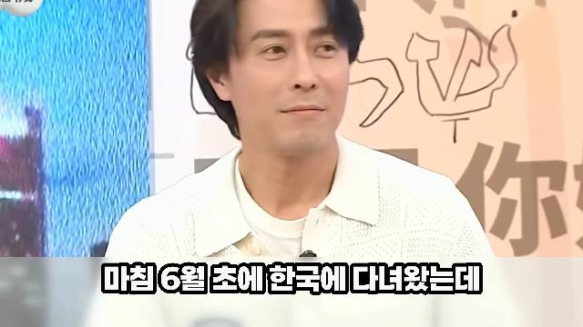
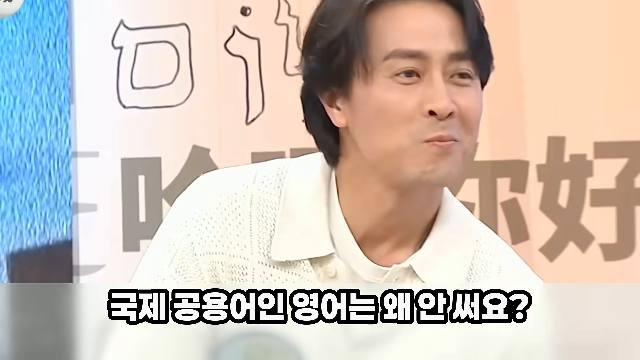
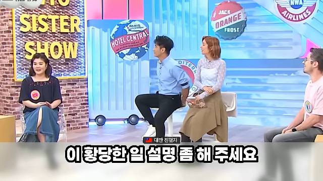
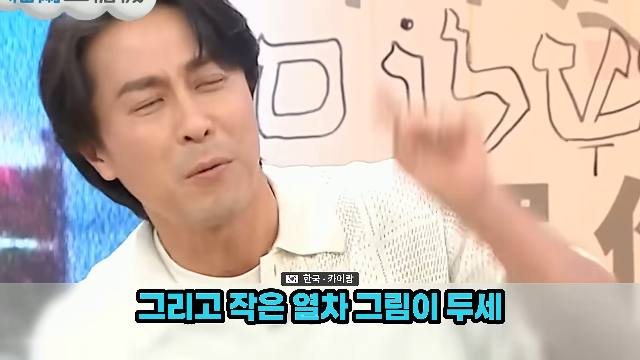
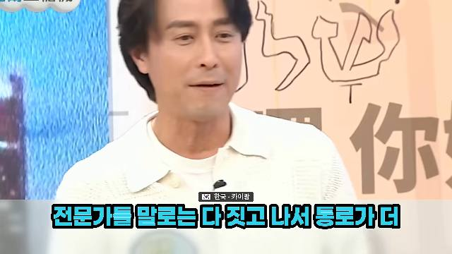
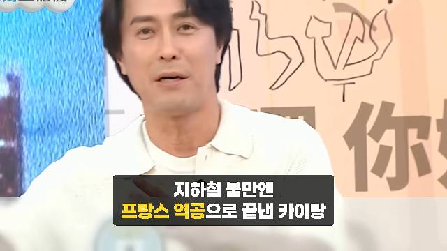
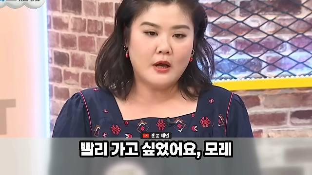
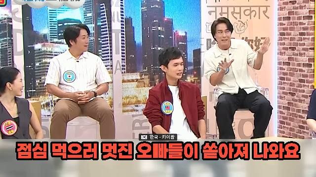
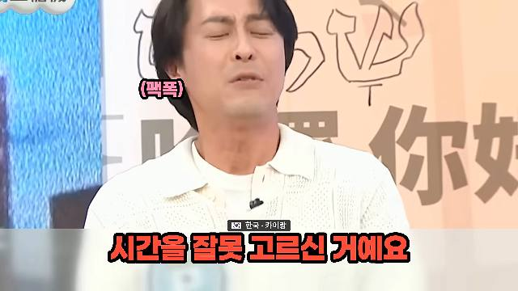
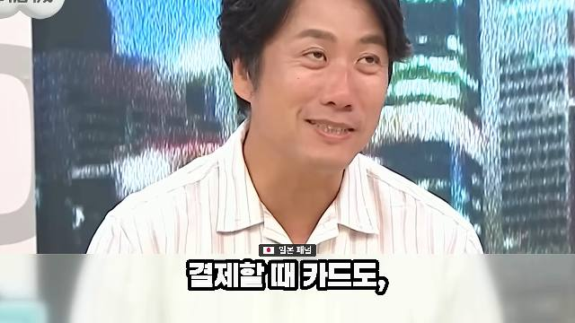
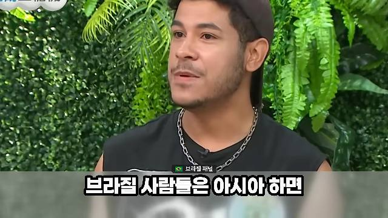
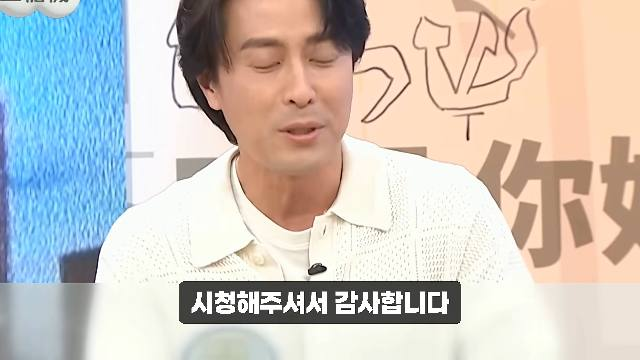
화면 자막 판독 대본 (107줄, AI 판독)
0:00 | 프랑스 패널 | 한국인들은 외국인한테 특히 불친절해요 | 흰색+검정 외곽선 0:04 | 한국·카이랑 | 프랑스엔 영어 있어요? 없잖아요! | 빨강 강조 0:06 | (라벨 없음) | 당신네 나라가 더 무서워요 | 빨강 강조 0:08 | 프랑스 패널 | ...... (프레임 9초: 말줄임표 + '(말잇못)' 효과 스티커) | 흰색 0:10 | (자막 없음) | 짙은 남색 카드 화면 (텍스트는 스트립에서 확인 불가, 추정: 에피소드 1 타이틀 카드) | - 0:12 | (나레이션 박스, 라벨 없음) | 서울 지하철에 불만 세 가지가 있다는 프랑스 패널 위안 | 반투명 검정 박스, '불만 세 가지' 노랑 강조 0:14 | 프랑스 패널 | 마침 6월 초에 한국에 다녀왔는데 | 흰색 0:18 | 프랑스 패널 | 상상했던 거랑 좀 달랐어요 | 흰색 0:20 | 프랑스 패널 | 오늘 세 가지를 얘기할게요, 지하철이요 | 흰색 0:24 | 프랑스 패널 | 관광객, 특히 외국인한테 불친절해요 | 빨강 강조 0:30 | 프랑스 패널 | 서울에서 본 승강장 화면이 이거예요 | 흰색 0:34 | 프랑스 패널 | 국제 공용어인 영어는 왜 안 써요? | 흰색 0:38 | 프랑스 패널 | 화면이 여러 개인데 내용이 하나도 안 바뀌어요 | 흰색 0:46 | 프랑스 패널 | 첫차랑 막차 시간만 알려 줘요 | 빨강 강조 0:50 | 프랑스 패널 | 오후 3시에도 그것만 보여 줘요 | 흰색 0:54 | 프랑스 패널 | 그냥 운영 시간표네요 | 흰색 0:56 | (나레이션 박스) | 그런데 진짜 문제는 열차가 언제 오는지 모른다는 건데요 | 검정 박스, '열차가 언제 오는지' 노랑 강조 1:00 | 프랑스 패널 | 열차가 몇 분 뒤에 오는지 알고 싶은데 | 흰색 1:04 | 프랑스 패널 | 맨 아래에 조그만 열차 그림 하나뿐이에요 | 흰색 1:10 | 프랑스 패널 | 이렇게 작아? 말해 줘서 이제 봤네 | 흰색 (라벨 1:10~1:12는 안 보임) 1:14 | 프랑스 패널 | 세 정거장 남았다는 것만 알지, 몇 분인지는 몰라요 (1:14 "세 정거장 남았다는 것만" / 1:16 "알지, 몇 분인지는 몰라요") | 흰색 1:20 | 프랑스 패널 | 화면은 이렇게 큰데 왜 안 바꿔요? | 흰색 1:22 | 대만 진행자 | 엉뚱한 데 힘을 줬네 | 빨강 강조 1:24 | (나레이션 박스) | 두 번째 불만은 열차 안에서 터지는데요 | 검정 박스, '열차 안' 노랑 강조 1:28 | 프랑스 패널 | 갈림길이 있는 노선을 탔는데 | 흰색 1:32 | (라벨 안 보임) | 안에는 온갖 광고만 가득하고 | 흰색 1:36 | 프랑스 패널 | 화면은 아무것도 안 알려 줘요, | 흰색 1:38 | (라벨 안 보임) | 그 역에 가서야 방송이 나와요 | 흰색 1:42 | 프랑스 패널 | 그것도 한국어로만요, 영어 | 빨강 강조 1:46 | 프랑스 패널 | 방송도 화면 표시도 없어요 | 빨강 강조 1:50 | 대만 진행자 | 불만 켜지고 어디로 가는지는 안 알려 주네요 | 흰색 1:54 | (나레이션 박스) | 그리고 마지막 불만은 에스컬레이터 | 검정 박스, '에스컬레이터' 노랑 강조 1:56 | (자막 없음) | - | - 1:58 | 프랑스 패널 | 마지막으로 영상 하나 보여 드릴게요 | 흰색 2:02 | 프랑스 패널 | 한국 도착 첫날 찍은 웃긴 장면이에요 | 흰색 (패널이 보여주는 영상 장면) 2:04 | 프랑스 패널 | 에스컬레이터 멋지네, 하고 지하철 타러 내려갔더니 | 흰색 (2:04 "에스컬레이터 멋지네," / 2:06 "하고 지하철 타러 내려갔더니") 2:10 | 프랑스 패널 | 에스컬레이터 끝에 또 계단이 있어요 | 빨강 강조 2:12 | 프랑스 패널 | 그럼 에스컬레이터는 왜 있는 거예요? | 흰색 2:14 | (라벨 안 보임) | 필요 없으면 차라리 전부 계단으로 하든가 | 흰색 2:18 | 대만 진행자 | 맛보기만 주고 낚은 거네 | 빨강 강조 2:20 | (나레이션 박스) | 한국 대표 카이랑, 어떻게 받아칠까요 | 검정 박스, '한국 대표 카이랑,' 노랑 강조 2:22 | (자막 없음) | - | - 2:24 | 대만 진행자 | 이 황당한 일 설명 좀 해 주세요 | 흰색 2:26 | 한국·카이랑 | 지하철 언어요? 지금 | 빨강 강조 2:28 | 한국·카이랑 | 한국어가 세계 공용어잖아요 | 빨강 강조 2:32 | 한국·카이랑 | 말도 안 돼, 해외도 안 나가 봤어요? | 흰색 2:36 | 한국·카이랑 | 조금 기다리면 영어 자막이 흘러나와요, | 하늘색(시안) + 검정 외곽 2:40 | 한국·카이랑 | 표시 시간이 짧을 뿐이에요 | 하늘색 2:42 | 한국·카이랑 | 그리고 작은 열차 그림이 두세 정거장 전이면 곧 온다는 뜻이에요 (2:42 "그리고 작은 열차 그림이 두세" / 2:46 "정거장 전이면 곧 온다는 뜻이에요") | 하늘색 2:50 | 한국·카이랑 | 한 정거장에 2~3분씩, 다들 알아서 계산해요 | 하늘색 2:54 | 한국·카이랑 | 대만이 워낙 편해서 그래요 | 하늘색 2:56 | (나레이션 박스) | 그리고 카이랑, 바로 역공에 들어가는데요 | 검정 박스, '역공' 노랑 강조 2:58 | (자막 없음) | - | - 3:00 | 한국·카이랑 | 고칠 데가 있는 건 맞아요, | 하늘색 3:04 | 한국·카이랑 | 어떤 곳은 설계를 반쯤 하다 말았어요 | 하늘색 3:08 | 한국·카이랑 | 전문가들 말로는 다 짓고 나서 통로가 더 필요해졌는데 예산이나 안전 문제가 생겨서 (3:08 "전문가들 말로는 다 짓고 나서 통로가 더" / 3:14 "필요해졌는데 예산이나 안전 문제가 생겨서") | 하늘색 3:20 | 한국·카이랑 | 그래서 작은 에스컬레이터밖에 못 놓은 거래요 | 하늘색 3:22 | 한국·카이랑 | 그런데 프랑스는 영어 있어요? | 빨강 강조 3:24 | (라벨 안 보임) | 없죠, 하나도 없잖아요 | 하늘색 3:26 | (라벨 안 보임) | 당신네 나라가 더 무서워요 | 빨강 강조 3:28 | (라벨 안 보임) | C로 시작하는 방향, B로 시작하는 방향… 찾기 너무 힘들어요 (3:28 "C로 시작하는 방향, B로 시작하는" / 3:30 "방향… 찾기 너무 힘들어요") | 하늘색 3:32 | (나레이션 박스) | 지하철 불만엔 프랑스 역공으로 끝낸 카이랑 | 검정 박스, '프랑스 역공' 노랑 강조 3:35 | (카드, 프레임 215초) | 에피소드 2 / 한국 남자는 다 똑같이 생겼다고? | 남색 배경 타이틀 카드, 흰색+노랑 3:36 | (나레이션 박스) | 이번엔 한국 남자 얼굴을 걸고 넘어지는 홍콩 패널 제니 | 검정 박스, '한국 남자 얼굴' 노랑 강조 3:40 | (라벨 안 보임; 이후 홍콩 패널) | 한국 여행 가면 다들 묻죠, 제니, | 흰색 3:44 | (라벨 안 보임) | 길에서 잘생긴 남자 봤어? | 흰색 3:46 | 홍콩 패널 | 길에선 안 보이고, TV에서도 안 보여요 | 빨강 강조 3:56 | 홍콩 패널 | 아이돌 팬 아니면 괴롭고, 팬이면 천국이에요 | 흰색 4:02 | 홍콩 패널 | LED 광고, 화장품, 지하철까지 | 흰색 4:06 | 홍콩 패널 | 전부 반짝반짝한 똑같은 얼굴이에요 | 흰색 4:10 | (라벨 안 보임) | 아이돌 좋아하는 친구는 | 흰색 4:12 | 홍콩 패널 | 누가 어느 그룹인지 알아요 | 흰색 4:16 | 홍콩 패널 | 그런데 저한테는 다 똑같이 생겼어요 | 빨강 강조 4:20 | (라벨 안 보임) | 아무리 멋진 유적도, 아무리 잘생긴 남자도 매일 보면 질려요 (4:20 "아무리 멋진 유적도, 아무리" / 4:24 "잘생긴 남자도 매일 보면 질려요") | 흰색 4:28 | 홍콩 패널 | 게다가 다 평면적인 미남이에요, | 빨강 강조 4:31 | 홍콩 패널 | 입체감이 없어요 (프레임 271초에서만 확인) | 빨강 강조 4:32 | 홍콩 패널(라벨 4:32 안 보임) | 수염 있는 남자도 없고, | 흰색 4:36 | (라벨 안 보임) | 머리 모양도 다 똑같아요 | 흰색 4:38 | 홍콩 패널 | 빨리 가고 싶었어요, 모레 대만 간다니 다행이다 싶었죠 (4:38 "빨리 가고 싶었어요, 모레" / 4:42 "대만 간다니 다행이다 싶었죠") | 흰색 4:46 | (나레이션 박스) | 가만히 듣던 카이랑, 현지인 꿀팁으로 받아치는데요 | 검정 박스, '현지인 꿀팁' 노랑 강조 4:50 | 한국·카이랑 | 시청자 여러분, 잘 들으세요 | 하늘색 4:52 | 한국·카이랑 | 잘생긴 남자 보고 싶으면 11시 반에서 1시 반 사이, 대기업 근처 식당에 가세요 (4:52 "잘생긴 남자 보고 싶으면 11시 반에서" / 4:56 "1시 반 사이, 대기업 근처 식당에 가세요") | 하늘색 5:02 | 한국·카이랑 | 점심 먹으러 멋진 오빠들이 쏟아져 나와요 | 빨강 강조 5:06 | (라벨 안 보임) | 진짜 가 볼 거예요, 없으면 따지러 올 거예요 | 흰색 5:10 | 한국·카이랑 | 주말엔 다들 집에서 쉬니까 평일에 가세요 | 하늘색 5:12 | 한국·카이랑 | 대학교 앞도요, 수업 끝날 때 가면 다들 꾸미고 나와서 잘생긴 사람 많아요 (5:12 "대학교 앞도요, 수업 끝날 때 가면 다들" / 5:18 "꾸미고 나와서 잘생긴 사람 많아요") | 하늘색 5:22 | 한국·카이랑 | 시간을 잘못 고르신 거예요 | 빨강 강조 5:24 | (나레이션 박스) | 외모 공격엔 출몰 시간표로 받아친 카이랑ㅋㅋ | 검정 박스, '출몰 시간표' 노랑 강조 5:27 | (카드, 프레임 327초) | 에피소드 3 / 일본이 한국보다 첨단이라고? | 남색 배경 타이틀 카드, 흰색+노랑 5:28 | (나레이션 박스) | 이번엔 자기 나라를 돌아보는 일본 패널 하루 | 검정 박스, '자기 나라' 노랑 강조 5:32 | 일본 패널(5:38부터 라벨) | 어릴 때 비디오, 워크맨 다 일본 거였잖아요 | 흰색 5:40 | (라벨 안 보임) | 그래서 일본은 첨단 기술의 나라인 줄 알았는데 | 흰색 5:42 | 일본 패널(5:46부터 라벨) | 가 보니 아직도 팩스를 써요 | 빨강 강조 5:48 | 일본 패널 | 결제할 때 카드도, 간편결제도 안 될 때가 있어요 (5:48 "결제할 때 카드도," / 5:50 "간편결제도 안 될 때가 있어요") | 흰색 5:56 | 일본 패널 | 좀 늦었다, 선진적이지 않다는 느낌이에요 | 흰색 6:02 | 일본 패널 | 인터넷에서 보니 한국은 | 빨강 강조 6:04 | 일본 패널 | 95.8%가 현금을 안 쓴대요 | 빨강 강조 6:06 | 일본 패널 | 일본은 58.8%라서 꽤 낮아요 | 흰색 6:10 | (나레이션 박스) | 일본 패널 입에서 한국이 앞섰다는 말이 나왔네요 | 검정 박스, '한국이 앞섰다' 노랑 강조 6:12 | 브라질 패널 | 브라질 사람들은 아시아 하면 예전엔 중국, 일본만 떠올렸어요 (6:12 "브라질 사람들은 아시아 하면" / 6:14 "예전엔 중국, 일본만 떠올렸어요") | 흰색 6:16 | (라벨 안 보임) | 그런데 지금은 한국이에요 | 빨강 강조 6:20 | (라벨 안 보임) | K팝 덕분이죠 | 흰색 6:22 | 브라질 패널 | 리우에서도 다들 K팝 들어요, | 빨강 강조 6:24 | (라벨 안 보임) | 식당마다 K팝이에요 | 빨강 강조 6:26 | (나레이션 박스) | 지하철 공격도 외모 공격도, 결국 카이랑의 역공으로 끝났네요 | 검정 박스, '카이랑의 역공' 노랑 강조 6:30 | (나레이션 박스) | 다음에도 속 시원한 이야기로 돌아올게요 | 검정 박스, 흰색 6:32 | (나레이션 박스) | 시청해주셔서 감사합니다 | 검정 박스, 흰색 (엔딩)

2. (대만반응) 한국 남자 깎아내리는 일본패널 한 방에 받아치는 카이랑 참교육
| 구간 | 역할 | 내용 |
|---|---|---|
| 0:00–0:20 | 훅 | 카이랑 vs 일본 패널 하이라이트 선공개 + 해설 박스 |
| 0:21–1:33 | 배경 | 에피소드 1: 호주 여행 경보 '한국이 여자 위험 국가 1위', 중국 패널 링천이 200% 동의하다가 한국 칭찬만 늘어놓음 |
| 1:34–2:29 | 본론 | 에피소드 2: 프랑스 패널 쿠, 한국이 프랑스보다 안전하다고 증언 |
| 2:30–3:41 | 본론 | 에피소드 3: 일본 패널 니시다가 한국 남자 변태 경험담, 카이랑이 얼굴 개그로 받아침(0:00 훅과 연결) |
| 3:42–4:23 | 본론 | 에피소드 4: 대만 패널(전직 승무원) 기내 경험, 잘생기면 로맨스 못생기면 변태 논란 |
| 4:24–6:21 | 반전 | 에피소드 5(추정): 카이랑 캐리어 질문 → 이탈리아 패널이 한국 남자가 공항까지 데려다준 미담, 카이랑이 기장 드립 |
| 6:22–7:15 | 본론 | 에피소드 6: 일본 패널 니시다 스토커 경험담, 카이랑이 '불 빌리려던 것' 으로 받아침, 외모 중시 논쟁 '우리는 다 내면을 봐요' |
| 7:16–7:25 | 결론 | 해설 박스로 카이랑 한 방 정리, 다음 영상 예고, 시청 감사 인사 |
편집 기법 (화면에서 확인)
- 대만 방송 원본에 한국어 번역 자막을 하단 고정 위치로 입힘
- 빨강=반전 포인트, 하늘색=카이랑 발언 색 구분
- 검정 박스+노랑 키워드로 상황 요약 및 장면 전환
- 에피소드별 남색 타이틀 카드로 구간 분리
- 예능식 효과 스티커 텍스트와 불꽃 효과 삽입
- 하이라이트 선공개 훅 후 시간순 본론
- 발언자 라벨을 자체 제작해 국기와 함께 표기
등장 인물(라벨 기준): 라벨로 확인된 인물: 일본 패널(해설 박스에 '니시다'), 한국 · 카이랑, 대만 진행자, 중국 패널(해설 박스에 '링천'), 프랑스 패널(해설 박스에 '쿠'), 이탈리아 패널, 대만 패널(방청석). 이탈리아 패널 이름 라벨은 못 봄.
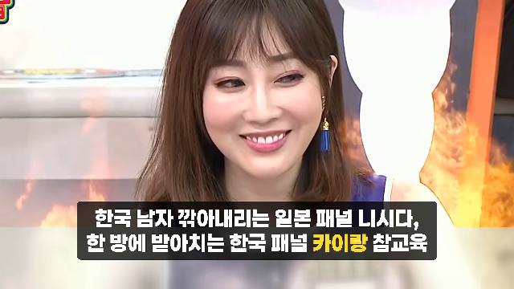
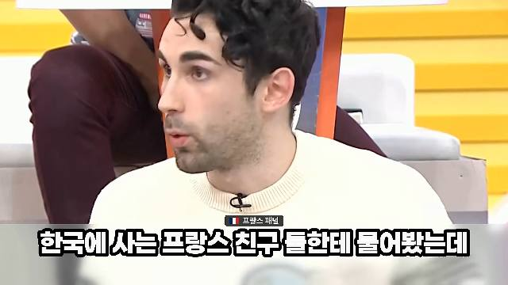
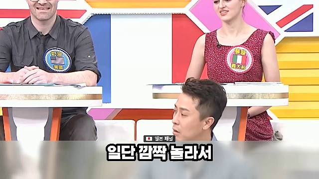
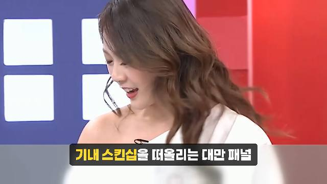
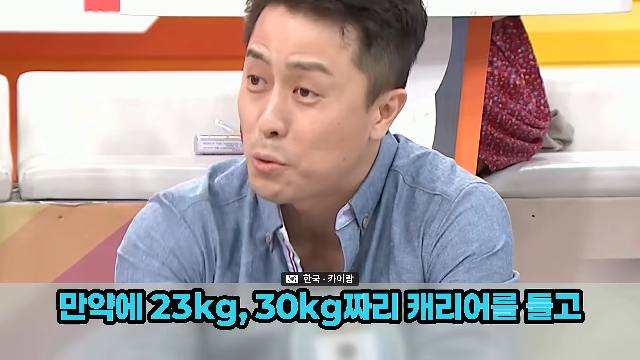
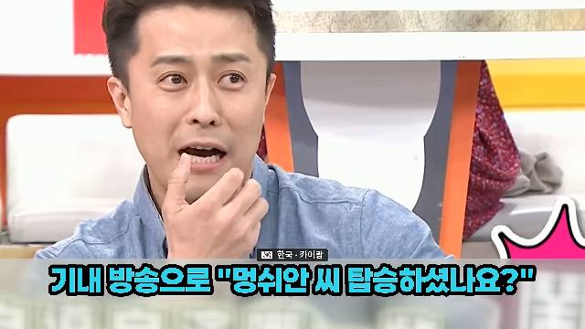
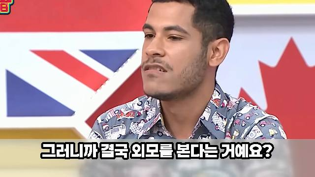
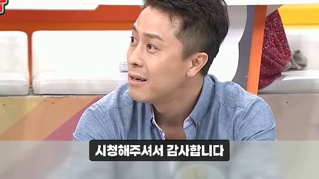
화면 자막 판독 대본 (174줄, AI 판독)
0:00 | (자막 없음) | - | - 0:02 | 일본 패널 | 한국 남자 중엔 진짜 변태도 있어요 | 빨강 강조 0:04 | 일본 패널 | 일본 여자는 안아도 된다는 거죠 | 빨강 강조 0:08 | 한국 · 카이랑 | 안고 나서 얼굴 보고 이러진 않았어요? | 빨강 강조 0:12 | 한국 · 카이랑 | 으아아악! | 검정 외곽선, 흰색 (본문 색: 검정 계열 글자로 보임) 0:14 | 일본 패널 | ...... | 흰색 0:16 | (나레이션 박스) | 한국 남자 깎아내리는 일본 패널 니시다, 한 방에 받아치는 한국 패널 카이랑 참교육 | 검정 박스, '카이랑' 노랑 강조 0:21 | (카드, 프레임 21초) | 에피소드 1 / 한국이 여자 위험 국가 1위라고? | 남색 타이틀 카드, 흰색+노랑 0:22 | 대만 진행자 | 호주에서 여행 경보가 나왔는데요 | 흰색 0:24 | 대만 진행자 | 여자한테 위험한 나라 1위가 한국이래요 | 빨강 강조 0:28 | (라벨 안 보임) | 어떻게 그래요? | 흰색 0:30 | (라벨 안 보임) | 진짜요? 말도 안 돼 | 흰색 0:31 | (라벨 안 보임) | 왜요? (프레임 31초에서만 확인) | 흰색 0:32 | (라벨 안 보임) | 그리고 저도요 | 흰색 0:34 | (라벨 안 보임) | 그리고 10~19세 대상 성범죄 비율이 | 흰색 0:36 | 대만 진행자 | 미국의 2배, 일본의 10배래요 | 빨강 강조 0:38 | 대만 진행자 | 먼저 다들 묻고 싶은데요 | 흰색 0:40 | 대만 진행자 | 한국이 여자가 조심해야 할 나라라는 데 동의해요? | 흰색 (0:40 "한국이 여자가 조심해야" / 0:42 "할 나라라는 데 동의해요?") 0:44 | 대만 진행자 | 링천? | 흰색 0:46 | 중국 패널 | 200% 동의해요 | 빨강 강조 0:50 | 중국 패널 | 전에 한국에 한 번 다녀와서 집에 와서 몰래 맹세했거든요 | 흰색 (0:50 "전에 한국에 한 번 다녀와서" / 0:52 "집에 와서 몰래 맹세했거든요") 0:54 | (나레이션 박스) | 그런데 중국 패널 링천이 맹세한 이유가 따로 있었다는데요 | 검정 박스, '맹세한 이유' 노랑 강조 0:58 | (라벨 안 보임) | 그래서 한국에서 무슨 일 있었어요? | 흰색 1:00 | (라벨 안 보임) | 한국에 가면 잘생긴 오빠를 만나요 | 흰색 1:04 | (라벨 안 보임) | 맛있는 게 엄청 많고 | 흰색 1:06 | 중국 패널 | 살 것도 많아요 | 흰색 1:08 | 중국 패널 | 그리고 한국 남자들을 보고 나면 | 흰색 1:10 | 중국 패널 | 여기 눌러살고 싶다 | 빨강 강조 1:12 | (라벨 안 보임) | 옷도 엄청 잘 입고요 | 흰색 1:14 | 대만 진행자 | 맞아, 그러니까 진짜 위험하네 | 흰색 1:16 | (라벨 안 보임) | 화장도 우리보다 잘해요 | 흰색 1:18 | (라벨 안 보임) | 피부도 엄청 좋고요 | 흰색 1:20 | (라벨 안 보임) | 진짜 너무 위험하다 | 흰색 1:22 | 대만 진행자 | 다들 왜 이래요ㅋㅋ | 흰색 1:24 | (라벨 안 보임) | 여자들 가지 마요 | 흰색 1:26 | (라벨 안 보임) | 한국 남자들 이런 거 잘 알아요 | 흰색 1:28 | (라벨 안 보임) | 그러니까 여자들은 절대 가지 마요 | 흰색 1:30 | (라벨 안 보임) | 진짜 무서워요 | 흰색 1:32 | (나레이션 박스) | 무섭다더니 한국 자랑만 늘어놓은 링천ㅋㅋ | 검정 박스, '한국 자랑' 노랑 강조 1:34 | (카드, 프레임 94초) | 에피소드 2 / 프랑스보다 한국이 안전하다고? | 남색 타이틀 카드 1:36 | (나레이션 박스) | 한국에서 2년 반 살아 본 프랑스 패널 쿠 | 검정 박스, '2년 반' 노랑 강조 1:40 | (라벨 안 보임) | 다음은 쿠한테 물어볼게요 | 흰색 1:42 | 대만 진행자 | 한국에 살아 봤잖아요 | 흰색 1:44 | 대만 진행자 | 한국이 정말 여자한테 위험해요? | 흰색 1:46 | 프랑스 패널 | 네, 여자에 따라 달라요 | 흰색 1:48 | (라벨 안 보임) | 설명해 드릴게요 | 흰색 1:50 | 프랑스 패널 | 한국에서 2년 반 살았어요 | 흰색 1:52 | 프랑스 패널 | 이 보도에 일부는 동의해요 | 흰색 1:54 | 프랑스 패널 | 한국은 위아래 질서가 엄격하고 | 흰색 1:58 | (나레이션 박스) | 그런데 프랑스 친구들 얘기는 달랐는데요 | 검정 박스, '프랑스 친구들' 노랑 강조 2:02 | 프랑스 패널 | 근데 외국 여자라면 별문제 없을 거예요 | 흰색 2:06 | 프랑스 패널 | 한국에 사는 프랑스 친구 둘한테 물어봤는데 | 흰색 2:08 | 프랑스 패널 | 둘 다 여자예요 | 흰색 2:10 | 프랑스 패널 | 혼자 클럽에도 자주 가고 | 흰색 2:14 | 프랑스 패널 | 먼저 남자한테 말도 걸어요 | 흰색 2:16 | 프랑스 패널 | 한국은 정말 안전하대요 | 흰색 2:18 | 프랑스 패널 | 프랑스보다 훨씬 안전하대요 | 빨강 강조 2:22 | (라벨 안 보임) | 남자가 너무 들이대면 | 흰색 2:24 | 프랑스 패널 | "저리 가" 하면 돼요 | 흰색 2:26 | 프랑스 패널 | 그럼 바로 멈춘대요 | 흰색 2:28 | (나레이션 박스) | 프랑스 패널이 오히려 한국 편을 드네요ㅋㅋ | 검정 박스, '한국 편' 노랑 강조 2:30 | (카드, 프레임 150초) | 에피소드 3 / 한국 남자는 변태라고? | 남색 타이틀 카드 2:32 | (나레이션 박스) | 한국 여행 공포담을 꺼내는 일본 패널 니시다 | 검정 박스, '니시다' 노랑 강조 2:36 | (라벨 2:38부터 일본 패널) | 한국 여행은 진짜 위험해요 | 빨강 강조 2:40 | 대만 진행자 | 하긴, 일본도 위험하죠 | 흰색 2:42 | 일본 패널 | 근데 한국 남자 중엔 | 흰색 2:44 | 일본 패널 | 진짜 변태도 있어요 | 빨강 강조 2:46 | 일본 패널 | 몇 년 전에 한국에 갔을 때 | 흰색 2:50 | 일본 패널 | 명동에서 쇼핑하는데 | 흰색 2:52 | 일본 패널 | 뒤에서 한국 남자가 | 흰색 2:54 | 일본 패널 | 이렇게 저를 껴안았어요 | 흰색 2:56 | 일본 패널 | "뭐 하세요?" 했죠 | 흰색 2:58 | (라벨 안 보임) | 네, 쇼핑하는데 | 흰색 3:00 | 일본 패널 | 뒤에서 남자가 껴안더니 | 흰색 3:02 | 일본 패널 | 번쩍 들어 올렸어요 | 빨강 강조 3:04 | 일본 패널 | 깜짝 놀랐어요, 진짜로 | 흰색 3:06 | 일본 패널 | 나중에 알고 보니 | 흰색 3:08 | 일본 패널 | 그 사람 생각은요 한국 남자 생각은요 (3:08 "그 사람 생각은요" / 3:10 "한국 남자 생각은요") | 흰색 3:14 | 일본 패널 | 일본 여자는 안아도 된다는 거죠 | 빨강 강조 3:18 | 일본 패널 | 일본 여자는 화 안 낼 거라고요 | 흰색 3:22 | (자막 없음) | - | - 3:26 | (나레이션 박스) | 가만히 듣던 카이랑, 한마디 던지는데요 | 검정 박스, '한마디' 노랑 강조 3:28 | 한국 · 카이랑 | 젊은 일본 여자를 안고 싶었던 거네요 | 하늘색 3:32 | 한국 · 카이랑 | 근데 안고 나서 얼굴 보고 | 하늘색 3:34 | 한국 · 카이랑 | 이러진 않았어요? 으아악! | 빨강 강조 3:36 | (라벨 안 보임) | 오늘 총구가 다 너한테 가 있네 | 흰색 3:38 | (라벨 안 보임) | 스스로 무덤 파지 마 | 흰색 3:40 | (나레이션 박스) | 변태 타령에 얼굴 개그로 맞받아친 카이랑ㅋㅋ | 검정 박스, '얼굴 개그' 노랑 강조 3:42 | (카드, 프레임 222초) | 에피소드 4 / 뒤에서 안아 주는 게 로맨스라고? | 남색 타이틀 카드 3:44 | (나레이션 박스) | 기내 스킨십을 떠올리는 대만 패널 | 검정 박스, '기내 스킨십' 노랑 강조 3:46 | 대만 진행자(3:48 라벨) | 비슷한 일 겪은 적 있어요? | 흰색 3:50 | (라벨 안 보임) | 네, 제가 승무원이었거든요 | 흰색 3:52 | 대만 패널 | 예를 들어 선반을 닫으려고 하면 | 흰색 3:54 | 대만 패널 | 한국 남자들이 다가와서 | 흰색 3:56 | 대만 패널 | 바로 제 뒤에서 밀어 올려 줘요 | 흰색 3:58 | 대만 패널 | 로맨틱하고 남자답다 싶은데 | 흰색 4:02 | (라벨 안 보임) | 안 잘생겼으면 확 식죠 | 빨강 강조 4:04 | 대만 패널 | 아무렇지 않게 선을 넘는 거예요 | 흰색 4:08 | (라벨 안 보임) | 완전 로맨틱하다 | 흰색 4:10 | 대만 패널 | 좀 멋있지 않아요? 남자답고 | 흰색 4:12 | (라벨 안 보임) | 그래서 좋다는 거예요, 싫다는 거예요? | 흰색 4:16 | (라벨 안 보임) | 결국 얼굴 보는 거네 | 흰색 4:18 | (라벨 안 보임) | 돌아서 확인은 해야죠 | 흰색 4:20 | (자막 없음) | - | - 4:22 | (나레이션 박스) | 잘생기면 로맨스, 못생기면 변태라는 거네요ㅋㅋ | 검정 박스, '변태' 노랑 강조 4:24 | (카드) | 남색 타이틀 카드 (텍스트 확인 불가, 순서상 에피소드 5로 추정) | - 4:26 | (나레이션 박스) | 무거운 캐리어 질문을 던지는 카이랑 | 검정 박스, '캐리어 질문' 노랑 강조 4:28 | (라벨 안 보임) | 제가 질문 하나 할게요 | 하늘색 4:30 | 한국 · 카이랑 | 만약에 23kg, 30kg짜리 캐리어를 들고 | 하늘색 4:34 | 한국 · 카이랑 | 엘리베이터도 에스컬레이터도 없을 때 | 하늘색 4:36 | 한국 · 카이랑 | 들고 올라가야 하면 | 하늘색 4:38 | 한국 · 카이랑 | 어느 나라 남자가 | 하늘색 4:40 | 한국 · 카이랑 | 먼저 도와줄까요? | 빨강 강조 4:42 | 이탈리아 패널 | 저는 한국에서 정말 좋은 경험을 했어요 | 흰색 4:44 | 이탈리아 패널 | 얼마 전에 한국 다녀왔어요 | 흰색 4:46 | 이탈리아 패널 | 4월에 5일 동안 혼자 갔는데 | 흰색 4:50 | 이탈리아 패널 | 데이터를 안 사서 계속 길을 물었어요 | 흰색 4:52 | 이탈리아 패널 | 주변 사람 도움이 계속 필요했죠 | 흰색 4:56 | 이탈리아 패널 | 근데 한국 사람들은 남녀 상관없이 다 도와줬어요 | 흰색 (4:56 "근데 한국 사람들은 남녀" / 4:58 "상관없이 다 도와줬어요") 5:00 | 이탈리아 패널 | 영어는 못해도 | 흰색 5:02 | 이탈리아 패널 | 가려는 곳까지 직접 데려다줬어요 | 빨강 강조 5:06 | (나레이션 박스) | 그런데 진짜 놀라운 일은 마지막 날 새벽이었다는데요 | 검정 박스, '마지막 날 새벽' 노랑 강조 5:10 | 이탈리아 패널 | 제일 놀라운 경험은요 | 흰색 5:12 | 이탈리아 패널 | 대만에 돌아오는 날 비행기가 8시라서 새벽 4시에 밖에 아무도 없고 (5:12 "대만에 돌아오는 날 비행기가 8시라서" / 5:16 "새벽 4시에 밖에 아무도 없고") | 흰색 5:20 | (라벨 안 보임) | 데이터도 없이 버스를 기다리는데 | 흰색 5:22 | 이탈리아 패널 | 한 시간이 지나도 버스가 안 와요 | 흰색 5:26 | 이탈리아 패널 | 옆에 캐리어 든 남자가 있어서 간대요 (5:26 "옆에 캐리어 든 남자가 있어서" / 5:30 "간대요") | 흰색 5:32 | 이탈리아 패널 | "따라가도 돼요? Can I follow you?" | 흰색 5:36 | 이탈리아 패널 | 된다더니 저를 데려가 줬어요 | 흰색 5:38 | 이탈리아 패널 | 같이 버스 타고 공항까지 갔어요 | 흰색 5:42 | 이탈리아 패널 | 그분이 도와준 거예요 | 흰색 5:44 | 이탈리아 패널 | 택시를 타야 했는데 | 흰색 5:46 | 이탈리아 패널 | 데려다주는 건 내 책임이니 | 빨강 강조 (배경에 방송 원본 중국어 자막 보임) 5:50 | 이탈리아 패널 | 택시 타고 공항에 도착했는데 | 흰색 5:54 | 이탈리아 패널 | 그분도 친구랑 출국하는 길이었는데 | 흰색 5:58 | 이탈리아 패널 | 다들 저를 기다려 줬어요 | 흰색 6:00 | 이탈리아 패널 | 출국 심사 때 잘못한 거 없나 확인까지 | 흰색 6:04 | (라벨 안 보임) | 완전 아기 취급이네 | 흰색 6:06 | (라벨 안 보임) | 가이드 하신 거네 | 흰색 6:08 | 이탈리아 패널 | 탑승할 때 비로소 바이바이했어요 | 빨강 강조 6:10 | 한국 · 카이랑 | 그 남자요, 진짜로 | 하늘색 6:12 | 한국 · 카이랑 | 그 한국 남자 정체는 기장이었고 | 하늘색 6:14 | 한국 · 카이랑 | 기내 방송으로 "멍쉬안 씨 탑승하셨나요?" | 하늘색 6:16 | 한국 · 카이랑 | "대만까지 모셔다 드릴게요" | 빨강 강조 6:18 | (라벨 안 보임) | 완전 로맨틱하다, 세상에 | 흰색 6:20 | (나레이션 박스) | 미담에 기장 드립까지 얹는 카이랑ㅋㅋ | 검정 박스, '기장 드립' 노랑 강조 6:22 | (카드, 프레임 382초) | 에피소드 6 / 한국에서 스토커를 만났다고? | 남색 타이틀 카드 6:24 | (나레이션 박스) | 또 경험담을 꺼내는 일본 패널 니시다 | 검정 박스 6:26 | (라벨 안 보임) | 그분은 운이 좋았던 거죠 | 흰색 6:28 | 일본 패널 | 저는 운이 나빴어요 | 흰색 6:30 | 일본 패널 | 한국에서 마사지 받으러 갔는데 골목에서 | 흰색 6:32 | 일본 패널 | 누가 계속 따라오는 거예요 | 흰색 6:34 | 일본 패널 | 한참 걸어도 뒤에 계속 있었어요 | 흰색 6:36 | 일본 패널 | 너무 무서웠어요 | 흰색 6:38 | 일본 패널 | 다행히 경찰을 만나서 무사했어요 | 흰색 6:40 | 일본 패널 | 저는 변태를 엄청 많이 만났어요 | 빨강 강조 6:44 | 일본 패널 | 왜 쟤만 그렇게 달달한 일을 겪어요? | 흰색 6:46 | (나레이션 박스) | 가만히 듣던 카이랑, 이번에도 한마디 하는데요 | 검정 박스, '한마디' 노랑 강조 6:48 | (자막 없음) | - | - 6:50 | 대만 진행자 | 그 남자는… 운이에요, 운 | 흰색 6:52 | 대만 진행자 | 설명할 거면 빨리 해요 | 흰색 6:56 | 한국 · 카이랑 | 뒤에서 따라온 남자는요 | 하늘색 6:58 | 한국 · 카이랑 | "불 좀 빌려 주실래요?" 하려던 거예요 | 빨강 강조 7:00 | (라벨 안 보임) | 멍쉬안은 화장 안 해서 애처럼 보였을 거예요 | 흰색 7:02 | (라벨 안 보임) | 그러니까 결국 외모를 본다는 거예요? 보이는 게 문제네 (7:02 "그러니까 결국 외모를 본다는 거예요?" / 7:06 "보이는 게 문제네") | 흰색 7:08 | 일본 패널 | 한국 사람은 원래 그렇잖아요 | 흰색 7:10 | 대만 진행자 | 한국 사람은 외모를 중시해요? | 흰색 7:12 | 한국 · 카이랑 | 말도 안 돼요, 우리는 다 내면을 봐요 | 빨강 강조 7:16 | (나레이션 박스) | 한국 남자 깎아내리던 일본 패널 니시다, 결국 카이랑 한 방에 웃고 말았네요 | 검정 박스, '카이랑' 노랑 강조 7:22 | (나레이션 박스) | 다음에도 속 시원한 이야기로 돌아올게요 | 검정 박스, 흰색 7:24 | (나레이션 박스) | 시청해주셔서 감사합니다 | 검정 박스, 흰색 (엔딩) # 아래는 2초 간격 스트립에서 빠졌고 풀프레임에서만 확인된 짧은 줄/효과 스티커 (정확한 시작 시각은 프레임 초 기준) 1:12 | (라벨 안 보임) | 다 알아요 (프레임 79초 = 1:19) | 흰색 2:01 | 프랑스 패널 | 한국 여자들 힘든 건 인정해요 (프레임 121초) | 흰색 3:25 | 일본 패널 | 밀쳐 냈죠 (프레임 205초) | 흰색 효과 스티커(프레임): (충격 통계) 27초, (씨익) 13초, (얼굴 개그ㅋㅋ) 11초, (일본 여자 OK?) 194초, (얼굴 개그) 213초, (아기 취급ㅋㅋ) 364초, (기장 드립ㅋㅋ) 376초, (내면 강조ㅋㅋ) 433초 주의: 스트립이 2초 간격 샘플이라 그 사이 1초 미만으로 지나간 줄은 누락됐을 수 있음.

3. (대만반응) 한국인 사과 안 한다는 일본패널 한 방에 기강잡는 카이랑 참교육
| 구간 | 역할 | 내용 |
|---|---|---|
| 0:00–0:08 | 훅 | 가장 자극적인 발언 두 줄 선공개(한국인은 사과 안 한다) |
| 0:08–1:04 | 배경 | 에피1: 대만 진행자 질문, 일본 패널의 부산 폭행 일화 |
| 1:04–1:28 | 본론 | 김병수가 대만에서 겪은 일, 진행자 "어느 나라에나 무례한 사람 있다" |
| 1:28–3:07 | 본론 | 독일 패널 아푸: 30년 전 대만 부자/한국 엉망 → 지금은 역전, 한국 장점/개방성 조언 |
| 3:07–3:52 | 본론 | 에피3: 카이랑의 2016 통계(다시 태어나도 같은 나라: 한국 50%, 일본 70%+)와 일본 영어 디스 |
| 3:52–5:12 | 반전 | 에피4: 니시다가 한국인은 사과 안 한다고 주장, 카이랑이 "한국만 그런 게 아니다"로 맞받음 |
| 5:12–5:34 | 결론 | 장점 세 개 대 보라니 일본 패널이 네 개 말하며 마무리, 다음 영상 예고 멘트 |
편집 기법 (화면에서 확인)
- 원본 대만 방송을 발언 단위로 잘라 한 문장씩 큰 자막으로 재구성(2초 단위 자막 교체)
- 색 코드: 한국 패널=하늘색, 강조/반전 문장=빨강, 일반=흰색
- 화자 국기 라벨로 국적 구도 강조
- 설명용 자막 박스가 상황 요약 + 노란 키워드 강조
- 에피소드 챕터 카드(남색, 제목이 질문형 카피)
- 이모지·괄호 리액션 스티커로 웃음/긴장 연출
- 욕설은 $%&* 마스킹
- 마지막에 반전(일본 패널이 장점 네 개)으로 끝내는 구성
등장 인물(라벨 기준): 일본 패널(니시다로 호칭됨, 라벨 일본 패널), 한국 패널 카이랑, 한국 패널 김병수, 독일 패널(설명자막에 아푸), 대만 진행자 (라벨 기준). 한국 여성 패널은 라벨 없이 리액션만 보임.
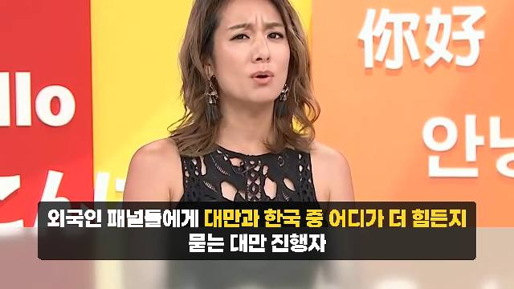
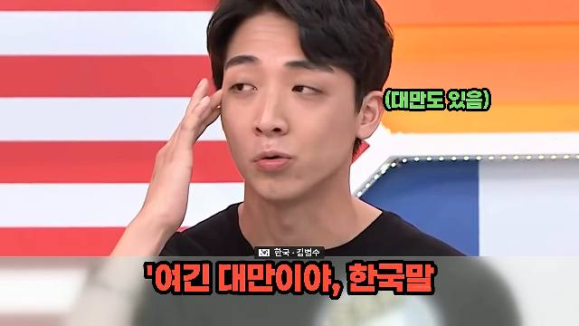
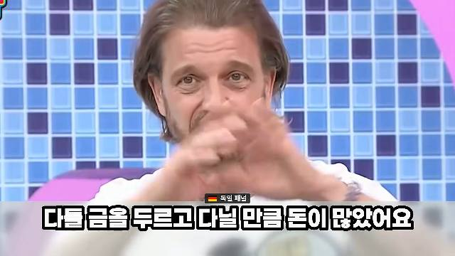
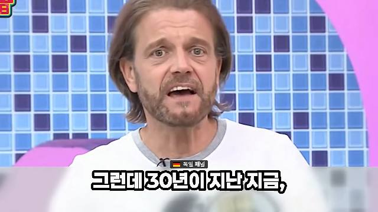
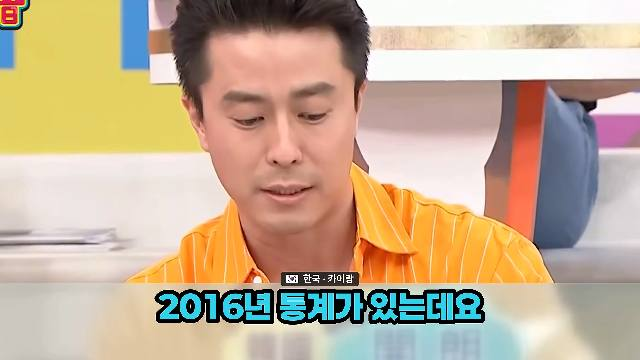
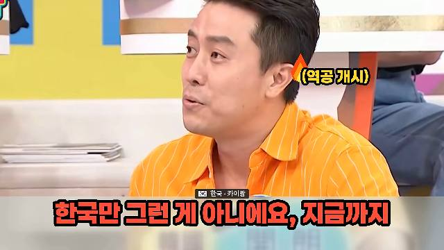
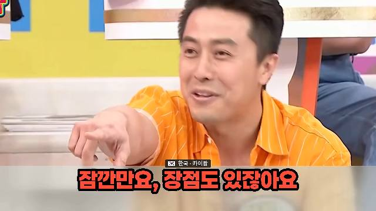
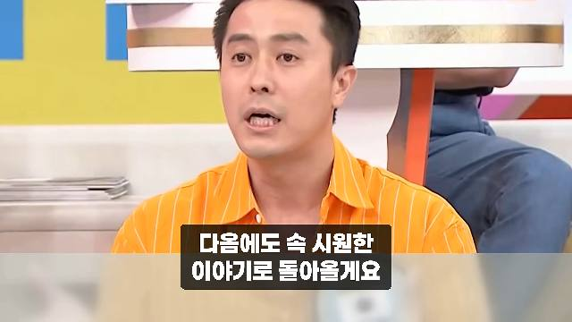
화면 자막 판독 대본 (109줄, AI 판독)
0:00 | 일본 패널 | 한국 사람은 사과를 안 해요 | white 0:02 | 한국 · 카이랑 | 사과 한 번도 안 한$%&* 정부도 있죠? | red (욕설 마스킹 $%&*) 0:06 | (자막 없음, 대만 방송 중국어 자막 블러) | [없음] | 0:08 | (챕터 카드) | 에피소드 1 한국어 썼다고 맞았다고? | 흰색, 부제 노란색 0:10 | (설명 자막 박스) | 외국인 패널들에게 대만과 한국 중 어디가 더 힘든지 묻는 대만 진행자 | white, "대만과 한국 중 어디가 더 힘든지" yellow 0:14 | (라벨 없음) | 저는 한국이 더 힘들다고 봐요 | white 0:16 | (라벨 없음→일본 패널) | 다들 스트레스가 크다잖아요, | white 0:20 | 일본 패널 | 다들 스트레스가 크다잖아요, | white 0:22 | 일본 패널 | 진짜 제정신이 아닌 것 같아요 | white 0:26 | 일본 패널 | 한번은 일본어 하는 한국 | white 0:30 | 일본 패널 | 친구랑 부산에 여행을 갔어요 | white 0:34 | 일본 패널 | 제가 한국어를 못해서 계속 일본어로 얘기했죠 | white 0:36 | 일본 패널 | 걷고 있는데 갑자기 한국 | red 0:40 | 일본 패널 | 사람이 제 친구를 때렸어요 | red 0:42 | 일본 패널 | 무슨 일인지도 모르고, 친구도 | white 0:46 | 일본 패널 | 한국인이라 싸움이 났어요 | white 0:48 | 일본 패널 | 생각해 보니 일본어를 듣고 | white 0:52 | 일본 패널 | 기분이 나빴던 것 같아요 | white 0:54 | 일본 패널 | 일본 싫어하는 게 너무 티가 났어요, 알겠어요 | white 0:58 | 일본 패널 | 그래도 길 가다 갑자기 | red 1:00 | 일본 패널 | 사람을 때리는 게 맞아요? | red 1:04 | (설명 자막 박스) | 그러자 한국 패널 김병수가 대만에서 겪은 일을 꺼내는데요 | white, "대만에서 겪은 일" yellow 1:07 | 한국 · 김병수 | 저도 대만 카페에서 한국 | cyan (프레임 f_0067s에서 확인) 1:08 | 한국 · 김병수 | 친구랑 얘기하고 있는데 | cyan 1:10 | 한국 · 김병수 | 어린 꼬마 하나가 오더니 | cyan 1:14 | 한국 · 김병수 | 하지 마' 그러더라고요 | red (앞 따옴표 부분 가려짐/[불명확]) 1:16 | 대만 진행자 | 때려 줬어요? | white 1:18 | 대만 진행자 | 그냥 때려도 돼요, 우린 괜찮아요 | white 1:20 | 대만 진행자 | 애들은 따끔하게 가르쳐야 해요, 예의 문제예요 | white 1:26 | (설명 자막 박스) | 어느 나라에나 무례한 사람은 있다는 거죠 | "어느 나라에나" yellow, 나머지 white 1:28 | (남색 챕터 카드 추정, 텍스트 미확인) | [불명확] | 1:30 | (설명 자막 박스) | 대만 생활 30년 차에 입을 여는 독일 패널 아푸 | white, "독일 패널 아푸" yellow 1:32 | 독일 패널 | 제가 대만에 처음 온 게 거의 30년 전이에요 | white 1:38 | 독일 패널 | 그땐 대만 사람 누구나 '대만은 | white 1:42 | 독일 패널 | 보물섬, 부자 나라'라고 했어요 | white 1:46 | 독일 패널 | 아시아 네 마리 용 중에 우리 | white 1:48 | 독일 패널 | 대만이 넘버원이라고요 | white 1:50 | 독일 패널 | 다들 금을 두르고 다닐 만큼 돈이 많았어요 | white 1:58 | 독일 패널 | 명품도 취향은 없고 비싸기만, | white 2:04 | 독일 패널 | 촌스러운데 돈은 많은 | white 2:08 | 독일 패널 | 대만은 부자고, 한국은 엉망이라고 했죠 | red 2:12 | (설명 자막 박스) | 그런데 30년이 지난 지금은 완전히 뒤집혔다는데요 | white, "완전히 뒤집혔다" yellow 2:14 | 독일 패널 | 그런데 30년이 지난 지금, | white 2:18 | 독일 패널 | 대만이 몇 등인지는 몰라도 | white 2:20 | (라벨 없음) | 한국이 확실히 대만 앞에 있어요 | red 2:22 | 독일 패널 | 발명 같은 건 세계 1등이에요, 그거 뭐죠, 특허 | white 2:30 | 독일 패널 | 미국, 독일보다 많아요 | red 2:32 | (라벨 없음) | 세계에서 가장 첨단화된 | red 2:36 | 독일 패널 | 도시도 한국에 있어요 | red 2:38 | 독일 패널 | 다만 한국은 보수적이라 국제 | white 2:42 | 독일 패널 | 순위가 아주 높지는 않아요 | white 2:46 | 독일 패널 | 좀 더 개방적이면 좋겠어요, | white 2:50 | 독일 패널 | 대만은 외국 것도, 외국인도 다 | white 2:54 | 독일 패널 | 환영하고 국제결혼도 반겨요 | white 2:58 | 독일 패널 | 한국은 이미 저만큼 앞서 있으니, | red 3:00 | 독일 패널 | 대만은 한국한테 단결을 배우고 | red 3:02 | 독일 패널 | 한국은 대만한테 개방성을 배우면 돼요 | white 3:04 | (설명 자막 박스) | 30년 만에 대만을 앞지른 한국, 외국인 눈에도 보이네요 | white, "대만을 앞지른 한국" yellow 3:07 | (챕터 카드) | 에피소드 3 일본에 남는 이유가 영어 못해서? | 흰색, 부제 노란색 (f_0187s) 3:10 | (설명 자막 박스) | 이번엔 통계 하나를 꺼내 드는 한국 패널 카이랑 | white, "통계 하나" yellow 3:12 | 한국 · 카이랑 | 2016년 통계가 있는데요 | cyan 3:16 | 한국 · 카이랑 | 다시 태어나도 같은 나라에서 | cyan 3:20 | 한국 · 카이랑 | 태어나고 싶냐는 질문이에요 | cyan 3:24 | (라벨 없음, 통계표 화면) | 한국은 50%가 그렇다고 했어요 | cyan 3:26 | (통계표) | 반반이네 | white 3:28 | (통계표) | 40% 가까이 된다는 거예요 | cyan | cyan 3:30 | (통계표, 일본 행 보임) | 일본은 많이 달라요, | cyan 3:32 | 한국 · 카이랑 | 70% 넘게 그렇다고 했어요 | cyan 3:34 | 한국 · 카이랑 | 그럼 일본에 계속 살고 싶은 이유가 뭘까요? | cyan 3:38 | 일본 패널 | 에이, 아니죠 | white 3:40 | 일본 패널 | 그러지 마요 | white 3:43 | (라벨 없음) | 영어 하는 걸 못 봤어요 | red (f_0223s) 3:46 | (라벨 없음) | 다들 영어 잘하던데요, 오케이 오케이 | white 3:48 | (설명 자막 박스) | 니시다 앞에서 일본 영어 디스까지 날린 카이랑ㅋㅋ | white, "일본 영어 디스" yellow 3:52 | (챕터 카드) | 에피소드 4 한국인은 사과를 안 한다고? | 흰색, 부제 노란색 (f_0232s) 3:54 | (설명 자막 박스) | [앞부분 잘림] 작정한 듯 한국 얘기를 꺼내는 일본 패널 니시다 | white, "작정한 듯" yellow 3:56 | 일본 패널 | 한국은 한번 싫으면 끝까지 | red 4:00 | 일본 패널 | 싫어하는 느낌이에요 | red 4:02 | 일본 패널 | 대만에선 여행책 들고 걸으면 먼저 | white 4:08 | 일본 패널 | 와서 '어디 가요? 데려다줄게요' 해요 | white 4:12 | 일본 패널 | 한국에선 똑같이 여행책 들고 | red 4:16 | 일본 패널 | 다녀도 아무도 안 도와줘요 | red 4:18 | 일본 패널 | 일본인을 진짜 싫어한다는 게 느껴져요 | white 4:22 | 일본 패널 | 그리고 한국 사람은 진짜 사과를 안 해요 | red 4:28 | 일본 패널 | 생각해 보세요, 그 말을 자주 들어 봤어요? | white 4:34 | 일본 패널 | '미안합니다'가 뭐였더라? 전혀 생각이 안 나요 | white 4:36 | 일본 패널 | 남한테 미안하다고 해 본 적 있어요? | white 4:38 | 일본 패널 | '안녕하세요'는 아는데, | white 4:40 | 일본 패널 | 들어 본 적이 없어서 못 외워요 | white 4:44 | 일본 패널 | 사과를 안 하는 게 습관이에요 | red 4:48 | 대만 진행자 | 바로 무릎 꿇거나 고개만 | white 4:50 | 대만 진행자 | 숙이고, 말로는 잘 안 하죠? | white 4:52 | 일본 패널 | 그래서 사과를 싫어한다는 느낌이에요 | white 4:54 | (설명 자막 박스) | 가만히 듣던 카이랑, 한마디 던지는데요 | white, "한마디" yellow 4:56 | 한국 · 카이랑 | 한국만 그런 게 아니라… | cyan 5:02 | 한국 · 카이랑 | 한국만 그런 게 아니에요, 지금까지 | red 5:04 | 한국 · 카이랑 | 한 번도 사과 안 한 정부도 있어요 | red 5:08 | 일본 패널 | 너네가 사과하면 우리도 할게요 | white 5:10 | (라벨 없음→대만 진행자 라벨 5:12) | 한일 두 분 사이좋네요 | white 5:14 | 한국 · 카이랑 | 잠깐만요, 장점도 있잖아요 | red 5:16 | 한국 · 카이랑 | 단점 세 개 말했으니 장점 세 개 대 봐요 | red 5:18 | 일본 패널 | 장점이요? 한국 거면 OK | white 5:20 | 일본 패널 | 춤은 진짜 잘 춰요 | red 5:22 | 일본 패널 | 키도 크고 | white 5:24 | (라벨 없음) | 피부도 하얗고, 세 개 됐죠 | red 5:26 | 일본 패널 | 드라마도 재밌어요 | white 5:28 | (라벨 없음) | 좋아요, 니시다 고마워요 | white 5:30 | (설명 자막 박스) | 사과 안 한다던 일본 패널, 결국 한국 장점 네 개로 끝냈네요 | white, "한국 장점 네 개" yellow 5:34 | (설명 자막 박스) | 다음에도 속 시원한 이야기로 돌아올게요 | white (엔딩 멘트)

4. (대만반응) 한국인 뻔뻔하다는 대만 진행자 입 다물게 만드는 카이랑 참교육
| 구간 | 역할 | 내용 |
|---|---|---|
| 0:00–0:10 | 훅 | "사과 안 한다" 도발 + 카이랑 반박 예고 선공개 |
| 0:10–1:14 | 배경 | 에피1: 대만 진행자의 전철 선로 밀침 일화, 한국인 습관 주장, 카이랑 "한국인 문제 아니다" |
| 1:14–2:21 | 반전 | 카이랑 준비한 사진: 신오쿠보역 2001, 2006 한국 유학생이 선로에 뛰어들어 일본인 구조(자막 기준) |
| 2:21–3:38 | 본론 | 에피2: 일본 패널과 진희의 유학 시절 한국인 친구 경험담, 대만 진행자 코멘트 |
| 3:38–5:28 | 본론 | 일본 패널 유키의 라면 오해와 잠수 이별 이야기, 허니의 해명 |
| 5:28–7:04 | 본론 | 대만 진행자의 반격 기회, 일본 패널 쿄다의 평균 크기 지도(성적 농담 소재), 카이랑 반응 |
| 7:04–8:08 | 결론 | 에피6: 허니의 자기관리 비교, 니시다 고백, 한일 사이 앙금 없음, 한국인의 용기로 마무리, 엔딩 멘트 |
편집 기법 (화면에서 확인)
- 원본 대만 방송을 발언 단위로 잘라 2초 단위 큰 자막으로 재구성
- 색 코드: 한국 패널=하늘색, 강조=빨강, 일반=흰색
- 화자 국기 라벨로 국적 구도 강조
- 설명 자막 박스로 상황 요약+노란 키워드
- 에피소드 챕터 카드(질문형 제목)로 구간 분리
- 스티커/이모지로 리액션 연출
- 카이랑의 사진/지도 등 자료 화면은 풀스크린 전환
- 처음에 도발+반박을 선공개하고 마지막에 용기로 끝내는 수미상관 구성
등장 인물(라벨 기준): 한국 패널 카이랑·진희·허니(라벨), 일본 패널(니시다, 유키, 쿄다는 설명자막 기준), 대만 진행자, 대만 게스트(6:58 라벨). 진희/허니/카이랑은 한국 라벨이 붙은 발언자.
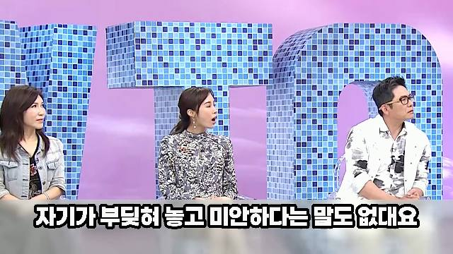
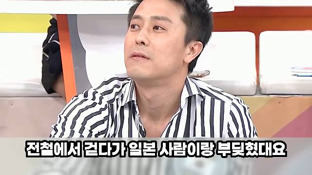
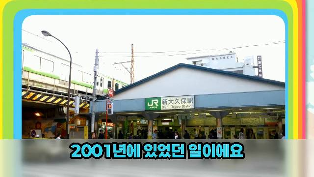
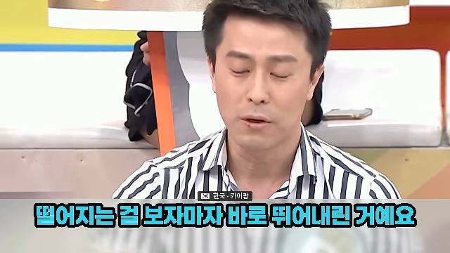
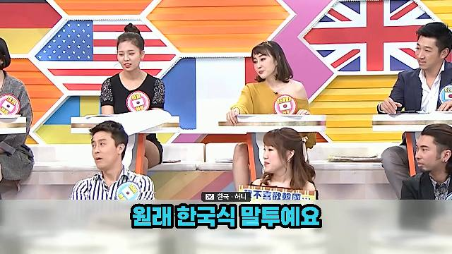
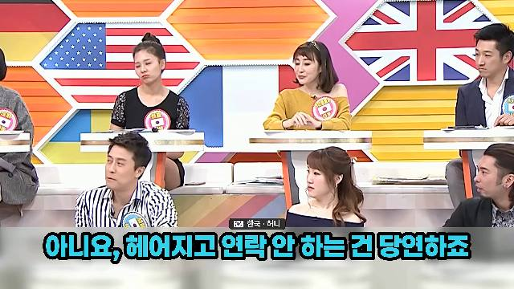
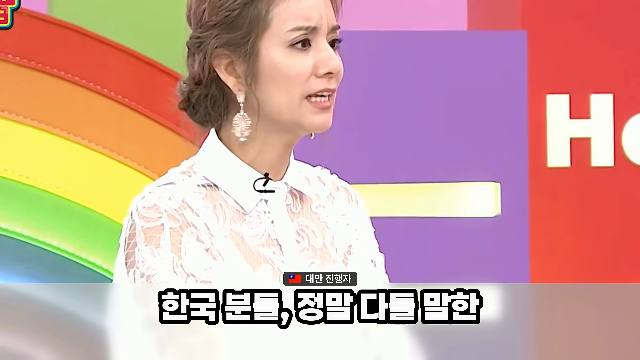
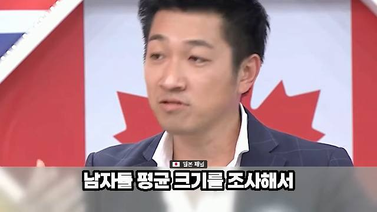
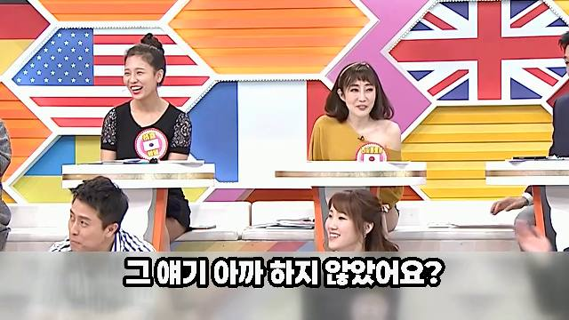
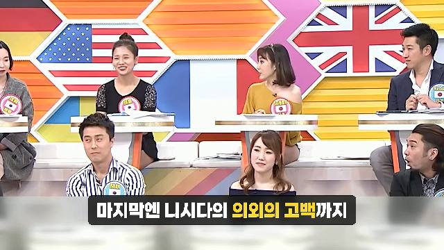
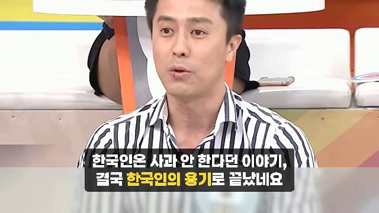
화면 자막 판독 대본 (167줄, AI 판독)
0:00 | (라벨 없음) | 자기가 부딪혀 놓고 미안하다는 말도 없대요 | white 0:02 | (라벨 없음) | 한국 사람들은 미안하다는 말을 안 해요 | white 0:04 | 한국 · 카이랑 | 확실한 증거로 반박할게요 | red 0:06 | 한국 · 카이랑 | 한국 유학생이었어요 | red 0:08 | (자막 없음) | [없음] | 0:10 | (챕터 카드) | 에피소드 1 한국인은 사과할 줄 모른다고? | 흰색, 부제 노란색 (f_0010s) 0:12 | (설명 자막 박스) | 일본 전철 사건으로 한국인 전체를 걸고 넘어지는 대만 진행자 | white, "한국인 전체" yellow 0:16 | 대만 진행자 | 한국 남자가 일본에 놀러 갔는데 | white 0:18 | 대만 진행자 | 전철에서 걷다가 일본 사람이랑 부딪혔대요 | white 0:24 | 대만 진행자 | 그런데 미안하다는 말도 안 했대요 | white 0:26 | 대만 진행자 | 일본 사람이 뒤돌아서 한번 쳐다봤는데 | white 0:28 | 대만 진행자 | 한국 남자가 "왜 쳐다봐?" 하더니 | white 0:30 | 대만 진행자 | 홧김에 그 사람을 선로로 밀어 버렸대요 | red 0:36 | (라벨 없음→대만 진행자) | 자기가 부딪혀 놓고 사과도 | white 0:40 | 대만 진행자 | 없이 선로로 밀다니요 | white 0:42 | (설명 자막 박스) | 이걸 한국인 습관으로 몰아가는 진행자 | white, "한국인 습관" yellow 0:44 | (라벨 없음→대만 진행자) | 한국 사람들은 길에서 진짜 잘 부딪히고 밀어요 | white 0:48 | 대만 진행자 | 뒤에서 등을 계속 밀면서 빨리 가라고 하잖아요 | white 0:56 | (라벨 없음) | 한국 사람은 왜 그렇게 성질이 급해요? | white 0:58 | 대만 진행자 | 부딪혀 놓고 미안하다는 말을 안 해요 | white 1:00 | (라벨 없음) | 나이 상관없이 다 그래요 | white 1:02 | (라벨 없음) | 한국 사전에는 "미안합니다"가 없나 봐요 | red 1:06 | (라벨 없음) | 한국 분들 셋은 여기 왜 왔어요? 집에 가세요 | white 1:08 | 한국 · 카이랑 | 이건 한국인 문제가 아니에요 | red 1:10 | (라벨 없음) | 드디어 나왔네 | white 1:14 | (설명 자막 박스) | 가만히 듣던 카이랑, 준비해 온 사진을 꺼내 드는데요 | white, "준비해 온 사진" yellow 1:16 | 한국 · 카이랑 | 제가 확실한 증거로 반박할게요 | red 1:18 | 한국 · 카이랑 | 신오쿠보역이라고, | cyan 1:20 | 한국 · 카이랑 | 2001년에 있었던 일이에요 | cyan 1:24 | 한국 · 카이랑 | 술 취한 일본 남자가 선로로 떨어졌어요 | cyan 1:30 | 한국 · 카이랑 | 제일 먼저 뛰어내린 사람이 누군지 아세요? | cyan 1:32 | 한국 · 카이랑 | 한국 유학생이었어요 | red 1:34 | (자막 없음) | [없음] | 1:36 | 한국 · 카이랑 | 일본 분도 한 분 같이 뛰어내렸고요 | cyan 1:38 | 한국 · 카이랑 | 사람이 떨어졌는데 "어느 나라 | cyan 1:40 | 한국 · 카이랑 | 사람이에요?" 묻고 뛰어들어요? | cyan 1:42 | 한국 · 카이랑 | 떨어지는 걸 보자마자 바로 뛰어내린 거예요 | cyan 1:46 | 한국 · 카이랑 | 그런데 열차가 너무 빨리 들어와서 | cyan 1:48 | (라벨 없음) | 세 사람 모두 세상을 떠났어요 | cyan 1:50 | (설명 자막 박스) | 그런데 카이랑의 이야기는 여기서 끝이 아니었는데요 | white, "여기서 끝이 아니었는데요" yellow 1:54 | 한국 · 카이랑 | 2006년에도 한국 유학생이 | cyan 1:56 | 한국 · 카이랑 | 새벽 6시쯤 전철을 기다리는데 | cyan 2:00 | 한국 · 카이랑 | 술 취한 일본 여성이 선로로 떨어졌어요 | cyan 2:04 | 한국 · 카이랑 | 이번에도 한국 유학생이 | red 2:06 | 한국 · 카이랑 | 용감하게 뛰어들어서 구했어요 | red 2:10 | 한국 · 카이랑 | 그런데 지금까지 보답도, | cyan 2:12 | 한국 · 카이랑 | 고맙다는 연락도 없었대요 | cyan 2:16 | (라벨 없음) | 그 자리에서 고맙다는 말은 했겠죠? | white 2:18 | (자막 없음) | [없음] | 2:20 | (설명 자막 박스) | [앞부분 잘림/불명확] 사과 타령엔 목숨 건 구조로 답한 카이랑 | white, "목숨 건 구조로" yellow 2:21 | (챕터 카드) | 에피소드 2 한국인은 일본인을 때린다고? | 흰색, 부제 노란색 (f_0141s) 2:24 | (설명 자막 박스) | 유학 시절 반 친구가 전부 한국인이었다는 일본 패널 | white, "반 친구가 전부 한국인" yellow 2:26 | 일본 패널 | 대만에 와서 중국어를 배울 때 | white 2:28 | 일본 패널 | 반 친구들이 다 한국인이었어요 | white 2:30 | 일본 패널 | 그때 정말 저한테 쌀쌀맞았어요 | red 2:36 | 일본 패널 | 교실에 들어가면 저를 보면서 | white 2:38 | 일본 패널 | 귓속말을 했어요, 좀 무서웠어요 | white 2:42 | (라벨 없음→일본 패널) | 그런데 제가 워낙 털털하고 직설적이라 | white 2:46 | 일본 패널 | 생각한 일본인이랑 달랐대요 | white 2:48 | 일본 패널 | 나중엔 친한 친구가 됐어요 | white 2:50 | 대만 진행자 | 한국 사람들은 자기들끼리 | white 2:54 | (라벨 없음→대만 진행자) | 작은 울타리가 있어요 | white 2:56 | 대만 진행자 | 열기는 어려운데, 한번 열리면 평생 잘해 줘요 | white 3:02 | (설명 자막 박스) | 그러자 진희가 정반대 경험을 꺼내는데요 | white, "정반대 경험" yellow 3:04 | (라벨 없음→한국 · 진희) | 저는 중국에서 공부할 때 반이 거의 | cyan 3:06 | 한국 · 진희 | 한국인이고 일본인도 있었어요 | cyan 3:08 | 한국 · 진희 | 우리 한국 사람들은 괴롭히긴커녕 일부러 | red 3:12 | 한국 · 진희 | 일본 친구를 가운데 세워 걸었어요 | red 3:16 | 한국 · 진희 | 중국 사람들이 일본 억양을 들으면 | cyan 3:20 | 한국 · 진희 | 싫어하니까 우리가 대신 대답해 줬어요 | cyan 3:24 | 한국 · 진희 | 그래서 일부러 가운데서 걷게 한 거예요 | cyan 3:28 | 일본 패널 | 한국 사람은 사실 정말 따뜻해요, | white 3:30 | (라벨 없음→일본 패널) | 친해지면 말이 통해요 | white 3:32 | 일본 패널 | 그때 알았어요, 한국 사람은 미친개가 | red 3:36 | 일본 패널 | 아니라 말이 통하는 사람이라는 걸 | red 3:38 | (챕터 카드, 에피소드 3 추정) | [제목 불명확] | 3:40 | (설명 자막 박스) | 이번엔 한국 남자를 정조준하는 일본 패널 유키 | white, "한국 남자" yellow 3:42 | 일본 패널 | 대학 때 한국 친구들이랑 친했는데, | white 3:46 | (라벨 없음→일본 패널) | 무리가 다 한국인이었어요 | white 3:50 | (라벨 없음) | 그런데 한 남자애가 자꾸 | white 3:52 | (라벨 없음) | 자기 집에 라면 먹으러 오래요 | white 3:56 | (라벨 없음→일본 패널) | 좋다고 했더니 한국 여자 친구가 | white 4:00 | 일본 패널 | "유키, 가면 안 돼" 하더라고요 | white 4:02 | 일본 패널 | "한국 남자가 집에서 라면 먹자는 | red 4:06 | 일본 패널 | 건 그런 뜻이야, 절대 가지 마" | red 4:08 | 일본 패널 | 그래서 안 갔죠, 그런 식으로 | white 4:12 | 일본 패널 | 꼬시다니 너무 징그러웠어요 | white 4:14 | (설명 자막 박스) | 가만히 듣던 허니가 해명에 나서는데요 | white, "해명" yellow 4:16 | 한국 · 허니 | 일본 사람을 노린 게 아니라 | cyan 4:18 | 한국 · 허니 | 원래 한국식 말투예요 | cyan 4:20 | 한국 · 허니 | 일본 사람한테만 "한국 라면 맛있어" | cyan 4:22 | 한국 · 허니 | 하는 게 아니라 그냥 표현이에요 | cyan 4:24 | 한국 · 허니 | 대만에서 "온천 같이 | red 4:26 | (라벨 없음) | "너희 집 컴퓨터 고쳐 줄까?" 같은 거죠 | cyan 4:28 | (설명 자막 박스) | 어느 나라나 똑같다며 받아치는 허니ㅋㅋ | white, "어느 나라나 똑같다" yellow 4:30 | (챕터 카드, 에피소드 4 추정) | [제목 불명확] | 4:32 | (설명 자막 박스) | 연락 끊고 사라진 한국 남자 이야기를 꺼내는 일본 패널 | white, "연락 끊고 사라진" yellow 4:36 | 일본 패널 | 요 몇 년 사이에 한국 남자 두 명을 알게 됐는데 | white 4:40 | (라벨 없음→일본 패널) | 그 둘 때문에 한국 남자 | red 4:46 | 일본 패널 | 한 명은 일본 유학을 했던 사람인데, | white 4:52 | 일본 패널 | 매일 메신저로 연락이 왔어요 | white 4:56 | (라벨 없음→일본 패널) | 대학생인데 꽤 성숙하고 괜찮다 싶었는데 | white 5:02 | (라벨 없음→일본 패널) | 갑자기 사라졌어요, 인스타, | red 5:04 | 일본 패널 | 페이스북, 라인 전부 차단 | red 5:06 | 일본 패널 | 다른 사람들도 한국 남자는 | white 5:08 | 일본 패널 | 잘 사라진다고 하더라고요 | white 5:12 | 대만 진행자 | 헤어지면 그냥 연락을 끊는 거예요? | white 5:14 | 한국 · 허니 | 아니요, 헤어지고 연락 안 하는 건 당연하죠 | cyan 5:16 | 한국 · 허니 | 그런데 갑자기 사라지진 않아요, 저는 안 그래요 | cyan 5:20 | (라벨 없음) | 북한한테 잡혀간 거예요 | red 5:22 | 한국 · 허니 | 그러니까 그 사람 탓하지 마세요 | cyan 5:26 | (설명 자막 박스) | 잠수 이별도 외계인 탓으로 돌리는 허니ㅋㅋ | white, "외계인 탓" yellow 5:28 | (챕터 카드, 에피소드 5 추정) | [제목 불명확] | 5:30 | (설명 자막 박스) | 다들 한국만 공격하자 반격 기회를 주는 대만 진행자 | white, "반격 기회" yellow 5:34 | 대만 진행자 | 오늘 다들 힘을 합쳐서 한국만 공격했잖아요 | white 5:40 | 대만 진행자 | 한국 분들, 정말 다들 말한 | white 5:42 | (라벨 없음) | 오늘 한국의 장점을 | red 5:46 | 한국 · 카이랑 | 제대로 공개하겠습니다 | red 5:48 | (설명 자막 박스) | 그런데 일본 패널 쿄다가 비장의 지도를 꺼내 드는데요 | white, "비장의 지도" yellow 5:52 | 대만 진행자 | 이런 건 쓸 일 없을 수도 있지만, | white 5:54 | 대만 진행자 | 누구나 쓰는 게 하나 있죠 | white 5:56 | (라벨 없음→일본 패널) | 진짜요? 아무도 안 말리네, 좋아요 | white 6:00 | 일본 패널 | 이름하여 "대물 지수" 순위 | red 6:06 | 일본 패널 | 어떤 사이트에서 전 세계 | white 6:10 | 일본 패널 | 남자들 평균 크기를 조사해서 | white 6:14 | 일본 패널 | 지도로 만들었어요 | white 6:18 | (라벨 없음, 지도 화면) | 빨간색이 제일 짧은 거예요 | white 6:20 | (라벨 없음→일본 패널) | 일본 남자 평균은 12.6cm | red 6:26 | 일본 패널 | 한국 남자는 10.8cm | red 6:28 | (라벨 없음) | 아이고, 차이 많이 나네 | white 6:32 | 한국 · 카이랑 | 그건 평균이잖아요, 어떡해요 | cyan 6:34 | 한국 · 카이랑 | 평균보다 큰 사람도 있다고요 | cyan 6:38 | 한국 · 카이랑 | 다들 길이만 신경 쓰는데 | cyan 6:40 | 한국 · 카이랑 | 제가 요즘 연구하는 건 | red 6:42 | (라벨 없음) | 그 얘기 아까 하지 않았어요? | white 6:44 | 대만 진행자 | 도마면 쓸모 있겠네요? | red 6:48 | (라벨 없음→대만 진행자) | 굵고 단단하면 채소 썰기 딱 좋겠네 | white 6:52 | 한국 · 카이랑 | 얇아도 오래가거든요 | red 6:56 | (라벨 없음) | 다들 속으로만 알고 계세요 | white 6:58 | 대만 게스트 | 숫자 봤다고 그 사람을 | white 7:00 | 대만 게스트 | 이상한 눈으로 보지 마세요 | white 7:02 | (설명 자막 박스) | 숫자로는 밀려도 기죽지 않는 카이랑ㅋㅋ | white, "기죽지 않는" yellow 7:04 | (챕터 카드) | 에피소드 6 한국은 자기 관리도 못 한다고? | 흰색, 부제 노란색 (f_0424s) 7:06 | (설명 자막 박스) | 일본의 약점을 정면으로 찌르는 한국 패널 허니 | white, "일본의 약점" yellow 7:10 | 한국 · 허니 | 요즘 한국 젊은 사람들은 남자든 여자든 | cyan 7:12 | 한국 · 허니 | 꾸미고 자기 관리하고 운동하는 건 | cyan 7:16 | 한국 · 허니 | 한국이 더 잘해요 | cyan 7:18 | 한국 · 허니 | 한국은 자기를 아끼는데, | cyan 7:20 | 한국 · 허니 | 일본은 좀 덜한 것 같아요 | cyan 7:22 | 한국 · 허니 | 일본 사람은 체면 때문에 | red 7:24 | 한국 · 허니 | 자기 몸을 안 챙겨요 | red 7:28 | 한국 · 허니 | 매일 술 마시고, 접대 자리 가야 하고요 | cyan 7:30 | 한국 · 허니 | 한국 사람은 그래도 자기 몸 챙기고, | red 7:34 | (라벨 없음) | 멋있어 보이고 싶어 해요 | red 7:36 | (설명 자막 박스) | 마지막엔 니시다의 의외의 고백까지 | white, "의외의 고백" yellow 7:38 | 일본 패널 | 한국 사람이 저보고 겁이 없다길래 | white 7:40 | 일본 패널 | 저는 한국 사람이 더 대담하다고 했어요 | red 7:44 | 일본 패널 | 어릴 때부터 미사일 얘기를 | white 7:48 | (라벨 없음→일본 패널) | 늘 들어서 "또야?" 한대요 | white 7:50 | 일본 패널 | 우리가 지진 날 때 "또 | white 7:52 | 일본 패널 | 왔네" 하는 거랑 똑같아요 | white 7:54 | (라벨 없음→일본 패널) | 오늘 하루 얘기해 보니 한일 | white 7:58 | 대만 진행자 | 사이에 앙금이 없는 것 같아요 | white 8:00 | 대만 진행자 | 결국 다 역사랑 정치 문제고 | white 8:02 | (라벨 없음) | 평소엔 우리 사이좋잖아요 | white 8:04 | (설명 자막 박스) | 한국인은 사과 안 한다던 이야기, 결국 한국인의 용기로 끝났네요 | white, "한국인의 용기" yellow 8:08 | (설명 자막 박스) | 다음에도 속 시원한 이야기로 돌아올게요 | white (엔딩 멘트)

5. (대만반응) 한국인 사과 안 한다는 대만 게스트 한마디로 입 다물게 한 카이랑 참교육
| 구간 | 역할 | 내용 |
|---|---|---|
| 0:00–0:23 | 훅 | 하이라이트 몽타주: 대만 게스트의 "한국인 사과 안 해요" 주장과 카이랑의 반격 한 줄, 참교육 해설 카드 |
| 0:24–0:43 | 배경 | 챕터 카드(에피소드 1) 후 대만 인사 과다 주제 소개, 진행자가 카이랑에게 차례 넘김 |
| 0:44–2:40 | 본론 | 카이랑: 대만은 고맙다/미안하다가 너무 많다, 대만 패널 반박, 나산뉴가 야식 가게 일화로 영혼 없는 인사 인정 |
| 2:44–4:18 | 본론 | 미얀마 쓰쓰의 숟가락 나눠 먹기 충격 일화 -> 카이랑 반격 "친구끼리의 정이고 사랑이에요", 자나 컵 공유 |
| 4:20–5:36 | 반전 | 술 따라주기 문화, 린귀지의 남자 동기 손잡기 일화, 카이랑 "괜찮아요" 넘김 |
| 5:40–6:52 | 본론 | 카이랑 셀프 디스: 한국 화장실/고속도로 표지판이 과하다, 아시아 하이웨이 통일 설명 |
| 6:54–7:03 | 결론 | "결국 카이랑 한마디에 입 다물었네요" 요약 카드와 엔딩 인사 카드 |
편집 기법 (화면에서 확인)
- 원본 대만 방송을 한국어 자막만 입혀서 거의 그대로 사용(대체로 컷편집 위주)
- 발언자 국기 라벨로 국적 표시(국가 이모지 사용)
- 색 코딩: 카이랑=하늘색, 감탄/웃음 포인트=빨강, 일반 패널=흰색
- 2~4초 단위 짧은 자막 쪼개기로 빠른 리듬
- 검은 박스 해설 카드로 장면 사이 연결 및 다음 일화 예고
- 챕터 전환용 진청색 그래픽 카드(0:24, 2:42, 5:38 등), 사진 스틸 삽입 1회(고속도로 표지판 6:18대)
- 엔딩 카드로 시청 감사와 다음 영상 예고
등장 인물(라벨 기준): 대만 게스트(린귀지 포함), 대만 진행자, 한국 · 카이랑, 미국 패널 나산뉴, 미얀마 패널 쓰쓰, 우크라이나 패널 자나 (모두 화면 라벨 기준)
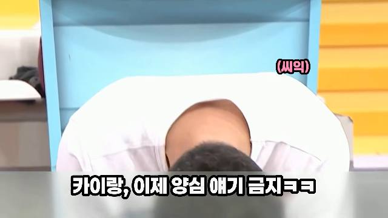
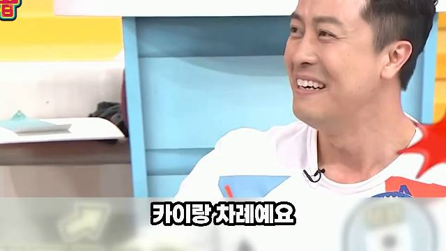
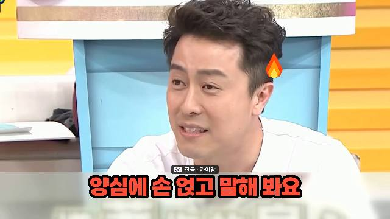
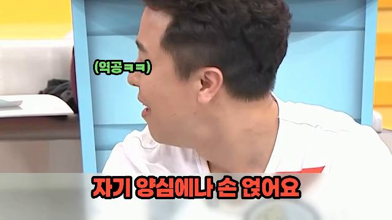
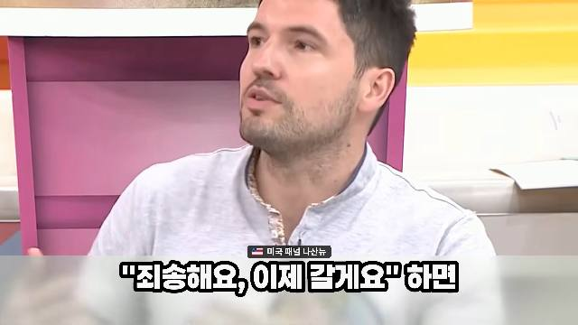
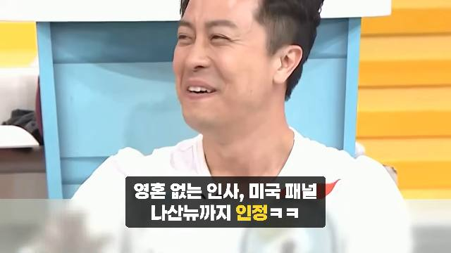
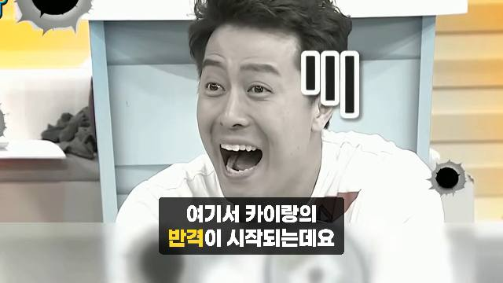
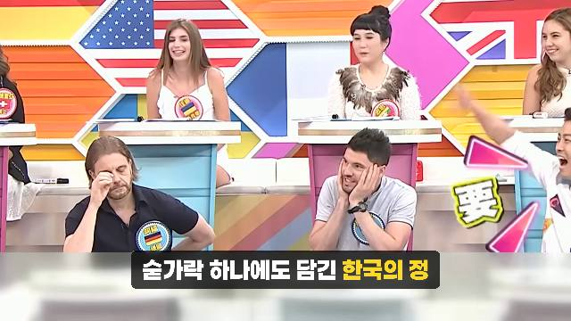
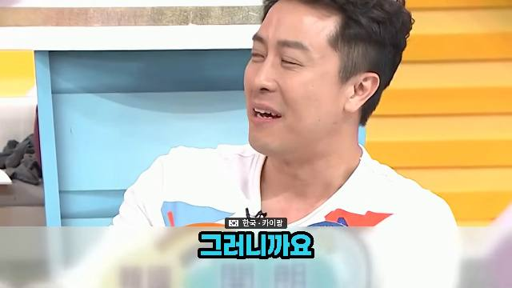
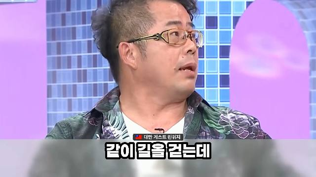
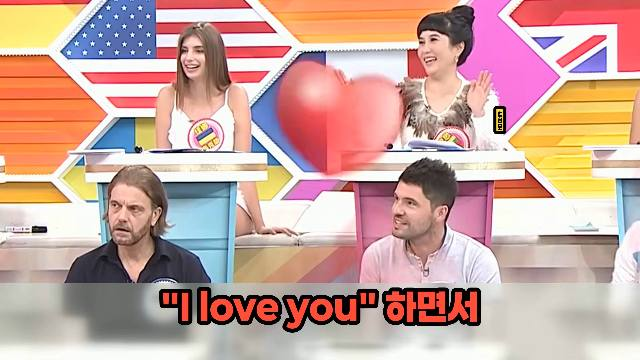
화면 자막 판독 대본 (178줄, AI 판독)
0:00 | 대만 게스트 | 한국인은 사과를 안 해요 | 빨강 강조 0:02 | 대만 게스트 | 부딪혀도 그냥 지나가요 | 흰색 0:06 | 미얀마 패널 쓰쓰 | 숟가락이 침 범벅이에요 | 빨강 강조 0:08 | 대만 게스트 린귀지 | 자연스럽게 제 손을 잡더라고요 | 흰색 0:10 | 한국 · 카이랑 | 양심에 손 얹어 봐요 | 빨강 강조 0:12 | | [자막 없음] | 0:14 | | 양심 없는 건 카이랑이죠 | 흰색 0:16 | | 카이랑, 이제 양심 얘기 금지ㅋㅋ | 흰색 0:20 | (해설 카드) | 한국인 사과 안 한다는 대만 게스트, 한마디로 / 입 다물게 한 한국 패널 카이랑 참교육 | 흰색 + '카이랑' 노랑, 검은 박스 카드 0:24 | | [자막 없음 - 진청색 그래픽 화면] | 0:26 | (해설 카드) | 대만의 고맙다·미안하다 / 인사가 너무 많다는 카이랑 | '고맙다·미안하다' 노랑, 검은 박스 0:30 | | 아니에요 | 흰색 0:32 | | 동료 괴롭히기ㅋㅋ | 흰색 0:34 | | 나빴다~ | 흰색 0:36 | 대만 진행자 | 자, 다들 집중! 알았죠? | 흰색 0:38 | | 카이랑 차례예요 | 흰색 0:42 | | 미녀만 쳐다보지 말고요ㅋㅋ | 흰색 0:44 | 한국 · 카이랑 | "고마워요" "미안해요"가 너무 많아요 | 하늘색(시안) 0:48 | 한국 · 카이랑 | "죄송해요"도 있고요 | 시안 0:50 | 한국 · 카이랑 | 다들 그 말을 입에 달고 살아요 | 시안 0:52 | 한국 · 카이랑 | 작은 일이든 큰일이든 "고마워요" | 시안 0:56 | 대만 진행자 | 예의 바르잖아요 | 흰색 0:58 | 한국 · 카이랑 | 길에서 살짝 부딪히기만 해도 | 시안 1:02 | 한국 · 카이랑 | 서로 "미안해요" "미안해요" | 시안 1:04 | | 그럼 한국인처럼 하라고요? | 시안 1:06 | 대만 게스트 | 한국인은 사과를 안 하잖아요 | 빨강 강조 1:08 | 대만 게스트 | 부딪혀도 그냥 지나가고 | 흰색 1:10 | | 아니거든요 | 시안 1:12 | (해설 카드) | 여기서 카이랑의 / 한마디가 나오는데요 | '한마디' 노랑, 검은 박스 1:14 | 한국 · 카이랑 | 어떤 건 굳이 말로 안 해도 돼요 | 시안 1:18 | 한국 · 카이랑 | 다들 알아서 받아들여요 | 시안 1:20 | 한국 · 카이랑 | 양심에 손 얹어 봐요 | 빨강 강조 1:22 | 한국 · 카이랑 | 하루에 고맙다, 미안하다 몇 번 해요? | 시안 1:24 | | 영국 어떤 조사에서 | 흰색/시안 구분 불명확 1:26 | 한국 · 카이랑 | 세상에서 제일 못 믿을 조사긴 한데ㅋㅋ | 시안 1:28 | 한국 · 카이랑 | 대만 사람은 하루에 100번 넘게 | 시안 1:30 | 한국 · 카이랑 | 고맙다, 미안하다 한대요 | 시안 1:32 | | 그렇게까지 많아요? | 흰색 1:34 | (해설 카드) | 하지만 대만 쪽도 / 물러서지 않는데요 | '물러서지 않는데요' 노랑, 검은 박스 1:36 | | 아니, 문제는요 | 시안 1:38 | 한국 · 카이랑 | 양심에 손 얹고 말해 봐요 | 빨강 강조 1:40 | 대만 게스트 린귀지 | 있죠, 진심이에요 | 흰색 1:42 | 대만 게스트 | 편의점 가면 진심으로 고맙다고 해요 | 흰색 1:44 | 대만 진행자 | 점원들 고생하잖아요 | 흰색 1:46 | 대만 진행자 | 당연하죠, 부딪히면 "미안해요, 아파요?" | 흰색 1:50 | | 양심 없는 건 카이랑이죠 | 흰색 1:52 | | 자기 양심에나 손 얹어요 | 빨강 강조 1:54 | | 카이랑, 이제 양심 얘기 금지ㅋㅋ | 흰색 1:58 | | 뭔가 꿍꿍이가 있는 것 같은데 | 흰색 2:02 | (해설 카드) | 그런데 미국 패널 나산뉴가 / 카이랑 편을 든 이유가 있었다는데요 | '카이랑 편' 노랑, 검은 박스 2:06 | | 어떤 거요? | 흰색 2:08 | 미국 패널 나산뉴 | 그런 것도 있고요 | 흰색 2:10 | 미국 패널 나산뉴 | 신기한 말이 하나 있었어요 | 흰색 2:12 | 미국 패널 나산뉴 | 뭐냐면요 | 흰색 2:14 | 미국 패널 나산뉴 | 처음엔 그... 아니, 그 얘긴 빼고 | 흰색 2:16 | 미국 패널 나산뉴 | 중국 갔다가 대만에 왔는데 | 흰색 2:18 | 미국 패널 나산뉴 | 늦게까지 친구랑 수다 떨거나 | 흰색 2:20 | 미국 패널 나산뉴 | 야식 먹으러 작은 가게에 가잖아요 | 흰색 2:22 | 미국 패널 나산뉴 | 먹다 보면 사장님이 문 닫을 시간이고 | 흰색 2:26 | 미국 패널 나산뉴 | "죄송해요, 이제 갈게요" 하면 | 흰색 2:28 | 미국 패널 나산뉴 | 사장님 기다린다고 "가자, 일어나" | 흰색 2:30 | 미국 패널 나산뉴 | 사장님이 "천천히 가세요~" | 빨강 강조 2:32 | 미국 패널 나산뉴 | "진짜요? 더 있으라고요?" | 흰색 2:34 | | 너 진짜 너무한다ㅋㅋ | 흰색 2:36 | | 트집 잡는 거 봐ㅋㅋ | 빨강 강조 2:38 | | [자막 없음] | 2:40 | (해설 카드) | 영혼 없는 인사, 미국 패널 / 나산뉴까지 인정ㅋㅋ | '인정' 노랑, 검은 박스 2:42 | | [자막 없음 - 진청색 그래픽 화면] | 2:44 | (해설 카드) | 한국 친구의 숟가락 나눠 먹기가 / 충격이었다는 미얀마 패널 쓰쓰 | '숟가락 나눠 먹기' 노랑, 검은 박스 2:48 | 대만 진행자 | 첫 번째는 뭘까요? | 흰색 2:50 | 대만 진행자 | 한국인의 침 나눠 먹기 | 빨강 강조 2:54 | 한국 · 카이랑 | 네? 그게 뭔데요? | 시안 2:56 | | 예전에 한국 친구랑 빙수 가게에 갔는데 | 흰색 2:58 | 미얀마 패널 쓰쓰 | 저는 또우화를 시켰고 | 흰색 3:00 | 미얀마 패널 쓰쓰 | 한국 친구는 눈꽃빙수를 시켰어요 | 흰색 3:02 | 미얀마 패널 쓰쓰 | 먹으면서 수다를 떨다가 | 흰색 3:04 | 미얀마 패널 쓰쓰 | 한국 친구가 그러는 거예요 | 흰색 3:06 | 미얀마 패널 쓰쓰 | "이 더운 날 왜 또우화를 먹어?" | 흰색 3:08 | 미얀마 패널 쓰쓰 | "내 빙수 한 입 먹어 볼래?" | 흰색 3:10 | 미얀마 패널 쓰쓰 | 그러면서 먹여 주려고 하는데 | 흰색 3:12 | 미얀마 패널 쓰쓰 | 그 숟가락을 통째로 입에 넣었던 거라 | 흰색 3:16 | 미얀마 패널 쓰쓰 | 숟가락을 생각해 보니까 | 흰색 3:18 | 미얀마 패널 쓰쓰 | 그래서 든 생각이... | 흰색 3:20 | | 역겨워 | 빨강 강조 3:22 | 대만 진행자 | 다 같이 휘젓잖아요 | 흰색 3:26 | | 방금 "고마워요" | 흰색 3:28 | | 카이랑도 고맙다고 하잖아요ㅋㅋ | 빨강 강조 3:30 | | 그런 말 필요도 없다니까요 | 시안 3:32 | (해설 카드) | 여기서 카이랑의 / 반격이 시작되는데요 | '반격' 노랑, 검은 박스 3:34 | | [자막 없음] | 3:36 | 한국 · 카이랑 | 연인끼리도 많이 그러잖아요 | 시안 3:38 | 한국 · 카이랑 | 서로 먹여 주고 | 시안 3:40 | 한국 · 카이랑 | 그런 장면, 로맨틱하지 않아요? | 시안 3:42 | 한국 · 카이랑 | 사랑하는 사이라서 그런 거라면 | 시안 3:44 | 한국 · 카이랑 | 친구 사이도 마찬가지예요 | 시안 3:46 | 한국 · 카이랑 | 친구끼리의 정이고 사랑이에요 | 빨강 강조 3:48 | 한국 · 카이랑 | 이게 뭐 어때서요 | 시안 3:50 | 우크라이나 패널 자나 | 같은 컵을 같이 써요 | 흰색 3:52 | 우크라이나 패널 자나 | 친구 사이면 | 흰색 3:54 | 우크라이나 패널 자나 | "안 마실래" 하면 안 돼요 | 빨강 강조 3:56 | 우크라이나 패널 자나 | 그럼 물어볼 거예요 | 흰색 3:58 | | [자막 없음] | 4:00 | | 자나가 마신 거, 마시고 싶은 사람? | 흰색 4:02 | (해설 카드) | 숟가락 하나에도 담긴 한국의 정 | '한국의 정' 노랑, 검은 박스 4:04 | | [자막 없음] | 4:06 | (해설 카드) | 한국인은 정이 너무 넘친다는 / 대만 게스트 린궈지 | '정이 너무 넘친다' 노랑, 검은 박스 4:10 | 대만 진행자 | 정이 너무 넘치면 | 흰색 4:12 | 대만 진행자 | 여러분 나라에선 정 넘치는 일인데 | 흰색 4:16 | 대만 진행자 | 남들은 적응 못 하는 거 있어요? | 흰색 4:18 | | 한국인은 정이 너무 넘쳐요 | 빨강 강조 4:20 | 한국 · 카이랑 | 친구가 되고 나면 | 시안 4:22 | 한국 · 카이랑 | 옆 사람을 엄청 잘 챙겨요 | 빨강 강조 4:26 | 한국 · 카이랑 | 그러니까요 | 시안 4:28 | 한국 · 카이랑 | 술을 엄청 좋아해요, 마시는 건 좋은데 | 시안 4:30 | 한국 · 카이랑 | 옆 사람 술잔이 비면 | 시안 4:32 | 한국 · 카이랑 | 바로 가득 채워 줘요 | 시안 4:34 | 한국 · 카이랑 | 대만은 자기가 따르잖아요 | 시안 4:36 | 한국 · 카이랑 | 한국은 옆 사람이 따라요 | 시안 4:38 | 한국 · 카이랑 | "다 마셨네? 얼른 따라 줄게" | 시안 4:40 | 한국 · 카이랑 | 사실 본인은 좀 쉬고 싶거나 | 시안 4:42 | 한국 · 카이랑 | 많이 마셔서 그만 마시고 싶어도 | 시안 4:44 | 한국 · 카이랑 | "괜찮아, 일단 따라 놓을게" | 시안 4:46 | 한국 · 카이랑 | 안 마셔도 된다면서 건배는 해야 돼요 | 시안 4:48 | 한국 · 카이랑 | 좀 과하게 챙겨 주는 거죠 | 빨강 강조 4:50 | (해설 카드) | 그런데 대만 게스트 린궈지가 겪은 / 진짜 사건이 따로 있었다는데요 | '진짜 사건' 노랑, 검은 박스 4:54 | | 카이랑, 하나 물어봐도 돼요? | 흰색 4:56 | | 제가 진짜 겪은 건데 | 흰색 4:58 | 대만 게스트 린귀지 | 한국인 동기를 만났어요, 남자요 | 흰색 5:00 | 대만 게스트 린귀지 | 같이 길을 걷는데 | 흰색 5:04 | 대만 게스트 린귀지 | 자연스럽게 제 손을 잡더라고요 | 빨강 강조 5:06 | 대만 게스트 린귀지 | 손잡고 걸으려고요 | 흰색 5:08 | 대만 게스트 린귀지 | 남자가 남자 손을 잡는 게 | 흰색 5:10 | 대만 게스트 린귀지 | 한국에선 | 흰색 5:12 | 대만 게스트 린귀지 | 정이 넘치는 거예요, 뭐예요? | 흰색 5:14 | | 잡을 때 혹시 | 시안 5:16 | | 아뇨, 이렇게요 | 흰색 5:18 | 대만 게스트 | 그 친구가 좋아한 거 아니에요? | 흰색 5:20 | 대만 게스트 린귀지 | 아뇨, 여자 친구도 있었어요 | 흰색 5:22 | | 근데 자연스럽게 손을 잡아요 | 흰색 5:24 | | "I love you" 하면서 | 빨강 강조 5:26 | | 그러다 반지 없어진 거 아니에요? | 흰색 5:28 | 대만 게스트 린귀지 | 다행히 그땐 반지 많이 안 꼈어요 | 흰색 5:30 | | 한국인 좋은 얘기도 좀 해 줄래요? | 흰색 5:32 | 한국 · 카이랑 | 괜찮아요, 그건 괜찮아요 | 시안 5:36 | (해설 카드) | 손잡는 것까지 정으로 / 넘긴 카이랑ㅋㅋ | '정' 노랑, 검은 박스 5:38 | | [자막 없음 - 진청색 그래픽 화면] | 5:40 | (해설 카드) | 한국 길 표지판이 / 과하다는 카이랑의 셀프 디스 | '길 표지판이' 노랑, 검은 박스 5:44 | 한국 · 카이랑 | 그리고 한국은 길 표지판이 좀 과해요 | 시안 5:46 | 한국 · 카이랑 | 예를 들면 이런 거요 | 시안 5:48 | | 화장실, 하나면 되잖아요 | 시안 5:50 | | 10미터 있고, 1미터 앞에 | 시안 5:52 | 한국 · 카이랑 | 조금만 더 가면 또 있어요 | 시안 5:56 | 한국 · 카이랑 | 한국인은 화장실이 급해요? | 흰색 5:58 | 한국 · 카이랑 | 사람 많으면 안 보일까 봐 그런가 | 시안 6:02 | | 거기가 작아서 그래요ㅋㅋ | 빨강 강조 6:04 | 미국 패널 나산뉴 | 방광이요! 저도 그렇게 생각해요 | 흰색 6:06 | | 나산뉴ㅋㅋ | 흰색 6:10 | | 또 하나는 표지판인데 | 시안 6:12 | 한국 · 카이랑 | 이것도 좀 과해요 | 시안 6:14 | (해설 카드) | 그런데 이 표지판에 숨은 / 진짜 이유가 있었다는데요 | '진짜 이유' 노랑, 검은 박스 6:18 | | 고속도로 표지판도 좀 과해요 | 시안 6:20 | 한국 · 카이랑 | 아시아 하이웨이라고 있는데 | 시안 6:22 | 한국 · 카이랑 | 일본에서 출발해서 이렇게 엄청 많아요 | 시안 6:28 | 한국 · 카이랑 | 남북한이 통일되고 나면 | 빨강 강조 6:30 | 한국 · 카이랑 | 일본에서 터키까지 차로 갈 수 있다는 뜻이에요 | 시안 6:34 | | 네? 그런 길이 있어요? | 흰색 6:36 | 한국 · 카이랑 | 아직 없어요, 아직 안 지었어요 | 시안 6:40 | | 근데 왜 벌써 표지판을 세워요? | 흰색 6:42 | 한국 · 카이랑 | 언젠가는 이렇게 될 거다 | 시안 6:44 | 한국 · 카이랑 | 그런 방향이라는 뜻이죠 | 시안 6:46 | | 지금은 필요 없잖아요 | 흰색 6:48 | 대만 진행자 | 그럼 타이베이에 "이쪽은 가오슝" 써도 되겠네 | 흰색 6:50 | | 그래도 되겠네요 | 흰색 6:52 | 한국 · 카이랑 | 필요 없는 표지판이 좀 많긴 해요 | 빨강 강조 6:54 | (해설 카드) | 한국인 사과 안 / 한다던 대만 게스트 | 검은 박스 6:56 | (해설 카드) | 결국 카이랑 / 한마디에 입 다물었네요 | '카이랑' 노랑, 검은 박스 (엔딩 요약) 7:00 | (엔딩 카드) | 다음에도 속 시원한 / 이야기로 돌아올게요 | 흰색, 검은 박스 7:02 | (엔딩 카드) | 시청해주셔서 감사합니다 | 흰색, 검은 박스

6. (대만반응) 한국 남자 깎아내리는 패널 앞에서 한 방에 판 뒤집는 카이랑 참교육
| 구간 | 역할 | 내용 |
|---|---|---|
| 0:00–0:14 | 훅 | 수정의 한국 남자 직격 발언 하이라이트(빨강/시안 자막) + 카이랑 침묵 반응 |
| 0:15–0:43 | 배경 | 챕터 카드 후 카이랑이 대만 관광객 민폐 행동(예약 노쇼 등) 지적 시작, 진행자 반응 |
| 0:40–1:18 | 본론 | 큰 소리로 떠들기, 비행기 치킨, 신발 벗기 지적 |
| 1:20–2:20 | 반전 | 진행자가 대구 지하철에서 신발 벗은 한국인 사진을 꺼냄, 카이랑 "저희 아빠예요" 말문 막힘 |
| 2:22–4:02 | 본론 | 수정의 한국/일본 남자 비판과 카이랑 반박, 잘생김 판정패 |
| 4:06–5:36 | 본론 | 카이랑의 일본 인종차별 경험(와사비 초밥 사건), 미국 패널의 일본 가면 이야기, 일본인 3조건 |
| 5:40–7:12 | 본론 | 태극기/애국 에피소드, 진행자가 폭로한 떡 공수 이야기 |
| 7:14–8:06 | 결론 | 떡 위해 새벽 첫 비행기 탄 이야기에 감동, 송중기/박보검 칭찬, 엔딩 카드 |
편집 기법 (화면에서 확인)
- 원본 대만 방송 컷에 한국어 자막만 입힌 구성
- 색 코딩: 한국 패널=시안, 강조=빨강, 기타=흰색
- 국기 라벨로 발언자 표기
- 검은 박스 해설 카드로 다음 상황 예고(궁금증 유발)
- 진청색 챕터 카드로 섹션 전환
- 스티커/이모지(화살표, 불꽃, 낙서) 덧붙임, 흑백+총알구멍 효과 1회
- 진행자가 들고 있는 실제 사진은 전체화면 스틸로 확대 삽입(1:52대)
- 자막 한 줄이 짧게(2~4초) 이어지는 빠른 템포
등장 인물(라벨 기준): 한국 · 수정, 한국 · 카이랑, 대만 진행자, 대만 게스트, 미국 패널(라벨 기준). 그 외 다국적 패널석 인물이 화면에 보임(라벨은 일부만 표시)
화면 자막 판독 대본 (171줄, AI 판독)
0:00 | 한국 · 수정 | 한국 남자는 여자를 성적 대상으로만 봐요 | 시안 0:04 | | 여자는 보호해야 한다면서? | 흰색 0:06 | 한국 · 수정 | 자기 얼굴부터 보고 평가하라고요 | 빨강 강조 0:10 | | 머리 크고 목 짧은 게 $%&* | 빨강 강조 (글자 그대로 $%&*) 0:12 | | 수정 씨 화났네 | 흰색 0:14 | 한국 · 카이랑 | ...... | 시안 0:15 | (챕터 카드) | 에피소드 1 / 대만 관광객 매너가 엉망이라고? | 노랑 부제, 진청색 카드 (프레임 f_0015s에서 확인) 0:18 | (해설 카드) | 대만 관광객의 민폐 행동을 / 하나하나 꼬집는 한국 패널 카이랑 | '민폐 행동' 노랑, 검은 박스 0:22 | 한국 · 카이랑 | 하는 분을 알게 됐는데요 | 시안 0:24 | 한국 · 카이랑 | 대만 손님이 많이 와서 좋긴 | 시안 0:28 | 한국 · 카이랑 | 한데, 골치가 아프대요 | 시안 0:30 | 한국 · 카이랑 | 날짜가 다가오면 사장님이 먼저 | 시안 0:32 | | [자막 없음] | 0:34 | 한국 · 카이랑 | 확인 안 하면 그냥 안 나타나거든요 | 빨강 강조 0:38 | 대만 진행자 | 안 오면 그만이죠 | 흰색 0:40 | 한국 · 카이랑 | 또 하나는 좁은 데서 큰 소리로 떠드는 거예요 | 시안 0:42 | 한국 · 카이랑 | 대만 사람들, 왜 해외만 나가면 | 빨강 강조 0:46 | 한국 · 카이랑 | 목소리가 두 배가 돼요? | 빨강 강조 0:48 | 한국 · 카이랑 | 공항에 내리자마자 '와~' 하면서 엄청 떠들어요 | 시안 0:54 | 한국 · 카이랑 | 중국 사람인 줄 알았는데 | 빨강 강조 0:56 | 한국 · 카이랑 | 더 심한 건 비행기 안에 | 시안 1:00 | 한국 · 카이랑 | 치킨을 들고 타는 거예요 | 시안 1:04 | 한국 · 카이랑 | 대만 가족이 한 사람에 한 | 빨강 강조 1:08 | 한국 · 카이랑 | 마리씩, 한 상자를 먹더라고요 | 빨강 강조 1:10 | | [자막 없음] | 1:12 | 한국 · 카이랑 | 그리고 대만 아저씨들, 여자분들은 괜찮은데 | 시안 1:16 | 한국 · 카이랑 | 비행기 타자마자 신발을 벗어요 | 빨강 강조 1:18 | 대만 게스트 | 아이고, 그건 안 되지 | 흰색 1:20 | (해설 카드) | 그런데 이 말을 듣던 진행자, / 사진 한 장을 꺼내 드는데요 | '사진 한 장' 노랑, 검은 박스 1:22 | 대만 진행자 | 혹시 이런 장면 말하는 거예요? | 흰색 1:26 | 대만 진행자 | 지하철에서 신발 벗는 거 | 흰색 1:28 | | 와, 맞죠? 밤늦게 지하철 한산할 때 | 흰색 1:30 | | 그런데 이건 한국 사람이 | 빨강 강조 1:32 | | 대만에 놀러 왔을 때예요 | 빨강 강조 1:34 | | 잡았다, 잡았다! | 빨강 강조 1:38 | | 다 너네잖아, 그러면서 남 얘기를 해? | 흰색 1:44 | 대만 진행자 | 증거 있잖아, 발바닥 좀 봐 | 빨강 강조 1:46 | 대만 진행자 | 그리고 한국 대구 지하철에선, | 흰색 1:50 | 대만 진행자 | 자기 집인 줄 알아요 | 흰색 1:54 | | 이건 인터넷 사진이 아니라 우리 | 빨강 강조 1:56 | 대만 진행자 | 스태프가 대구에서 직접 찍은 거예요 | 빨강 강조 2:00 | | 자, 봐요 봐요 | 흰색 2:02 | | 장소는 대구! 저 사람 한국인 맞죠? | 흰색 2:04 | 한국 · 카이랑 | 네, 네 | 시안 2:06 | | 확실히 한국 사람이죠? | 흰색 2:08 | | 저희 아빠예요, 아빠 | 빨강 강조 2:10 | | 민망하겠다 | 흰색 2:12 | 대만 진행자 | 이런 무례한 행동은 어느 나라에나 있죠? | 흰색 2:16 | 한국 · 카이랑 | 못 들었어요, 뭐라고요? 다시 한 번 | 빨강 강조 2:18 | (해설 카드) | 대만 매너 꼬집다가 사진 한 장에 / 말문 막힌 카이랑ㅋㅋ | '사진 한 장' 노랑, 검은 박스 2:20 | | [자막 없음] | 2:22 | (해설 카드) | 각국 남자 순위에서 한국 남자를 꼴찌로 / 꼽은 같은 한국 패널 수정 | '한국 남자를 꼴찌로' 노랑, 검은 박스 2:28 | | 미국도 2등이네 | 흰색 2:30 | 한국 · 수정 | 그리고 한국이랑 일본은 똑같이 별로예요 | 빨강 강조 2:32 | 한국 · 수정 | 특히 일본, 한국한테는 완승이에요 | 빨강 강조 2:34 | 한국 · 카이랑 | 수정 씨, 진짜 박수 쳐 주고 싶은데 | 시안 2:36 | 한국 · 카이랑 | 방금 팔굽혀펴기 20개 | 빨강 강조 2:38 | 한국 · 수정 | 아직 한국이랑 일본이 남았잖아요 | 시안 2:42 | 한국 · 수정 | 한국이랑 일본이 제일 싫은 이유는, | 빨강 강조 2:44 | 한국 · 수정 | 성에 대한 생각이 좀 이상해서예요 | 빨강 강조 2:48 | 한국 · 수정 | 한국 남자, 일본 남자는 여자를 | 빨강 강조 2:50 | 한국 · 수정 | 늘 성적 대상으로만 봐요 | 빨강 강조 2:54 | 한국 · 수정 | 여자는 보호해야 한다? 왜 보호해야 돼요? | 시안 2:58 | 대만 진행자 | 카이랑 씨, 날 보지 마요 | 흰색 3:00 | 한국 · 카이랑 | 저 위를 보고 있는데요··· | 시안 3:02 | 한국 · 수정 | 한국, 일본 남자들은 거울도 안 | 시안 3:06 | 한국 · 수정 | 보면서 여자 외모를 평가해요 | 시안 3:08 | 한국 · 수정 | 자기 외모는 그 정도도 아니면서, | 빨강 강조 3:12 | | 이 여자 예쁘네 어쩌네 | 흰색 3:16 | 한국 · 수정 | 자기 얼굴부터 보라고요 | 빨강 강조 3:18 | | 머리는 크고 목은 짧으면서, | 빨강 강조 3:20 | 한국 · 수정 | 다른 여자가 어떻다느니 | 시안 3:24 | | 수정 씨 화났네 | 흰색 3:28 | 한국 · 수정 | 그래서 제일 최악은 한국이랑 | 빨강 강조 3:30 | 한국 · 수정 | 일본, 둘 다 똑같아요 | 빨강 강조 3:32 | (해설 카드) | 가만히 듣던 카이랑, / 드디어 반박에 나서는데요 | '반박' 노랑, 검은 박스 3:36 | 대만 진행자 | 없어요? 아직 숨차요? | 흰색 3:40 | 한국 · 수정 | 봐요, 제일 약해 | 빨강 강조 3:42 | 한국 · 카이랑 | 솔직히 남자가 여자 점수 매기는 | 시안 3:46 | 한국 · 카이랑 | 버릇은, 전 세계 남자가 다 있어요 | 시안 3:50 | 한국 · 카이랑 | 저흰 표현을 자주 할 뿐이죠, | 빨강 강조 3:52 | 한국 · 카이랑 | 미국이 더 무서워요 | 빨강 강조 3:54 | 대만 진행자 | 저 사람은 잘생겼고, 당신은 아니잖아요 | 빨강 강조 3:56 | | 상처받았다··· | 흰색 4:00 | 한국 · 수정 | 그러니까 거울 좀 보라고요 | 시안 4:02 | (해설 카드) | 반박하다가 잘생김 판정패까지 / 당한 카이랑ㅋㅋ | '잘생김 판정패' 노랑, 검은 박스 4:04 | | [자막 없음 - 진청색 그래픽 화면] | 4:06 | (해설 카드) | 이번엔 일본 환상을 / 깨러 나서는 카이랑 | '일본 환상' 노랑, 검은 박스 4:08 | 대만 진행자 | 카이랑, 해 봐요 | 흰색 4:10 | 한국 · 카이랑 | 일본은 친절하고, 음식 맛있고, | 시안 4:12 | 한국 · 카이랑 | 경치도 정말 예뻐요, 그런데 | 시안 4:14 | 한국 · 카이랑 | 인종차별이 있어요 | 빨강 강조 4:16 | 한국 · 카이랑 | 일본 가 보신 분들, 느껴 보셨어요? | 시안 4:18 | 한국 · 카이랑 | 일본어 못하고 영어로만 여행하면 문제가 커요 | 시안 4:22 | 한국 · 카이랑 | 한동안 크게 보도된 뉴스가 있는데요 | 시안 4:26 | 한국 · 카이랑 | 한국 관광객이 맛있다는 초밥집에 갔대요 | 시안 4:30 | 한국 · 카이랑 | 주문해서 한 입 먹었는데 맛이 이상한 거예요 | 시안 4:34 | 한국 · 카이랑 | 요리사가 일부러 와사비를 | 빨강 강조 4:38 | 한국 · 카이랑 | 잔뜩 넣은 거예요 | 빨강 강조 4:40 | 한국 · 카이랑 | 너무 매워서 먹자마자 뱉었대요 | 시안 4:44 | 한국 · 카이랑 | '이거 먹으라고 준 거냐'고 영어로 물었더니 | 시안 4:48 | 한국 · 카이랑 | 대답도 안 하고 비웃기만 했대요 | 빨강 강조 4:50 | 한국 · 카이랑 | 그래서 뉴스까지 났죠, 일본 | 시안 4:54 | 한국 · 카이랑 | 가면 일본어 못해도 괜찮아요 | 시안 4:56 | 한국 · 카이랑 | 대신 출국 전에 두 마디만 준비하세요 | 시안 4:58 | 한국 · 카이랑 | 첫째, 와사비 많이 넣지 마세요 | 빨강 강조 5:00 | | 둘째, 저도 인권 있어요 | 빨강 강조 5:02 | | 이 두 마디는 꼭 배워야겠네 | 흰색 5:04 | (해설 카드) | 그러자 미국 패널도 일본에 / 사는 친구 이야기를 꺼내는데 | '미국 패널' 노랑, 검은 박스 5:08 | | 그런데 일본에서 8년 산 | 흰색 5:10 | 미국 패널 | 친구가 돌아와서 그러더라고요 | 흰색 5:12 | 미국 패널 | 일본의 예의, 친절, 다 가면이래요 | 빨강 강조 5:18 | 미국 패널 | 일본 사람들이 대놓고 '넌 | 흰색 5:20 | 미국 패널 | 일본인이 될 수 없어' 한대요 | 흰색 5:24 | 미국 패널 | 세 가지 조건이 다 있어야 일본인이래요 | 흰색 5:28 | 미국 패널 | 일본 혈통, 유창한 일본어, 일본 출생 | 빨강 강조 5:34 | | [자막 없음] | 5:36 | (해설 카드) | 당하기만 하던 카이랑, / 일본 앞에선 할 말 다 했네요 | '일본 앞에선' 노랑, 검은 박스 5:38 | | [자막 없음 - 진청색 그래픽 화면] | 5:40 | (해설 카드) | 대만에 올 때 딱 두 가지만 / 챙겨 왔다는 카이랑 | '딱 두 가지' 노랑, 검은 박스 5:42 | 한국 · 카이랑 | 대만 올 때 딱 두 가지만 챙겨 왔어요, 하나는 한국 여권 | 시안 5:46 | 한국 · 카이랑 | 그리고 태극기요 | 빨강 강조 5:48 | 한국 · 카이랑 | 그걸 거실에 걸어 뒀어요 | 시안 5:52 | 대만 진행자 | 그럼 지금도 거실에 태극기가 있어요? | 흰색 5:54 | 한국 · 카이랑 | 지금은 색이 좀 바래서 정리했어요 | 시안 5:58 | 대만 진행자 | 어떻게 정리했어요? | 흰색 6:02 | 한국 · 카이랑 | 함부로 버리면 안 되죠 | 시안 6:04 | 한국 · 카이랑 | 걸어 두고, 매일 집 나설 | 빨강 강조 6:08 | 한국 · 카이랑 | 때마다 그 국기를 봤어요 | 빨강 강조 6:10 | 대만 진행자 | 설마 국가도 불러요? | 흰색 6:14 | 한국 · 카이랑 | 집 밖에 나가면 저는 외국인이잖아요, | 빨강 강조 6:16 | 한국 · 카이랑 | 민간 외교관인 거죠 | 빨강 강조 6:18 | 한국 · 카이랑 | 뭘 먹고 나서도 쓰레기를 함부로 못 버려요, | 시안 6:22 | 한국 · 카이랑 | 외국인이 버리면 더 보기 안 좋잖아요 | 시안 6:26 | | [자막 없음] | 6:28 | 한국 · 카이랑 | 사람인지 못 알아보더라고요 | 시안 6:30 | 한국 · 카이랑 | 전형적인 한국 얼굴은 아니라서요 | 시안 6:34 | | [자막 없음] | 6:38 | 한국 · 카이랑 | 그래도 늘 조심했어요, 나는 한국 | 빨강 강조 6:40 | 한국 · 카이랑 | 대표니까, 그게 제 애국이에요 | 빨강 강조 6:44 | (해설 카드) | 그런데 진행자가 카이랑의 / 진짜 애국을 폭로하는데요 | '진짜 애국' 노랑, 검은 박스 6:48 | 대만 진행자 | 카이랑은 정말 한국의 모든 걸 열심히 알려요 | 흰색 6:52 | 대만 진행자 | 녹화 없는 날에도 우리 | 흰색 6:54 | 대만 진행자 | 무리한 부탁을 다 들어줘요 | 흰색 6:56 | 대만 진행자 | 지난번엔 떡을 공수해 달라고 했어요 | 빨강 강조 7:00 | 한국 · 카이랑 | 아, 그거요, 진짜 무리한 | 시안 7:02 | 한국 · 카이랑 | 부탁이었죠, 문제없었어요 | 시안 7:04 | 대만 진행자 | 대만에선 그 한국 음식을 못 구하는데, | 흰색 7:06 | 대만 진행자 | 녹화 날 아침에 필요했거든요 | 흰색 7:10 | 대만 진행자 | 그랬더니 아침 몇 시에 왔냐면 | 흰색 7:12 | 한국 · 카이랑 | 새벽 4시에 일어났어요 | 빨강 강조 7:14 | | [자막 없음] | 7:16 | 대만 진행자 | 건네줬어요, 떡 하나 때문에 | 빨강 강조 7:20 | 한국 · 카이랑 | 어젯밤에 급한 연락이 왔어요, | 시안 7:24 | 한국 · 카이랑 | 아주 중요한 한국 음식이 필요하다고 | 시안 7:28 | 한국 · 카이랑 | 그래서 밤에 사러 갔죠 | 시안 7:32 | 한국 · 카이랑 | 그리고 오늘 아침 첫 비행기로 여기 왔어요 | 빨강 강조 7:38 | | 이거 나한테 공수해 온 거야? | 흰색 7:40 | | 무슨 007 작전이야? | 흰색 7:42 | | 감동이다 | 흰색 7:44 | | 사실 늦은 비행기 타도 됐는데, | 흰색 7:46 | 대만 진행자 | 떡 때문에 첫 비행기를 탔대요 | 흰색 7:48 | | 그러니 이렇게 잘생겼지 | 빨강 강조 7:50 | | 마음씨가 착하잖아요 | 흰색 7:52 | | 다음에 더 일찍 오면 송중기 되겠다 | 빨강 강조 7:56 | | 사랑이 많을수록 잘생겨져요, 박보검 닮았어 | 흰색 8:00 | (해설 카드) | 수난을 겪어도 한국 사랑만큼은 / 못 말리는 카이랑 | '한국 사랑' 노랑, 검은 박스 8:04 | (엔딩 카드) | 다음에도 속 시원한 / 이야기로 돌아올게요 | 흰색, 검은 박스 0:31 | | 전화해서 '진짜 오세요?' 물어봐요 | 시안 (프레임 f_0031s에서 추가 확인) 2:27 | | 대만 남자가 1등이에요 | 시안 (프레임 f_0147s에서 추가 확인) 2:53 | | 같은 인간이 아니라고 | 시안 (프레임 f_0173s에서 추가 확인)

7. (대만 반응) "한국 용접공 연봉 클래스" 낮에만 일하고 연봉 1억?! 입이 쩍 벌어진 외국 패널들
| 구간 | 역할 | 내용 |
|---|---|---|
| 0:00–0:19 | 훅 | 한국 조선소 용접사 고연봉(연봉 7천만~1억 원) 발언 하이라이트 |
| 0:20–0:57 | 배경 | 해설로 상황 소개, 사회자가 한국 반도체 학원 열풍/의대 인기 하락 뉴스 언급 |
| 0:58–1:56 | 본론 | 한국 패널이 예전 3대 직업(검사·의사·변호사)과 반도체 학원가로의 변화 설명 |
| 2:00–3:18 | 본론 | 조선업/용접 고연봉 직업 설명(연봉 환산 200만~280만 대만달러), 앞서 나온 장면 반복 사용 |
| 3:20–4:20 | 본론 | 서울 호텔 비밀 통로/전용 엘리베이터 서비스 소개 |
| 4:22–5:55 | 본론 | 체험 수업 추천: 막걸리 만들기, K팝 댄스, 치어리더 클래스 |
| 5:56–7:15 | 본론 | 수원 화성 활쏘기 체험, 한국 양궁 금메달 기록 |
| 7:16–7:49 | 결론 | 남아공 패널의 활쏘기 소감(오디세이), 해설 요약과 구독/좋아요 요청 |
편집 기법 (화면에서 확인)
- 원본 방송의 클로즈업 위주 컷에 한국어 번역 자막만 입힘(흰색 박스 자막 일관)
- 색/강조 효과가 없고 자막 스타일이 단조로움(다른 두 영상과 대비)
- 해설 박스 자막으로 각 섹션 소개(라벨 없음)
- 도입부 하이라이트를 2:52~3:16에서 다시 반복 사용(0:02~0:16 자막 재등장)
- 4:44, 5:22~5:26, 6:06, 6:16, 6:26~6:32 구간은 스튜디오가 아닌 삽입 영상(막걸리 빚기, K팝 댄스, 활쏘기, 드라마 장면)이 자막 스트립에서 확인됨(추정: 원본 방송 내 VT 또는 스톡)
- 7:16 이후 상하 레터박스로 엔딩 처리
등장 인물(라벨 기준): 한국 · 패널(여러 명으로 추정), 대만 · 사회자, 인도 · 패널, 남아공 · 패널 (모두 화면 라벨 기준)
화면 자막 판독 대본 (137줄, AI 판독)
0:00 | | [자막 없음] | 0:02 | 한국 · 패널 | 한국 조선소 용접사나 선박 기술자는 | 흰색, 검은 반투명 박스 0:04 | 한국 · 패널 | 전성기 때 연봉이 7천만~1억 원이었어요 | 흰색, 검은 박스 0:08 | 한국 · 패널 | 그 연봉에 휴가도 다 챙기고 | 흰색, 검은 박스 0:12 | 한국 · 패널 | 밤엔 일 안 하고 낮에만 해요 | 흰색, 검은 박스 0:14 | (해설) | 낮에만 일하고 연봉 1억 원을 받았다는 한국 조선소 용접사 | 흰색, 검은 박스(라벨 없음) 0:18 | | [자막 없음] | 0:20 | (해설) | 대만 토크쇼에서 나라별 '신의 직업'을 소개하던 중, | 흰색, 검은 박스 0:22 | (해설) | 이번에도 한국 이야기가 빠지지 않는데요 | 흰색, 검은 박스 0:24 | (해설) | 먼저 사회자가 꺼낸 건 한국의 최근 뉴스였습니다 | 흰색, 검은 박스 0:28 | 대만 · 사회자 | 한국에 반도체 학원 열풍이 불고 있대요 | 흰색, 검은 박스 0:30 | 대만 · 사회자 | 예전엔 한국도 1등들의 1지망이 의대였잖아요 | 흰색, 검은 박스 0:36 | 대만 · 사회자 | 그런데 AI 반도체가 폭발하면서 | 흰색, 검은 박스 0:38 | 대만 · 사회자 | 최상위권 학생들이 반도체학과를 괜찮게 본대요 | 흰색, 검은 박스 0:42 | 대만 · 사회자 | 의대 쪽은 순식간에 30%나 빠졌고요 | 흰색, 검은 박스 0:44 | 대만 · 사회자 | 서울 대치동 학원가에서 제일 잘나가는 건 입시가 아니라 | 흰색, 검은 박스 0:48 | 대만 · 사회자 | 반도체 학원이래요 | 흰색, 검은 박스 0:52 | 대만 · 사회자 | 문과 학생들도 학원을 다니면서 | 흰색, 검은 박스 0:54 | 대만 · 사회자 | 삼성이나 SK하이닉스에 들어가고 싶어 한대요 | 흰색, 검은 박스 0:58 | 한국 · 패널 | 한국은 예전엔 가장 유명한 3대 직업이 | 흰색, 검은 박스 1:02 | 한국 · 패널 | 검사, 의사, 그리고 변호사였어요 | 흰색, 검은 박스 1:06 | 한국 · 패널 | 검사는 공공기관이라 철밥통이고 | 흰색, 검은 박스 1:12 | 한국 · 패널 | 권력도 있는, 높은 자리죠 | 흰색, 검은 박스 1:16 | 한국 · 패널 | 변호사랑 의사는 사회적 지위가 높아서 다들 우러러봤어요 | 흰색, 검은 박스 1:20 | 한국 · 패널 | "우리 아빠 의사야" 하면 와~ 했죠 | 흰색, 검은 박스 1:22 | 한국 · 패널 | 늘 높은 자리였는데, 전부 문과 쪽이었어요 | 흰색, 검은 박스 1:28 | 한국 · 패널 | 그래서 학원가도 문과 위주라 반도체는 거의 생각 안 했죠 | 흰색, 검은 박스 1:34 | 한국 · 패널 | 그런데 사회가 바뀌어서 이제 한국은 반도체 학원가예요 | 흰색, 검은 박스 1:38 | 한국 · 패널 | 신분을 바꾸고, 한 단계 올라가서, 돈을 더 벌 수 있으니까요 | 흰색, 검은 박스 1:44 | 한국 · 패널 | 지금 전 세계에서 제일 뜨거운 게 반도체잖아요 | 흰색, 검은 박스 1:46 | 한국 · 패널 | 제가 안내하는 과기대나 반도체 전공 학생들도 | 흰색, 검은 박스 1:52 | 한국 · 패널 | 대만 학교와 학술 교류하러 정말 많이 와요 | 흰색, 검은 박스 1:56 | (해설) | 그런데 한국 패널의 이야기는 여기서 끝이 아니었는데요 | 흰색, 검은 박스 2:00 | (해설) | 이번엔 샤오처가 한국의 고소득 직업을 소개합니다 | 흰색, 검은 박스 2:02 | 한국 · 패널 | 사실 한국에 아주 유명한 중공업이 있는데 | 흰색, 검은 박스 2:06 | 한국 · 패널 | 한국 조선업은 70년대부터 | 흰색, 검은 박스 2:10 | 한국 · 패널 | 나라가 중공업의 핵심으로 키웠어요 | 흰색, 검은 박스 2:16 | 한국 · 패널 | 그러면서 특별한 직업이 생겼는데 | 흰색, 검은 박스 2:20 | 한국 · 패널 | 첫 번째가 용접, 두 번째가 선박 설계예요 | 흰색, 검은 박스 2:24 | 한국 · 패널 | 특히 용접은 좁은 공간에서 하고 | 흰색, 검은 박스 2:28 | 한국 · 패널 | 위험한 데다 물건이 떨어질 수도 있어요 | 흰색, 검은 박스 2:32 | 한국 · 패널 | 그래서 조선 기술자들은 수입이 다 높아요 | 흰색, 검은 박스 2:36 | 한국 · 패널 | 대신 관련 자격증이 있어야 해서 문턱도 높아요 | 흰색, 검은 박스 2:40 | 한국 · 패널 | 그래서 한국에선 예전부터 고소득 직업이었어요 | 흰색, 검은 박스 2:44 | 한국 · 패널 | 연봉으로 치면 전성기 때 얼마나 벌었을까요? | 흰색, 검은 박스 2:50 | 한국 · 패널 | 일반 용접은 그렇게 높지 않지만 | 흰색, 검은 박스 2:52 | 한국 · 패널 | 한국 조선소 용접사나 선박 기술자는 | 흰색, 검은 박스 (0:02 구간 반복) 2:54 | 한국 · 패널 | 전성기 때 연봉이 7천만~1억 원이었어요 | 흰색, 검은 박스 2:58 | | [자막 없음] | 3:00 | 한국 · 패널 | 지금은 환율이 낮지만 예전 기준으로 | 흰색, 검은 박스 3:02 | 한국 · 패널 | 대만 돈으로 연봉 200만~280만 대만달러예요 | 흰색, 검은 박스 3:08 | | [자막 없음] | 3:10 | 한국 · 패널 | 그 연봉에 휴가도 다 챙기고 | 흰색, 검은 박스 3:14 | 한국 · 패널 | 밤엔 일 안 하고 낮에만 해요 | 흰색, 검은 박스 3:16 | 한국 · 패널 | 한국에선 정말 정말 고연봉 직업이에요 | 흰색, 검은 박스 3:18 | | [자막 없음] | 3:20 | (해설) | 각국의 최고급 서비스 이야기가 이어지던 중, | 흰색, 검은 박스 3:22 | (해설) | 샤오처가 또 한국 이야기를 꺼내는데요 | 흰색, 검은 박스 3:24 | 한국 · 패널 | 저는 가 본 적은 없지만 | 흰색, 검은 박스 3:26 | 한국 · 패널 | 한국에도 아주 특별한 서비스를 하는 호텔이 있어요 | 흰색, 검은 박스 3:30 | 한국 · 패널 | 외국 정상들, 한국 스타들까지 | 흰색, 검은 박스 3:34 | 한국 · 패널 | 즐겨 묵는 서울의 유명 호텔이요 | 흰색, 검은 박스 3:36 | 한국 · 패널 | 그 호텔엔 특별한 통로가 있고 | 흰색, 검은 박스 3:38 | 한국 · 패널 | 사생활과 보안을 지켜 주는 서비스가 있어요 | 흰색, 검은 박스 3:42 | | [자막 없음] | 3:44 | 한국 · 패널 | 호텔 지하에 비밀 통로가 있대요 | 흰색, 검은 박스 3:46 | 한국 · 패널 | 외부인은 못 들어가서 저도 가 본 적은 없어요 | 흰색, 검은 박스 3:48 | 한국 · 패널 | 차를 탄 채 들어가서 아래에서 체크인하고 | 흰색, 검은 박스 3:52 | 대만 · 사회자 | 엘리베이터 타면 다 보이지 않아요? | 흰색, 검은 박스 3:54 | 한국 · 패널 | 아뇨, 전용 엘리베이터로 바로 객실 층까지 가요 | 흰색, 검은 박스 3:58 | 한국 · 패널 | 그래서 파파라치랑 마주칠 일이 없어요 | 흰색, 검은 박스 4:02 | 한국 · 패널 | 전용 서비스가 있어서 | 흰색, 검은 박스 4:06 | 한국 · 패널 | 담당 팀이 1대1로 특별하게 모셔요 | 흰색, 검은 박스 4:12 | 한국 · 패널 | 그래서 외국 귀빈들은 대부분 이 호텔에 묵어요 | 흰색, 검은 박스 4:16 | 한국 · 패널 | 사생활도 안전도 보장되니까요 | 흰색, 검은 박스 4:18 | 대만 · 사회자 | 서비스업이라도 최고 수준에 이르면 | 흰색, 검은 박스 4:22 | (해설) | 이번엔 나라별로 꼭 들어 볼 만한 체험 수업 이야기 | 흰색, 검은 박스 4:26 | (해설) | 한국 패널이 추천한 건 무엇이었을까요? | 흰색, 검은 박스 4:28 | 한국 · 패널 | 두 가지를 추천하고 싶어요 | 흰색, 검은 박스 4:32 | 한국 · 패널 | 한국 술 아시죠? 하얀 막걸리요 | 흰색, 검은 박스 4:38 | 한국 · 패널 | 그래서 첫 번째는 막걸리 만들기예요 | 흰색, 검은 박스 4:46 | 한국 · 패널 | 술 좋아하시죠? | 흰색, 검은 박스 (막걸리 빚는 영상 위) 4:48 | 한국 · 패널 | 막걸리는 달달하고 정말 맛있어요 | 흰색, 검은 박스 4:50 | 한국 · 패널 | 아뇨, 오늘은 없어요 | 흰색, 검은 박스 4:54 | 한국 · 패널 | 한국 쌀로 직접 막걸리를 빚는 문화가 있어요 | 흰색, 검은 박스 5:02 | 한국 · 패널 | 비 오는 날 직접 만든 막걸리를 마시면 | 흰색, 검은 박스 5:06 | 한국 · 패널 | 정말 좋겠죠 | 흰색, 검은 박스 5:10 | 한국 · 패널 | 그리고 한국엔 유명한 K팝 가수가 정말 많잖아요 | 흰색, 검은 박스 5:14 | 한국 · 패널 | BTS, 싸이, 베이비몬스터, 아이브까지요 | 흰색, 검은 박스 5:22 | 한국 · 패널 | 그래서 K팝 댄스 배우기를 추천해요 | 흰색, 검은 박스 5:26 | | [자막 없음] | 5:28 | 한국 · 패널 | 한국 야구 치어리더 원데이 클래스도 있어요 | 흰색, 검은 박스 5:36 | 한국 · 패널 | 아이들도 갈 수 있고 | 흰색, 검은 박스 5:38 | 한국 · 패널 | 어른도 학원 같은 곳에서 참여할 수 있어요 | 흰색, 검은 박스 5:42 | 한국 · 패널 | 요즘 대만에도 한국 치어리더가 많잖아요 | 흰색, 검은 박스 5:46 | 한국 · 패널 | 한번 체험해 보면 정말 좋은 경험이 될 거예요 | 흰색, 검은 박스 5:48 | | [자막 없음] | 5:50 | 대만 · 사회자 | 어떤 분은 딸이랑 한국에 춤 배우러 자주 가요 | 흰색, 검은 박스 5:54 | 대만 · 사회자 | 관심 있는 사람 정말 많을 거예요 | 흰색, 검은 박스 5:56 | (해설) | 마지막으로 샤오처가 소개한 건 한국의 활쏘기 체험이었습니다 | 흰색, 검은 박스 6:00 | 한국 · 패널 | 아주 특별한 체험이 있어요 | 흰색, 검은 박스 6:02 | 한국 · 패널 | 수원 화성이라는 곳인데요 | 흰색, 검은 박스 6:06 | 한국 · 패널 | 시민이나 관광객에게 활쏘기 체험을 해 줘요 | 흰색, 검은 박스 6:10 | 대만 · 사회자 | 한국은 활도 정말 잘 쏘잖아요 | 흰색, 검은 박스 6:12 | 한국 · 패널 | 네, 한국 양궁은 정말 정말 강해요 | 흰색, 검은 박스 6:14 | | [자막 없음] | 6:16 | 한국 · 패널 | 거기가 연무대라고, 무예를 연마하던 곳이에요 | 흰색, 검은 박스 6:20 | 한국 · 패널 | 아이돌 운동회에서도 스타들이 활 쏘는 장면이 많이 나오고 | 흰색, 검은 박스 6:28 | 한국 · 패널 | 한국 드라마에서도 자주 볼 수 있어요 | 흰색, 검은 박스 6:30 | 대만 · 사회자 | 맞아요, 좀비 쏘는 거! | 흰색, 검은 박스 6:32 | 한국 · 패널 | 특히 이렇게 활을 당기는 동작이 정말 멋있어요 | 흰색, 검은 박스 6:36 | 한국 · 패널 | 1988년 첫 단체전부터 | 흰색, 검은 박스 6:38 | | [자막 없음] | 6:40 | 한국 · 패널 | 한국 여자 양궁은 지금까지 금메달 10연속이에요 | 흰색, 검은 박스 6:44 | 한국 · 패널 | 금메달을 놓친 대회가 한 번도 없어요 | 흰색, 검은 박스 6:48 | 한국 · 패널 | 금메달 못 따면 한국 가서 욕먹어요 | 흰색, 검은 박스 6:50 | | [자막 없음] | 6:52 | 한국 · 패널 | 남자 쪽은 부담이 크죠 | 흰색, 검은 박스 6:54 | 한국 · 패널 | 남자는 10연패까진 못 했지만 | 흰색, 검은 박스 6:56 | 한국 · 패널 | 단체전 10번 중에 금메달을 7번 땄어요 | 흰색, 검은 박스 7:00 | 한국 · 패널 | 세 번만 놓쳤어요 | 흰색, 검은 박스 7:02 | 한국 · 패널 | 그래서 양궁을 배우려고 한국 코치를 모셔 가는 나라가 많아요 | 흰색, 검은 박스 7:06 | 한국 · 패널 | 많은 나라 코치가 다 한국인이에요 | 흰색, 검은 박스 7:08 | 한국 · 패널 | 그러니 한국 가면 꼭 체험해 보세요 | 흰색, 검은 박스 7:10 | 한국 · 패널 | 정말 공들인 한국의 문화, 한국의 전통이거든요 | 흰색, 검은 박스 7:14 | 한국 · 패널 | 꼭 한번 해 보세요 | 흰색, 검은 박스 7:16 | 대만 · 사회자 | Wade, 활쏘기 해 보고 싶어요? | 흰색, 검은 박스 (화면 상하 검은 레터박스 시작) 7:18 | 남아공 · 패널 | 최근에 『오디세이』를 봤는데 정말 멋진 장면이 있거든요 | 흰색, 검은 박스 7:24 | 남아공 · 패널 | 주인공만 걸 수 있는 활을 힘껏 당기는데 | 흰색, 검은 박스 7:28 | 남아공 · 패널 | 음악에 맞춰 당기는 순간이 진짜 멋있어요 | 흰색, 검은 박스 7:32 | 남아공 · 패널 | 그걸 보고 나니 피가 끓더라고요 | 흰색, 검은 박스 7:34 | 남아공 · 패널 | 한번 당겨 보고 싶어요, 진짜로 | 흰색, 검은 박스 7:36 | | [자막 없음] | 7:38 | (해설/엔딩) | 나라별 '신의 직업'을 이야기하던 중에도 꼭 등장한 한국 이야기 | 흰색, 검은 박스 7:42 | (해설/엔딩) | 반도체부터 조선, 양궁까지 | 흰색, 검은 박스 7:44 | (해설/엔딩) | 한국 패널의 자부심이 돋보인 시간이었는데요 | 흰색, 검은 박스 7:46 | (엔딩 카드) | 재미있게 보셨다면 구독과 좋아요 부탁드려요 | 흰색, 검은 박스
49편 비교표
분당 컷은 1초 간격 화면 차이로 센 근사치(1위·2~5위 일부만 측정). 대본 자/분은 자동자막 또는 화면 자막 판독 글자 수. 외국어 자동자막은 원음 언어라 비교 시 주의.
| 썸네일 | 그룹 | 채널 | 제목 | 조회 | 조회/구독 | 길이 | 분당 컷 | 대본 자/분 | 첫 30초 |
|---|---|---|---|---|---|---|---|---|---|
 | NEW1MO | 세계열광 구독 1,490 · 개설 2026-10-26 | 에르도안 방한 해외반응 “한국은 생색 한번 안 냈다” 8년 만에 온 튀르키예 대통령, 튀르키예 방송이 놀란 한국 | 43.5만 | 292배 | 11:56 | - | 403 | huzurlarınızda kendilerine ikili ilişkilerimize yaptığı katkılar için şahsım ve milletim adına teşekkürlerimi ifade etmek istiyorum. 감사합니다. |
 | NEW1MO | 우아한 경제 구독 1,750 · 개설 2026-10-10 | "5조 7천억짜리 애물단지" 모두가 비웃었던 두산의 인수합병, 15년 뒤 미국 1위가 된 진짜 이유 | 40.7만 | 233배 | 28:25 | - | 323 | 두산이 5조 7,억 원을 주고 샀던 회사가 2년 만에 2조 5,억 원을 까먹었습니다. 세간에서는이 인수를 승자의 저주라고 불렀을 정도죠. 노스다코타의 한 공장에서 줄지어 나오던 흰색과 주황색 작은 장비. 커다란 굴착기라면 몇 번씩 앞뒤로 움직여야 할 |
 | NEW1MO | 우아한 경제 구독 1,750 · 개설 2026-10-10 | "이 문자는 반칙 아닙니까?!" 전 세계 언어학자들이 한글에 고개를 숙인 진짜 이유 | 37.1만 | 212배 | 30:13 | - | 314 | 한국 문자 그거 좀 반칙 아닙니까? 세계 문자 학자들 사이에서 반쯤 농담처럼 도는 말인데요. 이게 농담에서 끝날 말이 아닙니다. 지난 1985년 세계 문자 분류표를 짜던 영국의 언어학자 제프리 샘슨이 한글을 분류하려다가 도저히 넣을 칸이 없자 아예 서 |
 | NEW1MO | 글로벌공감TV 구독 2,420 · 개설 2026-10-14 | 울산 동네 골프 레슨을 따라 하는 외국인들 "빠세!" | 빠세골프 해외반응 | 36.5만 | 151배 | 9:08 | - | 299 | 후주 골프장에서 미국의 한차고에서 외국인들이 한국말로 빠세를 외치고 있습니다. 말레이시아에서도 저 멀리 하와이에서도 같은 소리가 올라오고 있다고 하는데요.이 기압을 처음 외친 사람은 울산의 한 동네 골프 연습장 프로입니다. 말 한 마디 없는 그의 레슨 |
 | NEW1MO | 글로벌공감TV 구독 2,420 · 개설 2026-10-14 | "한 사람이 한 세대의 천재를 눌렀다" 이창호 세계 최초 2000승, 중국·일본이 남긴 말 | 33.2만 | 137배 | 13:20 | - | 363 | 한국의 이창호 9단이 바둑 역사상 처음으로 프로 통산 2천승을 거두자 중국과 일본 바둑계가 20년 전 이야기를 다시 꺼내 들고 있다고 합니다. 중국 포털에는 하루만의 역사상 첫 번째 사람 바둑 역대 최고의 전설 같은 제목이 줄줄이 올라왔는데요. 정작 |
 | NEW1MO | 국뽕특파원 구독 357 · 개설 2026-10-08 | 외국인 등산객 73만 명 몰린 한국 산, "서울이 세계 최고의 등산 도시" 감탄 쏟아진 이유 | 24.4만 | 685배 | 7:50 | - | 305 | 요즘 외국인들 한국 산에만 오르면 이런 말을 한답니다. >> 정상에서 라면 끓여 먹는 한국 사람들을 보고는요. >> 도대체 한국산에 뭐가 있길래 외국인들이 이렇게 난리일까요? 해외 소식 전해드리는 국봉 투파원입니다. 요즘 외국인 관광객들 사이에서 한국 |
 | NEW1MO | 국뽕특파원 구독 357 · 개설 2026-10-08 | 한국 바닥에 앉아 본 외국인들 "말로 표현할 수 없는 따뜻함", 기네스가 인정한 세계 최초 바닥 난방 온돌의 정체 | 17.8만 | 497배 | 9:00 | - | 281 | 끈한 찜질방 바닥에은 미국에서 온 자매가 이렇게 외칩니다. >> 한국 바닥난방을 처음 깔아본 일본 사람들은 한 술 더 뜹니다. >> 그리고 100년도 더전 미국 최고의 건축가는이 바닥에 앉아 말로 표현할 수 없는 따뜻함이라고 적었습니다. 외국인들은 왜 |
 | NEW1MO | 해외반응기자 구독 650 · 개설 2026-10-13 | KBO 응원 해외반응 | 대구에 집 빌려 가을야구 따라다닌 일본 야구광이 광주에서 '눈물 날 뻔' (KIA 타이거즈·삼성 라이온즈 플레이오프·한국시리즈) | 15.4만 | 237배 | 13:01 | - | 268 | 일본 야구 유튜버 모레리 기아 안방 광주에서 한 말이에요. 구독자 23만명 2017년부터 야구장을 찍어온 사람인데요. 경기가 끝나고장 밖으로 나오더니 이런 말까지 합니다. 공포체험보다 무섭다는 거예요. 혹시 |
 | NEW1MO | 세계열광 구독 1,490 · 개설 2026-10-26 | 메르츠 독일 총리 방한 해외반응 “우리나라 경제 성공에 기여했다” 60년 전 파독 광부·간호사, 이제는 ‘세계 선도 AI 국가’ | 13.3만 | 89배 | 11:21 | - | 421 | Ich wir gehen in diesem Augenblick Gedanken durch den Kopf, wie dankbar wir sein dürfen, dass wir das in Deutschland seit 36 Jahren nicht me |
 | NEW1MO | 해외반응 맛집 구독 441 · 개설 2026-10-20 | "안세영한테 지면 화도 안 나요" 신두 꺾은 안세영 인도반응 | 안세영 신두 결승 해외반응 | 11.6만 | 263배 | 7:44 | - | 237 | 인도팬이 남긴 한 마디입니다. 지금의 안세형한테지면 화도 안 난다. 오늘 밤 프랑스 오픈 결승 인도 커뮤니티는 이렇게 반응했습니다. 세상이 본 한국. 오늘 밤 프랑스 오픈 여자 단식 결승 세계 1위 안세영과 인도의 배드민턴 영웅 푸살라 신두가 만났습니 |
 | NEW1MO | 해외반응 맛집 구독 441 · 개설 2026-10-20 | 일본판 우영우 일본반응 "박은빈과는 하늘과 땅 차이" 2화 직후 갈렸다 | 8.4만 | 191배 | 10:13 | - | 242 | 일본 야후뉴스 댓글입니다. 아시다마는 좋지만 역시 박은빈과는 하늘과 땅차이. 그런데 같은 기사들 아래 정반대 댓글에는 공감이 천개 넘게 달렸습니다. 배응집. [음악] 10월 19일 밤 10시 일본 간사이 TV와 후지 TV 이상한 변호사 우영우의 일본 |
 | NEW1MO | KR.해외감동사연 구독 1,590 · 개설 2026-10-20 | 기름 가지러 간다... 한국 홍해행에 미국 완전 패닉! 한국의 역습이 치밀하고 무서운 이유 | 해외감동사연 | 7.7만 | 49배 | 53:47 | - | 356 | 그 누구도 감히 발을 들이지 못했던 죽음의 바다 홍해가 지금 한국인들 때문에 발칵 뒤집혔습니다. 50척이 넘는 선박이 미사일 세례를 받고 침몰해 가는 그 지옥 같은 물길을 향해 우리가 가겠다며 선전 포고를 날린 나라 바로 대한민국입니다. 자원 빈국이 |
 | NEW1MO | 국격발견 구독 282 · 개설 2026-10-18 | 계약 석 달 만에 전차가 왔다… 폴란드가 줄 서고 외국군을 가르치는 나라, '한국 무기'가 팔리는 진짜 이유 | 6.9만 | 244배 | 28:50 | - | 361 | 2022년 12월 6일 폴란드 그린니아 항해 한국에서 온 K전차 열대와 K9 자주포 24문이 내렸습니다. 계약서에 서명한지 석달 남짓만이었습니다. 지원을 받던 나라가 이제는 유럽의 무기를 팔고 그 무기 쓰는 법까지 외국군에게 가르치는 나라가 된 겁니다 |
 | NEW1MO | 대한관측소 구독 1,420 · 개설 2026-10-20 | [해외반응] "중국 남자탁구 전멸" 중국은 8강에서 끝났다…장우진은 1-3 벼랑 끝에서 한국 첫 챔피언스 우승 | 6.5만 | 46배 | 13:48 | - | 234 | South Korea >> 한 게임만 더 내주면 준우승이었습니다. 한국 탁구 선수가 WTT 챔피언스에서 처음 우승한 순간입니다. 그런데 2 대회 4강에 중국 남자 선수는 한 |
 | NEW1MO | 가슴웅장 코리아 구독 242 · 개설 2026-10-17 | Chinese Reaction: Chinese people who mocked Koreans for "claiming everything is yours" are shocke... | 6.4만 | 266배 | 12:12 | - | 229 | [음악] >> 어떻게 뭐든 다 너네 나라 거야? 시드니 거리에서 한 중국 여성이 한국인을 두고 한 말입니다. 그런데 해외로 나간 중국 여행자들이 마주한 장면은 정반대였습니다. [음악] [음악] 그런데 몽골에 간 중국 유튜버의 여행 영상은 조회수 300 |
 | NEW1MO | KR.해외감동사연 구독 1,590 · 개설 2026-10-20 | ＂한국이 부르면 간다＂ 쿠르드족 2000만 명이 대한민국에 보답한 방식에 중동 전역 충격 | 해외감동사연 | 5.9만 | 37배 | 56:15 | - | 346 | 새벽 2시 14분. 백악관지아 상황실를 대통령의 경로 어린 포효가 갈라 놓았습니다. 불벼하게 쏟아지는 반국에 달을 손가락이나 빨고 있으라고. 숫자 하나의 오만으로 똘똘 뭉친 미국방부가 통째로 뒤집어졌습니다. 이란이 쏘아올린 1400발의 미사일이 포구처 |
 | NEW1MO | 대한관측소 구독 1,420 · 개설 2026-10-20 | [중국반응] “예전엔 안세영이 어려서 이겼던 거죠” 0승 7패 천적에게 7년 만에 마침내 전적 역전 | 안세영 라이벌전 ① | 5.1만 | 36배 | 13:50 | - | 229 | 나고야 아시안 게임 4강 >> 만들어내고 있습니다. >> 상대는 중국 천위페이. 한때 안세영이 일곱 번을 내리던 선수였습니다. >> 선수한테 제가 7패까지 해봤어요. 한 번도 못 이길 선수라고 생각했죠. >> 0승 7패에서 시작한 나이벌. >> 그 전 |
 | NEW1MO | 한국최고 구독 155 · 개설 2026-10-21 | 한국 휴게소에서 외국인들이 '말문이 막힌' 진짜 이유 | 5.1만 | 326배 | 12:42 | - | 340 | 자기나 주유소 화장실은 최악이라 [음악] 웬만하면 들어가지도 않는다는 영국 청년 그리고 평생 미국 고속도로를 달려온 미국인 장인 어른입니다. 유럽에선 동전이 없으면 화장실도 못 가고 미국 고속도로 휴계소에선 자판기 말고는 음식을 파는 것조차 법으로 막 |
 | NEW1MO | 해외반응기자 구독 650 · 개설 2026-10-13 | BTS 아르헨티나 2일차 해외반응 | 뷔가 부른 아르헨 응원가 '무차초스'에 5만 관중 떼창 “마테 한잔 할까요?” (방탄소년단 아르헨티나 콘서트) | 4.8만 | 74배 | 13:01 | - | 311 | [비명] Argentin puesta BTS 방금 아르헨티나 축구 응원가를 부른 사람 BTS뷰예요. 아르헨티나가 월드컵에서 우승할 때 온나라가 함께 부른 노래 무차 좋습니다. 지난 23일 밤 라플라타 두 번째 공연이었습니다. 그런데 이날 5만 중에 진 |
 | NEW1MO | 가슴웅장 코리아 구독 242 · 개설 2026-10-17 | 안세영 "무적은 얼마나 외로운가" 중국 안방에서 중국 간판 꺾고 그랜드슬램.. 중국 매체·네티즌도 결국 인정한 | 중국반응 | 3.1만 | 128배 | 6:44 | - | 297 | 這個韓國姑娘的統治理越來越恐怖了,我為什麼很少講出了視頻,因為沒有還手之力的比賽根本他們上精彩二字,他是世界第二王指,第三傷口,第四陳飛以及所有女球員最大的噩夢。 >> 중국 언론의 반응도 다르지 않았습니다. 중국 스포츠 매체 후프가 낸 기사 제목입니다. 무적은 얼마나 |
 | NEW1MO | 한국최고 구독 155 · 개설 2026-10-21 | 한국에 정착한 외국인들이 입을 모아 말하는 한 가지 | 1.7만 | 109배 | 13:45 | - | 343 | I don't want to leave's notaving. [웃음] >> 두 달 반에 한국살이 마지막날 남산에서 끝내 눈물을 훔친 말리아 씨입니다. 여행이 길어지면 보통은 집밥과 내 침대가 그리워지게 마련인데요. 그런데 한국을 다녀간 외국인들 가운데 |
 | NEW1MO | 국격발견 구독 282 · 개설 2026-10-18 | 표 검사도 보안검색도 없다? 중국 고속철 타 본 영국 부부가 놀란 KTX, 프랑스 기차가 수출품이 되기까지 | 4,160 | 15배 | 28:43 | - | 311 | convenient. There's no actually surprised me. There's no security check. There's no bag check. You literally walk in the station. You walk o |
 | NEW1MO | 글로벌 한국탐구 구독 656 · 개설 2026-10-24 | 해외감동사연 세계가 탐내는 한국의 자원, 석유보다 귀한 그것! | 147 | 0배 | 31:13 | - | 335 | 국가의 부는 땅속자원에서 오는가? 길위에서 오는가? 세계 20계국 유학생이 모인 자리. 그 한마디 질문이 던져지는 순간 미국 MIT 강의실이 충격에 빠졌습니다. 중국 학생이 손을 들었습니다. 자원이 곧 국력입니다. 그는 미소를 지으며 덧붙였습니다. 한 |
 | NEW1MO | 글로벌 한국탐구 구독 656 · 개설 2026-10-24 | 해외감동사연 러시아 ＂한국은 무서운 나라＂ 제조업으로 세계를 정복한 한국의 독보적 능력 | 70 | 0배 | 53:36 | - | 368 | 지금 유럽 동쪽에서 벌어진 전쟁이 어느덧 3년째 이어지고 있습니다. 전선은 1200km까지 확대되었고 양측의 군사 [음악] 경제 손실은 이미 800조원을 넘어섰습니다. 러시아는 늪과 같은 장기전에 들어섰고 우크라이나는 서방의 지원으로 버티고 있습니다. |
| TOP1 | 코리아국뽕한사발 구독 75 · 개설 2026-10-26 | (대만반응) 한국 깎아내리는 외국패널에 역공 한 방 먹이는 카이랑 참교육 | 13.9만 | 1,852배 | 6:33 | 24.1 | 322 | 한국인들은 외국인한테 특히 불친절해요 / 프랑스엔 영어 있어요? 없잖아요! / 당신네 나라가 더 무서워요 / ...... (프레임 9초: 말줄임표 + '(말잇못)' 효과 스티커) / 짙은 남색 카드 화면 (텍스트는 스트립에서 확인 불가, 추정: 에피소 |
| TOP1 | 코리아국뽕한사발 구독 75 · 개설 2026-10-26 | (대만반응) 한국 남자 깎아내리는 일본패널 한 방에 받아치는 카이랑 참교육 | 8.3만 | 1,111배 | 7:25 | 26.2 | 314 | - / 한국 남자 중엔 진짜 변태도 있어요 / 일본 여자는 안아도 된다는 거죠 / 안고 나서 얼굴 보고 이러진 않았어요? / 으아아악! / ...... / 한국 남자 깎아내리는 일본 패널 니시다, 한 방에 받아치는 한국 패널 카이랑 참교육 / 에피소드 |
| TOP1 | 코리아국뽕한사발 구독 75 · 개설 2026-10-26 | (대만반응) 한국인 사과 안 한다는 일본패널 한 방에 기강잡는 카이랑 참교육 | 1.6만 | 216배 | 5:36 | 17.5 | 258 | 한국 사람은 사과를 안 해요 / 사과 한 번도 안 한$%&* 정부도 있죠? / [없음] / 에피소드 1 한국어 썼다고 맞았다고? / 외국인 패널들에게 대만과 한국 중 어디가 더 힘든지 묻는 대만 진행자 / 저는 한국이 더 힘들다고 봐요 / 다들 스트레 |
| TOP1 | 코리아국뽕한사발 구독 75 · 개설 2026-10-26 | (대만반응) 한국인 뻔뻔하다는 대만 진행자 입 다물게 만드는 카이랑 참교육 | 1.3만 | 170배 | 8:10 | 23.9 | 276 | 자기가 부딪혀 놓고 미안하다는 말도 없대요 / 한국 사람들은 미안하다는 말을 안 해요 / 확실한 증거로 반박할게요 / 한국 유학생이었어요 / [없음] / 에피소드 1 한국인은 사과할 줄 모른다고? / 일본 전철 사건으로 한국인 전체를 걸고 넘어지는 대 |
| TOP1 | 코리아국뽕한사발 구독 75 · 개설 2026-10-26 | (대만반응) 한국인 사과 안 한다는 대만 게스트 한마디로 입 다물게 한 카이랑 참교육 | 8,277 | 110배 | 7:03 | 24.3 | 298 | 한국인은 사과를 안 해요 / 부딪혀도 그냥 지나가요 / 숟가락이 침 범벅이에요 / 자연스럽게 제 손을 잡더라고요 / 양심에 손 얹어 봐요 / [자막 없음] / 양심 없는 건 카이랑이죠 / 카이랑, 이제 양심 얘기 금지ㅋㅋ / 한국인 사과 안 한다는 대 |
| TOP1 | 코리아국뽕한사발 구독 75 · 개설 2026-10-26 | (대만반응) 한국 남자 깎아내리는 패널 앞에서 한 방에 판 뒤집는 카이랑 참교육 | 6,877 | 92배 | 8:06 | 23.6 | 268 | 한국 남자는 여자를 성적 대상으로만 봐요 / 여자는 보호해야 한다면서? / 자기 얼굴부터 보고 평가하라고요 / 머리 크고 목 짧은 게 $%&* / 수정 씨 화났네 / ...... / 에피소드 1 / 대만 관광객 매너가 엉망이라고? / 대만 관광객의 민 |
| TOP1 | 코리아국뽕한사발 구독 75 · 개설 2026-10-26 | (대만 반응) "한국 용접공 연봉 클래스" 낮에만 일하고 연봉 1억?! 입이 쩍 벌어진 외국 패널들 | 5,694 | 76배 | 7:49 | 17.5 | 267 | [자막 없음] / 한국 조선소 용접사나 선박 기술자는 / 전성기 때 연봉이 7천만~1억 원이었어요 / 그 연봉에 휴가도 다 챙기고 / 밤엔 일 안 하고 낮에만 해요 / 낮에만 일하고 연봉 1억 원을 받았다는 한국 조선소 용접사 / [자막 없음] / 대 |
 | TOP2 | 한국이 좋아서 구독 403 · 개설 2026-10-03 | “중국 병원은 다 정상이라더니…” 중국 검진에 뒤통수 맞은 러시아 부부가 결국 한국 병원으로 날아온 이유 | 39.6만 | 982배 | 20:19 | - | 646 | Мы в Корее, потому что очень, можно уже сказать, смело плохо сделали чекап в Китае. >> И я смотрю, в общем, списки моих отчётов, что у меня |
 | TOP2 | 한국이 좋아서 구독 403 · 개설 2026-10-03 | “한국인들 왜 나만 피해요?!” 세계 일주 중 한국 처음 온 브라질 유튜버, 횡단보도 앞 10초 영상에 전세계 시청자 소름 돋은 이유 | 8,516 | 21배 | 43:03 | - | 367 | 한국인들 왜 나만 피해요? 세계 1주 중 처음 온 브라질 유튜버 필리피가 서울 한복판 횡단보도 앞에서 터트린 한마디였습니다. 1년짜리 세계 여행 중 막 한국에 들어온 참이었죠. 신호를 기다린지 단 10초 만에 그는 믿기 힘든 관경을 목격합니다. 정장과 |
 | TOP2 | 한국이 좋아서 구독 403 · 개설 2026-10-03 | "이걸 풀잎에 싸 먹으라고?!" 빵 말고는 싸 먹지 못한다는 튀르키예 부부, 한국 고깃집 쌈 앞에서 3초 만에 전세계 발칵 뒤집힌 이유 | 7,144 | 18배 | 34:20 | - | 210 | 이걸 풀립에 싸먹으라고. 빵 말고는 싸먹지 못한다는 르키의 부부가 한국의 고깃집에서 터트린 한 마디였습니다. 생의 첫 한국 여행 둘째 날 저녁 지글지글 익어가는 갈비와 상다리가 휘어질듯한 반찬. 그런데 그 식탁 어디에도 빵은 없었습니다. 대신 놓인 건 |
 | TOP2 | 한국이 좋아서 구독 403 · 개설 2026-10-03 | "세상에, 한국 너무 무서워요" 아이들 집에 두고 날아온 스웨덴 인플루언서 엄마, 한국 호텔서 폰 울린 지 3초 만에 전세계 엄마들 철렁한 이유 | 6,050 | 15배 | 39:14 | - | 550 | Gud så där är jätteläskigt. Varför skickar de ut det här till allmänheten på iPhone? 한국 너무 무서워요. 아이들 집에 두고 날아온 수웨덴 인플루언서 엄마가 한국 호텔에서 내뱉 한마디였 |
 | TOP2 | 한국이 좋아서 구독 403 · 개설 2026-10-03 | “잠깐, 이러면 기차 못 타잖아!” 작년 일본서 두 달 지냈던 외국인 여행자 한국역 막차 1분 전 영상에 전세계가 놀란 이유 | 5,397 | 13배 | 43:28 | - | 584 | Pero aquí está la prueba de que en Corea son más abiertos de mente que en Japón. |
 | TOP2 | 한국이 좋아서 구독 403 · 개설 2026-10-03 | “그냥 엉엉 울기 시작했어요” 빚 22만 루블 안고 온 러시아 BTS 팬, 한국 입국심사대 3초 만에 오열하자 전세계 시청자 경악 | 4,141 | 10배 | 46:13 | - | 390 | 그냥 엉울기 시작했어요. 22만 루고 온 러시아 BTS 팬 소냐가 한국 입국 심사대를 떠올리며 털어놓은 말이었습니다. 서류는 출력물 하나 없이 전부 휴대폰 속에만 있었고 입국을 거부당해 유치장에 갇혔다는 이야기들이 머릿속을 맴돌던 아침 6시 그리고 그 |
 | TOP3 | 한국이처음이라서 구독 904 · 개설 2026-08-16 | "Is South Korea really that racist against Indians?" The verdict of a 1.57M subscriber Indian You... | 79.5만 | 880배 | 8:12 | 35.6 | 251 | 한국에 오기 전이 [음악] 남자는 진심으로 걱정하고 있었습니다. 15일간에 배낭 여행을 앞두고 설렘보다 먼저 찾아본 건 인터넷에 떠도는 흉흉한 소문이었습니다. पाकिस्तानी हो तो देखते हमारा क्या होता है हकत लोग क |
 | TOP3 | 한국이처음이라서 구독 904 · 개설 2026-08-16 | 서울 지하철 처음 타본 157만 인도 유튜버 "일본보다 위예요" | 5.3만 | 59배 | 7:37 | 27.8 | 479 | [संगीत] मेरे को 500 वापस मिल गया। अब यहां पे रखते हैं टिकट और बढ़ते हैं आगे। वैसे तो मैंने आप लोगों को पिछले वीडियो में यहां की मेट्रो दिखाई |
 | TOP3 | 한국이처음이라서 구독 904 · 개설 2026-08-16 | Here is the warmth of the Korean countryside: How a young man from Bangladesh became a grandson t... | 2,418 | 3배 | 5:56 | 16.7 | 294 | 선자 >> 아 >> 선자가 서른 큰 애가 3세됐지. >> 30넷. >> 네. >> 그래. [콧방귀] >> 선주야. 선주. >> 한국의 어느 산골 마을 노부부가 처음 보는 외국인 청년에게 의자를 내주고 [음악] 음식을 내오고 손자 얘기를 꺼냅니다. 도대 |
 | TOP4 | 세상은 왜 구독 252 · 개설 2026-10-17 | Passe Golf: "Are you going out onto the field dragging that device?" Foreign golfers who mocked e... | 28.0만 | 1,110배 | 9:28 | - | - | |
 | TOP4 | 세상은 왜 구독 252 · 개설 2026-10-17 | Wang Yan-cheng: "I wouldn't be here without Hanwha." From 6 years in Japan's minor leagues to 11 ... | 17.3만 | 685배 | 9:20 | 8.3 | 315 | 왜 일본 두 군에서 버티던 대만 투수는 하나 없었으면 여기 없다고 했을까요?回來了韓國韓華的強王城結束精彩的舉辦反記者會拿到了화청이 女士回來了,韓國報韓華的強王城結束精彩的舉辦反台記者會,今年他拿到1화왕청이 지난 27일 대만에서 귀국 회견을 열었습니다. 오늘은 |
 | TOP4 | 세상은 왜 구독 252 · 개설 2026-10-17 | "우리나라엔 왜 이런 게 없지?" 외국인들은 왜 청계천에서 걸음을 멈출까.. 휴대폰 대신 책 펴는 서울 / 원래 고속도로였다 | 5.5만 | 218배 | 6:09 | 36.1 | 221 | 해마다 1600만 명이 찾아오는 개울. 외국인들은 도대체 왜 이곳에서 걸음을 멈출까요? 서울에 열번 넘게 와본 여행 유튜버가 손꼽아 좋아하는 곳입니다. |
 | TOP4 | 세상은 왜 구독 252 · 개설 2026-10-17 | "솔직히 서울보다 부산이 더 좋아요" 외국인들은 왜 부산에 반할까.. CNN "부산은 한국의 LA" / 올해 343만 명 | 5.5만 | 217배 | 9:44 | 25.9 | 406 | This might be an unpopular opinion, but I think I think I like Busan better than Seoul. I said it. >> [snorts] >> First impression, similar |
 | TOP5 | 들어봐 구독 447 · 개설 2026-10-09 | 한국인만 땀 냄새가 안 나는 이유, 한국 모델 지나가 대만 방송에서 들려준 이야기 | 28.9만 | 647배 | 12:18 | 22.4 | - | |
 | TOP5 | 들어봐 구독 447 · 개설 2026-10-09 | The Country Where Even Flights Stop for College Entrance Exams... Korea's Extraordinary Education... | 20.8만 | 464배 | 7:12 | 23.3 | 533 | Quiet, and you can't make any noise, that kind of thing, it's just wrong, even the birds shouldn't make noise. >> This video is about the co |
 | TOP5 | 들어봐 구독 447 · 개설 2026-10-09 | "한국 음식은 다 똑같은 맛?" 대만 방송 편견에 한국 패널이 꺼낸 안 매운 한식 | 11.4만 | 256배 | 7:30 | 20.3 | - | |
 | TOP5 | 들어봐 구독 447 · 개설 2026-10-09 | 온돌부터 사다리차 이사까지, 대만 패널이 부러워한 한국 집 이야기 | 9.0만 | 202배 | 11:01 | 18.4 | - | |
 | TOP5 | 들어봐 구독 447 · 개설 2026-10-09 | How to Spot a Korean at a Glance… Foreign Panelists Discuss Fashion and Grooming | 5.1만 | 114배 | 11:19 | 17.1 | 620 | The foreign panelists discuss how to identify Koreans among Asians at a single glance. A Korean panelist refutes the claim that all people i |
2~5위·신생 1개월 채널 상세 (42편)
[NEW1MO] 세계열광 · 에르도안 방한 해외반응 “한국은 생색 한번 안 냈다” 8년 만에 온 튀르키예 대통령, 튀르키예 방송이 놀란 한국
유튜브 자동자막 (ko, 음성인식 오인식 있음)
[00:00 - 00:03] huzurlarınızda [00:01 - 00:05] kendilerine [00:03 - 00:06] ikili ilişkilerimize [00:05 - 00:08] yaptığı katkılar [00:06 - 00:10] için şahsım ve [00:08 - 00:11] milletim adına [00:10 - 00:13] teşekkürlerimi ifade [00:11 - 00:16] etmek istiyorum. [00:13 - 00:18] 감사합니다. [00:16 - 00:20] [웃음] [00:18 - 00:22] >> 방금 들으신 마지막 한 마디 한국어 [00:20 - 00:24] 감사합니다였어요. 티르키의 대통령이 [00:22 - 00:27] 서울의 기자 회견을이 말로 맺은 [00:24 - 00:28] 겁니다. 그런데 티르키의 방송과 [00:27 - 00:30] 해설가들 입에서는 더 놀라운 말이 [00:28 - 00:33] [음악] 나왔습니다. 한국은 생색 [00:30 - 00:35] 한번 안 냈다. 무슨 뜻이었을까요? [00:33 - 00:37] 지금부터 풀어 드릴게요. 안녕하세요. [00:35 - 00:39] 오늘 다룰 이야기는 에르도안 티르키에 [00:37 - 00:42] 대통령의 한국 방문이에요. 여러분, [00:39 - 00:44] 625 전쟁 때 티르키에가 우리 땅에 [00:42 - 00:47] 보낸 장병이 몇 명이었는지 아세요? [00:44 - 00:49] 이만 1212명이에요. 그런데 정작 [00:47 - 00:52] 흥미로운 건 그 숫자가 아니에요. [00:49 - 00:54] 76년이 지난 지금 티르키의 사람들이 [00:52 - 00:56] 한국을 어떻게 말하느냐예요. 오늘은 [00:54 - 00:58] 티르키의 방송이 왜 이번 방문에 [00:56 - 01:00] 들떴는지 해설가들이 꼽은 한국은 어떤 [00:58 - 01:03] 나라인지 그리고 아직 남은 숙제까지 [01:00 - 01:05] 짚어 볼게요. 생색 한번 안 냈다는 [01:03 - 01:06] 말의 정체는 조금 뒤에 밝혀 [01:05 - 01:09] 드릴게요. 자, 이게 왜 [01:06 - 01:10] 대단하냐면요. 티르키의 대통령이 [01:09 - 01:12] 국빈으로 한국을 찾은 건 8년 [01:10 - 01:14] 만이에요. 11월 3일 [음악] [01:12 - 01:16] 정상회담에서 두 나라는 원전 금융과 [01:14 - 01:18] 에너지, 과학 기술, 자원까지 양해 [01:16 - 01:20] 각서 사건에 서명했어요. 그럼 두 [01:18 - 01:22] 나라 교육이 지난해 얼마였는지 [01:20 - 01:24] 아세요? 107억 달러. 우리 돈으로 [01:22 - 01:26] 약 15조원이에요. 수요일에 가장 [01:24 - 01:28] 많았고요. 에르도안 대통령은 이걸 [01:26 - 01:31] 150억 달러까지 키우자고 했어요. [01:28 - 01:33] 여러분, 티르키의 방송은 이번 방문을 [01:31 - 01:35] 어떻게 소개했을까요? 티르키의 최대 [01:33 - 01:37] 뉴스 채널 중 하나인 CNN 티르크가 [01:35 - 01:40] 서울을 연결했습니다. 기자가 먼저 [01:37 - 01:40] 묻습니다. [01:41 - 01:43] 70 yıllık bir [01:42 - 01:44] diplomatik geçmişi [01:43 - 01:46] var Güney Kore ile [01:44 - 01:47] Türkiye Cumhuriyeti [01:46 - 01:49] hatta 2027 yılında [01:47 - 01:50] da ilişkilerin 70 [01:49 - 01:52] yılı kutlanacak. [01:50 - 01:53] Onun öncesinde Kore [01:52 - 01:54] Savaşı'nda bu [01:53 - 01:55] topraklara 23.000 [01:54 - 01:56] mehmetçik [01:55 - 01:58] gönderilmişti. Yani [01:56 - 01:59] bir anlamda duygusal [01:58 - 02:00] bir bağ da var. 75 [01:59 - 02:03] yıllık bir bağ da [02:00 - 02:03] var. [02:03 - 02:07] 감정적인 유대 티르키의 사람들이 [02:05 - 02:10] 한국을 형제의 나라라고 부르는 바로 [02:07 - 02:12] 그 이유죠. 그런데이 말이 방송용 [02:10 - 02:15] 인사말만은 아니었어요. 티르키에 [02:12 - 02:16] 정치해설가 아르단 젠트르크는 방문 [02:15 - 02:19] 첫날 자기 채널에서 이렇게 [02:16 - 02:19] 입을합니다. [02:22 - 02:24] Güney Kore'nin [02:22 - 02:25] bağımsızlığına giden [02:24 - 02:26] rotada [02:25 - 02:27] kan kardeşlik [02:26 - 02:29] yaptığımız bir [02:27 - 02:30] devlet bugüne kadar [02:29 - 02:32] her zaman bizimle [02:30 - 02:33] iyi oldular. [02:32 - 02:35] Her zaman bir kan [02:33 - 02:37] kardeşli ahde [02:35 - 02:39] vefasını bize karşı [02:37 - 02:39] taşıdılar. [02:45 - 02:49] 단도 의심해본 적이 없다. 한나라를 [02:47 - 02:50] 두고 하기 쉬운 말이 아니죠. 그리고 [02:49 - 02:53] 그는 한국 사람들을 이렇게 [02:50 - 02:53] 설명했어요. [03:05 - 03:09] çıkar kollamadılar. [03:11 - 03:16] 받은 도움을 잊지 않는 사람들. 그럼 [03:14 - 03:19] 그 도움은 어떤 도움이었을까요? [03:16 - 03:21] 1950년 티르키에는 유행군 가운데네 [03:19 - 03:24] 번째로 많은 병력을 보냈습니다. [03:21 - 03:26] 이12명이 왔는데요. 하루에 한 명씩 [03:24 - 03:27] 만나도 58년이 걸리는 숫자예요. [03:26 - 03:30] 그중 몇 명이 돌아가지 못했는지 [03:27 - 03:32] 아세요? 900명이 넘습니다. 지금도 [03:30 - 03:34] 462명이 부산 유행 기념공원에 [03:32 - 03:35] 잠들어 있고요. 티르키의 방송대담에 [03:34 - 03:38] 나온 딜렌 도안 교수는 이렇게 [03:35 - 03:38] 말합니다. [03:41 - 03:43] Türkanı sulanmış [03:42 - 03:44] topraklar ve bu [03:43 - 03:45] ülkenin aslında [03:44 - 03:46] toprak bütünlüğü [03:45 - 03:47] için bağımsızlığı [03:46 - 03:49] için mücadele vermiş [03:47 - 03:50] Türk askerlerinden [03:49 - 03:52] şehitlerinden [03:50 - 03:54] bahsediyor. [03:52 - 03:57] 그런데 진짜 하고 싶었던 말은 [03:54 - 03:57] 그다음이었어요. [04:00 - 04:03] aynı oturumda karşı [04:02 - 04:03] karşıya oturduk. [04:03 - 04:04] Akademik [04:03 - 04:05] çalışmalarda [04:04 - 04:05] bulunduk. O [04:05 - 04:06] oturumların yan [04:05 - 04:08] safhalarında bir [04:06 - 04:08] kahve içerken [04:08 - 04:09] sıklıkla bu [04:08 - 04:10] temalardan [04:09 - 04:11] bahsettiklerini ve [04:10 - 04:11] biz de hala [04:11 - 04:12] müteşekkür [04:11 - 04:13] olduklarından [04:12 - 04:14] bahsettiklerini [04:13 - 04:16] görüyoruz. 아직도 [04:14 - 04:18] 고마워한다. 그 마음은 티르키의 [04:16 - 04:21] 시청자들도 알고 있었어요. 환영식 [04:18 - 04:24] 영상에는 이런 댓글이 달렸습니다. [04:21 - 04:26] >> 우리 순국 용사들 덕분입니다. 그분들 [04:24 - 04:29] 영원히 평안하시길. [04:26 - 04:31] 한국은 정말 받은 은혜를 가장 잘하는 [04:29 - 04:33] 나라이자 민족이에요. [04:31 - 04:35] >> 할아버지 이야기를 꺼낸 손주들이 [04:33 - 04:37] 한둘이 아니었어요. 정부리만 [04:35 - 04:40] 기억하는게 아니라 손주들까지 기억하고 [04:37 - 04:41] 있는 거예요. 76년 전 이야기가 [04:40 - 04:43] 아직 가족 안에 살아 있다는게 참 [04:41 - 04:45] 뭉클한 대목이에요. [04:43 - 04:48] >> 돌아가신 할아버지가 한국전 참전 [04:45 - 04:49] 용사셨어요. 후방에서 근무했다며 [04:48 - 04:51] 자신을 참전 용사라 부르지 못하게 [04:49 - 04:54] 하셨죠. [04:51 - 04:57] 사랑하는 할아버지, 그 먼곳까지 가서 [04:54 - 04:58] 싸우셨다니 생각하면 믿끼지 않고 [04:57 - 05:00] 울컥해요. [04:58 - 05:03] 자, 두 번째 이야기로 넘어가 [05:00 - 05:05] 볼게요. 여러분, 1950년대 한국이 [05:03 - 05:08] 어떤 나라였는지 기억나시죠? 티르키의 [05:05 - 05:12] 국제관계학자 이르카야 윌게르 교수는 [05:08 - 05:12] 그 시절을 이렇게 떠올립니다. [05:17 - 05:20] üretiminde [05:18 - 05:23] yaptılar. 더 가난했던 나라. [05:20 - 05:25] 우리한테는 그냥 부모님 세대의 옛날 [05:23 - 05:28] 이야기잖아요. 그런데 티르키의 [05:25 - 05:30] 사람들한테는 이게 지금도 놀라운 [05:28 - 05:32] 이야기인 거예요. TVN 메인뉴스 [05:30 - 05:34] 진행자도 생방송에서 이런 질문을 [05:32 - 05:37] 던졌습니다. [05:34 - 05:37] 1960 [05:37 - 05:40] Güney Kore daha [05:39 - 05:42] bizim ötemize geçti. [05:40 - 05:42] Teknoloji anlamında [05:42 - 05:44] katma değerli [05:42 - 05:46] ürünler işte dünyaya [05:44 - 05:47] ihraç ediyor. Biz de [05:46 - 05:48] Güney Kore'yi [05:47 - 05:49] yakalayıp geçebilir [05:48 - 05:51] miyiz acaba? 한국을 [05:49 - 05:53] 따라잡을 수 있을까? 76년 전 [05:51 - 05:55] 도와주러 왔던 나라가 이제 한국을 [05:53 - 05:57] 목표로 삼는 거예요. [음악] [05:55 - 05:58] 도안교수의 대답은 이랬습니다. [05:57 - 05:59] Sizin bahsettiğiniz [05:58 - 06:00] gibi artık Güney [05:59 - 06:01] Kore ileri [06:00 - 06:02] teknolojide parmakla [06:01 - 06:04] gösterilen Asya [06:02 - 06:05] ülkelerinden biri. [06:04 - 06:07] Bu duruma istinaden [06:05 - 06:09] Türkiye 10 saatlik [06:07 - 06:09] bir uçuşun ardından [06:09 - 06:10] orada temsil [06:09 - 06:11] ediliyorsa bu [06:10 - 06:12] masadan da en [06:11 - 06:13] azından bazı [06:12 - 06:14] çıktılarla [06:13 - 06:15] döneceğini ben [06:14 - 06:17] öngörüyorum. [06:15 - 06:19] 오늘 이야기의 진짜 핵심이에요. 혹시 [06:17 - 06:22] 알타이 전체 아세요? 퓨르키에가 처음 [06:19 - 06:23] 스스로 만든 전차인데요. 2008년 [06:22 - 06:25] 우리 K2 전차 기술을 이전받아 [06:23 - 06:27] 시작했습니다. 그런데 독일 엔진을 [06:25 - 06:30] 들려오지 못해 오랫동안 양산이 [06:27 - 06:32] 막혔어요. 그 빈자리를 채운게 한국산 [06:30 - 06:33] 엔진과 변속기였습니다. 그리고 [06:32 - 06:36] 2025년 9월 드디어 양산에 [06:33 - 06:38] 들어갔죠. 그리고 바로이 대목에서 [06:36 - 06:39] 아르단 젠트루크가 한 말이 오늘 [06:38 - 06:42] 영상에 제목이 됐어요. 직접 [06:39 - 06:42] 들어보시죠. [06:44 - 06:47] Eğer bugün Altay [06:46 - 06:49] tankını seri üretime [06:47 - 06:50] soktuk ve Türk [06:49 - 06:52] Silahlı Kuvvetlerine [06:50 - 06:54] envanterine teslim [06:52 - 06:56] ediyorsak bu büyük [06:54 - 06:58] ölçekte Güney Kore [06:56 - 06:59] teknolojisi ve motor [06:58 - 07:02] yapılanmasından [06:59 - 07:02] kaynaklanıyor. [07:04 - 07:10] 한번냈다. 도와준 걸 자랑한게 아니라 [07:07 - 07:12] 조용히 넘겼다는 거예요.이 대목에서 [07:10 - 07:14] 저는 마음이 찡했어요. 칭찬한게 [07:12 - 07:16] 우리가 아니라 티르키의 해설가라는 [07:14 - 07:20] 거죠. 에르도안 대통령도 이번 [07:16 - 07:20] 회견에서이 전차를 직접 언급했습니다. [07:20 - 07:22] Sayın [07:20 - 07:23] Cumhurbaşkanıyla [07:22 - 07:26] görüşmemde [07:23 - 07:29] Fırtına obüsleri ve [07:26 - 07:30] Altay tankı gibi [07:29 - 07:32] başarılı müşterek [07:30 - 07:35] projelerin sayısının [07:32 - 07:36] artırılması gereğine [07:35 - 07:38] işaret ettik. [07:36 - 07:40] >> 공동 프로젝트를 더 늘리자. 그런데 [07:38 - 07:42] 이게 끝이 아니에요. 아르다는 숫자 [07:40 - 07:45] 하나를 꺼내며 솔직한 이야기도 [07:42 - 07:45] 덧붙였어요. [07:48 - 07:51] 11,5 [07:50 - 07:53] milyar dolarlık [07:51 - 07:54] toplam bir ticaret [07:53 - 07:56] hacmimiz var ama [07:54 - 07:57] bunun 1,5 milyarı [07:56 - 07:58] bizden gidiyor [07:57 - 07:59] oraya. 10 milyarı da [07:58 - 08:01] buraya geliyor. [07:59 - 08:02] Normal ben bir şey [08:01 - 08:04] demiyorum. Çünkü [08:02 - 08:06] adamlardan motor [08:04 - 08:08] alıyoruz, teknoloji [08:06 - 08:10] transferi diyoruz. [08:08 - 08:12] 파는 건 15억, 사는 [음악] 건 [08:10 - 08:14] 100억. 튜르키에가 1달러 어치를 [08:12 - 08:16] 팔 때 한국 물건은 일곱배 가까이 [08:14 - 08:17] 사가는 셈이에요. 무역에선 크게 [08:16 - 08:19] 미지는데도 괜찮다고 한 이유가 [08:17 - 08:21] 뭘까요? 엔진과 기술을 받기 [08:19 - 08:23] 때문이라는 거예요.이 영상에는 이런 [08:21 - 08:26] 댓글도 달렸습니다. [08:23 - 08:28] >> 1980년대 한국 경제는 트르키에만 [08:26 - 08:31] 했어요. 그런데 훌륭하게 성장해서 [08:28 - 08:33] 우리를 앞질렀죠. 여러분 세 번째 [08:31 - 08:35] 이야기는 원전이에요. 티르키에는 [08:33 - 08:37] 흑회연한 신노프의 두 번째 원전을 [08:35 - 08:39] 지으려 하는데요.이 자리가 원래 누구 [08:37 - 08:41] 몫시였는지 아세요? 일본이었습니다. [08:39 - 08:43] 2013년 일본 기업들과 손을 [08:41 - 08:45] 잡았지만 사업비가 두 배 가까이 [08:43 - 08:47] 불어나 2018년에 사실상 접었죠. [08:45 - 08:49] 그 뒤 지난해 11월 한국 전력과 [08:47 - 08:51] 양해 각서를 맺었고 이번엔 원전 금융 [08:49 - 08:53] 양해 각서까지 서명했어요. 트르키의 [08:51 - 08:55] 방송들은 한국을 가장 강력한 후보 [08:53 - 08:57] 가운데 하나로 소개했습니다. [08:55 - 08:59] 지금까지는 좀 무거운 이야기였죠. [08:57 - 09:01] 이제 따뜻한 이야기 하나 해드릴게요. [08:59 - 09:03] 이번엔 정말 놀라실 거예요. 트르키의 [09:01 - 09:05] 진행자가 생방송 중에 이런 말을 [09:03 - 09:07] 합니다. [09:05 - 09:07] Güney Korei çok [09:07 - 09:08] seviyor. Türkiye'yi [09:07 - 09:09] de seviyor. Ben [09:08 - 09:10] şöyle baktım. Her [09:09 - 09:12] sene Türkiye'ye [09:10 - 09:13] ciddi anlamda Güney [09:12 - 09:14] Koreş [09:13 - 09:15] Diren hocam. Yani [09:14 - 09:17] hatırı sayılır bir [09:15 - 09:17] Güney Koreli [09:17 - 09:19] turistten [09:17 - 09:20] bahsediyoruz. Eee bu [09:19 - 09:20] da çok önemli [09:20 - 09:21] aslında. İki ülke [09:20 - 09:23] arasındaki hani o [09:21 - 09:24] 1950'de doğan [09:23 - 09:27] kardeşlik bağı [09:24 - 09:27] eksilmemiş. [09:27 - 09:32] 2002월드컵 기억나시죠? 3, [09:30 - 09:34] 4위전이 끝나고 두 나라 선수들이 [09:32 - 09:36] 어깨 동물을 했던 그 장면이요. [09:34 - 09:38] 그런데 요즘 티르키의 젊은이들 마음을 [09:36 - 09:40] 움직인 건 축구만이 아니었어요. [09:38 - 09:44] 트르키의 유명 언론인 라시오잔 [09:40 - 09:44] 쿠타이알르는 말합니다. [10:01 - 10:06] 일본은 해내지 못했다. 제취향은 [10:04 - 10:08] 아니라면서도 성공은 인정한 거예요. [10:06 - 10:12] 그런데 이게 끝이 아니에요. 이야기가 [10:08 - 10:12] 더 놀라운 쪽으로 흘러갑니다. [10:20 - 10:23] Bir kadın doktora [10:21 - 10:24] tezi yazdı o doktora [10:23 - 10:25] tezini ben kitap [10:24 - 10:27] haline gelmiş aldım [10:25 - 10:29] dah [10:27 - 10:30] imam hatiplore [10:29 - 10:31] dizilerin etkisi [10:30 - 10:33] değil mi? 한국 드라마가 [10:31 - 10:36] 티르키에서 박사 논문 주제가 된 [10:33 - 10:38] 거예요. 그리고 이번 환영식에서도 [10:36 - 10:40] 티르키의 방송 진행자를 놀라게 한 [10:38 - 10:43] 장면이 있었습니다. 바로 태권도 [10:40 - 10:43] 시범이었어요. [10:44 - 10:47] >> 너 수느냐야? [10:47 - 10:49] [비명] [10:48 - 10:51] >> 어디 볼까요? [10:49 - 10:53] >> 저걸 어떻게 깨려고?이 이 영상에도 [10:51 - 10:54] 트르키의 시청자들의 댓글이 [10:53 - 10:57] 이어졌어요. [10:54 - 10:59] >> 그래요. 한국 전사들은 그야말로 [10:57 - 11:01] 경의로웠어요. [10:59 - 11:04] >> 자기 문화를 참 잘 지키네요. [11:01 - 11:05] 굉장했어요. 고마워요. 한국. [11:04 - 11:07] 솔직히 말씀드릴게 있어요. 아직 [11:05 - 11:09] 박수만 7단계는 아닙니다. 신노프 [11:07 - 11:11] 원전은 아직 수주가 정해지지 [11:09 - 11:13] 않았어요. 에르도한 대통령도 방안전 [11:11 - 11:16] 인터뷰에서 한국은 유력한 후보라면서도 [11:13 - 11:17] 다른 나라와의 협의까지 모든 선택지를 [11:16 - 11:19] 보고 있다고 했고요. 아르단 [11:17 - 11:20] 젠트르크가 짚은 무역 불균형도 우리 [11:19 - 11:22] [음악] 대통령이 회견에서 직접 [11:20 - 11:24] 하나하나 풀겠다고 약속한 숙제입니다. [11:22 - 11:26] 이제 이야기를 마무리해 볼까요? [11:24 - 11:29] 처음에 들려드린 그 한마디 한국어 [11:26 - 11:31] 감사합니다. 기억나시죠? 76년 전 [11:29 - 11:33] 르키의 장병들은 이름조차 낯선 나라에 [11:31 - 11:35] 와서 싸웠습니다. 그리고 오늘 [11:33 - 11:37] 튜르키의 사람들은 그 나라가 의를 [11:35 - 11:39] 지켰다고 생색 한번 안 냈다고 말하고 [11:37 - 11:41] 있어요. 우리는 그냥 받은 걸 잊지 [11:39 - 11:43] 않았을 뿐인데요. 76년 전에 [11:41 - 11:45] 고마움이 이렇게 돌아온다는게 가슴 [11:43 - 11:47] 뭉크해요. 여러분은 형제의 나라라는 [11:45 - 11:49] 말 어떻게 들리시나요? 트르키의 참전 [11:47 - 11:52] 용사와 얽힌 이야기가 있다면 댓글로 [11:49 - 11:52] 들려 주세요.
[NEW1MO] 우아한 경제 · "5조 7천억짜리 애물단지" 모두가 비웃었던 두산의 인수합병, 15년 뒤 미국 1위가 된 진짜 이유
유튜브 자동자막 (ko, 음성인식 오인식 있음)
[00:00 - 00:05] 두산이 5조 7,억 원을 주고 샀던 [00:02 - 00:08] 회사가 2년 만에 2조 5,억 원을 [00:05 - 00:11] 까먹었습니다. 세간에서는이 인수를 [00:08 - 00:14] 승자의 저주라고 불렀을 정도죠. [00:11 - 00:17] 노스다코타의 한 공장에서 줄지어 [00:14 - 00:20] 나오던 흰색과 주황색 작은 장비. [00:17 - 00:23] 커다란 굴착기라면 몇 번씩 앞뒤로 [00:20 - 00:26] 움직여야 할 좁은 틈에서이 장비는 [00:23 - 00:28] 제자리에서 몸을 휙 돌려 버려요. [00:26 - 00:31] 2007년 두산은이 장비를 만드는 [00:28 - 00:35] 공장에 그 당시 해외 인수합병 역대 [00:31 - 00:37] 최고액 5조 7천억 원을 배팅했죠. [00:35 - 00:39] 그런데 도장을 찍고 1년도 안 돼. [00:37 - 00:41] 미국 주택 시장이 통째로 [00:39 - 00:43] 무너졌습니다. [00:41 - 00:46] 저주라는 말이 과장이 아니었던 [00:43 - 00:49] 거예요. 자, 근데요. 여기서 이상한 [00:46 - 00:51] 점이 하나 있습니다. 14년 뒤 [00:49 - 00:54] 또다시 위기에 처한 두산이 그룹을 [00:51 - 00:57] 쪼개서 팔아야 했을 때 가장 먼저 [00:54 - 01:00] 내놓을 것 같던이 회사가 매물 목록에 [00:57 - 01:02] 없었거든요. 심지어 동대문 두산 [01:00 - 01:05] 타워까지 팔아야 했을 정도로 돈이 [01:02 - 01:08] 급했던 상황에서 말이죠. 도대체 [01:05 - 01:10] 두산은 왜이 회사를 샀고 왜 아직도 [01:08 - 01:13] 팔지 않은 걸까요? 결론부터 [01:10 - 01:16] 말씀드리면 두산이 산 건 단순한 [01:13 - 01:19] 공장이 아니었습니다. 두산이 산 건 [01:16 - 01:21] 공장이 아니라 시간이었습니다. [01:19 - 01:24] 이렇게만 들으면 뜬구름 잡는 소리 [01:21 - 01:26] 같으실 거예요. 그런데 이건 나중에 [01:24 - 01:29] 붙인 해석이 아닙니다. 2007년이 [01:26 - 01:31] 인수를 지휘한 박용만이 처음부터 [01:29 - 01:34] 그렇게 말했거든요. 자체 개발로 [01:31 - 01:37] 크려면 시간이 오래 걸리고 인수는 그 [01:34 - 01:40] 시간과 에너지를 줄여 준다.이 이 [01:37 - 01:43] 말이 얼마나 정확했는지는 11년 뒤에 [01:40 - 01:45] 두산이 자기 돈을 들여 직접 증명해 [01:43 - 01:48] 버렸습니다. 회사가 밝힌 바로는 [01:45 - 01:51] 두산은 2018년 굴착기 같은 큰 [01:48 - 01:54] 장비를 자기 이름으로 북미에 팔겠다며 [01:51 - 01:56] 따로 법인을 세웠습니다. 사람도 [01:54 - 01:59] 100명을 붙였어요. 그렇게 8년을 [01:56 - 02:02] 쏟아부었는데 모은 딜러는 백꽃 [01:59 - 02:05] 남짓입니다. 같은 북미에서 밥ంలో [02:02 - 02:07] 딜러는 100곳이 넘습니다. [02:05 - 02:09] 열배입니다. 돈이 모자란게 [02:07 - 02:12] 아니었습니다. 시간이 모자랐던 [02:09 - 02:14] 겁니다. 상상해 보세요. 미국에 공장 [02:12 - 02:17] 하나 짓는 건 돈만 있으면 몇 년이면 [02:14 - 02:19] 됩니다. 그런데 미국 딜러가 처음 [02:17 - 02:22] 보는 한국 브랜드를 자기 매장에 [02:19 - 02:25] 드리기까지는 그보다 몇 배는 더 오래 [02:22 - 02:27] 걸립니다. 그 딜러마를 믿고 농장주가 [02:25 - 02:30] 수만 달러를 꺼내이 장비를 [02:27 - 02:32] 고르기까지는 또 그보다 긴 시간이 [02:30 - 02:35] 필요하죠. 두산은 그 시간을 [02:32 - 02:37] 맨바닥부터 쌓는 대신 이미 시간이 [02:35 - 02:40] 쌓여 있는 회사를 찾아간 겁니다. [02:37 - 02:43] 계약서에 딸려온 목록에는 미국과 유럽 [02:40 - 02:45] 딜러 2,700곳에 6개국 생산 시설 [02:43 - 02:48] 임직원 5,700명이 들어 [02:45 - 02:51] 있었습니다. 단골 손님이 빼곡히 적힌 [02:48 - 02:54] 예약 장부를 통째로 산샘이었죠. [02:51 - 02:57] 두산이 꼽은 북미 최우수 굴착기 딜러 [02:54 - 02:59] 11곳 가운데네 곳의 간판에는 두산이 [02:57 - 03:03] 아니라 밥캣이라는 이름이 걸려 [02:59 - 03:05] 있습니다. 밥캣 오로 밥 오브 오마하 [03:03 - 03:08] 두산 굴착기가 팔려 나가는 매장 [03:05 - 03:11] 간판이 밥캣인 거예요. 그런데 [03:08 - 03:13] 2007년 11월 30일 도장을 찍던 [03:11 - 03:16] 그날의 숫자를 보면 지금 이야기랑 [03:13 - 03:18] 완전히 정반대였습니다. [03:16 - 03:20] 49억 달러 가운데 두산이 자기 [03:18 - 03:23] 돈으로 낸 건 10억 달러로 열해 둘 [03:20 - 03:26] 뿐이었습니다. 나머지 39억 달러는 [03:23 - 03:29] 사드릴 회사를 담보로 잡히고 빌린 [03:26 - 03:31] 돈이었어요. 떠올려 보세요. 월세로 [03:29 - 03:34] 대출을 갚겠다는 계산으로 빚을 잔뜩 [03:31 - 03:36] 내서 상가 건물을 하나 샀습니다. [03:34 - 03:39] 그런데 어느 날 세입자가 가게를 [03:36 - 03:42] 빼버리면 어떻게 될까요? 월세는 [03:39 - 03:45] 그날로 끊기는데 은행 대출은 한 푼도 [03:42 - 03:47] 줄지 않습니다. 두산에게 밥캣이 바로 [03:45 - 03:50] 그 상가였습니다. 제자리에서 몸을 [03:47 - 03:52] 돌리는 그 작은 장비를 스키드 스티어 [03:50 - 03:55] 로더라고 부릅니다. 그런데이 [03:52 - 03:58] 시장에서조차 두산이 산 건 한창 잘 [03:55 - 04:02] 나가던 1위가 아니었습니다. 밥ంలో [03:58 - 04:04] 미국 점유율은 2002년 41%에서 [04:02 - 04:07] 2006년 32.1%까지 1%까지 [04:04 - 04:10] 깎여 내려오던 중이었거든요. 내리막을 [04:07 - 04:12] 타던 1위를 그값세 산샘이죠. 도장 [04:10 - 04:16] 찍기 석달 전인 2007년 8월 [04:12 - 04:18] 14일 2년 동안 침묵하던 박용만이 [04:16 - 04:20] 직접 기자들 앞에 섰습니다. [04:18 - 04:22] 밥ంలో은 주택 건설 시장과 큰 [04:20 - 04:25] 관련이 없어서 서브프라임 타격이 [04:22 - 04:28] 없다. 미국의 세집 착공은 정점대 [04:25 - 04:31] 연간 227만 채 속도였는데 [04:28 - 04:34] 2009년 봄에는 47만7채까지 [04:31 - 04:37] 떨어졌습니다. 79%가 증발한 [04:34 - 04:40] 거예요. 1959년 통계 작성해 [04:37 - 04:42] 최저였습니다.이 이 장비가 흙을 [04:40 - 04:45] 퍼나르는 일터는 새 집 뒷마당과 [04:42 - 04:48] 골목길과 정원 조경 현장입니다. 집이 [04:45 - 04:51] 안 지어지면이 장비를 살도 사라지는 [04:48 - 04:54] 겁니다. 주택 시장과 관련이 없다던 [04:51 - 04:57] 그 말이 정확히 거꾸로였던 거죠. [04:54 - 04:59] 2008년 8월 28일 두산은 10억 [04:57 - 05:02] 달러를 더 넣겠다고 발표했습니다. [04:59 - 05:05] 강제가 아니라 스스로 판단한 재무 [05:02 - 05:07] 구조 개선이라는 설명까지 붙였어요. [05:05 - 05:10] 안심시키려고 낸 뉴스였습니다. 시장은 [05:07 - 05:13] 정 반대로 읽었어요. 발표 다음날 [05:10 - 05:16] 두산과 두산 인프라코어 주가는 하루 [05:13 - 05:19] 한도인 15%까지 그대로 꽂혔습니다. [05:16 - 05:21] 그다음날도 바닥이었습니다. 이틀 만에 [05:19 - 05:25] 시가총액이 [05:21 - 05:28] 증발했고 두산 중공업은 11%, 두산 [05:25 - 05:30] 건설은 6% 빠졌습니다. 한 회사가 [05:28 - 05:33] 아니라 그룹 전체가 흔들린 거죠. [05:30 - 05:36] 미국 장비 애널리스트 척엑스트의 [05:33 - 05:39] 진단은 짧았습니다. 감당이 안 됐다. [05:36 - 05:42] 담보 대출이 너무 컸다. 그렇게 2년 [05:39 - 05:44] 동안 쌓인 적자가 2조 5천억 원 [05:42 - 05:47] 인수가의 절반에 가까운 돈이었습니다. [05:44 - 05:49] 2009년 9월 밥ంలో은 노스타코타 [05:47 - 05:52] 비스마크 공장의 연구 폐쇄를 [05:49 - 05:54] 발표했습니다. 그곳에서 일하던 사람은 [05:52 - 05:57] 475명이었어요. [05:54 - 05:59] 발표 뒤에도 석달 동안 이들은 자기 [05:57 - 06:02] 손으로 라인을 돌렸습니다. 그리고 [05:59 - 06:05] 12월 마지막 생산일이 찾아왔습니다. [06:02 - 06:08] 390명은 짐을 싸서 그어 공장으로 [06:05 - 06:10] 출근지를 옮겼습니다. 남은 [06:08 - 06:14] 85명에게는 돌아갈 자리가 [06:10 - 06:17] 없었습니다. 서류 위에서는 475라는 [06:14 - 06:20] 숫자 하나였지만 공장 밖에서는 [06:17 - 06:23] 475개의 대출 상환일과 학비 [06:20 - 06:26] 고지서와 병원비였죠. 이쯤 되면 [06:23 - 06:29] 손실을 끊고 파는게 상식이었습니다. [06:26 - 06:31] 두산은 정 반대로 갔습니다. 팔지 [06:29 - 06:34] 않고 버틸 시간을 어떻게든 만들어 [06:31 - 06:37] 내기 시작했거든요. 버텼다는 말은 [06:34 - 06:40] 쉽습니다. 그런데 그 말은 아무것도 [06:37 - 06:42] 설명해 주지 않거든요.이 긴 시간 [06:40 - 06:45] 동안 실제로 벌어진 건 세 번의 [06:42 - 06:47] 결정이었습니다. 첫 번째 결정은 [06:45 - 06:49] 뭐였을까요? 돈을 더 넣는 [06:47 - 06:51] 거였습니다. 하한가를 맞으면서까지 [06:49 - 06:54] 발표했던 바로 그 10억 달러 [06:51 - 06:56] 말이에요. 처음 낸 돈이 회사를 [06:54 - 06:58] 사는데 들어갔다면 이번 돈은 그 [06:56 - 07:02] 회사가 살아남을 시간을 사는데 [06:58 - 07:03] 들어갔습니다. 문제는 그 돈을 어디서 [07:02 - 07:06] 만드느냐였어요. [07:03 - 07:09] 2008년 11월 두산은 포장재 회사 [07:06 - 07:11] 두산 테크팩을 약 4천억 원에 [07:09 - 07:14] 팔았습니다. 두 달 뒤인 2009년 [07:11 - 07:17] 1월에는 소주 처음을 롯데칠성에 [07:14 - 07:20] 5,30억 원을 받고 넘겼습니다. [07:17 - 07:22] 마트에서 무심고 집어들던 그 소주를 [07:20 - 07:26] 팔아서 미국 공사장비 회사에 빚을 [07:22 - 07:28] 갚은 거예요. 1997년 외환 위기를 [07:26 - 07:30] 겪어 보신 분들은 기억하실 거예요. [07:28 - 07:33] 그때도 두산은 오비맥주와 코카콜라 [07:30 - 07:36] 사업을 팔아 살아남았죠. 두 번이나 [07:33 - 07:38] 우리 식탁 위에 물건을 팔아서 버틴 [07:36 - 07:40] 회사였던 거예요. 그래도 빚은 쉽게 [07:38 - 07:42] 줄지 않았죠. [07:40 - 07:45] 2010년 6월 두산 인프라코어의 총 [07:42 - 07:48] 차입금은 2조 3,800억 원 [07:45 - 07:50] 인수전에 6배였습니다. 부채 비율은 [07:48 - 07:53] 526%까지 [07:50 - 07:55] 취소샀어요. 공장이 멈춰도 이자는 [07:53 - 07:58] 멈추지 않았고 매출이 줄어도 가을 [07:55 - 08:01] 또는 줄지 않았거든요. 두 번째는 [07:58 - 08:04] 날짜를 미루는 결정이었습니다. 원래이 [08:01 - 08:07] 빚은 2012년, 2013년, [08:04 - 08:09] 2014년 11월마다 한꺼번에 [08:07 - 08:12] 돌아오게 돼 있었거든요. 첫에 갚아야 [08:09 - 08:14] 할 돈만 8억 9천만 달러였어요. [08:12 - 08:17] 그대로 두면 또 무언가를 팔아야 [08:14 - 08:20] 했겠죠. 그래서 2011년 11월 [08:17 - 08:23] 남은 22억 9천만 달러 가운데 [08:20 - 08:26] 21억 8천만 달러를 세비즈로 바꿔 [08:23 - 08:29] 묶었습니다. 만기가 2015년부터 [08:26 - 08:31] 2017년으로 밀린 거예요. 이게 [08:29 - 08:34] 뭐냐면요. 빚이 사라진게 아니죠. [08:31 - 08:36] 단력에 빨갛게 동그라미 쳐둔 날짜를 [08:34 - 08:39] 몇 장 뒤로 넘겨 놓은 거예요. [08:36 - 08:41] 시험이 없어진게 아니라 미뤄진 거죠. [08:39 - 08:44] 대신 그 사이에 공부할 시간이 [08:41 - 08:47] 생기잖아요. 그런데 두산에겐 그 몇 [08:44 - 08:49] 년이 전부였죠. 근데 더 놀라운게 [08:47 - 08:50] 뭔지 아세요? 바로 그 [08:49 - 08:53] 시점이었습니다. [08:50 - 08:55] 2011년 가을은 유럽 재정 위기로 [08:53 - 08:58] 전 세계 돈줄이 꽁꽁 얼어붙어 있던 [08:55 - 09:01] 때였거든요. 그 얼어붙은 시장에서 [08:58 - 09:03] 내놓은 물량에 8배 27억 5천만 [09:01 - 09:06] 달러 어치 주문이 몰렸습니다. 1억을 [09:03 - 09:08] 빌리겠다는데 8억을 빌려 주겠다고 [09:06 - 09:11] 줄을 선 거예요. 산업은행 김한철 [09:08 - 09:13] 이사는 이렇게 평가했습니다. 두산 [09:11 - 09:16] 그룹 전체를 짓누르던 밥켓에 대한 [09:13 - 09:19] 시장 우려를 씻어냈다. 물론 시간을 [09:16 - 09:22] 버는 데는 갑도 붙었습니다. 같은 애 [09:19 - 09:24] 두사는 중국법인 지분 20%를 [09:22 - 09:27] IMM과 미래 에세 등에 3,800억 [09:24 - 09:30] 원에 팔면서 3년 안에 상장시키겠다고 [09:27 - 09:33] 약속했습니다. 상장은 끝내 이루어지지 [09:30 - 09:35] 못했어요. 2015년 투자자들이 [09:33 - 09:38] 소송을 걸었고 이심에서지면서 [09:35 - 09:41] 7,억에서 8,억 원을 물어줄 수도 [09:38 - 09:44] 있는 처지가 됐습니다. 21년 1월 [09:41 - 09:47] 대법원이 판결을 뒤집어 사실상 두산이 [09:44 - 09:49] 이겼지만 급한 불을 끄려고 꺼낸 카드 [09:47 - 09:52] 한 장이 10년을 법정에 붙잡혀 [09:49 - 09:55] 있었던 거예요. 2014년 5월에는 [09:52 - 09:57] 다시 17억 달러를 새로 빌려 만기를 [09:55 - 10:00] 2021년으로 밀었습니다. 이번엔 [09:57 - 10:02] 미국 은행들이 두산이라는 이름을 믿고 [10:00 - 10:05] 돈을 내줬어요. 불과 몇 년 전 [10:02 - 10:07] 걱정거리였던 이름이 이제 신용이 된 [10:05 - 10:10] 거죠. 세 번째 결정이 가장 [10:07 - 10:13] 어려웠습니다. 아무것도 하지 않는 [10:10 - 10:15] 것, 그러니까 팔지 않는 거였거든요. [10:13 - 10:17] 그게 왜 그렇게 중요했을까요? [10:15 - 10:20] 미국에는 딜러를 지켜주는 법이 [10:17 - 10:23] 있거든요. 거의 모든 주에서 제조사가 [10:20 - 10:25] 정당한 사유 없이 딜러와 계약을 끊지 [10:23 - 10:28] 못하게 막아두었고 끊으려면 남은 [10:25 - 10:31] 재고까지 되 줘야 합니다. 떠올려 [10:28 - 10:33] 보세요. 목조 상가자리마다 이미 다른 [10:31 - 10:36] 가게가 장기 임대차 계약을 걸어 [10:33 - 10:38] 놓았습니다. 돈따발를 들고 찾아가도 [10:36 - 10:41] 들어갈 빈자리가 없죠. 쓸 만한 [10:38 - 10:44] 딜러는 이미 다른 브랜드와 묶여 있고 [10:41 - 10:46] 그 계약은 법이 지켜주거든요. 두산이 [10:44 - 10:48] 자기 이름으로 8년을 뛰고도 [10:46 - 10:51] 100곳밖에 못 모은 이유가 바로 [10:48 - 10:54] 이거였어요. 앞에서 본 열배의 차이는 [10:51 - 10:57] 실력이 아니라 시간의 차이였던 거죠. [10:54 - 10:59] 밥 오브 버팔로, 밥 오브 오마하 [10:57 - 11:01] 같은 간판은 돈으로 새로 걸 수 [10:59 - 11:04] 있는게 아니었거든요. 밥을 한 번 [11:01 - 11:07] 팔면 그 1500곳은 다시 돌아오지 [11:04 - 11:10] 않는다는 뜻이었죠. 그리고 버틴 [11:07 - 11:12] 시간은 공장에서 먼저 답을 냈습니다. [11:10 - 11:15] 밥ంలో은 2011년 흑자로 [11:12 - 11:17] 돌아섰어요. 2013년에는 문을 [11:15 - 11:19] 닫았던 비스마크 공장에 다시 [11:17 - 11:21] 불이켜졌어요. 문을 닫은지 [11:19 - 11:24] 3년만이었고 200명을 새로 [11:21 - 11:26] 뽑았습니다. 비스마크 공장 딘쿤의 [11:24 - 11:30] 말은 짧았어요. 원래 여기서 만들던 [11:26 - 11:32] 것이고 다시 여기 있다. 2014년 [11:30 - 11:35] 7월 그윈너 공장에서는 누적 생산 [11:32 - 11:38] 100만 대째 기계가 나왔습니다. [11:35 - 11:40] 1958년 첫 기계가 나온 뒤 한대 [11:38 - 11:43] 한대 쌓아올린 숫자였습니다. 보통 [11:40 - 11:46] 이런 기념 기계는 유리관에 넣어 본사 [11:43 - 11:48] 로비에 세워두잖아요. 그런데 밥은 [11:46 - 11:51] 그걸 콘테스트 상품으로 내걸었어요. [11:48 - 11:54] 주인공은 콜로라도 멘코스의 농장주 [11:51 - 11:57] 스티브 클렁커였습니다. 아버지 때부터 [11:54 - 11:59] 밥ంలో 써온 2대째 고객이었어요. [11:57 - 12:01] 심사 면접을 보러 딜러 매장에 갔다가 [11:59 - 12:04] 그 자리에서 100만 번째 기계의 [12:01 - 12:07] 열쇠를 받았습니다. 소감을 묻자 그는 [12:04 - 12:09] 할부금이요. 아주 훌륭합니다라며 [12:07 - 12:12] 농담을 던졌습니다. 100만 번째 [12:09 - 12:14] 기계는 전시장이 아니라 콜로라도의 [12:12 - 12:17] 흑먼지 속으로 들어간 거예요.이 [12:14 - 12:20] 회사가 어떤 회사인지이 장면 하나가 [12:17 - 12:23] 다 말해 주죠. 그럼 시장은이 회사를 [12:20 - 12:25] 알아봤을까요? 아직이었습니다. [12:23 - 12:28] 2016년 두산밥켓은 한국 증시 [12:25 - 12:30] 상장에 나섰습니다. 상장에 성공하면 [12:28 - 12:33] 그동안 사인 빚을 덜어낼 돈이 [12:30 - 12:35] 들어오는 자리였거든요. 처음엔 주당 [12:33 - 12:37] 41,000원에서 5만 원, 공모 [12:35 - 12:40] 규모 2조 4,500억 원으로 [12:37 - 12:43] 시작했습니다. 기관들의 반응이 싸늘에 [12:40 - 12:45] 한번 연기했고 그때 두산 인프라코어는 [12:43 - 12:47] 투기 등급으로 떨어질 위기에 몰려 [12:45 - 12:49] 있었습니다. 가격을 3만 원으로 [12:47 - 12:52] 낮추고 규모를 9,억 원으로 줄여 [12:49 - 12:55] 다시 나섰어요. 그런데 일반 청약 [12:52 - 12:57] 둘째 날 아침 미국 대선에서 트럼프 [12:55 - 13:00] 당선 소식이 터지면서 시장이 [12:57 - 13:02] 급락했습니다. 일반 청약 경쟁률은 [13:00 - 13:05] 0.29대 1이었습니다. 600만 [13:02 - 13:07] 주를 내놓았는데 171만 주만 [13:05 - 13:09] 팔렸어요. 그해 영업 이익만 [13:07 - 13:12] 4,140억 원을 낸 회사인데 [13:09 - 13:15] 말이죠. 북미 스키드스티어 점유율은 [13:12 - 13:17] 41%로 다시 올라서 있었고 5년 [13:15 - 13:19] 동안 영업 이익이 해마다 평균 [13:17 - 13:22] 24.7%씩 [13:19 - 13:25] 늘었습니다. 그런데도 내놓은 물량조차 [13:22 - 13:27] 다 팔리지 않은 거죠. 시장은 [13:25 - 13:30] 2016년까지도이 회사를 믿지 않았던 [13:27 - 13:32] 거예요. 그런데 그 생각이 뒤집히는 [13:30 - 13:35] 데는 생각보다 오래 걸리지 [13:32 - 13:37] 않았거든요. 바로 이든해 숫자가 먼저 [13:35 - 13:39] 판을 뒤집었습니다. [13:37 - 13:42] 2017년 두산밥켓의 시가 총액은 [13:39 - 13:44] 3조 7,억 원, 국내 상장사 가운데 [13:42 - 13:47] 66위였습니다. [13:44 - 13:49] 모회사 두산 중공업은 76위, 두산 [13:47 - 13:52] 인프라코어는 115위였어요. [13:49 - 13:54] 자식이 부모보다 커져 버린 거죠. [13:52 - 13:57] 불과 1년 전 청양 미달을 맞았던 [13:54 - 14:00] 회사가 자기를 사드인 모회사보다 비싼 [13:57 - 14:03] 값을 받게 된 거예요. 2019년에는 [14:00 - 14:05] 영업 이익 4,770억 원을 냈어요. [14:03 - 14:08] 두산 그룹 전체 영업 이익 1조 [14:05 - 14:10] 2,600억 원에 1분이 넘는 [14:08 - 14:13] 돈이었습니다. 그룹이 1년 동안 번 [14:10 - 14:15] 돈 세 덩어리 가운데 한 덩어리를이 [14:13 - 14:19] 회사 혼자 벌어온 셈이죠. 그런데 [14:15 - 14:21] 진짜 시험은 그다음에 찾아왔습니다. [14:19 - 14:24] 2020년 4월 이번엔 그룹의 마형 [14:21 - 14:27] 두산 중공업이 휘청이거든요. 하한가를 [14:24 - 14:30] 두 번 맞던 2008년보다 어쩌면 더 [14:27 - 14:33] 큰 위기였죠. 국책은행이 3조 6,억 [14:30 - 14:36] 원을 지원하는 대신 두산은 3조원짜리 [14:33 - 14:39] 자구안을 내놓아야 했습니다. 동대문의 [14:36 - 14:41] 두산 타워가 8,억 원에 팔렸어요. [14:39 - 14:43] 돈이 될 만한 건 하나씩 다 꺼내 [14:41 - 14:47] 놓기 시작한 거죠. 그리고 두산 [14:43 - 14:49] 인프라코어 지분 35%가 8,500억 [14:47 - 14:51] 원의 현대 중공업 지주로 [14:49 - 14:54] 넘어갔습니다. 14년 전 밥ంలో [14:51 - 14:56] 사드렸던 바로 그 회사가 이번엔 [14:54 - 14:58] 자기가 팔려 나간 거예요. [14:56 - 15:01] 인프라코어라는 간판은 현대 쪽으로 [14:58 - 15:04] 넘어가 이름까지 바뀌었습니다. 그런데 [15:01 - 15:06] 여기서 이상한 점 눈치 채셨나요? [15:04 - 15:08] 밥ంలో 지분을 쥐고 있던 회사가 [15:06 - 15:11] 바로 그 인프라코어였거든요. [15:08 - 15:14] 인프라코어를 통째로 넘기면 밥켓도 [15:11 - 15:17] 같이 넘어가는 구조였습니다. 그런데 [15:14 - 15:19] 두산은 서류의 순서를 바꿨습니다. [15:17 - 15:22] 인프라코어에서 밥켓 지분이든 투자 [15:19 - 15:25] 부문을 먼저 떼어내 두산중공업에 [15:22 - 15:28] 붙였습니다. 그리고 남은 건설 기계와 [15:25 - 15:30] 엔진 사업만 현대에 넘겼어요. 상상해 [15:28 - 15:32] 보세요. 빚 때문에 살던 집을 [15:30 - 15:35] 내놓아야 하는 집주인이 있습니다. [15:32 - 15:38] 계약서에 도장을 찍기 전날 밤이 [15:35 - 15:41] 사람은 장롱 깊숙히 넣어둔 금고부터 [15:38 - 15:43] 차에 씻습니다. 가구도 가전도 그대로 [15:41 - 15:45] 두고 금고 하나만 챙겨 나오는 [15:43 - 15:48] 거예요. 그 집에서 제일 값진게 [15:45 - 15:51] 뭐였는지 그 행동 하나가 다 말해 [15:48 - 15:54] 주잖아요. 두산에게 그 금고가 바로 [15:51 - 15:57] 밥이었습니다. 밥집은 절반 가까이가 [15:54 - 16:00] 이미 담보로 잡혀 있어서 팔아도 손해 [15:57 - 16:03] 줄 돈이 적었던 사정도 있었습니다. [16:00 - 16:06] 그래도 가장 안쪽으로 옮긴 건 분명한 [16:03 - 16:09] 선택이었죠. 대금은 2021년 8월 [16:06 - 16:12] 19일에 모두 치뤄졌습니다. 그런데 [16:09 - 16:14] 그보다 앞선 그해 3월 11일 더 [16:12 - 16:16] 극적인 일이 벌어졌습니다. 두산 [16:14 - 16:19] 밥켓이 주식회사 두산의 지계차 [16:16 - 16:22] 사업부를 7,500억 원에 사드인 [16:19 - 16:25] 거예요. 국내 지계차 점유율 1위 [16:22 - 16:28] 2019년 매출만 9,127억 원인 [16:25 - 16:32] 사업이었습니다. 2007년엔 두산이 [16:28 - 16:34] 밥ంలో을 샀습니다. 21년엔 밥시 [16:32 - 16:37] 두산의 사업을 샀습니다. 사드려진 [16:34 - 16:39] 쪽이 사는 쪽이 된 거예요. 10여년 [16:37 - 16:42] 전 승자의 저주라고 쓰던 신문들도 [16:39 - 16:45] 제목을 고쳤었어요. 미우놀이가 [16:42 - 16:47] 100조가 됐다고 효자가 됐다고요. [16:45 - 16:50] 같은 회사를 두고 같은 신문들이 [16:47 - 16:53] 10년 만에 정반대의 말을 쓴 거죠. [16:50 - 16:55] 2023년엔 어땠을까요? 숫자가 [16:53 - 16:59] 정점을 찍었습니다. 매출 구조 [16:55 - 17:02] 7,589억 원, 영업 이익 1조 [16:59 - 17:04] 3,899억 원, 영업 이익률 [17:02 - 17:07] 14.2%였습니다. 2%였습니다. [17:04 - 17:10] 매출에 70% 넘게 차지하는 북미가 [17:07 - 17:13] 15% 성장하며 끌어올린 결과였어요. [17:10 - 17:16] 2008년에 하한가를 맞아가며 넣었던 [17:13 - 17:18] 10억 달러를 1년치 영업 이익만으로 [17:16 - 17:21] 넘겨 버린 겁니다. 2016년 청약 [17:18 - 17:24] 때 아무도 사려하지 않던 회사가 7년 [17:21 - 17:27] 만에 1년에 1조원 넘게 버는 회사가 [17:24 - 17:29] 된 거예요. 인수는 그 시간과 [17:27 - 17:32] 에너지를 줄여 준다던 2007년의 그 [17:29 - 17:35] 말이 16년 만에 숫자로 값을 치른 [17:32 - 17:38] 거죠. 가장 비싼 실수라던 회사가 [17:35 - 17:40] 그룹이 흔들릴 때 가장 먼저 지켜낸 [17:38 - 17:43] 기둥이 된 겁니다. 14년 전 [17:40 - 17:45] 비스마크 공장 앞에서 짐을 싸던 [17:43 - 17:48] 사람들을 떠올리면이 숫자가 그냥 [17:45 - 17:50] 숫자로만 보이지 않습니다. 이쯤 되면 [17:48 - 17:53] 자부심을 가져도 되죠, 여러분. [17:50 - 17:55] 그런데 여기서 끝이 아닙니다.이 [17:53 - 17:57] 이름이 미국에서 어떻게 불리는지 [17:55 - 18:00] 들으시면 이야기가 완전히 [17:57 - 18:03] 달라지거든요. 미국 밥켓 홈페이지에는 [18:00 - 18:05] 상표를 지켜 달라는 안내 페이지가 [18:03 - 18:07] 따로 있습니다. 내용은 간단해요. [18:05 - 18:10] 아무 스키드 스티어나 밥캣이라고 [18:07 - 18:13] 부르지 말아 달라는 거예요. 미국에선 [18:10 - 18:15] 다른 회사 장비까지 그냥 밥캣이라고 [18:13 - 18:17] 부르는 일이 흔하거든요. 우리가 [18:15 - 18:20] 휴지를 크리넥스라고 부르고 [18:17 - 18:22] 스테이플러를 호치키스라고 부르는 것과 [18:20 - 18:25] 똑같습니다. 이름이 보통 명사가 [18:22 - 18:27] 된다는 건 그 물건을 세상에 처음 [18:25 - 18:30] 퍼트린 회사만 누리는 영광이자 [18:27 - 18:32] 골칫거리거든요. 회사 이름이 물건 [18:30 - 18:35] 이름이 돼 버리니까 회사가 직접 [18:32 - 18:38] 나서서 말리는 처지인 거죠. 이런 [18:35 - 18:40] 부탁까지 해야 할 정도라는게이 이름이 [18:38 - 18:43] 미국 땅에 얼마나 깊이 박혔는지를 [18:40 - 18:45] 보여 주는 거예요. 근데 그 이름 [18:43 - 18:48] 뒤에 있는 통장은 어떨까요? [18:45 - 18:50] 2023년 3분기 두산 밥켓은 [18:48 - 18:53] 창사일에 처음으로 순현 현금 상태로 [18:50 - 18:55] 돌아섰습니다. 이게 뭐냐면요. 대출을 [18:53 - 18:58] 잔뜩 끼고 집을 한 채 샀다고 [18:55 - 19:01] 해보죠. 매달 이자를 내고 원금을 [18:58 - 19:04] 갚으면서 10년 넘게 버티죠. 그러다 [19:01 - 19:07] 어느 날 통장을 열어봤더니 잔고가 [19:04 - 19:09] 남은 대출금보다 많아져 있는 거예요. [19:07 - 19:11] 마음만 먹으면 오늘이라도 빚을 다 [19:09 - 19:14] 갚을 수 있는 상태가 된 거예요. 그 [19:11 - 19:17] 집이 이제 짐이 아니라 재산이 되는 [19:14 - 19:19] 순간이죠. 39억 달러를 빌려서 [19:17 - 19:23] 사드린 회사가 바로 그 순간을 맞은 [19:19 - 19:26] 겁니다. 2026년 6월 말이 회사 [19:23 - 19:28] 금고에는 13억 8천만 달러, 우리 [19:26 - 19:31] 돈 약 2조원이 쌓여 있습니다. [19:28 - 19:33] 2024년 두산 그룹 전체 매출에서 [19:31 - 19:36] 밥켓은 얼마나 차지했을까요? [19:33 - 19:38] 51.1%였습니다. [19:36 - 19:41] 두산이라는 그룹의 절반이 미국 [19:38 - 19:43] 공사장비 회사인 셈이죠. 2007년엔 [19:41 - 19:46] 그룹의 지라던 회사가 이제 그룹 [19:43 - 19:49] 매출의 절반을 책임지는 거예요. [19:46 - 19:51] 여기서 끝이 아닙니다. 2024년 [19:49 - 19:55] 미국에서 새로 팔린 스키데스티어 로더 [19:51 - 19:58] 열대 중 거의 세대 28.4%가 [19:55 - 20:00] 밥켓이었습니다. 쿠보타는 19.2% [19:58 - 20:03] 캐터필러는 15.5%였습니다. [20:00 - 20:06] %였습니다. 2위 쿠보타보다 9% [20:03 - 20:09] 포인트 넘게 앞선 겁니다. 이판에 [20:06 - 20:11] 주인이라 불리던 이름들을 제치고 가장 [20:09 - 20:13] 많이 팔린 이름이 된 거예요. [20:11 - 20:16] 캐터필러도 존디어도 쿠보타도 그 [20:13 - 20:19] 앞자리를 끝내 가져가지 못했습니다. [20:16 - 20:22] 돈이 없어서가 아니에요. 돈으로 살 [20:19 - 20:24] 수 없는게 그 공장에 있었던 겁니다. [20:22 - 20:27] 물론 운동장 전체를 다 가져간 건 [20:24 - 20:29] 아닙니다. 바퀴로 굴러가는 바로 그 [20:27 - 20:32] 장비 한 칸의 1위거든요. 바로 [20:29 - 20:35] 옆칸. 박퀴 대신 궤도를 단 콤팩트 [20:32 - 20:39] 트랙 로더에선 쿠보타가 27.1%로 [20:35 - 20:41] 1위고 밥켓은 3위에요. 전체 건설 [20:39 - 20:43] 장비 매출로 줄을 세우면 세계 [20:41 - 20:46] 11위. 캐터필러의 11분 [20:43 - 20:49] 정도입니다. 그러니까 이건 운동장을 [20:46 - 20:51] 통째로 차지한 이야기가 아니라 선 [20:49 - 20:53] 하나를 긋고 그 한 칸을 끝까지 [20:51 - 20:55] 파고든 이야기인 겁니다. 그 한 [20:53 - 20:58] 칸에서만큼은 아무도이 회사를 [20:55 - 21:00] 끌어내리지 못했죠. 그 한 칸이 [20:58 - 21:02] 얼마나 단단한지 아세요? 보통 회사를 [21:00 - 21:06] 사면 간판부터 자기 이름으로 [21:02 - 21:08] 바꾸잖아요. 두산은 반대로 갔습니다. [21:06 - 21:11] 2023년 두산은 이동식 발전기와 [21:08 - 21:14] 지계차에서 자기 이름을 떼고 전부 [21:11 - 21:17] 밥캣 브랜드로 바꿨습니다.이 회사의 [21:14 - 21:20] 주인은 멜로 형제에서 클라크 인더랜드 [21:17 - 21:22] 두산으로네 번이나 바뀌었습니다. [21:20 - 21:25] 그런데 이름은 단 한 번도 바뀌지 [21:22 - 21:27] 않았어요. 한국 회사가 미국 브랜드를 [21:25 - 21:30] 삼킨게 아니라 그 이름값을 알아보고 [21:27 - 21:32] 자기 이름을 양보한 거죠. 근데 [21:30 - 21:35] 진짜는요. 노스다코타에 있습니다. [21:32 - 21:37] 2009년에 문을 닫았던 그 비스마크 [21:35 - 21:40] 공장은 지금 전 세계 밥ంలో Κ의에 [21:37 - 21:42] 두뇌가 됐습니다. 문을 닫는다던 [21:40 - 21:45] 공장이 이제 회사 전체에 머리가 된 [21:42 - 21:48] 거예요. 2015년 두산 인프라코어가 [21:45 - 21:50] 이곳에 연구 개발 센터를 세웠고 [21:48 - 21:53] 세계로 나가는 모든 밥켓 장비의 [21:50 - 21:55] 도면이 여기서 나옵니다. 2026년 [21:53 - 21:59] 1월 미국 라스베이거스의 세계 최대 [21:55 - 22:01] 전자전시회 CES에서 밥은 인터넷 [21:59 - 22:04] 서버 없이 장비 안에서 스스로 [22:01 - 22:07] 판단하는 인공지능과 업계 첫 음성 [22:04 - 22:09] 제어를 선보였습니다. 운전석에 앉아 [22:07 - 22:12] 말로 장비를 부리는 시대를 미국 시골 [22:09 - 22:14] 공장에 연구진이 열고 있는 거예요. [22:12 - 22:17] 그 자율주행과 유압 기술을 만드는 [22:14 - 22:20] 팀이 있는 곳이 서울도 실리콘 밸리도 [22:17 - 22:22] 아닌 비스마크입니다. 밥ంలో은 지금 [22:20 - 22:26] 노스타코타주에서만 3,750명을 [22:22 - 22:29] 고용한 그 주의 제조 업체입니다. [22:26 - 22:31] 2026년 3월에는 멕시코 몬테레이의 [22:29 - 22:34] 약 4,억 원짜리 새 공장을 [22:31 - 22:37] 준공했습니다. 25% 관세를 눈앞에 [22:34 - 22:40] 두고도 계획대로 밀어붙였고 북미 생산 [22:37 - 22:42] 능력은 20% 늘었어요. 그리고 [22:40 - 22:45] 2026년 2분기 매출 2조 [22:42 - 22:48] 4,479억 원에 영업 이익 [22:45 - 22:51] 2,917억 원을 냈습니다. 1년 [22:48 - 22:54] 전보다 매출은 11%, 영업 이익은 [22:51 - 22:56] 43% 늘었어요. 여기엔 미국에서 [22:54 - 22:59] 돌려받은 관세 환급금이 반영되 [22:56 - 23:02] 있거든요. 관세를 물리던 나라에서 [22:59 - 23:04] 돈을 돌려받아 이익을 키운 거예요. [23:02 - 23:07] 흑잔한 회사 이야기인 줄 알았는데 [23:04 - 23:09] 이름과 통장과 두뇌까지 다 가진 [23:07 - 23:12] 회사였던 거예요. 그렇다면이 거래는 [23:09 - 23:15] 완벽한 승리였을까요? 불편한 숫자가 [23:12 - 23:17] 하나 있거든요. 2026년 두산 [23:15 - 23:20] 밥ంలో 시가 총액은 얼마일까요? [23:17 - 23:23] 6조원대입니다. 달러로 바꾸면 [23:20 - 23:25] 2007년에 낸 49억 달러에 아직 [23:23 - 23:28] 못 미칩니다. 주식 시장이 붙인간만 [23:25 - 23:30] 보면 19년이 지나도록 산값을 못 [23:28 - 23:32] 넘긴 거예요. 이건 그대로 [23:30 - 23:35] 말씀드리는게 맞습니다. 다만 [23:32 - 23:37] 2022년부터 2025년까지 4년 [23:35 - 23:40] 동안 번 영업 이익만 합쳐도 약 [23:37 - 23:43] 30억 달러로 인수가의 60%가 [23:40 - 23:46] 넘습니다. 그럼 밥ంలో 판 쪽은 [23:43 - 23:49] 어땠을까요? 인거랜드는 세금을 떼고도 [23:46 - 23:51] 26억 5천만 달러를 남겼고 그해 [23:49 - 23:54] 에어컨 회사 트레인을 샀습니다. [23:51 - 23:56] 2020년 두 회사로 갈라졌는데 둘의 [23:54 - 23:58] 시가 총액을 합치면 1천억 달러를 [23:56 - 24:01] 훌쩍 넘습니다. 두산 밥ంలో Κ의 [23:58 - 24:03] 30배예요. 밥ంలో 팔던 날 [24:01 - 24:06] 인거솔랜드 회장은 이제 경기의 어느 [24:03 - 24:08] 국면에서도 꾸준한 실적을 낼 수 있게 [24:06 - 24:10] 됐다고 했습니다. 그러니까 이건 [24:08 - 24:13] 미국이 버린 걸 한국이 주어 키운 [24:10 - 24:16] 이야기가 아닙니다. 둘 다 원하던 걸 [24:13 - 24:19] 얻었고 조사는 미국이 더 하고 싶지 [24:16 - 24:22] 않던 일을 맡아 그 자리를 끝까지 [24:19 - 24:24] 지킨 거죠. 이번엔 주주들이 밥ంలో [24:22 - 24:28] 지킨 일도 있었습니다. 2024년 [24:24 - 24:30] 그룹은이 회사를 매출 530억 원짜리 [24:28 - 24:34] 두산 로보틱스와 합치려 했어요. [24:30 - 24:36] 매출이 184배 차이인데 합병 비율은 [24:34 - 24:39] 로보틱스 1회 켓 0.63이었습니다. [24:36 - 24:42] 이었습니다. 소액주와 금융 감독원이 [24:39 - 24:45] 막아섰고 그해 12월 계획은 전면 [24:42 - 24:48] 중단됐습니다. 공시에는 주주 및 [24:45 - 24:50] 시장의 부정적 의견이 여전히 강한 [24:48 - 24:53] 상황이라고 적혔습니다. 그만큼 [24:50 - 24:56] 시장이이 회사의 값을 알아본 거죠. [24:53 - 24:59] 숙제도 있습니다. 매출의 70% [24:56 - 25:01] 이상이 북미 한 곳에서 나오거든요. [24:59 - 25:05] 2025년 관세 걱정에 구매를 미룬 [25:01 - 25:08] 고객이 늘자 영업 이익이 21% 줄고 [25:05 - 25:10] 이익률은 14.2%에서 [25:08 - 25:13] 7.8%로 8%로 내려앉았습니다. [25:10 - 25:16] 그래도이 회사는 2025년 12월 [25:13 - 25:19] 현금 2조원을 들고 1848년에 [25:16 - 25:22] 세워진 독일 바커노이슨 인수 협상에 [25:19 - 25:25] 나섰습니다. 협상은 2026년 초 [25:22 - 25:27] 멈췄지만 사드려진 회사가 이제 [25:25 - 25:30] 178년 된 회사를 사러 다니는 [25:27 - 25:33] 회사가 된 거예요. 그런데이 모든 [25:30 - 25:35] 숫자보다 더 긴 시간이 노스타코타에 [25:33 - 25:38] 있습니다. 2009년 12월 [25:35 - 25:41] 475명이 마지막으로 라인을 세웠던 [25:38 - 25:45] 비스마크 공장. 지금 그 공장에서는 [25:41 - 25:47] 700명이 일합니다. 2025년엔 세 [25:45 - 25:50] 단장까지 마쳤고 전 세계 밥ంలో케의 [25:47 - 25:53] 도면이 그곳에서 나옵니다.이 공장 [25:50 - 25:56] 이야기는 1950년대 미네소타의 한 [25:53 - 25:59] 7면조 농장에서 시작됐습니다. [25:56 - 26:02] 2층짜리 축사 바닥에 쌓인 분를 퍼낼 [25:59 - 26:05] 기계가 세상에 없었거든요. 농장주는 [26:02 - 26:07] 동네 대장장이 켈러 형제를 찾아갔고 [26:05 - 26:10] 기둥 사이에서 제 몸길이 안에 한 [26:07 - 26:12] 바퀴를 도는 기계가 나왔습니다. [26:10 - 26:15] 1958년 박람회에 나온이 기계를 [26:12 - 26:18] 그윈너의 멜로 형제가 만들기 시작했고 [26:15 - 26:20] 1962년 밧이라는 이름이 [26:18 - 26:23] 붙었습니다. 좁은 틈에서 제자리에 [26:20 - 26:25] 몸을 돌리는 그 모양이 칠면조 축사 [26:23 - 26:27] 기둥 사이를 지나가려고 만든 [26:25 - 26:30] 모양이었던 거예요. 그 기계 곁을 [26:27 - 26:33] 3대째 지킨 가족도 있습니다. [26:30 - 26:37] 1973년 입사한 엔지니어 짐 애쉬는 [26:33 - 26:39] 뼈대뿐이던 운전석에 유리창과 난방과 [26:37 - 26:42] 에어컨이든 캡을 얹었습니다. 기둥 [26:39 - 26:44] 사이를 돌던 기계가 사람이 하루 종일 [26:42 - 26:46] 앉아 일할 수 있는 기계가 된 거죠. [26:44 - 26:49] 내가 설계한 제품으로 먹고 사는 [26:46 - 26:52] 사람들과 직접 일한다는게 중요했다. [26:49 - 26:55] 아들 제이슨 1995년에 들어와 [26:52 - 26:58] 17년을 일했고 떠나면서 자기가 [26:55 - 27:01] 개발에 참여한 S65 로더를 사서 [26:58 - 27:03] 가족 농장으로 가져갔습니다. 저기는 [27:01 - 27:06] 절대 안 놓을 겁니다. 아직도 거의 [27:03 - 27:09] 매일 씁니다. 손자 드루는 [27:06 - 27:11] 2021년에 입사해 지금 비스마크에서 [27:09 - 27:14] 소형 굴착기와 자율 주행을 맡고 [27:11 - 27:17] 있습니다. 3시 합쳐 55년. 그 [27:14 - 27:20] 사이 회사의 주인은 미국에서 한국으로 [27:17 - 27:23] 바뀌었는데이 가족의 출근길은 한 번도 [27:20 - 27:26] 끊기지 않았습니다. 39억 달러를 [27:23 - 27:28] 빌려산 회사가 지금은 2조원의 현금을 [27:26 - 27:30] 쥐고 있습니다. 19년 동안이 [27:28 - 27:33] 물건에서 바뀐 건 기술이 [27:30 - 27:34] 아니었습니다. 누가 끝까지 놓지 [27:33 - 27:37] 않았느냐였습니다. [27:34 - 27:39] 그 시간을 만든 사람들은 서울의 [27:37 - 27:42] 회의실에도 그 위너의 조림 라인에도 [27:39 - 27:44] 있었습니다. 이름이 남지 않은 쪽이 [27:42 - 27:46] 훨씬 많았고요.이 이 이야기는 우리 [27:44 - 27:49] 곁에도 와 있어요. 인천 [27:46 - 27:53] 만석공장에서이 회사가 지계차를 만들고 [27:49 - 27:55] 있거든요. 국내 점유율 54%, 물류 [27:53 - 27:58] 창고에서 지나치는 지계차 두대 중 한 [27:55 - 28:01] 대가이 회사 물건입니다. 여러분이 [27:58 - 28:03] 2009년 그 자리에 앉아 있었다면 [28:01 - 28:06] 어떻게 하셨겠습니까? 손실을 끊고 [28:03 - 28:08] 파셨겠습니까? 아니면 빚을 더 [28:06 - 28:10] 내서라도 버티셨겠습니까? [28:08 - 28:13] 지금이 시간에도 어느 아파트 공사장 [28:10 - 28:15] 한쪽에서는 작은 로더 한 대가 좁은 [28:13 - 28:19] 틈에 들어가 몸을 돌리고 있을 [28:15 - 28:22] 겁니다. 흰색과 주황색 1950년대 [28:19 - 28:25] 7면조 축사 기둥 사이를 지나가려고 [28:22 - 28:25] 만든 그 모양 그대로 말입니다.
[NEW1MO] 우아한 경제 · "이 문자는 반칙 아닙니까?!" 전 세계 언어학자들이 한글에 고개를 숙인 진짜 이유
유튜브 자동자막 (ko, 음성인식 오인식 있음)
[00:00 - 00:06] 한국 문자 그거 좀 반칙 아닙니까? [00:03 - 00:08] 세계 문자 학자들 사이에서 반쯤 [00:06 - 00:11] 농담처럼 도는 말인데요. 이게 [00:08 - 00:14] 농담에서 끝날 말이 아닙니다. 지난 [00:11 - 00:18] 1985년 세계 문자 분류표를 짜던 [00:14 - 00:21] 영국의 언어학자 제프리 샘슨이 한글을 [00:18 - 00:24] 분류하려다가 도저히 넣을 칸이 없자 [00:21 - 00:27] 아예 서랍 하나를 새로 만들었거든요. [00:24 - 00:30] 그리고이 글자를 인류의 위대한 지적 [00:27 - 00:33] 성취 중 하나라고 적기까지 했죠. 더 [00:30 - 00:36] 기막힌 건 따로 있습니다.이 글자를 [00:33 - 00:39] 만든 세종대왕이 원리를 직접 풀어쓴 [00:36 - 00:42] 설명서가 하나 있었는데요. 그 책이 [00:39 - 00:43] 494년 동안 감쪽같이 [00:42 - 00:46] 사라졌었습니다. [00:43 - 00:49] 다시 나타난 건 1940년 경북 [00:46 - 00:53] 안동. 한 수집가가 서울 기집 [00:49 - 00:56] 열체값을 군말없이 치르고 그 책을 [00:53 - 00:59] 품에 안았죠. 도대체 그 설명서는 왜 [00:56 - 01:01] 사라졌던 걸까요? 그리고 뭐가 그렇게 [00:59 - 01:04] 특별하길래 학자들이 분류표까지 [01:01 - 01:07] 고쳤을까요? 자, 오늘 다른 건 다 [01:04 - 01:10] 잊으셔도 한 획이 두 글자만 챙겨 [01:07 - 01:12] 가시면 됩니다. 학자들이 말하는 [01:10 - 01:15] 반칙의 정체가 바로 거기 숨어 [01:12 - 01:18] 있거든요. 종이의 기억을 하나 써 [01:15 - 01:21] 놓고 가운데에 짧은 가로 획 하나를 [01:18 - 01:24] 더 그어 보세요. 키이 됩니다. 네. [01:21 - 01:26] 그 한획입니다. 학자들이 반칙이라고 [01:24 - 01:29] 부르는 비밀이 바로이 획 하나에서 [01:26 - 01:32] 시작돼요. 그런데 이렇게만 들으시면 [01:29 - 01:35] 좀 싱겁죠. 핵 하나 더 긋는게 뭐가 [01:32 - 01:38] 그렇게 대단하냐 싶으실 겁니다. [01:35 - 01:41] 세종이 만든 글자는 모두 28자, [01:38 - 01:44] 자음 17자의 모음 11자였습니다. [01:41 - 01:46] 그 28자 곳곳에 이런 규칙이 [01:44 - 01:49] 촘촘하게 박혀 있어요. 그런데 세상 [01:46 - 01:52] 문자 대부분에는 획 하나에 담긴 뜻 [01:49 - 01:55] 같은게 아예 없습니다. 영어 알파벳을 [01:52 - 01:58] 한번 볼까요? 알파벳은 수천 년 전 [01:55 - 02:00] 지중회를 누비던 페니키아 상인들이 [01:58 - 02:03] 장사하면서 쓰던 기호에서 [02:00 - 02:05] 시작됐습니다. 그 기호가 그리스로 [02:03 - 02:08] 건너가고 다시 로마로 건너가면서 [02:05 - 02:11] 조금씩 깎이고 다듬어졌습니다. [02:08 - 02:13] A라는 글자는 원래 소리 그림에서 [02:11 - 02:16] 출발했다는 이야기까지 있어요. 뿔 [02:13 - 02:19] 달린 소리가 수천 년 동안이 눕고 [02:16 - 02:22] 절이 뒤집히다가 지금의 A가 됐다는 [02:19 - 02:25] 겁니다. 그러니 소리와 모양 사이에 [02:22 - 02:28] 규칙이 없습니다. B와 P를 소인해 [02:25 - 02:31] 보시면 둘 다 입술을 붙였다 떼면서 [02:28 - 02:34] 나는 형제 소리예요. 그런데 글자 [02:31 - 02:37] 모양은 완전히 남남입니다. 글자만 [02:34 - 02:39] 봐서는 두 소리가 형제라는 걸 도저히 [02:37 - 02:42] 알 수가 없어요. G와 K도 [02:39 - 02:45] 마찬가지고요. 비유하자면 알파벳은 [02:42 - 02:47] 수천년을 굴러오다 다른 자갈 같은 [02:45 - 02:50] 겁니다. 아무도 처음부터 깎은 적이 [02:47 - 02:53] 없어요. 누가 이런 원리로 만들겠다고 [02:50 - 02:56] 정한 적이 없으니 설명서가 있을 리도 [02:53 - 02:58] 없죠. 그런데 말입니다. 그 시절 [02:56 - 03:01] 조선은 그런 자갈조차 제 것이 [02:58 - 03:04] 없었습니다. 말은 우리 말인데 글은 [03:01 - 03:07] 중국 글자를 빌렸었거든요. 한자는 [03:04 - 03:10] 수반자에 이릅니다. 평생을 공부해도 [03:07 - 03:12] 다 익히기 어려운 글자였어요. 농사 [03:10 - 03:15] 짓고 길삼하는 백성에게 그 많은 [03:12 - 03:18] 글자를 외울 시간 같은 건 애초에 [03:15 - 03:20] 없었습니다. 억울한 일을 당해도 [03:18 - 03:23] 관하에 낼 소장 한 장을 제 손으로 [03:20 - 03:25] 쓸 수가 없었던 거죠. 과거 시험이 [03:23 - 03:28] 양반의 기득권이던 사회에서 어려운 [03:25 - 03:31] 글자는 곧 높은 담장이었습니다. 그 [03:28 - 03:33] 담장이 얼마나 높았는지 보여주는 [03:31 - 03:37] 장면이 실록에 하나 남아 있습니다. [03:33 - 03:40] 1432년 11월 7일 세종이 형법 [03:37 - 03:43] 조문을 백성도 읽을 수 있게 풀어서 [03:40 - 03:46] 반포하자고 했습니다. 그러자 이조판서 [03:43 - 03:48] 허조가 막아섰어요. 간악한 백성이 [03:46 - 03:51] 율문을 알게 되면 법을 제 마음대로 [03:48 - 03:53] 농간하는 무리가 생길 것입니다. [03:51 - 03:56] 백성이 법을 알면 농간을 부린다는 [03:53 - 03:59] 겁니다. 세종이 곧바로 되받았습니다. [03:56 - 04:02] 백성에게 법을 알지 못하게 하고 어긴 [03:59 - 04:05] 자를 벌주면 조산모사의 술책에 가깝지 [04:02 - 04:08] 않겠는가? 참 서늘한 장면이죠. [04:05 - 04:10] 한글이 나오기 11년 전 조정에는 [04:08 - 04:13] 글을 아는 백성 자체를 겁내는 [04:10 - 04:16] 대신들이 있었던 겁니다.이 대목은 잘 [04:13 - 04:19] 기억해 두세요. 한참 뒤에 아주 [04:16 - 04:21] 비슷한 두려움이 다시 등장하거든요. [04:19 - 04:24] 세종은 훗날 훈민정음 서문에이 [04:21 - 04:27] 답답함을 이렇게 적었습니다. 어리석은 [04:24 - 04:29] 백성이 말하고자 하는 바가 있어도 [04:27 - 04:32] 끝내 제 뜻을 펴지 못하는 사람이 [04:29 - 04:34] 많다. 그러니까 넘어야 할 벽은 [04:32 - 04:37] 세겹이었습니다. 한자라는 담장, [04:34 - 04:40] 중국을 섬긴다는 명분, 그리고 인류가 [04:37 - 04:43] 글자를 처음부터 설계해 본 적이 거의 [04:40 - 04:46] 없다는 사실. 마지막 벽이 특히 [04:43 - 04:49] 높았습니다. 글자는 원래 수백 수천 [04:46 - 04:51] 년에 걸쳐 저절로 생겨나는 물건이지 [04:49 - 04:54] 한 사람이 책상 앞에 앉아 설계하는 [04:51 - 04:56] 물건이 아니었거든요. 도대체 이걸 [04:54 - 04:59] 어떻게 넘었을까요? 그렇다고 우리 [04:56 - 05:02] 조상들이 그동안 손놓고 있었던 건 [04:59 - 05:05] 아닙니다. 한자의 소리와 뜻을 빌려 [05:02 - 05:08] 우리말을 적는 이두와 구결로 천년 [05:05 - 05:10] 가까이 버텼어요. 그런데 그건 남의 [05:08 - 05:12] 글자를 비틀어 쓰는 요령이었습니다. [05:10 - 05:15] 이럴 테면 우리말 토씨 하나를 [05:12 - 05:18] 적으려고 소리가 비슷한 한자를 골라 [05:15 - 05:21] 끼워 넣는 시기였어요. 읽는 사람도 [05:18 - 05:24] 쓰는 사람도 결국 한자를 먼저 알아야 [05:21 - 05:26] 했던 겁니다. 남의 글자를 빌려쓰기는 [05:24 - 05:29] 우리도 다른 나라와 하나도 다를게 [05:26 - 05:32] 없었던 겁니다. 우리 역시 설명서 [05:29 - 05:34] 없는 자갈밭에서 있었던 거죠. 그런 [05:32 - 05:37] 나라에서 한 임금이 조용히 일을 [05:34 - 05:41] 버렸습니다. 세종실록의 한글 창제 [05:37 - 05:44] 기록은 딱 한 줄입니다. 1443년 [05:41 - 05:47] 음력 12월 기사들 맨 끝에 날짜도 [05:44 - 05:50] 없이 이렇게 적혀 있어요. 이달에 [05:47 - 05:53] 임금이 친히 언문 28자를 지었다. [05:50 - 05:56] 좀 이상하지 않으세요? 왕이 한 일은 [05:53 - 05:59] 날짜까지 꼼꼼히 적는게 실록인데 [05:56 - 06:01] 정작이 일에는 날짜가 빠져 있습니다. [05:59 - 06:04] 기득권의 반발을 예상하고 은밀하게 [06:01 - 06:07] 추진했기 때문이라는게 국립 국어원의 [06:04 - 06:09] 설명입니다. 28자 설계는 세종의 [06:07 - 06:12] 몫시였고 지편전 학자들은 만든 뒤 [06:09 - 06:15] 해설서를 쓰는데 참여했다는게 학계의 [06:12 - 06:17] 유력한 견해예요. 그만큼 숨 죽여 [06:15 - 06:20] 만든 글자였다는 겁니다. 그런데 [06:17 - 06:24] 숨긴다고 숨겨질 일이 아니었습니다. [06:20 - 06:27] 1444년 음력 2월 20일 창제 두 [06:24 - 06:29] 달 만에 지편전 부제학 최만리가 [06:27 - 06:31] 상소를 올렸습니다. 이름을 올린 [06:29 - 06:35] 사람은 최말리를 포함해 일곱 [06:31 - 06:38] 명이었어요. 신석조, 김문, 정창손, [06:35 - 06:41] 하위지, 송검, 조은 나라 최고의 [06:38 - 06:44] 학자들이 한꺼번에 반대하고 나선 [06:41 - 06:46] 겁니다. 임금이 아끼던 지편전 바로 [06:44 - 06:48] 그 안에서 반대가 터져 나왔으니 [06:46 - 06:51] 충격이 더 컸겠죠. 논리는 [06:48 - 06:54] 셋시였습니다. 중국을 섬기는 도리에 [06:51 - 06:56] 어긋난다. 이두가 있는데 굳이 세 [06:54 - 06:59] 글자가 왜 필요하냐? 쉬운 글자가 [06:56 - 07:02] 학문을 망친다. 보통 임금이라면 [06:59 - 07:05] 이쯤에서 슬쩍 물러설 만하죠. 그런데 [07:02 - 07:08] 세종은 상소를 조목조목 받아치다가 [07:05 - 07:11] 아예 성운하게 급소를 찔렀습니다. [07:08 - 07:13] 네가 운서를 아느냐? 사성 치름에 [07:11 - 07:16] 잠호가 며이나 되느냐? 그러고는 [07:13 - 07:18] 이렇게 못을 박았어요. 내가이 운서를 [07:16 - 07:21] 바로 잡지 않으면 누가 바로 [07:18 - 07:23] 잡겠느냐? 임금이 신하에게 학문으로 [07:21 - 07:26] 붙어서이긴 겁니다. 그리고 상소에 [07:23 - 07:29] 이름을 올린 이들을 의근부에 가뒀다가 [07:26 - 07:32] 이튿날 풀어줬습니다. 자기 학자들을 [07:29 - 07:34] 하룻밤에 넣을만큼 임금은 단 한 [07:32 - 07:37] 발짝도 물러서지 않았던 거예요. [07:34 - 07:39] 그런데이 상소문에는 묘한 대목이 하나 [07:37 - 07:41] 있습니다. 한 국어학자의 칼럼에 [07:39 - 07:44] 따르면 최말리 등은 이런 취지로 [07:41 - 07:46] 썼다고 해요. 총의 이두는 한자를 [07:44 - 07:49] 그대로 빌렸쓰지만은 [07:46 - 07:52] 글자를 합한 꼴이 한자와 다르다. [07:49 - 07:54] 분명 반대하려고 쓴 문장입니다. [07:52 - 07:57] 그런데 500년 넘게지나 다시 [07:54 - 07:59] 읽어보면 어디서 베긴 글자가 아니라는 [07:57 - 08:02] 증언이 돼 있어요. 적군이 직접 써 [07:59 - 08:05] 준 독창성 보증서인 셈이죠. 도대체 [08:02 - 08:08] 그 28자가 어떻게 생겼길래 반대하던 [08:05 - 08:11] 사람들조차 다르다고 인정했을까요? 그 [08:08 - 08:14] 답은 글자 모양 안에 그것도 우리 [08:11 - 08:17] 입속에 다 들어 있습니다. 기억 [08:14 - 08:20] 소리를 한번 내 보십시오. 그 소리가 [08:17 - 08:22] 나는 순간 혀 안쪽이 들려 올라가서 [08:20 - 08:25] 목구멍 쪽을 꽉 막는게 느껴지실 [08:22 - 08:28] 겁니다. 그 혀뿌리가 꺾여 목을 막는 [08:25 - 08:31] 모양. 그게 바로 기억입니다. 이번엔 [08:28 - 08:34] 느 해 보십시오. 혀끝이 윗 잇몸에 [08:31 - 08:36] 톡 닿죠. 니은 그렇게 윗 잇몸에 [08:34 - 08:39] 닿은 혀의 모양을 그린 글자예요. [08:36 - 08:42] 미음은 담은 입의 모양이고 시옷은 [08:39 - 08:44] 이의 모양, 이응은 목구멍의 둥근 [08:42 - 08:47] 모양입니다. 훈민정음 해레본에서 [08:44 - 08:49] 글자를 만든 원리를 풀어쓴 제자해라는 [08:47 - 08:52] 대목에 이렇게 또박또박 적혀 [08:49 - 08:54] 있습니다. 쉽게 말하면 한글의 기본 [08:52 - 08:57] 자음 다섯 개는 소리를 낼 때 우리 [08:54 - 08:59] 입속을 옆에서 잘라본 단면도인 [08:57 - 09:02] 거예요. 엑스레이도 네시경도 없던 [08:59 - 09:04] 시절이었습니다. 태종은 입안에서 [09:02 - 09:07] 벌어지는 일을 오직 관찰만으로 [09:04 - 09:09] 그려냈어요. 소리를 내고 혀가 어디에 [09:07 - 09:11] 닿는지 느끼고 그 모양을 붓으로 [09:09 - 09:13] 옮기는 일을 수없이 되풀이했을 [09:11 - 09:16] 거예요. 입안을 들여다보고 그린 [09:13 - 09:19] 지도가 그대로 글자가 된 거예요. 좀 [09:16 - 09:21] 소름 돋지 않으세요? 그런데 진짜 [09:19 - 09:24] 반칙은 여기서부터입니다.이 다섯 [09:21 - 09:26] 글자에서 나머지 글자들이 줄줄이 [09:24 - 09:30] 나오거든요. 규칙은 딱 하나. 소리가 [09:26 - 09:32] 세지면 핵을 하나 더 긋는다. 기억에 [09:30 - 09:35] 한 액을 더하면 키이 됩니다. 니은에 [09:32 - 09:37] 한 액을 더하면 디귿. 거기에 또 한 [09:35 - 09:40] 액을 더하면 티이 돼요. 미음은 [09:37 - 09:44] 비읍이 되고 비읍은 다시 피읍이 [09:40 - 09:46] 됩니다. 시옷은 지이 되고 지은 치이 [09:44 - 09:49] 되고요. 종이에 직접 써 보시면 금방 [09:46 - 09:51] 확인되실 거예요. 비유하자면 볼륨 [09:49 - 09:54] 다이얼 같은 겁니다. 라디오 다이어를 [09:51 - 09:56] 한 칸 돌리면 소리가 커지잖아요. [09:54 - 09:59] 한글에서는 획 하나가 그 눈금 한 [09:56 - 10:02] 칸이에요. 숨을 한 번 더 세게 뱉을 [09:59 - 10:04] 때마다 글자의 눈금이 하나씩 늘어나는 [10:02 - 10:07] 거죠. 그래서 한글은 글자 모양만 [10:04 - 10:09] 봐도이 소리가 입 어디에서 나는지, [10:07 - 10:13] 얼마나 센 소리인지가 보입니다. [10:09 - 10:16] 기억과 키은 생김새부터 형제고 디귿과 [10:13 - 10:19] 티, 비읍과 피읍도 형제예요. B와 [10:16 - 10:22] 피는 형제 소리인데 글자는 남이었죠. [10:19 - 10:24] 한 글은 정반대입니다. 두 글자만 [10:22 - 10:28] 챙겨 가시라고 했던 한 획 바로이 [10:24 - 10:31] 눈금이에요. 모음은 더 단순합니다. [10:28 - 10:34] 점 하나는 하늘, 가로선 하나는 땅, [10:31 - 10:37] 세로선 하나는 사람, 둥근 하늘과 [10:34 - 10:40] 평평한 땅, 그리고 그 사이에 똑바로 [10:37 - 10:42] 선 사람을 본 거예요.이 세 개를 [10:40 - 10:44] 서로 붙여서 나머지 모음을 [10:42 - 10:47] 만들었어요. 블록 세 개로 집을 짓는 [10:44 - 10:50] 방식인데이 세 블록은 나중에 아주 [10:47 - 10:52] 뜻밖의 곳에서 다시 등장합니다. [10:50 - 10:56] 그렇게 해서 자음 17자, 모음 [10:52 - 10:58] 11자 모두 28자가 완성됐습니다. [10:56 - 11:01] 그런데 이게 왜 합자들을 그렇게 [10:58 - 11:04] 곤란하게 만들었을까요? 세상 문자는 [11:01 - 11:07] 크게 두랍에 들어갑니다. 한자처럼 [11:04 - 11:09] 글자 하나가 뜻을 담는 뜻 글자, [11:07 - 11:12] 알파벳처럼 글자 하나가 소리 하나를 [11:09 - 11:15] 담는 소리 글자. 그런데 한글은 [11:12 - 11:17] 소리를 담는 데서 멈추지 않았습니다. [11:15 - 11:20] 그 소리가 입 어디에서 나는지, 숨을 [11:17 - 11:23] 얼마나 세게 내는지 소리의 성질까지 [11:20 - 11:25] 글자 모양에 새겨 넣었어요. [11:23 - 11:27] 언어학에서는 이런 소리의 성질을 [11:25 - 11:30] 자질이라고 부릅니다. 뜻 글자 [11:27 - 11:32] 서랍에는 안 맞고 소리 글자 서랍 [11:30 - 11:35] 어차니 설명이 안 되는 물건이 나타난 [11:32 - 11:39] 거죠. 그래서 영국 언어학자 제프리 [11:35 - 11:41] 샘스는 1985년 책에서 아예 자질 [11:39 - 11:44] 문자라는 세 칸을 만들었습니다. [11:41 - 11:46] 소리의 성질까지 글자에 색인 문자라는 [11:44 - 11:49] 뜻이에요. 국립 국어원의 해설대로 [11:46 - 11:52] 말하면 기존 분류로는 한글을 설명할 [11:49 - 11:55] 수 없어서 틀 자체를 바꾼 거예요. [11:52 - 11:57] 샘슨의 평가에는 앞부분에 단서가 하나 [11:55 - 12:00] 붙어 있습니다. 한국어를 위한 궁극의 [11:57 - 12:02] 최선인지는 따로 따지더라도 인류의 [12:00 - 12:05] 위대한 지적 성취 중 하나임은 [12:02 - 12:08] 틀림없다. 따질 건 따지는 깐깐한 [12:05 - 12:10] 학자가 이렇게 써 놓았으니 오히려 더 [12:08 - 12:13] 무겁게 들리죠. 그럼 서양은 이런 [12:10 - 12:15] 발상을 언제 했을까요? 발음 기관의 [12:13 - 12:18] 모양을 보고 소리 기호를 만든다는 [12:15 - 12:21] 생각을 서양에서 처음 체계로 내놓은 [12:18 - 12:24] 건 1867년이었습니다. [12:21 - 12:26] 영국의 언어 교사 알렉산더 멜빌이 [12:24 - 12:29] 만든 보이는 말이라는 기호예요. [12:26 - 12:32] 전화기를 발명한 그레이언벨 바로 그 [12:29 - 12:35] 사람의 아버지예요. 농아인에게 혀와 [12:32 - 12:37] 입술의 움직임을 보여주려고 만든 특수 [12:35 - 12:40] 교육용 기호였습니다. 국립 국어원이 [12:37 - 12:43] 소개한 서양학계의 평가는 이렇습니다. [12:40 - 12:46] 한글은 그 발상을 400년 넘게 [12:43 - 12:48] 앞섰다. 그것도 특수 교육용 기호가 [12:46 - 12:51] 아니라 한나라 백성이 매일 쓰는 [12:48 - 12:54] 글자로요. 그러니까 반칙의 정체는 한 [12:51 - 12:57] 획입니다. 입모양을 그린 기본자에 [12:54 - 12:59] 획을 하나씩 더하는 규칙 하나로 글자 [12:57 - 13:01] 안에 소리의 설명서를 넣어 버린 [12:59 - 13:04] 거예요. 알파벳이 수천년 굴러온 [13:01 - 13:07] 자갈이라면 한글은 설계도를 손에 들고 [13:04 - 13:10] 태어난 건물인 셈이죠. 분류표가 버틸 [13:07 - 13:12] 재간이 없었던 거죠. 획 하나, 숨 [13:10 - 13:15] 한 번 더.이 규칙 하나 때문에 [13:12 - 13:18] 서양학자가 분류표를 고쳤습니다. [13:15 - 13:20] 그리고 세종은이 설계를 두고 아주 큰 [13:18 - 13:23] 소리를 쳐 놨습니다. 아침 나절이면 [13:20 - 13:26] 깨친다고요. 이게 허풍이었는지 아닌지 [13:23 - 13:30] 숫자로 따져보면 입이 떡 벌어지실 [13:26 - 13:32] 거예요. 1446년 음력 9월 상순. [13:30 - 13:35] 그 큰 소리가 마침내 책으로 [13:32 - 13:37] 나왔습니다. 글자의 원리와 쓰는 법을 [13:35 - 13:39] 한문으로 풀어쓴 훈민정음 [13:37 - 13:42] 헤레본입니다. 정인지가 쓴 서문에 [13:39 - 13:44] 9월 상순이라고 적혀 있는데요.이 [13:42 - 13:47] 날짜를 양력으로 바꾼 날이 바로 [13:44 - 13:49] 지금의 10월 9일 한글날입니다.이 [13:47 - 13:52] 책이 얼마나 특별한 물건인지 [13:49 - 13:55] 비유하자면 발명자가 직접 쓴 특허 [13:52 - 13:58] 명세서가 통째로 남은 셈이에요. 왜 [13:55 - 14:00] 만들었는지, 어떤 원리로 만들었는지, [13:58 - 14:03] 어떻게 쓰는지가 전부 들어 있어요. [14:00 - 14:05] 만드니가 원리를 직접 해설한 책까지 [14:03 - 14:08] 남은 문자는 한글이 유일합니다. [14:05 - 14:11] 그리고이 책 서문에 그 유명한 장담이 [14:08 - 14:14] 들어 있습니다. 지혜로운 사람은 아침 [14:11 - 14:17] 나절이 끝나기 전에 어리석은 사람도 [14:14 - 14:20] 여흘리면 배울 수 있다. 큰 소리가 [14:17 - 14:22] 이게 끝이었을까요? 아닙니다. 같은 [14:20 - 14:25] 서문에는 바람소리, 학 울음, 닭 [14:22 - 14:27] 울음, 개짓는 소리까지이 글자로 다 [14:25 - 14:30] 적을 수 있다고 적혀 있습니다. [14:27 - 14:33] 평생을 공부해도 다 모익히던 한자를 [14:30 - 14:36] 떠올려 보십시오. 평생 열흘입니다. [14:33 - 14:39] 요즘으로 치면 명절 연휴 한번 쉬고 [14:36 - 14:42] 나면 글을 깨친다는 말이에요. 솔직히 [14:39 - 14:45] 허풍처럼 들리시죠? 그런데 440년 [14:42 - 14:48] 뒤 바다 건너온 외국인이이 장담을 [14:45 - 14:51] 몸으로 검증해 버렸습니다. 1886년 [14:48 - 14:54] 유경공원 교사로 조선해 온 미국인 [14:51 - 14:57] 호머 헐버트입니다. 헐버트는 도착 [14:54 - 14:59] 나흘만에 한글을 읽고 쓸 수 있었다고 [14:57 - 15:01] 스스로 기고문에 적었습니다. 말도 [14:59 - 15:05] 통하지 않는 땅에 처음 발을 디딘 [15:01 - 15:07] 외국인이 고작 나흘만에 해낸 거예요. [15:05 - 15:09] 여기서 끝이 아닙니다. 헐버트는 5년 [15:07 - 15:12] 귀인 1891년 [15:09 - 15:15] 한자를 한 글자도 쓰지 않은 [15:12 - 15:17] 161쪽짜리 세계리 교과서 3인 [15:15 - 15:19] 필지를 편했습니다. 외국인이 [15:17 - 15:22] 한글만으로 교과서 한 권을 써낸 [15:19 - 15:24] 거예요. 그때 조선의 양반들은 여전히 [15:22 - 15:27] 한 문으로만 글을 쓰고 있었는데 [15:24 - 15:29] 말이죠. 그 뒤로 남들이 하나 둘 [15:27 - 15:32] 같은 말을 하기 시작했습니다. [15:29 - 15:34] 1960년 미국 하버드 대에 [15:32 - 15:36] 라이샤워와 페어뱅크가 쓴 동아시아 [15:34 - 15:39] 교과서 435쪽에 [15:36 - 15:42] 이런 문장이 실렸습니다. 아마도 어느 [15:39 - 15:46] 나라에서든 일상적으로 쓰이는 문자 [15:42 - 15:49] 가운데 가장 과학적인 책에 아마도라는 [15:46 - 15:51] 단서를 붙이면서도 가장 과학적이라는 [15:49 - 15:55] 말만큼은 뺄 수가 없었던 거죠. [15:51 - 15:57] 1964년에는 네덜란드 라이덴 대학의 [15:55 - 15:59] 프리츠 포스가 이렇게 말했어요. [15:57 - 16:02] 그들은 세계 최고의 알파벳을 [15:59 - 16:05] 발명했다. 1985년에는 영국의 [16:02 - 16:09] 샘슨이 분류표에 아예 새 설랍을 [16:05 - 16:11] 만들었고요. 1994년 6월 후 미국 [16:09 - 16:14] 사람들이 즐겨보는 과학잡지 [16:11 - 16:16] 디스커버에는 총, 균, 쇠로 [16:14 - 16:19] 필리처상을 받은 제레드 다이아몬드의 [16:16 - 16:22] 글이 실렸습니다. 그는 한글을 [16:19 - 16:24] 세계에서 가장 합리적인 문자라고 [16:22 - 16:27] 썼습니다. 시카고대 언어학자 제임스 [16:24 - 16:29] 메콜리는 한국인도 아닌데 해마다 [16:27 - 16:32] 한글날이면 잔치를 열던 사람으로 [16:29 - 16:34] 학계에서 회자됩니다. 입이 떡 [16:32 - 16:37] 벌어지죠. 그런데 말입니다. 여기서 [16:34 - 16:39] 정말 통쾌한 대목이 하나 있습니다. [16:37 - 16:42] 국립 국어원이 스스로 인정한 [16:39 - 16:44] 이야기예요. 한글이 훌륭하다고 가장 [16:42 - 16:47] 많이 외친 건 사실 한국 [16:44 - 16:50] 학자들이었습니다. 그런데 감상적인 [16:47 - 16:52] 예찬이 많아서 정작 국제학계는 [16:50 - 16:55] 설득하지 못했다고 해요. 서구학계가 [16:52 - 16:58] 한글을 제대로 인정하기 시작한 건 [16:55 - 17:01] 1960년대 라이샤워부터였습니다. [16:58 - 17:04] 그러니까 이건 자화자찬이 아닙니다. [17:01 - 17:08] 하버드 교과서 435쪽 라이덴, [17:04 - 17:10] 샘슨의 분류표 디스커버 이거 우리가 [17:08 - 17:13] 쓴 문장이 아닙니다. 남들이 자기 [17:10 - 17:16] 책과 자기 분류표에 직접 적어 놓은 [17:13 - 17:18] 문장이에요. 우리가 아무리 외쳐도 [17:16 - 17:21] 꿈쩍 안던 세계가 설계도를 직접 [17:18 - 17:23] 뜯어보고는 스스로 고개를 끄덕인 [17:21 - 17:26] 거예요. 그럼이 설계는 얼마나 [17:23 - 17:28] 단단할까요? 처음 만든 28자 [17:26 - 17:31] 가운데네 글자는 세월 속에 쓰이지 [17:28 - 17:33] 않게 됐고 오늘 우리가 쓰는 기본 [17:31 - 17:36] 글자는 24자입니다.이 [17:33 - 17:38] 24자로 만들 수 있는 음절이 [17:36 - 17:41] 11172개예요. [17:38 - 17:43] 첫소리 19개, 가운데 소리 21개, [17:41 - 17:46] 받침이 없는 경우까지 끝소리 [17:43 - 17:50] 28가지를 곱하면 정확히 그 숫자가 [17:46 - 17:52] 나옵니다. 레고블록 24종으로 만 [17:50 - 17:55] 개가 넘는 모양을 찍어내는 셈이죠. [17:52 - 17:57] 이걸 한자처럼 글자마다 따로 외워야 [17:55 - 18:00] 했다면 11172개를 [17:57 - 18:03] 하나하나 머리에 넣어야 했을 거예요. [18:00 - 18:06] 한글은 24개만 알면 끝나거든요. [18:03 - 18:08] 설계가 단순하니 배우기 쉽고 규칙이 [18:06 - 18:11] 단단하니 조합이 끝없이 늘어나는 [18:08 - 18:14] 거죠. 한 규칙이 여흘을 만들었고 [18:11 - 18:16] 열흘이 나흐를 만들었고 그 단단한 [18:14 - 18:18] 규칙이 1172개의 [18:16 - 18:21] 소리를 만든 거예요. 그리고 [18:18 - 18:24] 1997년 헤레보는 유네스코 세계 [18:21 - 18:26] 기록 유산에 올랐습니다. 조선 [18:24 - 18:29] 왕조실록과 함께 우리나라 첫 [18:26 - 18:31] 등재였습니다. 책 한 권이 신록과 [18:29 - 18:34] 나란이 우리 세계 기록 유산의 맨 첫 [18:31 - 18:37] 줄에 이름을 올린 거예요. 자, 이제 [18:34 - 18:39] 이해되시죠? 학자들이 반칙이라고 부른 [18:37 - 18:42] 이유가 바로 이겁니다. 여기까지만 [18:39 - 18:45] 보면 처음부터 박수받은 글자 같으실 [18:42 - 18:48] 거예요. 그런데이 글자가 치른 값 [18:45 - 18:51] 그리고이 설명서가 사라졌던 494년은 [18:48 - 18:53] 아직 말씀 안 드렸습니다. 여기서 [18:51 - 18:56] 이야기가 끝났다면 그냥 잘 만든 글자 [18:53 - 18:59] 이야기로 정리됐을 겁니다. 하지만 [18:56 - 19:02] 진짜 이야기는 지금부터거든요. 세종의 [18:59 - 19:06] 눈병은 실록에 남은 사실입니다. 최종 [19:02 - 19:08] 23년. 그러니까 1441년에 [19:06 - 19:10] 안지를 알았다는 기록이 있습니다. [19:08 - 19:14] 이듬해에는 나란니를 세자에게 넘기려 [19:10 - 19:17] 할만큼 병이 깊어졌어요. 한글 창제 [19:14 - 19:19] 바로 전해였습니다. 임금은 온양과 [19:17 - 19:21] 2천의 온천을 오가며 치료를 [19:19 - 19:24] 받았습니다. 그런데 그 몸으로도 [19:21 - 19:26] ญ문일를 놓지 않았다는 걸 증언한 [19:24 - 19:29] 사람들이 있습니다. 다름 아닌 [19:26 - 19:31] 반대파였어요. 회말리 등의 상소문에 [19:29 - 19:34] 임금께서 몸이 편차나 요양길에 [19:31 - 19:37] 오르시면서까지 급하지도 않은 엇무늬를 [19:34 - 19:39] 챙기신다는 대목이 있거든요. 눈이 [19:37 - 19:42] 짓무르는 와중에도 손을 놓지 않았던 [19:39 - 19:45] 거예요. 그것만으로도 충분히 무거운 [19:42 - 19:47] 이야기죠. 그런데 정작 글자는 [19:45 - 19:50] 오래도록 집밖에 나서지 못했습니다. [19:47 - 19:53] 헤레보는 열흘이면 배운다고 장담했지만 [19:50 - 19:56] 사람들은 훈민정음이라는 이름 대신 [19:53 - 19:58] 언문이라고 낮춰 불렀어요. 헐버트가 [19:56 - 20:00] 조선에 와서 놀란 것도 바로이 [19:58 - 20:04] 대목이었습니다. 나흐리면 깨치는 [20:00 - 20:06] 글자를 정작이 나라 사람들은 한문보다 [20:04 - 20:08] 한참 아래로 보고 있었으니까요. [20:06 - 20:11] 브리테니커 백과 사전에는 서늘한 한 [20:08 - 20:14] 줄이 있습니다. 학자와 상류층은 [20:11 - 20:17] 1945년 이후에야 한글을 썼다는 [20:14 - 20:18] 거예요. 가장 잘 만든 연장을 [20:17 - 20:21] 500년 동안 헛간에 넣어 둔 [20:18 - 20:25] 셈이에요. 좀 서글프지 않으세요? [20:21 - 20:27] 천대로 끝났을까요? 1504년 연산군 [20:25 - 20:30] 때였습니다. 임금의 폭정을 고발하는 [20:27 - 20:33] 한글 투서가 거리에 나붙었습니다. [20:30 - 20:35] 그러자 명이 떨어졌어요. 한글을 [20:33 - 20:38] 가르치지도 배우지도 말라. 한글로 [20:35 - 20:41] 옮긴 책은 불사르라. 한글을 아는 [20:38 - 20:44] 자는 신고하라. 글자를 통째로 지워 [20:41 - 20:47] 버리려 한 거예요. 그로부터 400년 [20:44 - 20:50] 넘게 지난 1942년 10월 이번엔 [20:47 - 20:52] 사람이 잡혀갔습니다. 조선 어학회 [20:50 - 20:56] 사건입니다. 우리말 사전을 만들던 [20:52 - 20:59] 학자 33명이 검거됐어요. 그리고 [20:56 - 21:02] 이윤재 선생이 1943년 12월에 [20:59 - 21:05] 한징 선생이 1944년 2월에 [21:02 - 21:07] 옥중에서 숨을 거뒀습니다. 우리말 [21:05 - 21:10] 사전을 만들다가 감옥에서 생을 마친 [21:07 - 21:13] 거예요. 13년 동안 16만 어휘를 [21:10 - 21:16] 모은 원고지 26,500여장은 [21:13 - 21:19] 증거물로 압수됐습니다. 그런데이 [21:16 - 21:22] 원고가 해방 직후인 1945년 9월 [21:19 - 21:25] 8일 서울역 화물 창고에서 다시 [21:22 - 21:28] 발견됐어요. 그리고 1947년 조선말 [21:25 - 21:30] 큰 사전 첫권이 됐습니다. 빼앗긴 [21:28 - 21:33] 원고지 덤미가 끝내 해방 때까지 [21:30 - 21:35] 살아남은 거예요. 일제 말기인 [21:33 - 21:36] 1937년부터 [21:35 - 21:39] 1944년까지는 [21:36 - 21:42] 한글날 기념식조차 공식적으로 열리지 [21:39 - 21:45] 못했습니다. 그럼 종이 설명서 [21:42 - 21:48] 헤레본은 어떻게 됐을까요? 반포 이후 [21:45 - 21:52] 494년 동안 헤레본 원보는 세상에서 [21:48 - 21:54] 감쪽같이 자취를 감췄습니다. 원리를 [21:52 - 21:57] 적은 책이 사라지니 엉뚱한 기원설이 [21:54 - 22:00] 떠돌았어요. 방송에서 소개된 바로는 [21:57 - 22:02] 일제는 한글이 일본 고대 문자에서 [22:00 - 22:05] 왔다는 억지까지 폈다고 합니다. [22:02 - 22:08] 그러다 1940년 경북 안동의 한 [22:05 - 22:10] 고가에서이 책이 나타났습니다. 표지를 [22:08 - 22:12] 포함해 앞두 장이 찢겨나간 [22:10 - 22:16] 상태였어요.이 이 책을 손에 넣은 [22:12 - 22:18] 사람이 간송 전형필입니다. 간송은 만 [22:16 - 22:21] 원을 군말 없이 내줬습니다. 당시 [22:18 - 22:24] 서울 기집 열체값이었어요. 기화집 [22:21 - 22:26] 열채면 골목 하나를 통째로 사고도 [22:24 - 22:27] 남는 돈이에요. 수고비로 [22:26 - 22:30] 1,000원을 더 얹어 주기까지 [22:27 - 22:32] 했습니다. 오늘 물가로 치면 30억 [22:30 - 22:35] 원 가까이 된다는게 언론의 [22:32 - 22:37] 추산입니다. 책 한 권값으로 집 [22:35 - 22:39] 열채를 낸 거예요. 그 책 안에 [22:37 - 22:42] 우리가 매일 쓰는 글자의 설계도가 [22:39 - 22:44] 들어 있었으니까요. 단송은이 책을 [22:42 - 22:46] 일제의 눈을 피해 꼭 숨겨 [22:44 - 22:49] 두었습니다. 625 전쟁이 터져 [22:46 - 22:51] 피난길에 올랐을 때도이 책만은 품에서 [22:49 - 22:55] 놓지 않았다고 해요. 헤레보는 [22:51 - 22:58] 1962년 국보가 됐고 1997년 [22:55 - 23:00] 세계 기록 유산이 됐습니다. 그런데 [22:58 - 23:02] 여기서 한 가지 짚어 볼게 있습니다. [23:00 - 23:06] 연산군은 도대체 왜 한글을 [23:02 - 23:08] 근지했을까요? 백성이 그 글자로 [23:06 - 23:11] 임금을 고발했기 때문입니다. 창제 [23:08 - 23:14] 60년 남짓만에 세종이 서문했었던 [23:11 - 23:17] 제을 펴지 못하는 백성이 임금의 [23:14 - 23:21] 폭정을 글로 적어내 걸게 된 거예요. [23:17 - 23:24] 허조 기억나시죠? 1432년 허조는 [23:21 - 23:27] 백성이 법을 알면 농간을 부린다며 [23:24 - 23:30] 겁을 냈습니다. 72년 뒤 연산군은 [23:27 - 23:32] 백성이 글을 쓰면 임금을 고발한다며 [23:30 - 23:34] 겁을 냈습니다. 똑같은 두려움이 [23:32 - 23:36] 돌아온 거죠. 임금이 겁을 [23:34 - 23:40] 먹었습니다. 백성이 글을 쓰기 [23:36 - 23:42] 시작했거든요. 그것도 임금 흉을요. [23:40 - 23:45] 그러니까 탄압은 실패의 증거가 [23:42 - 23:48] 아니었습니다. 성공의 증거였어요. [23:45 - 23:49] 권력이 겁을 낼만큼이 글자가 이미 [23:48 - 23:52] 백성 손에 들어가 있었다는 [23:49 - 23:55] 뜻이니까요. 조선 어학회 학자들이 [23:52 - 23:58] 목숨을 걸고 사전을 지킨 것도 같은 [23:55 - 24:00] 이유였습니다. 가장 잘 만든 연장을 [23:58 - 24:03] 불태우려던 사람도 옥에 가두려던 [24:00 - 24:05] 사람도 결국 다 졌습니다.이 이 [24:03 - 24:07] 돌파가 바꾼 건 글자 모양이 [24:05 - 24:09] 아니었습니다. 누가 말할 수 [24:07 - 24:12] 있느냐였습니다. 그 누구나 말할 수 [24:09 - 24:14] 있다가 지금 가장 빠르게 작동하는 [24:12 - 24:17] 곳이 있습니다. 여러분 손 안에 [24:14 - 24:19] 스마트폰 자판입니다. 중국은 [24:17 - 24:22] 휴대전화에 글을 쓸 때 로마자로 [24:19 - 24:25] 발음을 먼저 칩니다. 그러면 같은 [24:22 - 24:27] 소리를 가진 한자 후보들이 쭉 뜨고 [24:25 - 24:30] 그 가운데서 원하는 글자를 골라야 [24:27 - 24:32] 해요. 일본은 간화로 친 다음 [24:30 - 24:35] 변환키를 눌러 한자로 바꿉니다. [24:32 - 24:38] 한글은 어떨까요? 자음과 모음을 [24:35 - 24:42] 누르는 순간 글자가 완성됩니다. [24:38 - 24:44] 히읗, 아, 미은 세 번 누르면 한 [24:42 - 24:47] 주문 번호를 부르고 진열대에서 [24:44 - 24:50] 골라오는 방식과 쓰는 즉시 완성되는 [24:47 - 24:53] 방식의 차이예요. 중국은 고르고 [24:50 - 24:55] 일본은 바꾸고 우리는 그냥 칩니다. [24:53 - 24:58] 휴대전화 버튼이 12개뿐이던 시절 [24:55 - 25:02] 기억하시죠? 그때 모음 버튼은 단 세 [24:58 - 25:05] 개였습니다. 점, 가로선, 세로선, [25:02 - 25:08] 하늘, 땅, 사람이죠. 1446년의 [25:05 - 25:10] 철학 원리가 휴대전화 자판 위에 [25:08 - 25:13] 그대로 살아난 거예요.이 천지인 [25:10 - 25:16] 자판의 특허권자들은 2010년 특허를 [25:13 - 25:19] 정부에 기증해 휴대전화 한글자판 [25:16 - 25:22] 표준화에 물을 탔습니다. 원리가 워낙 [25:19 - 25:24] 단단하니까 580년 뒤 기계에도 [25:22 - 25:26] 그대로 맞아 들어간 거죠.이 이 [25:24 - 25:29] 글자가 나라를 얼마나 바꿔 [25:26 - 25:33] 놓았을까요? 광복 직후 12세 이상 [25:29 - 25:35] 국민의 문맥률은 약 78%였습니다. [25:33 - 25:37] 열명 중 여덟이 그을 못 읽던 [25:35 - 25:40] 나라였어요. 우리 부모님 세대 [25:37 - 25:43] 이야기입니다. 그 나라가 80년 만에 [25:40 - 25:45] 7순 어르신도 스마트폰으로 손주에게 [25:43 - 25:48] 문자를 보내는 나라가 됐습니다. [25:45 - 25:51] 헤레본의 열흘 장담이 나라 전체 [25:48 - 25:54] 규모로 증명된 셈이죠. 세계도이 [25:51 - 25:57] 이름을 알아봤습니다. 1989년 한국 [25:54 - 25:59] 정부가 제정해 상금을 대는 유네스코 [25:57 - 26:02] 세종대왕 문해상이 있습니다. [25:59 - 26:05] 1990년부터 해마다 9월 8일 세계 [26:02 - 26:08] 문해 날에 시상하고 상금은 2만 [26:05 - 26:11] 달러입니다. 2021년까지 59개 [26:08 - 26:14] 단체와 개인이 이상을 받았습니다. [26:11 - 26:16] 통쾌한 뒷 이야기도 있습니다. 이상에 [26:14 - 26:19] 관여했던 국내 교수의 칼럼에 따르면 [26:16 - 26:22] 한자의 종주국 중국이 이걸 본받아 [26:19 - 26:25] 해마다 15만 달러를 대는 공자상을 [26:22 - 26:27] 따로 만들었다고 해요. 한자에 담장을 [26:25 - 26:30] 넘으려고 글자를 만든 임금. 그 [26:27 - 26:33] 이름이 먼저 걸렸습니다. 한자의 [26:30 - 26:36] 나라는 그 뒤를 따라온 거죠. 정작 [26:33 - 26:39] 우리는 어땠을까요? 1991년 우리는 [26:36 - 26:43] 한글날을 공효에서 뺐습니다. 되살린 [26:39 - 26:45] 건 2013년 23년만이었습니다. [26:43 - 26:48] 그 사이 2019년 미국 캘리포니아주 [26:45 - 26:51] 상하원은 10월 9일을 한글날로 [26:48 - 26:54] 만장일치 채택했습니다. LA를 비롯한 [26:51 - 26:57] 여러 시 의회가 뒤를 이었어요. [26:54 - 27:00] 그리고 지난주인 2026년 10월 [26:57 - 27:03] 13일 텍사스 주 윌리엄슨 카운티가 [27:00 - 27:05] 만장일치로 한글날을 선포했습니다. [27:03 - 27:08] 텍사스 역사상 처음입니다. 우리가 [27:05 - 27:10] 단력에서 뺐던 날을 바다 건너에서 [27:08 - 27:13] 챙기고 있었던 거죠. 영어의 [27:10 - 27:16] 기준이라는 옥스퍼드 영어 사전에는 [27:13 - 27:18] 2021년 먹방, 대박, 한류 등 [27:16 - 27:21] 26개 단어가 올랐습니다. [27:18 - 27:24] 2024년에는 달고나, 막내 등 일곱 [27:21 - 27:27] 개, 2025년에는 라면, 해녀 등 [27:24 - 27:30] 여덟 개가 더 올랐어요. 인도네시아 [27:27 - 27:33] 부톤섬 바우바우시에 사는 찌아찌아족은 [27:30 - 27:36] 말은 있는데 적을 글자가 없었습니다. [27:33 - 27:39] 2009년 부족장 회의는 자기 말을 [27:36 - 27:42] 적을 글자로 한글을 골랐습니다. 공식 [27:39 - 27:44] 문자는 아니지만 자기 말을 가르치고 [27:42 - 27:47] 기록하는 도구로 들려온 거예요. 정부 [27:44 - 27:50] 지원이 끊겨 세종학당이 문을 닫는 [27:47 - 27:53] 우여곡절도 있었지만 민간 후원으로 [27:50 - 27:56] 명맥을 이어 2022년 바우바우에 [27:53 - 27:58] 한글학당이 섰습니다. 지금까지 처녀 [27:56 - 28:01] 명이 한글을 배웠어요. 자, 이제 [27:58 - 28:03] 처음 질문으로 돌아가 볼까요? 세계 [28:01 - 28:06] 학자들은 왜 한글을 반칙이라고 [28:03 - 28:09] 부를까요? 글자를 처음부터 설계했고 [28:06 - 28:12] 그 설계도까지 남겼고 그 설계가 문자 [28:09 - 28:14] 분류표를 바꿔 놓았기 때문입니다. 그 [28:12 - 28:17] 말을 먼저 한 건 우리가 아니라 [28:14 - 28:19] 하버드 교과서와 라이덴과 샘슨과 [28:17 - 28:22] 디스커버였습니다. [28:19 - 28:25] 종이 설명서는 494년을 잃어버렸다가 [28:22 - 28:29] 기화집 열체값에 돌아왔습니다. 하지만 [28:25 - 28:31] 글자 안에 설명서 입모양 지도와 한외 [28:29 - 28:34] 규칙은 단 한 번도 잃어버린 적이 [28:31 - 28:37] 없습니다. 글자를 지우려던 그 모든 [28:34 - 28:40] 세월에도 그 설명서는 백성들 손끝에서 [28:37 - 28:43] 계속 작동하고 있었습니다. 간송이 [28:40 - 28:45] 피난길에 품에 안고 간 그 설계도가 [28:43 - 28:47] 지금 여러분 손 안에 자판 위에서 [28:45 - 28:50] 매일 작동하고 있는 거예요. 오늘 [28:47 - 28:53] 손주에게 문자 한 통 보내실 때를 [28:50 - 28:55] 떠올려 보십시오. 기본 글자 24개로 [28:53 - 28:58] 11172개 [28:55 - 29:00] 음절을 고르지도 바꾸지도 않고 바로 [28:58 - 29:03] 찍어내십니다. 열명 중 여덟이 그을 [29:00 - 29:05] 못 읽던 나라에서 일어난 일입니다. [29:03 - 29:09] 그 편리함에는 580년 전에 [29:05 - 29:12] 반대상소와 임금의 눈병, 불태워진 [29:09 - 29:15] 책과 옥중의 두 학자 그리고 기화집 [29:12 - 29:17] 열체값이 들어 있습니다. 1991년 [29:15 - 29:20] 한글날이 단력에서 빠졌던 해를 [29:17 - 29:23] 기억하시는 분이라면 텍사스 소식이 더 [29:20 - 29:26] 남다르게 들리실 겁니다. 남의 글자로 [29:23 - 29:30] 천년을 버티던 나라였습니다. 최고학자 [29:26 - 29:32] 일곱이 반대했고 임금은 눈이 짓무르는 [29:30 - 29:35] 몸으로 요양길에도이 일을 놓지 [29:32 - 29:38] 않았습니다. 연산군은 책을 불태웠고 [29:35 - 29:41] 일제는 학자들을 가뒀습니다. 그런데 [29:38 - 29:44] 결국 다 졌습니다.이긴 건 [29:41 - 29:46] 글자였어요. 그리고 지금 세계 [29:44 - 29:49] 학자들이 그걸 보고 반칙이라고 [29:46 - 29:52] 합니다. 이건 마음껏 자랑해도 되는 [29:49 - 29:55] 이야기입니다. 앞으로 한글이 세계 [29:52 - 29:57] 최고라는 말을 들으시면 딱 하나만 [29:55 - 30:00] 따져 보세요. 그 말을 한 사람이 [29:57 - 30:04] 우리인지 남인지, 그리고 그 근거가 [30:00 - 30:06] 한 회계 설계도까지 가닿는지 여러분은 [30:04 - 30:10] 한글을 처음 깨치던 날을 [30:06 - 30:10] 기억하시나요? 댓글로 들려 주세요.
[NEW1MO] 글로벌공감TV · 울산 동네 골프 레슨을 따라 하는 외국인들 "빠세!" | 빠세골프 해외반응
유튜브 자동자막 (ko, 음성인식 오인식 있음)
[00:00 - 00:03] 후주 [00:11 - 00:15] 골프장에서 미국의 한차고에서 [00:13 - 00:18] 외국인들이 한국말로 빠세를 외치고 [00:15 - 00:20] 있습니다. 말레이시아에서도 저 멀리 [00:18 - 00:22] 하와이에서도 같은 소리가 올라오고 [00:20 - 00:24] 있다고 하는데요.이 기압을 처음 외친 [00:22 - 00:27] 사람은 울산의 한 동네 골프 연습장 [00:24 - 00:29] 프로입니다. 말 한 마디 없는 그의 [00:27 - 00:31] 레슨 영상이 바다를 건너더니 미국 [00:29 - 00:33] 골프 브랜드 광고에서 PGA 투어 [00:31 - 00:35] 선수와 함께 나오는 데까지 갔거든요. [00:33 - 00:39] 그 광고 속 한 장면을 잠깐 먼저 [00:35 - 00:39] 보고 가시죠. [00:40 - 00:45] >> 근데 울산 연습장의 기압 한마디가 [00:42 - 00:47] 어떻게 여기까지 왔을까요? [00:45 - 00:48] 처음엔 웃던 외국인들이 하나 둘 따라 [00:47 - 00:50] 하기 시작한 과정을 차례로 [00:48 - 00:53] 보겠습니다. 주인공은 전기범 [00:50 - 00:55] 프로입니다. 2006년에 한국 프로 [00:53 - 00:57] 골프 협회에 들어간 프로 골퍼로 [00:55 - 00:59] 지금은 울산 대북 골프 연습장 총괄 [00:57 - 01:02] 프로이면서 서울 송파와 위래에서 [00:59 - 01:04] 빠세골프 스튜디오를 운영하고 있어요. [01:02 - 01:06] 그의 레슨에는 늘 몸을 빙 둘러싸는 [01:04 - 01:08] 둥근링이 나오는데 그 안에 서서 [01:06 - 01:10] 골반을 돌리며 빠세를 외치는게이 [01:08 - 01:13] 레슨의 전부라고 해도 될 정도예요. [01:10 - 01:15] 공이 제대로 맞으면 용꼬로 맞다가 [01:13 - 01:17] 터져 나오고요. 경상도 말로 용코로 [01:15 - 01:20] 맞았다. 그러니까 제대로 맞았다는 [01:17 - 01:23] 소리입니다. 그러다 2025년 1월 [01:20 - 01:25] 그는 쇼츠를 만드는 방식을 바꿉니다. [01:23 - 01:28] 제목은 영어로 달고 설명은 다 빼고 [01:25 - 01:30] 몸 동작과 짧은 글자만 남긴 거예요. [01:28 - 01:33] 자, 어떤 영상인지 한번 들어 [01:30 - 01:33] 볼까요? [01:36 - 01:40] 그 달에 올린 15초짜리 영상 하나가 [01:38 - 01:42] 800만 번 가까이 재생됐습니다. [01:40 - 01:45] 다음 달 영상도 400만 번을 [01:42 - 01:46] 넘겼고요. 지금도 구독자가 6만 명 [01:45 - 01:49] 남짓한 채널에서 이런 숫자가 나온 [01:46 - 01:50] 거예요. 그리고이 영상들 밑에는 영어 [01:49 - 01:52] 댓글이 본격적으로 달리기 [01:50 - 01:55] 시작했습니다. 해외의 첫 반응은 [01:52 - 01:57] 웃음이었어요. 좋아요. 500개 넘게 [01:55 - 01:59] 받은 댓글은 그 장치 끌고 코스 [01:57 - 02:01] 도시려면 행운을 빌어야겠다는 [01:59 - 02:03] 농담이었어요. 영상 속 그가 창문 [02:01 - 02:05] 쪽을 보고 공을 치는데 창문에 대고 [02:03 - 02:07] 치는 건 아무도 얘기 안 하냐는 [02:05 - 02:10] 댓글에도 좋아요가 200개 가까이 [02:07 - 02:12] 붙었죠. 근데 웃음 사이로 다른 말이 [02:10 - 02:14] 섞이기 시작합니다. 일본 사람들은 [02:12 - 02:16] 엄청 알기 쉽다. 이거 갖고 싶다고 [02:14 - 02:18] 남겼고요. 두 번째 영상에는 직접 [02:16 - 02:20] 보니까 머릿속에서 딱 이해됐다는 [02:18 - 02:22] 댓글이 달렸어요. 그 영상에서 [02:20 - 02:25] 좋아요를 1200개 넘게 받은 댓글은 [02:22 - 02:27] 골프 치는 사람이라면 누구나 웃을 한 [02:25 - 02:29] 줄이었습니다. 왼쪽으로 가면 훅, [02:27 - 02:31] 오른쪽으로 가면 슬라이스, 똑바로 [02:29 - 02:32] 가면 기적이라나요? 그 기적을 [02:31 - 02:35] 입으로는 기압 한 마디로 만들어 [02:32 - 02:36] 보이고 있었던 거죠. 사실이 레슨을 [02:35 - 02:39] 크게 퍼뜨린 건 호주의 골프 [02:36 - 02:41] 계정이었습니다. 2025년 5월 [02:39 - 02:43] 팔로가 40만 명이 넘는 틱톡 계정 [02:41 - 02:46] 골프 가츠가 빠세레 쓴 영상을 [02:43 - 02:47] 올렸는데요. 영상 위에 딱 한 주를 [02:46 - 02:51] 얹었습니다. [02:47 - 02:53] >> 내지 말고 [웃음] 하지 말고 빠세 [02:51 - 02:56] 빠 이러면 허이 바로 나갑니다. [02:53 - 02:56] 빠라.이 [02:56 - 03:02] >> 영상은 110만 번 재생됐고 2만 번 [02:59 - 03:03] 가까이 공유됐어요. 그래서일까요? [03:02 - 03:06] 사람들은 보는 데서 멈추지 [03:03 - 03:08] 않았습니다. 틱톡에서 빠세를 검색하면 [03:06 - 03:10] 여러 나라 골퍼들이 기압을 따라하는 [03:08 - 03:13] 영상이 줄줄이 나옵니다. 가장 공을 [03:10 - 03:15] 드린 건 호주의 벙커 보건스였는데 그 [03:13 - 03:18] 둥근링을 아예 직접 만들어서 [03:15 - 03:20] 골프장까지 들고 나갔거든요. 영상에는 [03:18 - 03:22] 호주의 엘리트 골프 기술을 들려와 [03:20 - 03:23] 줘서 고맙다며 전기범 프로의 [03:22 - 03:26] 인스타그램 계정을 콕 집어 [03:23 - 03:29] 적었는데요. 링 안에 선 그가 무엇을 [03:26 - 03:29] 외치는지 들어보시죠. [03:33 - 03:36] 약합다이 [03:38 - 03:40] [음악] [03:43 - 03:47] >> 영상 하나의 좋아요가 6,500개 [03:45 - 03:49] 넘게 달렸습니다. 말레이시아에도 [03:47 - 03:51] 빠세가 닿았어요. 한 말레이시아 [03:49 - 03:54] 골퍼는 끝까지 그냥 빠세로 [03:51 - 03:56] 밀어붙이라며 고맙다. 레전드라는 글과 [03:54 - 03:59] 함께 영상을 올렸습니다. 하와이의 한 [03:56 - 04:01] 골퍼는 아예 그냥 빠세는 진짜다. [03:59 - 04:03] 결국 타이밍과 연습이라고 적고는 [04:01 - 04:06] 전기범 프로 계정을 꼭 팔로우하라는 [04:03 - 04:09] 말까지 덧붙였죠. 그의 빠세 직접 [04:06 - 04:09] 보시죠. [04:10 - 04:14] 칼 칼 [04:21 - 04:26] 골퍼는 아예 헬스장기구 위에서 골반을 [04:24 - 04:28] 돌리며 빠세를 연습했어요. 설명은 [04:26 - 04:30] 빠세네 번에 하이야 세 번 그리고 [04:28 - 04:33] 용고로 맞다가 전부인데요. 한번 [04:30 - 04:33] 보시죠. [04:34 - 04:37] 빠스빠스 [04:38 - 04:42] >> 물론 다들 한 번에 되는 건 [04:40 - 04:44] 아니에요. 한 골퍼는 전기범 프로 [04:42 - 04:46] 방식을 해봤다며 빠세 빠세 빠세라고 [04:44 - 04:48] 적어 올렸는데 생각대로 되지는 [04:46 - 04:52] 않았다고 털어났습니다. 어떻게 안 [04:48 - 04:52] 됐는지 보시죠. [05:04 - 05:09] 웃고 넘겨도 되는 실패예요. 하와이 [05:06 - 05:11] 골퍼 말대로 결국은 연습이니까요. 또 [05:09 - 05:13] 미국의 레는 빠세 말고 다른 쪽을 [05:11 - 05:15] 따라했습니다. 자기 소개해 부동산 [05:13 - 05:18] 중계인이자 차고 골퍼라고 적어둔 미국 [05:15 - 05:20] 아빠인데요. 영상 제목은 용꼬로 [05:18 - 05:22] 맞다. 한글까지 적어 넣었어요. [05:20 - 05:25] 7초짜리 영상이니 눈 깜빡하지 말고 [05:22 - 05:25] 보시죠. [05:29 - 05:34] 호주, 말레이시아, 하와이, 미국 [05:32 - 05:36] 본토까지 올라온 영상마다 빠세 아니면 [05:34 - 05:39] 용꼬로 맞다. 한국말 기압이 그대로 [05:36 - 05:41] 적혀 있습니다. 한국 동네 연습장에서 [05:39 - 05:43] 나온 기압이 번역도 안 된 채 그대로 [05:41 - 05:47] 쓰이고 있는 거예요. 여러 나라의 [05:43 - 05:47] 빠세에 한꺼번에 들어보시죠. [05:48 - 05:52] 또 보고 따라하는 데서 끝나지 않고 [05:50 - 05:53] 아예 비행기를 타고 한국까지 레슨을 [05:52 - 05:56] 받으러 온 사람들도 있습니다. [05:53 - 05:58] 빠세골프 채널에는 미국, 캐나다, [05:56 - 06:00] 독일, 스페인에서 온 수강생 영상이 [05:58 - 06:02] 차례로 올라왔는데요. 그중 호주에서 [06:00 - 06:04] 온 한 수강생은 드라이버를 한 번도 [06:02 - 06:07] 쳐 본 적이 없었는데 그걸 배우겠다고 [06:04 - 06:10] 서울까지 날아온 겁니다. 첫 드라이버 [06:07 - 06:10] 어떻게 쳤을까요? [06:10 - 06:12] [음악] [06:15 - 06:17] >> [음악] [06:20 - 06:22] [음악] [06:25 - 06:30] >> 한국까지 온 보람이 있었네요. 지난달 [06:27 - 06:32] 말에는 미국 워싱턴주에서 온 골퍼가 [06:30 - 06:36] 레슨장을 찾았습니다. 레슨을 봤던 [06:32 - 06:36] 중에 나온 말 들어보시죠. [06:40 - 06:43] 와티와 [06:48 - 06:52] >> 거꾸로 전기범프로가 직접 나가기도 [06:50 - 06:54] 했어요. 올해 5월에는 홍콩과 [06:52 - 06:57] 싱가포르 태국을 돌며 현지 레슨을 [06:54 - 06:59] 열었거든요. 그리고 올해 1월 미국 [06:57 - 07:02] 골프 브랜드 푸마 골프가 광고 하나를 [06:59 - 07:04] 공개합니다. 주인공은 PGA 투어에서 [07:02 - 07:06] 여섯 번 우승한 맥스 호마입니다. 새 [07:04 - 07:08] 시즌을 앞두고이 선수가 무엇이든 [07:06 - 07:10] 겁내지 않고 다 해봤다는 내용인데요. [07:08 - 07:13] 그런데 그가 해본 것 가운데 하나가 [07:10 - 07:17] 바로 빠세였습니다. 맥스호마의 빠세 [07:13 - 07:17] 직접 보시죠. [07:22 - 07:26] PGA 투어 선수가 울산 연습장에 그 [07:24 - 07:29] 링을 똑같이 세워 놓고 들어간 [07:26 - 07:31] 거예요.이 광고에는 또 다른 PGA [07:29 - 07:33] 투어스타 리키 파울로도 나오고 [07:31 - 07:35] 맥스호마가 들여다보는 휴대폰 화면에는 [07:33 - 07:37] 전기범 프로의 레슨 영상이 그대로 [07:35 - 07:40] 나옵니다. 광고가 나간 뒤 전기범 [07:37 - 07:42] 프로는 채널에 이렇게 털어놨어요. [07:40 - 07:44] 작년부터 비밀리에 진행해 온 [07:42 - 07:46] 프로젝트가 있었는데 그게 바로 [07:44 - 07:49] 푸마골프 미국 본사와 함께한 광고 [07:46 - 07:51] 작업이었다고요. 여러 절차를 거치며 [07:49 - 07:53] 사인만 여섯 번 넘게 했다고 하죠. [07:51 - 07:55] 혹시 AI로 만든 거 아니냐는 [07:53 - 07:57] 질문에는 실제로 촬영한 광고라고 못 [07:55 - 07:59] 박았고요. 글은 이렇게 끝납니다. [07:57 - 08:02] 글로벌하게 빠세에 가보겠습니다. [07:59 - 08:04] 대한민국 파이팅이라고요. 지금 그의 [08:02 - 08:06] 유튜브 채널 소개에는 푸마 골프 미국 [08:04 - 08:08] 본사 글로벌 광고 모델이라는 한 줄이 [08:06 - 08:11] 들어가 있습니다. 광고 및 댓글도 [08:08 - 08:13] 재밌는데요. 전설의 빠세라는 짧은 한 [08:11 - 08:16] 줄부터 눈에 니다. 누군가는 아예 [08:13 - 08:18] 신제품 이름까지 지어줬습니다. [08:16 - 08:20] 2026년 신모델 푸마 곱하기 빠세 [08:18 - 08:23] 이름하여 푸마세 버전 1.0이라 [08:20 - 08:25] 영이라고요? 빠세골프 채널에 다른 [08:23 - 08:27] 영상에는 방금 그거 맥스 호마 [08:25 - 08:29] 아니었냐며 놀라는 댓글이 달렸고 그 [08:27 - 08:31] 벨트는 어디서 사냐는 질문도 [08:29 - 08:33] 올라왔죠. 처음엔 그 장치 끌고 [08:31 - 08:36] 다니려면 고생하겠다던 사람들이 이제는 [08:33 - 08:38] 어디서 사냐고 묻고 있는 겁니다. [08:36 - 08:40] 반응은 전체적으로 처음엔 웃다가 직접 [08:38 - 08:43] 따라해보고 결국 이거 된다로 [08:40 - 08:45] 넘어가는군요. 영어 설명 한 줄 없이 [08:43 - 08:47] 기압 한마디와 골반 돌리는 동작 [08:45 - 08:49] 하나로 세계 골퍼들을 웃기고 가르친 [08:47 - 08:51] 거예요. 울산 동네 연습장에서 매일 [08:49 - 08:54] 하던 그 레슨은 그대로요. 외국인들이 [08:51 - 08:56] 호주 골프장에서 한국말로 빠세를 [08:54 - 08:58] 외치는 날이 올 줄 누가 알았을까요? [08:56 - 09:00] 오늘 연습장에 가시면 한번 외쳐 [08:58 - 09:02] 보세요. 빠세. [09:00 - 09:02] >> [음악] [09:04 - 09:06] [음악]
[NEW1MO] 글로벌공감TV · "한 사람이 한 세대의 천재를 눌렀다" 이창호 세계 최초 2000승, 중국·일본이 남긴 말
유튜브 자동자막 (ko, 음성인식 오인식 있음)
[00:05 - 00:09] 한국의 이창호 9단이 바둑 역사상 [00:07 - 00:11] 처음으로 프로 통산 2천승을 거두자 [00:09 - 00:13] 중국과 일본 바둑계가 20년 전 [00:11 - 00:15] 이야기를 다시 꺼내 들고 있다고 [00:13 - 00:17] 합니다. 중국 포털에는 하루만의 [00:15 - 00:19] 역사상 첫 번째 사람 바둑 역대 [00:17 - 00:21] 최고의 전설 같은 제목이 줄줄이 [00:19 - 00:23] 올라왔는데요. 정작 중국 사람들이 [00:21 - 00:26] 이름을 들으면 먼저 떠올리는 별명은 [00:23 - 00:28] 따로 있습니다. 38만 명이 구독하는 [00:26 - 00:30] 중국의 한 경제 유튜버는 이창호가 [00:28 - 00:33] 세계 무대에 처음 나타난 순간을 [00:30 - 00:33] 이렇게 소개했거든요. [00:38 - 00:42] 한나라의 바둑계가 다른 나라 기사 [00:40 - 00:44] 한명에게 이런 이름을 붙이기까지는 [00:42 - 00:47] 10년 넘게 이어진 악몽이 [00:44 - 00:49] 있었습니다. 중국기원 원장은 기자들 [00:47 - 00:52] 앞에서 한숨을 쉬었습니다. 중국 구경 [00:49 - 00:54] 통신사는이 사람과 같은 시대에 바둑을 [00:52 - 00:57] 두는게 잔인한 일이라고까지 썼고요. [00:54 - 00:59] 2천승 소식과 함께 이창호에게 [00:57 - 01:01] 무너졌던 중국과 일본 바둑계가 직접 [00:59 - 01:04] 남긴 말들을 하나씩 들어보겠습니다. [01:01 - 01:06] 지난 26일 월요일 전북 완주의 한 [01:04 - 01:08] 문화예술촌에서 레전드 리그 경기가 [01:06 - 01:11] 열렸습니다. 이창호 9단은 오랜 [01:08 - 01:13] 친구이자 라이벌인 최명훈 9단을 [01:11 - 01:15] 상대로 207수만의 돌을 거두게 [01:13 - 01:17] 만들었어요. 11살의 프로가 된지 [01:15 - 01:19] 40년 만에 따낸 역사적인 [01:17 - 01:22] 2,000번째 승리입니다. 작년 [01:19 - 01:24] 12월에는 스승 조현 9단의 최다승 [01:22 - 01:26] 기록을 넘어섰죠. 이번엔 프로바둑 [01:24 - 01:28] 역사에서 아무도 닿지 못한 숫자에 [01:26 - 01:31] 처음 올라선 겁니다. 일본에서 가장 [01:28 - 01:33] 많이이긴 조치운 9단이 1600승을 [01:31 - 01:35] 넘긴게 2023년이었으니이 [01:33 - 01:38] 기록이 얼마나 멀리 있는지 감히 오실 [01:35 - 01:40] 거예요.이 소식은 그날 오후 바로 [01:38 - 01:42] 일본어 기사로 나갔고 일본 야후 [01:40 - 01:44] 뉴스에도 그대로 실렸습니다. 그 기사 [01:42 - 01:46] 한가운데에는 2005년 농심 [01:44 - 01:49] 신라면배에서 한국의 마지막 주자로 [01:46 - 01:51] 나와 중국과 일본 기사 다섯 명을 [01:49 - 01:53] 이따라 꺾고 우승을 이끈 주역이었다는 [01:51 - 01:55] 문장이 들어 있었어요.이 [01:53 - 01:57] 다섯 판이 오늘 이야기 한가운데 [01:55 - 01:59] 있으니까 잠깐 기억해 두셔도 [01:57 - 02:02] 좋습니다. 다음날에는 일본의 한 바둑 [01:59 - 02:06] 채널도이 소식을 따로 영상으로 만들어 [02:02 - 02:08] 올렸는데요. 한번 들어보시죠. [02:06 - 02:09] 北団 が 10 月 26 [02:08 - 02:12] 日韓国レジェンリーグ [02:09 - 02:14] で 勝利 をめ通 [02:12 - 02:17] に 勝 を 達成 し まし た 。 그럼 [02:14 - 02:19] 중국 바둑은 왜이 사람을 그렇게까지 [02:17 - 02:21] 무서운 이름으로 불렀을까요? [02:19 - 02:24] 1995년 중국은 마샤 오춘 9단이 [02:21 - 02:25] 세계 대회에서 우승하면서 드디어 [02:24 - 02:27] 중국의 시대가 온다고 들떠 [02:25 - 02:29] 있었습니다. 그런데 바로 1년 뒤 [02:27 - 02:31] 마샤 오추는 두 세계 대회 결승에서 [02:29 - 02:34] 이따라 이창호를 만나 두 번 다 [02:31 - 02:36] 우승을 놓쳤어요. 그 뒤로 두 사람의 [02:34 - 02:38] 승부가 어떻게 흘러갔는지 앞서 본 [02:36 - 02:41] 중국 유튜버의 설명을 들어보시죠. [02:38 - 02:41] 從1991年到2002年,馬小春和李昌浩交手31局,馬小春六勝25,出掉四個世界冠軍,尤其是好幾次在優勢下被半目逆轉,韓國棋手們甚至私下裡討論小春上輩子是不是欠李昌號。 [02:50 - 02:55] >> 중국 팬들이 더 답답했던 건 [02:52 - 02:57] 이창호가이기는 방식이었는데요. 같은 [02:55 - 02:59] 유튜버가 다음 편에서이 바둑을 축구에 [02:57 - 03:01] 빚대 설명하는데 이게 꽤 [02:59 - 03:04] 정확합니다.足球李川就是一隻防守球隊防守密不透風,但偶爾主動進攻一擊圖。 [03:01 - 03:04] 球,那麼李川就是一隻防守反擊型球隊,練防守密不透風,但偶爾主動進攻,一擊屠龍,所謂善意者通盤無妙,李昌就是這種人,對手跟他嚇得自招滿意,最後輸了중포털에 [03:17 - 03:21] 실린 한글에는 이창호와 둔 기사들이 [03:19 - 03:23] 대국이 끝나면 하는 말이 거의 [03:21 - 03:25] 대사처럼 굳어졌다고 나옵니다. [03:23 - 03:28] 앞에서는 많이 이겼는데 끝내기에서 [03:25 - 03:30] 실수해서 이창호에게 반집 역전당했다. [03:28 - 03:32] 어릴 때 코치에게 이창호 기보는 [03:30 - 03:34] 놓아보지도 말라는 말을 들었다는 [03:32 - 03:36] 사람까지 있었죠. 봐도 이해가 안 [03:34 - 03:39] 된다고요. 사실 일본도 사정이 다르지 [03:36 - 03:41] 않아서 일본 바둑의 간판이던 조치훈 [03:39 - 03:43] 9단도 큰 대회마다 이창호에게 길이 [03:41 - 03:46] 막혔습니다. 조치훈 9단이 회고록에 [03:43 - 03:50] 남긴 이창호 이야기를 중국의 한 바둑 [03:46 - 03:50] 교실 채널이 이렇게 전하고 있어요. [03:53 - 03:56] 李昌的風非常的緩 [03:57 - 04:00] 沒有天才手的那種靈動 [04:01 - 04:04] 但是呢李昌的周圍始終在一種 [04:10 - 04:15] 1996년부터 10년 동안 이창호가 [04:13 - 04:16] 세계대회 결승에서 어땠는지 중국 [04:15 - 04:19] 유튜버가 내린 결론을 [04:16 - 04:22] 들어보시죠.世界賽的決賽了兩次一次自己 [04:19 - 04:22] 年李昌浩17次進世界大賽的決賽輸了兩次,一次是自己的師傅曹選,而另一次則是小李世,一個李昌好壓制了一個時代的天才,中國期迎來了治案。이 [04:31 - 04:36] 무렵 바둑은 남자 축구처럼 한국을 [04:34 - 04:38] 무서워한다는 뜻에 공안증이라는 말까지 [04:36 - 04:40] 듣게 됩니다. 그 어두운 시기를 맨 [04:38 - 04:42] 앞에서 온몸으로 맞은 사람이 지금 [04:40 - 04:44] 중국 바둑 협회를 이끄는 창하호 [04:42 - 04:46] 9단입니다. 처음 맛붙은 [04:44 - 04:48] 1997년에는 1승 1패로 [04:46 - 04:50] 팽팽했어요. 그 뒤 4년 동안 [04:48 - 04:52] 창하오는 이창호에게 내리 12번을 [04:50 - 04:55] 졌습니다. 7년 동안 두 사람이 남긴 [04:52 - 04:57] 성적은 4승 20패였습니다. 세계대회 [04:55 - 04:59] 결승에서도 여섯 번이나 준우승에 [04:57 - 05:01] 그치면서 한국의 한 신문 칼럼은 [04:59 - 05:03] 창하오가 한 때 무너졌다고 썼을 [05:01 - 05:05] 정도예요. 그 시절 창하오가 한 마리 [05:03 - 05:07] 그 칼럼에 실려 있는데 들으면 좀 [05:05 - 05:09] 짜납니다. 여기가 바닥이라고 [05:07 - 05:11] 생각하니까 오히려 마음이 [05:09 - 05:14] 편해지더군요. 근데 재밌는 건 두 [05:11 - 05:16] 사람이 바둑판 밖에서는 자주 술잔을 [05:14 - 05:18] 기울이던 친한 친구였다는 거예요. [05:16 - 05:20] 그리고 지금은 협회 주석이 된 [05:18 - 05:22] 창하오가 작년 3월 한 인터뷰에서 그 [05:20 - 05:24] 시절을 이렇게 돌아봤습니다. 그때 [05:22 - 05:26] 이창호랑 두면 확실히 그가 저보다 [05:24 - 05:29] 강했어요. 너무 이기고 싶어서 제 [05:26 - 05:31] 마음이 흔들렸거든요. 중국 바둑을 [05:29 - 05:33] 대표하는 사람이 30년 가까이 지난 [05:31 - 05:35] 지금도 그때는 상대가 더 강했다고 [05:33 - 05:37] 말하는 겁니다. 이제 중국 포털에 [05:35 - 05:40] 이창호 기사가 하루에만 60건 넘게 [05:37 - 05:42] 쏟아진 날 2005년 2월의 상하이로 [05:40 - 05:45] 가보겠습니다. 그의 겨울 이창호는 [05:42 - 05:46] 국내 대회 결승에서 후배 최철한 [05:45 - 05:49] 9단에게 세판을 내리지고 온 [05:46 - 05:50] 참이었습니다. 중국과 일본 언론은 [05:49 - 05:53] 이창호가 내림하게 들어섰다고 [05:50 - 05:55] 봤습니다. 그래서 이번에야말로 한국의 [05:53 - 05:57] 독주를 끝낼 기회라고 여긴 거죠. [05:55 - 05:59] 농심신라면배는 한국과 중국과 일본이 [05:57 - 06:02] 다섯 명씩 나와지는 사람이 빠지는 [05:59 - 06:04] 연승전입니다. 한국 팀에서 남은 [06:02 - 06:07] 사람은 주장 이창호 하나뿐이었어요. [06:04 - 06:09] 맞은 편에는 일본 1인자 장시와 일본 [06:07 - 06:11] 주장 왕환, 중국의 왕레이와 [06:09 - 06:13] 왕시까지네 명이 기다리고 있었죠. [06:11 - 06:15] 2월 23일 상하이 기자 회견에서 [06:13 - 06:17] 한국 단장 김민 9단의 입에서 뜻밖에 [06:15 - 06:20] 말이 나옵니다. 이창호가 아무리 [06:17 - 06:22] 강해도 중국과 일본의 강정넷을 [06:20 - 06:25] 상대해야 하니까 한국 바둑계는 사실상 [06:22 - 06:27] 우승을 포기했습니다. [06:25 - 06:29] 일본 주장 왕화는 이창호와 둘 일은 [06:27 - 06:31] 없을 거라며 웃었어요. 첫 주자 [06:29 - 06:33] 장시가 끝내 줄 거라고 믿었거든요. [06:31 - 06:35] 상하이까지 날아온 한국 기자도 [06:33 - 06:37] 10명이 넘어서 중국 기자들은 한국의 [06:35 - 06:39] 연승이 끝나는 장면을 찍으러 온 줄 [06:37 - 06:41] 알았다고 합니다. 그날 오후 첫 [06:39 - 06:44] 대국에서 바로 그 일본인자 장가 [06:41 - 06:46] 완패합니다. 관전실에서 지켜보던 장의 [06:44 - 06:49] 스승이자 일본 바둑의 원로 리나이 [06:46 - 06:51] 9단은 말없이 중계를 보다가이 상대는 [06:49 - 06:53] 정말 실력이 있다고 탄식했어요. [06:51 - 06:55] 장쉬는 팀과 함께 돌아가기로 했던 [06:53 - 06:57] 약속을 접고 남은 대국이 열리기도 [06:55 - 06:59] 전에 혼자 일본으로 돌아가 [06:57 - 07:02] 버렸습니다. 다음날 중국의 왕레이가 [06:59 - 07:04] 나섰는데 백수를 조금 넘기자 승부가 [07:02 - 07:07] 사실상 기울었어요. 그러자 관전실에서 [07:04 - 07:09] 지켜보던 중국의 마지막 주자 왕씨가 [07:07 - 07:10] 갑자기 일어나 한 마디 없이 방으로 [07:09 - 07:13] 돌아가 버렸는데요. 뒤늦게 들어온 [07:10 - 07:15] 기자가 누가 이기고 있냐고 묻자 [07:13 - 07:17] 누군가 쓴우음을 지으며 왕시가 나가 [07:15 - 07:19] 버렸잖아요. 그럼 뭐겠어요라고 [07:17 - 07:22] 답했다고 합니다.이 판으로 이창호는 [07:19 - 07:23] 농심배 12연승을 기록했고 중국 [07:22 - 07:25] 바둑의 영웅 너레이웨이핑이 중일 [07:23 - 07:28] 대항전에서 세운 상징적인 11 연승 [07:25 - 07:30] 기록을 넘어섰습니다. 다음 상대는 [07:28 - 07:33] 일본 주장 왕이었습니다. 이번에는 [07:30 - 07:36] 중국기원 원장 왕안이 관전실에서 일본 [07:33 - 07:38] 기사를 응원하기 시작하는데요. 원장은 [07:36 - 07:40] 기자들에게 이렇게 털어났어요.이 [07:38 - 07:43] 창호를 꺾는 건 우리와 일본 팀의 [07:40 - 07:45] 공동 소원이니까 왕환이 좋을 때 내내 [07:43 - 07:47] 힘내라고 외쳤습니다. 하지만 이창호는 [07:45 - 07:50] 불리하던 판을 끝내 뒤집으면서 [07:47 - 07:52] 13연승을 만들었습니다. 다음날 아침 [07:50 - 07:54] 중국 신문 여러 곳에 왕눈한 원장에 [07:52 - 07:57] 한 숨 섞인 말이 실렸어요. 이창호의 [07:54 - 07:59] 실력과 상태라면 앞으로 몇 년을 더 [07:57 - 08:01] 세개 바둑을 지배할지 정말 감히 [07:59 - 08:04] 상상이 안 됩니다. 중국의 저우 허양 [08:01 - 08:06] 9단도 같은 날 신문의 이창호에게는 [08:04 - 08:08] 우리 중국 기사 대부분에게 없는 [08:06 - 08:10] 능력이 있다는 말을 남겼죠. 2월 [08:08 - 08:12] 26일 중국에 남은 마지막 한 명은 [08:10 - 08:14] 젊은 기사 왕시였습니다. 대회전 [08:12 - 08:17] 이창호를 꺾겠다고 큰 소리 쳤던 바로 [08:14 - 08:19] 그 기사죠. 대국실 문이 다칠 때 한 [08:17 - 08:22] 중국 기자의 휴대폰에 바둑 팬의 [08:19 - 08:25] 문자가 와 있었다고 해요. 경기 볼게 [08:22 - 08:27] 뭐가 있냐면서 실력 차가 너무 크니까 [08:25 - 08:29] 지금부터 왕시가지는 기사나 준비하라는 [08:27 - 08:32] 내용이었죠. 그 문자대로 왕시는 [08:29 - 08:34] 초반부터 밀렸고 가장 따라붙었을 때도 [08:32 - 08:36] 열집 넘게 차이가 났습니다. 관전실에 [08:34 - 08:38] 들어온 창하오 9단의 어머니는 아는 [08:36 - 08:40] 사람을 보자마자 왕씨는 안 되는 [08:38 - 08:43] 거냐고 왜 웃음 소리가 하나도 안 [08:40 - 08:45] 들리냐고 물었다고 하죠. 결국 왕시가 [08:43 - 08:48] 돌을 던졌고 이창호는이 대회 14연승 [08:45 - 08:50] 무패로 한국의 여섯 번째 연속 우승을 [08:48 - 08:53] 혼자서 지켜냈습니다. 왕신은 소감을 [08:50 - 08:54] 묻는 기자에게 진건 진거죠. 다른 [08:53 - 08:56] 말은 다 마음 편하자고 하는 [08:54 - 08:59] 소리고요라는 말만 남기고 자리를 [08:56 - 09:01] 떴어요. 그날 밤 중국 구경통신사 [08:59 - 09:04] 신화통신이 내보낸 기사의 제목은 한 [09:01 - 09:06] 사람의 동무대 기적이 일어난 뒤에도 [09:04 - 09:08] 석불의 얼굴에는 여전히 무표정이라는네 [09:06 - 09:11] 글자가 또렷했다. 한국 기자들은 [09:08 - 09:13] 샴페인을 터트렸고 중국과 일본의 [09:11 - 09:15] 고수들은 말로 못 할 무력감을 함께 [09:13 - 09:17] 삼켰다. 그리고 그 글 끝머리에 [09:15 - 09:19] 바로이 문장이 나옵니다. 바둑 [09:17 - 09:22] 기사로서 이창호와 같은 시대를 산다는 [09:19 - 09:24] 건 잔인한 일이고 석불이 기적을 쓸 [09:22 - 09:26] 때 그의 상대들은 들러리로 역사에 [09:24 - 09:28] 남는다. 농구 결승에서 조던의 마지막 [09:26 - 09:30] 슛 앞에 넘어진 수비수가 영원한 [09:28 - 09:33] 배경이 된 것처럼 말이죠. 한국 [09:30 - 09:34] 언론은 더 짧게 정리했는데 중국 [09:33 - 09:36] 신문이 그 말을 그대로 옮겨 [09:34 - 09:39] 실었어요. 이번 농신배는 한마디로 [09:36 - 09:41] 이창호를 위해 만든 대회다. 정작 [09:39 - 09:42] 우승한 이창호가 한 마은 이판을 [09:41 - 09:44] 이기고 나서야 마음에 짐을 [09:42 - 09:46] 내려놓았다는 한 마디였습니다. [09:44 - 09:48] 그렇다면 그 시절 이창호를 직접 [09:46 - 09:50] 이겨본 중국 기사는 그를 어떻게 [09:48 - 09:53] 기억하고 있을까요? 2002년 중국 [09:50 - 09:55] 리그에서 20살 후야 5인은 세계 [09:53 - 09:58] 대회 우승만 13번 한 이창호와 처음 [09:55 - 10:00] 맛부터 극적인 역전승을 거뒀습니다. [09:58 - 10:01] 지금은 중국 9단이 된 그가 미국에 [10:00 - 10:03] 사는 바둑 유튜버와 나눈 대화가 [10:01 - 10:04] 있어요. 먼저 그때 중국 리그 [10:03 - 10:06] 분위기부터 [10:04 - 10:09] 들어보시죠.因為時非常的厲害,就絕對的統治力,所以呢正好那一年中國的這個假聯賽呢也引進了外員的這個 [10:06 - 10:09] 對,因為當時其實李昌號是那個時其實非常的厲害,就就絕對的統治力,所以呢正好那一年中國的這個聯賽呢也引進了外的這個新的賽,但是因為李昌了,所以規定他只能下 [10:25 - 10:31] 그판에서 후야오이가 이겼을 때 홈팀 [10:28 - 10:34] 쪽에서 벌어진 일이 꽤 재밌습니다. [10:31 - 10:34] 然後我當時印象很深的是因為我們是客隊嘛,主隊的還一位觀戰的這個負責人來看了一下,因為他想當然的認為肯定是李昌號,他看了一下上面寫的是這個白中盤,我拿白他還特意問了一下那個記錄,他說你是不是搞錯了怎麼후야 [10:50 - 10:54] 그날 또하나 기억하고 있는 건 [10:51 - 10:57] 오히려판을 진창호의 얼굴이었다고 [10:54 - 10:57] 但是我覺得李昌好像感覺他這盤棋還跟他沒什麼太大的關係,他就已經就可以很冷靜的能跟我探討這個局的這個變化了,就他對他對他來說就這個失誤也就是個失誤,已經過去了,就不會就是對他來說이 [11:12 - 11:16] 영상에는 이창호를 두 판 연속 [11:14 - 11:19] 이겼으니 우리가 후야오이 선생께 9단 [11:16 - 11:21] 하나를 비쳤다는 댓글이 달렸어요. [11:19 - 11:23] 중국 바둑의 영웅 웨이핑도 이창호에게 [11:21 - 11:25] 보낸 편지의 개인 감정으로는 중국 [11:23 - 11:27] 바둑이 더 강하길 바란다고 [11:25 - 11:29] 적었는데요. 그러면서 한마디로 정리한 [11:27 - 11:31] 말이 이창호는 매우 위대한 바둑 [11:29 - 11:33] 천재다였습니다. 그럼 세계의 바둑 [11:31 - 11:36] 팬들은이 이름을 어떻게 기억하고 [11:33 - 11:37] 있을까요? 역대 세계 1위 기사들을 [11:36 - 11:40] 막대 그래프로 보여주는 영어 영상이 [11:37 - 11:42] 있는데 조회수가 116만 회입니다.이 [11:40 - 11:45] 영상에서 이창호를 말하는 댓글들은 [11:42 - 11:47] 거의 한 목소리였어요. 이창호와 [11:45 - 11:50] 15살에 1위에 올라서 거의 10년을 [11:47 - 11:52] 지키다니 진짜 대단하다. 1위를 지킨 [11:50 - 11:54] 날을 직접 세워 보니 이세돌이 [11:52 - 11:56] 2,일이 조금 안 되는데 이창호는 [11:54 - 11:58] 5,600일이 넘었다는 댓글도 [11:56 - 12:00] 있었고요. 일본 시청자는 일본어로 [11:58 - 12:02] 16년 동안 챔피언이었구나 [12:00 - 12:05] 대단하네라고 남겼습니다. 중국 [12:02 - 12:07] 영상들에 달린 댓글도 결음 같아서 [12:05 - 12:09] 진짜로 지는법을 찾아 헤매는 경지에 [12:07 - 12:12] 이은 건 이창호뿐이라는 말이 나왔죠. [12:09 - 12:14] 그리고 그 영어 영상에서 이창호를 [12:12 - 12:16] 말한 댓글 가운데 좋아요를 가장 많이 [12:14 - 12:19] 받은 건 1600개를 받은 단 한 줄 [12:16 - 12:21] 이창호는 신이다였습니다. 중국은 [12:19 - 12:23] 대마왕이라 부르고 일본의 원로는 정말 [12:21 - 12:25] 실력이 있다고 탄식하고 세계 패는 [12:23 - 12:27] 신이라고 했으니 반응은 한결같이 이길 [12:25 - 12:30] 수 없던 사람이라는 반응이군요. 자, [12:27 - 12:32] 적적으로 만났던 나라의 기원 원장과 [12:30 - 12:34] 구경 통신사가 먼저 고개를 숙인 바둑 [12:32 - 12:37] 기사가 우리나라에 있었다는게 세삼 [12:34 - 12:39] 자랑스럽습니다. 2천승을 거둔 날 [12:37 - 12:40] 이창호가 남긴 소감은 화려한 말이 [12:39 - 12:42] 아니었는데요. 직접 들어보시죠. 글쎄 [12:40 - 12:44] 뭐 특별한 건 잘 모르겠고요. 그냥 [12:42 - 12:47] 제가 좋아하는 바둑을 계속 둘 수 [12:44 - 12:50] 있다는게 즐걸고 행복한 거 같습니다. [12:47 - 12:52] >> 20년 전 신화통신은이 사람과 같은 [12:50 - 12:54] 시대를 사는게 잔인하다고 썼지만 같은 [12:52 - 12:56] 글에 이런 말도 붙였습니다. 그래도 [12:54 - 12:58] 이창호와 같은 시대를 사는 건 [12:56 - 13:00] 행운이고 이런 상대일수록 이겨볼 [12:58 - 13:02] 가치가 있다. 중국과 일본이 그렇게 [13:00 - 13:04] 이기고 싶어 했던 바로 그 상대가 [13:02 - 13:06] 쉰한 살이 된 올해 2,000번째 [13:04 - 13:09] 승리를 거뒀습니다. 작년 한 해에만 [13:06 - 13:10] 쉰두 번을이긴 그는 지금도 바둑판 [13:09 - 13:13] 앞에 앉아 다음 승리를 기다리고 [13:10 - 13:13] 입니다.
[NEW1MO] 국뽕특파원 · 외국인 등산객 73만 명 몰린 한국 산, "서울이 세계 최고의 등산 도시" 감탄 쏟아진 이유
유튜브 자동자막 (ko, 음성인식 오인식 있음)
[00:00 - 00:05] 요즘 외국인들 한국 산에만 오르면 [00:02 - 00:05] 이런 말을 한답니다. [00:07 - 00:13] >> 정상에서 라면 끓여 먹는 한국 [00:09 - 00:13] 사람들을 보고는요. [00:13 - 00:19] >> 도대체 한국산에 뭐가 있길래 [00:15 - 00:20] 외국인들이 이렇게 난리일까요? [00:19 - 00:23] 해외 소식 전해드리는 국봉 [00:20 - 00:25] 투파원입니다. 요즘 외국인 관광객들 [00:23 - 00:27] 사이에서 한국 등산이 그야말로 [00:25 - 00:29] 난리라고 합니다. [00:27 - 00:31] 우리한테 사는 그냥 주말에 가는 동네 [00:29 - 00:33] 뒷산이잖아요. 지하철 타고 와서 [00:31 - 00:35] 올랐다가 내려와서 파전 한잔 먹고 [00:33 - 00:37] 오는 곳이죠. 그런데 올해 7월까지 [00:35 - 00:40] 국립공원을 찾은 외국인 관광객이 [00:37 - 00:42] 73만 명입니다. 작년 같은 기간 [00:40 - 00:44] 61만 명에서 20% 가까이 [00:42 - 00:46] 늘었습니다. 작년엔 국내에 사는 [00:44 - 00:49] 외국인까지 합쳐 200만 명 넘는 [00:46 - 00:51] 외국인이 공익공원을 찾았는데 그 전에 [00:49 - 00:53] 두 배가 넘는 숫자였습니다. 북한산 [00:51 - 00:55] 하나만 해도 한해 750만 명이 [00:53 - 00:58] 오르는 우리나라에서 가장 돈비는 [00:55 - 01:00] 국립공원이고요. 서울 북한산 등산 [00:58 - 01:02] 관광 센터는 찾아오는 사람 10명 중 [01:00 - 01:04] 일곱 명이 외국인이라고 하고요. [01:02 - 01:06] 명동에서 쇼핑하던 관광객들이 이제는 [01:04 - 01:08] 배낭을 매고 산으로 가는 겁니다. [01:06 - 01:11] 그럼 외국인들 눈에는 한국상이 뭐가 [01:08 - 01:13] 그렇게 특별했을까요? 먼저 서울 [01:11 - 01:17] 한복판에서 산을 처음 만난 유튜버 [01:13 - 01:17] 커플의 반응부터 들어보시죠. [01:17 - 01:20] 아, [01:22 - 01:26] >> 도심에서 30분. 우리에겐 너무 [01:24 - 01:29] 당연한이 거리가 외국인에겐 믿기지 [01:26 - 01:31] 않는 일인 겁니다. 콜롬비아에서 온 [01:29 - 01:33] 한 여행객은 한국에선 지하철만 타면 [01:31 - 01:35] 바로 등산도라며 놀라워했고요. [01:33 - 01:37] 로마니아에서 온 여행객은 고향에선 [01:35 - 01:39] 차를 물고 주말을 통째로 비워야 산에 [01:37 - 01:41] 갈 수 있다고 했습니다. 서울 [01:39 - 01:43] 사람들은 퇴근하고도 산에 오르는데 [01:41 - 01:45] 말이죠. [01:43 - 01:47] 덴마크에서 온 유튜버 셀리는 한국식 [01:45 - 01:49] 등산을 제대로 회복했다며 북한산 [01:47 - 01:51] 배군대에 올랐습니다. 등산 [01:49 - 01:54] 관광센터에서 장비를 빌려입고 산에 [01:51 - 01:56] 들어섰는데 몇 걸은 못 가서 깜짝 [01:54 - 02:00] 놀랍니다. 처음 보는 사람들이 자꾸 [01:56 - 02:00] 인사를 건낸 겁니다. [02:01 - 02:03] [콧방귀] [02:14 - 02:18] >> 들으셨습니까? 젊은 사람들이 먼저 [02:16 - 02:20] 인사를 해 줘서 미래가 기대될만큼 [02:18 - 02:22] 행복했답니다. 솔직히이 말 듣고 좀 [02:20 - 02:24] 뭉클했습니다.이 영상에는 우리 [02:22 - 02:27] 시청자들이 이런 댓글을 달았죠. 다른 [02:24 - 02:29] 데선 몰라도 산에서는 서로 힘내라고 [02:27 - 02:31] 인사한다고요. 셀린이 감탄한게 하나 [02:29 - 02:33] 더 있습니다. 여행가 하나만 들고 [02:31 - 02:35] 와도 센터에서 등산하나부터 재켓까지 [02:33 - 02:37] 빌려 있고 선어 시간 산을 탄 다음 [02:35 - 02:40] 다시 도시로 돌아와 남은 하루를 즐길 [02:37 - 02:43] 수 있다는 것. 며칠짜리 여행자에게 [02:40 - 02:45] 이게 정말 대단한 일이라고요. [02:43 - 02:47] 셀린이 이번 등산에서 꼭 확인하고 [02:45 - 02:49] 싶었던게 하나 있었습니다. 한국 [02:47 - 02:51] 사람들은 정말 산꼭대기에서 라면을 [02:49 - 02:53] 끓여 먹을까 보험병에 뜨거운 물까지 [02:51 - 02:56] 챙겨 올라간 정상에서 셀린이 본 [02:53 - 02:56] 장면은 이랬습니다. [02:57 - 02:59] Don't know why this [02:58 - 03:00] is so crazy to me. I [02:59 - 03:01] think it's just such [03:00 - 03:03] a cute and wholesome [03:01 - 03:03] idea. Maybe it's [03:03 - 03:05] because I'm used to [03:03 - 03:07] cold lunch boxes in [03:05 - 03:07] Denmark. [03:12 - 03:16] 에선 차가운 도시락이 보통이라 [03:14 - 03:18] 정상에서 김이 모랑모랑 나는 라면이 [03:16 - 03:20] 그렇게 신기했던 겁니다. 멕시코에서 [03:18 - 03:22] 온 또 다른 여행객도 산에서 라면을 [03:20 - 03:24] 먹게 될 줄은 상상도 못했다고 [03:22 - 03:26] 말했습니다. 한 여행 유튜는 한국 [03:24 - 03:28] 사람들이 산에 과일이나 오이 같은 [03:26 - 03:30] 가벼운 간식을 챙겨 간다는 걸 알고 [03:28 - 03:32] 자기들도 김밥과 포도를 싸들고 [03:30 - 03:35] 올랐다고 합니다. 자연 속에서 먹는 [03:32 - 03:37] 간식은 완전히 다른 느낌이었다면서 [03:35 - 03:39] 산을 내려와서는 도토리 무이나 해물 [03:37 - 03:41] 파전 비빔밥으로 마무리하라고 추천까지 [03:39 - 03:44] 하더라고요. 그런데 외국인들을 진짜 [03:41 - 03:46] 감동시킨 건 따로 있었습니다. 설악산 [03:44 - 03:49] 공룡선에 도전한 호주 유튜버는 한국 [03:46 - 03:50] 등상객들은 예의 바르고 음식도 나눠 [03:49 - 03:53] 준다는 얘기를 블로그에서 읽고 왔다고 [03:50 - 03:56] 합니다. 그리고 정말로 산에서 만난 [03:53 - 03:58] 한국 등산객들이 사탕을 건냅니다.이 [03:56 - 04:00] 유튜버는 이게 너무 한국다운 문화라서 [03:58 - 04:02] 좋다고 했습니다. [04:00 - 04:05] 요즘 외국인들 사이에서 가장 뜨는 [04:02 - 04:06] 산은 설악산입니다. 한 여행해야 [04:05 - 04:09] 플랫폼에서는 올여름부터 가을까지 [04:06 - 04:11] 설악산 투어 관심이 87%나 들어 [04:09 - 04:14] 등산지 가운데 가장 많이 올랐다고 [04:11 - 04:16] 하는데요. 설악산을 1박 2일로 오른 [04:14 - 04:18] 커플 유튜버도 가는 길부터 연신 [04:16 - 04:20] 감탄했습니다. 버스 의자에 열선이 [04:18 - 04:22] 들어와 따뜻한 걸 보고 놀라고 [04:20 - 04:23] 서울에서 쓰던 교통 카드 하나로 [04:22 - 04:26] 설악산 입구까지 갈 수 있다는데 또 [04:23 - 04:29] 놀랐죠. 그런데이 두 사람이 가장 [04:26 - 04:29] 놀란 건 바로 이것입니다. [04:43 - 04:47] 맞습니다. 우리나라 독립공원은 [04:45 - 04:49] 2007년부터 입장을 받지 않습니다. [04:47 - 04:51] 그리고 산행을 마치고 들른 마지막 [04:49 - 04:54] 화장실에서이 커플은 이런 말까지 [04:51 - 04:54] 남깁니다. [04:55 - 04:57] [음악] [05:07 - 05:11] >> 화장실 하나에 잘했다. [05:09 - 05:13] 대한민국이라뇨? 우리는 너무 익숙해서 [05:11 - 05:16] 몰랐던 작은 배려들이 외국인 눈에는 [05:13 - 05:18] 하나하나 다 보였던 겁니다. [05:16 - 05:20] 자전거로 한국을 여행하던 한 유튜버는 [05:18 - 05:23] 설악산을 오르다 쓰레기를 줍고 있던 [05:20 - 05:24] 등상객 한 분을 만납니다. 매주 [05:23 - 05:27] 설악산에 올라 쓰레기를 줍는다는 [05:24 - 05:28] 분이었습니다. 그게 몇 년째냐고 붙자 [05:27 - 05:31] 돌아온 대답에 유튜버가 손을 [05:28 - 05:31] 내밉니다.이 [05:42 - 05:46] >> 장면에 다닌 댓글들입니다. 매주 [05:44 - 05:48] 설악산에 오르며 쓰레기를 줍는 [05:46 - 05:50] 아저씨가 대단하다는 댓글에는 좋아요가 [05:48 - 05:53] 400개 넘게 달렸습니다. 외국인들이 [05:50 - 05:56] 감탄한 깨끗한 등산. 그 뒤에는 이런 [05:53 - 05:58] 분들이 계셨던 겁니다. [05:56 - 06:00] 다시 셀린의 이야기입니다. 정상에서 [05:58 - 06:02] 만난 한국 사람과 이야기를 나누던 [06:00 - 06:06] 셀린이 지난번 두 칸에서 만났던 한 [06:02 - 06:06] 분을 떠올립니다. [06:08 - 06:13] in the top [06:10 - 06:14] >> and was [06:13 - 06:17] so think was so [06:14 - 06:17] cool여 [06:19 - 06:23] >> 두 살 어르신이 북한산 정상까지 [06:21 - 06:26] 오르신 겁니다. 셀리는 한국 산내가 [06:23 - 06:28] 보면 등산객 대부분이 예순 다섯 살이 [06:26 - 06:30] 넘은 어르신들이라며 그 모습을 보면 [06:28 - 06:32] 정말 행복해진다고 했습니다. [06:30 - 06:35] 덴마크에서는 본 적 없는 풍경이라고 [06:32 - 06:36] 정말 존경스럽고 배울 점이 많다고요. [06:35 - 06:38] 그리고 서울에서 가장 높은 봉우리 [06:36 - 06:40] 배군대에 오는 또 다른 유튜버는 [06:38 - 06:42] 정상에 서자마자 이렇게 외칩니다. [06:40 - 06:42] [음악] [06:49 - 06:52] [음악] [06:50 - 06:54] >> 서울 전체가 바라에 펼쳐지는 곳 [06:52 - 06:55] 백군대는 이제 세계 여러 나라 말이 [06:54 - 06:57] 여기저기서 들리는 세계인의 상이 [06:55 - 06:59] 됐습니다. 그리고 서울을 다시 찾은 [06:57 - 07:02] 커플 유튜버는 결국 이런 결론을 [06:59 - 07:04] 내립니다. [07:02 - 07:04] [음악] [07:07 - 07:09] [음악] [07:19 - 07:22] 최고의 등산 도시인데 사람들이 잘 [07:20 - 07:24] 모른다. 그런데 정작 그걸 제일 [07:22 - 07:27] 몰랐던 건 매일 그 산을 보며 사는 [07:24 - 07:29] 우리였는지도 모르겠습니다. 주말마다 [07:27 - 07:31] 오르던 동네 뒷싼 처음 보는 사람과 [07:29 - 07:34] 나누는 인사 정상에서 끓여먹는 라면 [07:31 - 07:35] 한 그릇 우리에겐 평범한 하루가 세계 [07:34 - 07:38] 사람들에겐 꼭 한번 해보고 싶은 [07:35 - 07:40] 여행이 됐습니다. 여러분이라면 한국에 [07:38 - 07:41] 온 외국인 친구에게 딱 한 곳만 [07:40 - 07:44] 추천한다면 어느 산을 [07:41 - 07:45] 데려가시겠습니까? 오늘도 끝까지 함께 [07:44 - 07:50] 해 주셔서 감사합니다. 여러분은 [07:45 - 07:50] 어떻게 보셨는지 댓글로 남겨 주세요.
[NEW1MO] 국뽕특파원 · 한국 바닥에 앉아 본 외국인들 "말로 표현할 수 없는 따뜻함", 기네스가 인정한 세계 최초 바닥 난방 온돌의 정체
유튜브 자동자막 (ko, 음성인식 오인식 있음)
[00:00 - 00:06] 끈한 찜질방 바닥에은 미국에서 온 [00:02 - 00:06] 자매가 이렇게 외칩니다. [00:06 - 00:12] >> 한국 바닥난방을 처음 깔아본 일본 [00:08 - 00:12] 사람들은 한 술 더 뜹니다. [00:15 - 00:19] >> 그리고 100년도 더전 미국 최고의 [00:17 - 00:21] 건축가는이 바닥에 앉아 말로 표현할 [00:19 - 00:23] 수 없는 따뜻함이라고 적었습니다. [00:21 - 00:26] 외국인들은 왜 한국 바닥에 이렇게 [00:23 - 00:28] 반하는 걸까요? [00:26 - 00:30] 해외 소식 전해드리는 국봉 [00:28 - 00:33] 특파원입니다. 오늘은 한국의 따뜻한 [00:30 - 00:35] 바다 온돌에 처음 앉아본 외국인들 [00:33 - 00:38] 이야기입니다. [00:35 - 00:40] 서울 북촌의 한 한옥 숙수 덴마크에서 [00:38 - 00:42] 온 외국인이 대문을 열고 들어섭니다. [00:40 - 00:44] 나무기동과 창살문, 작은 마당이 [00:42 - 00:46] 보이는 방. 그런데 신발을 벗고 방 [00:44 - 00:51] 안에 발을 디디자마자 가장 먼저 나온 [00:46 - 00:51] 말은 당의 모양이 아니었습니다. [00:57 - 01:01] >> 특파원에게 힘이 되는 구독 한번 [00:59 - 01:03] 부탁드립니다. 한국 사람에겐 너무 [01:01 - 01:05] 당연한 따뜻한 바다. 그런데 [01:03 - 01:07] 외국인들에겐 이게 한국에서 겪는 첫 [01:05 - 01:09] 번째 문화 충격이 배곤합니다. 한국 [01:07 - 01:12] 남자와 결혼해 한국에 사는 미국인 안 [01:09 - 01:15] 해도 처음 한국에 왔을 때를 이렇게 [01:12 - 01:15] 떠올립니다. [01:15 - 01:17] [음악] [01:23 - 01:28] >> 엉덩이가 따뜻해진다는 말 웃기지만 [01:26 - 01:30] 정확합니다. 외국의 집은 대부분 [01:28 - 01:32] 라디에이터나 벽날로 천장에서 나오는 [01:30 - 01:34] 더운 다람으로 공기를 대웁니다. 더운 [01:32 - 01:37] 공기는 위로 올라가니 머리는 덥고 [01:34 - 01:39] 발은 실이죠. 한국은 거꾸로 바닥을 [01:37 - 01:41] 대웁니다. 열이 발밑에서 올라오니 [01:39 - 01:43] 방가 고르게 따뜻하고 그래서 한국 [01:41 - 01:47] 사람들은 신발을 벗고 바닥에 앉고 [01:43 - 01:48] 바닥에 이불을 깔고자 잡니다.이 [01:47 - 01:50] 이 바닥이 언제부터 있었는지 [01:48 - 01:54] 설명을들은 미국인 가족은 감탄을 [01:50 - 01:54] 감추지 못합니다. [02:04 - 02:08] >> 디네스 세계 기록에는 세계 최초의 [02:07 - 02:10] 바닥난방이라는 항목이 있습니다. [02:08 - 02:13] 거기에 올라 있는 이름이 바로 한국의 [02:10 - 02:15] 온돌. 지금의 함경북도 응기에서 나온 [02:13 - 02:17] 기원전 천년 무렵의 유적입니다. [02:15 - 02:19] 원리는 단순합니다. 부엌 아공이에 [02:17 - 02:21] 불을 떼면 뜨거운 연기가 방바닥 및 [02:19 - 02:24] 고래라는 길을 따라 흐르면서 그 위에 [02:21 - 02:26] 덮은 넓적한 돌 구들장을 데웁니다. [02:24 - 02:28] 밥을 짓는 불 하나로 방까지 대운 [02:26 - 02:31] 거죠. 천년도 더 전에 쓰인 중국 [02:28 - 02:33] 역사체 구당서에도 고구려 사람들은 [02:31 - 02:35] 겨울이면 긴 구덩이를 만들고 그 아래 [02:33 - 02:37] 부를 때 따뜻하게 지낸다는 기록이 [02:35 - 02:39] 남아 있습니다. 그리고 2018년 [02:37 - 02:42] 온도 문화는 국가 무형 문화제가 [02:39 - 02:44] 됐습니다. 특정한 장인이 아니라이 [02:42 - 02:47] 바닥에서 살아온 모든 한국 사람이 그 [02:44 - 02:49] 주인이라는 뜻이었죠.이 [02:47 - 02:51] 이 원리에 반할 외국인은 직접 만들어 [02:49 - 02:53] 보기까지 했습니다. 현대 도구 없이 [02:51 - 02:55] 숲속에서 직접 만든 도구로 집을 짓는 [02:53 - 02:57] 호주 남자의 채널 프리미티브 [02:55 - 02:59] 테크놀로지. 어느 날 그가 오두막 [02:57 - 03:02] 바닥을 파고 그 밑으로 불길이 지나갈 [02:59 - 03:04] 길을 내기 시작합니다. 볼판을 덮고 [03:02 - 03:06] 진흙을 바르고 한쪽 끝엔 아궁이 [03:04 - 03:08] 반대쪽 끝엔 굴뚝. 마침내 불을 [03:06 - 03:10] 붙이자 연기가 바닥 밑을지나 굴뚝으로 [03:08 - 03:12] 빠져나가고 진흙 바닥이 서서히 [03:10 - 03:15] 되어집니다. 말 한마디 없는이 영상을 [03:12 - 03:17] 400만 명 넘게 받고 영어 제목에는 [03:15 - 03:19] 온돌이라는 한국말이 그대로 [03:17 - 03:22] 적혔습니다.이 [03:19 - 03:24] 바닥에 반한 외국인 중엔 아주 유명한 [03:22 - 03:26] 사람도 있었습니다. 미국 역사상 가장 [03:24 - 03:29] 위대한 건축가로 꼽히는 프랭크 로이드 [03:26 - 03:30] 라이트. 1910년대 그는 일본 [03:29 - 03:32] 도쿄에서 제국 호텔을 짓고 [03:30 - 03:35] 있었습니다. 오늘 추운 겨울밤 [03:32 - 03:37] 라이트는 일본의 부호 오크라 남자의 [03:35 - 03:39] 집에 초대를 받았습니다. 식당이 너무 [03:37 - 03:42] 추워 떨면서 저녁을 먹고 나자 주인이 [03:39 - 03:44] 손님들을 다른 방으로 데려갑니다. [03:42 - 03:46] 한국에서 오래 산 미국인 학자 로버트 [03:44 - 03:49] 파우저가 라이트의 자서전을 직접 [03:46 - 03:49] 읽어줍니다. [03:52 - 03:55] >> 바닥 밑으로 대운 방 바로 [03:53 - 03:58] 온돌방이었습니다. 라이터는 이렇게 [03:55 - 03:58] 적었습니다. [04:12 - 04:16] >> 미국으로 돌아간 라이트는 이날을 잊지 [04:14 - 04:18] 않았습니다. 1937년 위스커 신에 [04:16 - 04:20] 지은 제이컵스 하우스 콘크리트 바닥 [04:18 - 04:22] 밑에 난방 배관을 깔았습니다. 한 [04:20 - 04:25] 연구는 이렇게 바닥을 데우는 방식이 [04:22 - 04:27] 그 뒤의 대량 주택에까지 퍼졌다고 [04:25 - 04:31] 보고 이렇게 요약합니다. 한국의 [04:27 - 04:33] 열기가 아메리칸 드림을 데웠다. [04:31 - 04:35] 그리고 지금 외국인들이 한국 바닥에 [04:33 - 04:37] 뜨끈함을 가장 확실하게 느끼는 곳이 [04:35 - 04:39] 있습니다. 바로 찜질방. 미국에서 온 [04:37 - 04:41] 자매가 찜질방에서 24시간을 [04:39 - 04:43] 버텨보기로 했습니다. 섭시 40보라고 [04:41 - 04:46] 적힌 방에 들어서자마자 반응이 [04:43 - 04:46] 이었습니다. [04:53 - 04:57] >> 몇 도냐고 다시 물어보더니 [05:02 - 05:06] >> 다른 미국인 부부도 마찬가지입니다. [05:04 - 05:10] 커다란 타일 바닥에 깔린 방에 발을 [05:06 - 05:10] 띠디자 바로 알아칩니다. [05:18 - 05:23] >> 찜질방 입장료는 보통 만 원 남짓. [05:21 - 05:24] 그 돈으로 뜨거운 탕과 사우나, [05:23 - 05:27] 식당, 그리고 밤새 누을 수 있는 [05:24 - 05:29] 따뜻한 바닥까지 얻습니다. 외국인들을 [05:27 - 05:31] 웃게 만드는 건이 바닥에서 아예 [05:29 - 05:33] 하룻밤을 보내는 한국 사람들입니다. [05:31 - 05:36] 찜질방을 소개한 한 미국인은 주말에 [05:33 - 05:38] 술을 마신 뒤 택시비 대신 찜질방에서 [05:36 - 05:40] 자고 가는 사람이 많다고 기뜸합니다. [05:38 - 05:42] 사람들이 대자로 두어 텔레비전을 보고 [05:40 - 05:44] 구운 달걀를 까먹고 낮잠을 미국에서 [05:42 - 05:47] 온 자매는이 광경이 믿끼지 않는 [05:44 - 05:47] 듯합니다. [05:54 - 05:58] >> 찜질방은 올해 1월 옥스퍼드 영어 [05:56 - 06:00] 사전에 찜질방이라는 한국말 그대로 [05:58 - 06:03] 올라갔습니다. [06:00 - 06:05] 이웃 일본도 겨울이 춥습니다. 그런데 [06:03 - 06:08] 일본 집은 대부분 바닥난방이 없어서 [06:05 - 06:10] 이불을 덮은 낮은 탁자 코타츠 안에 [06:08 - 06:13] 바르 넣고 겨울을 납니다. 그런 [06:10 - 06:15] 일본에서 한국의 바닥난방 회사가 일본 [06:13 - 06:17] 회사와 손을 잡았고 산속 작은 [06:15 - 06:19] 오두막에 사는 한 일본인에게 직접 [06:17 - 06:21] 깔아보고 솔직하게 평가해 달라고 [06:19 - 06:24] 부탁했습니다. 네모한 패널을 바닥에 [06:21 - 06:26] 맞춰 깔고 홈에 관을 끼우고 따뜻한 [06:24 - 06:28] 물을 흘려보냅니다. 함께 작업한 [06:26 - 06:32] 일본인 선배는 반신반이 했습니다. [06:28 - 06:32] 그런데 열화상 카메라를 비추자. [06:41 - 06:47] >> 해 위에 얇은 돗자리를 깔고 드디어 [06:44 - 06:47] 맨발로 올라섭니다. [06:48 - 06:51] 네. [06:51 - 06:54] >> 네. [06:57 - 07:04] 그리고 일본 사람들에게 겨울의 상징 [06:59 - 07:04] 같은 그 코타츠 이야기가 나옵니다. [07:15 - 07:17] [웃음] [07:18 - 07:23] 포타체 없이도 방가 따뜻한 겨울. [07:21 - 07:25] 한국 사람에겐 당연한 그 겨울이 바다 [07:23 - 07:28] 건너 일본 사람들에게는 이렇게 신기한 [07:25 - 07:29] 일이었습니다.이 영상엔 이런 댓글도 [07:28 - 07:31] 달렸습니다. 이거 진짜 좋은 거 [07:29 - 07:33] 아니야? [07:31 - 07:36] 한국의 바닥을 대우는 기술은 이제 [07:33 - 07:38] 바다를 건넜습니다. 한국 보일러 회사 [07:36 - 07:41] 경동비에는 2008년 북미 시장에 [07:38 - 07:43] 뛰어들어 지금은 북미 콘덴싱 온수기 [07:41 - 07:45] 시장 1위에 올라 있습니다. 러시아 [07:43 - 07:47] 벽거리 가스 보일러 시장에서도 [07:45 - 07:49] 1위입니다. 같은 2008년 한국인은 [07:47 - 07:51] 온돌 국제 표준한 일곱권은 국제 [07:49 - 07:53] 표준화기구 회원국 투표를 [07:51 - 07:55] 통과했습니다. 한국의 따뜻함은 집 [07:53 - 07:58] 밖으로도 나왔습니다. 서울 버스 [07:55 - 08:00] 정류장 의자의 97%가 앉으면 [07:58 - 08:02] 따뜻해지는 온열 의자입니다. 미국인 [08:00 - 08:06] 가족이 처음 온도를 겪는 영상엔 이런 [08:02 - 08:08] 댓글이다 미국 동료의 부모님이 한국 [08:06 - 08:10] 온돌에 반해 집 난방을 아예 온돌로 [08:08 - 08:11] 바꿨다고요. 미국에서 온 자매는 [08:10 - 08:14] 찜질방을 나서며 이렇게 [08:11 - 08:14] 아쉬워했습니다. [08:18 - 08:22] >> 바닥에 앉고 바닥에 눕고 바닥에 [08:20 - 08:24] 둘러앉아 함께 밥을 먹는 사람들. [08:22 - 08:26] 외국인들이 한국 바닥에서 느낀 건 [08:24 - 08:27] 단순한 난방이 아니라 그렇게 모여사는 [08:26 - 08:30] 한국 사람들의 겨울이었는지도 [08:27 - 08:30] 모릅니다. [08:40 - 08:45] >> 여러분은 외국에서 가장 그리웠던 [08:42 - 08:47] 한국의 따뜻함이 무엇이었나요? 외국인 [08:45 - 08:49] 친구가 한국에 온다면 찜질방과 한옥 [08:47 - 08:51] 온돌방 가운데 어디로 [08:49 - 08:53] 데려가시겠습니까? 오늘도 끝까지 함께 [08:51 - 08:55] 해 주셔서 감사합니다. 여러분은 [08:53 - 08:56] 어떻게 보셨는지 댓글로 남겨 주세요. [08:55 - 08:59] 구독과 좋아요는 특화원의 [08:56 - 08:59] 출장비입니다.
[NEW1MO] 해외반응기자 · KBO 응원 해외반응 | 대구에 집 빌려 가을야구 따라다닌 일본 야구광이 광주에서 '눈물 날 뻔' (KIA 타이거즈·삼성 라이온즈 플레이오프·한국시리즈)
유튜브 자동자막 (ko, 음성인식 오인식 있음)
[00:10 - 00:13] 일본 야구 유튜버 모레리 기아 안방 [00:11 - 00:15] 광주에서 한 말이에요. 구독자 [00:13 - 00:17] 23만명 2017년부터 야구장을 [00:15 - 00:21] 찍어온 사람인데요. 경기가 끝나고장 [00:17 - 00:21] 밖으로 나오더니 이런 말까지 합니다. [00:29 - 00:33] 공포체험보다 무섭다는 거예요. 혹시 [00:31 - 00:34] 유튜버가 호들갑던애 생각하셨다면 그게 [00:33 - 00:36] 아니에요. 일본 시리즈가 개막한 [00:34 - 00:38] 10월 24일이 사람은 오사카에서 [00:36 - 00:40] 대구행 비행기를 탔거든요. 구경하러 [00:38 - 00:42] 온게 아니라 응원하러 온 거예요. [00:40 - 00:43] 그리고 11월 1일 삼성 유니폼을 [00:42 - 00:45] 입은이 일본 사람이 개구 광장 [00:43 - 00:47] 한가운데서 한 일 끝까지 보시면 [00:45 - 00:49] 나옵니다. 안녕하세요. 11월 1일 [00:47 - 00:51] 기아가 삼성의 1대 6으로지면서 [00:49 - 00:53] 기아의 올해 가을이 끝났습니다. [00:51 - 00:55] 그런데이 플레이오프를 제일 뜨겁게 본 [00:53 - 00:56] 사람 가운데 하나가 일본 사람이에요. [00:55 - 00:58] 오늘은 세 장면으로 짚어볼게요. [00:56 - 01:00] 표한장 사려고 앉아 있던 땅바닥 [00:58 - 01:02] 기아방의 공포체험 마지막날 대구 [01:00 - 01:06] 광장이에요. 그전에 여러분이 사람이 [01:02 - 01:06] 올해 한국에 몇 번 왔는지 아세요? [01:07 - 01:12] ですの [01:09 - 01:12] 1 月本치한 [01:14 - 01:18] 하나번이에요. [01:16 - 01:19] 여덟번 이게 왜 대단하냐면요. 올해 [01:18 - 01:20] 우리 프로야하고 관중이 몇 명인지 [01:19 - 01:22] 아세요? [01:20 - 01:23] 777만51명이에요. [01:22 - 01:25] 역대 가장 많은 숫자입니다. 우리 [01:23 - 01:27] 국민네 명 중 한 명 골이에요. 삼성 [01:25 - 01:29] 혼자 171만 명이고 포스테 시즌은 [01:27 - 01:31] 46 경기 연속 매진이에요. 그러니까 [01:29 - 01:33] 1번 사람이 비행기를 타고 와도 앉을 [01:31 - 01:35] 자리가 없다는 뜻이에요. 자, 첫 [01:33 - 01:36] 번째 장면이에요. 1차전이 열리기로 [01:35 - 01:38] 한 날이 사람은 9장 앞에 줄을 [01:36 - 01:40] 서요. 표판매가 늦어져서 두시간을 [01:38 - 01:41] 기다렸는데요. 갑자기 사람들이 자리를 [01:40 - 01:44] 뜨는 거예요. 비가 와서 경기가 [01:41 - 01:44] 취소됐거든요. [01:54 - 01:58] >> 그런데이 사람 다음날 또 조섭니다.이 [01:56 - 01:59] 사람 말로는 대구 고장은 원래 외국인 [01:58 - 02:01] 표를 안 판데요. 이번 퍼스트 [01:59 - 02:03] 시즌에만 따로 파는 거예요. 평일 [02:01 - 02:06] 낮은데 둘째 날은 얼마나 기다렸는지 [02:03 - 02:06] 아세요? [02:07 - 02:11] 発売 し て も 30 [02:13 - 02:16] 体시간이에요. [02:21 - 02:24] 시간이면요. 서울에서 부산까지 [02:23 - 02:26] KTX로 가고도 남아요. 그런데 [02:24 - 02:27] 불평이 없습니다. 오고 싶어도 못 [02:26 - 02:29] 오는 사람이 있다는 거예요. 우리도 [02:27 - 02:31] 표 못구에서 발동동 그은 적 [02:29 - 02:34] 있잖아요. 그런데 줄을서 있는 동안 [02:31 - 02:34] 뜻밖에 일이 벌어져요. [02:36 - 02:39] まし [02:50 - 02:54] >> 한국 시청자가 음료수를 건내고 카페 [02:52 - 02:55] 직원을 서비스까지 내준 거예요. [02:54 - 02:57] 그래서 나온 말이 오모테나시에요. [02:55 - 03:00] 일본 사람들이 제일 아끼는 말 손님을 [02:57 - 03:02] 정성껏 보시는 마음이라는 뜻이거든요. [03:00 - 03:03] 우리는 음료수 하나 건냈을 뿐인데 그 [03:02 - 03:04] 마음이 일본말로 돌아온 거예요. [03:03 - 03:07] 다음날엔 더 큰 일이 [03:04 - 03:07] 벌어집니다.えろ何日 [03:10 - 03:15] こん で [03:13 - 03:19] はん と ねくださる [03:15 - 03:19] 方 が譲っ [03:23 - 03:26] て [03:27 - 03:31] 한국팬이 자기 표를 거예요. 표를 [03:29 - 03:32] 판게 아니라 같이 보자고 한 거죠. [03:31 - 03:34] 그 자리는 외국인 표로는 못 사는 [03:32 - 03:36] 자리였습니다. 그런데 이런 일을 겪은 [03:34 - 03:38] 일본 사람이 또 있어요. 일본 채널 [03:36 - 03:41] 영상에 어떤 댓글이 달렸는지 아세요? [03:38 - 03:43] 저도 작년 고척 돔에서 KB를 처음 [03:41 - 03:46] 봤어요. 여기에서 만난 롯데팬 부부가 [03:43 - 03:47] 표를 대신 사 줬어요. 댓글창을 보고 [03:46 - 03:49] 있으면 응원이 정말 세계를 잇는 [03:47 - 03:51] 건지도 모른다는 생각이 들어요. [03:49 - 03:53] >> 그런데 여기서 궁금해지죠. 일본 [03:51 - 03:55] 사람이 왜 하필 삼성일까요? 모렐은 [03:53 - 03:57] 1996년 오사카에서 태어난 오릭스 [03:55 - 03:58] 팬이거든요. 2018년엔 구장에서 [03:57 - 04:00] 응원가를 부른 영상이 40만 번 [03:58 - 04:02] 재생되면서 이름을 알렸습니다. 이런 [04:00 - 04:03] 사람이 어쩌다 파란 유니폼을 [04:02 - 04:07] 입었을까요? [04:03 - 04:07] 고장을 다가 이렇게 말합니다. [04:24 - 04:28] 한방에 마음을 준 거예요. 그것도 [04:26 - 04:30] 기아전에서요. 여러분도 어릴 때 [04:28 - 04:31] 아버지 손잡고 간 야구장에서 어느팀 [04:30 - 04:33] 팬이 되셨잖아요. 1번 사람도 [04:31 - 04:35] 똑같았던 거예요. 그런데이 사람을 [04:33 - 04:36] 진짜로 얼어붙게 만든 건 삼성이 [04:35 - 04:38] 아니라 기아 팬이었습니다. 올해 잠실 [04:36 - 04:42] 기아가 1점 뒤진 마지막 회 김도영이 [04:38 - 04:42] 타석에 들어섭니다. [04:43 - 04:45] [환호] [04:48 - 04:50] [비명] [04:53 - 04:55] [비명] [04:55 - 04:59] 그제야 모렐리 입을 엽니다. [05:01 - 05:04] [비명] [05:02 - 05:07] >> 경기가 끝나고 고장 바뀌서 어떤 말을 [05:04 - 05:07] 했는지 아세요? [05:21 - 05:25] 그러더니 혼자 말을 고쳐요. [05:28 - 05:32] >> 칭찬한게 우리가 아니라 일본 [05:30 - 05:34] 야구이라는 거예요. 일본 시청자들도 [05:32 - 05:36] 놀랐습니다.이 댓글에 좋아요가 몇 개 [05:34 - 05:38] 달렸는지 아세요? 예순네 개예요. [05:36 - 05:39] >> 인구가 일본의 절반인데 열개 팀이라 [05:38 - 05:40] 응원이 묽어질 줄 알았더니 일본보다 [05:39 - 05:42] 더 뜨겁네요. [05:40 - 05:43] >> 자, 두 번째 장면이에요. [05:42 - 05:45] 여기서부터가 오늘 이야기의 진짜 [05:43 - 05:47] 핵심이에요. 10월 30일 광주 [05:45 - 05:48] 플레이오프 4차전입니다. 삼성이 2승 [05:47 - 05:50] 1 패로 앞선 상황이에요. 이날 [05:48 - 05:52] 고장에 몇 명이 들어왔는지 아세요? [05:50 - 05:54] 18,900석이 꽉찼어요.이 사람은 [05:52 - 05:55] 파란 옷을 입고 그 기아 안방에 [05:54 - 05:58] 들어갑니다. 고장 앞에 서자마자 말이 [05:55 - 05:58] 달라져요. [06:17 - 06:21] 한편이면 든든한데 적이 되면 이보다 [06:19 - 06:23] 무서운게 없다는 거예요. 경기가 [06:21 - 06:25] 시작되자 기아 응원이 구장을 채워요. [06:23 - 06:26] 그리고 기아가 동점을 만든 순간이 [06:25 - 06:29] 사람이 앉은 자리에서 이상한게 [06:26 - 06:29] 느껴집니다. [06:31 - 06:34] >> 에그 [06:34 - 06:37] 유래 [06:37 - 06:41] >> 부장이 흔들린다는 거예요. 여기서 [06:39 - 06:43] 끝이 아니에요. 삼성이 앞서던 7월의 [06:41 - 06:44] 말 삼성 김영웅의 실책이 나오더니 [06:43 - 06:48] 기아가 경기를 뒤집어요. 그날 밤이 [06:44 - 06:51] 사람이 뭐라고 했는지 아세요? [06:48 - 06:51] すごい妙 [07:02 - 07:06] >> 일본 사람이삼성수 실책을 대신 사과한 [07:04 - 07:07] 거예요. 웃자고한 말이지만요. 마음은 [07:06 - 07:09] 이미 우리 야구 안에 들어와 있는 [07:07 - 07:11] 겁니다. 결국 삼성은 2대사로 [07:09 - 07:13] 졌어요. 승부는 5차전으로 [07:11 - 07:17] 넘어갔고요. 그런데 날밤이 사람 [07:13 - 07:17] 입에서 뜻밖에 말이 나옵니다.贅沢라는 [07:32 - 07:36] 거예요. 자기팀이래요. 그런데 이렇게 [07:34 - 07:37] 놀란 사람이 뿐일까요? 아니에요. [07:36 - 07:39] 구독자 29만 명 미국 여행 [07:37 - 07:42] 유튜버니기 부산 사진구장에 처음 간 [07:39 - 07:42] 날입니다. [07:49 - 07:53] >> 노래하고 춤추면서 응원한다는 거예요. [07:52 - 07:57] 부산에 사는 유튜버 프로브 프로디는 [07:53 - 07:57] 서직에서 이렇게 말합니다. [08:18 - 08:21] >> 이게 오늘 이야기 중에 제일 놀라운 [08:19 - 08:23] 대목이에요. 이번에 탈락한 기아 [08:21 - 08:24] 이야기예요. 2024년 8월 뉴욕 [08:23 - 08:26] 타임스의 기사 제목이 뭔지 아세요? [08:24 - 08:28] 틱톡을 뒤덮은 한국 치어리더는 [08:26 - 08:29] 누구인가? 바로 기아의 삐끼삐끼 [08:28 - 08:31] 춤미에요. 그다음이 더 놀랍습니다. [08:29 - 08:33] 대만 야구단이 한국 치어 리더를 [08:31 - 08:34] 데려가기 시작했거든요. 기아 출신 [08:33 - 08:36] 이다에가 먼저 건너갔고 피케비케 [08:34 - 08:38] 주인공 이주는 계약금이 4억원대로 [08:36 - 08:40] 알려졌어요. 대만 프로야구 선수 평균 [08:38 - 08:41] 연봉을 크게 웃돈다고 해요. 대만에서 [08:40 - 08:43] 일하는 한국 치어 리더가 몇 명인지 [08:41 - 08:44] 아세요? 올해 초에 벌써 약 [08:43 - 08:47] 40명이에요. 기아 구장에서 시작된 [08:44 - 08:49] 응원이 바다를 건요. 칭찬한게 우리가 [08:47 - 08:50] 아니라 대만 9단의 계약서라는 거죠. [08:49 - 08:52] 일본 채널 댓글창에도 대만말로 이런 [08:50 - 08:54] 글이 달렸어요. [08:52 - 08:55] >> 대만의 응원단 문화는 일본과 한국을 [08:54 - 08:57] 합친 것이에요. [08:55 - 08:58] >> 물론 솔직히 말씀드릴 것도 있어요.이 [08:57 - 09:00] 사람도 유튜버라서 한국 전용 채널을 [08:58 - 09:01] 따로 운영합니다. 우리 시청자를 보고 [09:00 - 09:03] 하는 말이 섞여 있을 수 있다는 [09:01 - 09:05] 거죠. 일본 팬이 다 같은 것도 [09:03 - 09:08] 아니에요. 2014년부터 한국 구장을 [09:05 - 09:10] 전부 돌았다는 일본 팬의 댓글이에요. [09:08 - 09:12] >> 비오는 치어리더가 응원의 중심이고 [09:10 - 09:13] 야구보다 응원을 즐기는 문화예요. [09:12 - 09:15] >> 야구보다 응원을 즐기는 문화라는 [09:13 - 09:17] 거예요. 틀린 말이 아닙니다. [09:15 - 09:18] 플레이오프를이긴 삼성도 다섯 경기에서 [09:17 - 09:20] 실책을 아홉 개나 했습니다. 일본 [09:18 - 09:21] 팬에는 그게 먼저 보였을 거예요. [09:20 - 09:23] 하지만 그 응원 하나 들으러 [09:21 - 09:24] 땅바닥에서 세시간을 기다린 사람도 [09:23 - 09:26] 일본 사람이에요. [음악] 지금까지 [09:24 - 09:28] 좀 무거운 얘기였으니까 이제 따뜻한 [09:26 - 09:30] 이야기 하나 해 드릴게요. 자, 세 [09:28 - 09:32] 번째 장면이에요. 마지막 장면이 제일 [09:30 - 09:33] 놀라실 거예요. 11월 1일 대구지는 [09:32 - 09:35] 쪽은 그대로 시즌이 끝나는 [09:33 - 09:39] 5차전입니다. 구장에 도착한이 사람이 [09:35 - 09:39] 뜻밖에 말을 꺼내요. [09:52 - 09:56] >> 삼성팬도 기아팬도요. 1년 전에 [09:54 - 09:58] 아무도 모르던 일본 사람에게 양쪽팬이 [09:56 - 10:01] 다 말을 건 거예요.이 경기가 일본 [09:58 - 10:04] 사람에게 얼마나 큰지 아세요? [10:01 - 10:04] の展開超名チームーブレオ最決やばいよ多分일본에서 [10:14 - 10:17] 제일 큰 라이벌 전에 된거예요. [10:16 - 10:18] 이날도 표를 양보해 사람이 [10:17 - 10:21] 있었습니다. 자리에 도착하는 [10:18 - 10:21] 순간입니다. [10:39 - 10:43] 일본 시리즈에서도 못 앉아본 자리에 [10:41 - 10:44] 대구에서 앉은 거예요. 경기는 삼성이 [10:43 - 10:46] 6대 1로 이겼습니다. 마운드에 [10:44 - 10:48] 후라도가 7 이닝을 일실점으로 [10:46 - 10:49] 막았는데요. 시리즈 MVP 호라도가 [10:48 - 10:51] 어느 나라 사람인지 아세요? [10:49 - 10:53] 파나마예요. 마지막 타자가 나오자 [10:51 - 10:58] 일본 사람도 숨이 넘어갑니다. 아, [10:53 - 10:58] >> 또이 아, 또이 나 [10:58 - 11:00] [비명] [11:04 - 11:06] [비명] [11:08 - 11:11] >> 그런데 제가 정말 보여 드리고 싶었던 [11:09 - 11:12] 건이 다음이에요. 경기가 끝나도 [11:11 - 11:14] 사람들이 집에 안 갑니다. 구장합 [11:12 - 11:15] 광장에 모여서 응원가를 부르기 [11:14 - 11:19] 시작해요. 일본 사람이 그 한 [11:15 - 11:19] 가운데서 있습니다. [11:38 - 11:41] >> 한국말 응원가예요. 오사카에서 온 [11:39 - 11:43] 사람이 삼성 유니폼을 입고 그걸 [11:41 - 11:44] 따라버리고 있어요. 2차전날 반면 [11:43 - 11:46] 옆에선 한국과 어깨를 걸고 [11:44 - 11:47] 불렀습니다. 처음에 공포라고 하던 그 [11:46 - 11:49] 응원을 이제 자기 입으로 하고 있는 [11:47 - 11:51] 거예요. 그날 저녁이 사람이 [11:49 - 11:53] 지하철역에서 뭐라고했는지 아세요?僕 [11:51 - 11:53] [음악] [11:56 - 12:00] そもそも負け たら もし か し たら [11:57 - 12:05] 明日本 に 帰っ て た から僕 の日本 [12:00 - 12:08] に 帰る の は くっ て [12:05 - 12:08] 終う는 [12:14 - 12:18] 일본 대표팀이 나오는 대회 그것도 [12:16 - 12:20] 알바 아니라는 거죠 이제 이야기를 [12:18 - 12:22] 마무리할게요. 처음에 공포체보다 [12:20 - 12:24] 무섭다던 일본 사람 기억나시죠? [12:22 - 12:26] 안바닥에서 기다렸고 광주에서 떨었고 [12:24 - 12:27] 대구에서 노래했습니다. 우리한테 [12:26 - 12:29] 야구장은 그냥 퇴근하고 가는 [12:27 - 12:30] 곳이잖아요. 그런데 누군가에게는 [12:29 - 12:32] 비행기 타고 여덟 번을 오는 곳이었던 [12:30 - 12:34] 거예요. 이걸 만든 건 9단도 선수도 [12:32 - 12:36] 아니에요. 음녀수를 건네고 표를 [12:34 - 12:37] 건네고 말을 걸어 준 삼성팬과 [12:36 - 12:39] 기아팬이에요. 우리는 그냥 늘 하던 [12:37 - 12:40] 대로 응원했을 뿐인데요. 기아팬 [12:39 - 12:42] [음악] 여러분 올가 그 함성은 [12:40 - 12:44] 1분까지 들렸습니다. 한국 시리즈는 [12:42 - 12:46] 11월 3일 저녁 6시 30분 [12:44 - 12:47] 수원에서 시작해요. 여러분은 삼성과 [12:46 - 12:49] KT 가운데 누가 우승할 것 [12:47 - 12:51] 같으세요? 댓글로 남겨 주세요. 오늘 [12:49 - 12:53] 이야기가 마음에 남으셨다면 구독과 [12:51 - 12:54] 좋아요 그리고 대한민국 파이팅 한 [12:53 - 12:57] 마디도 남겨 주세요. 끝까지 들어 [12:54 - 12:57] 주셔서 고맙습니다.
[NEW1MO] 세계열광 · 메르츠 독일 총리 방한 해외반응 “우리나라 경제 성공에 기여했다” 60년 전 파독 광부·간호사, 이제는 ‘세계 선도 AI 국가’
유튜브 자동자막 (ko, 음성인식 오인식 있음)
[00:00 - 00:02] Ich wir gehen in [00:01 - 00:03] diesem Augenblick [00:02 - 00:03] Gedanken durch den [00:03 - 00:04] Kopf, wie dankbar [00:03 - 00:05] wir sein dürfen, [00:04 - 00:07] dass wir das in [00:05 - 00:08] Deutschland seit 36 [00:07 - 00:10] Jahren nicht mehr [00:08 - 00:11] erleben müssen. Aber [00:10 - 00:14] in diesem Land ist [00:11 - 00:17] es noch so [00:14 - 00:17] Korea einesages [00:18 - 00:22] 독일이 36년째 분단을지 않아도 [00:20 - 00:24] 된다는게 마나 감사한 일인지 [00:22 - 00:27] 독일총리가 판문점 근처에서 [00:24 - 00:29] 한마리에요. 그런데 그 전날 밤 [00:27 - 00:31] 서울의 만찬장에서이 독일 총리는 [00:29 - 00:33] 60년 전 이야기를 하나 꺼냈습니다. [00:31 - 00:35] 독일로 건너간 한국의 광부와 간호사들 [00:33 - 00:37] 이야기였죠. 독일과 일본은 이번 [00:35 - 00:39] 방문을 어떻게 봤을까요? 지금부터 [00:37 - 00:42] 하나씩 보여 드릴게요. 안녕하세요. [00:39 - 00:43] 오늘 다룰 이야기는 프리드리 메르치 [00:42 - 00:46] 독일 총리의 한국 방문이에요. [00:43 - 00:48] 여러분, 19670년대에 독일로 [00:46 - 00:50] 건너간 우리 광부와 간호사가 몇 [00:48 - 00:51] 명이었는지 아세요? 광부만 약 [00:50 - 00:54] 8,명, 간호사는 만 명이 [00:51 - 00:56] 넘었습니다. 그런데 정작 흥미로운 건 [00:54 - 00:58] 그 숫자가 아니에요. 60년이지나 [00:56 - 01:01] 독일 총리가 그분들을 두고 어떤 말을 [00:58 - 01:03] 했느냐예요. 오늘은 독일이 왜 지금 [01:01 - 01:05] 한국을 찾았는지, 독일 방송과 [01:03 - 01:07] 전문가는 뭐라고 했는지, 일본은이 [01:05 - 01:09] 장면을 어떻게 봤는지 짚어 볼게요. [01:07 - 01:11] 독일 총리가 그분들에게 한 말은 [01:09 - 01:13] 끝까지 보시면 아시게 될 거예요. [01:11 - 01:15] 자, 이게 왜 대단하냐면요. 독일 [01:13 - 01:17] 총리가 한국을 마지막으로 찾은게 [01:15 - 01:19] 언제인지 아세요? 3년 전이에요. [01:17 - 01:22] 싱가포르 일본을 거쳐 마지막 나라가 [01:19 - 01:24] 한국이었죠. 두 나라는 관계를 심화된 [01:22 - 01:27] 전략적 동반자로 끌어올렸고 반도체와 [01:24 - 01:29] 배터리, AI까지 첨단 기술 협력틀을 [01:27 - 01:31] 새로 맺었습니다. 지금 한국에 있는 [01:29 - 01:33] 독일 기업은 약 540곳, 한국 사람 [01:31 - 01:35] 약 10만 명이 그곳에서 일하고 [01:33 - 01:37] 있고요. 첫 번째로 볼 건 독일 [01:35 - 01:40] 총리가 한국을 뭐라고 불렀는지예요. [01:37 - 01:41] 여러분 어떤 단어였을 것 같으세요? [01:40 - 01:43] 공동 기자 회견에서 메르치 총리가 [01:41 - 01:46] 입을 엽니다. [01:43 - 01:49] >> 한국은 자체 AI 모델과 데이터 [01:46 - 01:51] 센터에 집중 투자해 세계 선도 AI [01:49 - 01:54] 국가 대열에 올라섰습니다. [01:51 - 01:56] >> 세계선도 AI 국가 실제로 스탠퍼드대 [01:54 - 01:58] AI 인덱스 2026에서도 한국은 [01:56 - 02:01] 주목할 만한 AI 모델 수 [01:58 - 02:04] 3이었어요. 메르츠 총리는 두 나라를 [02:01 - 02:04] 이렇게 소개하기도 했죠. [02:07 - 02:08] Wir sind [02:08 - 02:10] Demokratien, die [02:08 - 02:10] sich ihren Wohlstand [02:10 - 02:11] in den letzten [02:10 - 02:12] Jahrzehnten hart [02:11 - 02:13] erarbeitet haben. [02:12 - 02:14] Wir haben das getan [02:13 - 18:13] durch [02:14 - 02:17] technologischen [02:14 - 02:21] Erfindergeist [02:17 - 02:21] durchheit durch스낸 [02:23 - 02:27] 민주국가. 결국 독일총리가 한국을 [02:25 - 02:30] 자기 나라와 같은 줄에 세운 거예요. [02:27 - 02:32] 가슴이 뿌듯해지는 장면이죠. 그런데 [02:30 - 02:34] 이게 끝이 아니에요. 무역 이야기도 [02:32 - 02:36] 빠지지 않았습니다. 한국과 유럽 [02:34 - 02:38] 연합의 자유무역 협정은 2011년에 [02:36 - 02:42] 발는데요. 메르치총리는이 협정을 [02:38 - 02:42] 이렇게 평가했어요. [02:45 - 02:50] Union 15 Jahren ein [02:48 - 02:53] umfassendesabkommen [02:50 - 02:58] abgeschlossen hat. [02:53 - 02:58] keit lange eincht도 [02:59 - 03:03] 비교할 수 없는 성공. 그럼 관세가 [03:01 - 03:06] 얼마나 사라졌는지 아세요? 약 [03:03 - 03:08] 99%예요. 상품 교육은 2011년 [03:06 - 03:10] 이후 두 배 넘게 늘어 약 [03:08 - 03:12] 1,300억 유로가 됐다고요. [03:10 - 03:14] 자유무역을 의심하는 사람들에게도이 [03:12 - 03:16] 말을 해두고 싶다면서요. 그런데 [03:14 - 03:19] 독일은 왜 지금 한국을 이렇게 챙기는 [03:16 - 03:20] 걸까요? 독일 공영방송의 메인뉴스 [03:19 - 03:25] 타기스샤워는 이번 순방을 어떻게 [03:20 - 03:25] 전했을까요? 직접 보시죠. [03:25 - 03:28] deutsch ein Termin [03:27 - 03:30] jagt den nächsten. [03:28 - 03:32] Vorgestern Singapur [03:30 - 03:33] gestern Japanzler [03:32 - 03:34] weiß, die Exporte [03:33 - 03:35] nach China brechen [03:34 - 03:36] ein. Die USA [03:35 - 03:38] verlangen Zölle für [03:36 - 03:39] Made in Germany. [03:38 - 03:40] Neue Märkte müssen [03:39 - 03:42] also her heute [03:40 - 03:43] Südkorea. [03:42 - 03:44] Wir wollen nicht nur [03:43 - 03:45] Handel treiben, wir [03:44 - 03:46] wollen gemeinsam [03:45 - 03:47] Innovationen [03:46 - 03:49] schaffen und [03:47 - 03:50] vermarkten [03:49 - 03:53] derindustrie [03:50 - 03:53] Quantencomputell [03:53 - 03:58] 수출은 미국은 관세를 상황. 그래서 [03:57 - 04:00] 독일이 새로 찾은 시장이 바로 [03:58 - 04:02] 한국이라는 거예요. 독일 경제연구소의 [04:00 - 04:07] 아시아 전문가도 같은 날 방송에 [04:02 - 04:07] 나왔는데요. 이런 말이 나옵니다. [04:07 - 04:09] von zballeitern [04:09 - 04:10] aus Südkorea [04:09 - 04:12] angewiesen sind, die [04:10 - 04:14] sind insbesondere [04:12 - 04:14] bei Speicherchrips [04:14 - 04:16] wirklich weltweit [04:14 - 04:16] führend und da ist [04:16 - 04:18] es eben auch [04:16 - 04:18] sinnvoll da mehr zu [04:18 - 04:19] kooperieren und sich [04:18 - 04:20] vielleicht auch das [04:19 - 04:22] eine oder andere von [04:20 - 04:22] Südkoreauschauen. [04:22 - 04:23] Aber es gilt [04:22 - 04:24] natürlich auch von [04:23 - 04:25] Südkorea zu lernen. [04:24 - 04:26] Die haben sehr [04:25 - 04:27] strategisch eben [04:26 - 04:29] diese Bereiche auch [04:27 - 04:30] ausgebaut und da [04:29 - 04:31] investiert und da [04:30 - 04:31] kann sich Europa [04:31 - 04:34] kann sich [04:31 - 04:36] Deutschland [04:34 - 04:39] 한국에 배워야 한다. 독일방송에서 [04:36 - 04:42] 나온 말이에요. 그러자가 이런 질문을 [04:39 - 04:42] 던집니다. [04:44 - 04:47] Im Gegensatz zu den [04:45 - 04:48] Asiaten, dass wir es [04:47 - 04:49] nicht schaffen in [04:48 - 04:51] Deutschland so eine [04:49 - 04:51] Halbleitertechnologie [04:51 - 04:52] jetzt mal abgesehen [04:51 - 04:53] vielleicht von [04:52 - 04:54] einigen Bereichen in [04:53 - 04:55] Sachsen aufzubauen. [04:54 - 04:56] Was machen die [04:55 - 04:58] Asiaten, die [04:56 - 05:01] asiatischen Staaten [04:58 - 05:02] so viel besser? [05:01 - 05:04] Ja, also den ihre [05:02 - 05:04] Industriepolitik hat [05:04 - 05:06] schon wirklich über [05:04 - 05:07] Jahrzehnte darauf [05:06 - 05:08] abgezählt, diese [05:07 - 05:09] Bereiche aufzubauen. [05:08 - 05:10] Also bei Japan geht [05:09 - 05:12] es zurück bis in die [05:10 - 05:13] 70er Jahre und Japan [05:12 - 05:14] war auch früher noch [05:13 - 05:14] stark im Massenmarkt [05:14 - 05:15] und der [05:14 - 05:18] Massenproduktion. [05:15 - 05:20] Das hat sichertore [05:18 - 05:22] 우리는 뭘 잘못하고 있나? 독일방송이 [05:20 - 05:26] 스스로에게 던진 질문이었죠. 전문가의 [05:22 - 05:26] 결론은 이랬습니다. [음악] [05:28 - 05:30] Südkoreaner und [05:29 - 05:31] Japaner [05:30 - 05:33] und es macht [05:31 - 05:33] natürlich auch Sinn [05:33 - 05:35] mit den [05:33 - 05:39] zusammenarbeiten, [05:35 - 05:42] aber wir haben [05:39 - 05:44] 독일 경제지상과 외신상에는 이런 [05:42 - 05:46] 댓글도 달렸어요. [05:44 - 05:50] >> 최고예요. 한국은 메모리로도 우리를 [05:46 - 05:52] 도와줄 수 있죠. 훌륭한 파트너예요. [05:50 - 05:54] >> 훌륭한 동맹이자 친구예요. 한국은 [05:52 - 05:56] 환상적인 나라죠. 이번 여름에 [05:54 - 05:59] 다녀왔어요. 한국 친구들에게 안부를. [05:56 - 06:01] >> 자, 여기서부터가 진짜 핵심이에요. [05:59 - 06:04] 독일과 한국은 경제만으로 묶긴 사이가 [06:01 - 06:06] 아니거든요. 일본의 반응은 잠시 뒤에 [06:04 - 06:08] 보여 드릴게요. 두 나라 모두 나라가 [06:06 - 06:10] 둘로 갈라졌던 경험을 갖고 있죠. [06:08 - 06:13] 메르치 총리는 기자회견에서 이렇게 [06:10 - 06:13] 말했어요. [06:22 - 06:27] 분단의 아픔을 안다. 그리고 다음날 [06:25 - 06:29] 메르트 총리는 판문점을 찾았습니다. [06:27 - 06:31] 유행군 임무에는 독일군인 두 명도 [06:29 - 06:34] 함께하고 있었죠. 그곳에서 메르트가 [06:31 - 06:34] 입을fungen, [06:39 - 06:41] die wir gemacht [06:40 - 06:42] haben mit einem [06:41 - 06:42] geteilten Land und [06:42 - 06:43] einer [06:42 - 06:44] Wiedervereinigung [06:43 - 06:45] und man merkt es [06:44 - 06:47] hier an diesem Platz [06:45 - 06:48] auch wie sehr so ein [06:47 - 06:50] Land unter einer [06:48 - 06:51] Teilung leidet und [06:50 - 06:51] wie sehr auch der [06:51 - 06:52] Wunsch besteht [06:51 - 06:54] jedenfalls in diesem [06:52 - 06:54] Teil der [06:54 - 06:57] koreanischen [06:54 - 06:59] Halbinsel wieder zu [06:57 - 07:01] werden. BPA는 메르츠 [06:59 - 07:03] 총리의이 말을 전했습니다. [07:01 - 07:06] >> 우리가 독일에서 누리는 것을 한국 [07:03 - 07:07] 사람들도 누리길 바랍니다. 바로 자유 [07:06 - 07:10] 속의 통일입니다. [07:07 - 07:12] >> 그리고 안보 이야기도 했어요. 북한 [07:10 - 07:14] 병사들이 지금 우크라이나 전쟁에 나가 [07:12 - 07:17] 있잖아요. 메리트 총리의 말은 [07:14 - 07:17] 이랬습니다. [07:19 - 07:22] Europe [07:21 - 07:23] und Europas [07:22 - 07:24] Sicherheit berührt [07:23 - 07:26] auch die Sicherheit [07:24 - 07:27] von Korea. Was ist [07:26 - 07:28] mit Händen zu [07:27 - 07:30] fassen, wenn etwa [07:28 - 07:32] nordkoreanische [07:30 - 07:33] Soldaten im Donn [07:32 - 07:35] gegen die Ukraine [07:33 - 07:36] kämpfen und damit [07:35 - 07:38] die Freiheit in [07:36 - 07:43] Europa bedrohen [07:38 - 07:43] wirkt sich im [07:44 - 07:49] 무거운였으니 이번엔 따뜻한 이야기 [07:47 - 07:51] 하나 할게요. 아마 정말 놀라실 [07:49 - 07:53] 거예요. 그때 독일로 간 광부가 몇 [07:51 - 07:55] 명이었는지 아세요? 1963년 12월 [07:53 - 07:57] 한국 광부들이 처음으로 서독당을 [07:55 - 08:00] 밟았습니다. 믿음의 12월엔 우리 [07:57 - 08:02] 대통령이 서독을 찾아 탄광의 광부들을 [08:00 - 08:04] 만났는데 그 자리가 눈물다였다는 [08:02 - 08:07] 회고가 지금도 전해지죠. [08:04 - 08:09] 1966년부터는 간호사들도 떠났고 [08:07 - 08:11] 1977년까지 건너간 광부는 [08:09 - 08:13] 7,936명, [08:11 - 08:16] 간호 요원은 11,57명이었어요. [08:13 - 08:17] 옛날 우리 어머니 아버지 세대가 깊은 [08:16 - 08:19] 땅속과 낯선 병원에서 일한 [08:17 - 08:22] 돈이었습니다. 그리고 60년 뒤 [08:19 - 08:24] 메르치 총리는 서울의 만찬 연설에서 [08:22 - 08:26] 그분들을 이렇게 불렀어요. [08:24 - 08:28] >> 한국 간호사들은 약 8,명의 한국 [08:26 - 08:30] 광부들 뒤를 이어왔고 그렇게 [08:28 - 08:32] 우리나라의 경제적 성공에 [08:30 - 08:35] 기여했습니다. 독일 총리가 직접 [08:32 - 08:37] 한국부와 간호사가 독일 경제에 성공에 [08:35 - 08:39] 기여했다고 말한 거예요. 우리 [08:37 - 08:41] 대통령도 회견에서 올해가 간호사 파독 [08:39 - 08:43] 60주년이라는 이야기를 꺼냈고요. [08:41 - 08:45] 그때는 일하러 독일에 갔던 한국이 [08:43 - 08:46] 지금은 독일 기업 549곳이 한국 [08:45 - 08:48] 사람 10만 명을 고용하는 나라가 [08:46 - 08:51] 됐습니다. 생각하면 가슴이 뭉클해지는 [08:48 - 08:52] 대목이죠. 한국에서 5년을 살았다는 [08:51 - 08:54] 한 독일이는 이런 댓글을 남기기도 [08:52 - 08:56] 했어요. [08:54 - 09:00] >> 한국에서 5년 살며 일했어요. 멋진 [08:56 - 09:02] 나라예요. 연말 정산이 세무사무소에서 [09:00 - 09:04] 30분이면 끝나요. 그에 비하면 [09:02 - 09:06] 독일은 제 3세기예요. [09:04 - 09:08] >> 그럼 일본은 어땠을까요? 메리트 [09:06 - 09:10] 총리는 한국에 오기 직전 일본을 [09:08 - 09:12] 들렀거든요. 그런데 일본의 한 [09:10 - 09:15] 유튜버가 두 나라의 영접을 나란히 [09:12 - 09:18] 놓고 이렇게 입을 엽니다. [09:15 - 09:21] 韓国 の と比べ て も日本 の [09:18 - 09:23] がちょっと な と いう か ね言っ [09:21 - 09:24] たら しょぼい ね 。 それ は なん [09:23 - 09:27] でしょう か ね ? [09:24 - 09:27] やっぱ日本の直に韓国にも行かれるっていうそのスケジュールももちろん把握してると思いますらく韓国は全力영상끝까지했어요.いいねのヨーロッパが来られるから日本で来たらつでに韓国みたいなねん感になってるけれもそののうちなんか韓国の方がメインになっちゃうじゃない [09:36 - 09:38] [음악] [09:41 - 09:46] ね 、 今 が その ヨーロッパ から [09:43 - 09:49] が来 られ た に やっぱ アジア をさ [09:46 - 09:52] れる から日本 まで たらつで に 韓国 [09:49 - 09:54] ねん 感 に なっ てるのうちん [09:52 - 09:57] 国 の [09:54 - 09:57] なんてくれ이 [09:59 - 10:03] 영상에는 일본 시청자들의 이런 댓글이 [10:01 - 10:05] 달렸습니다. [10:03 - 10:08] 완전히 한국쪽이 나라로서 격이 위로 [10:05 - 10:10] 올라가 버린 느낌이네요. [10:08 - 10:12] >> 한국의 환대 훌륭하네요. 앞으로의 [10:10 - 10:15] 일본은 걱정뿐. [10:12 - 10:17] G7 자리가 한국에 넘어가는 것도 [10:15 - 10:19] 시간 문제인 거 같아요. [10:17 - 10:21] >> 솔직히 말씀드릴게 있어요. 모두가 [10:19 - 10:23] 박수만 친 건 아니었습니다. 독일 [10:21 - 10:25] 공영 방송 뉴스부터 집에 할 일이 [10:23 - 10:28] 산다인데 총리가 다세나 아시아를 [10:25 - 10:30] 돌아도 되나 하고 물었고요. 독일간지 [10:28 - 10:33] 타치는 이런 부제를 달았습니다. [10:30 - 10:35] 독일 총리는 동아시아에서 자유무역을 [10:33 - 10:37] 홍보하려 한다. [음악] 하지만 정작 [10:35 - 10:40] 그곳은 커지는 이유 보호 무역주의를 [10:37 - 10:42] 걱정한다. 독일은 자유무역을 외치는데 [10:40 - 10:44] 정작 유럽은 자기 산업을 지키려고 [10:42 - 10:47] 문을 좁히고 있다는 거예요. 실제로 [10:44 - 10:49] 우리 대통령도 회견에서 유럽의 새 [10:47 - 10:51] 산업법에서 한국 기업이 분리하지 않게 [10:49 - 10:52] 해 달라고 따로 요청했습니다. [10:51 - 10:55] [음악] 이게 바로 칭찬 뒤에 남은 [10:52 - 10:57] 숙제인 거예요. 60년 전 우리는 [10:55 - 10:59] 일자리를 찾아 독일로 갔습니다. [10:57 - 11:01] 그리고 2026년 가을 독일 총리가 [10:59 - 11:04] 서울에 와서 그분들이 독일 경제에 [11:01 - 11:06] 기여했다고. 그리고 한국은 세계선도 [11:04 - 11:08] AI 국가라고 말했어요. 우리는 그냥 [11:06 - 11:10] 묵묵히 일했을 뿐인데요. 여러분은 [11:08 - 11:12] 독일 총리의이 말 어떻게 들으셨나요? [11:10 - 11:15] 파독광부나 간호사였던 가족이 계시다면 [11:12 - 11:17] 그 이야기도 댓글로 들려 주세요. [11:15 - 11:19] 오늘 이야기가 마음에 남으셨다면 [11:17 - 11:22] 구독과 좋아요 그리고 대한민국 파이팅 [11:19 - 11:22] 한 마디도 댓글로 남겨 주세요.
[NEW1MO] 해외반응 맛집 · "안세영한테 지면 화도 안 나요" 신두 꺾은 안세영 인도반응 | 안세영 신두 결승 해외반응
유튜브 자동자막 (ko, 음성인식 오인식 있음)
[00:09 - 00:16] 인도팬이 남긴 한 마디입니다. 지금의 [00:12 - 00:19] 안세형한테지면 화도 안 난다. 오늘 [00:16 - 00:21] 밤 프랑스 오픈 결승 인도 커뮤니티는 [00:19 - 00:24] 이렇게 반응했습니다. [00:21 - 00:26] 세상이 본 한국. 오늘 밤 프랑스 [00:24 - 00:29] 오픈 여자 단식 결승 세계 1위 [00:26 - 00:31] 안세영과 인도의 배드민턴 영웅 푸살라 [00:29 - 00:34] 신두가 만났습니다. 안세영은 첫 [00:31 - 00:36] 게임을 16대 21로 내줬지만 21 [00:34 - 00:39] 대, 21대 12로 뒤집으며 [00:36 - 00:42] 우승했습니다. 프랑스 오픈 3년 연속 [00:39 - 00:45] 우승, 시즌 열 번째 우승, 그리고 [00:42 - 00:47] 50연승. 오늘은이 경기를 지켜본 [00:45 - 00:51] 인도 커뮤니티의 반응만 모았습니다. [00:47 - 00:53] 결승 전날 신두가 4강을 이기자 인도 [00:51 - 00:55] 스포츠 커뮤니티에는 기대와 걱정이 [00:53 - 00:58] 함께 올라왔습니다. [00:55 - 01:01] 두 선수의 상대 전적은 열 번 만나 [00:58 - 01:03] 열 번 모두 안세형의 승리였으니까요. [01:01 - 01:06] 인도 레딧에서 추천을 가장 많이 받은 [01:03 - 01:09] 댓글 신두의 최종 보스네요. 이번엔 [01:06 - 01:12] 꼭 좀 이겼으면. 안세형을 이기라는 [01:09 - 01:15] 건 산을 들어올리라는 말이랑 같아요. [01:12 - 01:17] 최종보스 등장 음악이 들린다는 댓글 [01:15 - 01:20] 아래 이런 약속까지 나왔습니다. [01:17 - 01:22] 신두가 이기면 머리를 미겠다. 참고로 [01:20 - 01:25] 한 달 뒤에 결혼한다고요? 인도 [01:22 - 01:27] 배드민턴 분석 채널에는 힌디어 섞인 [01:25 - 01:30] 소원도 달렸습니다. [01:27 - 01:32] 진두가 안세영한테 한 게임만이라도 [01:30 - 01:32] 따줬으면 [01:37 - 01:40] Lovely [01:52 - 01:55] that's a great lift [02:07 - 02:11] 그리고 그 소원이 진짜 [02:09 - 02:13] 이루어졌습니다. [02:11 - 02:16] 신두가 첫 게임을 21대 16으로 [02:13 - 02:18] 가져간 겁니다. 인도 스포츠 매체 [02:16 - 02:22] 스포츠 스타의 실시간 중계 글은 [02:18 - 02:24] 일했습니다. 신두 신두 신두 첫 [02:22 - 02:28] 게임을 따냈다. 신두에게 엄청난 [02:24 - 02:30] 일이다. 엄청나고 엄청나고 엄청나다. [02:28 - 02:33] 세계 배드민턴 커뮤니티에서도 기대가 [02:30 - 02:36] 커졌습니다. 안세영한테 첫 게임을 딴 [02:33 - 02:38] 선수는 많지 않아요. 잘했어. 신두 [02:36 - 02:40] 상상도 못할 일을 해낼 수 있을까? [02:38 - 02:43] 21வி [02:40 - 02:44] கோட் coverரஜிure [02:43 - 02:48] பட்டி [02:44 - 02:50] பிவிசி மஜஹன் [02:48 - 02:52] கசங் [02:50 - 02:54] இசெve [02:52 - 02:56] மவம இ [02:54 - 02:59] >> 하지만 인도의 기쁨은 오래 가지 [02:56 - 03:02] 않았습니다. 두 번째 게임은 안세영이 [02:59 - 03:04] 21대 10로 가져갔습니다. 마지막 [03:02 - 03:07] 게임. 신두가 8대 6으로 앞서자 [03:04 - 03:10] 스포츠 스타는 힘내라고 외쳤지만 중간 [03:07 - 03:12] 휴식을 11대 9로 앞선 안세영은 [03:10 - 03:14] 흔들리지 않았습니다. Then the [03:12 - 03:15] queen fought back [03:14 - 03:17] and say put on a [03:15 - 03:18] brilliant displள in [03:17 - 03:19] the second game [03:18 - 03:24] where she took a [03:19 - 03:24] massive 8. Now after [03:46 - 03:51] 스타의 중계도 바뀌었습니다. [음악] [03:48 - 03:53] 한국 선수가 그냥 너무 잘한다. [03:51 - 03:58] 신두는 완전히 압도당하고 있다. [03:53 - 03:58] 안세영은 너무 빠르고 날카롭다. [04:18 - 04:24] 그리고 경기 종료. 현 세계 챔피언이 [04:21 - 04:26] 다시 정상에 섰다. 신도에게는 가슴 [04:24 - 04:29] 아픈 결과지만 오늘은 세계 1위의 [04:26 - 04:31] 상대가 되지 못했다. 경기가 끝나고 [04:29 - 04:33] 인도 커뮤니티의 반응은 크게 세 [04:31 - 04:36] 갈래였습니다. [04:33 - 04:39] 첫째는 안세형에 대한 인정이었습니다. [04:36 - 04:41] 인도 스포츠 계정의 결승 게시물에 [04:39 - 04:43] 달린 답글. [04:41 - 04:45] 지금 폼에 안세형한테 치면 화도 안 [04:43 - 04:47] 나요. 최고일 때 그녀는 정말 무적 [04:45 - 04:51] 같아요. 경기 자체가 움직이는 [04:47 - 04:53] 시예요. 신두도 잘했어요. 인도 [04:51 - 04:56] 스포츠 매체 더 브릿지 인스타그램에서 [04:53 - 04:58] 좋아요를 가장 많이 받은 댓글. [04:56 - 05:01] 안영은이 게임부터 랠리를 길게 [04:58 - 05:04] 가져가서 신두를 지치게 하고 역습에 [05:01 - 05:07] 집중했어요. 정말 영리한 선수예요. [05:04 - 05:10] 신두는 최선을 다했어요. 1게임 [05:07 - 05:14] 마무리는 훌륭했죠. 그런데 안세형은 [05:10 - 05:14] 다른 금속으로 만들어진 선수예요. [05:20 - 05:24] >> 둘째는 아쉬움 그리고 우픈 [05:22 - 05:27] 체념이었습니다. [음악] [05:24 - 05:30] 결승 하이라이트 영상의 댓글 새로운 [05:27 - 05:34] 것 좀 보여 줘요.이기는 것만 보니까 [05:30 - 05:37] 지루해요. 그래도 사랑해요. 안세형. [05:34 - 05:39] 인도 채널의 결승 영상 댓글.이 [05:37 - 05:42] 게임은 환상적이었어요. 신도 [05:39 - 05:45] 잘했어요. 그리고 안영 별 하나. [05:42 - 05:47] 셋째, 그리고 가장 많았던 건 신두를 [05:45 - 05:50] 향한 응원이었습니다. [05:47 - 05:53] 31살 신두는 이번 대회 첫 경기에서 [05:50 - 05:55] 19대 8로 앞서다 19대 [음악] [05:53 - 05:58] 19까지 따라잡히는 진땀승을 거두고 [05:55 - 06:02] 결승까지 올라왔습니다. 인도 [음악] [05:58 - 06:05] 레딧. 결승 직후 추천 1위 댓글. [06:02 - 06:08] 전성기의 안세형한테서 그것도 31살에 [06:05 - 06:11] 한 게임을 따낸 것만으로도 대단해요. [06:08 - 06:14] 진두는 31살에도 자기가 파이터라는 [06:11 - 06:17] 걸 다시 증명했어요. 안세 영상대로 [06:14 - 06:20] 대단한 경기였어요. 아직 녹슬지 [06:17 - 06:22] 않았어요. 인도 배드민턴의 여왕. [06:20 - 06:24] 31 서른설 빈티지 신두의 멋진 [06:22 - 06:27] 싸움이었어요. 안세용은 그냥 [06:24 - 06:30] 무적이에요. 사랑해요. 신두. 인도 [06:27 - 06:32] 배드민턴 협회도 공식 계정에 이렇게 [06:30 - 06:34] 남겼습니다. 코트에 모든 걸 [06:32 - 06:38] 쏟아냈다. 그 투지가 자랑스럽다. [06:34 - 06:38] [음악] 다음을 향해. [06:54 - 06:58] 인도 스포츠 계정은 시상식 사진을 [06:57 - 07:01] 올렸습니다. [06:58 - 07:02] 나란이 선 두 선수 둘 다 웃는 [07:01 - 07:05] 얼굴이었습니다. [07:02 - 07:08] 11번 만나 11번 패배. 숫자만 [07:05 - 07:10] 보면 일방적이지만 인도 커뮤니티가 [07:08 - 07:13] 기억한 건 숫자가 아니었습니다. 세계 [07:10 - 07:16] 최강에게서 한 게임을 빼앗은 31살의 [07:13 - 07:18] 투지. 그리고 그걸 다시 뒤집은 [07:16 - 07:21] 안세형의 클라스. 스포트 스타의 [07:18 - 07:23] 마지막 문장처럼 신도는 끝까지 [07:21 - 07:25] 싸웠다는 데서 위안을 얻어도 됩니다. [07:23 - 07:28] [음악] 해외 반응이었습니다. [07:25 - 07:30] 오늘 반응이 맛있으셨다면 구독 [07:28 - 07:33] 버튼으로 한 숟갈만 얹어 주세요. [07:30 - 07:37] 구독자 1천명 되는 날까지 계속 [07:33 - 07:37] 귀엽게 부탁드리겠습니다. 습니다.
[NEW1MO] 해외반응 맛집 · 일본판 우영우 일본반응 "박은빈과는 하늘과 땅 차이" 2화 직후 갈렸다
유튜브 자동자막 (ko, 음성인식 오인식 있음)
[00:07 - 00:13] 일본 야후뉴스 댓글입니다. 아시다마는 [00:10 - 00:15] 좋지만 역시 박은빈과는 하늘과 [00:13 - 00:18] 땅차이. 그런데 같은 기사들 아래 [00:15 - 00:21] 정반대 댓글에는 공감이 천개 넘게 [00:18 - 00:22] 달렸습니다. 배응집. [00:21 - 00:25] [음악] [00:22 - 00:27] 10월 19일 밤 10시 일본 간사이 [00:25 - 00:29] TV와 후지 TV 이상한 변호사 [00:27 - 00:31] 우영우의 일본 리메이크가 [00:29 - 00:35] 시작했습니다. 제목은 미남이다. [00:31 - 00:37] 미남미. 변호사는 천재형. 주연은 [00:35 - 00:40] 아역 시절부터 일본의 국민 배우였던 [00:37 - 00:42] 아시다나. 첫회 시청률은 관동 지역 [00:40 - 00:45] 세대 7.4%. [00:42 - 00:47] 그리고 어젯밤 이화가 방송됐습니다. [00:45 - 00:50] 오늘은 일본과 해외 시청자들의 [00:47 - 00:52] 반응입니다. 먼저 박은빈 배우의 [00:50 - 00:54] 팬이라는 일본 여성 유튜버입니다. [00:52 - 00:57] 우영으로 박은빈을 처음 알았다고 [00:54 - 00:57] 합니다.うの [01:01 - 01:04] もうちゃんに出会ったのがこのて言っても過じゃない人間なんですよ。このでちゃんと演技の [01:16 - 01:22] 그런데 아시다가 맞는다는 소식을듣고 [01:19 - 01:22] 마음이 바뀌었다고 [01:25 - 01:33] 無理っ た ん です よ 。 ん て [01:30 - 01:33] なっ [01:33 - 01:38] て いう 感生き [01:36 - 01:41] ながら私 [01:38 - 01:43] そっ から のん の もう なんか目 [01:41 - 01:45] から し て も です し この の動 [01:43 - 01:47] きっ て いう ん です か の き だ [01:45 - 01:49] しの もちろん 体 の 動き と [01:47 - 01:54] そのすの相 [01:49 - 01:57] とす の雰囲気 と いう が もう だっ [01:54 - 02:01] た ん です 。 これ が 何より だ [01:57 - 02:02] よ な 感 もう この最初 [02:01 - 02:06] の [02:02 - 02:06] 始まっ から の [02:08 - 02:10] [웃음] [02:11 - 02:16] 일본 야후뉴스 댓글에서 가장 많은 [02:14 - 02:18] 공감을 받은 건 호평이었습니다. 공감 [02:16 - 02:20] 1천000개가 넘은 댓글 연기도 [02:18 - 02:24] 좋았고 정말 재미있었는데 대체 뭐가 [02:20 - 02:26] 문제라는 거죠? 공간 83개. 시선 [02:24 - 02:29] 처리와 표정이 훌륭했다. 한국판이 [02:26 - 02:32] 보고 싶어졌다. 일본 최대 영화 [02:29 - 02:34] 드라마 리뷰 사이트 필마크스. [02:32 - 02:37] 좋아요가 가장 많은 리뷰는 별 [02:34 - 02:40] 4.5개. 이거 재미있다. [음악] [02:37 - 02:43] 아시다 연기 대박. 다 보는 대로 [02:40 - 02:45] 한국판도 꼭 볼 거다. 록봉기 [02:43 - 02:50] 클라스를 혹평했던 일본 드라마 리뷰 [02:45 - 02:50] 유튜버도 이번엔 달랐습니다. [03:07 - 03:12] 하지만 원작을 본 사람들의 말은 [03:09 - 03:15] 달랐습니다. 공감 치을 다섯 개. [03:12 - 03:18] 아시다 만화의 연기는 존경하지만 [03:15 - 03:21] 이번엔 원작이 위다. 아시다는 발음이 [03:18 - 03:24] 너무 좋아서 오히려 평범해 보인다. [03:21 - 03:27] 한국어는 소리로만 들리지만 일본어는 [03:24 - 03:29] 뜻이 들리니까 더 그런지도 모른다. [03:27 - 03:32] 필마크스에는 더 직설적인 리뷰도 [03:29 - 03:35] 있었습니다. 한국판 완성도가 너무 [03:32 - 03:38] 높아서 하계회처럼 보였다. 구독자 [03:35 - 03:41] 10만 명의 일본 방송 비평 유튜버는 [03:38 - 03:43] 더 세게 말했습니다. [03:41 - 03:46] 영상 앞부분에서 중중 지적 장애가 [03:43 - 03:48] 있는 동생이 있어 이런 드라마는 잘 [03:46 - 03:51] 받아들이기 어렵다고 먼저 밝힌 [03:48 - 03:51] 사람입니다. [03:53 - 03:58] チェック し て い たら もちろん [03:54 - 04:02] これ から 評価 が 圧倒 的 に マナ [03:58 - 04:05] さん の力 が すごい スペクトラム の [04:02 - 04:09] キャラクター を者 と して の が出 [04:05 - 04:12] し て いる と絶賛 ねかも は 一部 [04:09 - 04:14] ドラマ が ただ これ個人 的 に [04:12 - 04:17] はやそう [04:14 - 04:17] で しか あり ませ私 [04:18 - 04:24] の 感想 を 言え ば ASD のピアナ [04:21 - 04:26] 天才弁護 士 と いう 役 をくし て [04:24 - 04:32] いる と いう 印象 で しか なくさ [04:26 - 04:32] の 今 の 演技 は言葉 を 選ば に [04:32 - 04:35] 해외 우영들이 모인 레디도 [04:34 - 04:37] 비슷했습니다. [04:35 - 04:40] 박은비는 그 역을 자기 것으로 [04:37 - 04:44] 만들었다. 똑같이 제하려 해도 의미가 [04:40 - 04:46] 없다. 이화는 안 본다. 조금 더 [04:44 - 04:49] 부드러운 말도 있었습니다. 아시다 [04:46 - 04:52] 마나는 미나미를 잘하고 있다. 하지만 [04:49 - 04:55] 박은빈이 기준을 너무 높여놨다. [04:52 - 04:58] 그런데 일본판에도 바뀐 것이 [04:55 - 05:00] 있습니다. 우영우의 김밥은 오니길리로 [04:58 - 05:04] 우영우가 멈춰서던 회전문은 [05:00 - 05:04] 에스컬레이터로 바뀌었습니다. [05:12 - 05:16] 感 で いい なっ て私 は 思っ た [05:14 - 05:18] ん です 。 その 韓国 は やっぱり [05:16 - 05:21] 感 ない です か ? [05:18 - 05:21] でも日本はやっぱりおにりっていうそのなんて言うんですかのそのの代表的なんかそののご飯とええみたいなんかそれをのりきえくれんかうまい [05:31 - 05:34] >> 레전문을레이터로 [05:35 - 05:39] 바꾼 건 더 현실적이어로 좋았다. [05:37 - 05:41] 우리 엄마가 평생 에스컬레이터를 [05:39 - 05:44] 무서워했거든. [05:41 - 05:46] 하지만 배우가 한국 주연의 버릇을 [05:44 - 05:49] 흉내낸 건 실망스러웠다. [05:46 - 05:51] 반대로 일본 판이 더 현실적이라는 [05:49 - 05:54] 목소리도 있었습니다. 간사이 TV [05:51 - 05:56] 공식 예고편. 조회수 280만의 [05:54 - 05:58] 영상의 댓글입니다. 좋아요 [05:56 - 06:00] 1400개. [05:58 - 06:03] 말하는 방식이 자패가 있는 제 [06:00 - 06:07] 남동생이랑 닮았어요. 자패도 사람마다 [06:03 - 06:09] 정말 다르니까요. 좋아요. 709개. [06:07 - 06:13] 아는 집 아들 자패가 있는 아이 [06:09 - 06:15] 말투랑 똑같아요. 좋아요. 806개. [06:13 - 06:17] 또박또박 말할 수 있어서 오히려 [06:15 - 06:20] 이상한 눈으로 보이는 잡혀인도 [06:17 - 06:22] 있어요. 무영우에만 너무 갇혀 있지 [06:20 - 06:26] 않았으면 해요. 레딧에도 이런 글이 [06:22 - 06:29] 있었습니다. 자패는 스펙트럼이다. 두 [06:26 - 06:31] 작품은 똑같이 타당한 서로 다른 [06:29 - 06:34] 자패의 묘사다. 어느 나라 배우가 더 [06:31 - 06:37] 잘했냐로 줄이지 말자. 그렇다면 [06:34 - 06:39] 일본은 왜 이렇게까지 비교할까요? [06:37 - 06:42] 일본 유튜버가 원작의 출발을 [06:39 - 06:42] 설명합니다. [06:43 - 06:47] 韓国 の放送 [06:47 - 06:51] し た の は ENA と いう [06:49 - 06:52] 時生まれわっ た ばっかり [06:51 - 06:54] の小さケーブル曲 [06:52 - 06:56] で の 放送 だっ た よう で なん [06:54 - 06:58] と の これ よく ね 語られる伝説 と [06:56 - 07:01] して 語ら れる エピソード な ん だ [06:58 - 07:01] けど はん と0.95% [07:04 - 07:08] 最 [07:06 - 07:12] 17.5 [07:08 - 07:15] >> 우영우는 2022년 여름 신생 채널 [07:12 - 07:18] ENA에서 0.9%로 시작해 [07:15 - 07:21] 17.5%로 %로 끝났습니다. [07:18 - 07:23] 넷플릭스 비영어 TV 부문에서는 7주 [07:21 - 07:25] 연속 1위를 했습니다. [07:23 - 07:28] 그리고 이번 달엔 반대 방향의 [07:25 - 07:31] 리메이크도 있습니다. 한국이 일본 [07:28 - 07:35] 드라마 닥터엑를 다시 만든 닥터엑 [07:31 - 07:38] 하얀 마피아의 시대. 넷플릭스 비영어 [07:35 - 07:40] TV 1위에 2주 연소 올랐습니다. [07:38 - 07:43] 일본 시청자들도이 둘을 나란히 [07:40 - 07:46] 놓았습니다. 공감 59개. 한국판 [07:43 - 07:49] 닥터 X는 독창적인 리메이크라 [07:46 - 07:50] 재미있게 보는데 이건 스토리도 대사도 [07:49 - 07:52] 똑같아서 [음악] [07:50 - 07:54] 복사 드라마로 밖에 안 보인다. [07:52 - 07:57] 그리고 어젯밤 10시 이화가 [07:54 - 08:00] 방송됐습니다. 원작 이화와 같은 [07:57 - 08:04] 결혼식 웨딩 드레스 사건입니다. 방송 [08:00 - 08:07] 직후의 반응입니다. 공감 50개. [08:04 - 08:10] 이번화한 부분은 영락 없는 한국 [08:07 - 08:12] 드라마 분위기였지만 즐거웠다. [08:10 - 08:15] 아버지역 가쿠타 아키이로가 왜 [08:12 - 08:18] 뽑혔는지 알겠는 회였다. 공감 [08:15 - 08:21] 34개. 아시다 말하는 압도적인 [08:18 - 08:24] 연기력이다. 박은빈에게지지 않는다. [08:21 - 08:27] 새벽 2시 44분. [08:24 - 08:31] 필마크스에는 별 하나짜리 리뷰. 이화 [08:27 - 08:33] 전개가 너무 바보 같다. 한국판을 [08:31 - 08:37] 줄이면 이렇게 되는구나.이 이제 안 [08:33 - 08:40] 본다. 한국 오리지널을 다시 보자. [08:37 - 08:42] 그리고이 댓글 저도 자패 스펙트럼 [08:40 - 08:45] 장애가 있어요. 말투가 이상하다는 [08:42 - 08:47] 말을들은 적도 있어요. 어떤 평견의 [08:45 - 08:50] 벽에도지지 않겠다는 용기를 받고 [08:47 - 08:54] 있어요. 그리고 로기 클라스를 혹했던 [08:50 - 08:54] 그 유튜버의 마지막말입니다. [09:01 - 09:06] 22 なんかさ昔 から見 てる からさ [09:03 - 09:09] 267 [09:06 - 09:09] うん 56 [09:13 - 09:19] あの役やっ て 今 30 確か 23 [09:17 - 09:22] だっ たっけ 278 だっ た と 思う [09:19 - 09:25] ん です よ ねっ てらしい ん [09:22 - 09:25] だ정리하면은 [09:30 - 09:35] 는 둘로 갈렸습니다. 재밌다. 연기 [09:33 - 09:38] 잘한다는 목소리와 박은빈과 비교하는 [09:35 - 09:41] 목소리로 갈렸습니다. 흉내라는 말과 [09:38 - 09:44] 비교할 필요 없다는 말. 그런데 양쪽 [09:41 - 09:46] 모두 같은 걸 인정하고 있었습니다. [09:44 - 09:48] 0.9%로 시작한 한국 케이블 [09:46 - 09:50] 드라마가 4년 [음악] 뒤 일본 [09:48 - 09:53] 지상파 월요일 밤 10시 드라마의 [09:50 - 09:55] 비교 기준이 됐다는 것. 해외 [09:53 - 09:57] 반응집이었습니다. [09:55 - 10:00] 여기까지 보셨다면 구독 한 번만 꾹 [09:57 - 10:02] 부탁드립니다. 구독자 천명 되는 [10:00 - 10:05] 날까지만 염치 불구하고 조르겠습니다. [10:02 - 10:05] 습니다. [10:06 - 10:08] [음악]
[NEW1MO] KR.해외감동사연 · 기름 가지러 간다... 한국 홍해행에 미국 완전 패닉! 한국의 역습이 치밀하고 무서운 이유 | 해외감동사연
유튜브 자동자막 (ko, 음성인식 오인식 있음)
[00:00 - 00:05] 그 누구도 감히 발을 들이지 못했던 [00:02 - 00:08] 죽음의 바다 홍해가 지금 한국인들 [00:05 - 00:10] 때문에 발칵 뒤집혔습니다. 50척이 [00:08 - 00:13] 넘는 선박이 미사일 세례를 받고 [00:10 - 00:15] 침몰해 가는 그 지옥 같은 물길을 [00:13 - 00:19] 향해 우리가 가겠다며 선전 포고를 [00:15 - 00:21] 날린 나라 바로 대한민국입니다. 자원 [00:19 - 00:24] 빈국이 마지막 도박을 한다. 곧바로 [00:21 - 00:26] 미국과 유럽은 냉소섞인 비웃음을 [00:24 - 00:29] 날렸죠. 전 세계 해운사들이 꼬리를 [00:26 - 00:32] 내리고 아프리카 희망봉으로 수천 [00:29 - 00:34] km를 우회하며 한국이 미쳤다며 [00:32 - 00:37] 손가락질했습니다. [00:34 - 00:39] 하지만 그들이 간과한 치명적인 사실이 [00:37 - 00:42] 있습니다. 대한민국은 빈손으로 그 [00:39 - 00:45] 사지에 뛰어든게 아니었다는 거죠. [00:42 - 00:48] 1976년 정주영 회장의 중동 바람, [00:45 - 00:51] 사우디와의 50년 철열 동맹, 그리고 [00:48 - 00:54] 청해부대의 비밀까지. 이것은 도박이 [00:51 - 00:56] 아니라 철저하게 계산된 대한민국의 [00:54 - 00:59] 대역전 시나리오였습니다. 자원 하나 [00:56 - 01:01] 없는 나라가 어떻게 전 세계의 목주를 [00:59 - 01:04] 쥐고 흔들 수 있었을까요? 여러분 [01:01 - 01:07] 대한민국 파이팅 댓글로 위풍당한 [01:04 - 01:09] 한국의 도전을 응원해 주세요. 딱 [01:07 - 01:11] 1초만요. 좋아요와 구독 꾹 [01:09 - 01:15] 부탁드립니다. 대한민국 홍해 진입 [01:11 - 01:17] 금지 해제 28개월 그 바다가 닫혀 [01:15 - 01:20] 있던 시간입니다. 50척 이상의 [01:17 - 01:22] 선박이 공격당했고 세계 어떤 회원사도 [01:20 - 01:24] 감히 진입하지 못했죠. 그 순간 [01:22 - 01:26] 회의실은 찬물을 끼진 듯 [01:24 - 01:28] 얼어붙었습니다. [01:26 - 01:32] 침묵이 이어졌습니다. 1분 2분 [01:28 - 01:34] 3분. 그리고 누군가 첫 입을 뗐죠. [01:32 - 01:36] 보여 주기 시이겠죠. 말로만 [01:34 - 01:39] 해제한다는 거 아닙니까? 인정할 수 [01:36 - 01:41] 없었던 겁니다. 한국 정부에서 직접 [01:39 - 01:44] 유조선을 보낸다는데요. [01:41 - 01:46] 호르무주 대신 여기를 간다고요? [01:44 - 01:49] 웅성거림이 번졌습니다. 고개를 [01:46 - 01:51] 절레절래 흔드는 사람도 있었죠. 그 [01:49 - 01:53] 바다를 가겠다고 선언한 나라가 [01:51 - 01:55] 한국이어서였을까요? [01:53 - 01:58] 아니면 그 바다가 얼마나 미친 곳인지 [01:55 - 02:00] 너무 잘 알고 있었기 때문이었을까요? [01:58 - 02:03] 저는 데이비드 헬리슨입니다. 미해군 [02:00 - 02:05] 전략 연구소에서 20년간 중동상 [02:03 - 02:07] 분쟁을 분석해 온 사람이죠. 그 [02:05 - 02:08] 보고서는 단순한 경고문이 [02:07 - 02:10] 아니었습니다. [02:08 - 02:13] 솔직히 내용 자체는 새롭지 [02:10 - 02:15] 않았습니다. 홍해가 위험하다는 건 [02:13 - 02:17] 이온 세계가 알고 있던 사실이니까요. [02:15 - 02:19] 문제는 그 보고서의 마지막 [02:17 - 02:21] 페이지였습니다. [02:19 - 02:24] 각국의 대응 현황을 정리한 표 아래에 [02:21 - 02:27] 한 줄이 추가되어 있었어요. 대한민국 [02:24 - 02:30] 홍해 통계 결정. 유조선 직접 투입 [02:27 - 02:33] 예정. 저는 그 주를 세 번이나 다시 [02:30 - 02:35] 읽었습니다. 홍해가 어떤 바다인지부터 [02:33 - 02:38] 말씀드려야 할 것 같습니다. [02:35 - 02:40] 2023년 11월 예맨의 후티 방군이 [02:38 - 02:42] 홍해를 지나는 상선들을 향해 본격적인 [02:40 - 02:44] 공격을 시작했습니다. [02:42 - 02:46] 처음에는 이스라엘과 관련된 화물선만 [02:44 - 02:49] 노렸지만 시간이 지나면서 국적을 [02:46 - 02:51] 가리지 않았죠. 드론이 날아왔고 대한 [02:49 - 02:53] 미사일이 쏟아졌습니다. [02:51 - 02:56] 기회까지 뿌려졌다는 보고도 [02:53 - 02:58] 들어왔어요. 후 방구는 단순한 해적이 [02:56 - 03:01] 아니었습니다. 드론과 대한 미사일 [02:58 - 03:03] 기회까지 운용하는 중군사 조직이었죠. [03:01 - 03:05] 28개월 동안 50척이 넘는 선박이 [03:03 - 03:07] 피해를 입었고 사망자까지 [03:05 - 03:10] 발생했습니다.인지를 [03:07 - 03:12] 잡고선 거액의 몸값을 요구했죠. [03:10 - 03:15] 잡힌 선박의 국가들은 울며 겨자먹기로 [03:12 - 03:17] 돈을 보낼 수밖에 없었던 겁니다. [03:15 - 03:19] 세계 최대 해운사들이 줄줄이 홍해 [03:17 - 03:21] 통과를 포기했고 아프리카 남단 [03:19 - 03:23] 희망봉으로 돌아가는 길을 택했죠. [03:21 - 03:26] 운송 기간은 열흘 이상 늘어났고 물류 [03:23 - 03:27] 비용은 두 배 가까이 뛰었습니다. [03:26 - 03:30] 그래도 아무도 홍해로 들어가지 [03:27 - 03:33] 않았습니다. 세계가 포기한 바다 [03:30 - 03:36] 그곳이 홍해였어요. 목숨과 돈을 걸 [03:33 - 03:38] 이유가 없었으니까요. 그 대안이 바로 [03:36 - 03:40] 호르무즈였습니다. [03:38 - 03:42] 그런데 지금 중동 전쟁판의 그 [03:40 - 03:45] 길목마저 막혀 버린 겁니다. 전 세계 [03:42 - 03:47] 원유의 20%가 통과하는 그 좁은 [03:45 - 03:49] 물길도 홍해꼴이 나 버렸어요. 국제 [03:47 - 03:52] 유관은 배럴당 100달러를 넘겼고 [03:49 - 03:54] 일부 전문가들은 174달러, 심지어 [03:52 - 03:55] 200달러까지 갈 수 있다는 전망을 [03:54 - 03:57] 내놓았습니다. [03:55 - 03:59] 이건 단순한 해당 위험이 [03:57 - 04:01] 아니었습니다. 글로벌 에너지 [03:59 - 04:03] 전쟁이었죠. [04:01 - 04:05] 그리고이 전쟁에서 가장 큰 타격을 [04:03 - 04:07] 받는 나라가 어디였는지 아십니까? [04:05 - 04:09] 대한민국이었습니다. [04:07 - 04:12] 한국은 원유 수입의 70%를 중동에 [04:09 - 04:13] 의존하고 있었고 그중 거의 대부분이 [04:12 - 04:15] 호르무즈 해협을 경유하는 [04:13 - 04:16] 물량이었습니다. [04:15 - 04:19] 호르무즈가 막히면 한국으로 들어오는 [04:16 - 04:22] 원유의 약 60%가 직격탄을 맞는 [04:19 - 04:24] 구조였어요. 경제 협력 개발기구 [04:22 - 04:25] 회원국 중에서도 원유 수입 의존도가 [04:24 - 04:27] 가장 높은 나라. 그게 [04:25 - 04:29] 한국이었습니다. [04:27 - 04:30] 회의실의 반응은 랭소 그 [04:29 - 04:32] 자체였습니다. [04:30 - 04:35] 호르무즈가 막혔다고 홍해를 [04:32 - 04:36] 선택합니까? 그건 탈출구가 아니라 또 [04:35 - 04:39] 다른 지뢰받침이다. [04:36 - 04:41] 한 선임 분석관이 안경을 벗으며 한 [04:39 - 04:44] 숨을 내쉬었죠. 자원 빈국이 선택할 [04:41 - 04:47] 수 있는 카드가 없긴 없나 봅니다. [04:44 - 04:49] 그 말에 몇몇이 고개를 끄덕였습니다. [04:47 - 04:52] 저도 솔직히 그 판단에서 크게 [04:49 - 04:54] 벗어나지 않았어요. 이건 세계 어느 [04:52 - 04:56] 나라도 하지 않는 선택이었습니다. [04:54 - 04:59] 안전한 길이 막혔으니 더 위험한 길로 [04:56 - 05:01] 가겠다는 겁니다. 도망칠 구석을 [04:59 - 05:03] 찾는게 아니라 전장 한가운데로 걸어 [05:01 - 05:04] 들어가겠다는 거였죠. [05:03 - 05:06] 뉴스가 퍼지자 국제 반응도 [05:04 - 05:08] 비슷했습니다. [05:06 - 05:11] 블룸버그는 한국의 결정을 두고 고위염 [05:08 - 05:13] 도박이라는 표현을 썼고 로이터 통신은 [05:11 - 05:15] 실효성의 의문이라는 논조로 보도했죠. [05:13 - 05:18] 글로벌 해운업계에서는 실소가 터져 [05:15 - 05:21] 나왔다고 합니다. 한국이 홍해를 [05:18 - 05:23] 뚫겠다고 보험사가 거부할 텐데 배를 [05:21 - 05:25] 띄우기나 할 수 있겠어? 유럽 쪽 [05:23 - 05:28] 헤운 관계자가 한 마리라고 누군가 [05:25 - 05:30] 전해줬어요. 미국 내부에서도 반응은 [05:28 - 05:33] 마찬가지였습니다. [05:30 - 05:35] 무모하다. 자살행위에 가깝다. 이건 [05:33 - 05:38] 감정적인 평가가 아니라 데이터에 [05:35 - 05:40] 기반한 냉정한 분석이었죠. 저도 [05:38 - 05:41] 분석가로서 직접 시뮬레이션을 [05:40 - 05:43] 돌려봤습니다. [05:41 - 05:45] 한국 해군의 호위 전력 홍해 구간의 [05:43 - 05:48] 위험 밀도 후반군의 공격 빈도와 [05:45 - 05:51] 명중률 어떤 시나리오로 돌려봐도 [05:48 - 05:53] 깔끔한 답이 나오지 않았어요. 호위 [05:51 - 05:54] 함정이 유조선을 호송한다고 해도 [05:53 - 05:57] 드론대와 대한 미사일을 동시에 [05:54 - 05:59] 상대하면서 민간 선박을 보호하는 건 [05:57 - 06:00] 미해군조차 완벽히 해내지 못한 [05:59 - 06:03] 과제였으니까요. [06:00 - 06:05] 이건 용기의 문제가 아니었습니다. [06:03 - 06:08] 확률의 문제였죠. 그런데 며칠 뒤 [06:05 - 06:10] 후속 자료를 검토하면서 뭔가 이상한 [06:08 - 06:12] 점을 발견했습니다. [06:10 - 06:14] 한국의 주요 정유사들이 이미 전부 [06:12 - 06:18] 움직이고 있었던 겁니다. SK에너지 [06:14 - 06:20] GS칼텍스 현대올뱅크 S 한국의 4대 [06:18 - 06:23] 정유사가 동시에 원유 확보 작전에 [06:20 - 06:25] 나선 정황이 포착됐죠. 이건 정부 [06:23 - 06:28] 발표 하나에 급하게 대응한게 [06:25 - 06:30] 아니었습니다. 일사 불란했어요. 마치 [06:28 - 06:32] 오래 전부터이 상황을 대비해 왔다는 [06:30 - 06:35] 듯이 각 기업이 맡은 역할대로 [06:32 - 06:37] 정확하게 움직이고 있었습니다. 보통 [06:35 - 06:39] 이런 위기 상황에서 기업들은 정부 [06:37 - 06:42] 결정 이후에 눈치를 봅니다. 상황을 [06:39 - 06:44] 관망하고 리스크를 계산한 뒤에야 겨우 [06:42 - 06:46] 한 발을 떼는게 정상이거든요. [06:44 - 06:48] 그런데 한국 기업들은 마치 결과를 [06:46 - 06:49] 미리 알고 있는 것처럼 준비를 끝낸 [06:48 - 06:51] 상태였습니다. [06:49 - 06:54] 정부가 선언하고 기업이 즉시 [06:51 - 06:56] 실행한다. 이건 단순한 위기 대응이 [06:54 - 06:59] 아닙니다. 시스템이 작동하고 있다는 [06:56 - 07:02] 뜻이죠.이 나라는 뭐 하자는 거지? [06:59 - 07:04] 저도 모르게 중얼거렸습니다. [07:02 - 07:07] 호르무즈가 막히니까 홍해로 간다. [07:04 - 07:09] 세계가 미쳤다고 하는데 기업들은 이미 [07:07 - 07:12] 준비를 끝냈다. 정부와 민간이 하나로 [07:09 - 07:14] 움직이고 있다. 저는 그때부터 생각이 [07:12 - 07:16] 바뀌기 시작했습니다. [07:14 - 07:18] 한국이 무모한 선택을 한게 아니라 [07:16 - 07:20] 우리가 모르는 무언가를 갖고 있는 건 [07:18 - 07:23] 아닌지, 한국이 왜 이런 선택을 [07:20 - 07:25] 했는지,이 무모한 선택이 왜 그렇게 [07:23 - 07:27] 여유로워 보이는지, 그 회의실에 있던 [07:25 - 07:29] 누구도 명확히 설명하지 못했지만 한 [07:27 - 07:32] 가지는 분명했습니다. [07:29 - 07:33] 그들은 확신에 차 있었다는 겁니다. [07:32 - 07:36] 이건 도박하는 자의 얼굴이 [07:33 - 07:38] 아니었어요. 그리고 그때 한 동료가 [07:36 - 07:41] 제게 파일 하나를 건냈습니다. 이거 [07:38 - 07:43] 한번 봐. 한국 해군 소속인데 그들은 [07:41 - 07:45] 이미 그 바다에 있어. [07:43 - 07:48] 처음엔 무슨 말인지 이해를 못 [07:45 - 07:50] 했어요. 파일을 열었습니다. 거기엔 [07:48 - 07:53] 단 하나의 이름이 적혀 있었죠. [07:50 - 07:56] 청해부대. 그 이름을 본 순간 저는이 [07:53 - 07:58] 이야기가 제가 생각했던 것과는 완전히 [07:56 - 08:01] 다른 이야기라는 걸 직감했습니다. [07:58 - 08:03] 저는 그날 밤 사무실에 남았습니다. [08:01 - 08:06] 청해부대라는 이름 석자가 머릿속에서 [08:03 - 08:08] 떠나지 않았거든요. 솔직히 말하면 [08:06 - 08:11] 저는 한국 해군에 대해 아는게 거의 [08:08 - 08:13] 없었습니다. 미해군 전략 연구소에서 [08:11 - 08:16] 20년을 일했지만 재분석 영역은 늘 [08:13 - 08:18] 중동과 아프리카 해역이었죠. 한국은 [08:16 - 08:20] 동아시아 해양 안보 쪽에서 가끔 [08:18 - 08:22] 이름이 올라오는 정도였고 솔직히 [08:20 - 08:24] 그마저도 일본이나 중국에 비하면 관심 [08:22 - 08:26] 바뀌었습니다. [08:24 - 08:28] 그래서 저는 미국방부 내부 네트워크를 [08:26 - 08:30] 통해 한국 관련 해상 작전 데이터를 [08:28 - 08:32] 요청했습니다. [08:30 - 08:34] 처음에는 단순한 호위 부대 정도를 [08:32 - 08:37] 예상했어요. 분쟁 해역 근처에 함정 [08:34 - 08:38] 한두 척 띄어놓고 자국 선박이 지나갈 [08:37 - 08:41] 때 옆에 붙어서 호송하는 수준 [08:38 - 08:43] 말이죠. 아시아 국가들 대부분이 그런 [08:41 - 08:45] 방식이었으니까요. [08:43 - 08:47] 큰 기대 없이 파일을 열었습니다. [08:45 - 08:50] 그런데 첫 페이지부터 제 예상이 [08:47 - 08:52] 틀렸다는 걸 알았습니다. 청해 부대는 [08:50 - 08:54] 2009년에 창설된 해외 파견 전투 [08:52 - 08:56] 부대였습니다. [08:54 - 08:58] 주둔 위치는 아덴만 그리고 바브엘 [08:56 - 09:00] 만데브 해협 인근이었죠. 바브엘 [08:58 - 09:01] 만데브 헤협이라고 하면 바로 감이 [09:00 - 09:04] 오지 않을 수도 있는데 홍해 [09:01 - 09:06] 입구입니다. 홍해로 들어가려면 반드시 [09:04 - 09:08] 통과해야 하는 그 좁은 물길. 바로 [09:06 - 09:11] 거기에 한국 해군이 상시 주둔하고 [09:08 - 09:14] 있었던 겁니다. 상시 주둔을 한다고? [09:11 - 09:16] 이건 좀 다른데. 저는 자료를 [09:14 - 09:17] 읽으면서 몇 번이나 날짜를 다시 [09:16 - 09:19] 확인했습니다. [09:17 - 09:22] 2009년이라는 건 지금으로부터 [09:19 - 09:24] 17년 전이라는 뜻이거든요. 후티 [09:22 - 09:26] 방군이 홍해를 공격하기 한참 전부터 [09:24 - 09:29] 한국은 이미 그 바다에 자리를 잡고 [09:26 - 09:30] 있었다는 얘기입니다. 자료를 더 [09:29 - 09:33] 들여다봤습니다. [09:30 - 09:35] 청해부대의 규모는 약 260명이었고 [09:33 - 09:38] 2026년 기준으로 벌써 47진이 [09:35 - 09:40] 파견된 상태였습니다. [09:38 - 09:43] 47진이라는 건 47번째 교대 [09:40 - 09:45] 파견이라는 뜻이에요. 17년 동안 단 [09:43 - 09:47] 한 번도 빠지지 않고 금원 바다에 [09:45 - 09:49] 병력을 보내고 있었다는 겁니다. 이건 [09:47 - 09:52] 보통 의지로 유지할 수 있는 작전이 [09:49 - 09:55] 아닙니다. 국가 차원의 전략적 결정 [09:52 - 09:56] 없이는 불가능한 일이죠. 그리고 [09:55 - 09:59] 그들이 하고 있던 일의 규모를 보고 [09:56 - 10:02] 또 한번 놀랐습니다. 연간 약 [09:59 - 10:04] 300척의 선박을 보호하고 있었어요. [10:02 - 10:06] 한국 해상 물료의 약 29%가이 [10:04 - 10:09] 부대의 작전 반경 안에서 움직이고 [10:06 - 10:11] 있었던 겁니다. 전체 물류에 거의 [10:09 - 10:12] 1분을 한 부대가 책임지고 있었다는 [10:11 - 10:14] 뜻이죠. [10:12 - 10:16] 여기까지 읽고 나니 제가 느꼈던 의문 [10:14 - 10:18] 하나가 풀리기 시작했습니다. [10:16 - 10:21] 한국이 홍해 진입을 선언했을 때 왜 [10:18 - 10:24] 그렇게 확신의 차 있었는지 그들은 [10:21 - 10:26] 홍해로 들어가려는게 아니었습니다. [10:24 - 10:28] 이미 진짜로 거기 있었던 겁니다. [10:26 - 10:31] 하지만 저는 아직 완전히 납득하지 [10:28 - 10:33] 못했어요. 주둔하고 있다는 것과 그 [10:31 - 10:35] 바다를 실제로 지킬 수 있다는 것은 [10:33 - 10:37] 전혀 다른 문제니까요. 해적을 [10:35 - 10:39] 쫓아내는 것과 드론과 미사일을 [10:37 - 10:42] 막아내는 것 사이에는 넘을 수 없는 [10:39 - 10:44] 차이가 있습니다. 경비 업무와 실전은 [10:42 - 10:46] 다르거든요. 저는 추가 자료를 [10:44 - 10:47] 요청하면서 한 가지 질문을 [10:46 - 10:50] 덧붙였습니다. [10:47 - 10:53] 이부대에 실제 전투 경험이 있는가? [10:50 - 10:55] 교전 기록이 있으면 보내 달라. 이틀 [10:53 - 10:57] 뒤 회신이 왔습니다. 파일 하나가 [10:55 - 11:01] 첨부되어 있었는데 제목에 이렇게 적혀 [10:57 - 11:03] 있었죠. 아덴만 여명 작전. 파일을 [11:01 - 11:05] 열기 전에 동료 하나가 제자리로 [11:03 - 11:08] 왔습니다. 그때 회의실에서 나와서 [11:05 - 11:10] 나도 찾아봤어. 그거 읽고 나면 [11:08 - 11:13] 생각이 달라질 거야. 저는 대수롭지 [11:10 - 11:15] 않게 웃으며 파일을 열었습니다. [11:13 - 11:16] 그리고 몇 초 동안 아무 말도 하지 [11:15 - 11:19] 못했습니다. [11:16 - 11:21] 2011년 1월 아덴만 해역에서 한국 [11:19 - 11:23] 화학 물질 운반선 사모주얼리오가 [11:21 - 11:26] 소말리아 해적에게 납치됐습니다. [11:23 - 11:28] 선원 21명이 인질로 잡혔죠. [11:26 - 11:30] 해적들의 무장 수준은 제가 예상한 [11:28 - 11:33] 것보다 훨씬 높았습니다. [11:30 - 11:36] AK47 자동소총과 RPG 로켓까지 [11:33 - 11:38] 갖추고 있었어요. 그들은 선박을 [11:36 - 11:40] 완전히 장악한 상태였고 선원들을 [11:38 - 11:41] 방패삼아 선내 곳곳에 배치해 둔 [11:40 - 11:43] 상황이었습니다. [11:41 - 11:45] 이런 경우 대부분의 국가는 협상을 [11:43 - 11:47] 선택합니다.이를 [11:45 - 11:50] 크게 만들지 않고 그냥 몸값을 [11:47 - 11:52] 주고인지를 돌려받는 거죠. 실제로 그 [11:50 - 11:54] 해역에서 납치된 다른 나라 선박들은 [11:52 - 11:55] 거의 전부 그런 방식으로 [11:54 - 11:57] 해결됐습니다. [11:55 - 11:59] 시간은 걸리지만 안전하고 무엇보다 [11:57 - 12:01] 군사 작전 실패의 리스크가 [11:59 - 12:04] 없으니까요. 그런데 한국은 [12:01 - 12:06] 달랐습니다. 한국 해군은 청해부대 [12:04 - 12:07] 소속 특수전 병력을 투입하기로 [12:06 - 12:09] 결정했습니다. [12:07 - 12:12] 해군 특수전 전단 한국에서는 [12:09 - 12:14] 유디T라고 부르는 부대였죠.이 이 [12:12 - 12:17] 결정이 내려진 배경에는 한 가지 [12:14 - 12:19] 긴박한 사정이 있었습니다. 작전 개시 [12:17 - 12:21] 직전 선장이 해적의 총에 맞았다는 [12:19 - 12:24] 보고가 들어온 겁니다. 더 이상 [12:21 - 12:26] 시간을 끌 수 없는 상황이었어요. [12:24 - 12:28] 작전이 시작됐습니다. [12:26 - 12:30] 새벽 헬기에서 특수부 대원들이 선박 [12:28 - 12:32] 위로 강화했습니다. [12:30 - 12:34] 무장해적 23명이 선내의 포진에 [12:32 - 12:36] 있었고 인질 2명은 여러 구역에 [12:34 - 12:38] 흩어져 있었죠. [12:36 - 12:40] 좁은 선내 통로에서 교전이 벌어졌고 [12:38 - 12:41] 인질과 해적이 뒤섞인 상황에서 한 발 [12:40 - 12:43] 한 발이 생사를 가르는 [12:41 - 12:46] 판단이었습니다. [12:43 - 12:49] 단 6분. 그 짧은 시간에 모든 것이 [12:46 - 12:52] 끝났습니다. 해적 18명 사살 다섯 [12:49 - 12:56] 명 생포. 그리고 인질 21명 전원 [12:52 - 12:58] 구출 전원입니다. 한 명도 빠짐없이 [12:56 - 13:00] 살아 돌아왔어요. 저는 그 숫자를 [12:58 - 13:03] 보면서 한참을 가만히 앉아 [13:00 - 13:05] 있었습니다. 6분이라는 시간이 얼마나 [13:03 - 13:07] 짧은 건지 아십니까? 선박 제압 [13:05 - 13:11] 작전에서 6분은 거의 불가능에 가까운 [13:07 - 13:13] 시간입니다. 밀폐된 공간 중무장 [13:11 - 13:15] 곳곳에 흩어진 인질.이 세 가지 [13:13 - 13:18] 조건이 겹치면 미해군 특수부대라도 [13:15 - 13:21] 최소 20분에서 30분은 잡거든요. [13:18 - 13:22] 그걸 6분 만에 끝냈다는 건 단순히 [13:21 - 13:25] 빠른게 아니라 모든 동성과 판단이 [13:22 - 13:28] 완벽에 가까웠다는 뜻입니다. 이건 [13:25 - 13:29] 내가 예상했던 수준이 아닌데. [13:28 - 13:31] 동료에게 말했더니 그가 한 마디를 [13:29 - 13:33] 덧붙였습니다. [13:31 - 13:35] 아, 그 사건 당시 미중부 [13:33 - 13:38] 사령부에서도 작전 방식 분석을 [13:35 - 13:40] 요청했었어. 그 정도면 말 다 한 [13:38 - 13:44] 거지. 미국이 분석을 요청했다는 [13:40 - 13:46] 겁니다. 미국이요? 세계 최강이라는 [13:44 - 13:49] 미해군이 한국 해군의 작전 방식을 [13:46 - 13:51] 분석해 달라고 요청한 겁니다. 저는 [13:49 - 13:53] 그때 이후로 청해부대에 대한 자료를 [13:51 - 13:55] 닥치는 대로 찾아봤습니다. [13:53 - 13:58] 그러다 한 가지 흥미로운 정보를 [13:55 - 13:59] 발견했어요. 아덴만 여명 작전 이후 [13:58 - 14:02] 소말리아 해적들 사이에서 하나의 [13:59 - 14:05] 불문율이 생겼다는 겁니다. 한국배는 [14:02 - 14:07] 절대로 건드리지 마라. 하지만 아덴만 [14:05 - 14:10] 해역을 분석하는 전문가들 사이에서는 [14:07 - 14:12] 꽤 알려진 이야기였죠. 실제로 아랫만 [14:10 - 14:14] 여명 작전 이후 한국 국적 선박에 [14:12 - 14:17] 대한 해적 공격 시도가 눈에 띄게 [14:14 - 14:20] 줄었다는 통계가 있었습니다. 해적들도 [14:17 - 14:22] 바보가 아니었던 거예요. 건드렸다가 [14:20 - 14:24] 6분 만에 전멸당한 사례를 봤으니 [14:22 - 14:26] 굳이 한국배를 노릴 이유가 없었던 [14:24 - 14:27] 거죠. 단순한 호위 부대가 [14:26 - 14:29] 아니었습니다.이 [14:27 - 14:32] 부대는 실전에서 검증된 전투 [14:29 - 14:34] 부대였어요. 그것도 세계 군사 [14:32 - 14:37] 역사에서도 이례적이라고 평가받는 [14:34 - 14:39] 수준으로요. 저는 그제야 전체 그림이 [14:37 - 14:40] 보이기 시작했습니다. [14:39 - 14:43] 한국의 홍해 진입을 선언했을 때 [14:40 - 14:44] 보여줬던 그 확신, 기업들이 이미 [14:43 - 14:46] 준비를 끝내고 있었던 그 속도, [14:44 - 14:48] 그리고 세계 조롱 앞에서도 흔들리지 [14:46 - 14:51] 않았던 그 태도.이 이 모든 것의 [14:48 - 14:53] 밑바탕에이 부대가 있었던 겁니다. [14:51 - 14:56] 한국은 빈손으로 홍해에 뛰어든게 [14:53 - 14:58] 아니었습니다. 17년 동안 그 바다를 [14:56 - 15:00] 지켜온 경험, 실전에서 증명한 [14:58 - 15:03] 전투력, 그리고 해적조차 피해가는 [15:00 - 15:05] 억지력. 이걸 갖고 있었던 겁니다. [15:03 - 15:07] 저는 파일을 덮으며 조용히 한 숨을 [15:05 - 15:09] 내쉬었습니다. [15:07 - 15:13] 얼마 전 회의실을 가득 채웠던 조롱이 [15:09 - 15:16] 떠올랐죠. 자살행이다. 무모하다. [15:13 - 15:18] 자원 빈국답다. 그 말들이 갑자기 [15:16 - 15:21] 달라 보이기 시작했습니다. 우리는 [15:18 - 15:23] 한국을 몰랐던 겁니다. 아니 과거에 [15:21 - 15:25] 한국만 알려고 했던 거죠. 그들은 [15:23 - 15:27] 이미 그 살인적인 바다를 경험한 [15:25 - 15:29] 사람들이었습니다. [15:27 - 15:31] 청애부대의 존재를 확인한 뒤 저는 [15:29 - 15:34] 한국의 선택이 단순한 무모함은 아닐 [15:31 - 15:35] 수 있다는 생각을 하기 시작했습니다. [15:34 - 15:38] 하지만 그것만으로 안심할 수 있는 [15:35 - 15:40] 상황은 아니었어요. 청해 부대가 [15:38 - 15:42] 아무리 실전 경험이 있다 해도 [15:40 - 15:43] 소말리아 해적과 후구는 차원이 다른 [15:42 - 15:45] 상대였으니까요. [15:43 - 15:48] 해적은 소총과 로켓을든 무장 [15:45 - 15:51] 집단이었지만 후는 국가금 무기 체계를 [15:48 - 15:53] 운용하는 중군사 조직이었습니다.이 [15:51 - 15:55] 이 차이를 이해하지 못하면 한국이 [15:53 - 15:58] 처한 상황의 심각성을 제대로 볼 수 [15:55 - 16:01] 없죠. 그래서 저는 미국방부와 연결된 [15:58 - 16:03] 해양 안보 브리핑에 참석했습니다. [16:01 - 16:05] 워싱턴에서 열린 비공개 세미나였는데 [16:03 - 16:08] 중동해역 전문가들과 군사 분석관들이 [16:05 - 16:10] 한 자리에 모인 자리였죠. 주제는 단 [16:08 - 16:12] 하나였습니다. [16:10 - 16:15] 홍해 위기 군사적 대응은 가능한가? [16:12 - 16:16] 브리핑은 후티 방군의 전력 분석부터 [16:15 - 16:18] 시작됐습니다. [16:16 - 16:20] 발표자가 화면에 띄운 첫 번째 [16:18 - 16:22] 슬라이드를 보는 순간 회의장 분위기가 [16:20 - 16:24] 무거워졌어요. [16:22 - 16:26] 후티 방군이 보유한 무기 목록은 [16:24 - 16:27] 해적과는 비교 자체가 불가능한 [16:26 - 16:30] 수준이었습니다. [16:27 - 16:32] 일한재 공격로는 수백km 밖에서 [16:30 - 16:34] 발사할 수 있었고 대한순항 미사일은 [16:32 - 16:37] 함정의 방어 체계를 뚫을 수 있을만큼 [16:34 - 16:40] 정밀했죠. 거기에 해상 길래까지 [16:37 - 16:42] 살포하고 있다는 첩보가 있었습니다. [16:40 - 16:44] 드로는 하늘에서 미사일은 수평으로 [16:42 - 16:47] 기르는 수면 아래에서 세 방향에서 [16:44 - 16:49] 동시에 위협이 들어오는 구조였어요. [16:47 - 16:50] 이건 바다 위에서 벌어지는 [16:49 - 16:53] 전쟁이었습니다. [16:50 - 16:56] 이건 해적 소탕 작전이 아닙니다. [16:53 - 16:58] 이건 전면전에 준하는 위협입니다. [16:56 - 17:01] 발표자가 분명하게 말했습니다. 그 [16:58 - 17:03] 한마디에 회의장이 조용해졌어요. [17:01 - 17:06] 저도 그 순간 등줄기가 선을해지는 걸 [17:03 - 17:08] 느꼈습니다. 20년간 중동 해상 [17:06 - 17:11] 분쟁을 분석해 왔지만 비국과 무장 [17:08 - 17:12] 단체가이 정도 수준의 해상 타격 [17:11 - 17:15] 능력을 갖춘 사례는 본 적이 [17:12 - 17:18] 없었거든요. 후군은 단순한 방군이 [17:15 - 17:20] 아니라 사실상 해당 전쟁을 수행할 수 [17:18 - 17:22] 있는 세력이었습니다. [17:20 - 17:24] 브리핑은 계속됐습니다. [17:22 - 17:27] 두 번째 발표자가 올라와서 홍해 해 [17:24 - 17:30] 피해 현황을 상세히 설명했죠. 단순히 [17:27 - 17:32] 공격 횟수만의 문제가 아니었습니다. [17:30 - 17:35] 완전히 침몰한 선박도 있었고 화제로 [17:32 - 17:36] 며칠간 표류한 유조선도 있었어요. [17:35 - 17:38] 선원이 목숨을 잃은 사례도 [17:36 - 17:41] 보고됐습니다. [17:38 - 17:44] 공격 방식은 점점 정교해지고 있었죠. [17:41 - 17:45] 초기에는 단순한 드론 공격이었지만 [17:44 - 17:47] 최근에는 드론과 미사일을 동시에 [17:45 - 17:50] 발사해서 함정의 방어 체계를 [17:47 - 17:51] 분산시키는 복합 공격 패턴으로 진화한 [17:50 - 17:53] 상태였습니다. [17:51 - 17:56] 누구도 그 바다에 들어가려 하지 [17:53 - 17:57] 않았습니다. 미해군 구축함이 홍해에서 [17:56 - 18:00] 후티드론을 요격한 사례가 있지 [17:57 - 18:03] 않습니까? 그 정도 전력이면 호위가 [18:00 - 18:06] 가능한 거 아닙니까? 한 참석자가 [18:03 - 18:09] 질문을 던졌습니다. 발표자는 고개를 [18:06 - 18:12] 저었어요. 요격은 가능합니다. 하지만 [18:09 - 18:14] 그게 호위와 같은 뜻은 아닙니다. [18:12 - 18:16] 구축함 한척이 자기 자신을 지키는 [18:14 - 18:19] 것과 속도가 느린 유조선을 옆에 두고 [18:16 - 18:21] 지키는 것은 완전히 다른 문제예요. [18:19 - 18:24] 그 설명을 듣는 순간 한국의 상황이 [18:21 - 18:26] 얼마나 절박한 건지 실감이 났습니다. [18:24 - 18:29] 군남은 기독력이 있으니까 드론이 [18:26 - 18:31] 날아와도 회피하거나 요격할 수 있죠. [18:29 - 18:33] 하지만 유조선는 다릅니다. 거대한 [18:31 - 18:35] 몸체에 수백만 배럴의 원유를 싣고 [18:33 - 18:38] 거북기처럼 느린 속도로 직선 항로를 [18:35 - 18:40] 따라가는 배예요. 미사일 한 발이면 [18:38 - 18:42] 끝나는 겁니다. 그런 배를 후티 [18:40 - 18:44] 방군의 공격 범위 한가운데로 [18:42 - 18:46] 보내겠다는 거였죠. [18:44 - 18:48] 브리핑의 결론은 명확했습니다. [18:46 - 18:51] 홍해는 현 시점에서 군사 작전으로 [18:48 - 18:53] 안전을 보장할 수 없는 해역이다. [18:51 - 18:55] 이건 감정적인 평가가 아니라 위협 [18:53 - 18:57] 수준과 대응 가능 전력을 냉정하게 [18:55 - 19:00] 비교한 결과였습니다. [18:57 - 19:02] 하지만 문제는 홍해만이 아니었어요. [19:00 - 19:04] 브리핑 후반부에서 호르무즈 해협 [19:02 - 19:06] 상황이 다시 한번 정리됐습니다. [19:04 - 19:09] 이란의 해협 통제가 갈수록 강화되고 [19:06 - 19:11] 있었고 통과하는 유조선의 수가 눈에 [19:09 - 19:13] 띄게 줄어들고 있었죠. 전 세계 [19:11 - 19:16] 원유의 20%가 지나는 그 좁은 [19:13 - 19:18] 물길이 거의 막히다시피 한 겁니다. [19:16 - 19:20] 그리고 발표자가 한 장의 지도를 [19:18 - 19:22] 띄었습니다. 중동에서 동아시아로 [19:20 - 19:25] 원유를 운송하는 주요 항를 표시한 [19:22 - 19:27] 지도였어요. 호르무즈 해협을 통과하는 [19:25 - 19:29] 기존 항로와 홍해를 경외하는 대체 [19:27 - 19:31] 항로 두 곳 모두 위험 표시가 되어 [19:29 - 19:33] 있었습니다. 아프리카 남단 희망봉 [19:31 - 19:36] 우회 항로만 유일하게 열려 있었는데 [19:33 - 19:38] 그 옆에 적힌 메모가 눈에 들어왔죠. [19:36 - 19:41] 운송 기간 추가 15일 이상, 비용 [19:38 - 19:43] 증가 200% 이상. 한국 입장에서 [19:41 - 19:46] 보면 세 개의 길 중 두 개가 완전히 [19:43 - 19:48] 막힌 겁니다. 남은 하나는 시간과 [19:46 - 19:51] 비용이 두 세 배로 뛰는 길이었어요. [19:48 - 19:53] 한국은 원유 수입의 70%를 중동에 [19:51 - 19:55] 의존하고 있었고 호르무즈 경유 물량이 [19:53 - 19:58] 전체 약 60%를 차지하고 [19:55 - 20:00] 있었습니다. 경제 협력 개발기구 [19:58 - 20:02] 회원국 중 원유 수입 의존도가 가장 [20:00 - 20:04] 높은 나라. 그 나라의 생명줄이 [20:02 - 20:07] 동시에 두 군데서 조여오고 있었던 [20:04 - 20:09] 겁니다. 그러면 한국은 사실상 [20:07 - 20:12] 선택지가 없다는 겁니까? 누군가 [20:09 - 20:15] 물었습니다. 선택지가 없는게 아니라 [20:12 - 20:17] 모든 선택지가 위험하다는 겁니다. 그 [20:15 - 20:19] 차이가 더 잔인하죠. 발표자의 [20:17 - 20:21] 대답이었어요. [20:19 - 20:24] 브리핑이 끝나고 분석관들이 3삼 [20:21 - 20:26] 모여서 이야기를 나눴습니다. 화재는 [20:24 - 20:28] 당연히 한국이었죠. 솔직히 한국의 [20:26 - 20:31] 이번 작전 성공 확률이 얼마나 된다고 [20:28 - 20:34] 봐. 선임 분석관이 커피를 들며 [20:31 - 20:36] 물었습니다. 10%도 안 된다고 [20:34 - 20:38] 봅니다. 후티 방군의 공격 빈도를 [20:36 - 20:41] 생각하면 유조선이 무사히 통과할 [20:38 - 20:44] 확률은 극히 낮아요. 후배 분석관이 [20:41 - 20:47] 즉했죠. 한국도 그걸 모르진 않을 [20:44 - 20:49] 텐데 그걸 알면서 가는 거면 더 미친 [20:47 - 20:51] 거 아닌가? 아니, 그게 아니라 안 [20:49 - 20:54] 가면 경제가 먼저 죽으니까 가는 [20:51 - 20:57] 겁니다. 선택이 아니라 생존이에요. [20:54 - 20:59] 그래도 이건 덤빌리 아니야. 용기와 [20:57 - 21:01] 무모함은 다른 거거든. 저는 그 [20:59 - 21:02] 대화를 들으면서 한 마디도 하지 [21:01 - 21:04] 못했습니다. [21:02 - 21:06] 솔직히 다들 맞는 말을 하고 [21:04 - 21:07] 있었으니까요. [21:06 - 21:09] 확률로 보면 실패할 가능성이 [21:07 - 21:12] 압도적으로 높았고 감정을 빼고 [21:09 - 21:13] 데이터만 보면 한국의 선택은 무모함에 [21:12 - 21:16] 가까웠습니다. [21:13 - 21:19] 헨리슨 자네는 어떻게 생각해? 선님이 [21:16 - 21:22] 저를 봤습니다. 글쎄요. 솔직히 [21:19 - 21:24] 확신이 없습니다. 다만 한 가지 [21:22 - 21:26] 한국에 아무 준비 없이 이런 결정을 [21:24 - 21:30] 내렸을 것 같지는 않습니다. 그건 [21:26 - 21:32] 희망 사항. 아닐 수도 있죠. [21:30 - 21:34] 청애부대 자료를 보면이 나라가 단순히 [21:32 - 21:37] 충동적으로 움직이는 구조가 [21:34 - 21:39] 아니거든요. 선임은 잠시 생각하더니 [21:37 - 21:40] 고개를 끄덕였습니다. [21:39 - 21:42] 하지만 그 표정은 여전히 [21:40 - 21:44] 회의적이었어요. [21:42 - 21:46] 사무실로 돌아와서 자리에 앉았을 때 [21:44 - 21:48] 아까 브리핑에서 봤던 그 지도가 자꾸 [21:46 - 21:50] 눈앞에 떠올랐습니다. [21:48 - 21:53] 모든 길에 위험 표시가 찍혀 있던 그 [21:50 - 21:55] 지도요. 한국은 그걸 보고도 홍해를 [21:53 - 21:58] 선택한 겁니다. 안전한 길이 하나도 [21:55 - 22:00] 없다는 걸 알면서도 가장 위험한 길을 [21:58 - 22:03] 택한 겁니다. 피할 수 없으니까 [22:00 - 22:06] 뚫겠다는 거였죠. 이건 분석의 영역이 [22:03 - 22:09] 아니었습니다. 결단의 영역이었어요. [22:06 - 22:11] 저는 그날 밤 책상 앞에 한참을 앉아 [22:09 - 22:14] 있었습니다. 한 가지가 계속 마음에 [22:11 - 22:16] 걸렸거든요. 한국은 선택지가 진짜 [22:14 - 22:18] 없었을까요? [22:16 - 22:20] 슬프게도 그건 맞습니다. 하지만 [22:18 - 22:23] 선택지가 없는 나라는 보통 [22:20 - 22:25] 무너집니다. 주저앉거나 외부에 손을 [22:23 - 22:28] 벌리거나 아니면 그냥 버티다 시간에 [22:25 - 22:31] 밀려나죠. 그런데 한국은 달랐습니다. [22:28 - 22:33] 선택지가 없으니까 길을 만들겠다는 [22:31 - 22:36] 겁니다. 그것도 세계에서 가장 위험한 [22:33 - 22:38] 바다 한가운데로요. 이건 제가 [22:36 - 22:41] 20년간 분석해 온 어떤 국가의 위기 [22:38 - 22:43] 대응 패턴과도 달랐습니다. 그리고 그 [22:41 - 22:45] 본능이 단순한 충동이 아니라 준비된 [22:43 - 22:48] 행동이라는 사실이 저를 가장 불편하게 [22:45 - 22:50] 만들고 있었습니다. 한국은이 선택을 [22:48 - 22:52] 할 수밖에 없는 구조 속에 있었고 [22:50 - 22:54] 동시에이 선택을 해낼 수 있는 [22:52 - 22:57] 무언가를 갖추고 있었습니다. 그 두 [22:54 - 22:59] 가지가 동시에 존재한다는 것. 그게 [22:57 - 23:01] 제가 한국이라는 나라에서 처음으로 [22:59 - 23:03] 느낀 두려움이었습니다. [23:01 - 23:05] 한국의 홍해 진입을 두고 미국 내부가 [23:03 - 23:07] 여전히 실패할 선택이라는 결론을 [23:05 - 23:10] 내리고 있던 그 무렵는 한 사람을 [23:07 - 23:12] 만나게 됩니다. 제 상관이 연결해 준 [23:10 - 23:14] 인물이었는데 이번 일에 대해 괜찮은 [23:12 - 23:16] 조언을들을 수 있을 거라 했죠. [23:14 - 23:18] 워싱턴 외곽에 한 답해 한국 전쟁에 [23:16 - 23:21] 참전했던 미군 출신의 노인이 앉아 [23:18 - 23:23] 있었습니다. 전쟁이 끝난 뒤에도 군사 [23:21 - 23:26] 자문과 행정 지원 업무로 한국에 오래 [23:23 - 23:28] 남았고 한국의 재건과 산업화 과정을 [23:26 - 23:30] 직접 두 눈으로 지켜본 인물이었죠. [23:28 - 23:33] 지금은 워싱턴에서 정부 안보자문 [23:30 - 23:34] 역할을 맡고 있을만큼 여전히 명석한 [23:33 - 23:37] 분이었습니다. [23:34 - 23:39] 저는 단도직 입적으로 물었어요. [23:37 - 23:41] 한국이 왜 이런 선택을 하는 겁니까? [23:39 - 23:44] 데이터를 아무리 분석해도 합리적인 [23:41 - 23:45] 설명이 나오지 않습니다. 그는 [23:44 - 23:47] 커피잔을 내려놓더니 저를 가만히 [23:45 - 23:50] 바라봤습니다. [23:47 - 23:53] 잠시 침묵이 흘렀어요. 그리고 낮은 [23:50 - 23:55] 목소리로 말했습니다. 자네는 한국을 [23:53 - 23:58] 너무 현재의 숫자로만 보고 있어. 그 [23:55 - 24:00] 한마디에 저는 할 말을 잃었습니다. [23:58 - 24:02] 20년간 데이터로 세상을 분석해 온 [24:00 - 24:03] 사람에게 그보다 정확한 지적은 [24:02 - 24:06] 없었으니까요. [24:03 - 24:09] 나는 그 나라가 제이었을 때를 봤네. [24:06 - 24:11] 제일 처참하게 무너졌을 때 말이야. [24:09 - 24:14] 그는 천천히 말을 이어갔습니다. [24:11 - 24:16] 1950년대 초쟁이 끝난 직후에 [24:14 - 24:18] 한국은 세계에서 가장 가난한 나라 중 [24:16 - 24:21] 하나였다고 했어요. 도로도 없고 [24:18 - 24:23] 공장도 없고 먹을 것도 부족했다고요. [24:21 - 24:25] 미군 기재에서 나오는 잔반으로 끼니를 [24:23 - 24:27] 이어가는 사람들을 직접 봤다고 [24:25 - 24:30] 했습니다. 그때 누가 상상이나 [24:27 - 24:33] 했겠나? 그 나라가 70년 뒤에 세계 [24:30 - 24:35] 12 경제 대국이 될 거라고 저는 [24:33 - 24:37] 조용히 듣고 있었습니다. 그가 [24:35 - 24:38] 꺼내려는 이야기가 단순한 옛날 영웅담 [24:37 - 24:41] 같은 회고가 아니라는 걸 [24:38 - 24:45] 집감했거든요. 그때도 한국은 선택지가 [24:41 - 24:48] 없었어. 그래서 길을 만들었지. [24:45 - 24:51] 그리고 그는 1973년을 꺼냈습니다. [24:48 - 24:53] 1973년 제사차 중동 전쟁이 [24:51 - 24:55] 터지면서 아랍 산유국들이 원유 [24:53 - 24:57] 무기화를 선언했습니다. [24:55 - 24:59] 이른바 오일쇼크였죠. [24:57 - 25:01] 원유 가격이 하룻밤 사이에 네배 [24:59 - 25:03] 가까이 뛰었고 전 세계 경제가 [25:01 - 25:06] 흔들렸습니다. 그땐 미국도 유럽도 [25:03 - 25:08] 일본도 패닉에 빠졌어요. 하지만 그 [25:06 - 25:10] 충격이 가장 치명적이었던 나라는 [25:08 - 25:11] 한국이었습니다. [25:10 - 25:13] 자원이라곤 아무것도 없는 [25:11 - 25:15] 나라였으니까요. [25:13 - 25:17] 산업화를 막 시작한 시점이었는데 그 [25:15 - 25:20] 산업화의 동력이 되는 에너지를 전부 [25:17 - 25:23] 수입에 의존하고 있었습니다. 원유 [25:20 - 25:25] 가격이 폭등하면 공장이 멈추고 공장이 [25:23 - 25:27] 멈추면 수출이 막히고 수출이 막히면 [25:25 - 25:29] 나라 전체가 주자 않는 구조였죠. [25:27 - 25:32] 보통 나라였으면 거기서 끝이었을 [25:29 - 25:35] 거야. 미국한테 매달리거나 그냥 주저 [25:32 - 25:37] 앉거나 가난한 나라가 뭘 할 수 [25:35 - 25:40] 있었겠나? 그런데 한국은 다른 선택을 [25:37 - 25:43] 했습니다. 당시 대통령이었던 박정희는 [25:40 - 25:45] 미국 눈치만 보는 대신 아랍권과의 [25:43 - 25:47] 직접 외교를 택했어요. 이건 당시 [25:45 - 25:49] 국제 상황에서 굉장히 파격적인 [25:47 - 25:51] 결정이었습니다. [25:49 - 25:53] 냉전 한가운데에서 미국의 동맹국이 [25:51 - 25:55] 독자적으로 아랍과 손을 잡겠다는 [25:53 - 25:57] 거였으니까요. [25:55 - 25:59] 박정희라는 사람은 눈치보다 굶어 죽는 [25:57 - 26:02] 길 대신 욕 먹더라도 살아남는 길을 [25:59 - 26:03] 택했지. 저는 그 표현이 묘하게 [26:02 - 26:06] 지금의 한국과 겹친다는 걸 [26:03 - 26:08] 느꼈습니다. 세계가 위험하다고 말리는 [26:06 - 26:10] 홍해로 직접 유조선을 보내겠다는 [26:08 - 26:12] 지금의 결정과 50년 전 미국의 [26:10 - 26:14] 시선을 무릎 쓰고 아랍과 손을 잡았던 [26:12 - 26:16] 그 결정 사이에 같은 맥락이 흐르고 [26:14 - 26:18] 있었거든요. 그는 이야기를 [26:16 - 26:20] 계속했습니다. [26:18 - 26:22] 심지어 박정희 정부는 아랍권과의 [26:20 - 26:23] 신뢰를 쌓기 위해 서울 한남동의 [26:22 - 26:26] 이슬람 성원 부지를 제공했다고 [26:23 - 26:28] 했어요. 이건 단순한 호위가 [26:26 - 26:31] 아니었습니다. 이슬람 세계에 대한 [26:28 - 26:33] 전략적 신뢰 구축이었죠. 자원이 없는 [26:31 - 26:35] 나라가 살아남기 위해 선택한 치밀한 [26:33 - 26:37] 외교의 한 장면이었습니다. [26:35 - 26:40] 그리고 그 외교가 열어준 길이로 한 [26:37 - 26:43] 사람이 걸어 들어갔죠. 정주영. [26:40 - 26:46] 정주영은 사막으로 갔네. 아무도 [26:43 - 26:48] 한국을 믿지 않던 시절이었어. 어쩌면 [26:46 - 26:49] 쳐다보지도 않았다는 말이 더 맞을 [26:48 - 26:52] 수도 있지. [26:49 - 26:54] 1976년 현대 건설이 사우디아라비아 [26:52 - 26:55] 주배일 산업항 건설 공사를 [26:54 - 26:58] 수했습니다. [26:55 - 27:00] 계약 규모는 약 9억 3천만 달러. [26:58 - 27:02] 지금 돈으로 환산하면 상상하기 어려운 [27:00 - 27:05] 금액이지만 당시 한국 경제 규모를 [27:02 - 27:06] 생각하면 그야말로 천문학적인 초대형 [27:05 - 27:08] 프로젝트였죠. [27:06 - 27:11] 유럽과 미국의 건설사들이 장악하고 [27:08 - 27:13] 있던 중동 시장에 한국이라는 이름이 [27:11 - 27:16] 처음 올라간 순간이었습니다. [27:13 - 27:18] 그때 사우디 쪽에서 물었다고 하더군. [27:16 - 27:20] 한국이라는 나라가 이런 공사를 해 본 [27:18 - 27:23] 적이 있느냐고. 뭘 믿고 우리가 이걸 [27:20 - 27:26] 하느냐고 말이야. 저는 물었습니다. [27:23 - 27:29] 그래서 뭐라고 답했습니까? 그는 [27:26 - 27:32] 웃었습니다. 해본 적이 없었지. [27:29 - 27:34] 하지만 해내겠다고 했어. 그리고 진짜 [27:32 - 27:36] 해냈네. 정주영이 연 그 길을 따라 [27:34 - 27:38] 한국 건설사들이 줄줄이 중동으로 [27:36 - 27:40] 향했습니다. [27:38 - 27:43] 1975년 해외 건설 수주액은 약 [27:40 - 27:45] 7억 5천만 달러 수준이었는데 불과 [27:43 - 27:48] 5년 만인 1980년에는 82억 [27:45 - 27:50] 달러로 10배 넘게 뛰었어요. 그리고 [27:48 - 27:53] 1983년 기준으로 약 22만 명의 [27:50 - 27:56] 한국 노동자들이 중동 현장에서 일하고 [27:53 - 27:59] 있었습니다. 22만 명입니다. 섭시 [27:56 - 28:00] 50도가 넘는 사막에서 가족과 떨어져 [27:59 - 28:02] 조국의 산업화를 위해 땀을 흘린 [28:00 - 28:04] 사람들이었어요. [28:02 - 28:06] 그 50도 사막에서 번돈이 한국의 [28:04 - 28:09] 제철소가 되고 고속도로가 되고 [28:06 - 28:11] 조선소가 됐네. 그의 말에 저는 잠시 [28:09 - 28:14] 숨을 멈췄습니다. 포스코 경부 [28:11 - 28:16] 고속도로 조선소. 한국 경제의 뼈대를 [28:14 - 28:18] 이루는 그 거대한 기반 시설들이 [28:16 - 28:21] 사막에서 벌어온 돈으로 세워졌다는 [28:18 - 28:24] 겁니다. 실제로 1975년부터 [28:21 - 28:26] 1980년 사이 한국 외화 수입의 [28:24 - 28:28] 85% 이상이 중동 건설과 [28:26 - 28:31] 오일머니에서 나왔다는 기록이 [28:28 - 28:34] 있습니다. 저는 그 숫자를 듣는 순간 [28:31 - 28:36] 소름이 돋았어요. 85%라는 건 [28:34 - 28:39] 한국의 산업화가 사실상 중동 위해서 [28:36 - 28:41] 시작됐다는 뜻이거든요. 그리고 그 [28:39 - 28:44] 중동과의 관계를 한국은 50년 동안 [28:41 - 28:46] 끊지 않고 이어왔다는 겁니다. 정권이 [28:44 - 28:48] 바뀌어도 세월이 흘러도 한국은 중동의 [28:46 - 28:50] 손을 단 한 번도 놓지 않았어요. [28:48 - 28:53] 사우디가 한국을 다시 보는 이유는 [28:50 - 28:55] 단순히 돈이 아니야. 그가 커피잔을 [28:53 - 28:58] 들며 말했습니다. 약속을 지킨 [28:55 - 29:00] 한국과의 50년을 기억하기 때문이지. [28:58 - 29:02] 한국이 가장 힘들 때 사우디에 손을 [29:00 - 29:05] 내밀렸고 그때 한 약속을 하나하나 [29:02 - 29:08] 지켜왔어. 정권이 바뀌어도 대통령이 [29:05 - 29:10] 바뀌어도 그 큰 축은 유지됐네. 저는 [29:08 - 29:13] 그 말을 듣고 나서야 퍼즐 하나가 [29:10 - 29:14] 맞춰지는 느낌을 받았습니다. 한국이 [29:13 - 29:17] 지금 홍해로 향하는 건 갑자기 [29:14 - 29:19] 튀어나온 결정이 아니었어요. 50년 [29:17 - 29:22] 전에 사막으로 걸어 들어갔던 그 [29:19 - 29:24] 발걸음의 연장선이었던 겁니다. 그래서 [29:22 - 29:26] 지금 홍해로 가는 한국은 무모한게 [29:24 - 29:29] 아니야. 그는 마지막으로 이렇게 [29:26 - 29:31] 말했습니다. 저 나라는 원래 그렇게 [29:29 - 29:34] 살아남았네. 위기가 오면 도망치는 [29:31 - 29:37] 대신 길을 뚫었어. 1973년에도 [29:34 - 29:39] 그랬고 지금도 그러고 있는 거야. [29:37 - 29:42] 한국은 처음이 아니었어. 늘 위기 [29:39 - 29:45] 속에서 더 크게 돌아왔지. 카페를 [29:42 - 29:47] 나서면서 저는 한참을 걸었습니다. [29:45 - 29:49] 워싱턴의 차가운바람을 맞으며 그 [29:47 - 29:53] 노인의 마지막 말이 머릿속에서 떠나지 [29:49 - 29:55] 않았어요. 한국은 처음이 아니었다. [29:53 - 29:57] 제더미에서 시작해서 자원 하나 없이 [29:55 - 30:00] 남들이 불가능하다고 한 길을 뚫어서 [29:57 - 30:01] 여기까지 온 나라. 그 역사를 모르면 [30:00 - 30:04] 지금 한국이 왜 홍해로 가는지 절대 [30:01 - 30:06] 이해할 수 없는 겁니다. 저는 그날 [30:04 - 30:08] 사무실로 돌아와서 보고서 초안에 [30:06 - 30:10] 첫주를 고쳤습니다. [30:08 - 30:12] 한국의 선택은 무모하다라고 적어둔 [30:10 - 30:15] 문장이 부끄러웠어요. 대신 이렇게 [30:12 - 30:16] 썼죠. 한국의 선택을 이해하려면이 [30:15 - 30:18] 나라의 지난 50년을 먼저 봐야 [30:16 - 30:20] 한다. 이게 제보고서의 [30:18 - 30:22] 첫문장이었습니다. [30:20 - 30:25] 한국이 50년간 중동과 신뢰를 [30:22 - 30:27] 쌓아왔다는 건 알겠어요. 위계 앞에서 [30:25 - 30:29] 도망치지 않는 나라라는 것도 [30:27 - 30:31] 이해했습니다. 그런데 한 가지 [30:29 - 30:34] 핵심적인 질문이 여전히 풀리지 [30:31 - 30:36] 않았죠. 현실을 봐야 했어요. [30:34 - 30:38] 호르무즈가 막혔습니다. 홍해는 [30:36 - 30:40] 전쟁터입니다. [30:38 - 30:43] 그러면 한국은 대체 어떤 경로로 [30:40 - 30:45] 원유를 가져오겠다는 겁니까? 저는이 [30:43 - 30:46] 질문에 대한 답을 찾기 위해 중동 [30:45 - 30:49] 에너지 수송 인프라 자료를 다시 [30:46 - 30:52] 펼쳤습니다. 그동안 수없이 들여다본 [30:49 - 30:54] 자료였지만 이번에는 한국의 시선으로 [30:52 - 30:57] 다시 볼 필요가 있었어요. 그리고 [30:54 - 30:59] 거기서 한 가지를 발견했습니다. [30:57 - 31:01] 사우디아라비아의 동서 파이프라인. [30:59 - 31:03] 아랍보로는 페트롤라인이라고 불리는 [31:01 - 31:04] 이송유가는 사우디 동부의 유전 [31:03 - 31:06] 지대에서 서쪽 홍콩에 연한의 [31:04 - 31:10] 양보항까지 연결된 원유 수송 [31:06 - 31:12] 라인입니다. 총 길이 1200km. [31:10 - 31:15] 하루 수송 가능 용량은 약 700만 [31:12 - 31:17] 배럴이었죠. 저는이 파이프라인의 존재 [31:15 - 31:20] 자체는 알고 있었습니다. 하지만 [31:17 - 31:22] 그동안 큰 의미를 두지 않았어요. [31:20 - 31:24] 대부분의 사우디언는 동쪽 페르시아만 [31:22 - 31:26] 한구에서 호르무즈 해협을 통해 [31:24 - 31:29] 나갔고이 파이프라인은 일종의 예비 [31:26 - 31:31] 수속로 정도로만 인식되고 있었거든요. [31:29 - 31:32] 그런데 호르무즈가 막힌 지금이 [31:31 - 31:34] 파이프라인의 의미가 완전히 [31:32 - 31:36] 달라졌습니다. [31:34 - 31:38] 호르무즈를 통과하지 않고도 사우디 [31:36 - 31:40] 언유를 빼낼 수 있는 유일한 경로. [31:38 - 31:43] 그게 바로 이동서 파이프라인이었던 [31:40 - 31:45] 겁니다. 동쪽 유전에서 원유를 뽑아 [31:43 - 31:47] 파이프라인을 통해 서쪽으로 보내면 [31:45 - 31:49] 홍해 연의 양보항에서 유조선을 실을 [31:47 - 31:52] 수 있죠. 호르무즈 해협을 단 한 [31:49 - 31:54] 번도 거치지 않는 경로였습니다. [31:52 - 31:56] 저는 그 구조를 이해하는 순간 등 [31:54 - 31:59] 뒤에서 뭔가가 맞아떨어지는 소리를들은 [31:56 - 32:02] 것 같았습니다. 한국이 홍해 진입을 [31:59 - 32:05] 선언한 이유 호르무즈가 막혔는데도 [32:02 - 32:07] 유조선을 보내겠다고 하니요. 기업들이 [32:05 - 32:09] 이미 준비를 끝내고 있었더니요. [32:07 - 32:11] 전부이 파이프라인으로 연결되는 [32:09 - 32:14] 거였어요. 한국은 홍해로 무작정 [32:11 - 32:16] 끼어든게 아니었습니다. 호르무즈를 [32:14 - 32:19] 우회할 수 있는 실제 경로를 갖고 [32:16 - 32:21] 있었던 겁니다. 그리고 그 경로의 끝 [32:19 - 32:23] 양부항에서 원유를 받아올 준비까지 [32:21 - 32:26] 마친 상태였죠. 저는 곧바로 얀부항 [32:23 - 32:28] 관련 최신 데이터를 요청했습니다. [32:26 - 32:30] 돌아온 자료를 보는 순간 입이 [32:28 - 32:31] 벌어졌어요. [32:30 - 32:34] 2026년 들어 양부항의 원유 [32:31 - 32:38] 출하량이 전년 대비 330% 이상 [32:34 - 32:40] 증가하고 있었습니다. 330%요. [32:38 - 32:43] 이건 정상적인 증가율이 아닙니다. [32:40 - 32:45] 호르무지가 막히면서 동쪽으로 나가지 [32:43 - 32:47] 못하는 원유가 전부이 파이프라인을 [32:45 - 32:49] 타고 서쪽 양부항으로 몰리고 있었다는 [32:47 - 32:51] 뜻이었죠. 그리고 그 양보항에 한국 [32:49 - 32:54] 선덕의 초대형 유조선들이 대기하고 [32:51 - 32:56] 있었습니다. VLC 한척당 약 [32:54 - 32:59] 200만 베럴의 원유를 실을 수 있는 [32:56 - 33:01] 초대형 유조선이요. 확인된 한국 선적 [32:59 - 33:02] 물량만 약 1,200만 베럴에 [33:01 - 33:05] 달했습니다.이 [33:02 - 33:08] 사람들 진짜였구나. 저도 모르게 혼잣 [33:05 - 33:10] 말이 나왔습니다. 동료에게이 자료를 [33:08 - 33:12] 보여줬더니 그도 한참을 말없이 [33:10 - 33:14] 들여다보다가 입을 열었습니다. [33:12 - 33:17] 잠깐 이거 타이밍이 너무 정확한 거 [33:14 - 33:19] 아닌가? 호르무즈가 막히자마자 [33:17 - 33:22] 양부왕의 유조선을 보낸 거잖아. 이건 [33:19 - 33:24] 즉흥적으로 할 수 있는 일이 아닌데. [33:22 - 33:26] 저도 같은 생각이었습니다. [33:24 - 33:29] 초대형 유조선을 얀부안까지 보내려면 [33:26 - 33:31] 최소 몇 주 전부터 항로를 잡고 항만 [33:29 - 33:33] 당국과 협의하고 원유 선적 계약을 [33:31 - 33:36] 마무리해야 합니다. 한국 정부가 홍해 [33:33 - 33:38] 진입 금지를 해제한 시점과 유조선이 [33:36 - 33:40] 항에 도착한 시점을 역산해 보면 이건 [33:38 - 33:43] 정부 발표보다 훨씬 전에 준비가 [33:40 - 33:45] 시작됐다는 결론이 나왔어요. 그런데 [33:43 - 33:48] 이상한게 하나 있어. 동료가 화면을 [33:45 - 33:50] 가리키며 말했습니다. 얀부왕은 [33:48 - 33:52] 아무한테나 열려 있는 한구가 아니야. [33:50 - 33:55] 사우디가 허락하지 않으면 접근 자체가 [33:52 - 33:58] 안 되거든. 특히 지금처럼 중동 [33:55 - 34:00] 전체가 긴장 상태인 시점에서 사우디가 [33:58 - 34:02] 특정 국가의 유조선의 우선 저안을 [34:00 - 34:05] 허용했다는 건 보통 일이 아니야. 그 [34:02 - 34:07] 말이 맞았습니다. 얀부항에서 원유를 [34:05 - 34:09] 실으려면 사우디 구경 석교회사 [34:07 - 34:12] 아람코의 승인이 필요하고 항만 접안 [34:09 - 34:14] 순서도 사우디측이 결정합니다. [34:12 - 34:16] 호르무즈 봉쇄로 전 세계가 대체 [34:14 - 34:18] 경로를 찾아 몰려두는 상황에서 한국이 [34:16 - 34:19] 이렇게 빠르게 양보항의 자리를 잡을 [34:18 - 34:21] 수 있었다는 건 단순한 계약 [34:19 - 34:24] 관계만으로는 설명이 안 되는 [34:21 - 34:27] 일이었어요. 저는 그때 카페에서들은 [34:24 - 34:28] 말이 다시 떠올랐죠. 사우디가 한국을 [34:27 - 34:31] 다시 보는 이유는 단순히 돈이 [34:28 - 34:33] 아니야. 약속을 지킨 50년을 [34:31 - 34:36] 기억하기 때문이지. 그 말이 이제야 [34:33 - 34:39] 데이터로 증명되고 있었습니다. [34:36 - 34:40] 1976년 정주영이 사우디 사막에 첫 [34:39 - 34:42] 삽을 뜬 이후로 한국과 사우디의 [34:40 - 34:45] 관계는 한 번도 끊어진 적이 [34:42 - 34:47] 없었습니다. 한국 노동자 22만 명이 [34:45 - 34:49] 그 사막에서 흘린 땀, 한국 기업들이 [34:47 - 34:52] 지켜온 납기와 품질, 정권이 바뀌어도 [34:49 - 34:54] 유지해 온 전략적 파트너십. 그 [34:52 - 34:56] 50년의 무게가 지금이 순간 양부항에 [34:54 - 34:58] 저한 순서로 돌아오고 있었던 [34:56 - 35:02] 겁니다.이 길은 아무에게나 열려 있지 [34:58 - 35:04] 않았습니다. 한국에게만 열려 있었죠. [35:02 - 35:07] 아니, 정확히 말하면 한국이 50년에 [35:04 - 35:09] 걸쳐 만들어 놓은 길이었습니다. 저는 [35:07 - 35:10] 자료를 정리하면서 전체 구조를 다시 [35:09 - 35:13] 그려봤습니다. [35:10 - 35:15] 대부분의 나라는 지금 희망봉 우회하며 [35:13 - 35:17] 기름을 나르고 있죠. 시간과 비용을 [35:15 - 35:20] 두 세 배 치르더라도 안전한 길을 [35:17 - 35:23] 가겠다는 거였습니다. 그런데 한국은 [35:20 - 35:24] 다른 길을 찾았어요. 사우디 동서 [35:23 - 35:27] 파이프라인을 통해 양부왕으로 언유를 [35:24 - 35:29] 보내고 홍해를 거쳐 가져오는 경로. [35:27 - 35:32] 호르무즈를 완전히 우회하면서도 [35:29 - 35:34] 희망봉보다 훨씬 짧은 항로였습니다. [35:32 - 35:37] 문제는 그 경로의 한가운데에 후띠 [35:34 - 35:38] 방군이 있다는 것뿐이었죠. 결국 [35:37 - 35:40] 핵심은 홍해 통과가 가능하냐 [35:38 - 35:43] 불가능하냐이 한 가지로 기결되는 [35:40 - 35:44] 거네. 제가 말하자 동료가 고개를 [35:43 - 35:47] 끄덕였습니다. [35:44 - 35:49] 맞아. 파이프라인이 있고 얀부항이 [35:47 - 35:52] 있고 유조선도 준비돼 있어. [35:49 - 35:54] 사우디와의 관계도 확보된 상태야. [35:52 - 35:58] 한국은 퍼즐의 모든 조각을 다 맞춰 [35:54 - 36:00] 놓은 거야. 딱 하나만 빼고 홍해. [35:58 - 36:03] 그래. 그 바다를 무사히 건너올 수 [36:00 - 36:06] 있느냐? 그게 마지막 한 조각이지. [36:03 - 36:08] 저는 한참을 생각했습니다. [36:06 - 36:10] 여기까지 오면서 한국에 대한 제 [36:08 - 36:13] 인식은 완전히 바뀌어 있었어요. [36:10 - 36:14] 처음에는 무모한 도박이라고 생각했고 [36:13 - 36:16] 청해 부대를 알게 된 뒤에는 준비된 [36:14 - 36:18] 행동일 수도 있다는 쪽으로 기울었고 [36:16 - 36:20] 참전 용사의 이야기를 듣고 나서는이 [36:18 - 36:22] 나라의 역사 자체가 위기 돌파의 [36:20 - 36:24] 역사라는 걸 이해했습니다. [36:22 - 36:26] 그리고 지금 동서 파이프라인과 [36:24 - 36:29] 얀보항이라는 실제 경로가 존재한다는 [36:26 - 36:32] 걸 확인했죠. 한국은 빈손으로 홍해에 [36:29 - 36:34] 뛰어든게 아니었습니다. 호르무주를 [36:32 - 36:35] 우회하는 물리적 경로가 있었고 그 [36:34 - 36:38] 경로를 열어줄 사우디아의 50년 [36:35 - 36:40] 신뢰가 있었고 그 바다를 지켜온 청애 [36:38 - 36:44] 부대가 있었습니다. 이건 도박이 [36:40 - 36:46] 아니었어요. 설계된 전략이었습니다. [36:44 - 36:48] 다만 한 가지 아직 답이 나오지 않은 [36:46 - 36:51] 질문이 남아 있었습니다. 한국이이 [36:48 - 36:53] 모든 걸 혼자서 해내야 하는 건지 [36:51 - 36:55] 미국은 도와줄 생각이 있는 건지 [36:53 - 36:58] 아니면 그냥 지켜보기만 할 건지 [36:55 - 37:01] 말이죠. 그런데이 상황에서 워싱턴은 [36:58 - 37:04] 침묵하고 있었습니다. 저는 그 침목의 [37:01 - 37:06] 이유를 알고 싶었습니다. 미국방부 [37:04 - 37:08] 내부 브리핑 자료를 추가로 요청했고 [37:06 - 37:10] 에너지 안보 관련 정책 회의 [37:08 - 37:12] 참석자들의 의견도 수집했죠. 그리고 [37:10 - 37:15] 며칠간의 조사 끝에 미국이 왜 [37:12 - 37:17] 움직이지 않는지를 이해하게 됐습니다. [37:15 - 37:20] 이유는 생각보다 단순했어요. [37:17 - 37:22] 미국에게 이익기는 남의일이었습니다. [37:20 - 37:24] 미국은 쉐이로일 혁명 이후 세계 최대 [37:22 - 37:27] 원유 생산국이 된 나라입니다. [37:24 - 37:29] 호르무즈 해협에 대한 의존도는 고작 [37:27 - 37:31] 2% 수준이었어요. [37:29 - 37:33] 호르무즈가 막히든 홍해가 전쟁터가 [37:31 - 37:36] 되든 미국 본토의 에너지 공급에는 [37:33 - 37:39] 사실상 영향이 없었던 겁니다. 이제 [37:36 - 37:41] 알아서들 해라. 트럼프가 이렇게 [37:39 - 37:43] 얘기한 것만 봐도 알 수 있었죠. [37:41 - 37:45] 국제 유가가 오르면 오히려 미국 [37:43 - 37:48] 쉐일오일 업체들의 수익이 올라가는 [37:45 - 37:49] 구조. 냉정하게 말하면이기는 미국에게 [37:48 - 37:51] 손해가 아니라 이익에 가까운 [37:49 - 37:53] 상황이었습니다. [37:51 - 37:55] 그래도 동맹이 있지 않느냐고요? 저도 [37:53 - 37:58] 그렇게 생각했습니다. [37:55 - 38:00] 하지만 워싱턴의 논리는 달랐어요. 한 [37:58 - 38:02] 정책 회의에서 나온 발언이 그 [38:00 - 38:04] 분위기를 정확히 보여줬습니다. [38:02 - 38:07] 미국이 모든 동맹국들의 해상 분쟁에 [38:04 - 38:09] 개입할 수는 없습니다. 공식적으로는 [38:07 - 38:11] 이렇게 포장됐지만 비공식적인 [38:09 - 38:12] 자리에서의 분위기는 훨씬 [38:11 - 38:15] 노골적이었어요. [38:12 - 38:18] 각자 알아서 하라는 거지. 우리가 왜 [38:15 - 38:20] 한국 유조선을 호위해야 하나? 한 [38:18 - 38:23] 국방부 관계자가 복도에서 동료에게 한 [38:20 - 38:24] 말이었습니다. 저는 그 말을 우연히 [38:23 - 38:28] 들었는데 솔직히 충격적이지는 [38:24 - 38:30] 않았어요. 다만 씁쓸했죠. 미국 [38:28 - 38:32] 내부에서도 의견이 완전히 하나로 [38:30 - 38:34] 모아진 건 아니었습니다. [38:32 - 38:36] 갈등이 있었어요. 한쪽에서는 동맹 [38:34 - 38:39] 관계를 고려해 한국을 지원해야 한다는 [38:36 - 38:41] 목소리가 나왔고 다른 한쪽에서는 [38:39 - 38:43] 개입할 시이 없다는 입장을 고수했죠. [38:41 - 38:45] 지금 한국은 우리에게 중요한 [38:43 - 38:47] 동맹입니다.이 [38:45 - 38:49] 상황에서 등을 돌리면 인도태 평양 [38:47 - 38:51] 전체의 신뢰가 흔들릴 수 있습니다. [38:49 - 38:54] 국무부 쪽 인사가 회의에서 이렇게 [38:51 - 38:56] 발언했다는 걸 나중에 전해들었습니다. [38:54 - 38:59] 하지만 그 발언은 곧바로 반박에 [38:56 - 39:02] 부딪혔죠. 신뢰 문제는 외교로 [38:59 - 39:04] 관리하면 됩니다. 지금 미해군 전력을 [39:02 - 39:07] 홍해에 추가 배치할 여력이 없습니다. [39:04 - 39:09] 이란과 중국 문제가 우선입니다. 결국 [39:07 - 39:11] 미국의 결정은 후자의 손을 [39:09 - 39:13] 들어줬습니다. [39:11 - 39:15] 공식적으로는 상황을 주시하고 있다는 [39:13 - 39:18] 외교적 표현이 나왔지만 실질적인 군사 [39:15 - 39:21] 지원이나 호위 작전은 없었어요. [39:18 - 39:23] 미국은 움직이지 않았습니다. 저는이 [39:21 - 39:25] 결정을 개인적으로 어떻게 받아들여야 [39:23 - 39:27] 할지 한참을 고민했습니다. [39:25 - 39:28] 분석가로서 미국의 판단은 [39:27 - 39:30] 합리적이었어요. [39:28 - 39:32] 자국의 직접적인 피해가 없는 위기에 [39:30 - 39:35] 군사 자산을 투입할 이유가 없다는 건 [39:32 - 39:37] 전략적으로 맞는 계산이니까요. [39:35 - 39:39] 하지만 동시에 한국의 입장에서이 [39:37 - 39:40] 상황을 바라보면 전혀 다른 그림이 [39:39 - 39:42] 그려졌습니다. [39:40 - 39:45] 70년 동맹의 무게가 시험대에 [39:42 - 39:47] 올랐는데 답은 침묵이었던 겁니다. [39:45 - 39:49] 한국의 경제 생명줄이 끊어지기에 놓여 [39:47 - 39:52] 있는데 가장 가까운 동맹국이 각자 [39:49 - 39:54] 알아서 하라고 한 겁니다. 동료와 [39:52 - 39:56] 점심을 먹으면서이 이야기를 꺼내더니 [39:54 - 39:58] 그가 의미 심장하게 말했습니다. [39:56 - 40:00] 미국이 안 움직인다는 건 한국 [39:58 - 40:03] 입장에서 보면 두 가지 의미야. [40:00 - 40:04] 하나는 도움을 기대할 수 없다는 것. [40:03 - 40:07] 다른 하나는 눈치 볼 필요도 없다는 [40:04 - 40:10] 것. 그 말이 묘하게 걸렸습니다. [40:07 - 40:13] 무슨 뜻이야? 한국이 미국 눈치를 [40:10 - 40:15] 봤으면 홍해에 못 갔을 수도 있어. [40:13 - 40:17] 미국이 말리면 동맹국으로서 따를 [40:15 - 40:20] 수밖에 없으니까. 그런데 미국이 아예 [40:17 - 40:22] 관심을 끊어 버렸잖아. 결과적으로 [40:20 - 40:25] 한국은 자유롭게 움직일 수 있게 된 [40:22 - 40:27] 거지. 저는 그 해석이 당장은 와닿지 [40:25 - 40:29] 않았지만 나중에 돌이켜 보니 정확한 [40:27 - 40:31] 분석이었습니다. [40:29 - 40:34] 미국의 침묵은 한국에게 두 가지를 [40:31 - 40:37] 동시에 안겨 줬어요. 고립과 자유. [40:34 - 40:38] 도움받을 곳이 사라졌다는 절박함과 [40:37 - 40:41] 누구의 허락도 필요 없다는 독립성이 [40:38 - 40:43] 한꺼번에 주어진 겁니다. 그리고 [40:41 - 40:46] 한국은 그 상황에서 주저앉는 대신 [40:43 - 40:48] 독자적으로 움직이기 시작했습니다. [40:46 - 40:50] 미국의 호위 없이 미국의 승인 없이 [40:48 - 40:52] 오로시 자국의 판단과 자국의 전력으로 [40:50 - 40:55] 홍해를 열겠다는 결정을 밀어붙이고 [40:52 - 40:58] 있었죠. 저는 그 모습을 보면서 묘한 [40:55 - 41:01] 감정을 느꼈습니다. 분석가로서 미국의 [40:58 - 41:03] 결정이 합리적이라는 건 알고 있었지만 [41:01 - 41:06] 한편으로는 불편했어요. 우리가 동맹의 [41:03 - 41:08] 위기를 반관하고 있다는 사실이 그리고 [41:06 - 41:10] 그 방관 속에서 한국이 혼자 길을 [41:08 - 41:13] 찾아가고 있다는 사실이요. 한국은 [41:10 - 41:16] 미국에 기대지 않았습니다. 원망하지도 [41:13 - 41:18] 않았어요. 그냥 자기 길을 갔습니다. [41:16 - 41:20] 한국은 원래 혼자서 길을 뚫어온 [41:18 - 41:23] 나라고 했죠. [41:20 - 41:25] 1973년 오일쇼크 때도 사막의 첫 [41:23 - 41:28] 삽을 때도 누군가 나서서 도와준게 [41:25 - 41:30] 아니었습니다. 스스로 결정하고 스스로 [41:28 - 41:33] 감당하고 스스로 결과를 만들어 왔던 [41:30 - 41:35] 거예요. 2026년에 한국도 [41:33 - 41:37] 마찬가지였습니다. [41:35 - 41:39] 미국이 침묵한 그 자리에서 한국은 [41:37 - 41:41] 이미 다음 수를 두고 있었죠. 저는 [41:39 - 41:44] 그날 저녁 사무실에서 한국 관련 [41:41 - 41:46] 자료를 다시 펼쳤습니다. 미국이 빠진 [41:44 - 41:48] 판에서 한국이 어떤 카드를 갖고 [41:46 - 41:51] 있는지를 다시 점검하고 싶었거든요. [41:48 - 41:53] 청해부대 동서 파이프라인, 얀부왕, [41:51 - 41:56] 사우디아의 50년 실내. 모든 조각이 [41:53 - 41:57] 제 자리에 있었습니다. 그리고 한국의 [41:56 - 41:59] 소식보다 먼저 움직인 건 [41:57 - 42:01] 중동이었어요. [41:59 - 42:03] 그 소식을 처음 접한 건 저녁 늦게 [42:01 - 42:05] 사무실에서였습니다. [42:03 - 42:07] 중동 지역 담당 동료가 급하게 제 [42:05 - 42:09] 자리로 걸어오더니 모니터 화면을 [42:07 - 42:12] 가리키며 말했죠. [42:09 - 42:14] 헬리슨 이거 봐. 사우디아랍 [42:12 - 42:16] 에미리트가 움직였어. 저는 처음에 [42:14 - 42:17] 무슨 뜻인지 바로 이해하지 [42:16 - 42:19] 못했습니다. [42:17 - 42:21] 사우디아 아랍 에미리트가 움직였다는 [42:19 - 42:23] 건 홍해 위기에 대한 자체 대응을 [42:21 - 42:25] 시작했다는 뜻인 줄 알았거든요. [42:23 - 42:27] 그런데 화면에든 내용은 전혀 다른 [42:25 - 42:28] 이야기였습니다. [42:27 - 42:31] 그들이 움직인 방향은 홍해가 [42:28 - 42:34] 아니었어요. 한국이었습니다. [42:31 - 42:36] 사우디아 아랍 에미리트가 한국을 향해 [42:34 - 42:38] 먼저 손을 내밀었다는 겁니다. 원유 [42:36 - 42:41] 우선 공급협의 에너지 안보 관련 긴급 [42:38 - 42:43] 협력 채널 가동. 이건 한국이 [42:41 - 42:46] 요청에서 이루어진게 아니었습니다. [42:43 - 42:49] 중동 쪽에서 먼저 제한한 거였어요. [42:46 - 42:52] 이게 말이 돼. 사우디가 먼저 저는 [42:49 - 42:53] 솔직히 믿기 어려웠습니다. [42:52 - 42:55] 지금 중동 전체가 위기 [42:53 - 42:57] 상황이었거든요. [42:55 - 42:59] 이란과의 김장 후티 방군의 공격 [42:57 - 43:02] 호르무즈 봉쇄. 자기들도 살피기 [42:59 - 43:05] 어려운 상황에서 그런 와중에 한국을 [43:02 - 43:07] 향해 먼저 손을 내밀었다는 겁니다. [43:05 - 43:10] 왜 한국이지? 일본도 있고 인도도 [43:07 - 43:12] 있잖아. 원유 수입국기 한둘이야. [43:10 - 43:14] 제가 문자 동료가 화면을 스크롤하며 [43:12 - 43:16] 대답했습니다. [43:14 - 43:18] 그게 말이야 한국이 이번 중동 [43:16 - 43:21] 위계에서 가장 먼저 응답한 나라를 [43:18 - 43:24] 군사적으로. 그 말에 저는 의자에서 [43:21 - 43:26] 몸을 일으켰습니다. 자료를 확인해 [43:24 - 43:27] 보니 한국은 중동 위기가 고조되는 [43:26 - 43:29] 시점에서 사우디아 아랍 에미리트에 [43:27 - 43:32] 대한 무기 지원을 즉각 실행에 옮기고 [43:29 - 43:34] 있었습니다. 이건 새로운 계약이 [43:32 - 43:37] 아니었어요. 이미 진행 중이던 방산 [43:34 - 43:39] 협력의 연장선이었지만 위기 상황에서 [43:37 - 43:42] 납품 일정을 앞당기고 추가 물량을 [43:39 - 43:44] 확보해 준 겁니다. 특히 한국의 방공 [43:42 - 43:46] 시스템이 핵심이었습니다. [43:44 - 43:48] 드론과 미사일 공격이 UA와 사우디 [43:46 - 43:50] 본토까지 위협하고 있는 상황에서 방공 [43:48 - 43:52] 시스템은 사우디에게 가장 절실한 [43:50 - 43:54] 무게였거든요. [43:52 - 43:56] 그리고 한국의 방공 체계는 이미 중동 [43:54 - 43:57] 시장에서 성능을 검증받은 [43:56 - 43:59] 상태였습니다. [43:57 - 44:01] 저는 그 대목에서 한 가지를 [43:59 - 44:03] 깨달았습니다. [44:01 - 44:05] 한국이 중동에 무기를 파는게 단순한 [44:03 - 44:07] 장사가 아니었다는 걸요. 이건 안보 [44:05 - 44:09] 협력이었습니다. [44:07 - 44:11] 한국이 중동의 위기에 실질적으로 [44:09 - 44:13] 대응할 수 있는 능력을 갖고 있었고 [44:11 - 44:16] 그 능력을 가장 필요한 순간에 [44:13 - 44:18] 제공했던 겁니다. 결국 이거잖아. [44:16 - 44:20] 한국이 UA한테 제일 빠르고 강력한 [44:18 - 44:24] 방패를 줬고 사우디는 한국 원유를 [44:20 - 44:26] 주는 거야. 동료의 요약이었습니다. [44:24 - 44:28] 하지만 저는 그 표현이 정확하다고 [44:26 - 44:31] 생각하면서도 동시에 뭔가 부족하다고 [44:28 - 44:32] 느꼈어요. 이건 단순한 교환이 [44:31 - 44:34] 아니었으니까요. [44:32 - 44:36] 특히 한국과 사우디의 관계를 거래라고 [44:34 - 44:39] 부르기에는 너무 오래된 역사가 [44:36 - 44:42] 있었습니다. 50년 동안 쌓아온 실내 [44:39 - 44:44] 사막에서 흘린 땀 지켜온 약속들. 그 [44:42 - 44:46] 위에 지금의 방산 협력이 올라와 있는 [44:44 - 44:48] 겁니다. 사우디가 한국에 먼저 손을 [44:46 - 44:51] 내민 건 올해의 무기 계약 때문만이 [44:48 - 44:53] 아니었어요. 반세기에 걸친가 있었기 [44:51 - 44:56] 때문이죠. 저는 추가 자료를 [44:53 - 44:58] 뒤져보면서 한국 방산의 중동 진출 [44:56 - 45:00] 현황을 살펴봤습니다. [44:58 - 45:03] 그 규모가 제가 인식하고 있던 것보다 [45:00 - 45:06] 훨씬 컸어요. 한국은 이미 중동 여러 [45:03 - 45:08] 국가의 자주포 전투기 훈련 책에 함정 [45:06 - 45:09] 방공 장비를 수출하고 있었고 아랍 [45:08 - 45:12] 에미리트와는 합동 군사 훈련까지 [45:09 - 45:15] 실시하고 있었습니다. 이건 어제 오늘 [45:12 - 45:17] 만들어진 관계가 아니었습니다. 수년에 [45:15 - 45:20] 걸친 기술 실증과 운용 데이터가 쌓여 [45:17 - 45:22] 있었고 그 과정에서 한국 무기의 [45:20 - 45:25] 신뢰도가 중동 현장에서 직접 증명된 [45:22 - 45:28] 거였죠. 한국 방산이이 정도였어. [45:25 - 45:31] 제가 솔직하게 묻자 동료가 웃으며 [45:28 - 45:33] 말했습니다. 나도 몰랐어. 우리가 [45:31 - 45:35] 한국 방산을 너무 과소 평가하고 [45:33 - 45:38] 있었던 것 같아.이 나라 무기도 잘 [45:35 - 45:40] 만들어. 그 말이 가볍게 들릴 수도 [45:38 - 45:42] 있지만 사실 그 안에는 꽤 무거운 [45:40 - 45:45] 의미가 담겨 있었습니다. 미국의 군사 [45:42 - 45:48] 분석가가 한국의 방산 영량을 인정한 [45:45 - 45:50] 거니까요. 저는 자리에 앉아서 전체 [45:48 - 45:53] 그림을 다시 정리해 봤습니다. 한국은 [45:50 - 45:56] 지금 홍해를 뚫으려 하고 있습니다. [45:53 - 45:59] 그 과정에서 미국은 침묵했죠. 하지만 [45:56 - 46:00] 한국은 혼자가 아니었어요. 사우디와 [45:59 - 46:03] 아랍 에미리트가 한국 편에서 [46:00 - 46:05] 있었습니다. 그리고 그들이 한국 편에 [46:03 - 46:07] 선 이유는 단순한 이해 관계가 아니라 [46:05 - 46:10] 한국이 그들에게 실질적인 가치를 [46:07 - 46:12] 제공했기 때문이었죠. 군사적 지원과 [46:10 - 46:15] 에너지 확보가 하나의 선으로 연결되어 [46:12 - 46:16] 있었습니다. 한국의 반공 시스템이 [46:15 - 46:19] 사우디의 하늘을 지키고 사우디의 [46:16 - 46:21] 원유가 한국의 경제를 지키는 구조. [46:19 - 46:23] 이건 일방적인 원조나 시혜가 [46:21 - 46:26] 아니었어요. 서로가 서로를 필요로 [46:23 - 46:28] 하는 대등한 파트너십이었습니다. [46:26 - 46:30] 이건 거래가 아니야. 저는 조용히 [46:28 - 46:33] 중얼거렸습니다. [46:30 - 46:35] 이건 신뢰야. 한국이라는 나라가 [46:33 - 46:37] 중동과 매조원 관계 본질이 그제야 [46:35 - 46:39] 보이기 시작했습니다. [46:37 - 46:42] 그리고 2026년 가장 위험한 순간에 [46:39 - 46:44] 그 관계가 빛을 바라고 있었죠. 제가 [46:42 - 46:46] 가장 놀랐던 건이 모든 것이 한국이 [46:44 - 46:47] 먼저 요청해서 이루어진게 아니라는 [46:46 - 46:49] 점이었습니다. [46:47 - 46:51] 한국은 위기 앞에서 가장 먼저 [46:49 - 46:53] 응답했고 중동은 그에 대한 답을 [46:51 - 46:55] 내놓은 것뿐이었어요. [46:53 - 46:57] 한국이 사우디에 위기 무기로 응답했고 [46:55 - 47:00] 사우디가 한국의 위계 원유로 응답한 [46:57 - 47:02] 겁니다. 저는 그날 밤 보고서의 한 [47:00 - 47:04] 문장을 추가했습니다. [47:02 - 47:06] 한국의 홍해 전략은 군사, 경제, [47:04 - 47:08] 외교가 하나의 축으로 작동하는 복합 [47:06 - 47:11] 안보 모델이다. 그 문장을 쓰면서 [47:08 - 47:14] 깨달았어요. 한국은 단순히 원유를 [47:11 - 47:16] 가져오려는게 아니었습니다. 군사력으로 [47:14 - 47:18] 안보를 제공하고 그 안보가 외교적 [47:16 - 47:21] 신뢰를 만들고 그 신뢰가 경제적 [47:18 - 47:24] 생존을 보장하는 구조.이 세 가지가 [47:21 - 47:26] 하나로 맞물려 돌아가고 있었죠. 이건 [47:24 - 47:27] 제가 20년간 분석해 온 어떤 국가의 [47:26 - 47:29] 위기 대응에서도 본 적 없는 [47:27 - 47:31] 모델이었습니다. [47:29 - 47:33] 한국은 미국이 외면한 자리에서 [47:31 - 47:36] 자기만의 방식으로 답을 만들어 내고 [47:33 - 47:38] 있었습니다. 그리고 그 답은 혼자만의 [47:36 - 47:40] 힘이 아니라 50년간 싸운 과거 [47:38 - 47:43] 위에서 나온 것이었죠. 인정할 수밖에 [47:40 - 47:44] 없었습니다. 이건 제가 처음에 [47:43 - 47:47] 생각했던 것과는 완전히 다른 [47:44 - 47:49] 이야기였어요. 28개월 동안 닫혀 [47:47 - 47:51] 있던 바다를 한국이 제일 먼저 열기 [47:49 - 47:53] 위해 움직였습니다. [47:51 - 47:55] 사무실 분위기도 달라졌습니다. [47:53 - 47:58] 처음에 한국의 결정을 비웃었던 [47:55 - 48:00] 분석관들이 이제는 조용히 관련 자료를 [47:58 - 48:02] 찾아보고 있었어요. 누구도 먼저 입을 [48:00 - 48:04] 열지 않았지만 분위기 자체가 [48:02 - 48:06] 바뀌었다는 건 누구나 느낄 수 [48:04 - 48:08] 있었죠. 동료가 제자리로 오더니 낮은 [48:06 - 48:11] 목소리로 말했습니다. [48:08 - 48:13] 헬리슨은 싱크탱크 쪽에서 난리야. [48:11 - 48:15] 한국 사례를 분석해 달라는 요청이 [48:13 - 48:18] 쏟아지고 있어. 예상했던 [48:15 - 48:20] 일이었습니다. 한국이 홍해를 통과한 [48:18 - 48:23] 순간 이건 더 이상 한국만의 이야기가 [48:20 - 48:24] 아니게 됐습니까요? 세계 에너지 [48:23 - 48:26] 안보의 판도가 바뀔 수 있는 [48:24 - 48:28] 사건이었어요. [48:26 - 48:31] 워싱턴의 주요 싱크 탱크들이 한국의 [48:28 - 48:33] 전략을 분석하기 시작했습니다. 국방 [48:31 - 48:35] 관련 연구소에서도 한국의 홍해 작전을 [48:33 - 48:37] 사례 연구 대상으로 올렸다는 소식이 [48:35 - 48:39] 들렸죠. 유럽 쪽에서도 [48:37 - 48:41] 마찬가지였어요. [48:39 - 48:43] 한국이 어떻게 이런 결정을 내릴 수 [48:41 - 48:44] 있었는지 그리고 어떻게 실행에 옮길 [48:43 - 48:46] 수 있었는지를 이해하고 싶어 하는 [48:44 - 48:48] 시선이 전 세계에서 쏠리고 [48:46 - 48:50] 있었습니다. 저는 그 흐름을 [48:48 - 48:53] 지켜보면서 한국이 보여준 것의 본질이 [48:50 - 48:55] 무엇인지를 정리해 보고 싶었습니다. [48:53 - 48:58] 단순히 위험한 바다를 통과했다는게 [48:55 - 49:00] 아니었거든요. 한국이 세계에 보여준 [48:58 - 49:03] 건 하나의 모델이었습니다. [49:00 - 49:05] 청해부대라는 군사력이 있었습니다. [49:03 - 49:07] 17년간 아덴만에 주둔하며 실전 [49:05 - 49:09] 경험을 쌓은 해군 전투 부대.이 [49:07 - 49:12] 부대가 홍해 통과의 물리적 안전을 [49:09 - 49:14] 담보했죠. 사우디아의 50년 신뢰가 [49:12 - 49:16] 있었습니다. [49:14 - 49:19] 1976년 사막에서 시작된 관계가 [49:16 - 49:21] 건설, 에너지, 방산으로 확장되면서 [49:19 - 49:24] 만들어진 전략적 파트너십.이 이 [49:21 - 49:26] 실내가 동서 파이프라인과 얀부왕이라는 [49:24 - 49:29] 대체 경로를 열어줬어요. 방산 [49:26 - 49:31] 협력이라는 안보 자산이 있었습니다. [49:29 - 49:33] 한국의 방공 시스템이 중동의 하늘을 [49:31 - 49:35] 지키고 그 대가로 원유 우선 [49:33 - 49:38] 공급이라는 경제적 생존을 확보한 [49:35 - 49:39] 부조. 군사와 경제와 외교가 하나의 [49:38 - 49:41] 축으로 맞물려 돌아가는 [49:39 - 49:44] 시스템이었죠.이 이 세 가지가 따로 [49:41 - 49:47] 움직인게 아니었습니다. 하나의 전략 [49:44 - 49:49] 안에서 유기적으로 연결되어 있었어요. [49:47 - 49:52] 어느 하나라도 빠졌으면 나머지도 [49:49 - 49:54] 작동하지 않았을 겁니다. 이건 단순한 [49:52 - 49:57] 위기 대응이 아니야. 제가 보고서를 [49:54 - 50:00] 쓰면서 동료에게 말했습니다. 이건 [49:57 - 50:01] 국가 전략 모델이야. 군사, 경제, [50:00 - 50:03] 외교가 이렇게 긴밀하게 하나로 [50:01 - 50:05] 작동하는 사례를 본 적이 있어. [50:03 - 50:07] 동료는 잠시 생각하더니 고개를 [50:05 - 50:10] 저었습니다. [50:07 - 50:12] 솔직히 없어. 대국들은 보통 하나의 [50:10 - 50:14] 축으로 밀어붙이잖아. [50:12 - 50:17] 군사력이면 군사력, 경제력이면 [50:14 - 50:19] 경제력. 그런데 한국은 세계를 동시에 [50:17 - 50:22] 굴리고 있어. 그것도이 정도 규모의 [50:19 - 50:24] 위기에서. 그 말이 정확했습니다. [50:22 - 50:26] 미국은 군사력으로, 중국은 [50:24 - 50:29] 경제력으로, 유럽은 외교로 각각 [50:26 - 50:31] 자기만의 방식을 가지고 있죠. 하지만 [50:29 - 50:34] 한국은 세 가지를 하나로 엮어서 [50:31 - 50:36] 돌렸습니다. 자원이 부족한 나라이기 [50:34 - 50:38] 때문에 하나만으로는 부족했던 거예요. [50:36 - 50:41] 그래서 가진 것을 전부 연결해서 [50:38 - 50:43] 하나의 시스템으로 만든 겁니다. [50:41 - 50:44] 국방부 쪽에서도 한국의 사례에 [50:43 - 50:47] 주목하기 시작했다는 이야기를 [50:44 - 50:48] 들었습니다. 한국형 복합 안보 [50:47 - 50:51] 모델이라는 표현이 내부 문서에 [50:48 - 50:54] 등장했다고 해요. 이건 미국의 국방 [50:51 - 50:56] 관계자들이 한국의 전략을 하나의 참고 [50:54 - 50:58] 모델로 인식하기 시작했다는 뜻이었죠. [50:56 - 51:01] 저는 그 소식을 듣고 묘한 감정을 [50:58 - 51:03] 느꼈습니다. 불과 몇 주 전만 해도 [51:01 - 51:06] 자살행이라고 불렸던 결정이 이제 [51:03 - 51:08] 세계가 연구하는 전략이 됐으니까요. [51:06 - 51:11] 며칠 뒤 저는 보고서의 최종 결론을 [51:08 - 51:14] 정리하면서 한국이라는 나라에 대해 [51:11 - 51:15] 처음부터 다시 생각해 봤습니다. 저는 [51:14 - 51:18] 한국의 홍해에 진입을 두고 미쳤다고 [51:15 - 51:20] 생각했죠. 세계에서 가장 위험한 [51:18 - 51:23] 바다에 유조선을 보내겠다는 선언이 [51:20 - 51:25] 무모하게 보였으니까요. 그런데 청해 [51:23 - 51:27] 부대를 알게 됐을 때 생각이 조금 [51:25 - 51:30] 바뀌었어요. 한국이 이미 그 바다에 [51:27 - 51:32] 있었다는 사실이 놀라웠거든요. [51:30 - 51:34] 그리고 한국의 역사를 들었을 때이 [51:32 - 51:36] 나라가 원래 이런 방식으로 살아남아 [51:34 - 51:38] 왔다는 걸 이해했습니다. [51:36 - 51:40] 한국이 기름을 씻고 가려는 경로가 [51:38 - 51:42] 동서 파이프라인이라는 걸 발견했을 때 [51:40 - 51:45] 한국의 전략이 도박이 아니라 설계라는 [51:42 - 51:47] 걸 알게 됐죠. 미국의 침묵 속에도 [51:45 - 51:49] 한국은 독자적으로 움직일 수 있는 [51:47 - 51:51] 나라는 걸 확인했습니다. [51:49 - 51:53] 사우디아 아랍 에미리트가 먼저 손을 [51:51 - 51:57] 내밀기까지 했어요. 이젠 확신할 수 [51:53 - 51:59] 있습니다. 한국은 해낼 거예요. 이런 [51:57 - 52:02] 한국식 대응과 외교 전략을 세계가 [51:59 - 52:04] 연구하기 시작했습니다. 저는 보고서의 [52:02 - 52:07] 마지막 문장을 쓰면서 오랫동안 팬을 [52:04 - 52:09] 들고 있었습니다. 20년간 중동회상 [52:07 - 52:11] 분쟁을 분석해 오면서 한국가에 대해 [52:09 - 52:13] 이렇게 깊이 생각해 본 적은 [52:11 - 52:14] 처음이었거든요. [52:13 - 52:17] 한국은 더 이상 보호받는 나라가 [52:14 - 52:19] 아니었습니다. 보호가 필요한 나라에서 [52:17 - 52:21] 스스로 길을 만드는 나라로 바뀌어 [52:19 - 52:23] 있었어요. 처음 그 보고서를 받았을 [52:21 - 52:28] 때 회의실을 가득 채웠던 조롱이 [52:23 - 52:30] 기억납니다. 무모하다. 자살행이다. [52:28 - 52:33] 자원 빈국답다. 그 말들이 지금은 [52:30 - 52:35] 전혀 다르게 들립니다. 한국은 자원이 [52:33 - 52:38] 없었기 때문에 더 치밀했고 혼자였기 [52:35 - 52:40] 때문에 더 단단했고 위기가 일상이었기 [52:38 - 52:43] 때문에 더 빠르게 움직였습니다. [52:40 - 52:45] 한국이 미쳤다. 저는 그 말을 [52:43 - 52:47] 처음에는 조롱으로 내뱉쳤습니다. [52:45 - 52:49] 하지만 지금은 다른 의미로 다시 말할 [52:47 - 52:51] 수 있어요. 한국은 정말 미친 [52:49 - 52:53] 나라였습니다. [52:51 - 52:56] 세계가 불가능하다고 말한 일을 해내는 [52:53 - 52:58] 그런 종류에 미친 나라였죠. 그리고 [52:56 - 53:01] 세계는 지금 그 미친 나라를 지켜보고 [52:58 - 53:03] 있습니다. 지금까지 우인스의 [53:01 - 53:06] 수진이었습니다. 오늘도 끝까지 함께 [53:03 - 53:08] 해 주셔서 정말 감사합니다. 수진이랑 [53:06 - 53:12] 우인스 다음에도 함께해요. 오늘도 [53:08 - 53:14] 행복한 하루 되세요. 사랑합니다. [53:12 - 53:17] 우리들의 [53:14 - 53:17] 이야기 [53:18 - 53:24] 작은 꿈도 커지는이 [음악] [53:21 - 53:24] 순간 [53:24 - 53:31] 웃음녀 함께 [53:28 - 53:31] 나가요. [53:31 - 53:38] 모두의 마음이 [음악] [53:34 - 53:41] 크게 울려요. [53:38 - 53:43] 당신만의 감동 이야기가 늘 당신 [53:41 - 53:46] 곁에서 따뜻한 순간으로 남길 [53:43 - 53:46] 바랍니다.
[NEW1MO] 국격발견 · 계약 석 달 만에 전차가 왔다… 폴란드가 줄 서고 외국군을 가르치는 나라, '한국 무기'가 팔리는 진짜 이유
유튜브 자동자막 (ko, 음성인식 오인식 있음)
[00:00 - 00:05] 2022년 12월 6일 폴란드 [00:02 - 00:08] 그린니아 항해 한국에서 온 K전차 [00:05 - 00:11] 열대와 K9 자주포 24문이 [00:08 - 00:13] 내렸습니다. 계약서에 서명한지 석달 [00:11 - 00:16] 남짓만이었습니다. 지원을 받던 나라가 [00:13 - 00:18] 이제는 유럽의 무기를 팔고 그 무기 [00:16 - 00:21] 쓰는 법까지 외국군에게 가르치는 [00:18 - 00:23] 나라가 된 겁니다. 한국 댓글창엔 [00:21 - 00:26] 이런 말이 붙었죠. 교육받으러만 [00:23 - 00:29] 다니던 한국이 이제는 선생님이 [00:26 - 00:29] 됐다고요. [00:34 - 00:37] K2 z Korei [00:35 - 00:39] Południowej. 10 [00:37 - 00:40] pierwszych czołgów [00:39 - 00:41] przypłynęło właśnie [00:40 - 00:44] do naszego kraju. [00:41 - 00:45] Tutaj do Gdyni przed [00:44 - 00:48] państwem pierwsza [00:45 - 00:49] dostawa armatołbic [00:48 - 00:49] K9 [음악] [00:49 - 00:52] które wkrótce [00:49 - 00:52] zasilzęło [00:54 - 01:00] 그 인도식에 나온 폴란드 대통령은 [00:57 - 01:01] 이날을 기다리지 않았다는 점을 큰 [01:00 - 01:04] 만족과 함께 강조하고 싶다고 [01:01 - 01:07] 말했습니다. 그리고 3년 뒤인 [01:04 - 01:10] 2025년 7월 나토 사무총장은 [01:07 - 01:12] 베를린에서 이렇게 말했습니다. 지금 [01:10 - 01:15] 폴란드와 루마니아, 에스토니아가 [01:12 - 01:17] 한국에서 무기를 사고 있다. 유럽이나 [01:15 - 01:19] 미국에서 사면 너무 오래 걸리기 [01:17 - 01:21] 때문이다. 625 전쟁이 터졌을 때 [01:19 - 01:24] 한국군에는 전차가 한 대도 [01:21 - 01:28] 없었습니다. 그로부터 75년 [01:24 - 01:29] 2025년 한해에만 한국은 154억 [01:28 - 01:32] 달러 어 무기 수출 계약을 [01:29 - 01:35] 따냈습니다. 스웨덴의 스토골 국제 [01:32 - 01:38] 평화 연구소는 2021년부터 [01:35 - 01:40] 2025년까지 한국을 세계 9위 무기 [01:38 - 01:43] 수출국으로 집게했고 유럽 나토 [01:40 - 01:45] 회원국들에겐 미국 다음으로 많은 [01:43 - 01:47] 무기를 보낸 나라고 적었습니다. 많은 [01:45 - 01:50] 사람들은 그 이유를 화력에서 [01:47 - 01:53] 찾습니다. 외국군이 한국에 와서 [01:50 - 01:56] K9을 배우는 영상은 50만 번 넘게 [01:53 - 01:59] 재생됐고 댓글엔 정확도가 미쳤다는 [01:56 - 02:01] 감탄이 줄을 이었죠. 그런데 정작 [01:59 - 02:03] 무기를 산 나라들이 입을 모아 말한 [02:01 - 02:05] 이유는 조금 다릅니다. 빨리 온다는 [02:03 - 02:09] 것, 금방 배울 수 있다는 것, [02:05 - 02:10] 그리고 공장이 멈추지 않는다는 것. [02:09 - 02:13] 오늘은이 세 가지를 따라가 [02:10 - 02:15] 보겠습니다. 전차 한대 없던 나라는 [02:13 - 02:17] 어떻게 유럽이 줄서는 공장이 [02:15 - 02:20] 되었을까요? 그리고 기술을 배워간 [02:17 - 02:23] 나라들이 결국 한국을 따라잡지는 [02:20 - 02:24] 않을까요? 그 답은 마지막에 다시 [02:23 - 02:26] 그디니아 항으로 돌아가 [02:24 - 02:30] 확인하겠습니다. 1950년 6월 [02:26 - 02:33] 25일 북한군은 소련제 T34 전차 [02:30 - 02:34] 240여대를 앞세워 내려왔습니다. [02:33 - 02:37] 한국군에는 [음악] [02:34 - 02:40] 전차도 자주포도 전투기도 없었습니다. [02:37 - 02:42] 가진 비행기라고는 연락기와 훈련기 [02:40 - 02:44] 16대뿐이었습니다. [02:42 - 02:48] 전쟁 중에 들어온 전차도 미국이 [02:44 - 02:50] 지원한 것이었고 북한의 T34보다 [02:48 - 02:52] 성능이 떨어졌습니다. 전쟁이 끝난 [02:50 - 02:55] 뒤에도 사정은 비슷했습니다. [음악] [02:52 - 02:58] 1966년 대한 뉴스를 보면 육군 [02:55 - 03:01] 변기 대대가 미군으로부터 신형 [02:58 - 03:04] 105m리포 28문과 레커차 12대를 [03:01 - 03:06] 넘겨받는 장면이 나옵니다. 무기는 [03:04 - 03:08] 받아 쓰는 것이었죠. 변화는 [03:06 - 03:11] 1970년에 시작됩니다. 북한의 [03:08 - 03:13] 위협이 커지고 미국의 아시아 정책이 [03:11 - 03:17] 바뀌자 한국은 스스로 지키는 길을 [03:13 - 03:19] 찾기 시작했습니다. 그해 8월 6일 [03:17 - 03:22] 국방과학 연구소가 문을 엽니다. [03:19 - 03:24] 연구소의 첫 큰 일은 번개 사업이라 [03:22 - 03:27] 불린 긴급 무기 개발이었습니다. [03:24 - 03:29] 소총과 기관총, 박격포 같은 기본 [03:27 - 03:32] 무기부터 우리 손으로 만들어 보자는 [03:29 - 03:35] 계획이었죠.이 이 사업을 기점으로 [03:32 - 03:38] 연구소는 소화기와 발칸, 로켓, [03:35 - 03:41] 탄약까지 기본 무기를 개발하는 능력을 [03:38 - 03:44] 갖추게 됩니다. 1978년 9월에는 [03:41 - 03:46] 사거리 180km의 지대지 미사일 [03:44 - 03:48] 시험 발사에도 성공합니다. [03:46 - 03:52] 1980년대에는 88 전차라 불린 [03:48 - 03:54] 한국형 전차 K1이 나옵니다. 다만 [03:52 - 03:56] K1은 미국 업체가 설계한 [03:54 - 03:59] 에이브럼스를 바탕으로 만든 전차라 [03:56 - 04:01] 외국에 팔려면 미국 정부의 허락이 [03:59 - 04:04] 필요했습니다. 남의 설계로는 마음대로 [04:01 - 04:07] 팔 수 없다.이 교훈이 1990년대 [04:04 - 04:09] 독자 개발로 이어집니다. 국방과학 [04:07 - 04:12] 연구소와 기업들이 만든 신형 [04:09 - 04:15] 155mm 자주포 [04:12 - 04:17] K9입니다. K9는 1989년 개념 [04:15 - 04:20] 연구를 시작해 10년만인 [음악] [04:17 - 04:23] 1999년 12월 출고와 전력화 [04:20 - 04:25] 기념식을 열었고 2001년 필르키에 [04:23 - 04:29] 기술을 수출하며 처음으로 바다를 [04:25 - 04:31] 건너니다. K 흑표 전차는 1995년 [04:29 - 04:34] 개발에 들어가 2007년 시제품이 [04:31 - 04:37] 공개됐고 2014년부터 곤격 [04:34 - 04:40] 양산됐습니다. 그런데 이때까지만 해도 [04:37 - 04:43] 한국 무기 수출은 한해 20억에서 [04:40 - 04:46] 30억 달러 수준에 머물렀습니다. [04:43 - 04:49] 판을 바꾼 건 2022년이었습니다. [04:46 - 04:52] 2022년 2월 러시아가 우크라이나를 [04:49 - 04:54] 침공하자 국경을 맞된 폴란드는 서둘러 [04:52 - 04:57] 군대를 새로 갖춰야 했습니다. 그 [04:54 - 05:00] 해월 서울을 찾은 폴란드 국방장관은 [04:57 - 05:02] 이렇게 말했습니다. 우리 방산 업체를 [05:00 - 05:05] 아끼고 지원하겠지만 그 과정은 시간이 [05:02 - 05:07] 오래 걸린다. 그런데 우크라이나 [05:05 - 05:10] 전쟁은 우리에게 시간이 없다는 걸 [05:07 - 05:12] 보여준다. 폴란드는 독일 레오파르트 [05:10 - 05:15] 추가 확보를 두고 갈등을 겪던 [05:12 - 05:18] 참이었습니다. 그리고 7월 한국과 [05:15 - 05:20] 기본 계약을 맺습니다. K차 [05:18 - 05:22] 1,000 안팎, K9 자주포 [05:20 - 05:25] 600여문, FA 50경공격기 [05:22 - 05:28] 48대라는 큰 그림이었습니다. [05:25 - 05:30] 서명식에서 폴란드 국방장관은 한국만이 [05:28 - 05:34] 새 무기를 충분히 빨리 줄 수 있는 [05:30 - 05:36] 나라고 했습니다. 그리고 덧붙였죠. [05:34 - 05:39] 올해 안에 첫 인도가 이루어지는게 [05:36 - 05:41] 매우 중요하다. 로이터는이 계약의 [05:39 - 05:44] 규모와 속도가 일부 분석가들까지 [05:41 - 05:46] 놀라게 했다고 전했습니다. 폴란드 [05:44 - 05:48] 관리들은 거의 누구보다 빨리 무기를 [05:46 - 05:51] 넘겨 주겠다는 한국의 제한이 [05:48 - 05:54] 결정적이었다고 했고요. 8월 26일 [05:51 - 05:57] 1차 실행 계약이 맺어집니다. K2 [05:54 - 05:59] 180대와 K92문 [05:57 - 06:02] 모두 57억 6천만 달러 [05:59 - 06:04] 규모였습니다. 그리고 약속대로 그해 [06:02 - 06:07] 12월 6일 첫 물량이 그디니아 항에 [06:04 - 06:10] 내렸습니다. K9는 계약 뒤 불과 두 [06:07 - 06:12] 달 만에 배에 실렸습니다. 계약에는 [06:10 - 06:14] 무기만이 아니라 교육과 군수 지원 [06:12 - 06:17] 패키지, 탄약까지 함께 들어 [06:14 - 06:22] 있었습니다. 그날 그디니아 항에서 [06:17 - 06:22] 폴란드 국방장관은 이렇게 말했습니다. [06:26 - 06:30] Podczas mojej wizyty [06:29 - 06:32] w Seulu [06:30 - 06:33] rozmawialiśmy na [06:32 - 06:34] temat współpracy [06:33 - 06:35] wojskowej, na temat [06:34 - 06:36] wyposażenia wojska [06:35 - 06:38] polskiego w [06:36 - 06:39] nowoczesną broń. W [06:38 - 06:41] lecie podpisaliśmy [06:39 - 06:42] umowy. Dziś już na [06:41 - 06:44] polskiej ziemi są [06:42 - 06:46] pierwsze egzemplarze [06:44 - 06:48] czohais. [06:46 - 06:51] 어떻게 이렇게 빨랐을까요? 미국 뉴욕 [06:48 - 06:53] 타임스는 이렇게 설명합니다. 냉전이 [06:51 - 06:56] 끝난 뒤 군대와 무기 생산 능력을 [06:53 - 06:59] 줄인 유럽 동맹국들과 달리 한국은 [06:56 - 07:02] 자기 군대의 수요와 북한에 대비하려고 [06:59 - 07:04] 국내 방산 공급망을 탄탄하게 유지해 [07:02 - 07:06] 왔다고요. 한국 항공 우주 산업의 한 [07:04 - 07:07] 임원도 로이터에 비슷하게 말했습니다. [07:06 - 07:09] [음악] [07:07 - 07:12] 북한과의 긴장이 늘 이어지다 보니 [07:09 - 07:15] 생산 라인이 계속 돌아가고 무기가 [07:12 - 07:17] 계속 시험되고 계량되 왔다는 겁니다. [07:15 - 07:20] 불 꺼지지 않은 공장. 이게 첫 번째 [07:17 - 07:23] 비밀입니다. 이미 돌아가는 라인이 [07:20 - 07:25] 있으니 주문이 들어오면 새로 공장을 [07:23 - 07:28] 짓는 대신 라인을 늘리면 됐습니다. [07:25 - 07:32] 2023년 10월 경남 창원의 한화 [07:28 - 07:35] 에어로스페이스 제3 사업장 폴란드와 [07:32 - 07:38] 이집트로 갈 K9가 조립 위에 줄지어 [07:35 - 07:40] 있습니다. 지역 방송 MBC 경남이이 [07:38 - 07:42] 공장 안을 취재했습니다. 보도에 [07:40 - 07:45] 따르면 자주포 한 대가 일곱 개 [07:42 - 07:48] 공정을 거치는데 29일 정도가 걸리고 [07:45 - 07:50] 라인 한 곳에서 한해 80문 정도를 [07:48 - 07:53] 만듭니다. 사업장 상문은 군에 [07:50 - 07:55] 납품하던 시절보다 벌써 두 배 넘는 [07:53 - 07:57] 물량을 돌리고 있고 일이 몰리는 [07:55 - 08:00] 공정은이 교대로 바꿨다고 [07:57 - 08:03] 설명했습니다. 취재 당시 폴란드 1차 [08:00 - 08:06] 계약분 212문 가운데 66문이 이미 [08:03 - 08:08] 추화됐고 나머지 146문이 라인 [08:06 - 08:11] 위에서 만들어지고 있었습니다. 실제로 [08:08 - 08:13] 폴란드 이후 한화 에어로스페이스는 [08:11 - 08:17] 창원 사업장 생산 라인을 늘려 [08:13 - 08:20] 금액으로 따진 생산 능력이 2022년 [08:17 - 08:23] 1조 7,779억 원에서 이듬해 3조 [08:20 - 08:25] 1904억 원으로 커졌습니다. 같은 [08:23 - 08:28] 기간 현대로템 공장 가동률은 [08:25 - 08:30] 102.9%까지 올라갔습니다. 유럽 [08:28 - 08:33] 사점은 어땠을까요? [08:30 - 08:36] 2023년 독일 매체는 레오파르트이 [08:33 - 08:38] 신형 전차 생산 속도가 헝가리와 [08:36 - 08:41] 노르웨이 독일 주문을 다 합쳐 한 [08:38 - 08:44] 달에 선어대 수준이라고 전했습니다. [08:41 - 08:46] 어떤 구매자도 2030년 훨씬 뒤까지 [08:44 - 08:49] 기다리고 싶어 하지 않는다는 말도 [08:46 - 08:52] 붙였죠. 헝가림은 2018년 12월 [08:49 - 08:55] 레오파르트 이신형 44대를 계약했고 [08:52 - 08:57] 첫 공식 인도는 2023년 [08:55 - 09:00] 12월이었습니다. [08:57 - 09:02] 폴란드의 KE는 계약에서 첫 인도까지 [09:00 - 09:05] 석달 남짓이었고요. 인명의 한 유럽 [09:02 - 09:07] 방산업체 임원은 로이터에 이렇게 [09:05 - 09:10] 털어놨습니다. 우리라면 몇 년 걸릴 [09:07 - 09:13] 일을 한국은 몇 주 몇 달 만에 [09:10 - 09:15] 해낸다. 또 다른 임원은 말했습니다. [09:13 - 09:18] 우리는 오랫동안 한국을 과소 [09:15 - 09:20] 평가했다. 그렇다면 빨리 온 전차를 [09:18 - 09:21] 실제로 받아든 폴란드 군인들은 [09:20 - 09:24] 어땠을까요? [09:21 - 09:27] 첫 인도 4흘 뒤인 2022년 12월 [09:24 - 09:30] 9일 폴란드 북동부의 지역 신문 [09:27 - 09:33] 가제타 올슈틴스카가 K2를 받은 [09:30 - 09:33] 부대의 전차소대장을 인터뷰했습니다.이 [09:33 - 09:36] [음악] [09:33 - 09:37] 영상은 60만 번 넘게 재생됐습니다. [09:36 - 09:38] Zaczynamy od [09:37 - 09:39] przeszkolenia za [09:38 - 09:40] doby stanie [09:39 - 09:41] wykonywać zadania na [09:40 - 09:42] tych czołgach. W tej [09:41 - 09:43] chwili takie [09:42 - 09:44] szkolenie odbywa się [09:43 - 09:45] w Korei. Po [09:44 - 09:46] przyjęcie tych załug [09:45 - 09:47] na pewno będą te [09:46 - 09:48] załogi przekazywać [09:47 - 09:49] wiedzę, którą [09:48 - 09:50] zdobyli w Korei na [09:49 - 09:51] szkoleniu nam. A my [09:50 - 09:52] następnie kolejnym [09:51 - 09:53] żołnierzom, którzy [09:52 - 09:54] będą wstępowali w [09:53 - 09:54] szeregi naszej [09:54 - 09:56] jednostki, szkolili [09:54 - 09:57] się w batalionie [09:56 - 09:58] czołgów. Aktualnie [09:57 - 09:59] nadal żołnierzy [09:58 - 10:00] szkolą się i to [09:59 - 10:02] szkolenie trwa [10:00 - 10:05] tygodni. 초위는이어서 전차의 [10:02 - 10:06] 기본을 짚었습니다. Czołg, [10:05 - 10:07] który stoi z nami ma [10:06 - 10:09] 55 ton wagi. [10:07 - 10:09] Docelowo z tego co [10:09 - 10:10] wiemy po [10:09 - 10:12] modernizacji do [10:10 - 10:13] standardu K2PL ta [10:12 - 10:16] masa może wzrosnąć [10:13 - 10:18] około 60 ton. [10:16 - 10:19] Silnik to jest 1500 [10:18 - 10:20] koni mechanicznych, [10:19 - 10:21] co pozwala, że tak [10:20 - 10:21] powiem, na bardzo [10:21 - 10:22] sprawne poruszenie [10:21 - 10:24] się w terenie [10:22 - 10:27] czołgu. 은 모롱크 주둔지에 [10:24 - 10:30] 있는 폴란드군 제20 바르토시체 [10:27 - 10:32] 기계화 여단의 첫 전차 소대장 야쿠프 [10:30 - 10:35] 켄지오라 소위입니다. 그는 미국 [10:32 - 10:38] 에이브럼스와 비교해 K2가이 지역에 [10:35 - 10:39] 맞는 이유도 설명했습니다. [10:38 - 23:58] Abrans są [10:39 - 10:40] zdecydowanie [10:39 - 10:41] czołgami cięższymi [10:40 - 10:43] niż czołgi K2. W [10:41 - 10:45] związku z tym, m, z [10:43 - 10:47] tego co rozumiem, no [10:45 - 10:48] jakby rozlokowanie [10:47 - 10:49] czołgów K2 na [10:48 - 10:50] terenie [10:49 - 10:50] północno-wschodniej [10:50 - 27:30] Polski jest jak [10:50 - 24:10] najbardziej [10:51 - 26:51] logicznym [10:51 - 10:52] rozwiązaniem ze [10:52 - 10:53] względu na to, jakie [10:52 - 26:51] jest tutaj [10:53 - 10:55] ukształtowanie [10:53 - 10:57] terenu. Czołgi Abram [10:55 - 10:57] są [10:57 - 10:59] dosyć mocnie [10:57 - 11:01] opancerzone. [10:59 - 11:04] W związku z tym no [11:01 - 11:06] też troszeczkę 한국에서이 [11:04 - 11:08] 영상이 크게 화제가 된 이유도 이런 [11:06 - 11:10] 설명 때문이었습니다. [11:08 - 11:15] 한국 무기에 대한 자세한 설명을 [11:10 - 11:15] 폴란드군을 통해는다는 댓글이 붙었죠. [11:16 - 11:18] Na tych czołgach [11:17 - 11:19] będzie ten komfort [11:18 - 11:20] zdecydowanie [11:19 - 11:20] zwiększony. [11:20 - 11:21] Zwiększony między [11:20 - 11:22] innymi z tego [11:21 - 11:23] powodu, jeśli chodzi [11:22 - 11:23] o samą pracę już na [11:23 - 11:24] tych czołgach. No [11:23 - 11:25] nie ma co ukrywać, [11:24 - 11:27] jest to konstrukcja [11:25 - 11:27] nowa, więc jest tam [11:27 - 11:28] już zastosowanych, [11:27 - 28:07] że tak powiem, [11:28 - 11:29] trochę więcej [11:28 - 11:30] elementów, które [11:29 - 11:32] sprzyjają codziennej [11:30 - 11:33] obsłudze. Choćby [11:32 - 11:33] nawet takie elementy [11:33 - 11:34] jak powiedzmy [11:33 - 11:35] grzanie w tym [11:34 - 11:35] czołgu, które nam [11:35 - 11:37] powiedzmy poprawia [11:35 - 11:37] komfort pracy, czy [11:37 - 11:38] też możliwość [11:37 - 11:41] schodzenia się w [11:38 - 11:41] przydziale bojowym. [11:42 - 11:48] 그리고 영상끝 소위는 한국에서 [11:45 - 11:51] 교육받고 있는 동료승원들의 반응을 [11:48 - 11:51] 전했습니다. [11:52 - 11:54] Zadowoleni są [11:53 - 11:55] zarówno jeśli chodzi [11:54 - 11:56] o intuicyjność jakby [11:55 - 11:57] korzystania z tego [11:56 - 11:58] wozu, jak i to co [11:57 - 11:59] generalnie nam [11:58 - 12:00] oferuje zważywszy na [11:59 - 12:01] to jak jest [12:00 - 12:03] wyposażony. Na pewno [12:01 - 12:03] jest to inna epoka. [12:03 - 12:04] Na pewno jest to [12:03 - 12:06] znacznie poprawiony [12:04 - 12:08] komfort pracy na [12:06 - 12:09] samych czołgach i na [12:08 - 12:10] pewno lepsze [12:09 - 12:10] dostosowanie. No i [12:10 - 12:11] nie ma co ukrywać, [12:10 - 12:12] nowoczesność, [12:11 - 12:13] systemy elektryczne, [12:12 - 12:14] które są lepiej [12:13 - 12:14] dostosowane do [12:14 - 12:16] współczesnego [12:14 - 12:19] palanki.이 이 영상엔 폴란드 [12:16 - 12:22] 시청자의 이런 댓글도 달렸습니다. [12:19 - 12:24] 가슴이 벅차다. 여러분은 세계 최고의 [12:22 - 12:27] 전차를 받았다. 당시 폴란드 [12:24 - 12:30] 국방장관도 같은 해월 한국을 찾아 [12:27 - 12:32] 이렇게 전했습니다. K2 승무원들과 [12:30 - 12:36] 이야기해 봤는데 우리 병사들이이 [12:32 - 12:38] 전차에 놀라워한다. 21세기에 설계된 [12:36 - 12:40] 전차라 다른 전차에 없는 특징이 [12:38 - 12:43] 있다. 폴란드 군사 매체 디펜스 [12:40 - 12:46] 24의 현장 취재도 비슷했습니다. [12:43 - 12:49] 태 장비의 불만인 병사를 찾기 어렵고 [12:46 - 12:51] 특히 차체 높이와 기울기를 조절하는 [12:49 - 12:53] 유기압식 현수 장치에 칭찬이 많다고 [12:51 - 12:56] 했죠. 물론 아쉬운 점도 함께 [12:53 - 12:58] 적었습니다. 조준경, 김설림이나 [12:56 - 13:00] 승하차 발판 같은 작은 [12:58 - 13:02] 불편이었습니다. [13:00 - 13:04] 실전이 아니라 훈련장에서 나온 [13:02 - 13:06] 평가라는 점도 기사는 분명히 [13:04 - 13:09] 밝혔고요. 그래도 병사들 사이에서 [13:06 - 13:11] 가장 많이 나온 말은 칭찬이었습니다. [13:09 - 13:13] 그래도 이전까지 옛 소련 계열 전차를 [13:11 - 13:15] 몰던 여단에겐 기술의 차이가 [13:13 - 13:18] 분명했습니다.이 [13:15 - 13:20] 여단은 그전까지 PT 90일 전차를 [13:18 - 13:22] 쓰고 있었거든요. 폴란드 국방장관은 [13:20 - 13:25] 그린니아에서 교육 이야기도 [13:22 - 13:25] 꺼냈습니다. [13:26 - 13:32] K2 24 armatołbice [13:30 - 13:33] K9. W przyszłym roku [13:32 - 13:34] kolejne dostawy. [13:33 - 13:36] Polscy żołnierze [13:34 - 13:37] ćwiczą już swoje [13:36 - 13:39] umiejętności [13:37 - 13:40] w Korei Południowej [13:39 - 13:42] związane z obsługą [13:40 - 13:43] tego sprzętu. A więc [13:42 - 13:45] mają już odpowiednią [13:43 - 13:48] wiedzę, żeby niejako [13:45 - 13:49] z marszu wejść w to [13:48 - 13:50] wszystko związane [13:49 - 13:52] jest obsługą [13:50 - 13:54] sprzętu. 빨리 오는 것만으로는 [13:52 - 13:56] 부족합니다. [13:54 - 14:00] 무기를 제대로 쓸 줄 알아야 하죠. [13:56 - 14:02] 그래서 한국 육구는 2024년 아주 [14:00 - 14:04] 새로운 과정을 엽니다. K9 자주포를 [14:02 - 14:07] 도입한 호주와 폴란드, 이집트 [14:04 - 14:09] 장병들을 한국으로 불러 3주 동안 [14:07 - 14:11] 가르치는 육군 국제 과정입니다. 육군 [14:09 - 14:14] 설명에 따르면 한국 무기를 산 [14:11 - 14:17] 나라들이 실제 운용자인 한국 육군의 [14:14 - 14:20] 노하우와 정비 교육을 계속 요청해 [14:17 - 14:22] 왔다고 합니다. 한국군과 외국군이 [14:20 - 14:25] 함께 듣는 위탁 교육은 전에도 [14:22 - 14:27] 있었지만 외국군만을 위한 과정을 연건 [14:25 - 14:30] 이때가 처음이었습니다. 그해 후반기엔 [14:27 - 14:33] 루마니아와 카타르, 티르키에 베트남이 [14:30 - 14:36] 더해져 일곱 개 나라 35명으로 두 [14:33 - 14:39] 배 넘게 늘었습니다. 전남 상무대와 [14:36 - 14:42] 대전 자운대의 병과학교에서 3주씩 [14:39 - 14:42] 교육이 진행됐죠. [14:44 - 14:46] by the Korean [14:45 - 14:48] instructional staff [14:46 - 14:48] will greatly benefit [14:48 - 14:49] our Australian [14:48 - 14:50] instructors who will [14:49 - 14:51] be part of our [14:50 - 14:53] capability [14:51 - 14:54] implementation team. [14:53 - 14:55] It has been absolute [14:54 - 14:57] privileg to [14:55 - 15:00] participate in [14:57 - 15:00] Korean. [15:03 - 15:09] 2025년 5월에는 경기도 파주의 [15:06 - 15:12] 천무 교육대에서 폴란드군 16명이 [15:09 - 15:14] 한국 장교, 부사관 16명과 함께 [15:12 - 15:16] 다연장 로켓 천물을 배웠습니다. [15:14 - 15:20] 9월에는 이라크 정부 헬기 정비사 [15:16 - 15:23] 12명이 논산 육군 항공학교에서 국산 [15:20 - 15:25] 헬기 수리온 정비를 배웠습니다. 평균 [15:23 - 15:26] 10년 넘게 헬기를 정비해 온 [15:25 - 15:30] 숙련자들이었습니다. [15:26 - 15:33] 25년 7월이기 과정엔 루마니아, [15:30 - 15:35] 베트남, 이집트, 트르키에, 폴란드, [15:33 - 15:39] 호주에서 약 1은 명이 왔습니다. [15:35 - 15:42] 역대 가장 큰 규모였고 대전과 전남 [15:39 - 15:46] 장성의 병과학교에서 4주 동안 K와 [15:42 - 15:46] K9 운용을 배웠습니다. [15:52 - 15:58] 11월 K9 심화 과정에는 폴란드 [15:55 - 16:01] 15명, 베트남 다섯명, 이집트 한 [15:58 - 16:04] 명이 참가했습니다. 첫 주에는 K9 [16:01 - 16:06] 생산 조립 공장을 찾아 생산 라인과 [16:04 - 16:08] 군수 지원 체계를 둘러봤습니다. 포탄 [16:06 - 16:11] 쏘는 법만이 아니라 무기가 만들어지는 [16:08 - 16:14] 공장과 고장나면 고치는 체계까지 [16:11 - 16:16] 보여준 겁니다. 한 시청자는 이렇게 [16:14 - 16:18] 적었습니다. 무기 팔면서 이렇게 [16:16 - 16:21] 해주는 나라가 어디 있나? 사는 [16:18 - 16:23] 나라가 대박이다. K9을 쓰는 [16:21 - 16:26] 나라들은 아예 모임도 만들었습니다. [16:23 - 16:28] K9 유저 클럽입니다. [16:26 - 16:31] 2024년 1월 핀란드 헬싱키에서 [16:28 - 16:33] 열린 세 번째 모임엔 여섯 개국 [16:31 - 16:36] 군대표 50여명이 모였고 미국이 [16:33 - 16:39] 참했습니다. 2025년 4월 폴란드 [16:36 - 16:41] 크라쿠프 모임에는 일곱 개 운용국이 [16:39 - 16:42] 참가했고 미국과 스웨덴이 [16:41 - 16:45] 지켜봤습니다. [16:42 - 16:47] 2026년 9월 에스토니아 타르투 [16:45 - 16:49] 모임에는 200여명이 모였습니다. [16:47 - 16:52] 같은 무기를 쓰는 나라들이 운용 [16:49 - 16:54] 노하우를 서로 나누는 자리입니다. [16:52 - 16:56] 무기 한 번 팔고 끝나는게 아니라 [16:54 - 16:58] 쓰는 사람들끼리 계속 이어지는 관계가 [16:56 - 17:01] 생긴 거죠.이 이 모임의 주인공 [16:58 - 17:04] K9는 지금 한국 무기 수출의 대표 [17:01 - 17:07] 선수입니다. 2001년 르키에 [17:04 - 17:10] 시작으로 폴란드, 노르웨이, 핀란드, [17:07 - 17:13] 에스토니아, 호주, 이집트, 인도, [17:10 - 17:15] 루마니아, 베트남으로 이어졌습니다. [17:13 - 17:18] 업계에선 지금까지 수출 계약이 [17:15 - 17:20] 100여, 금액으로는 15조원에 [17:18 - 17:23] 가깝다고 알려져 있습니다. 공식 [17:20 - 17:25] 집계가 아니라 업계 추산이라는 점은 [17:23 - 17:28] 감안해야 합니다. 추운 부유럽도 [17:25 - 17:30] K9을 골랐습니다. 핀란드는 [17:28 - 17:33] 2017년 한국군이 쓰던 K9 [17:30 - 17:36] 48문을 들여왔고 2026년 4월에는 [17:33 - 17:39] 112문을 추가로 계약했습니다. [17:36 - 17:41] 이걸로 나토 안에서 세 번째로 K9을 [17:39 - 17:44] 200문 넘게 운용하는 나라가 됐죠. [17:41 - 17:47] 노르웨이도 2017년 24문을 [17:44 - 17:50] 시작으로 두 차례 더 주문했습니다. [17:47 - 17:53] 인도는 2017년 100문을 들였고 [17:50 - 17:55] 2024년 12월 인도 국방부는 K9 [17:53 - 17:58] 바지라를 추가로 조달하는 계약을 [17:55 - 18:00] 맺었습니다. 루마니아는 2024년 [17:58 - 18:03] 7월 K95문과 [18:00 - 18:06] 탄약 운반차 36대를 1조 [18:03 - 18:09] 3,828억 원에 계약했습니다. [18:06 - 18:11] 그리고 2026년 2월 한화는 [18:09 - 18:14] 루마니아의 유럽 첫 생산 거점을 짓기 [18:11 - 18:17] 시작했습니다. 이집트는 2022년 [18:14 - 18:20] 2월 약 2조원 규모로 K9 패키지를 [18:17 - 18:23] 계약했는데 상당수는 카이로 근처 [18:20 - 18:25] 공장에서 현지 생산하기로 했습니다. [18:23 - 18:28] 아프리카의 국산 자주포를 수출한 첫 [18:25 - 18:30] 사례였습니다. 호주는 [음악] K9을 [18:28 - 18:33] 바탕으로 한 AS9 헌츠맨 자주포 [18:30 - 18:36] 30문을 골랐습니다. 그리고 남부도시 [18:33 - 18:37] 진롱의 한화의 장갑차 공장이 [18:36 - 18:40] 들어섰습니다. [18:37 - 18:43] 2024년 8월 문을 연이 공장을 [18:40 - 18:45] 한화는 한국 방산 기업의 첫 해외 [18:43 - 18:49] 생산 시설이라고 소개합니다. 그리고 [18:45 - 18:52] 2026년 미군도 K9을 바탕으로 한 [18:49 - 18:55] 시제품 계약을 맺었습니다. 한화디펜스 [18:52 - 18:58] USA가 차륜형 K9시 제품 여섯대를 [18:55 - 19:01] 4년간 공급하는 1억 30만 달러 [18:58 - 19:03] 규모 계약이었고 10월에 첫대가 [19:01 - 19:06] 미군에 들어갔습니다. 다만 이건 [19:03 - 19:08] 시험용 시제품 계약이라 양산 결정은 [19:06 - 19:10] 아닙니다. 그래도 자주포를 직접 [19:08 - 19:12] 만들어 온 미국이 한국 자주포를 [19:10 - 19:14] 시험해 보기로 했다는 것 자체가 [19:12 - 19:17] 상징적인 장면입니다. 땅 위에 [19:14 - 19:20] 무기만이 아닙니다. 중거리 지대공 [19:17 - 19:22] 미사일 천국 2는 2022년 1월 [19:20 - 19:24] 아랍 에미리트와 약 4조원 규모 [19:22 - 19:27] 계약을 맺었습니다. 단일 유도 무기 [19:24 - 19:29] 수출로는 당시 국내 방위 산업 역사상 [19:27 - 19:32] 최대 규모였습니다. 이어 [19:29 - 19:35] 사우디아라비아가 32억 달러의 열 개 [19:32 - 19:37] 포대를 이라크가 약 3조 7천억 원 [19:35 - 19:40] 규모로 천궁일을 드리기로 했습니다. [19:37 - 19:43] 경공격기 FA 50은 인도네시아, [19:40 - 19:46] 이라크, 필리핀, 태국, 폴란드, [19:43 - 19:48] 말레이시아 등 여섯 개 나라에 [19:46 - 19:51] 150대 넘게 팔렸습니다. 말레이시아 [19:48 - 19:54] 경쟁에서는 인도 전투기와 마지막까지 [19:51 - 19:57] 결어 이겼습니다. 폴란드도 2022년 [19:54 - 20:00] 9월 FA 50 48대를 약 30억 [19:57 - 20:03] 달러에 계약했습니다. 이듬해 6월 [20:00 - 20:06] 7일 경남 4천에서 폴란드형 FA50 [20:03 - 20:08] GF1호기가 출고됐습니다. 필리핀은 [20:06 - 20:11] 2025년 6월 12대를 더 [20:08 - 20:14] 주문했습니다. 필리핀 공부는 FA [20:11 - 20:16] 50이 여러 작전에서 다재능함과 [20:14 - 20:19] 신뢰성을 입증했다고 밝혔습니다. [20:16 - 20:21] 다연장 로켓 천문은 폴란드와 세례 [20:19 - 20:25] 실행 계약을 맺었습니다. [20:21 - 20:29] 2022년 1차 5조 357억 원, [20:25 - 20:32] 2024년 2차 2조 2,억 원, [20:29 - 20:34] 2025년 12월 3차 약 5조 [20:32 - 20:37] 6,억 원입니다. 산화측은 폴란드 [20:34 - 20:39] 요구에 맞춘 청물을 보통 4년 걸리는 [20:37 - 20:41] 개발 대신 1년여 만에 준비해 첫 [20:39 - 20:44] 물량을 이듬의 11월까지 넘겼다고 [20:41 - 20:47] 설명합니다. 140여고 1차 협력 [20:44 - 20:49] 업체가이 사업에 참여합니다. [20:47 - 20:53] 2026년 1월에는 노르웨이가 천물을 [20:49 - 20:55] 골랐습니다. 독일과 프랑스 업체 제한 [20:53 - 20:59] 미국 하이마스까지 제친 결정이었죠. [20:55 - 21:01] 노르웨이 정부는 한화가 성능과 납기, [20:59 - 21:04] 비용 요구를 모두 충족한 유일한 [21:01 - 21:07] 공급자라고 밝혔습니다. 또 노르웨이는 [21:04 - 21:08] 한국 체계가 다른 대안보다 더 빠르고 [21:07 - 21:10] 더 싸게 인도될 거라고 [21:08 - 21:13] 평가했습니다.이어서 [21:10 - 21:15] 에스토니아, 크로아티아도 천무 계약을 [21:13 - 21:18] 맺었습니다. 장갑차도 있습니다. [21:15 - 21:21] 호주는 2023년 레드백 보병 전투차 [21:18 - 21:24] 129대를 골랐습니다. 독일 라인 [21:21 - 21:27] 메탈을 제친 결과였고이 차량들도 진론 [21:24 - 21:29] 공장에서 만들어져 202년부터 [21:27 - 21:32] 호주군에 들어갈 예정입니다. 이런 [21:29 - 21:34] 계약들이 모이자 숫자가 달라졌습니다. [21:32 - 21:37] 방위 사업청 집계로 한국 무기 수출 [21:34 - 21:41] 계약액은 2021년 72억 5천만 [21:37 - 21:43] 달러, 2022년 173억 달러로 [21:41 - 21:44] 취소 샀습니다. [21:43 - 21:47] 135억, [21:44 - 21:51] 2024년 95억 달러로 두 연속 [21:47 - 21:54] 줄었다가 2025년에는 154억 [21:51 - 21:57] 4천만 달러로 다시 뛰었습니다. 수출 [21:54 - 22:00] 대상도 17개 나라 28개 사업으로 [21:57 - 22:03] 늘었죠. 산업 연구원은 2025년 [22:00 - 22:05] 방산 수출이 국내에 약 46조원의 [22:03 - 22:07] 생산과 10만 명이 넘는 고용을 [22:05 - 22:10] 일으켰다고 추정했습니다. 기업 실적도 [22:07 - 22:13] 달라졌습니다. 한화 에어로스페이스의 [22:10 - 22:16] 지상 방산 매출은 2025년 8조 [22:13 - 22:19] 1331억 원으로 2년 만에 두 배 [22:16 - 22:21] 가까이 늘었고 [음악] 현대 로템은 [22:19 - 22:23] 1977년 설립 이후 가장 좋은 [22:21 - 22:26] 실적을 냈습니다. 스터콜럼 국제 평화 [22:23 - 22:29] 연구소의 숫자는 실제로 넘어간 무기에 [22:26 - 22:32] 양을 니다. 2020년부터 [22:29 - 22:35] 2024년까지 한국은 세계 10위, [22:32 - 22:38] 점유율 2.2%였습니다. [22:35 - 22:41] 한해 뒤 집계에서는 9위, 3.0%로 [22:38 - 22:45] 올랐습니다. 같은 연구소는 2024년 [22:41 - 22:48] 한화, LIG넥스1, 현대로템, 한국 [22:45 - 22:50] 항공우주 산업네 곳이 세계 100대 [22:48 - 22:52] 방산 기업에 들었고 두 회사의 무기 [22:50 - 22:56] 매출이 합쳐서 30% 늘었다고 [22:52 - 22:59] 분석했습니다. 10년 전 0.9%였던 [22:56 - 23:01] 한국의 수출 점유율이 2.2%로 [22:59 - 23:03] 커졌다고도 적었죠. 폴란드 쪽에서 [23:01 - 23:07] 보면 더 극적입니다. [23:03 - 23:09] 2021년부터 2025년까지 폴란드가 [23:07 - 23:11] 들려온 무기의 47%가 [23:09 - 23:14] 한국산이었습니다. [23:11 - 23:16] 미국산 44%보다 많았습니다. 앞으로 [23:14 - 23:19] 넘어갈 물량도 남아 있습니다.이 [23:16 - 23:23] 연구소표에서 한국은 주문이 잡힌 전차 [23:19 - 23:25] 820대 포 1114문 이상으로 상위 [23:23 - 23:27] 10개 수출구 가운데 가장 [23:25 - 23:29] 많았습니다. 연구소는 그 이유를 [23:27 - 23:31] 이렇게 정리했습니다. [23:29 - 23:34] 유럽 업체들이 생산을 빨리 늘리지 [23:31 - 23:37] 못하는 사이 한국 업체들이 짧은 [23:34 - 23:41] 납기와 경쟁력 있는 가격 후한 기술전 [23:37 - 23:43] 조건을 내밀었다. 한화는 2024년 [23:41 - 23:46] 처음으로 수출 매출이 국내 매출을 [23:43 - 23:49] 넘어섰다고도 적었습니다. 물론 모든게 [23:46 - 23:52] 순조롭기만 했던 건 아닙니다. K2는 [23:49 - 23:54] 개발 과정에서 엔진과 변속기 이른바 [23:52 - 23:57] 파워팩 국산화에 올해 애를 [23:54 - 24:00] 먹었습니다. 1차 양산분에는 독일산 [23:57 - 24:02] 파워팩이 들어갔고 2차부터는 국산 [24:00 - 24:06] 엔진의 외국산 변속기를 썼습니다. [24:02 - 24:08] 국산 변속기는 2024년 10월에야 [24:06 - 24:11] 4차 양산 적용이 결정됐습니다. [24:08 - 24:14] 내구도 시험 기준 320시간에 못 [24:11 - 24:15] 미친 306시간에서 결함이 나왔지만 [24:14 - 24:18] 추가 품질 보증 대책을 붙여 [24:15 - 24:20] 채택됐습니다. 돈 문제도 있었습니다. [24:18 - 24:23] 폴란드 1차 계약만으로 한국 [24:20 - 24:26] 수출입은행의 법정 자본금 한도가 [24:23 - 24:30] 98.5%까지 5%까지 차버렸습니다. [24:26 - 24:33] 국회는 2024년 2월 29일 한도를 [24:30 - 24:35] 15조원에서 25조원으로 늘렸습니다. [24:33 - 24:39] 그 사이 2차 전차 계약은 금융 조건 [24:35 - 24:41] 협상으로 늦어졌고 폴란드 국방차관은 [24:39 - 24:44] 2024년 9월 의회에서 FA 쉰 [24:41 - 24:46] 계량형 인도가 최대 9개월 늦어질 수 [24:44 - 24:49] 있다고 했습니다. 같은 자리에서 [24:46 - 24:52] 조종사들은이 기체를 높게 평가한다고도 [24:49 - 24:54] 덧붙였죠. 모든 나라가 한국을 택한 [24:52 - 24:56] 것도 아닙니다. 리투아니아는 [24:54 - 24:59] 2023년 독일 레오파르트를 [24:56 - 25:02] 골랐습니다. 유럽 연합은 비유럽 [24:59 - 25:04] 부품이 35%를 넘는 무기엔 조달 [25:02 - 25:07] 금융 지원을 제한하는 규정을 [25:04 - 25:08] 만들었습니다. 그래도 막힌 길은 다시 [25:07 - 25:11] 열렸습니다. [25:08 - 25:15] 2025년 8월 1일 폴란드는 KE [25:11 - 25:17] 180대와 지원 차량 81대를 약 [25:15 - 25:20] 65억 달러에 추가 계약했습니다. [25:17 - 25:23] 여기서 처음의 질문으로 돌아가 보죠. [25:20 - 25:25] 외국군이 와서 다 배워 가고 현지에서 [25:23 - 25:28] 직접 만들면 [음악] 결국 한국을 [25:25 - 25:30] 따라잡지 않을까요? 기술을 배워서 [25:28 - 25:32] 금방 따라오는 거 아니냐는 걱정. [25:30 - 25:35] 실제로 많이들 하시죠? 그 걱정은 [25:32 - 25:38] 근거가 있습니다. 스터콜럼 국제 평화 [25:35 - 25:41] 연구소도 기술 이전이 큐르키에 알타이 [25:38 - 25:43] 전차처럼 경쟁자를 키울 위험이 있다고 [25:41 - 25:46] 지적했습니다. 미국 디펜스 뉴스는 [25:43 - 25:49] 폴란드가 한국의 배량 생산 능력과 [25:46 - 25:51] 관대한 기술 이전 정책을 활용하려고 [25:49 - 25:54] 한국 장비를 대규모로 사드렸다고 [25:51 - 25:58] 분석했습니다. 그런데 한국의 선택은 [25:54 - 26:00] 숨기기가 아니라 같이 만들기였습니다. [25:58 - 26:04] 폴란드는 2차 계약분 가운데 예순네 [26:00 - 26:06] 대를 폴란드형 K2PL로 받고 그중 [26:04 - 26:08] 예순 한 대를 자국 공장 부마르 와 [26:06 - 26:11] 화와밴디에서 만듭니다. 2026년 [26:08 - 26:14] 4월에는 현대로템과 폴란드 방산 [26:11 - 26:17] 업체들이 K2PL 생산과 정비 협정을 [26:14 - 26:19] 맺었습니다. 현대로 로템이 기술 [26:17 - 26:22] 교육과 기술 이전을 맞습니다. [26:19 - 26:24] 폴란드는 최종적으로 500대 넘게 [26:22 - 26:27] 현지 생산하겠다는 계획입니다. 호주 [26:24 - 26:30] 진롱 루마니아 폴란드. 공장이 그 [26:27 - 26:33] 나라에 들어서면 그 나라 일자리가 [26:30 - 26:35] 되고 그 나라는 한국과 오래 묶기는 [26:33 - 26:37] 파트너가 됩니다. 노르웨이가 천무 [26:35 - 26:39] 미사일을 폴란드에 세워질 생산 [26:37 - 26:41] 라인에서 받기로 한 것도 같은 [26:39 - 26:44] 흐름입니다. 그리고 한국 공장은 [26:41 - 26:47] 그동안 다음 단계로 갑니다. 4차 [26:44 - 26:50] 양산 K2N 국산 변속기가 들어가고 [26:47 - 26:51] 차륜형 K9는 미군 시험대에 [26:50 - 26:54] 올랐습니다. [26:51 - 26:57] 26년 1분기 말 방산 44의 수주 [26:54 - 27:00] 잔고는 100조원을 넘었습니다. 한 [26:57 - 27:02] 걸음 쫓아오면 두 걸음 달아나는 것. [27:00 - 27:05] 외국군이 한국에 와서 배우고 또 [27:02 - 27:08] 사가는 이유는 바로 그 두 걸음을 [27:05 - 27:10] 계속 만들어내는 공장과 사람들이 여기 [27:08 - 27:13] 있기 때문입니다. 다시 폴란드 [27:10 - 27:16] 그디니아 항입니다. 2026년 8월 [27:13 - 27:19] 2차 계약분 K2 전차 28대가이 [27:16 - 27:22] 한구에 처음 도착했습니다. 국내 [27:19 - 27:24] 보도에 따르면 계약 일정보다 반년 [27:22 - 27:27] 넘게 앞당긴 인도였습니다. 1차 [27:24 - 27:29] 계약의 KE 180대는 이미 인도가 [27:27 - 27:32] 끝났습니다. 폴란드 매체 집계로 [27:29 - 27:35] 폴란드가 받은 KE는 208대가 [27:32 - 27:37] 됐습니다. 같은 해 8월 한화는 [27:35 - 27:40] 스페인과 K9 수출 실행 계약을 맺어 [27:37 - 27:42] 서유럽에 처음 진출했고 9월에는 [27:40 - 27:46] 크로아티아가 천무 18대를 [27:42 - 27:48] 계약했습니다. 미군는 10월 차륜형 [27:46 - 27:51] K9시 제품 첫대를 받았습니다. 4년 [27:48 - 27:54] 전 처음 내린 전차는 10대였습니다. [27:51 - 27:57] 그때 폴란드 대통령은 오래 기다리지 [27:54 - 27:59] 않았다고 했고 3년 뒤 사무총장은 [27:57 - 28:02] 유럽에서 사면 너무 오래 걸린다고 [27:59 - 28:04] 했습니다. 세계가 한국에 놀란 건 [28:02 - 28:06] 화력이 아니라 바로이 속도였습니다. [28:04 - 28:09] 그 속도는 하루 아침에 생긴게 [28:06 - 28:12] 아닙니다. 전차 한대 없던 나라에서 [28:09 - 28:15] 연구소를 세우고 남의 설계로는 팔 수 [28:12 - 28:18] 없다는 걸 배우고 1970년대 말부터 [28:15 - 28:20] 40년 넘게 생산 라인을 끄지 않은 [28:18 - 28:23] 사람들이 만든 겁니다. 창원에만 지정 [28:20 - 28:26] 방산 업체 17곳과 수많은 협력 [28:23 - 28:28] 업체가 있습니다. 공장에서 용접하고 [28:26 - 28:31] 조립하는 노동자들, 연구소의 [28:28 - 28:33] 엔지니어들 그리고 외국 군인들 앞에 [28:31 - 28:35] 선 교관들까지. [28:33 - 28:37] K방산의 진짜 주인공은 그 [28:35 - 28:39] 사람들입니다. 여러분은 외국군이 [28:37 - 28:42] 한국에 와서 무기 쓰는 법을 배우는 [28:39 - 28:44] 장면을 보며 어떤 생각이 드셨나요? [28:42 - 28:47] 그리고 기술을 함께 나누는 지금의 [28:44 - 28:51] 방식 계속 이어가는게 맞다고 [28:47 - 28:51] 보시나요? 댓글로 의견 들려 주세요.
[NEW1MO] 대한관측소 · [해외반응] "중국 남자탁구 전멸" 중국은 8강에서 끝났다…장우진은 1-3 벼랑 끝에서 한국 첫 챔피언스 우승
유튜브 자동자막 (ko, 음성인식 오인식 있음)
[00:03 - 00:07] South Korea [00:20 - 00:23] >> 한 게임만 더 내주면 [00:21 - 00:26] 준우승이었습니다. [00:23 - 00:29] 한국 탁구 선수가 WTT 챔피언스에서 [00:26 - 00:31] 처음 우승한 순간입니다. 그런데 2 [00:29 - 00:33] 대회 4강에 중국 남자 선수는 한 [00:31 - 00:35] 명도 없었습니다. [00:33 - 00:38] 그리고 쓰러진 장우진 앞에서 상대 [00:35 - 00:39] 선수가 무엇을 했는지는 마지막에 보여 [00:38 - 00:41] 드립니다. [00:39 - 00:43] [음악] [00:41 - 00:46] 10월 27일부터 11월 1일까지 [00:43 - 00:49] 프랑스 남부 몽펠리에 세계 탁구 [00:46 - 00:52] WTT가 여는 챔피언스 대회입니다. [00:49 - 00:54] 총상금은 50만 달러, 우리 돈 약 [00:52 - 00:56] 6억 7천만 원입니다.이 [00:54 - 00:59] 이대 8강에 오은 중국 남자 선수는 [00:56 - 01:01] 새 양진쿤, 린스둥, [00:59 - 01:04] 저우치아오였습니다. [01:01 - 01:07] 세 명 모두 8강에서 졌습니다. 4강 [01:04 - 01:11] 내 자리는 한국, 브라질, 스웨덴, [01:07 - 01:11] [음악] 독일 선수가 채웠습니다. [01:12 - 01:16] 중국 선수 셋이 모두 8강에서 떨어진 [01:14 - 01:18] 뒤 빌리빌리에 달린 중국어 [01:16 - 01:20] 댓글입니다. [01:18 - 01:24] 좋은 소식 8강의 중국 국가대표 세 [01:20 - 01:27] 명, 나쁜 소식 전멸. [01:24 - 01:30] 8강이 끝난 뒤 바른 댓글입니다. [01:27 - 01:33] 8강의 중국 선수 세 명 생존 최근 [01:30 - 01:36] WTT 중 남자 최고 성적. 세 명 [01:33 - 01:38] 모두 8강에서 쓰러진 뒤에도 유럽 [01:36 - 01:41] 미주 세력. 아시아에선 홀로 남은 [01:38 - 01:44] 무기 하나. 무기는 중국억원에서 [01:41 - 01:46] 장우진을 부르는 별명입니다. [01:44 - 01:47] 무협 소설 주인공 장무기에서 [01:46 - 01:50] 따왔습니다. [01:47 - 01:54] 그 무기 장우진의 이번 대회는 첫 [01:50 - 01:54] 경기부터 벼랑 끝이었습니다. [01:54 - 01:59] 32강 상대는 홈관중 앞에 선 [01:56 - 02:02] 프랑스의 플라비안 코통 장우진은 [01:59 - 02:05] 1게임과이 게임을 내리줍니다. [02:02 - 02:07] 3 게임도 5대 9. 두 점만 더 [02:05 - 02:10] 내주면 첫 경기에서 짐을 쏴야 [02:07 - 02:12] 했습니다. 여기서 3 게임을 뒤집고 [02:10 - 02:16] 4게임까지 잡아 승부를 원점으로 [02:12 - 02:19] 돌립니다. 마지막 5에서도 장우진은 [02:16 - 02:19] 다시 끌려갑니다. [02:39 - 02:44] 게임 스코어 0대 1을 뒤집은 3대 [02:41 - 02:44] 2 역전승입니다. [02:49 - 02:55] >> 16강 상대는 대만의 리루. 올해 [02:52 - 02:57] 1월도 챔피언스 결승에서 장우진을 [02:55 - 03:00] 꺾고 우승한 선수입니다. [02:57 - 03:03] 두 선수는 마지막 5까지 가고 7대 [03:00 - 03:05] 10. 한 점만 더 내주면지는 리루의 [03:03 - 03:08] 매치 포인트입니다. [03:05 - 03:10] 한 점을 막고 또 한 점. 10대 [03:08 - 03:10] 10. [03:11 - 03:13] >> [박수] [03:16 - 03:19] >> point [03:27 - 03:34] 12대 10 1월 결승에서 진 [03:31 - 03:34] 상대에게 되갚았습니다. [03:35 - 03:39] 8강 상대는 가슴에 오성운기를 단 [03:37 - 03:42] 중국의 양진쿤입니다.이 [03:39 - 03:43] 게임을 먼저 따낸 장우진은이 게임도 [03:42 - 03:46] 10대 6으로 앞서 게임 포인트를 [03:43 - 03:49] 잡습니다. 그런데 여기서 연달라 [03:46 - 03:51] 점수를 내주고이 게임을 양진쿤에게 [03:49 - 03:51] 내줍니다. [음악] [03:56 - 04:01] 장우진은 3게임과 4게임을 연달아 [03:58 - 04:04] 가져와 한 게임만 뒀다면 4강인 5 [04:01 - 04:04] 게임에 들어갑니다. [04:12 - 04:19] >> 4대 1. [04:14 - 04:19] 중국의 량진쿤을 넘었습니다. [04:23 - 04:29] 8강 영상의 댓글입니다. 보트진 [04:26 - 04:32] 장우진 축하해. 오늘 전성기 마처럼 [04:29 - 04:35] 움직이더라. 보트는 역대 최고라는 [04:32 - 04:37] 뜻의 영어 줄임말. 마은 중국 탁구의 [04:35 - 04:38] 전설입니다. [04:37 - 04:40] [음악] [04:38 - 04:42] 사강 상대는 브라질의 우고 칼데라노 [04:40 - 04:45] 세계 랭킹 7위입니다. [04:42 - 04:48] 게임을 주고받으며 승부는 마지막 7 [04:45 - 04:50] 게임까지 갑니다. 7게임. 장우진은 [04:48 - 04:53] 먼저 매치 포인트를 잡고도 두 번 [04:50 - 04:58] 모두 놓칩니다. 그리고 이번엔 11대 [04:53 - 04:58] 12 칼데라노의 매치 포인트입니다. [05:10 - 05:15] >> 막아냈습니다. [05:12 - 05:17] 그리고 한 점을 더 앞서 장우진의 세 [05:15 - 05:21] 번째 매치 포인트. [05:17 - 05:21] Another match point. [05:32 - 05:37] 게임 스코어 4대 3. 결승은이 [05:35 - 05:39] 경기가 끝나고 [음악] 약 4시간 [05:37 - 05:42] 뒤었습니다. [05:39 - 05:45] >> 브라질 팬의 댓글입니다. 프란치스카 [05:42 - 05:47] 그리고 특히 우진 축하해요. 저는 [05:45 - 05:49] 브라질 사람인데 칼데라노를 상대로 한 [05:47 - 05:53] 대단한 경기를 인정합니다. [05:49 - 05:53] 우승할 자격이 있었어요. [05:53 - 05:59] 결승 상대는 독일의 파트리크 [05:55 - 06:00] 프란치스카 세계 랭킹 18위 8강에서 [05:59 - 06:02] 중국의 저우치하오를 꺾고 [06:00 - 06:05] 올라왔습니다. [06:02 - 06:09] 1게임 3대 11,이 게임은 11대 [06:05 - 06:12] 7로 맞었지만 3 게임은 7대 12, [06:09 - 06:14] 4도 9대 11, 게임 스코어 1대 [06:12 - 06:15] 3. 한 게임만 더지면 준우승입니다. [06:14 - 06:17] [음악] [06:15 - 06:21] 프란치스카가 두 팔을 벌리고 라켓들 [06:17 - 06:24] 들어 관중석을 향합니다. 관중석에서는 [06:21 - 06:24] 박수가 나옵니다. [06:38 - 06:45] 경기가 끝난 뒤 WTT 인터뷰 [06:40 - 06:45] 진행자도이 대목을 물었습니다. [06:57 - 07:03] >> 결승 영상의 러시아 댓글입니다. [07:00 - 07:04] 놀라운 한국의 고수 겸손하고 [07:03 - 07:07] 침착하다. [07:04 - 07:09] 혼자서 관중석 전체를 상대했다. [07:07 - 07:12] 파트리크가 게임 3대 1로 앞선 걸 [07:09 - 07:13] 보고 아내에게 말했다. 그가 너무 [07:12 - 07:16] 일찍 두파을 들고 관중석을 향해 [07:13 - 07:17] 호응을 유도하는데 경기는 안 끝났고 [07:16 - 07:20] 저 한국 선수는 막판에 정말 [07:17 - 07:20] 강해진다고 [음악] [07:21 - 07:27] 오게임. 앞서 나가던 장우진이 9대 [07:23 - 07:27] 9까지 따라잡힙니다. [07:51 - 07:55] 게임은 다시 4대 6으로 끌려갑니다. [07:54 - 07:58] 여기서 흐름을 뒤집어 6 게임을 [07:55 - 07:59] 가져오고 승부는 마지막 7게임으로 [07:58 - 08:01] 갑니다. [07:59 - 08:04] 게임 [08:01 - 08:07] 장우진이 8대 6으로 앞서다 8대 [08:04 - 08:07] 8동점을 허용합니다. [08:28 - 08:34] 8에서 내리 세점. 11대 8. [08:32 - 08:36] 쓰러졌던 장우진은 일어나 앉아 두 [08:34 - 08:39] 손으로 머리를 감사니다. [음악] [08:36 - 08:42] 그 러시아 댓글의 끝. 정말 그렇게 [08:39 - 08:44] 됐다. 장우진 씨가 누군가의 일요일 [08:42 - 08:48] 계획을 망쳤을지 모르지만 오늘은 그가 [08:44 - 08:48] 더 강했다. [08:52 - 08:55] Champions winner [08:53 - 08:57] just tell me how you [08:55 - 08:58] really amazing and [08:57 - 09:00] then I don't believe [08:58 - 09:01] for time champions [09:00 - 09:03] but for my mind [09:01 - 09:08] never give up so [09:03 - 09:08] never give up little [09:11 - 09:16] >> 강이 열리기 전 빌리빌리에는 이런 [09:13 - 09:19] 중국어 [음악] 댓글도 있었습니다. [09:16 - 09:22] 나와요. 형님. 마대가 당신이 [09:19 - 09:24] 필요해요. 무슨 놈의 세대 교체 사강 [09:22 - 09:27] 중 셋이 벌써른인데 [09:24 - 09:28] 그서른줄 셋 가운데 한 명이 우승한 [09:27 - 09:30] 장우진입니다. [09:28 - 09:33] 우승 트로피와 함께 받은 상금은 4만 [09:30 - 09:36] 달러. 우리 돈 약 5,300만 [09:33 - 09:38] 원입니다. [09:36 - 09:41] >> 결승이 끝나자 빌리빌리의 결승 [09:38 - 09:44] 영상에도 중국어 댓글이 달렸습니다. [09:41 - 09:47] 장무기 축하해요. 그의 첫 챔피언스 [09:44 - 09:50] 타이틀인 것 같네요. 장우진의 이번 [09:47 - 09:51] 우승은 정말 갑지다. 홈의 신세대 [09:50 - 09:53] 코통에게 두 게임을 먼저 내주고 세 [09:51 - 09:56] 게임을 내리단에 뒤집었고 마지막 [09:53 - 09:58] 게임에서 대만의 리닐루를 역전했고 [09:56 - 10:00] 8강에서 양진훈을 잡았고 결승에서는 [09:58 - 10:02] 게임 1대 3으로 뒤지다. 세계임을 [10:00 - 10:05] 내리단해 프란치스카를 꺾었다. [10:02 - 10:07] 장무기가 광명정을 포위한 6대문파와 [10:05 - 10:10] 결전을 버렸다. [10:07 - 10:12] 무협 소설 의천룡에서 주인공 장무기가 [10:10 - 10:14] 광명정을 에워싼 여섯 문파를 막아내는 [10:12 - 10:17] 장면입니다. [10:14 - 10:20] 좋아요. 291개를 받은 댓글입니다. [10:17 - 10:23] 이런 장면을 보니 감해가 깊다. [10:20 - 10:26] 베테랑은 죽지 않는다. 프란치스카가 [10:23 - 10:29] 조금 안타깝기도 하라. 축하해요, [10:26 - 10:29] 장우진. [10:30 - 10:32] >> [음악] [10:33 - 10:38] >> 좋아요 225개 긴 댓글의 한 [10:36 - 10:40] 대목입니다. [10:38 - 10:43] 늘 정상급 언저리에서 분투해 온 [10:40 - 10:45] 베테랑에게는 정말 중요할지도 모른다. [10:43 - 10:48] 줄고 싸워온 인생에 후회가 없다는 [10:45 - 10:49] 증명이니까 나도 그만 들어누어 있고 [10:48 - 10:52] 노력하겠다. [10:49 - 10:54] 나를 넘어서는데 늦은 때는 없다. [10:52 - 10:56] 이번 대회에 장우진의 다섯 경기 [10:54 - 10:59] 가운데네 경기가 마지막 게임까지 [10:56 - 11:01] 갔습니다. 7 게임까지 가는 대접전이 [10:59 - 11:04] 많다는 건 세계 남자 탁구 수준이 [11:01 - 11:06] 비슷해졌다는 뜻이다. 탁구에는 좋은 [11:04 - 11:08] 일이고 앞으로 경기는 더 재미있고 [11:06 - 11:10] 결과도 더 예측하기 어려워지겠지만 [11:08 - 11:13] 중국 대표팀에는 별로 좋은 [음악] [11:10 - 11:13] 일이 아니다. [11:13 - 11:18] 국내 언론 집계로 한국 선수는 WTT [11:16 - 11:20] 챔피언스 결승에 세 번 올라 세 번 [11:18 - 11:22] 모두 준우승에 그쳤습니다. [11:20 - 11:25] 그 가운데 한 번이 올해 1월 도아이 [11:22 - 11:28] 장우진 자신이었습니다.네 [11:25 - 11:31] 번째 결승에서 처음으로 이겼습니다. [11:28 - 11:33] 호주 매체의 기사 제목입니다. [11:31 - 11:37] 장우진. 몽펠리에서 대역전 드라마 [11:33 - 11:40] 완성. 생애 첫 WTT 챔피언스 [11:37 - 11:41] 왕관. 일본 탁구 전문지 탁구왕국의 [11:40 - 11:44] 제목입니다. [11:41 - 11:47] 남자는 한국 장우진이 챔피언스 첫 [11:44 - 11:49] 우승. 기사는 아시아 선수에게 원전 [11:47 - 11:51] 같았을 유럽당에서 마지막엔 몽펠리의 [11:49 - 11:53] 관중의 우래 같은 박수를 받았다고 [11:51 - 11:56] 전했습니다.이 [11:53 - 11:58] 기사에 달린 일본 야후 댓글입니다. [11:56 - 12:00] 그런데 중결승이 브라질, 독일, [11:58 - 12:03] 한국, [음악] 스웨덴 선수다. [12:00 - 12:06] 중국도 일본도 없다. 정말 탁구는 [12:03 - 12:08] 실력이 비슷해져서 구할거 상태가 [12:06 - 12:11] 됐다. 옛 중국을 떠올린 댓글도 [12:08 - 12:13] 있습니다. 남자 탁구는 지금 압도적인 [12:11 - 12:14] 선수가 없어서 세계 랭킹 상위끼리의 [12:13 - 28:53] 싸움이 정말 [12:14 - 12:16] >> [음악] [12:14 - 12:19] >> 혼돈이 됐다. [12:16 - 12:21] >> 마 판전둥 귀신이 다했던 시절에 [12:19 - 12:24] 중국은 압도적이었는데 [12:21 - 12:24] 지 [12:27 - 12:32] >> 우진도 첫 우승 멋진 격전의 [12:29 - 12:35] 연속이었다. 경기 중 멘탈 조절도 [12:32 - 12:36] 능숙해졌다고 느꼈다. 얼마 전까지는 [12:35 - 12:39] 감정이 좀 더 격해진 경기 운영으로 [12:36 - 12:42] 보였는데 마음 기술 체력의 균형이 한 [12:39 - 12:44] 단계 올라섰다. 공감 37개를 받은 [12:42 - 12:46] 댓글입니다. [12:44 - 12:47] 우진 역시다. [12:46 - 12:50] 이번 우승은 일본 [음악] 탁구 [12:47 - 12:52] 팬으로서 정말 기쁘다. 성실한 [12:50 - 12:55] 인격자이니 나이 같은 건 신경 쓰지 [12:52 - 12:57] 말고 오래오래 활약해주면 좋겠다. [12:55 - 12:59] 장우진이 쓰러져 있는 동안 [12:57 - 13:02] 프란치스카는 고개를 숙인 채서 [12:59 - 13:04] 있었습니다. 그리고 장우진이 일어나자 [13:02 - 13:07] 다가가 손을 내밀었습니다.이 [13:04 - 13:09] 장면에 달린 중국어 댓글입니다. [13:07 - 13:11] 독일 선수는 [음악] 장우진이 [13:09 - 13:13] 바닥에서 일어날 때까지 참을 있게 [13:11 - 13:17] 기다렸다가 손벽을 마주쳤다. [13:13 - 13:20] 정말 존경스러운 상대다. 그때 그가 [13:17 - 13:22] 얼마나 낙담했을지 상상하기 어렵다. [13:20 - 13:25] 그의 우승도 결국 찾아올 것이다. [13:22 - 13:27] 중국 선수들이 모두 떠난 몽펠리에 [13:25 - 13:28] 마지막까지 남은 아시아 선수가 한국 [13:27 - 13:30] 탁구의 첫 챔피언스 우승을 [13:28 - 13:32] 가져왔습니다. [13:30 - 13:34] >> 대한관측소였습니다. [13:32 - 13:37] 해외 무대의 우리 국가대표 소식 [13:34 - 13:40] 구독해 두시면 다음 경기도 바로 보실 [13:37 - 13:40] 수 습니다. [음악] [13:46 - 13:48] [음악]
[NEW1MO] 가슴웅장 코리아 · Chinese Reaction: Chinese people who mocked Koreans for "claiming everything is yours" are shocke...
유튜브 자동자막 (ko, 음성인식 오인식 있음)
[00:01 - 00:04] [음악] [00:02 - 00:06] >> 어떻게 뭐든 다 너네 나라 거야? [00:04 - 00:08] 시드니 거리에서 한 중국 여성이 [00:06 - 00:10] 한국인을 두고 한 말입니다. 그런데 [00:08 - 00:13] 해외로 나간 중국 여행자들이 마주한 [00:10 - 00:15] 장면은 정반대였습니다. [00:13 - 00:15] [음악] [00:18 - 00:21] [음악] [00:19 - 00:23] 그런데 몽골에 간 중국 유튜버의 여행 [00:21 - 00:26] 영상은 조회수 300만 회를 [00:23 - 00:28] 넘겼습니다. 중국 시청자들이 그만큼 [00:26 - 00:31] 궁금해 한 건 바로 옆 나라의 이 [00:28 - 00:31] 장면이었기 때문입니다. [00:41 - 00:45] 중국 바로 옆 나라인데 정작 현판엔 [00:43 - 00:47] 한국어가 적혀 있었습니다. 중국 [00:45 - 00:49] 국경을 넘자마자 한국 간판부터 [00:47 - 00:52] 보였다는 겁니다. 이 장면들을 본 [00:49 - 00:55] 중국 네티즌들의 진짜 속마음은 [00:52 - 00:55] 마지막에 나옵니다. [00:55 - 01:00] 영상을 올린 사람은 중국 여행 유튜버 [00:58 - 01:02] 조니입니다. 중국에서 40일 위안짜리 [01:00 - 01:04] 기차를 타고 하룻밤을 달려 몽골 [01:02 - 01:06] 수도에 내렸습니다. [01:04 - 01:10] 시내 광장에 들어서자 그의 입에서 [01:06 - 01:10] 먼저 나온 말은 한국이었습니다. [01:12 - 01:14] >> 마음대로 [01:15 - 01:20] >> 광장에선 모델 대회가 열리고 있었는데 [01:18 - 01:22] 그는 옷차림부터 한국 갔다고 [01:20 - 01:24] 했습니다. 중국쪽 영상에서 몽골 하면 [01:22 - 01:27] 초원과 말이 먼저 나오는데 첫 [01:24 - 01:29] 장면부터 예상이 빗나간 겁니다. [01:27 - 01:31] 잠시 뒤 나오는 다른 중국 유튜버는 [01:29 - 01:33] 몽골 사람들 마음이 어디 가 있는지 [01:31 - 01:37] 한 줄로 [음악] 정리합니다. 거리를 [01:33 - 01:37] 걸을수록 그 말은 더 잦아집니다. [01:46 - 01:50] 그는 그 이후로 숫자 하나를 [01:47 - 01:52] 꺼냅니다. 영상 속 설명으로는 한국에 [01:50 - 01:54] 사는 몽골인이 55,000명입니다. [01:52 - 01:58] 2023년 말 기준이라고 그는 [01:54 - 02:00] 덧붙였습니다. 몽골 인구의 1.5%가 [01:58 - 02:00] 한국에 살고 있다는 겁니다. [02:00 - 02:04] 사람이 [02:00 - 02:04] 노래와 가게도 같이 건너온 셈입니다. [02:07 - 02:12] 아니 태권도장까지 한국식이라니요. [02:10 - 02:14] 한국 노래만이 아니라 한국식 생활이 [02:12 - 02:16] 통째로 건너갔다는 뜻입니다. 그보다 [02:14 - 02:18] 1년 앞선 [음악] 여름 다른 중국 [02:16 - 02:20] 여행 유튜버 수창도 울란바토르를 [02:18 - 02:23] 찍었습니다. 그는 해가 진 뒤의 [02:20 - 02:23] 거리부터 보여줍니다. [02:29 - 02:34] 중국 유튜버의 눈에 들어온 건 K팝이 [02:31 - 02:36] 흘러나오는 술집이었습니다. [02:34 - 02:38] 몽골 젊은이들의 밤을 한국 노래가 [02:36 - 02:40] 채우고 있다는 겁니다. 그리고 그는 [02:38 - 02:43] 중국 쪽에서 듣기에 꽤 아픈 말을 [02:40 - 02:43] 꺼냅니다. [03:20 - 03:22] [음악] [03:47 - 03:51] 중국과 붙어 있는 나라가 중국보다 [03:49 - 03:53] 한국과 더 가깝다는 겁니다. 춤춰 [03:51 - 03:56] 보신 경찰차 [음악] 이야기도 그냥 [03:53 - 03:58] 지나가는 말이 아니었습니다. 중국 [03:56 - 04:01] 자동차 유튜버 멍니은 빌리빌리 조회 [03:58 - 04:03] 13만 회 영상에서 몽골 경찰차를 [04:01 - 04:03] 따로 다뤘습니다. [04:11 - 04:13] [음악] [04:19 - 04:21] [음악] [04:26 - 04:31] 중국 유튜버가 한국을 동아시아의 또 [04:28 - 04:33] 다른 초강대국이라고 부른 겁니다. [04:31 - 04:35] 국경을 맞댄 나라보다 멀리 있는 [04:33 - 04:37] 한국을 택했다는 뜻입니다. 그는 그중 [04:35 - 04:39] 상당수가 중국 공장에서 [음악] 만든 [04:37 - 04:41] 차라는 점도 덧붙였습니다. [04:39 - 04:43] 그런데 몽골만 그런 걸까요? 적도 [04:41 - 04:47] 아래 인도네시아에서는 [음악] 중국 [04:43 - 04:47] 유튜버가 더 큰 장면을 만납니다. [04:57 - 05:01] 이 영상은 인도네시아에 사는 중국인 [04:59 - 05:04] 유튜버가 2024년 여름에 [05:01 - 05:07] 올렸습니다. 쇼핑몰을 메운 건 수백 [05:04 - 05:10] 명의 인도네시아 젊은이였고 히잡을 쓴 [05:07 - 05:12] 여학생도 많았습니다. 중국에선 한물 [05:10 - 05:14] 갔다던 한류가 여기선 쇼핑몰 한 층을 [05:12 - 05:16] 통째로 채운 겁니다. 그런데 정작 [05:14 - 05:18] 무대에 오를 스타는 아무도 [05:16 - 05:18] 없었습니다. [05:21 - 05:23] [환호] [05:38 - 05:43] 한류가 안 되는 곳은 중국뿐이라는 [05:40 - 05:45] 말이 중국인 유튜버 입에서 먼저 나온 [05:43 - 05:48] 겁니다. 이 영상엔 빌리 빌리 댓글이 [05:45 - 05:50] 470개 넘게 달렸습니다. 그는 소녀 [05:48 - 05:52] 팬 한 명이 한 시간 춤춰도 지치지 [05:50 - 05:54] 않는다며 혀를 내둘렀습니다. 그리고 [05:52 - 05:57] 마지막에 이 장면을 이렇게 [05:54 - 05:57] 정리합니다. [06:08 - 06:11] >> 문화 수출은 아직 한국을 못 [06:09 - 06:14] 따라간다고 중국인이 직접 인정한 [06:11 - 06:16] 겁니다. 이 영상 아래 한 빌리빌리 [06:14 - 06:19] 네티즌은 이런 댓글을 달았습니다. [06:16 - 06:21] 툭하면 일본 빠, 한국 빠 타령, [06:19 - 06:24] 웃기지 마라 한국 예능 드라마는 [06:21 - 06:26] 사람들이 뭘 좋아할지부터 생각했다. [06:24 - 06:28] 한국 콘텐츠의 비결을 보는 사람 [06:26 - 06:30] 입장에서 찾은 겁니다. 그런데 [06:28 - 06:32] 해외에서 중국인이 정말 자주 듣는 [06:30 - 06:34] 질문이 하나 있습니다. 그 질문이 [06:32 - 06:36] [음악] 무엇인지는 곧 시드니에서 [06:34 - 06:36] 나옵니다. [06:52 - 06:55] 이 영상은 2023년 [음악] [06:53 - 06:57] 여름 중국 소후 뉴스 계정이 [06:55 - 07:00] 빌리빌리에 올렸습니다. 한국인 두 [06:57 - 07:02] 명이 그녀의 옷을 한국 옷으로 본 게 [07:00 - 07:05] 화가 난 이유였습니다. 재생은 11만 [07:02 - 07:07] 번을 넘겼습니다. 좋아요가 가장 많이 [07:05 - 07:09] [음악] 붙은 댓글은 이랬습니다. [07:07 - 07:11] 원은 안팎이 있지만 점은 안팎이 없다 [07:09 - 07:13] 가진 게 없으니 온 세상이 자기 거라 [07:11 - 07:14] 여긴다. [07:13 - 07:16] 중국 쪽 [음악] 자신감 보세요. 이 [07:14 - 07:18] 댓글에 좋아요가 3,251개 [07:16 - 07:21] 붙었습니다. 그런데 같은 [음악] [07:18 - 07:24] 시드니 차이나타운에선 전혀 다른 [07:21 - 07:24] 고백이 곧 나옵니다. [07:31 - 07:35] 빌리빌리에서 116만 번 재생된 중국 [07:33 - 07:38] 고전 무용 댄서의 영상입니다. 그녀가 [07:35 - 07:40] 단 영상 제목은 이랬습니다. 밖에서 [07:38 - 07:42] 중국 춤을 추면 한국 춤이냐, 일본 [07:40 - 07:44] [음악] 춤이냐는 질문부터 받았다는 [07:42 - 07:47] 뜻입니다. 해외에서 중국인을 보면 [07:44 - 07:49] 한국인이냐고 먼저 묻는 장면이 이렇게 [07:47 - 07:51] 곳곳에 남아 있습니다. [07:49 - 07:52] 그럼 이 장면들을 중국 문화 업계 [07:51 - 07:54] 사람은 어떻게 [음악] 볼까요? [07:52 - 07:57] 유럽에서 4년을 산 중국인 여성이 [07:54 - 07:59] 직접 답을 지났습니다. [07:57 - 07:59] >> [음악] [08:08 - 08:12] >> 유럽 생활을 마치고 지금은 중국에서 [08:10 - 08:14] 문화 일을 하는 유튜버입니다. 이 [08:12 - 08:16] 영상엔 유튜브 댓글이 1,400개 [08:14 - 08:21] 넘게 달렸습니다. 그녀는 영상 [08:16 - 08:21] 첫머리에서 이 사실부터 인정했습니다. [08:32 - 08:34] [음악] [08:36 - 08:40] K팝부터 드라마, 영화까지 이름만 [08:38 - 08:42] 대도 다 아는 작품들입니다. 중국 [08:40 - 08:45] 문화 업계 사람이 직접 꼽은 목록이라 [08:42 - 08:47] 무게가 다르며 그리고 바로 이어서 [08:45 - 08:51] 중국 쪽에 아픈 질문을 던집니다. [08:47 - 08:51] 왜 중국만 안 되느냐는 겁니다. [08:57 - 09:02] 그녀는 그 원인을 한국이 아니라 중국 [08:59 - 09:04] 안에서 찾았습니다. 문화 사업에 큰 [09:02 - 09:06] 돈이 들어가도 실제 만드는 사람 손엔 [09:04 - 09:09] 얼마 안 남는다는 겁니다. 그런데 [09:06 - 09:11] 중국 안에서는 같은 몽골 장면을 전혀 [09:09 - 09:13] 다르게 읽는 영상도 나왔습니다. 바로 [09:11 - 09:14] 지난 달에 올라온 빌리빌리 [09:13 - 09:16] 영상입니다. 그 영상의 [음악] [09:14 - 09:19] 마지막 한 마디는 꼭 끝까지 들어 [09:16 - 09:19] 보세요. [09:19 - 09:24] 빌리빌리 유튜버 스창장과 올린 몽골 [09:22 - 09:26] 영상입니다. 제목은 몽골이 한국에 다 [09:24 - 09:29] 돼 gaat 그때 한한령이 틀렸냐는 [09:26 - 09:29] 질문이었습니다. [09:39 - 09:43] 몽골 젊은이가 한국 노래를 듣는 게 [09:41 - 09:45] 그 얘긴 문화를 빼앗긴 장면이었던 [09:43 - 09:48] 겁니다. 그리고 한국을 이렇게 [09:45 - 09:48] 불렀습니다. [09:55 - 09:58] 몽골의 빈 자리를 한국이 채웠다는 [09:57 - 10:00] 뜻입니다. [09:58 - 10:02] 그런데 그 빈 자리를 왜 중국이 못 [10:00 - 10:05] 채웠는지는 말하지 않습니다. 그럼 [10:02 - 10:08] 몽골 사람들의 한국 사랑은 어떤 말로 [10:05 - 10:08] 빗대었을까요? [10:12 - 10:16] 처음 시드니 여성의 말과 결국 같은 [10:14 - 10:18] [음악] 말이 나온 겁니다. 그런데 [10:16 - 10:21] 같은 영상에서 그는 2016년 중국 [10:18 - 10:21] 이야기를 꺼냅니다. [10:34 - 10:38] 한국 드라마 한 편에 중국 시장이 [10:36 - 10:40] 들썩이던 시절입니다. 그 열기 잘 [10:38 - 10:43] 멈춘 건 2016년 [음악] 사드 [10:40 - 10:45] 배치 뒤에 한한령이었습니다. 중국 [10:43 - 10:46] 시장을 막은 이유가 한국 콘텐츠가 [10:45 - 10:47] [음악] 그만큼 셌기 때문이라는 [10:46 - 10:49] 겁니다. [10:47 - 10:52] 그리고 그는 영상 끝에서 결론을 [10:49 - 10:52] 이렇게 냈습니다. [10:58 - 11:02] 한국 문화를 막아야 한다는 [10:59 - 11:04] 결론입니다. 막아야 할 만큼 세다는 [11:02 - 11:06] 걸 스스로 인정하는 셈이죠. 그럼 이 [11:04 - 11:09] 영상을 본 중국 네티즌들은 뭐라고 [11:06 - 11:09] 했을까요? [11:09 - 11:14] 이 빌리빌리 영상엔 탄막 140개가 [11:11 - 11:16] 지나갔습니다. 먼저 이런 탄막이 [11:14 - 11:18] 지나갔습니다. 한국엔 자기 문화가 [11:16 - 11:21] 없다는 익숙한 말입니다. [11:18 - 11:23] 그런데 같은 영상 위로 정반대 탄막이 [11:21 - 11:25] 줄줄이 지나갑니다. 남이 공들여 키운 [11:23 - 11:28] 건데 인정 안 할 수가 없다는 [11:25 - 11:29] 겁니다. 몽골이나 러시아뿐 아니라 전 [11:28 - 11:32] 세계 젊은이가 좋아한다는 말도 [11:29 - 11:35] 지나갔습니다. 심지어 우리가 못 해서 [11:32 - 11:37] 그런 것 아니냐는 말까지 나왔습니다. [11:35 - 11:39] 자기가 내놓을 게 없으면서 남 탓을 [11:37 - 11:42] 하냐는 탄막도 있었습니다. 비웃는 [11:39 - 11:43] 쪽과 인정하는 쪽이 한 화면 위에서 [11:42 - 11:46] 갈라진 겁니다. [11:43 - 11:47] 몽골 경찰차부터 자카르타 쇼핑몰까지 [11:46 - 11:49] [음악] 직접 나가 준 중국인들은 [11:47 - 11:51] 이미 보고 온 겁니다. [11:49 - 11:53] 뭐든 다 너네 나라 거냐며 비웃던 [11:51 - 11:55] 말과 달리 중국 여행자들은 가는 [11:53 - 11:57] 곳마다 한국을 먼저 봤습니다. [11:55 - 12:00] [음악] 그걸 가장 먼저 인정한 것도 [11:57 - 12:02] 직접 나가 본 중국인들이었습니다. [12:00 - 12:04] 여러분은 해외에서 한국인이냐는 질문 [12:02 - 12:08] 받아보신 적 있으신가요? 지금까지 [12:04 - 12:08] 가슴 웅장 코리아였습니다. [12:09 - 12:11] >> [음악]
[NEW1MO] KR.해외감동사연 · ＂한국이 부르면 간다＂ 쿠르드족 2000만 명이 대한민국에 보답한 방식에 중동 전역 충격 | 해외감동사연
유튜브 자동자막 (ko, 음성인식 오인식 있음)
[00:00 - 00:04] 새벽 2시 14분. 백악관지아 [00:02 - 00:07] 상황실를 대통령의 경로 어린 포효가 [00:04 - 00:09] 갈라 놓았습니다. 불벼하게 쏟아지는 [00:07 - 00:12] 반국에 달을 손가락이나 빨고 [00:09 - 00:14] 있으라고. 숫자 하나의 오만으로 똘똘 [00:12 - 00:16] 뭉친 미국방부가 통째로 [00:14 - 00:19] 뒤집어졌습니다. 이란이 쏘아올린 [00:16 - 00:22] 1400발의 미사일이 포구처럼 미군 [00:19 - 00:24] 기지를 향해 쏟아지던 바로 그 밤. [00:22 - 00:27] 미국이 자랑하던 철의 방패는 한개선을 [00:24 - 00:29] 넘어 이미 뚫려 있었습니다. [00:27 - 00:31] 38,명의 미군 [음악] 장병이 [00:29 - 00:34] 방패에 이은 맨 하늘 아래 산체로 [00:31 - 00:36] 매장될 순간을 기다리고 있었습니다. [00:34 - 00:38] 바로 그 찰라 누구도 시선을 두지 [00:36 - 00:40] 않았던 곳에서 존재조차 [음악] [00:38 - 00:43] 알려지지 않았던 방패 하나가 맹렬이 [00:40 - 00:46] 불을 뿜었습니다. 표적 소멸, 연어 [00:43 - 00:48] 소멸 확인, 전탄 격추 완료입니다. [00:46 - 00:51] 세계 최강을 자처하던 미군마저 속수 [00:48 - 00:53] 무책으로 두들겨 맞던 미사일의 비를 [00:51 - 00:56] 국가조차 갖지 못한 쿠르드족 전사들이 [00:53 - 00:59] 막아낸 것입니다. 그리고 그 서늘한 [00:56 - 01:01] 금속 표면 위에는 선명하게 각인된 [00:59 - 01:04] 태극기가 빛나고 있었습니다. 도대체 [01:01 - 01:06] 어째서 그들은 한국을 위해 자신의 [01:04 - 01:09] 목숨까지 걸어야 하는가? 로키드 [01:06 - 01:10] 마틴이 팔 조원을 쏟아부으며 영원히 [01:09 - 01:13] 파묻어 버리려 했던 그 [음악] [01:10 - 01:15] 진실. 지금부터 한겹도 남김없이 [01:13 - 01:18] 공개합니다. 스털링 차관보님 딱 한 [01:15 - 01:20] 가지만 정직하게 대답해 주시죠. [01:18 - 01:23] 벨기에 브리셀 나토 본부 회의장 [01:20 - 01:26] 유리장 사이로 쏟아져 내리는 인공 [01:23 - 01:29] 조명이 32 계국 대표단의 얼굴 위에 [01:26 - 01:32] 냉랭하게 내력 있었습니다. 이을연 [01:29 - 01:35] 인물은 폴란드 대표 야체 코발스키. [01:32 - 01:38] 국방차관 출신에 노련한 베테랑 답답게 [01:35 - 01:40] 그의 눈매에는 외교적 수사 따위는 [01:38 - 01:43] 한치도 용납하지 않겠다는 칼날이 서여 [01:40 - 01:46] 있었죠. 미국 패트리엇의 실제 요격 [01:43 - 01:49] 성공률이 저 스크린 위에 떠 있는 [01:46 - 01:51] 김일 수치와 과연 일치하기는 합니까? [01:49 - 01:54] 제 뒤편에 자리잡은 미국 대표단 [01:51 - 01:57] 보좌진들이 부산하게 서류를 뒤적이는 [01:54 - 02:00] 기척이 전해졌습니다. 저는 연단 [01:57 - 02:02] 위에서 리모컨을 움켜진 손에 한층 더 [02:00 - 02:05] 힘을 실었습니다. 방금 제가 발표를 [02:02 - 02:07] 마무리한 내용은 미국의 중동 방공망 [02:05 - 02:10] 강화안이었습니다. [02:07 - 02:13] 패트리 팩 3에서 팩로 이어지는 [02:10 - 02:15] 이른바 철갑의 방패. 32년간 외교 [02:13 - 02:18] 최전선을 누벼온 저에게이 정도 [02:15 - 02:20] 브리핑은 일상에 불과했죠. 해당 [02:18 - 02:23] 수치는 기밀 사항입니다만 패트리엇은 [02:20 - 02:26] 걸프전부터 실전으로 검증된 세계 [02:23 - 02:29] 최고의 거기까지 하십시오. 코발스키가 [02:26 - 02:31] 제말을 단칼에 잘라버렸습니다. 그는 [02:29 - 02:34] 자리에서 벌떡 일어나더니 품속에서 [02:31 - 02:36] 노란색 서류 봉투 하나를 꺼내 테입을 [02:34 - 02:39] 위로 내던졌습니다. 둔탁한 충격이 [02:36 - 02:41] 정적에 잠긴 회의장을 올렸죠. 이것은 [02:39 - 02:44] 우리 폴란드가 한국 측과 논의를 진행 [02:41 - 02:47] 중인 48조원 규모의 방공망 도입 [02:44 - 02:49] 검토서입니다. 장례가 단숨에 술렁이기 [02:47 - 02:51] 시작했습니다. 우리만 그런 것이 [02:49 - 02:54] 아닙니다. 그 순간이었습니다. [02:51 - 02:56] 노르웨이 대표가 가방 속에서 서류 한 [02:54 - 02:58] 뭉치를 끄집어냈습니다. 뒤어체코 [02:56 - 03:00] 대표가 그다음에는 루마니아.이어서 [02:58 - 03:03] 이어서 그리스까지 마치 사전에 [03:00 - 03:06] 각본이라도 짜둔 것처럼 다섯 개곡 [03:03 - 03:08] 대표가 줄줄이 자국의 한국산 도입 [03:06 - 03:10] 검토서를 테입을 위에 올려 [03:08 - 03:13] 놓았습니다. 저는 연단 위에서 돌처럼 [03:10 - 03:16] 굳은 채 그 광경을 지켜보는 수밖에 [03:13 - 03:18] 달리 도리가 없었습니다. 스무계국에 [03:16 - 03:21] 육박하는 대표단이 서로 시선을 [03:18 - 03:23] 교환하며 고개를 끄덕이는 그 풍경. [03:21 - 03:26] 그것은 외교적 예의를 갖춘 동의가 [03:23 - 03:29] 아니라 이미 결론을 내려버린 자들의 [03:26 - 03:30] 무언의 확인 절차였습니다. 코발스키가 [03:29 - 03:33] 마지막 칼 끝을 정확히 [03:30 - 03:35] 꽂아넣었습니다. 동맹의 의리 때문이 [03:33 - 03:38] 아닙니다. 차관보님 살아남기 [03:35 - 03:40] 위해서입니다. 32년간 외교의 선봉에 [03:38 - 03:43] 서온 저에게도 이토록 처참한 수치는 [03:40 - 03:45] 태어나 처음이었습니다. 제가 누구인지 [03:43 - 03:47] 궁금하실 겁니다. 저는 네이썬 [03:45 - 03:50] 카터입니다. 미국무부 동아시아 태평양 [03:47 - 03:52] 담당 차관 보이며 주한 미대사관에서 [03:50 - 03:55] 4년을 근무한 이력을 지닌 [03:52 - 03:57] 외교관이죠. 그 4년 동안 한국어를 [03:55 - 04:00] 몸에 익혀두고 한국의 야경이 눈부시게 [03:57 - 04:02] 아름답다는 것도 불고기가 혀를 [04:00 - 04:04] 감탄시킨다는 것도 충분히 알고 [04:02 - 04:07] 있었습니다. 하지만 솔직히 [04:04 - 04:09] 고백하겠습니다. 한국이라는 나라가 [04:07 - 04:12] 세계 방산 지도를 뿌리째 뒤흔들고 [04:09 - 04:15] 있다는 사실만큼은 제시야 바깥에 놓여 [04:12 - 04:17] 있었습니다. 한국을 안다고 자부해 온 [04:15 - 04:20] 제가 정작 가장 핵심적인 진실을 [04:17 - 04:22] 까맣게 모르고 있었던 셈입니다. [04:20 - 04:25] 정회가 선포되자마자 저는 복도로 [04:22 - 04:27] 내달렸습니다. 주머니 속보 전화기가 [04:25 - 04:30] 미친 듯 진동을 토해내고 [04:27 - 04:32] 있었으니까요. 발신자는 워싱턴의 말콤 [04:30 - 04:35] 그리어 펜타곤의 무기 도입 정책을 [04:32 - 04:37] 좌지우지하는 국방부 부차관 보이자 [04:35 - 04:40] 로키드 마틴 출신의 뼈속까지 [04:37 - 04:41] 로비스트인 인물이었습니다. 카태오 [04:40 - 04:44] 나토 회의장 생중계 지금 다 보고 [04:41 - 04:47] 있어 폴란드가 한국산 우운하는 골을 [04:44 - 04:49] 두는 눈 뜨고 구경만 했다고 자네 [04:47 - 04:52] 정신이 온전한 건가? 수화기를 대는 [04:49 - 04:55] 순간 그리어의 고함이 고막을 뚫고 [04:52 - 04:57] 쏟아져 나왔습니다. 부차관부님, 현장 [04:55 - 04:59] 분위기가 심상치 않습니다. 스스계국 [04:57 - 05:01] 가까이가 이미 마음을 굳힌 [04:59 - 05:04] 상황입니다. 이건 단순한 가격 문제가 [05:01 - 05:06] 아닙니다. 입닥쳐. 외교관 나불랭이가 [05:04 - 05:09] 감히 뭘 한다고 떠들어. 이건 내 [05:06 - 05:11] 영역이야. 로키드 마틴의 패트리어 [05:09 - 05:14] 사업을 사수하는 것이 곧 미국의 국가 [05:11 - 05:16] 안보를 사수하는 거란 말이야. 당장 [05:14 - 05:19] 워싱턴으로 복귀해서 보고서 올려 [05:16 - 05:21] 전화를 끊고도 한참을 그 자리에서 [05:19 - 05:23] 있었습니다. 그리어의 격분 뒤에 [05:21 - 05:26] 감춰진 것은 애국심 따위가 [05:23 - 05:28] 아니었습니다. 방산 업체에서 고위직을 [05:26 - 05:31] 거친 뒤 국방부로 건너와 정책을 [05:28 - 05:34] 주무르고 퇴직하면 다시 그 업체의 [05:31 - 05:36] 고문직으로 돌아가 수십억의 연봉을 [05:34 - 05:39] 챙기는 구조. 이른바 회전문 인사의 [05:36 - 05:41] 최대 수혜자인 그에게 한국의 방패란 [05:39 - 05:45] 미군 38,명을 살릴 구원 투수가 [05:41 - 05:47] 아니라 자신의 퇴직 자금을 갉아먹는 [05:45 - 05:49] 침입제 지나지 않았습니다. 그러나 제 [05:47 - 05:52] 가슴 한편에는 풀리지 않는 의문 [05:49 - 05:54] 하나가 박혀 있었습니다. 그리어가 [05:52 - 05:56] 뿌려된 석쪽자리 미검증 보고서에도 [05:54 - 05:59] 불구하고 도대체 왜 스스무 계국에 [05:56 - 06:02] 달하는 동맹국들이 한국을 향해 손을 [05:59 - 06:05] 내밀고 있는 것일까? 그때였습니다. [06:02 - 06:08] 복도를 지나가던 노르웨이 대표가 제 [06:05 - 06:10] 곁에서 발걸음을 늦추더니 아주 낮게 [06:08 - 06:12] 깔린 목소리로 한 마디를 던졌습니다. [06:10 - 06:16] 카테오 차관보 당신들이 로비 자금을 [06:12 - 06:18] 셈하고 있을 때 한국인들은 지하 55 [06:16 - 06:20] 아래에서 영혼을 깎아가며 방패를 [06:18 - 06:21] 비추고 있더군요. 그리고 [06:20 - 06:23] 덧붙였습니다. 납기가 [06:21 - 06:25] 28개월이라고요? [06:23 - 06:26] 한국은 46시간 만에 배치를 [06:25 - 06:29] 끝낸다던데 [06:26 - 06:33] 46시간 패트리엇의 28개월대 한국의 [06:29 - 06:35] 46시간 그 압도적인 수치의 낙차가 [06:33 - 06:38] 제뇌를 정면으로 강타했습니다. [06:35 - 06:40] 28개월이라면 미사일이 날아드는 동안 [06:38 - 06:43] 방패는 아직 공장 안에 잠들어 있다는 [06:40 - 06:46] 뜻이고 46시간이라면 명령이 차에 [06:43 - 06:49] 떨어지기도 전에 방패가 전장에 먼저 [06:46 - 06:50] 도착한다는 뜻이었으니까요. 곧장 [06:49 - 06:53] 한국행 비행기에 오를 수는 [06:50 - 06:55] 없었습니다. 우선 워싱턴으로 복귀해 [06:53 - 06:58] 상황을 수습해야 했으니까요. 하지만 [06:55 - 07:01] 그 기내에서 저는 단 한 가지만 [06:58 - 07:04] 되내고 또 되뇌였습니다. 32년간 [07:01 - 07:07] 안다고 자부해 왔지만 실상은 아무것도 [07:04 - 07:09] 몰랐던 나라 대한민국의 진실을 깊힐코 [07:07 - 07:11] 두 눈으로 확인하겠다고 말입니다. [07:09 - 07:13] 그러나 제가 그 진실에 한 걸음 [07:11 - 07:16] 다가서기도 전에 워싱턴의 로비스트들은 [07:13 - 07:19] 이미 제 숨통을 옥주엘 거대한 함정을 [07:16 - 07:21] 짜올리기 시작하고 있었습니다. 그리고 [07:19 - 07:24] 바로 같은 시각. 지구 정 [07:21 - 07:27] 반대편에서는 한국의 방패가 이미 적의 [07:24 - 07:29] 심장을 꿰뚫고 있었습니다. 저 네이썬 [07:27 - 07:32] 카터가 브리셀에서 구력을 삼키고 있던 [07:29 - 07:34] 그 순간 지구 반대편의 전장에서는 [07:32 - 07:36] 전혀 결이 다른 전쟁이 벌어지고 [07:34 - 07:40] 있었던 것입니다.이 장면을 전하기 [07:36 - 07:42] 위해 당시 현장에 있었던 CIA 현장 [07:40 - 07:44] 조율관 라이언 듀발의 증언을 직접 [07:42 - 07:47] 들어보겠습니다. 이라크루드 [07:44 - 07:49] 자치구와이란 국경이 맞다한 자그로스 [07:47 - 07:52] 산맥. 이곳에 겨울을 단순히 춥다는 [07:49 - 07:54] 한마디로 담아내기란 불가능합니다. [07:52 - 07:57] 드리현 공기가 얼음 파편이 되어 [07:54 - 08:00] 폐부를 찔러 대고 화약 연기와 비릿한 [07:57 - 08:02] 금속 냄새가 뒤엉힌 안개가 골짜기 [08:00 - 08:06] 깊숙히 고여 있었죠. 저는 라이언 [08:02 - 08:08] 듀발입니다. CIA 현장 조율관으로이 [08:06 - 08:11] 매마른 땅에서 10년 넘게 정보원을 [08:08 - 08:14] 심고 전황의 결을 읽어온 사람입니다. [08:11 - 08:17] 불과 몇 시간 전 일란 혁명 수비대의 [08:14 - 08:19] 보복 타격이 개시되었습니다. 놈들은 [08:17 - 08:22] 산등성이 저편해서 최신형 T72 [08:19 - 08:24] 전차들을 선두로 내세워 거침없이 [08:22 - 08:27] 밀어붙여 왔습니다. 우리와 함께 [08:24 - 08:30] 작전을 수행하던 쿠르드 민병 대원들은 [08:27 - 08:32] 절벽 끝으로 내몰린 신세였습니다. [08:30 - 08:35] 미국의 지원을 약속했던 재린 대전차 [08:32 - 08:38] 미사일은 보금로가 끊겨 도착할 [08:35 - 08:40] 기미조차 없었고 병사들의 손에 쥐어진 [08:38 - 08:42] 것이라곤 세월의 다른 AK [08:40 - 08:44] 소총뿐이었으니까요. [08:42 - 08:47] 듀발. 전차 세대가 서쪽 능선을 [08:44 - 08:49] 돌파했습니다.이 추세라면 10분 안에 [08:47 - 08:52] 우리 기지가지도 위에서 증발합니다. [08:49 - 08:54] 무정이 넘어 바르자니 지휘관의 [08:52 - 08:57] 목소리는 갈라지고 또 갈라져 [08:54 - 09:00] 있었습니다. 저는 본능적으로 허리춤의 [08:57 - 09:02] 권총집 위에 손을 얹졌습니다. [09:00 - 09:05] 펜타곤의 관료들이 워싱턴의 따뜻한 [09:02 - 09:07] 사무실에서 다음 달 예산을 두고 [09:05 - 09:10] 입시름을 버리고 있을 바로 그 시각. [09:07 - 09:13] 이곳에 병사들은 방패 한 장 없이 [09:10 - 09:15] 거대한 철갑 괴물 앞에 맨몸으로 [09:13 - 09:18] 내던져진 셈이었죠. 그런데 바로 [09:15 - 09:20] 그때였습니다. 능선 아래 바위틈에 [09:18 - 09:23] 몸을 숨기고 있던 쿠르드 전사 하나가 [09:20 - 09:25] 가늘인 발사관을 어깨 위로 올려 [09:23 - 09:28] 걸쳤습니다. 우리 재린보다 눈에 띄게 [09:25 - 09:31] 가볍고 날렵한 실루엣을 가진 [09:28 - 09:34] 물건이었습니다. 저는 그 무기를 생전 [09:31 - 09:36] 단 한 번도 본 적이 없었죠. 사격. [09:34 - 09:39] 바르자니의 외침이 골짜기를 가르는 [09:36 - 09:41] 순간 오렌지빛 화염이 좁은 협곡을 [09:39 - 09:43] 환하게 물들였습니다. 발사된 유도탄은 [09:41 - 09:46] 기하리만치 고요하고 빠르게 [09:43 - 09:49] 날아가더니이란 전차의 가장 취악한 [09:46 - 09:51] 상부 장갑을 정확히 내리고 있습니다. [09:49 - 09:54] 처절한 포금과 함께 전차의 포탑이 [09:51 - 09:57] 종이장처럼 허공으로 날아갔습니다. 한 [09:54 - 09:59] 발, 두 발, 세 발. 제 3분이 [09:57 - 10:02] 지나기도 전에 이란의 전개 전차 [09:59 - 10:04] 세대는 시커먼 고철 덩어리로 변해 [10:02 - 10:07] 버렸습니다. 저는 눈을 비비며 [10:04 - 10:10] 유도탄의 궤적을 더듬었습니다. GPS [10:07 - 10:13] 교란 장치가 맹위를 떨치는이 극한의 [10:10 - 10:16] 환경에서도 한치에 오차 없이 표적의 [10:13 - 10:19] 급소를 찾아드는 정밀함. 그것은 제가 [10:16 - 10:21] 10여년 동안 전장에서 목격해 온 그 [10:19 - 10:24] 어떤 무기와도 차원이 달랐습니다. [10:21 - 10:26] 전투가 소강 국면에 접어들었을 때 [10:24 - 10:29] 저는 바르자니에게 달려갔습니다. 그는 [10:26 - 10:32] 전투를 끝마친 병사들의 어깨를 하나씩 [10:29 - 10:34] 두드려 주며 목에 걸린 낡은 군번줄을 [10:32 - 10:36] 손가락 사이에서 굴리고 있었죠. [10:34 - 10:39] 바르자니 지위관, 방금 저 무기의 [10:36 - 10:41] 정체가 뭡니까? 재블린입니까? 아니면 [10:39 - 10:43] 우리가 파악하지 못한 신형입니까? [10:41 - 10:46] 바르자니는 말없이 발사관 측면에 [10:43 - 10:48] 부착된 작은 명판을 가리켰습니다. [10:46 - 10:51] 거기에는 선명한 한글이 새겨져 [10:48 - 10:53] 있었습니다. 한국이 제작한 보병 [10:51 - 10:56] 중거리 유도 무기 형웅이었습니다. [10:53 - 10:58] 유발 당신 내 나라 무기는 위대하죠. [10:56 - 11:01] 하지만 지나치게 무겁고 무엇보다 [10:58 - 11:03] 지금이 순간 우리 곁에 없습니다. [11:01 - 11:06] 바르자니가 시커먹게 불 타는 전차 [11:03 - 11:08] 자네를 등지고 서서 입을 열었습니다. [11:06 - 11:11] 한국인들은 달랐습니다. 우리가 대금을 [11:08 - 11:13] 지불하기도 전에 그들은 벌써 수송기를 [11:11 - 11:15] 띄웠어요. 나라를 빼앗기고 끝없이 [11:13 - 11:18] 쫓겨 다니는 우리 같은 사람들에게 [11:15 - 11:21] 가장 절실한 건 내일의 약속이 아니라 [11:18 - 11:23] 바로 지금이 손에 쥐어진 방패입니다. [11:21 - 11:26] 그는 불에 그을린 전차 잔네 위로 [11:23 - 11:29] 성큼 올라섰습니다. 적에 파괴된 철갑 [11:26 - 11:31] 위에선 그의 실루엣이 석양에 물든 [11:29 - 11:34] 연기 속에서 묘하게 거대한 형상으로 [11:31 - 11:36] 부풀어 올랐죠. 거기서 그는 주머니 [11:34 - 11:39] 깊숙이 손을 넣어 낡은 사진 한 장을 [11:36 - 11:41] 꺼냈습니다. 흑백 사진 속에는 눈 [11:39 - 11:44] 덮힌 한반도 산악지대에서 한국군과 [11:41 - 11:46] 어깨를 나란니 한 외국 병사 하나가 [11:44 - 11:48] 찍혀 있었습니다. 바르자니의 [11:46 - 11:50] 할아버지였습니다. 할아버지는 터키군 [11:48 - 11:53] 소속으로 한반도에 파병되셨습니다. [11:50 - 11:55] 구루드 출신이었지만 터키 국적을 달고 [11:53 - 11:58] 유군에 합류하셨죠. 숨을 거두시는 [11:55 - 12:00] 그날까지 제게 되풀이 하셨습니다. [11:58 - 12:03] 한국은 우리와 똑같은 영혼을 품은 [12:00 - 12:05] 민족이라고 바르자니의 목소리가 한톤 [12:03 - 12:08] 깊이 가라앉았습니다. 나라를 통째로 [12:05 - 12:10] 빼앗껴 보고 전쟁 속에서 모든 것을 [12:08 - 12:13] 송두리째 잃어본 사람들만이 만들어내는 [12:10 - 12:15] 무기에는 독특한 냄새가 베어 [12:13 - 12:18] 있습니다. 그것은 사리가 아니라 [12:15 - 12:21] 깊힐코 살아남겠다는 절박함이죠. 그는 [12:18 - 12:23] 군번주를 손가락 끝으로 천천히 [12:21 - 12:26] 쓸어내렸습니다. 오랜 세월에 달고 또 [12:23 - 12:28] 달아가기이 희미해진 금속 조각. [12:26 - 12:31] 뒷면에 무언가 작은 글씨가 새겨져 [12:28 - 12:34] 있는 듯했지만 석양빛 달에서는 또렷히 [12:31 - 12:37] 읽어낼 수가 없었습니다.이 군번줄에는 [12:34 - 12:39] 할아버지가 한국당에서 건네받은 선물이 [12:37 - 12:41] 각인되어 있습니다. 그것이 무엇인지는 [12:39 - 12:43] 아직 말씀드릴 때가 아닙니다. [12:41 - 12:45] 바르자니가 의미 심장한 미소를 [12:43 - 12:48] 먹음었습니다. 다만 한 가지만은 [12:45 - 12:50] 분명합니다. 지금 내 부하들의 손에 [12:48 - 12:53] 들린이 한국제 방패가 할아버지께서 [12:50 - 12:56] 수십년 전에 예언하신 바로 그것이라는 [12:53 - 12:58] 사실이죠. 저는 온몸에 전율이 번지는 [12:56 - 13:00] 것을 느꼈습니다. 단순히 성능이 [12:58 - 13:02] 뛰어나서가 아니었습니다. 오래 전 [13:00 - 13:05] 손을 내밀어 주었던 나라가 이제는 [13:02 - 13:08] 세상에서 가장 억눌린 자들의 생존을 [13:05 - 13:11] 책임지는 최강의 기술 국가로 우뚝 [13:08 - 13:13] 성장했다는 사실. 그 역사적 무게감이 [13:11 - 13:16] 제 어깨를 짓눌렀습니다. 저는 즉각 [13:13 - 13:19] 위성 안테나를 펼쳤습니다. 그리고 [13:16 - 13:21] 백악관 상황실로 송신할 보고서의 첫 [13:19 - 13:23] 문장을 이렇게 적어 내려갔습니다. [13:21 - 13:25] 쿠르드 전선에서 기적이 발생했다. [13:23 - 13:28] 우리가 패트리엇에 납기 연장을 두고 [13:25 - 13:31] 입실름하는 사이 한국의 무기들은 이미 [13:28 - 13:34] 현장에서 적의 심장을 관통하고 있다. [13:31 - 13:37] 보병용 장비가이 수준이라면 그들이 [13:34 - 13:39] 감춰둔 진짜 반공 체계의 실체는 과연 [13:37 - 13:42] 무엇인가?이 이 보고서가 전송된지 [13:39 - 13:45] 불과 한 시간 뒤 워싱턴의 펜타곤은 [13:42 - 13:47] 발칵 뒤집혔습니다. 하지만 그것은 [13:45 - 13:50] 희망의 신호탄이 아니었습니다. 거대한 [13:47 - 13:53] 전쟁의 서막이었습니다. 한국의 실력을 [13:50 - 13:55] 제대로 확인하기도 전에 미국의 방산 [13:53 - 13:58] 로비스트들이이 진실을 영원히 매장해 [13:55 - 14:01] 버리겠다며 가장 추악한 칼라를 벼리기 [13:58 - 14:02] 시작했으니까요. 여기서 다시 저 [14:01 - 14:05] 네이썬 카터의 이야기로 [14:02 - 14:08] 돌아오겠습니다. 듀발의 긴급 보고서가 [14:05 - 14:10] CIA의 암호화 서버를 타고 펜타곤 [14:08 - 14:13] 본청에 도달한 순간 그곳의 공기는 [14:10 - 14:15] 독가스라도 살포된 듯 무겁게 [14:13 - 14:18] 가라앉았습니다. 그 보고서는 한국 [14:15 - 14:21] 무기가 쓸 만하더라는 수준의 감상문이 [14:18 - 14:23] 아니었습니다. 미국이 책임지고 있다고 [14:21 - 14:26] 공원하는 전장의 한복판에서 이름조차 [14:23 - 14:29] 낯선 한국의 형웅이 일한 전차 부대를 [14:26 - 14:31] 전멸시켰다는 생생한 표적 확인 [14:29 - 14:33] 보고서였으니까요. [14:31 - 14:36] 물론 보병용 유도 무기인 형웅과 방공 [14:33 - 14:38] 체계인 천공은 별개의 무기 체계이지만 [14:36 - 14:42] 한국의 보병 장비가이 수준에 도달해 [14:38 - 14:44] 있다면 방공 체계는 과연 어떤 경지에 [14:42 - 14:46] 올라 있을지 펜타건에 그 누구도 [14:44 - 14:49] 장담할 수 없는 국면이 벌어진 [14:46 - 14:51] 겁니다. 저 네이썬 카터는 브리셀에서 [14:49 - 14:54] 워싱턴으로 귀환하는 기내에서 이미 [14:51 - 14:56] 직감하고 있었습니다.이 이 진실이 [14:54 - 14:59] 로비스트들의 성벽에 금을내는 순간 [14:56 - 15:01] 제외 외교관 경력은 물론이고 신병까지 [14:59 - 15:03] 위태로워질 수 있다는 사실을요. [15:01 - 15:06] 앤드루스 공군 기지에 내리자마자 저를 [15:03 - 15:09] 맞이한 것은 환영 인사가 아니라 말콤 [15:06 - 15:11] 그리어의 서늘한 호출장이었습니다. [15:09 - 15:14] 그리어의 진무실은 포토맥 강이 내려다 [15:11 - 15:16] 보이는 펜타곤의 가장 위압적인 자리에 [15:14 - 15:18] 위치해 있었습니다. 하지만 그 [15:16 - 15:21] 창넘어로 눈에 들어오는 것은 강물이 [15:18 - 15:24] 아니라 알링턴 국립묘지의 하얀 묘비 [15:21 - 15:27] 행렬이었죠. 조국을 위해 목숨을 바친 [15:24 - 15:28] 군인들의 무덤을 등진 채 그리어는 [15:27 - 15:31] 지금 자기 주머니를 지키기 위한 [15:28 - 15:33] 전쟁에 몰두하고 있었습니다. 그는 [15:31 - 15:36] 제가 방 안에 발을 들여 놓자마자 [15:33 - 15:38] 책상을 세 개 내리쳤습니다. 카태오 [15:36 - 15:40] 자네가 올린 그 보고서 말이야 당장 [15:38 - 15:43] 삭제해. 그리고 CIA 요원이 [15:40 - 15:46] 현장에서 창난 증세를 일으켜 오류 [15:43 - 15:48] 정보를 보고했다고 정정해. 실전 [15:46 - 15:50] 데이터입니다. 그리어 부차 관보님. [15:48 - 15:52] 저는 그의 눈을 한치에 흔들림 없이 [15:50 - 15:55] 마주보며 대답했습니다. 크루드 [15:52 - 15:57] 전사들이 한국제 무기로 이란의 방역을 [15:55 - 16:00] 저지했고 그 현장을 우리 요원이 두 [15:57 - 16:02] 눈으로 직접 확인했습니다. 이것을 [16:00 - 16:04] 덮는 행위는 국가 안보에 대한 [16:02 - 16:07] 배신입니다. 그리어가 코우스 [16:04 - 16:10] 내뱉습니다. 안보? 자네가 입에 [16:07 - 16:12] 올리는 그 안보가 로키드 마틴의 8조 [16:10 - 16:15] 원짜리 배당금보다 중요하다고 본 [16:12 - 16:17] 건가? 바로이 순간에도 상원 군사위의 [16:15 - 16:20] 프레스턴 하우 전문 위원이 나토 [16:17 - 16:23] 회원국들에게 한국산 무기의 위험성을 [16:20 - 16:26] 경고하는 문서를 뿌리고 있어 자네가 [16:23 - 16:28] 한 마디만 더 보태면 동맹국을 [16:26 - 16:31] 기만하고 적국의 무기를 선전한 [16:28 - 16:34] 반역자로 낙인이 찍힐 거야. 장넘어. [16:31 - 16:36] 알링턴 묘지의 하얀 비석들이 바람에 [16:34 - 16:39] 흔들리는듯한 착각이 들었습니다. [16:36 - 16:41] 그곳에 잠든 병사들의 목숨보다 로비 [16:39 - 16:44] 자금을 앞세우는이 남자 앞에서 [16:41 - 16:46] 저는이를 악물 수밖에 없었습니다. [16:44 - 16:49] 그날 밤 저는 국무부 비밀 서버를 [16:46 - 16:52] 경유하여 그리어가 각국 대표단에 [16:49 - 16:54] 살포했다는 석쪽자리 문서를 [16:52 - 16:57] 확보했습니다. 제목은 한국산 방공 [16:54 - 16:59] 체계 실전 미검증 사항 요약. 내용은 [16:57 - 17:02] 가관이었죠. 한국의 천궁은 좋은 [16:59 - 17:05] 환경에서 작동 불능이며 주요 부품이 [17:02 - 17:07] 미국산이라 지적 재산권 분쟁이 발생할 [17:05 - 17:09] 수 있다는 등 악의적인 허위 사실로 [17:07 - 17:11] 범벅이 되어 있었습니다. 하지만 [17:09 - 17:13] 그들이 한 가지를 간과하고 [17:11 - 17:16] 있었습니다. 이미 나토 스스무 계국 [17:13 - 17:18] 가까이가 그리어의 허위 문서보다 [17:16 - 17:21] 전장에서 들려오는 한국 무기의 진짜 [17:18 - 17:24] 전과의 귀를 기울이고 있었다는 사실 [17:21 - 17:25] 말입니다. 다음날 아침 보좌관이 [17:24 - 17:27] 다급하게 제 방으로 뛰어 [17:25 - 17:30] 들어왔습니다. 부차관보님 시간이 [17:27 - 17:33] 없습니다. 그리 부차관보가 검증단을 [17:30 - 17:36] 꾸렸습니다. 내일 새벽 오산 기지로 [17:33 - 17:38] 출발합니다. 검증단 명단은 보좌관이 [17:36 - 17:40] 건낸 서류 위로 시선을 내린 순간 [17:38 - 17:43] 심장이 쿵하고 바닥으로 [17:40 - 17:46] 내려앉았습니다. CIA 무기 분석관 [17:43 - 17:49] 씨 로건, 의회 조사관 칼밴더 로건은 [17:46 - 17:52] 로키드 마틴에서 15년간 패트리어 [17:49 - 17:54] 생산 라인을 총괄했던 인물이고 밴더는 [17:52 - 17:56] 프레스턴 하우 전문위원의 [17:54 - 17:59] 오른팔이었습니다. 그들은 한국 무기가 [17:56 - 18:01] 형편 없다는 결론을 미리 적어 너은 [17:59 - 18:04] 채 비행기에 몸을 싣는 것이었습니다. [18:01 - 18:06] 이것은 검증이 아니라 사형 선거나 [18:04 - 18:09] 다름 없었습니다. 만약 그들이 한국 [18:06 - 18:11] 현장에서 부적 판정을 내려 버린다면 [18:09 - 18:14] 한국의 방패는 영원히 중동에 하늘 [18:11 - 18:16] 위로 오르지 못하게 됩니다. 그리고 [18:14 - 18:18] 그 대가는 고스란이 미군 장병들의 [18:16 - 18:21] 목숨으로 치러지게 되겠죠. 저는 [18:18 - 18:23] 결심을 내렸습니다. 검증단에 직접 [18:21 - 18:26] 합류하기로 한 겁니다. 그리어의 [18:23 - 18:27] 사냥들이 한국에서 어떤 짓을 버리든 [18:26 - 18:30] 제 두 눈으로 낱낱이 감시해야 [18:27 - 18:32] 했으니까요. 다음날 새벽 앤드루스 [18:30 - 18:35] 공군기지 활주로. 비행기에 올라탔을 [18:32 - 18:37] 때 제 옆자석에는 로건과 밴더가 [18:35 - 18:40] 차갑게 굳은 미소를 입가에 걸고 앉아 [18:37 - 18:43] 있었습니다. 로건의 가방 속에는 결함 [18:40 - 18:46] 촬영용 고성능 카메라가 이미 준비되어 [18:43 - 18:48] 있었고 밴더는 마치 죄수를 감시하듯 [18:46 - 18:51] 제 1거 수일 투족을 기록할 태세를 [18:48 - 18:54] 갖추고 있었죠. 구름 위를 가르며 [18:51 - 18:56] 대평양을 횡단하는 내내 저는 한반도의 [18:54 - 18:58] 윤곽을 머릿속에 그렸습니다. 과연 [18:56 - 19:01] 한국은 로비스트들이 촘촘하게 엮어 [18:58 - 19:03] 놓은이 그물을 실력 하나만으로 [19:01 - 19:05] 찢어버릴 수 있을 것인가? 저는 [19:03 - 19:07] 주머니 속 작은 수첩을 손끝으로 [19:05 - 19:09] 만지작거렸습니다. [19:07 - 19:12] 32년 전 한국에서 처음 배웠던 두 [19:09 - 19:14] 글자가 그 안에 적혀 있었습니다. [19:12 - 19:17] 그때는 그 단어가 품은 무게를 미쳐 [19:14 - 19:19] 몰랐지만 지금은 그것만이 유일한 [19:17 - 19:22] 희망이라는 사실을 뼈속까지 알고 [19:19 - 19:25] 있었죠. 하지만 그 희망이 통하기엔 [19:22 - 19:27] 워싱턴이 쌓아올린 8조원의 장벽은 [19:25 - 19:29] 너무나 높고 단단해 보였습니다. [19:27 - 19:31] 어둠이 짙게 드리운 오산 기지의 [19:29 - 19:35] 활주로가 기창 밖으로 모습을 드러냈을 [19:31 - 19:37] 때 저는 결코 예상하지 못했던 광경과 [19:35 - 19:41] 마주하게 됩니다. 그것은 그리어에 [19:37 - 19:44] 보고서 어디에도 저의 32년 경험 그 [19:41 - 19:45] 어디에도 존재한 적 없었던 대한민국의 [19:44 - 19:48] 진짜 심장소리였습니다. [19:45 - 19:51] 보산 공금기지 활주로의 군용기 바퀴가 [19:48 - 19:54] 다하내리는 순간 기네를 짓누르던 [19:51 - 19:56] 불쾌한 정적이 산산히 깨졌습니다. [19:54 - 19:58] 트랩을 밟고 내려서자마자 한반도 [19:56 - 20:01] 특유의 칼바람이 뼈속 깊이 [19:58 - 20:04] 파고들었습니다. 32년 전 처음이 [20:01 - 20:07] 땅을 밟았을 때 맞았던 그 건조하고 [20:04 - 20:09] 매서운 공기. 하지만 지금의 오산 [20:07 - 20:12] 기지는 제 기억 속 한적한 기지가 [20:09 - 20:14] 아니었습니다. 활주로 끝에는 한국 [20:12 - 20:17] 공군 수송기들이 일렬로 늘어서 있었고 [20:14 - 20:20] 그 주변으로 정체를 가음할 수 없는 [20:17 - 20:23] 거대한 장비들이 위장막 아래 몸을 [20:20 - 20:26] 숨긴 채 도열해 있었습니다. 수백명의 [20:23 - 20:29] 장병과 기술진이 야간 조명 아래 [20:26 - 20:31] 유기적으로 움직이는 그 광경은 마치 [20:29 - 20:34] 거대한 정밀 기계의 내부를 [20:31 - 20:36] 들여다보는듯한 착각을 불러일으켰죠. [20:34 - 20:39] 차관님, 저기 좀 보십시오. 한국측이 [20:36 - 20:41] 벌써 쇼를 차려둔 모양이군요. 제 [20:39 - 20:43] 옆에선 뎀시로건이 비안양을 섞어 [20:41 - 20:46] 내뱉었습니다. 그의 손에는 이미 소형 [20:43 - 20:49] 카메라가 들려 있었고 칼벤더는 노트를 [20:46 - 20:51] 펼쳐 준 채 주변을 वार사히 훑투고 [20:49 - 20:53] 있었습니다. 우리를 맞이한 인물은 두 [20:51 - 20:56] 사람이었습니다. 한국 방위 사업청의 [20:53 - 20:59] 오태건 소장, 그리고 외교부의 설한희 [20:56 - 21:02] 국장. 오소장은 짧게 깎은 머리에 [20:59 - 21:05] 단단한 체격을 갖춘 전형적인 야전 [21:02 - 21:08] 군인이었고 서국장은 차분한 표면 아래 [21:05 - 21:10] 날카로운 지성을 감춘듯한 냉철한 [21:08 - 21:12] 분위기를 풍기고 있었습니다. [21:10 - 21:14] 환영합니다 카테오 차관보님. 먼길 [21:12 - 21:17] 오시느라 수고 많으셨습니다. 서국장이 [21:14 - 21:19] 단정한 영어로 인사를 건냈습니다. [21:17 - 21:22] 로건과 밴더는 무례하게도 인사를 [21:19 - 21:25] 흘려들으며 주변 장비들을 기웃거리기 [21:22 - 21:28] 시작했죠. 저는이 순간을 위해 벼려둔 [21:25 - 21:30] 카드를 꺼내 들었습니다. 환대해 [21:28 - 21:32] 주셔서 감사합니다. 서국장님. 다시 [21:30 - 21:34] 한국당을 밟게 되어 진심으로 [21:32 - 21:37] 기쁩니다. 유창한 한국어였습니다. [21:34 - 21:40] 서국장과 오소장의 눈에 의외라는 빛이 [21:37 - 21:42] 스쳤습니다. 하지만 진짜 효과는 [21:40 - 21:45] 그들이 아니라 제 등 뒤에 있었죠. [21:42 - 21:47] 로건과 밴더의 표정이 순간적으로 [21:45 - 21:49] 돌처럼 굳어 버렸습니다. 제가 [21:47 - 21:52] 한국어를 완벽하게 알아듣는다는 사실은 [21:49 - 21:54] 그들에게 상당한 압박이었을 겁니다. [21:52 - 21:56] 자기들끼리 제 뒤에서 주고받을 은밀한 [21:54 - 21:59] 대화가 전부 제 귀에 걸려들 [21:56 - 22:01] 테니까요. 우리는 검은 SUV 세대에 [21:59 - 22:04] 나뉘어 올랐습니다. 오소장이 제 [22:01 - 22:06] 옆자리에 앉으며 태블릿 PC 하나를 [22:04 - 22:08] 건냈습니다. 이동 중에 이것을 좀 [22:06 - 22:11] 살펴보시죠. 실시간으로 갱신되는 저희 [22:08 - 22:14] 방산 수출 현황판입니다. 화면 위세계 [22:11 - 22:16] 지도에는 주황색 점들이 쉴새 없이 [22:14 - 22:19] 깜빡이고 있었습니다. 각점에는 [22:16 - 22:21] 국가면과 계약 품목 그리고 상상을 [22:19 - 22:24] 초월하는 액수의 금액들이 찍혀 [22:21 - 22:26] 있었죠. 볼드의 K2 전차 전대, [22:24 - 22:28] 사우디의 무인기 패키지, 그리고 [22:26 - 22:31] 무엇보다 제 시선을 단숨에 사로잡은 [22:28 - 22:34] 것은 나토 회원국 과반수가 도입을 [22:31 - 22:36] 검토 중인 청투와 엘샘 방공 체계의 [22:34 - 22:39] 수치였습니다. 최근 방산 수출액이 [22:36 - 22:41] 폭발적으로 뛰어올랐습니다. 전년 대비 [22:39 - 22:44] 세배 이상의 성장세죠. 오소장의 [22:41 - 22:46] 어조는 담담했지만 그 안에는 억누를 [22:44 - 22:48] 수 없는 자부심이 단단히 서려 [22:46 - 22:51] 있었습니다. 세배 워싱턴의 [22:48 - 22:53] 로비스트들이 미검증 무기라며 [22:51 - 22:56] 깎아내리던 바로 그 무기들이 이미 전 [22:53 - 22:59] 세계 안보의 핵심축으로 뿌리를 내리고 [22:56 - 23:00] 있었던 겁니다. 뒷좌석에서 로건이 [22:59 - 23:02] 끼어들었습니다. 숫자 노름은 [23:00 - 23:05] 치우시죠? 우리가 여기까지 온 건 [23:02 - 23:08] 그럴듯한 그래프를 감상하러 온게 [23:05 - 23:10] 아닙니다. 당신들의 그 방공 시스템이 [23:08 - 23:13] 이란의 실제 타격을 정말로 막아낼 수 [23:10 - 23:16] 있는지 물리적 증거를 확인하러 온 [23:13 - 23:18] 겁니다. 밴더 역시 거칠게 노트를 [23:16 - 23:21] 펼치며 한마디를 보텼습니다. 단 [23:18 - 23:24] 하나의 공정이라도 미국산 부품의 [23:21 - 23:27] 라이선스를 위반했거나 요격 데이터가 [23:24 - 23:30] 부풀려진 정황이 포착된다면 즉각 도입 [23:27 - 23:32] 차단 권고안을 발휘할 겁니다. [23:30 - 23:34] 명심하십시오. 오소장은 대답 대신 [23:32 - 23:37] 가벼운 미소만 띄었습니다. 그리고 [23:34 - 23:39] 차창 넘어로 끝없이 이어지는 산줄기를 [23:37 - 23:42] 가리켰습니다. 좋습니다. 그러면 [23:39 - 23:44] 저희가 감춰둔 진짜 증거를 확인하러 [23:42 - 23:47] 가시죠. SUV는 고속도로를 [23:44 - 23:49] 빠져나와지도 어디에도 표시되지 않은 [23:47 - 23:52] 좁은 산길로 접어들었습니다. 소나무 [23:49 - 23:55] 숲이 빽빽하게 들어찬 길을 따라 [23:52 - 23:58] 15분쯤 달렸을까? 거대한 콘크리트 [23:55 - 24:00] 벽체가 앞길을 가로막았습니다. 아무런 [23:58 - 24:04] 간판도 건물 따운 흔적도 찾아볼 수 [24:00 - 24:06] 없는 상막한 산 중턱이었죠. 하지만 [24:04 - 24:08] 차에서 내려 콘크리트 구조물 안으로 [24:06 - 24:11] 발을 들이는 순간 우리 모두 일제히 [24:08 - 24:13] 숨을 멈췄습니다. 바닥이 보이지 [24:11 - 24:15] 않을만큼 깊은 지하로 연결된 대형 [24:13 - 24:18] 화물용 엘리베이터가 입을 벌리고 [24:15 - 24:20] 있었고 그 아래에서 올라오는 낮은 [24:18 - 24:22] 진동음이지면 전체를 울려대고 [24:20 - 24:25] 있었습니다. 엘리베이터 벽면에 한글로 [24:22 - 24:28] 새겨진 문구가 시야에 꽂혔습니다. [24:25 - 24:30] 국가가 위험할 때 가장 먼저 깨어나는 [24:28 - 24:33] 곳. 로건과 밴더는 읽지 못했지만 [24:30 - 24:36] 저는 읽을 수 있었습니다. 그 문구를 [24:33 - 24:38] 속으로 조용히 곱씹는 사이 오소장이 [24:36 - 24:41] 엘리베이터 버튼을 눌렀습니다. 지하 [24:38 - 24:43] 55로 내려갑니다. 이곳이 바로 [24:41 - 24:47] 천공의 심장부입니다. 귀가 먹해질 [24:43 - 24:49] 만큼의 압력 변화와 함께 우리는 어둠 [24:47 - 24:52] 속으로 하강하기 시작했습니다. 로건과 [24:49 - 24:54] 밴더는 애써 태어남을 꾸며냈지만 [24:52 - 24:56] 그들의 손가락 끝이 미세하게 떨리는 [24:54 - 24:59] 것을 저는 놓치지 않았습니다. [24:56 - 25:01] 자신들이 상상했던 낡은 공장이나 [24:59 - 25:04] 조잡한 조립 라인 따위가 아니라는 [25:01 - 25:07] 사실을 본능적으로 감지한 것이죠. [25:04 - 25:09] 문이 열리고 눈앞에 펼쳐진 광경은 [25:07 - 25:12] 로키드 마틴에서 15년을 보냈다는 [25:09 - 25:14] 로건조차 비명에 가까운 탄성을 [25:12 - 25:16] 터트리게 만들었습니다. 눈이 실일만큼 [25:14 - 25:20] 하얀 조명. 습기 한 점 없이 [25:16 - 25:23] 완벽하게 통제된 공기에는 선늘하면서도 [25:20 - 25:25] 날카로운 금속향이 베어 있었습니다. [25:23 - 25:27] 축구장 12개를 이따라 이어붙인 [25:25 - 25:30] 규모입니다.이 모든 공간이 오직 [25:27 - 25:33] 천공투와 엘샘의 요격탄 제조만을 위해 [25:30 - 25:36] 설계되었습니다. 오소장의 목소리가 [25:33 - 25:38] 거대한 콘크리트 천장에 부딪혀 웅장한 [25:36 - 25:41] 울림으로 되돌아왔습니다. 가장 [25:38 - 25:43] 충격적인 것은 정적이었습니다.이 이 [25:41 - 25:45] 거대한 공간 어디에도 작업복을 입은 [25:43 - 25:47] 사람은 단 한 명도 눈에 뛰지 [25:45 - 25:50] 않았습니다. 대신 수천 개의 주황색 [25:47 - 25:53] 로보트 팔들이 마치 정교한 군물을 [25:50 - 25:55] 추듯 일사불란하게 움직이고 있었죠. [25:53 - 25:58] 인간의 근육으로는 흉내조차 불가능한 [25:55 - 26:00] 정밀함으로 단체를 깎아내고 회로를 [25:58 - 26:03] 심어 넣고 보이지 않는 나사 [26:00 - 26:05] 하나하나를 조여가고 있었습니다. 어 [26:03 - 26:07] 소장이 대형 디스플레이 앞으로 우리를 [26:05 - 26:10] 이끌었습니다. 화면 위를 흐르는 수치 [26:07 - 26:12] 하나가 제 심장을 거게 때렸습니다. [26:10 - 26:15] 현재이 라인의 요격탄 생산 [26:12 - 26:17] 속도입니다. 로키드 마틴의 패트리어트 [26:15 - 26:20] 팩트리 생산 라인보다 정확히 12배 [26:17 - 26:23] 빠릅니다. 분량은 0.008% [26:20 - 26:27] 8% 나토 군수품 품질 기준 상한선의 [26:23 - 26:29] 120분의 수준이죠. 12배 로건의 [26:27 - 26:32] 얼굴에서 핏기가 거쳤습니다. [26:29 - 26:34] 워싱턴에서 그리어가 병사들의 목숨을 [26:32 - 26:36] 담보로 28개월을 14개월로 [26:34 - 26:39] 단축했다며 [26:36 - 26:42] 됐던 그 시각. 한국은 이미 그보다 [26:39 - 26:44] 12배나 빠른 속도로 완벽한 방패를 [26:42 - 26:47] 찍어내고 있었던 겁니다. 로건은 [26:44 - 26:49] 당혹감을 숨기며 무기 분석용 스캐너를 [26:47 - 26:52] 꺼냈습니다. 그리어에게 보고할 결함을 [26:49 - 26:55] 어떻게든 잡아내야 했을 테니까요. [26:52 - 26:58] 그는 로봇팔 사이로 다가가 갓조립된 [26:55 - 27:00] 요격탄의 표면을 스캐닝하고 내부 회로 [26:58 - 27:03] 구성도를 확인하기 시작했습니다. 다섯 [27:00 - 27:06] 분 열분 로건의 이마의 땀방울이 [27:03 - 27:08] 송골송골 맺쳤습니다. 스캐너 화면을 [27:06 - 27:11] 들여다보는 그의 눈동자가 겉잡을 수 [27:08 - 27:14] 없이 흔들리고 있었죠. 로즈 분석관 [27:11 - 27:16] 뭔가 잡았나? 밴더가 기대를 싫은 [27:14 - 27:18] 목소리로 물었습니다. 하지만 로건은 [27:16 - 27:21] 대답하지 못했습니다. 한참이 흐른 [27:18 - 27:23] 뒤에야 그는 떨리는 음성으로 겨우 [27:21 - 27:26] 입을 뗐습니다. 공차 범위가 제로에 [27:23 - 27:28] 수렴합니다. 제가 접해본 그 어떤 [27:26 - 27:30] 미국제 무기보다도 표면 마감이 [27:28 - 27:32] 정교합니다. 이건 이건 말이 안 [27:30 - 27:35] 됩니다. 오소장이 생산 라인 끝에 [27:32 - 27:37] 자리한 거대한 철문 앞으로 우리를 [27:35 - 27:40] 안내했습니다. 문이 열리자 끝이 [27:37 - 27:43] 보이지 않는 강철 선반에 수천기에 [27:40 - 27:45] 완성된 요격탄이 빼곡히 적재되어 [27:43 - 27:48] 있었습니다. 측면에서 녹색 LED [27:45 - 27:50] 불빛이 일제히 전멸하고 있었죠. [27:48 - 27:53] 하나같이 실전 배치 준비를 마쳤다는 [27:50 - 27:56] 신호였습니다. 수천 개의 녹색빛이 [27:53 - 27:59] 어둠 속에서 호흡하듯 깜빡이는 광경. [27:56 - 28:01] 그것은 마치 거대한 생명체의 맥박 [27:59 - 28:03] 같았습니다. 로건은 쥐고 있던 [28:01 - 28:06] 스캐너를 힘없이 가방 속에 밀어 [28:03 - 28:07] 넣었습니다. 그의 귀에 꽂힌 통신기 [28:06 - 28:10] 너머로 그리어의 목소리가 [28:07 - 28:13] 세어나왔습니다. 결함 찾았어. 빨리 [28:10 - 28:15] 보고해. 로건은 대답 대신 통신기를 [28:13 - 28:18] 빼내어 주머니에 쑤셔 넣었습니다. [28:15 - 28:20] 하지만 잠시 뒤 그의 전화기가 다시 [28:18 - 28:23] 울렸고 이번에는 그리어의 문자 [28:20 - 28:26] 메시지였습니다. 실패해도 좋다. 다음 [28:23 - 28:28] 라운드를 준비해 뒀으니까. 오소장이 [28:26 - 28:30] 의미심장한 미소를 뛰며 우리를 [28:28 - 28:33] 돌아보았습니다. 놀라시엔 이릅니다. [28:30 - 28:35] 이제이 방패들이 실제 하늘에서 어떤 [28:33 - 28:37] 기적을 펼치는지 확인하러 가실 [28:35 - 28:40] 차례입니다. 이란의 미사일 시나리오를 [28:37 - 28:42] 그대로 제현한 최고 난도의 사격 [28:40 - 28:44] 시험이 기다리고 있습니다. 로건의 [28:42 - 28:46] 표정에 다시 날이 섰습니다. 생산 [28:44 - 28:49] 라인이 완벽하다고 해서 실제 [28:46 - 28:52] 명중률까지 완벽할 리 없다는 마지막 [28:49 - 28:53] 신라 같은 희망을 품은 얼굴이었죠. [28:52 - 28:55] 그리어가 입에 올린 다음 라운드가 [28:53 - 28:58] 무엇인지 저는 아직 알 길이 [28:55 - 29:01] 없었습니다. 서해 쪽으로 달리는 차 [28:58 - 29:03] 안에서 저는 로건과 밴더의 눈빛 속에 [29:01 - 29:05] 설인 지독한 살기를 감지했습니다. [29:03 - 29:08] 그들은 이제 한공 무기를 검증하러 온 [29:05 - 29:10] 것이 아니라 어떻게든 무너뜨리기 위해 [29:08 - 29:12] 칼을 별리고 있었습니다. 서해한 [29:10 - 29:15] 시험장에 당도했을 때 하늘은 [29:12 - 29:17] 금방이라도 내려앉을 듯 나트게 [29:15 - 29:20] 가라앉아 있었습니다. 짙은 해무가 [29:17 - 29:22] 바다를 통째로 집어삼힌 상태였고 조속 [29:20 - 29:25] 15m를 넘어서는 강풍이 방파제를 [29:22 - 29:27] 때리며 사나온 포효를 내지르고 [29:25 - 29:30] 있었죠. 관제탑 유리창에는 빗방울이 [29:27 - 29:33] 간헐적으로 부딪혀 왔고 소금기를 [29:30 - 29:36] 먹으면은 바람은 옷깃을 뚫고 파고들어 [29:33 - 29:38] 살을 핥았습니다. 이런 날씨에 사격 [29:36 - 29:41] 시험을 강행한다는 것은 정상적인 [29:38 - 29:44] 판단과는 거리가 먼 선택이었습니다. [29:41 - 29:46] 하지만 오태건 소장과 한국측 기술진의 [29:44 - 29:48] 얼굴에는 한 줄의 흔들림도 [29:46 - 29:51] 없었습니다. 관제탑 내부 대형 스크린 [29:48 - 29:54] 세 개에는 레이더 화면과 기상 데이터 [29:51 - 29:56] 그리고 발사대의 실시간 영상이 나뉘어 [29:54 - 29:59] 표출되고 있었죠. 그때였습니다. [29:56 - 30:02] 조용히 상황을 관망하던 뎀시 로건이 [29:59 - 30:04] 불쑥 가방에서 노트북을 꺼내 테이블 [30:02 - 30:06] 위에 올려 놓았습니다. 그의 눈빛은 [30:04 - 30:09] 다시 차갑게 식어 있었고 입꼬리는 [30:06 - 30:12] 미세하게 비틀려 있었습니다. 밤새 [30:09 - 30:14] 워싱턴의 그리어와 통화를 이어가며 [30:12 - 30:17] 최후의 함정을 설계한 것이 [30:14 - 30:19] 분명했습니다. 오소장님 실사격에 앞서 [30:17 - 30:21] 한 가지 요청 드리겠습니다. 저희가 [30:19 - 30:24] 준비한 표적 데이터로 시험을 진행하고 [30:21 - 30:27] 싶습니다. 관제탑의 공기가 순식간에 [30:24 - 30:29] 팽팽하게 당겨졌습니다. 로건이 화면을 [30:27 - 30:32] 돌려 보여 준 것은 미군이 개발한 [30:29 - 30:35] 최신형 스텔스 기동 표적기였습니다. [30:32 - 30:38] 이란이 운용하는 최신형 미사일의 비행 [30:35 - 30:40] 패턴과 레이더 반사 면적을 완벽하게 [30:38 - 30:43] 모사한 물건이었죠. 스텔스 커팅의 [30:40 - 30:45] 불규칙한 회피 기동까지 더해진이 [30:43 - 30:47] 시나리오는 사실상 패트리어조차 요격을 [30:45 - 30:50] 장담하기 어려운 최고 난도의 [30:47 - 30:53] 설정이었습니다. 한국측이 준비한 쉬운 [30:50 - 30:55] 표적 말고 진짜 실전에서 나라들 [30:53 - 30:58] 이란의 칼라를 막아보라는 뜻입니다. [30:55 - 31:00] 로건이 말을 이었습니다. 그리고 한 [30:58 - 31:03] 가지 더 저희가 가져온 강력한 전자전 [31:00 - 31:05] 재밍 장비도 가동하겠습니다. 레이더가 [31:03 - 31:08] 먹통이 되는 상황에서도 당신들의 [31:05 - 31:11] 방패가 작동하는지 확인해야겠으니까요. [31:08 - 31:13] 로건의 음성에는 명백한 아기가 실려 [31:11 - 31:16] 있었습니다. 그는 한국이이 제안을 [31:13 - 31:18] 거절하기를 노렸을 겁니다. 거절하는 [31:16 - 31:21] 순간 검증 실패 보고서를 작성할 [31:18 - 31:23] 명분이 생기니까요. 저는 오소장을 [31:21 - 31:26] 바라봤습니다. 하지만 오소장보다 먼저 [31:23 - 31:28] 움직인 것은 설라니 국장이었습니다. [31:26 - 31:31] 그녀는 서류 가방에서 문서 한 장을 [31:28 - 31:33] 꺼내 로건 앞에 내려놓았습니다. 이미 [31:31 - 31:36] 예상하고 있었습니다. 서국장의 [31:33 - 31:39] 목소리는 얼음장처럼 차분했습니다. [31:36 - 31:42] 시험 조건 변경 동의서입니다. 미국측 [31:39 - 31:44] 스텔스 표적기 사용 악천 후 조건 [31:42 - 31:47] 전자전 환경 추가까지 전부 [31:44 - 31:50] 수용하겠습니다. 여기에 서명하시죠. [31:47 - 31:52] 로건의 눈동자가 크게 요동쳤습니다. [31:50 - 31:54] 그리어가 준비해 둔 비장의 패를 [31:52 - 31:56] 한국은 이미 읽고 있었던 겁니다. [31:54 - 31:58] 로건은이를 악물고 서류에 서명을 [31:56 - 32:01] 했습니다. 첫 번째 시험이 [31:58 - 32:03] 개시되었습니다. 관제탑 스크린의 붉은 [32:01 - 32:05] 점 하나가 나타났습니다. 해물을 [32:03 - 32:08] 가르며 발사된 스텔스 표적기가 [32:05 - 32:11] 미친듯한 속도로 지그제그 괴적을 [32:08 - 32:13] 그리며 돌진해 오기 시작했죠. 그 [32:11 - 32:16] 순간 로건이 노트북에 버튼을 [32:13 - 32:19] 눌렀습니다. 강렬한 전자전 노이즈가 [32:16 - 32:21] 레이더 화면을 뒤덮었습니다. 레이더 [32:19 - 32:24] 시노소실 표적 식별 불가 관제실 [32:21 - 32:26] 요원의 외침에 로건이 비열한 미소를 [32:24 - 32:29] 지었습니다. 하지만 그 미소는 3초를 [32:26 - 32:31] 넘기지 못했습니다. 한국산 다기능 [32:29 - 32:34] 레이더가 스스로 주파수를 가변하며 [32:31 - 32:37] 재밍을 뚫고 표적을 다시 포착해 낸 [32:34 - 32:40] 겁니다. 발사. 오소장의 명령과 [32:37 - 32:42] 동시에 지상에서 천공투 요격탄이 [32:40 - 32:45] 취소샀습니다. 관제탑 유리창 넘어로 [32:42 - 32:48] 주황빛 화염이 해물을 갈라 제치며 [32:45 - 32:50] 하늘로 솟구치는 모습이 보였습니다. [32:48 - 32:54] 마치 어둠을 꿰뚫는 금빛 바늘 [32:50 - 32:56] 같았죠. 3초, 5초, 7초. 레이더 [32:54 - 32:59] 화면 위에서 두 개의 점이 무서운 [32:56 - 33:02] 속도로 좁혀들었습니다. 그리고 찰라의 [32:59 - 33:04] 순간 직격, 표적 소멸, 스크린 [33:02 - 33:07] 위에서 붉은 점이 산산이 부서지며 [33:04 - 33:10] 사라졌습니다. 해무저편 어딘가에서 [33:07 - 33:12] 둔탁한 복발음이 파도 소리를 뚫고 [33:10 - 33:15] 울려왔습니다. 로건이 곧바로 두 번째 [33:12 - 33:17] 요구를 밀어붙였습니다. GPS를 [33:15 - 33:19] 완전히 차단한 상태에서 제시험을 [33:17 - 33:21] 요구합니다. 오, 소장이 고개를 [33:19 - 33:24] 끄덕였습니다. 두 번째 표적이 [33:21 - 33:27] 사출되었고 이번에는 GPS 신호까지 [33:24 - 33:29] 완전히 끊어진 상태였습니다. 결과는 [33:27 - 33:32] 동일했습니다. 직격, 표적 소멸. [33:29 - 33:34] 로건의 얼굴이 백지장으로 변했습니다. [33:32 - 33:36] 하지만 오소장은 거기서 멈추지 [33:34 - 33:39] 않았습니다. 한 발은 운일 수 있다고 [33:36 - 33:41] 하셨죠? 이제 이란의 실전 교리인 [33:39 - 33:44] 벌대 타격을 제연합니다. 전 표적 [33:41 - 33:46] 사줄하십시오. 순식간에 스크린이 [33:44 - 33:48] 수십개의 붉은 점으로 뒤덮혔습니다. [33:46 - 33:51] 적어도로 기어드는 수학 미사일부터 [33:48 - 33:53] 고도에서 낙화하는 탄도 미사일까지 [33:51 - 33:56] 각기 다른 속도와 각도로 쇠도하는 [33:53 - 33:59] 32발의 표적. 이것은 미군 기지 [33:56 - 34:01] 하나를 완전히 소멸시키기 위한이란 [33:59 - 34:04] 혁명 수비대의 실전 타격 시나리오를 [34:01 - 34:06] 그대로 제현한 것이었습니다. 한국의 [34:04 - 34:09] 방공 시스템이 스스로 표적의 위협 [34:06 - 34:12] 순위를 판별하고 요격탄을 순차적으로 [34:09 - 34:14] 배분하기 시작했습니다. 고도에서는 [34:12 - 34:17] 엘세미 중저고도에서는 천공투가 [34:14 - 34:20] 교차하며 불을 내뿜었습니다. 하늘은 [34:17 - 34:22] 주황빛 섬광으로 가득 찾고 파편들이 [34:20 - 34:25] 바다로 떨어지며 거대한 물기둥을 [34:22 - 34:28] 일으켰습니다. 2분 뒤 관제탑의 모든 [34:25 - 34:31] 스크린에서 붉은 점이 소멸했습니다. [34:28 - 34:33] 전표적 요격 완료 성공률 100% [34:31 - 34:36] 탐지부터 요격까지 소요 시간은 [34:33 - 34:38] 패트리엇 대비 1.7배 빠릅니다. [34:36 - 34:41] 관제관의 무미 건조한 보고가 정적을 [34:38 - 34:43] 갈랐습니다. 1.7배. 그것은 [34:41 - 34:46] 전쟁터에서 삶과 죽음을 가르는 [34:43 - 34:48] 영혼과도 같은 시간입니다. 로건은 [34:46 - 34:51] 의자 위로 힘없이 주저 앉았습니다. [34:48 - 34:53] 그의 주머니에서 진동이 울렸습니다. [34:51 - 34:56] 그리어의 전화였죠. 관제탑이 워낙 [34:53 - 34:58] 고요했기에 수학이 넘어 그리어의 [34:56 - 35:01] 고함이 세어 나왔습니다. 로즈 실패 [34:58 - 35:03] 장면 확보했어. 내일 아침 청문회의 [35:01 - 35:06] 자료로 넘겨야 한다고. 로건은 떨리는 [35:03 - 35:08] 손으로 전화기를 귀에 가져갔습니다. [35:06 - 35:10] 하지만 아무 말도 내뱉지 못했습니다. [35:08 - 35:12] 눈앞 스크린에 찍힌 100%라는 [35:10 - 35:15] 숫자가 그의 입을 틀어막아 [35:12 - 35:17] 버렸으니까요. 문제가 생겼습니다. [35:15 - 35:20] 로건은 그 한 마디만 남기고 전화를 [35:17 - 35:22] 끊었습니다. 그의 얼굴에서는 이미 [35:20 - 35:25] 로비스트의 오만함이 거치고 공포에 [35:22 - 35:27] 가까운 경외심이 번지고 있었습니다. [35:25 - 35:30] 저는 창밖을 응시하며 생각했습니다.이 [35:27 - 35:33] 이 완벽한 방패는 단순히 기계의 [35:30 - 35:35] 힘만으로 빚어진 것이 아닐 거라고이 [35:33 - 35:37] 데이터 뒤에 숨겨진 인간의 지독한 [35:35 - 35:39] 집념을 반드시 확인해야 했습니다. [35:37 - 35:42] 그때 오소장이 조용히 다가와 [35:39 - 35:44] 말했습니다. 사관보님 마지막으로 보여 [35:42 - 35:46] 드릴 곳이 있습니다. 기계가 닿지 [35:44 - 35:49] 못하는 영역을 사람이 채우는 [35:46 - 35:52] 현장입니다. 오소장이 우리를 이끈 [35:49 - 35:54] 사격장에서 차로 20분 거리에 위치한 [35:52 - 35:57] 아주 평범해 보이는 3층짜리 회색 [35:54 - 36:00] 건물이었습니다. 군사시설 특유의 [35:57 - 36:02] 삼험한 경비도 위장막도 보이지 [36:00 - 36:05] 않았습니다. 그저 고요한 산자락에 [36:02 - 36:07] 조용히 몸을 웅크린 연구소 같았죠. [36:05 - 36:09] 안으로 들어서자 공기부터 결이 [36:07 - 36:11] 달랐습니다. 지하 생산 기지의 [36:09 - 36:13] 인공적인 냉기 대신 사람의 온기가 [36:11 - 36:16] 느껴지는 미세한 따뜻함이 [36:13 - 36:19] 감돌았습니다. 코끝을 스치는 것은 [36:16 - 36:21] 절사기와 금속 분말이 뒤섞인 독특한 [36:19 - 36:23] 냄새 그리고 어딘가에서 정밀 마귀가 [36:21 - 36:25] 돌아가는 아주 희미한 [36:23 - 36:28] 소리뿐이었습니다. 여기는 무엇을 하는 [36:25 - 36:30] 곳입니까? 기술 브리핑은 이미 끝난 [36:28 - 36:33] 것 아닙니까? 밴더가 의야한 기색을 [36:30 - 36:35] 드러내며 물었습니다. 로건 역시이 [36:33 - 36:38] 낡아 보이는 건물이 대체 무엇을 [36:35 - 36:41] 증명할 수 있겠느냐는 표정으로 팔장을 [36:38 - 36:43] 꼈습니다. 오소장은 대답 대신 작업실 [36:41 - 36:45] 문을 열었습니다. 그곳에는 한 남자가 [36:43 - 36:48] 작업대 앞에 앉아 있었습니다. 하얀 [36:45 - 36:51] 클린룸 복장을 하고 확대을 쓴 채 [36:48 - 36:53] 손가락 끝으로 무언가를 아주 느리게 [36:51 - 36:56] 조정하고 있었죠. 우리가 들어선 것도 [36:53 - 36:58] 모르는 듯 그는 오직 눈앞에 금속 [36:56 - 36:59] 조각에만 온 신경을 쏟아붙고 [36:58 - 37:02] 있었습니다. 임채홍 수석 [36:59 - 37:05] 기술관입니다. 34년간 미사일 추진채 [37:02 - 37:07] 핵심 부품만을 다루 오신 분이죠. [37:05 - 37:10] 오소장의 속에 남자가 천천히 고개를 [37:07 - 37:12] 들었습니다. 60대 초반으로 보이는 [37:10 - 37:15] 그의 얼굴에는 깊은 주름이 패여 [37:12 - 37:18] 있었지만 눈빛은 유리알처럼 맑고 [37:15 - 37:20] 또렷했습니다. 거친 금속을 만져온 [37:18 - 37:23] 세월이 새겨진 두꺼운 손가락 끝에는 [37:20 - 37:26] 수없이 박힌 굳은살이 촘촘했죠. 그는 [37:23 - 37:28] 제가 미국 국무부 차관보라는 사실에 [37:26 - 37:31] 털끝만큼도 긴장하지 않았습니다. [37:28 - 37:34] 오히려 그에게는 제 직한보다 지금 [37:31 - 37:36] 손에 금속의 평탄도가 훨씬 더 중대해 [37:34 - 37:39] 보였습니다. 멀리서 오셨군요. 이걸 [37:36 - 37:41] 보러 오신 겁니까? 임기술관이 작업대 [37:39 - 37:44] 위에 두 개의 부품을 나란히 올려 [37:41 - 37:46] 놓았습니다. 왼쪽은 미국제 패트리엇의 [37:44 - 37:49] 추진체 터빈 블레이드. 오른쪽은 [37:46 - 37:51] 청웅에 장착되는 부품이었습니다. [37:49 - 37:53] 맨눈으로는 별다른 차이가 보이지 [37:51 - 37:56] 않았습니다. 하지만 확대경으로 [37:53 - 37:57] 들여다보는 순간 로건의 얼굴이 다시 [37:56 - 37:59] 일그러졌습니다. [37:57 - 38:02] 미국산의 표면을 보십시오. 공구로 [37:59 - 38:05] 깎아낸 미세한 흔적들이 보이시죠? [38:02 - 38:07] 이것이 초음속 환경에서는 아주 미세한 [38:05 - 38:10] 난류를 유발합니다. 추진 효율을 [38:07 - 38:13] 갉아먹는 주범이죠. 임기술관이 한국산 [38:10 - 38:15] 부품을 집어 올렸습니다. 이것은 최종 [38:13 - 38:17] 가공을 마친 뒤에 제가 손으로 한 번 [38:15 - 38:19] 더 다듬습니다. 나노미터 단위에 [38:17 - 38:22] 연마죠. 기계는 여기까지 따라오지 [38:19 - 38:24] 못합니다. 기계가 정밀하게 깎아내면 [38:22 - 38:27] 사람이 마지막으로 영혼을 얻는 [38:24 - 38:29] 겁니다. 그래야 하늘이 두쪽 나더라도 [38:27 - 38:31] 오발이 없습니다. 로건이 떨리는 [38:29 - 38:33] 손으로 한국산 부품을 받아들었습니다. [38:31 - 38:36] 그는 손가락 끝으로 그 매끄러운 [38:33 - 38:38] 표면을 천천히 쓸어내리더니 나직하게 [38:36 - 38:41] 중얼거렸습니다.이 [38:38 - 38:43] 수준의 표면 마감을 손으로 한다고요? [38:41 - 38:46] 34년 동안이나요? 그리고 한참을 [38:43 - 38:49] 멈추더니 덧붙였습니다. 제가 아는 [38:46 - 38:52] 미국 최고의 기술자는 은퇴하면 골프를 [38:49 - 38:54] 칩니다. 이분은 은퇴가 없는 겁니까? [38:52 - 38:57] 오소장이 담담하게 대답했습니다. 저희 [38:54 - 39:00] 연구소에는 임기술관님과 같은 분이 [38:57 - 39:03] 120명 이상 계십니다. 평균 경력 [39:00 - 39:05] 22년이죠. 미국이 자본으로 공장을 [39:03 - 39:08] 돌릴 때 우리는 사람의 인생을 [39:05 - 39:11] 갈아넣어 방패를 만듭니다. 저는 그 [39:08 - 39:13] 순간 이라크 산악 지대에서 바르자니 [39:11 - 39:16] 지휘관이 했던 말이 선명이 [39:13 - 39:18] 떠올랐습니다. 나라를 통째로 잃어보고 [39:16 - 39:21] 전쟁 속에서 모든 것을 빼앗긴 [39:18 - 39:24] 민족만이 만들어내는 무기에는 독특한 [39:21 - 39:27] 냄새가 베어 있다는 그 말. 나라를 [39:24 - 39:30] 빼앗겼던 아픔을 기억하는 민족이기에 [39:27 - 39:32] 누군가를 지키는 방패에 이토록 지독한 [39:30 - 39:35] 집념을 쏟아부을 수 있는 것이 [39:32 - 39:37] 아니겠습니까? 임기술관은 다시 확대을 [39:35 - 39:40] 쓰고 작업에 몰입했습니다. 세상에 [39:37 - 39:42] 자신을 어떻게 평가하든 미국의 어떤 [39:40 - 39:45] 허위 보고서가 돌아다니든 상관없다는 [39:42 - 39:47] 듯. 오직 자기 앞에 놓인 방패의 [39:45 - 39:50] 완벽한만을 추구하는 그 뒷모습. [39:47 - 39:53] 그것은 워싱턴의 그 어떤 화려한 [39:50 - 39:55] 연설보다 훨씬 강한 울림으로 제 [39:53 - 39:58] 가슴을 때렸습니다. 하지만 감동에 [39:55 - 40:00] 젖어 있을 여유는 짧았습니다. 설라니 [39:58 - 40:03] 국장의 휴대전화가 날카롭게 울리기 [40:00 - 40:06] 시작했습니다. 전화를 받아드는 그녀의 [40:03 - 40:07] 표정이 순식간에 굳었습니다. 카테오 [40:06 - 40:10] 차관부님. 워싱턴에서 소식이 [40:07 - 40:12] 도착했습니다. 서국장의 목소리가 [40:10 - 40:14] 미세하게 떨리고 있었습니다. 그리어가 [40:12 - 40:17] 움직였습니다. 펜타곤 비밀 채널을 [40:14 - 40:20] 통해 한국 방산 데이터가 조작되었다는 [40:17 - 40:22] 허위 보고서를 유포했고 상원 [40:20 - 40:25] 군사위에서 한국산 도입을 연구 [40:22 - 40:26] 차단하는 긴급 결의안이 [40:25 - 40:29] 상정되었습니다. [40:26 - 40:32] 표결까지 남은 시간은 단 이틀입니다. [40:29 - 40:34] 심장이 쿡 내려앉았습니다. 우리가 [40:32 - 40:37] 한국의 장인 정신에 감동하고 있는 [40:34 - 40:39] 사이 워싱턴의 괴물들은 한국의 방패를 [40:37 - 40:42] 아예 세상에서 지워 버리려 하고 [40:39 - 40:44] 있었습니다. 그 순간이었습니다. 오산 [40:42 - 40:46] 기지 전체에 귀를 찢는 사이렌 소리가 [40:44 - 40:48] 울려퍼졌습니다.이란 [40:46 - 40:51] 혁명 수비대 대규모 미사일 발사 인박 [40:48 - 40:53] 경보 정보 당국이 포착한 신호에 [40:51 - 40:56] 따르면 1400발 규모의 미사일이 [40:53 - 40:58] 이미 발사대 장전을 마친 상태였고 [40:56 - 41:00] 버튼이 눌리는 것은 시간 [40:58 - 41:03] 문제였습니다. 이제 서류와 데이터의 [41:00 - 41:05] 싸움은 막을 내렸습니다. 수만 명의 [41:03 - 41:07] 목숨이 걸린 잔혹한 현실이 우리 [41:05 - 41:10] 앞으로 돌진해 오고 있었습니다. 새벽 [41:07 - 41:12] 2시 14분. 우산 기지 VIP [41:10 - 41:15] 숙소에서 보안 전화기가 날카롭게 [41:12 - 41:17] 비명을 질렀습니다. 저는 잠을 자고 [41:15 - 41:19] 있었던 것이 아니었습니다. 애당초 [41:17 - 41:22] 잠이 들 수가 없었죠. 그리어의 허위 [41:19 - 41:24] 보고서 의회의 차단 결이안 그리고 [41:22 - 41:27] 중동의 하늘을 집어삼킬 화염이 [41:24 - 41:29] 머릿속에서 뒤엉켜 저를 쉴새 없이 [41:27 - 41:32] 괴롭히고 있었으니까요. 전화기 옆 [41:29 - 41:35] 탁자 위에서 깜빡이는 붉은 불빛은 [41:32 - 41:37] 백악관 상황실이 보낸 긴급 호출 [41:35 - 41:39] 신호였습니다. 카테오 차관 보님이란 [41:37 - 41:41] 혁명 수비대가 미사일 발사를 [41:39 - 41:43] 개시했습니다. 수학이 너머로 [41:41 - 41:46] 흘러나오는 목소리는 사막의 [41:43 - 41:49] 모래바람처럼 건조하면서도 미세하게 [41:46 - 41:52] 떨리고 있었습니다. 어제의 경고가 [41:49 - 41:55] 현실로 돌변한 겁니다. 미사일비가 [41:52 - 41:57] 마침내 쏟아지기 시작했습니다. 저는 [41:55 - 42:00] 손이 떨려 셔츠 단추를 두 번이나 [41:57 - 42:02] 잘못 끼우면서도 오소장이 되기 중인 [42:00 - 42:05] 기지 통신실로 내달렸습니다. 통신실의 [42:02 - 42:08] 대형 스크린네 개에는 이미 지옥도가 [42:05 - 42:10] 펼쳐져 있었습니다. 백악관 상황실이 [42:08 - 42:13] 실시간으로 연결되어 있었고 화면 [42:10 - 42:15] 중앙에는 대통령의 돌처럼 굳은 얼굴이 [42:13 - 42:18] 떠 있었죠. 그런데 제 시선에 먼저 [42:15 - 42:21] 꽂힌 것은 대통령 옆자리에 버티고 [42:18 - 42:23] 앉은 말콤 그리어였습니다. 이란의 [42:21 - 42:26] 미사일이 하늘을 가르는이 절체 절명의 [42:23 - 42:29] 순간에도 그리어는 자기에게 유리한 [42:26 - 42:31] 패를 계산하는듯한 비열한 눈빛을 [42:29 - 42:33] 지우지 못하고 있었습니다. 합참회장의 [42:31 - 42:36] 보고가 끝나기 무섭게 그리어가 [42:33 - 42:39] 끼어들었습니다. 대통령 각하 로키드 [42:36 - 42:41] 마틴의 긴급 생산 라인을 가동하면 [42:39 - 42:43] 14개월 내에 추가 보급이 [42:41 - 42:45] 가능합니다. 지금은 기존 자산으로 [42:43 - 42:48] 버티며 외교적으로 해결해야 합니다. [42:45 - 42:50] 14개월. 지금 미사일이 쏟아지는데 [42:48 - 42:52] 14개월을 기다리라고 대통령이 [42:50 - 42:54] 테이블을 내리치며 고함을 [42:52 - 42:57] 터트렸습니다. 그리어가 입을 열려는 [42:54 - 42:59] 찰라. 대통령이 화면 넘어 오산 [42:57 - 43:02] 기지에 있는 저를 정면으로 쏘아 [42:59 - 43:05] 보았습니다. 카테오 자네가 한국에서 [43:02 - 43:07] 봤다는 그 방패 솔직하게 대답해 지금 [43:05 - 43:09] 당장 투입할 수 있나? 심장이 터져 [43:07 - 43:12] 나갈 것 같았습니다. 하지만 제 [43:09 - 43:15] 머릿속에는 지하 55에서 목격했던 [43:12 - 43:18] 완벽한 생산 라인과 나노미터 단위에 [43:15 - 43:21] 5차도 허락하지 않던 임체홍 기술관의 [43:18 - 43:24] 손길이 선명하게 새겨져 있었습니다. [43:21 - 43:26] 저는 태블릿을 꺼내 지하 55에서 [43:24 - 43:29] 촬영한 생산 라인 사진과 서해한 [43:26 - 43:32] 사격장의 100% 요격 데이터가 담긴 [43:29 - 43:34] 파일을 상황실 스크린의 실시간으로 [43:32 - 43:36] 공유했습니다. 화면이 둘로 [43:34 - 43:39] 갈라졌습니다. 왼쪽에는이란 미사일의 [43:36 - 43:42] 궤적이 오른쪽에는 한국의 지하 생산 [43:39 - 43:45] 시설과 요격 데이터가 나란히 [43:42 - 43:47] 떠올랐습니다. 그리어의 거짓과 현장의 [43:45 - 43:50] 진실이 하나의 화면 위에서 정면 [43:47 - 43:53] 충돌하는 순간이었습니다. 예. 대통령 [43:50 - 43:55] 각카 투입할 수 있습니다. 지금이 [43:53 - 43:58] 순간에도 가능합니다. 그리어가 즉각 [43:55 - 44:00] 방역에 나섰습니다. 안 됩니다. 실전 [43:58 - 44:03] 검증도 안 된 무기를 투입했다가 [44:00 - 44:07] 실패하면 그 정치적 책임은 누가 [44:03 - 44:09] 지겠습니까? 이건 도박입니다. 도박. [44:07 - 44:12] 그러면 우리 병사 38,명이 방패도 [44:09 - 44:14] 없이 쓰러져 가는 것을 두 눈 뜨고 [44:12 - 44:16] 지켜보는 건 도박이 아니라 학살이란 [44:14 - 44:19] 말인가? 대통령이 그리어에 입을 [44:16 - 44:21] 잘랐습니다. 그리고 한국 대통령에게 [44:19 - 44:23] 전화를 걸었습니다. 그날 한미 정상의 [44:21 - 44:26] 통화는 3분도차에 이어지지 [44:23 - 44:28] 않았습니다. 한국 대통령의 대답은 [44:26 - 44:30] 명쾌했습니다. 보내겠습니다. 우리 [44:28 - 44:33] 기술진이 함께 동행합니다. 그로부터 [44:30 - 44:36] 46시간 뒤 카타르 아루데이드 기지 [44:33 - 44:39] 22살의 미공군상병 트레비스 올스는 [44:36 - 44:41] 활주로 옆에 선체 하늘을 올려다보고 [44:39 - 44:44] 있었습니다. 그의 손은 떨리고 있었고 [44:41 - 44:46] 입술은 바짝 말라붙어 있었습니다. [44:44 - 44:49] 레이더 경보음이 기지 전체를 뒤흔들고 [44:46 - 44:52] 있었고 저 멀리 지평선 너머로 이란의 [44:49 - 44:55] 미사일들이 토해내는 불길이 눈에 [44:52 - 44:57] 들어오기 시작했기 때문입니다. 올스는 [44:55 - 44:59] 기지 병면에 붙여 놓은 가족 사진을 [44:57 - 45:02] 올려다봤습니다. 오하요의 작은 [44:59 - 45:04] 마을에서 환하게 웃고 있는 어머니와 [45:02 - 45:07] 여동생 그 사진 위로 미사일 경보 [45:04 - 45:09] 등의 붉은 빛이 번지고 있었죠. 상병 [45:07 - 45:12] 패트리엇이 포화 상태야 추가 요격 [45:09 - 45:15] 불가 방법이 없어 곁에 있던 동료의 [45:12 - 45:17] 비명에 올스는 눈을 감았습니다. [45:15 - 45:19] 방패가 뚫린 하늘 아래 그가 할 수 [45:17 - 45:22] 있는 것은 기도뿐이었습니다. [45:19 - 45:25] 그때였습니다. 기재 한 구석에 낯선 [45:22 - 45:27] 도색을 입힌 트럭형 발사대들이 일제히 [45:25 - 45:30] 고개를 쳐들었습니다. 한국에서 건너온 [45:27 - 45:33] 천궁투였습니다. 올슨의 머리 위로 [45:30 - 45:35] 귀를 찢는 괴음과 함께 하얀 연기 [45:33 - 45:38] 기둥이 하늘로 치솟습니다. 저게 [45:35 - 45:40] 뭐야? 미국 무기가 아니잖아. 올슨이 [45:38 - 45:43] 눈을 떴을 때 머리 위에서는 거대한 [45:40 - 45:45] 불꽃 놀이가 벌어지고 있었습니다. [45:43 - 45:47] 이란의 미사일들이 기지에 닿기도 전에 [45:45 - 45:50] 한국에서 날아온 방패들이 공중에서 [45:47 - 45:53] 하나하나 적의 심장을 꿰뚫고 있었죠. [45:50 - 45:55] 단 한 발에 오차도 없었습니다. [45:53 - 45:58] 쏟아지는 미사일 비사이로 한국의 [45:55 - 46:01] 방패는 마치 살아숨 쉬는 생명체처럼 [45:58 - 46:03] 적을 찾아내 소멸시켰습니다. 표적 [46:01 - 46:05] 소멸, 연어 소멸 확인, 전탄 [46:03 - 46:07] 격추입니다. 통제실에서 터져나온 [46:05 - 46:09] 환호성이 기지 전체로 퍼져 [46:07 - 46:11] 나갔습니다. 올스는 그 자리에 [46:09 - 46:14] 주저앉아 엉엉 울기 시작했습니다. [46:11 - 46:16] 죽음이 코 앞까지 들이닥쳤던 그 순간 [46:14 - 46:19] 이름조차 몰랐던 먼 나라에서 날아온 [46:16 - 46:22] 방패가 자신의 목숨을 건져냈다는 [46:19 - 46:25] 사실에 온몸이 떨렸습니다. 올스는 [46:22 - 46:27] 눈물을 닦으며 아까 불을 내뿜었던 [46:25 - 46:29] 발사 쪽으로 고개를 돌렸습니다. [46:27 - 46:32] 거기에는 읽을 수 없는 글자가 새겨져 [46:29 - 46:34] 있었죠. 저 무기에 새겨진 글자가 [46:32 - 46:36] 뭔지 아는 사람 있어 아무도 대답하지 [46:34 - 46:39] 못했습니다. 하지만 그 글자는 [46:36 - 46:41] 한글이었습니다. 백악관 상황실에서도 [46:39 - 46:44] 같은 환호성이 터져 나왔습니다. 저 [46:41 - 46:46] 역시 오산 기지 통신실에서 주먹을 꽉 [46:44 - 46:49] 움켜 쥐었습니다. 스크린 위에서 [46:46 - 46:52] 사라져 가는 붉은 점 하나하나가 곧 [46:49 - 46:54] 올슨 같은 우리 미군 38,명의 [46:52 - 46:57] 목숨이었기 때문입니다. 더 놀라운 [46:54 - 46:59] 일은 잠시 뒤에 벌어졌습니다. 산파 [46:57 - 47:02] 공격을 준비하던이란 혁명 수비대의 [46:59 - 47:04] 통신이 CIA 감청 팀에 보착된 [47:02 - 47:07] 겁니다. 상대측 요격 체계가 [47:04 - 47:10] 교체되었다. 기존 비행 패턴 분석 [47:07 - 47:13] 완전 무효화. 추가 타격 성공 확률 [47:10 - 47:15] 0%. 작전 즉시 중단하라. 이란이 [47:13 - 47:18] 물러섰습니다. 한국의 방패가 단순히 [47:15 - 47:20] 미사일을 차단한 것이 아니라 전쟁의 [47:18 - 47:22] 의지 자체를 꺾어 버린 겁니다. [47:20 - 47:25] 그려는 역시 나간 얼굴로 스크린을 [47:22 - 47:28] 바라보다가 쉴새 없이 걸려오는 로키드 [47:25 - 47:31] 마틴측의 전화를 받지도 못한 채 손을 [47:28 - 47:33] 떨고 있었습니다. 그의 시대가 저물고 [47:31 - 47:36] 있었습니다. 이란의 미사일 공격이 [47:33 - 47:38] 멈춘 다음날 새벽 워싱턴의 공기는 [47:36 - 47:41] 이전과는 전혀 다른 무게로 내려앉아 [47:38 - 47:43] 있었습니다. 악관 상황실의 거대한 [47:41 - 47:47] 스크린에는 여전히 중동 저녁에서 [47:43 - 47:49] 송출되는 실시간 영상들이 떠 있었지만 [47:47 - 47:51] 어제까지 기세 등등하던 로비스트들의 [47:49 - 47:54] 자리는 텅 비어 있었습니다. 가장 [47:51 - 47:56] 먼저 무너진 것은 말콤 그리어의 [47:54 - 47:59] 견고한 요새였습니다. 그가 펜타곤 [47:56 - 48:02] 비밀 채널을 통해 살포했던 한국 방산 [47:59 - 48:04] 데이터 조작 의혹 보고서는 현장에 [48:02 - 48:07] 파견되었던 뎀시로건의 실전 검증 [48:04 - 48:10] 보고서 앞에서 처참하게 갈기갈기 찢겨 [48:07 - 48:13] 나갔습니다. 로건은 분명 그리어의 [48:10 - 48:16] 신복이었습니다. 하지만 지하 55의 [48:13 - 48:19] 완벽한 생산 라인과 서해한 실사격장의 [48:16 - 48:22] 100% 요경률, 그리고 34년간 단 [48:19 - 48:25] 한 자리에서 영혼을 깎아온 임체홍 [48:22 - 48:27] 기술관의 손길 앞에서 그의 마음은 [48:25 - 48:29] 이미 움직이고 있었습니다. 그리고 [48:27 - 48:32] 자신의 두 눈 앞에서 펼쳐진 한국 [48:29 - 48:34] 방패의 압도적 실전 위력은 그 마지막 [48:32 - 48:37] 한 줄의 양심마저 뒤흔들어 [48:34 - 48:39] 놓았습니다. 로건이 제출한 보고서에는 [48:37 - 48:42] 한국의 요격 성공률 100%라는 [48:39 - 48:44] 숫자와 함께 그리어의 보고서가 어떤 [48:42 - 48:47] 경로를 통해 조작되었는지에 대한 [48:44 - 48:50] 증거가 고스란이 담겨 있었습니다. [48:47 - 48:52] 한국을 떠나기 전 로건이 저를 직접 [48:50 - 48:55] 찾아왔습니다. 카테오 자관보님 지하 [48:52 - 48:57] 55에서 제1년이 산산히 [48:55 - 48:59] 무너졌습니다. 그는 잠시 말을 [48:57 - 49:02] 멈추더니 덧붙였습니다. 하지만 그것이 [48:59 - 49:05] 오히려 다행이라고 생각합니다. 결과는 [49:02 - 49:07] 참혹했습니다. 알콤 그리어 부처관보는 [49:05 - 49:10] 국방부 감찰실에 의해 긴급 [49:07 - 49:13] 소환되었습니다. 허위 보고서 유포와 [49:10 - 49:15] 방위 산업화의 부적절한 유착 그리고 [49:13 - 49:18] 국가 안보를 위협한 배임 혐의가 그의 [49:15 - 49:21] 목을 옥죄였죠. 펜타곤 출입증은 [49:18 - 49:24] 회수되었고 그가 그토록 지키려 했던 [49:21 - 49:26] 로키드 마틴의 독점 체제는 단숨의 [49:24 - 49:29] 산산 조각이 났습니다. 상원 [49:26 - 49:31] 군사위에서 한국산 도입 차단 결의안을 [49:29 - 49:34] 밀어붙이던 프레스턴 하우 역시 [49:31 - 49:36] 의원직을 내려놓아야 했습니다. 전 [49:34 - 49:39] 세계가 지켜본 한국 방패의 기적 [49:36 - 49:41] 앞에서 그의 정치적 수사법은 더 이상 [49:39 - 49:44] 힘을 발휘하지 못했으니까요. 얼마 뒤 [49:41 - 49:47] 저는 다시 브리셀 나토 본부 회의장에 [49:44 - 49:50] 섰습니다. 불과 며칠 전 코발스키의 [49:47 - 49:51] 날카로운 질문에 진땀을 쏟으며 [49:50 - 49:54] 수치심을 맛보았던 바로 그 [49:51 - 49:57] 자리였습니다. 같은 유리장, 같은 [49:54 - 49:59] 인공 조명, 같은 의자 배치. 하지만 [49:57 - 50:01] 이번에는 모든 것이 달라져 [49:59 - 50:04] 있었습니다. 나토 사무총장이 연단에 [50:01 - 50:06] 올라 전 세계 외교단 앞에서 공식 [50:04 - 50:10] 선언을 했습니다. 나토는 대한민국의 [50:06 - 50:12] 다층 방공 체계를 유럽 통합 방공망의 [50:10 - 50:15] 새로운 표준으로 채택합니다. 중동의 [50:12 - 50:18] 위기에서 입증된 한국의 기술력은 이제 [50:15 - 50:20] 동맹 전체의 생존을 책임지는 황금 [50:18 - 50:22] 기준이 될 것입니다. 32 계국 [50:20 - 50:25] 대표단이 일제히 자리에서 일어나 긴 [50:22 - 50:27] 박수를 보냈습니다. 며칠 전 서류 [50:25 - 50:30] 봉투를 테이블에 내던지며 저를 [50:27 - 50:33] 몰아세웠던 코발스키가 환한 미소를 [50:30 - 50:35] 먹음꽃에게 다가왔습니다. 같은 장소, [50:33 - 50:38] 같은 인물, 하지만 정 반대의 표정. [50:35 - 50:40] 카테오 차관부 당신이 진실의 편에서 [50:38 - 50:42] 줘서 감사합니다. 그의 악수는 [50:40 - 50:45] 따뜻했습니다. 워싱턴으로 귀환하는 [50:42 - 50:47] 기내에서 저는 국무부 장관에게 보고할 [50:45 - 50:50] 한미동맹 재정의 각서 초안을 [50:47 - 50:52] 작성했습니다. 대한민국은 더 이상 [50:50 - 50:55] 우리가 일방적으로 보호해야 할 작은 [50:52 - 50:57] 동맹이 아닙니다. 위기의 순간 우리를 [50:55 - 51:00] 가장 먼저 구하러 달려와 준 대등한 [50:57 - 51:03] 안보 파트너입니다. 이 국무부 역사상 [51:00 - 51:06] 동맹 관계의 근본 구조를 재정하는이 [51:03 - 51:08] 각서가 작성된 것은 나토창설 이후 [51:06 - 51:10] 처음 있는 일이었습니다. 보호자와 [51:08 - 51:13] 피보호자의 관계가 아닌 서로의 하늘을 [51:10 - 51:16] 지켜주는 동반자 관계. 이것이 바로 [51:13 - 51:18] 46시간의 기적이 만들어낸 새로운 [51:16 - 51:20] 질서였습니다. 저는 창 밖으로 [51:18 - 51:23] 펼쳐지는 대서양의 짙은 푸른 빛을 [51:20 - 51:25] 바라보며 한 사람의 얼굴을 [51:23 - 51:28] 떠올렸습니다. 이라크 사악 지대에서 [51:25 - 51:31] 할아버지의 낡은 군번주를 어루만지며 [51:28 - 51:34] 의미 심장하게 웃었던 다라바르자니 [51:31 - 51:37] 지휘관. 그 군줄 뒷면에 각인된 [51:34 - 51:40] 글자의 비밀을 아직 확인하지 못했다는 [51:37 - 51:43] 사실이 문득 가슴을 짓눌렀습니다. [51:40 - 51:45] 모든 폭풍이 지나간 뒤 저는 듀발과 [51:43 - 51:47] 함께 다시 이라크 북부의 차가운 산악 [51:45 - 51:51] 지대로 돌아왔습니다. 워싱턴의 화려한 [51:47 - 51:54] 연회장이나 브리셋의 세련된 회의실보다 [51:51 - 51:56] 지금 제 앞에 흑먼지 날리는 참모가 [51:54 - 51:59] 더 진실하게 다가왔기 때문입니다. [51:56 - 52:01] 저를 맞이한 것은 여전히 낡은 군복을 [51:59 - 52:03] 걸치고서 있는 다라바르자니 [52:01 - 52:05] 지휘관이었습니다. [52:03 - 52:08] 그는 제 손을 잡으며 조용히 미소를 [52:05 - 52:10] 지었습니다. 그의 등 뒤로는 한국산 [52:08 - 52:12] 장비로 무장한 쿠르드 민병 [52:10 - 52:14] 대원들이이란 국경 너머를 주시하고 [52:12 - 52:17] 있었죠. 이제 더 이상 이란의 [52:14 - 52:19] 전차부대도 미사일비도 그들을 공포에 [52:17 - 52:21] 떨게 만들지 못합니다. 바르자니 [52:19 - 52:23] 지휘관 이제 약속하셨던 군번줄 [52:21 - 52:26] 이야기를 들려 주시겠습니까? 제 [52:23 - 52:28] 질문에 바르자니는 목에 걸린 낡은 [52:26 - 52:31] 쇠조각을 꺼냈습니다. 오랜 세월에 [52:28 - 52:34] 달곧 또 달아가기인이 힘미해진 군번줄 [52:31 - 52:36] 그는 그것을 얼음앉지며 먼 산등성이를 [52:34 - 52:38] 바라보았습니다. 오래 전 제 [52:36 - 52:40] 할아버지는 터키군 소속 유군으로 [52:38 - 52:43] 한반도라는 낯선 땅에 발을 [52:40 - 52:46] 뒤셨습니다. 쿠루드 출신이었지만 터키 [52:43 - 52:48] 국적을 달고 참전하셨죠. 그곳에서 [52:46 - 52:50] 할아버지는 이름 모를 산 고지들을 [52:48 - 52:52] 지키며 피를 흘리셨습니다. 그때 [52:50 - 52:56] 할아버지의 눈에 비친 한국은 지금의 [52:52 - 52:58] 우리처럼 모든 것을 잃고 갈기갈기 [52:56 - 53:00] 찢겨진 나라였습니다. 바르자니의 [52:58 - 53:02] 눈가에 이슬이 맺쳤습니다. 할아버지는 [53:00 - 53:05] 숨을 거두시는 그날까지 유원을 [53:02 - 53:07] 남기셨습니다. 우리가 지켜준 그 [53:05 - 53:10] 민족은 결코 은혜를 잊지 않을 [53:07 - 53:12] 것이다. 그들은 묵묵히 기어올라 결국 [53:10 - 53:15] 하늘을 나는 방패가 되어 돌아올 [53:12 - 53:17] 것이다. 라고요. 그는 군줄을 [53:15 - 53:19] 뒤집었습니다. 뒷면에 새겨진 아주 [53:17 - 53:22] 작은 글자를 가르쳤습니다. 오래 전 [53:19 - 53:24] 한국의 한 대장간에서 새겨 준 것으로 [53:22 - 53:27] 보이는 한글이었습니다. [53:24 - 53:29] 진심. 그리고 동포. 할아버지는 [53:27 - 53:32] 한국을 도았던 것이 아니라 미래에 [53:29 - 53:34] 우리를 도았던 겁니다. 수십년 뒤 [53:32 - 53:36] 한국이 만든이 방패가 할아버지의 [53:34 - 53:39] 손자인 저와 우리 부족의 아이들을 [53:36 - 53:41] 지켜줬으니까요. 바르자니가 먼산 [53:39 - 53:44] 너머를 응시하며 말을 이었습니다. [53:41 - 53:46] 그리고 옆에서 있는 듀발에게 고개를 [53:44 - 53:48] 돌렸습니다. 듀발 당신은 거북기도 [53:46 - 53:50] 난다는 영화를 아십니까? 지뢰를 캐다 [53:48 - 53:52] 팔다리가 잘려나간 우리 아이들의 [53:50 - 53:55] 이야기입니다. 하지만 한국이 만든이 [53:52 - 53:57] 방패 덕분에 이제 우리 아이들은 더 [53:55 - 53:59] 이상 도망치지 않아도 됩니다. 그는 [53:57 - 54:01] 잠시 멈추더니 낮은 목소리로 [53:59 - 54:05] 말했습니다. 껍질 속에 숨어만 있던 [54:01 - 54:07] 거북이가 절벽 끝으로 몰렸을 때 살기 [54:05 - 54:09] 위해 발을 내딛는 순간 거북이는 [54:07 - 54:11] 납니다. 한국이 그랬고 이제 우리가 [54:09 - 54:14] 그 길을 걸으려 합니다. 저는 [54:11 - 54:17] 바르자니의 어깨를 힘주어 쥐었습니다. [54:14 - 54:19] 한국의 방패는 단순히 8조원짜리 [54:17 - 54:22] 기술의 결정체가 아니었습니다. 그것은 [54:19 - 54:24] 오래 전 받았던 도움을 잊지 않고 [54:22 - 54:27] 지급반 바퀴를 돌아 은혜를 갚으러 온 [54:24 - 54:29] 한 민족의 뜨거운 심장이었습니다. [54:27 - 54:32] 나라를 빼앗껴 본 사람만이 방패에 [54:29 - 54:35] 소중함을 알고 전쟁터에서 모든 것을 [54:32 - 54:38] 잃어본 민족만이 가장 정직한 방패를 [54:35 - 54:41] 만들 수 있다는 그 진리가이 척박한 [54:38 - 54:43] 땅 위에서 증명된 것입니다. 저는 [54:41 - 54:46] 이라크를 떠나며 마지막 보고서에 [54:43 - 54:48] 마침표를 찍었습니다. 조용히 준비하는 [54:46 - 54:50] 나라가 결국 세상을 뒤바꾼다. 한국은 [54:48 - 54:53] 이제 그 누구도 함부로 무시할 수 [54:50 - 54:56] 없는 세계의 방패가 되었다. 여러분, [54:53 - 54:59] 지금까지 미국무부 차관부 네이썬 [54:56 - 55:02] 카터가 전해온 46시간의 기적을 함께 [54:59 - 55:06] 하셨습니다. 어떠셨습니까? 38,명의 [55:02 - 55:09] 목숨을 구해낸 46시간의 기적. 32 [55:06 - 55:11] 계국 중 20개국 가까이가 선택한 [55:09 - 55:14] 100%의 요격 성공률 그리고 [55:11 - 55:17] 8조원의 로비를 무너뜨린 단 하나의 [55:14 - 55:19] 진심 우리는 숫자에 놀라지만 그 숫자 [55:17 - 55:23] 뒤에는 차가운 지하 공장에서 밤을 [55:19 - 55:26] 지사은 이름없는 연구원들과 34년간 [55:23 - 55:29] 손끝에 감각을 지켜온 임체홍 기술관 [55:26 - 55:31] 같은 분들의 인생이 깃들어 있습니다. [55:29 - 55:34] 모두가 불가능하다고 외칠 때 미국조차 [55:31 - 55:36] 포기한 납기를 코우음치며 한국은 [55:34 - 55:39] 묵묵히 방패를 완성해 냈습니다. [55:36 - 55:41] 카타르 기지에 한 미군 장교는 한국산 [55:39 - 55:43] 체계가 가동되던 순간을 이렇게 [55:41 - 55:46] 회상했습니다. 그들은 미사일을 [55:43 - 55:48] 가져온게 아니라 우리 병사들의 영혼을 [55:46 - 55:51] 위한 보험 증서를 가져왔습니다. [55:48 - 55:53] 계산기를 두드리는 로비스트들 사이에서 [55:51 - 55:56] 한국은 비를 같이 맞아준 대가로 [55:53 - 55:58] 세계의 존경을 쟁취해 냈습니다.이 이 [55:56 - 56:00] 이야기가 더 많은 사람에게 다아야 [55:58 - 56:03] 한다고 생각하신다면 지금 영상을 [56:00 - 56:06] 공유해 주십시오. 여러분의 공유가 [56:03 - 56:08] 잊혀진 쿠루드 용사들의 희생과 [56:06 - 56:11] 대한민국 방산의 저력을 전 세계에 [56:08 - 56:14] 알리는 소중한 행동이 됩니다. 가슴이 [56:11 - 56:17] 뜨거워지셨다면 댓글에 형제 두 글자만 [56:14 - 56:17] 남겨 주십시오. Yeah.
[NEW1MO] 대한관측소 · [중국반응] “예전엔 안세영이 어려서 이겼던 거죠” 0승 7패 천적에게 7년 만에 마침내 전적 역전 | 안세영 라이벌전 ①
유튜브 자동자막 (ko, 음성인식 오인식 있음)
[00:00 - 00:04] 나고야 아시안 게임 4강 [00:02 - 00:07] >> 만들어내고 있습니다. [00:04 - 00:11] >> 상대는 중국 천위페이. 한때 안세영이 [00:07 - 00:15] 일곱 번을 내리던 선수였습니다. [00:11 - 00:18] >> 선수한테 제가 7패까지 해봤어요. 한 [00:15 - 00:22] 번도 못 이길 선수라고 생각했죠. [00:18 - 00:26] >> 0승 7패에서 시작한 나이벌. [00:22 - 00:28] >> 그 전적은 어떻게 뒤집혔을까요? [00:26 - 00:31] 그 7년 동안 천회의 입에서 거듭나온 [00:28 - 00:34] 말이 있습니다. [환호] [00:31 - 00:34] 인내심이었습니다. [00:36 - 00:43] >> 2018년 8월 자카르타 아시안 게임 [00:40 - 00:46] 16살 안세영의 첫 상대가 [00:43 - 00:49] 천위페이였습니다. [00:46 - 00:51] 그 뒤 4년 동안 일곱 번 만나 일곱 [00:49 - 00:56] 번 졌습니다. [00:51 - 00:58] 그중 네번은 3게임까지 갔습니다. [00:56 - 01:01] >> 2019년 7월 태국 오픈에선 한 [00:58 - 01:03] 게임도 못 땄습니다. [01:01 - 01:08] >> 두 달 뒤 중국 오픈에선 1 게임을 [01:03 - 01:10] 먼저 따냈지만 또 역전패였습니다. [01:08 - 01:12] 경기 영상엔 이런 중국어 댓글이 [01:10 - 01:13] 달렸습니다. [01:12 - 01:16] [음악] [01:13 - 01:19] 천페이의 기술은 바로 한국 선수들의 [01:16 - 01:19] 천적이다. [01:27 - 01:33] 2020년 3월 영국 전형오픈 [01:29 - 01:35] 1회전도 같았습니다. [01:33 - 01:37] 이 게임은 안세형이 닦고 나머지 두 [01:35 - 01:40] 게임은 천위가 [01:37 - 01:40] 가져갔습니다.自己整個節奏沒有掌握好吧,就特別是對方比較耐心,然後比較慢的時候就是他的法慢,所以自己 [01:41 - 01:44] 自己整個節奏沒有掌握好吧,就特別是對方比較耐心,然後比較慢的時候就是他自己 [01:53 - 02:01] 2021년 7월 도쿄 올림픽 8강 [01:58 - 02:05] 56번 이어진 랠리를 내주고이 게임엔 [02:01 - 02:08] 발목까지 접질렸습니다. [02:05 - 02:10] 결과는 0대 2. [02:08 - 02:13] 이게 첫 올림픽이었는데 [02:10 - 02:15] 제가 베드린턴에 좀 어 역사를 한번 [02:13 - 02:18] 쓰고 싶었는데 그렇게 못해서 조금 [02:15 - 02:21] 많이 아쉬운 것 같아요. [02:18 - 02:23] >> 두 달 뒤 핀란드에서 열린 수디르만 [02:21 - 02:26] 4강. [02:23 - 02:28] 이번에도 1게임은 21대 14로 [02:26 - 02:31] 땄습니다. [음악] [02:28 - 02:33] 그런데이 게임부터 흐름이 넘어갔고 [02:31 - 02:36] 3게임 막판엔 이런 랠리가 [02:33 - 02:36] 나왔습니다. [02:43 - 02:45] [웃음] [02:58 - 03:03] 이 경기도 역전패. [03:01 - 03:07] 그주 세계배 인턴맹 인터뷰에서 [03:03 - 03:11] 안세영은 이렇게 말했습니다. [03:07 - 03:14] 가장 어려운 건 인내심이에요. [03:11 - 03:16] 실수를 거 안 하는 선수라 공격이 안 [03:14 - 03:19] 풀리면 제가 먼저 인내심을 [03:16 - 03:22] >> 잃어요. [03:19 - 03:22] >> 2022년 5월 태국 방콕 우버컵 [03:22 - 03:25] 결승 첫 [03:22 - 03:29] >> 단식한점 [03:25 - 03:29] >> 일곱 번째 만남이었습니다. [03:29 - 03:36] 게임은 안세형.이 게임은 천위페이. [03:33 - 03:38] >> 아, 대단합니다. [03:36 - 03:39] 와. 네. [03:38 - 03:41] >> 이런 랠리가 있나요? [03:39 - 03:43] >> 네. 이거 슬라이딩하고 [03:41 - 03:44] >> 넘겨냅니다. [03:43 - 03:46] >> 말이 안 나옵니다. [03:44 - 03:47] >> 전니페이 선수 이거 당연히 이겼다고 [03:46 - 03:48] 하고 움직이지도 않았거든요. [03:47 - 03:51] >> 그렇죠. [03:48 - 03:53] >> 다리 통증 속에서도 안세영은 3게임 [03:51 - 03:54] 매치 포인트를 먼저 잡았습니다. [03:53 - 03:57] >> 들어왔습니다. [03:54 - 04:00] >> 20대 17. [03:57 - 04:02] >> 네. 그런데 천페이가 세계를 모두 [04:00 - 04:03] 막아냈습니다. [04:02 - 04:06] 91분 만에 [04:03 - 04:06] 역전패였습니다.而且對方也打得很好,因為他非常耐心,然後非常的穩定,所以如果我稍微有點心的話就很容易出,所以我其實天還是不如他 [04:22 - 04:26] 내가이고 있었는데 또 선수를 [04:25 - 04:29] 못겼다.이 [04:26 - 04:33] 이 생각이 너무 컸고 그리고 우버컵 [04:29 - 04:35] 단체전 마지막 결승인데 [04:33 - 04:40] 그것도 제 첫 번째였는데 [04:35 - 04:43] 아 뭔가 잘 못 끝낸 것 같아서 되게 [04:40 - 04:43] 언니들한테 미안한 감정도 너무 컸고 [04:43 - 04:46] 아 [04:43 - 04:47] >> 그래도 그날 한국은 중국을 3대 2로 [04:46 - 04:49] 꺾고 12년 만에 우버컵을 [04:47 - 04:50] 되찾았습니다. [04:49 - 04:53] >> 대한민국 대표해서 [음악] [04:50 - 04:56] >> 하지만 안세영은 어머니께 이렇게 [04:53 - 04:58] 물었다고 합니다. [04:56 - 05:01] 엄마, 나는 천위 페이한테 안 되는 [04:58 - 05:01] 걸까? [05:02 - 05:07] 두 달 뒤 말레이시아 마스터스 [05:04 - 05:08] 결승에서 또 만났습니다. [05:07 - 05:09] >> 정확하게 끝입니다. [05:08 - 05:11] >> 이번엔 달랐습니다. [05:09 - 05:16] >> 상대 흔들어놓고 [05:11 - 05:19] >> 21대 17 그리고 21대 5. [05:16 - 05:20] >> 38분 많이 [05:19 - 05:24] >> 네요. [05:20 - 05:26] >> 아 참 보는 내내 편안했습니다. [05:24 - 05:29] >> 여덟 번째 승희 선수 여덟 번째 [05:26 - 05:33] 경기에서 드디어 [05:29 - 05:35] >> 승리를 하네요.네 네. [05:33 - 05:39] 아, 참이 상대전환적이 무색할만큼 [05:35 - 05:41] 안세 선수가 참 빠르게 발전하고 또 [05:39 - 05:43] 더 성장하고 있는 선수라는게 [05:41 - 05:47] 느껴집니다. 오늘 경기 뒤 안세영은 [05:43 - 05:47] 이렇게 말했습니다.이긴게 [05:47 - 05:50] >> 믿기지 않아요. [05:49 - 05:52] >> 이게 걸리나요? [05:50 - 05:54] >> 정말 많이 졌죠. [05:52 - 05:56] >> 아, 이건 정말 아. 이길 생각보다 [05:54 - 05:58] 저를 키우는데 집중했어요. [05:56 - 06:01] >> 걸린 느낌. [05:58 - 06:02] >> 저 자신과의 싸움이었어요. [06:01 - 06:04] >> 아, 좋아요. [06:02 - 06:07] >> 시상대에선 안세형이 금메달, [06:04 - 06:08] 천위페이가 은메달이었습니다. [06:07 - 06:11] 업그로 [06:08 - 06:13] >> 결승 영상엔 이런 중국어 댓글이 [06:11 - 06:13] 달렸습니다. [06:13 - 06:16] >> 이게 권리는 [06:13 - 06:19] >> 핵심은 안세영이 공격을 강화해 수비 [06:16 - 06:22] 위주 스타일을 바꾼 거. [06:19 - 06:24] 공수를 다 갖춘 그녀가 마침내 정상에 [06:22 - 06:27] 섰다. [06:24 - 06:28] 천위페이도 인정했습니다. [06:27 - 06:32] >> 이게 걸리나요? [06:28 - 06:36] >> 상대가 네트 앞에서 정말 훌륭했어요. [06:32 - 06:40] >> 저는 주도권을 전혀 못 잡았어요. [06:36 - 06:42] 그래도 벽은 높았습니다. [06:40 - 06:45] 중계진이 밝힌 열번의 전적은 2승 [06:42 - 06:48] 8패. [06:45 - 06:52] 2023년 3월 영국 범잉엄 전형 [06:48 - 06:52] 오픈 결승 또페이였습니다. [06:52 - 06:59] >> 첫 게임을 따냈지만 두 번째 게임은 [06:55 - 07:01] 10대 21로 내졌습니다. [06:59 - 07:04] 3게임. [07:01 - 07:07] 5대 6으로 뒤지던 안세영이 다섯 [07:04 - 07:07] 점을 내리 따냈습니다. [07:20 - 07:28] 진천페이는 이렇게 말했습니다. [07:24 - 07:30] >> 포트에서 정말 안정적이에요. [07:28 - 07:33] 수가 없어서 점수를 따내기가 너무 [07:30 - 07:33] 어려워요. [07:34 - 07:42] >> 그의 10월 중국 항저우 아시안 게임 [07:39 - 07:45] >> 단체전 결승 첫 단식에서를 [07:42 - 07:48] 2대 0으로 꺾었습니다. [07:45 - 07:51] >> 세 뒤 개인전 결승 [07:48 - 07:53] 21대 1게임 18대 17에서 오른쪽 [07:51 - 07:55] 무릎을 다쳤지만 [07:53 - 07:57] >> 마지막 3 게임을 21대 8로 [07:55 - 07:57] 끝냈습니다. 헤드미전 영광에 오르는 [07:57 - 07:59] 승 [07:57 - 08:02] >> 천위페이는 결승 직후 이렇게 [07:59 - 08:04] 말했습니다. 이왕이에요. [08:02 - 08:05] >> 그렇죠. 오늘은 그 선수가 더 [08:04 - 08:06] 잘했어요. [08:05 - 08:08] >> 아시아 챔피언도 [08:06 - 08:11] >> 저는 참으려고 했는데 [08:08 - 08:12] >> 참다 보면 또 공격하고 싶어졌어요. [08:11 - 08:14] >> 대한민국의 안세 [08:12 - 08:16] >> 어 신니페 선수 덕분에 이렇게 [08:14 - 08:19] 연경기를 또 한번 뛸 수 있게 돼서 [08:16 - 08:21] 너무 감사하고요. 또 이렇게 우승할 [08:19 - 08:24] 수 있어서 너무 행복한 거 같습니다. [08:21 - 08:25] >> 다음날 천위페이는 중국 현지 언론에 [08:24 - 08:27] 이렇게 말했습니다. [08:25 - 08:29] >> 어 어 게임하는 [08:27 - 08:32] >> 예전에 늘 이겼던 건 안세형이 어렵기 [08:29 - 08:34] 때문이에요. 소리가 나면서 [08:32 - 08:37] 지금은 점점 더 강해지고 있어요. [08:34 - 08:37] 정확的選手,他不管是戰術也好,思想也好,還是心整體的能力也好,我覺得現在都是在我們之上的,所以有一個這樣優秀的目標在那裡,我覺得是對我們對我來說是一個非常好的事情,有一個目標,有一個動力讓自己去進步,我覺得 [08:57 - 09:03] 그 인터뷰 달뒤 2025년 [09:00 - 09:03] 8월세계선수권 4강 [09:04 - 09:10] 13승 13패에서 만나 천위페이가 [09:06 - 09:13] 2대 0으로 이겼습니다. [09:10 - 09:14] 진 안세영은 깨끗이 인정했습니다. [09:13 - 09:19] [음악] [09:14 - 09:23] 천위페이가 오늘 정말 뛰어났어요. [09:19 - 09:23] 제 실수가 너무 많았어요. [09:24 - 09:30] 26년 3월 영국 범잉. 전형 오픈 [09:28 - 09:33] 4강. [09:30 - 09:36] 경기전 전적은 14승 14패. [09:33 - 09:41] 똑같았습니다. [09:36 - 09:41] 1게임은 20대 22로 내졌습니다. [09:42 - 09:49] 2게임 21대 9. 3게임 21대 [09:46 - 09:49] 12. [09:51 - 09:55] >> [비명] [09:53 - 09:55] [박수] [09:58 - 10:03] >> 천위페이는 경기 뒤 차이를 이렇게 [10:01 - 10:08] 짚었습니다. [10:03 - 10:10] 차이는 속도를 바꾸는 능력이에요. [10:08 - 10:15] 그 선수는 긴 랠리 뒤에도 속도를 [10:10 - 10:18] 바꾸는데 저는 따라가기만 했어요. [10:15 - 10:21] 열번째 만남까지 2승 8패였던 상대를 [10:18 - 10:24] 처음으로 앞섰습니다. [10:21 - 10:27] 경기 영상엔 이런 중국어 댓글이 [10:24 - 10:29] 달렸습니다. [10:27 - 10:31] 0대 7에서 시작해 이제 15대 [10:29 - 10:34] 14. [10:31 - 10:36] 안세이 드디어 맞대결 전적에서 [10:34 - 10:38] 앞섰다. [10:36 - 10:41] >> 둘의 거리는 갈수록 벌어질 거라 [10:38 - 10:41] 믿는다. [10:42 - 10:48] 6월 인도네시아 자카르타. 인도네시아 [10:45 - 10:50] 오픈 4강에서 두 선수가 다시 [10:48 - 10:53] 만났습니다. [10:50 - 10:58] 1게임은 21대 17로 따냈지만이 [10:53 - 11:00] 게임은 19대 21로 내줬습니다. [10:58 - 11:02] 3게임. [11:00 - 11:05] 지친 안세영이 7대 17로 [11:02 - 11:08] 끌려갔습니다. [11:05 - 11:11] 10점 차였습니다. [11:08 - 11:13] 16대 20. [11:11 - 11:16] 이번엔 천유페이가 매치 포인트네 개를 [11:13 - 11:21] 잡았습니다. [11:16 - 11:25] 4년 전 우버컵과 꼭 반대였습니다. [11:21 - 11:25] 여기서 안세영이 버티기 시작했습니다. [11:28 - 11:38] >> 20대 20. 그리고 23대 21. [11:33 - 11:38] 한시간 18분 만에 뒤집었습니다. [11:52 - 11:58] 그리고 다시 나고야. [11:55 - 12:00] 오래 들어 천위페이는 안세형을 한 [11:58 - 12:03] 번도 이기지 못한 채 4강에서 [12:00 - 12:05] 만났습니다. 다시 한번 먼저 21대 [12:03 - 12:06] 5 21대 12 [12:05 - 12:07] >> 받았어요. [12:06 - 12:09] >> 받았어요. [12:07 - 12:10] >> 40분 많이 [12:09 - 12:13] 길게 올립니다. [12:10 - 12:15] >> 1게임 5점은 두 선수가 만난 일에 [12:13 - 12:17] 가장 큰 점수차와 같은 [12:15 - 12:17] 기록이었습니다. [12:17 - 12:21] >> 결승. [12:17 - 12:23] >> 자 20대 12 매치 포인트. 정말 [12:21 - 12:23] 4강전인데도 [12:23 - 12:26] 끝났습니다. [12:23 - 12:27] >> 경기 끝냅니다. 안세영. [12:26 - 12:30] >> 네. [환호] [12:27 - 12:32] 결승전을 향합니다. [12:30 - 12:36] >> 천위페이는 중국 신화통신의 자신을 [12:32 - 12:38] 이렇게 돌아봤습니다. 순조롭게 결승 [12:36 - 12:40] >> 순위로는 아직 사위 아니지만 사실 [12:38 - 12:43] 저는 이미 그들만 못하다고 [12:40 - 12:43] 생각해요.自己還是差了一點 [12:52 - 12:55] 自己還是差了一點吧,他表現的非常好,然後他一直都非常的穩定,有攻擊 [13:08 - 13:13] 안세영은 [음악] 프랑스 오픈 [13:10 - 13:16] 3연패로 50연승, 시즌 66승 [13:13 - 13:18] 1패입니다. [13:16 - 13:20] 다음 맞대결 무대는 12월 중국 [13:18 - 13:23] 항저우 월드투어 파이널이 될 수 [13:20 - 13:26] 있습니다. [13:23 - 13:28] 7년 전 인내심을 말하던 천유페이가 [13:26 - 13:30] 이제는 안세영을 배우는 본복이라고 [13:28 - 13:33] 불러요. [13:30 - 13:37] >> 여러분은 두 선수의 맞대결 중 어느 [13:33 - 13:40] 경기가 가장 기억에 남으세요? [13:37 - 13:43] 댓글로 남겨 주십시오. [13:40 - 13:46] 대안관 측소였습니다. [13:43 - 13:49] 안세형 1대기 3부작은 화면에 재생 [13:46 - 13:49] 목록에서 보실 수
[NEW1MO] 한국최고 · 한국 휴게소에서 외국인들이 '말문이 막힌' 진짜 이유
유튜브 자동자막 (ko, 음성인식 오인식 있음)
[00:14 - 00:18] 자기나 주유소 화장실은 최악이라 [00:17 - 00:20] [음악] 웬만하면 들어가지도 않는다는 [00:18 - 00:22] 영국 청년 그리고 평생 미국 [00:20 - 00:24] 고속도로를 달려온 미국인 장인 [00:22 - 00:27] 어른입니다. 유럽에선 동전이 없으면 [00:24 - 00:29] 화장실도 못 가고 미국 고속도로 [00:27 - 00:31] 휴계소에선 자판기 말고는 음식을 파는 [00:29 - 00:33] 것조차 법으로 막혀 있는데요. 그런데 [00:31 - 00:35] 이런 외국인들이 한국 고속도로 [00:33 - 00:38] 휴계소에만 들어서면 하나같이 [음악] [00:35 - 00:39] 말문이 막힙니다. 화장실 앞에서 [00:38 - 00:42] 지갑부터 꺼낸 네덜란드 가족. [00:39 - 00:44] [음악] 화장실만 잠깐 쓰려다섯 코스 [00:42 - 00:46] 식사를 하고 나온 영국 청년들. [00:44 - 00:49] 독일에선 화장실 한 번에 인류로를 [00:46 - 00:51] 냈다는 독일 여성들까지 [음악] 대체 [00:49 - 00:53] 한국 휴계소에 뭐가 있길래 이러는 [00:51 - 00:55] 걸까요? [00:53 - 00:55] >> [음악] [00:55 - 01:00] >> 먼저 만나볼 분들은 미국에서 온 [00:57 - 01:02] 노부부입니다. 한국 남자와 결혼한 딸 [01:00 - 01:05] 다니엘 씨의 결혼식을 보러 처음 [01:02 - 01:08] 한국당을 밟았는데요. 결혼식을 무사히 [01:05 - 01:09] 마친 다음날 온 가족이 단풍을 보러 [01:08 - 01:12] 가던 길에 고속도로 휴계소에 [01:09 - 01:12] 들렀습니다. [01:25 - 01:29] >> 미국에도 고속도로에 쉬어가는 곳은 [01:27 - 01:31] 많습니다. 하지만 인터스테이트 [01:29 - 01:34] 고속도로 위해 휴계소는 대부분 [01:31 - 01:37] 화장실과 자판기 몇 대가 전부인 작은 [01:34 - 01:39] 쉼터죠. 미국 연방이 이런 휴계소에서 [01:37 - 01:40] 자판기 말고는 음식이나 물건을 팔지 [01:39 - 01:41] 못하게 막고 있기 때문입니다. [01:40 - 01:44] [음악] [01:41 - 01:46] 밥을 먹으려면 고속도로를 빠져나가 [01:44 - 01:49] 주유소나 트럭 정류장을 찾아야 [01:46 - 01:51] 하고요. 그러니 식당가와 간식 노점 [01:49 - 01:54] 옷가게까지 늘어선 한국 휴계소가 [01:51 - 01:57] 쇼핑몰처럼 보일 수밖에 없죠. 다니엘 [01:54 - 01:59] 씨의 남편이 장인 어른께 [음악] 꼭 [01:57 - 02:01] 맛보여 드리고 싶었던 간식이 [01:59 - 02:03] 있었습니다. 휴계소의 단골손님 [02:01 - 02:03] 호두과자입니다. [음악] [02:09 - 02:11] [웃음] [02:18 - 02:20] in Do you think [02:19 - 02:23] Americans would like [02:20 - 02:24] this? Yes, I think [02:23 - 02:24] so. Think so. Red [02:24 - 02:26] bean would be [02:24 - 02:28] popular. I don't [02:26 - 02:30] think I'm glad I [02:28 - 02:33] tried that. [02:30 - 02:33] >> Eight [02:33 - 02:38] >> 장인은 여덟 점 [음악] 장모님은 세 [02:35 - 02:41] 점. 팥 달다는게 아직은 낯선 미국 [02:38 - 02:44] 입맛이죠. 그런데이 가족이 진짜 놀란 [02:41 - 02:47] 건 음식보다 다른데 있었습니다. [02:44 - 02:48] 휴계소 화장실입니다. 그렇다면 외국의 [02:47 - 02:51] 공중 화장실은 실제로 [음악] [02:48 - 02:53] 어떨까요? 먼저 이탈리아입니다. [02:51 - 02:55] 이탈리아에 사는 미국인 여성은 [02:53 - 02:57] 여행객들에게 꼭 동전을 챙기라고 [02:55 - 02:59] 당부합니다. [음악] 기차역이나 [02:57 - 03:01] 관광지 화장실은 대부분 돈을 내야 [02:59 - 03:04] 하고 변기 시트가 없는 곳도 흔하다고 [03:01 - 03:04] 하죠. [03:15 - 03:20] 프랑스 파리는 어떨까요? 영국 [03:17 - 03:22] BBC는 8위를 이렇게 소개했습니다. [03:20 - 03:25] [음악] 아름다운 건물, 활기찬 [03:22 - 03:27] 문화, 그리고 만연한 노상 방 문제. [03:25 - 03:29] 파리의 첫 공중 소변기가 생긴게 [03:27 - 03:31] 1834년인데 [03:29 - 03:33] 200년 [음악] 가까이 지난 지금도 [03:31 - 03:36] 문제는 그대로라는 겁니다. 독일에서 [03:33 - 03:38] 온 여성들은 한국 휴계소 테라스에 [03:36 - 03:41] 앉아 고향의 고속도로 휴계소 이야기를 [03:38 - 03:41] 꺼냈습니다. [03:43 - 03:44] Toiletten muss ich [03:44 - 03:45] sagen, für eine [03:44 - 03:46] Rastte. Wir haben [03:45 - 03:46] bei uns sonst [콧방귀] [03:46 - 03:47] eigentlich auch nur [03:46 - 03:50] so ein Raum [03:47 - 03:51] vielleicht mit zwei [03:50 - 03:51] und hier hast du ich [03:51 - 03:52] habe jetzt nicht [03:51 - 03:53] gezählt, aber es [03:52 - 03:56] waren schon total [03:53 - 03:56] viele. [03:57 - 04:00] 얼마지? [04:00 - 04:03] 50로 [04:03 - 04:06] >> 비싸졌어. [04:04 - 04:08] >> 1로나유로 [04:06 - 04:10] 근데 약간 1,000원 쿠폰으로 받는 [04:08 - 04:12] 느낌. 실제로 독일 고속도로 휴계소 [04:10 - 04:14] 화장실은 대부분 인류로를 내야 문이 [04:12 - 04:17] 열립니다. [음악] 대신 매점에서 쓸 [04:14 - 04:19] 수 있는 쿠폰을 한 장 주는데 물건 [04:17 - 04:21] 하나에 한 장밖에 못 쓰죠. 그런데 [04:19 - 04:24] [음악] 한국에선 그 화장실이 [04:21 - 04:27] 공짜입니다. 그것도 수십칸이 넘게 [04:24 - 04:29] 말이죠. 한국에 6년째 살고 있는 [04:27 - 04:32] 네덜란드인 야닉 씨는 고향에서 온 [04:29 - 04:34] 부모님을 모시고 첫 고속도로 여행에 [04:32 - 04:39] 나섰습니다. 휴계소에 들어서자마자 [04:34 - 04:39] 어머니가 다급하게 화장실을 찾는데요. [04:39 - 04:43] >> need toilet is here. [04:42 - 04:45] Do have to pay for [04:43 - 04:46] ite oh all the [04:45 - 04:48] toilets are free. [04:46 - 04:49] Oké. [04:48 - 04:50] >> Did you guys see the [04:49 - 04:51] screen as well in [04:50 - 04:52] the toilet? Yeah. [04:51 - 04:53] Was crazy. It's [04:52 - 04:54] crazy. It's [04:53 - 04:55] unbelievable. You [04:54 - 04:57] can see what toilets [04:55 - 04:58] are occupied, which [04:57 - 04:59] are not. You can [04:58 - 05:00] brush your teeth. [04:59 - 05:00] Actually, I saw it [05:00 - 05:01] for the first time [05:00 - 05:02] as well. I never saw [05:01 - 05:03] the screen like [05:02 - 05:04] this. And what is [05:03 - 05:05] very special? It [05:04 - 05:09] doesn't smell. [음악] [05:05 - 05:09] It's so clean. [05:13 - 05:17] >> 화장실 입구 화면에는 칸마다 사용 [05:15 - 05:19] 중인지 비어 있는지가 불이 들어와 [05:17 - 05:22] 표시됩니다. 줄을 서서 문을 하나하나 [05:19 - 05:24] 두드릴 필요가 없죠. 화장실에 [05:22 - 05:27] 돈을내는게 오히려 말이 안 된다는 [05:24 - 05:29] 어머니. 그런데이 가족을 놀라게 한 [05:27 - 05:31] 공짜는 화장실만이 아니었습니다. [05:29 - 05:31] [음악] [05:44 - 05:48] >> 영국에서 온 테렌스 씨도 같은 [05:46 - 05:50] 장면에서 걸음을 멈췄습니다. 휴계소에 [05:48 - 05:53] 가기 전 페렌스 씨가 기대한 건 [05:50 - 05:53] 소박했는데요. [06:06 - 06:09] Americano [06:12 - 06:17] ladies and gent [06:13 - 06:17] station in Korea [06:21 - 06:25] it's so big I need [06:23 - 06:26] to take a [음악] [06:25 - 06:28] never seenation [06:26 - 06:30] there big before [06:28 - 06:31] smokes [06:30 - 06:33] look at all these [06:31 - 06:34] little stores and [06:33 - 06:35] Bro this is like a [06:34 - 06:37] huge culture shock [06:35 - 06:38] for Why [06:37 - 06:39] no gas station in [06:38 - 06:40] the UK looks like [06:39 - 06:41] this in terms of the [06:40 - 06:43] size, in terms of [06:41 - 06:44] the scale, in terms [06:43 - 06:45] of the services? [06:44 - 06:47] This is I was [06:45 - 06:48] expecting something [06:47 - 06:49] small and quaint, [06:48 - 06:50] nothing major. So [06:49 - 06:51] much food the [06:50 - 06:53] toilets are super [06:51 - 06:54] clean. Gas station [06:53 - 06:55] toilets in the UK [06:54 - 06:56] and US are like the [06:55 - 06:57] worst places ever. [06:56 - 06:58] Oh yeah, everyone [06:57 - 06:59] knows even I don't [06:58 - 06:59] even go there. I [06:59 - 07:01] need to just go to [06:59 - 07:05] the toilet. I was [07:01 - 07:05] like, not to dirty, [07:06 - 07:09] dirty was [07:16 - 07:20] >> 영국 청년들 사이에선 이런 말도 [07:18 - 07:23] [음악] 나왔습니다. 화장실만 이분 [07:20 - 07:26] 쓰려고 들렀는데 다섯 코스 식사를 [07:23 - 07:26] 하고 나왔다고요? [07:27 - 07:30] basically get [07:28 - 07:31] Starbucks or [07:30 - 07:32] MDonalds and there's [07:31 - 07:34] always like salt [07:32 - 07:36] every on the tabl [07:34 - 07:39] sa of what is there [07:36 - 07:39] just every sa [07:39 - 07:40] we just came to use [07:39 - 07:41] the toilet for [07:40 - 07:43] minutes and came [07:41 - 07:46] [웃음] [07:43 - 07:46] so this isore [07:48 - 07:51] in Australia [07:52 - 07:53] Europe as well [07:53 - 07:56] Europe you have to [07:53 - 07:57] pay a lot I the UK [07:56 - 07:58] and you Like [07:57 - 07:59] mainland Europe you [07:58 - 08:01] have to pay. Toilets [07:59 - 08:02] are very incels, but [08:01 - 08:03] there's toilets. And [08:02 - 08:04] always like public [08:03 - 08:05] toilets for me like [08:04 - 08:06] in Australia kind of [08:05 - 08:07] have like this [08:06 - 08:08] really kind of gross [08:07 - 08:10] feeling. Yeah. But [08:08 - 08:11] here it's so clean [08:10 - 08:12] so amazing and like [08:11 - 08:13] Yeah, it's really so [08:12 - 08:14] massive. You never [08:13 - 08:15] have to wait. It's [08:14 - 08:16] like straight [08:15 - 08:16] inraight. Even the [08:16 - 08:18] toilets are [08:16 - 08:19] efficient [웃음] [08:18 - 08:20] cuz it's like the [08:19 - 08:21] stereotype in [08:20 - 08:22] Australia that you [08:21 - 08:25] go to a gas station [08:22 - 08:25] toilet. [웃음] [08:31 - 08:35] 서울의 미슐랭 레스토랑에서 일하는 [08:33 - 08:38] 호주와 영국 출신 셰프들입니다. [08:35 - 08:41] 화장실이 워낙 넓어서 줄을 설도 없고 [08:38 - 08:43] 들어가자마자 나온다고 하죠. 한국에서 [08:41 - 08:47] 오래 산 유튜버 데이브 씨와 호주 [08:43 - 08:47] 친구도 같은 이야기를 합니다. [09:01 - 09:06] >> 그런데 여기서 한 가지 집고 넘어갈게 [09:03 - 09:07] 있습니다. 한국 화장실은 원래부터 [09:06 - 09:10] 이렇게 깨끗했을까요? [09:07 - 09:12] 1980년대까지만 해도 우리 공중 [09:10 - 09:15] 화장실은 냄새나고 지저분한 곳에 [09:12 - 09:18] 대명사였습니다. 휴지가 없는 건 [09:15 - 09:21] 예사였고 제례식 화장실도 흔했죠. [09:18 - 09:23] 변화는 1997년 경기도 수원에서 [09:21 - 09:25] 시작됐습니다. 당시 수원 시장이던 [09:23 - 09:28] 심재덕 씨가 아름다운 화장실 운동을 [09:25 - 09:30] 버리며 공중 화장실부터 뜯어치기 [09:28 - 09:33] 시작한 겁니다. 2002년 월드컵을 [09:30 - 09:34] 앞두고는이 운동이 전국으로 퍼졌고 [09:33 - 09:36] 1999년부터는 [09:34 - 09:39] 해마다 아름다운 화장실을 뽑는 [09:36 - 09:42] 공모까지 열렸습니다. 2004년에는 [09:39 - 09:44] 공중 화장실을 어떻게 짓고 관리할지를 [09:42 - 09:46] 정한 법까지 만들어졌죠. [09:44 - 09:48] 외신 기자는 그에게 미스터 [09:46 - 09:51] 토일렛이라는 별명을 붙여줬습니다. [09:48 - 09:54] 2007년에는 서울에서 세계 화장실 [09:51 - 09:56] 협회가 창립됐고 그는 초대 회장이 [09:54 - 09:58] 됐죠. 30년 넘게 살던 집을 허물고 [09:56 - 10:01] 그 자리에 변기 모양의 집을 [09:58 - 10:04] 지었습니다. 그가 세상을 떠난 뒤집은 [10:01 - 10:06] 화장실 문화 전시관이 되어 지금도 [10:04 - 10:09] 시민들을 맡고 있죠. 한국인들이 지금 [10:06 - 10:12] 당연하게 쓰는 깨끗한 화장실은 불과 [10:09 - 10:14] 30년 만에 만들어진 겁니다. 다시 [10:12 - 10:16] 독일 여성들의 이야기로 돌아가 보죠. [10:14 - 10:19] 사실 이들이이 휴계소에 들는 건 [10:16 - 10:22] 순전히 친구 넬레 씨 때문이었습니다. [10:19 - 10:24] 목적지까지 세시간이나 남았는데 넬레 [10:22 - 10:25] 씨가 화장실이 급하다며 발을 동동 [10:24 - 10:29] 구르기 시작한 겁니다. [10:25 - 10:30] >> 아니 근데 나 화장실 가야 돼. [10:29 - 10:33] >> 삼아 세시간 [10:30 - 10:35] >> 아 나 왜 삼아야 돼? 가야 되는데. [10:33 - 10:38] >> 화장실 없어? 어디가 [10:35 - 10:39] >> 있어야지 만들어 [웃음] [10:38 - 10:40] 가야지 [10:39 - 10:43] >> 아 화장식 없어 [10:40 - 10:45] >> 그렇게 다급하게 들어온 휴계소 넬레 [10:43 - 10:47] 씨가 볼리를 보고 나오자 친구들은 [10:45 - 10:50] 아예 테라스의 자리를 잡았습니다. [10:47 - 10:52] 산이 병풍처럼 둘러싼 테라스에서 [10:50 - 10:54] 불고기와 된장찌개를 앞에 두고 [10:52 - 10:56] 말이죠. 원래 계획에도 없던이 [10:54 - 10:59] 휴계소가 이날 여행의 하이라이트가 [10:56 - 11:02] 됐습니다. [10:59 - 11:04] 아 진짜 [11:02 - 11:07] >> 운이 좋았어. 나 이런 뷰는 좀 [11:04 - 11:10] 몰랐어. 그냥 내일래 화장실 급해서 [11:07 - 11:13] 잘했어. [11:10 - 11:15] 아니 근데 정말 [11:13 - 11:16] 예뻐. Ich finde, wir [11:15 - 11:18] sollten noch mal [11:16 - 11:19] hier hinkommen, weil [11:18 - 11:20] der Ausblick auch so [11:19 - 11:21] schön ist und wir so [11:20 - 11:23] leckeres Essen auch [11:21 - 11:25] haben. [11:23 - 11:26] Toilette musstest, [11:25 - 11:28] danke schön. 그리고 [11:26 - 11:32] 휴계소를 떠나기 전 영국의 테렌스 [11:28 - 11:32] 씨는 이런 말을 남겼습니다. [11:42 - 11:47] >> 한국 고속도로에선 30분에서 한시간만 [11:45 - 11:49] 달리면 휴계소가 나옵니다. 화장실은 [11:47 - 11:53] 공짜이고 줄을 설 필요도 없고 [11:49 - 11:55] 정수기물도 공짜죠. 한국인에겐 너무 [11:53 - 11:57] 당연해서 눈 여겨 본 적도 없는 [11:55 - 11:59] 풍경입니다. [음악] 그런데 동전을 [11:57 - 12:01] 챙겨야 화장실에 갈 수 있는 나라. [11:59 - 12:04] 주유소 화장실은 무서워서 피하는 [12:01 - 12:06] 나라에서 온 사람들에게 이곳은 [12:04 - 12:08] 쇼핑몰이었고 호텔 롭이었고 여행의 [12:06 - 12:10] 하이라이트였습니다. [12:08 - 12:12] 냄새나는 공중 화장실을 하나씩 [12:10 - 12:15] 뜯어친지 불과 30년. [음악] [12:12 - 12:18] 그 30년이 지금 외국인 여행자들의 [12:15 - 12:20] 가장 급한 순간을 지켜주고 있습니다. [12:18 - 12:22] 그러니 넬레 씨, 다음에도 화장실이 [12:20 - 12:25] 급하면 참지 말고 휴계소로 [12:22 - 12:28] 들어오세요. 한국에선 그게 여행의 [12:25 - 12:30] 하이라이트가 될지도 모르니까요. [12:28 - 12:32] 세계가 놀라고 세계가 인정한 진짜 [12:30 - 12:35] 한국 이야기 한국 최고였습니다. [12:32 - 12:37] 구독과 좋아요 함께 응원해 주시면 [12:35 - 12:38] 다음 영상을 만드는데 큰 힘이 [12:37 - 12:41] 됩니다. [음악] 끝까지 시청해 [12:38 - 12:41] 주셔서 감사합니다.
[NEW1MO] 해외반응기자 · BTS 아르헨티나 2일차 해외반응 | 뷔가 부른 아르헨 응원가 '무차초스'에 5만 관중 떼창 “마테 한잔 할까요?” (방탄소년단 아르헨티나 콘서트)
유튜브 자동자막 (ko, 음성인식 오인식 있음)
[00:03 - 00:05] [비명] [00:09 - 00:13] Argentin puesta BTS [00:15 - 00:19] 방금 아르헨티나 축구 응원가를 부른 [00:17 - 00:21] 사람 BTS뷰예요. 아르헨티나가 [00:19 - 00:23] 월드컵에서 우승할 때 온나라가 함께 [00:21 - 00:24] 부른 노래 무차 좋습니다. 지난 [00:23 - 00:26] 23일 밤 라플라타 두 번째 [00:24 - 00:28] 공연이었습니다. 그런데 이날 5만 [00:26 - 00:29] 중에 진짜 뒤집어진 건 노래가 [00:28 - 00:31] 아니었어요. 아르헨티나 사람끼리만 [00:29 - 00:32] 쓰는 말 한 마디였거든요. 끝까지 [00:31 - 00:35] 보시면 그 말이 뭔지 아시게 될 [00:32 - 00:37] 거예요. 하세요, 여러분. 외국하수가 [00:35 - 00:38] 우리 공연장에서 대한민국을 같이 외쳐 [00:37 - 00:40] 주면 어떠세요? 괜히 가슴이 [00:38 - 00:42] 뭉클하잖아요. 그 장면이 이번엔 지구 [00:40 - 00:44] 반대편 아르헨티나에서 벌어졌습니다. [00:42 - 00:47] BTS 라플라타 공연은 사흘이었어요. [00:44 - 00:49] 21일, 23일, 그리고 24일. 세 [00:47 - 00:50] 번 모두 매진이었고 4흘 동안 15만 [00:49 - 00:52] 명이 넘게 모일 거라고 했습니다. [00:50 - 00:55] 첫날엔 뷰가 아구한테 아미를 외쳐서 [00:52 - 00:56] 아르헨티나가 들썩였는데요. 둘째 날 [00:55 - 00:58] 밤엔 그보다 더한 일이 벌어졌어요. [00:56 - 01:00] 오늘은 세 가지를 짚어 볼게요. 비가 [00:58 - 01:01] 부른 응원과 무차초스 일곱 명이 [01:00 - 01:03] 하나씩 배워온 아르헨티나 말 그리고 [01:01 - 01:05] 축구장 깃발을 들고 온 팬들 마지막 [01:03 - 01:07] 공연을 앞둔 이야기는 끝에서 들려 [01:05 - 01:08] 드릴게요. 이게 왜 대단하냐면요. [01:07 - 01:10] 우차토스가 어떤 노래인지 아세요? [01:08 - 01:12] 원래는 2003년에 나온 아르헨티나 [01:10 - 01:14] 밴드 라모스카의 놀이입니다. 여기에 [01:12 - 01:15] 한 축구 팬 학교 선생님 페르난도 [01:14 - 01:17] 로메로가 새 가사를 붙였어요. [01:15 - 01:19] 마라도나와 메시 그리고 세 번째 [01:17 - 01:21] 월드컵 우승을 바라는 가사거든요. [01:19 - 01:23] 2022년 카타르 월드컵에서 [01:21 - 01:25] 아르헨티나가 36년 만에 우승할 때 [01:23 - 01:26] 선수도 관중도이 노래를 불렀습니다. [01:25 - 01:28] 메시가 제일 좋아하는 노래로 꼽기도 [01:26 - 01:30] 했고요. 우리로 치면 5 필슨 코리아 [01:28 - 01:32] 같은 노래예요. 2002년 여름 그 [01:30 - 01:33] 시절 우리도 시청 앞에서 목이 쉬도록 [01:32 - 01:35] 불렀던 거 기억나시죠? 그 노래를 [01:33 - 01:37] 지구 반대편에서 온 한국 가수가 [01:35 - 01:38] 아르헨티나 한복판에서 먼저 불러 준 [01:37 - 01:41] 거예요. 관객에서 찍은 영상으로 직접 [01:38 - 01:41] 들어보시죠. [01:42 - 01:44] [비명] [01:55 - 02:00] 미쳤다. 찍던 팬입에서도 저절로이 [01:58 - 02:02] 말이 나왔습니다. 라플라타 지역 신문 [02:00 - 02:04] 엘디아는 그날 밤을 이렇게 썼어요. [02:02 - 02:06] >> 스가 아르헨티나 대표팀의 히트고 [02:04 - 02:08] [음악] 무차초로 관객을 놀라게 [02:06 - 02:11] 했다. 금요일 밤 뭉클한 순간 중 [02:08 - 02:13] 하나였다. 진짜 던전은 노래가 끝난 [02:11 - 02:15] 다음이었습니다. 한번 상성해 보세요. [02:13 - 02:16] 5만 명이 숨죽인 순간 비가 마이크를 [02:15 - 02:19] 잡고 아르헨티나 사람만 나는 말을 [02:16 - 02:19] 꺼냅니다. [02:28 - 02:30] [환호] [02:38 - 02:42] >> 좋아요. 손잡이는 남아도니까. 이게 [02:40 - 02:44] 무슨 말인지 아세요? 스페인어로 많이 [02:42 - 02:45] 하는 문손잡이에요. 그런데 아르헨티나 [02:44 - 02:46] 젊은 사람들은 뭔가가 너무 하고 싶어 [02:45 - 02:48] 안 달난 기분을 많이 하라고 [02:46 - 02:50] 하거든요. 그러니까 우리 지금 텐션이 [02:48 - 02:52] 넘쳐요를 손잡이의 빛에 말장난을 한 [02:50 - 02:53] 거예요. 그냥 외워온 걸 읊은게 [02:52 - 02:55] 아니라 아리엔티나 사람처럼 농담을 한 [02:53 - 02:57] 거예요. 마태. 아리헨티나 사람 한 [02:55 - 02:59] 명이 1년에 마시는 마태 잎이 몇 [02:57 - 03:01] kg인지 아세요? 6.4kg입니다. [02:59 - 03:02] 날마다 한 줌씩 마시는 셈이에요. [03:01 - 03:04] 지금 열꽃 중 아홉 넘게 매일 [03:02 - 03:06] 맛신데요. 마는 한 잔의 빨대를 꽂아 [03:04 - 03:08] 둘러앉아 돌려 마시는 차예요. 우리 [03:06 - 03:09] 어머니들이 언제 밥 한번 먹자 하시던 [03:08 - 03:11] 말 아시죠? 딱 그런 말이에요. [03:09 - 03:12] 그러니까 마태 한 잔 할까요? 는 [03:11 - 03:15] 우리 친구하자는 말이나 다름 없는 [03:12 - 03:17] 거예요. 나 매체 미누토도이 장난을 [03:15 - 03:19] 이렇게 전했어요. [03:17 - 03:20] >> 월드컵 피트곡을 부르더니 아주 [03:19 - 03:23] 부에너스 아이 레스다운 한 마디를 [03:20 - 03:24] 던졌다. 얘들아 문 가져와 손잡이는 [03:23 - 03:26] 남아돈다. [03:24 - 03:27] >> 올린 아르헨티나 팬 계정엔 이런 글이 [03:26 - 03:29] 붙었고요. [03:27 - 03:31] >> 마태 마시자고 우리를 초대했다. 당장 [03:29 - 03:33] 간다. 제일 들뜬 사람이라. [03:31 - 03:34] 끝이 아니에요. 이날은 비만 그런게 [03:33 - 03:36] 아니었거든요. 일곱 명이 돌아가면서 [03:34 - 03:38] 아르헨티나 말을 하나씩 꺼냈습니다. [03:36 - 03:42] 자, 두 번째 이야기예요. 공연이 [03:38 - 03:42] 시작되자마자 한 멤버가 입을 엽니다. [03:44 - 03:47] [비명] [03:45 - 03:49] >> 라레컨트라 론피에론. 아르헨티나 [03:47 - 03:51] 사람들이 진짜 끝내줬다고 할 때 쓰는 [03:49 - 03:53] 말입니다. 학교 교과서에 안 나오는 [03:51 - 03:57] 동네 친구끼리 쓰는 말이죠. 제육도 [03:53 - 03:57] 스페인어로 이렇게 말을 이어갑니다. [04:06 - 04:08] [비명] [04:10 - 04:13] >> 방식이 다르다. 무슨 말인지 [04:11 - 04:16] 아시겠죠? 그다음 말이 더 [04:13 - 04:16] 뭉클했어요. [04:29 - 04:32] >> 스페인은 잘 못한다면서 끝까지 [04:31 - 04:34] 스페인어로 말한 거예요. 이번엔 리더 [04:32 - 04:36] 아m 차례입니다. 축구의 나라에 [04:34 - 04:37] 왔으니 메시에 기가 빠질 수 없겠죠. [04:36 - 04:42] 그런데 아레미 꺼낸 이름은 메시가 [04:37 - 04:42] 아니었습니다. 아 입을니다. [04:46 - 04:48] [환호] [04:58 - 05:00] >> [비명] [05:07 - 05:10] >> 어떤 곳인지 아세요? 브에노스 [05:08 - 05:12] 아이레스 팔레르모에 있는 소고기 고의 [05:10 - 05:13] 집입니다. 작년 세계 50대 [05:12 - 05:15] 레스토랑에서 몇이었는지 아세요? [05:13 - 05:17] 10위였어요. 아르헨티나 식당으로는 [05:15 - 05:18] 유일했고요. 그 전엔 중남미 50대 [05:17 - 05:20] 레스토랑 1위였습니다. 우리로 치면 [05:18 - 05:22] 외국 스타가 서울어서 그 갈비집가 [05:20 - 05:23] 봤어요. 한 거예요. 그것도 동네 [05:22 - 05:25] 사람들이 제일 자랑하는 집을 콕 [05:23 - 05:27] 집어서요. 부터가 오늘 이야기의 진짜 [05:25 - 05:29] 핵심이에요. 아은 이번 남미 [05:27 - 05:30] 투어에서이 인사로 부대를 닫고 [05:29 - 05:32] 납니다. 그라시아스 토탈레스 [05:30 - 05:34] 아르헨티나록 전설 구스타보 세라티가 [05:32 - 05:36] 1997년 고별 공연에서 남긴 작별 [05:34 - 05:38] 인사예요. 그런데 그 공연이 어디서 [05:36 - 05:39] 열렸는지 아세요? 바로 부에노스 [05:38 - 05:41] 아이레스였습니다. 남의 나라 말을 [05:39 - 05:43] 빌렸쓴게 아니라 그 말에 고양이 와서 [05:41 - 05:44] 그 말을 돌려 준 거예요. 아르티나 [05:43 - 05:46] 시청자들 반응은이 댓글 하나로 [05:44 - 05:47] 정리돼요. [05:46 - 05:49] >> 카아노로 카스테아노로 했다고. [05:47 - 05:51] >> 아르헨티나 사람들은 스페인어를 [05:49 - 05:52] 카스티아노라고 부르거든요. 그러니까 [05:51 - 05:54] 우리말로 했다 하며 좋아하는 거예요. [05:52 - 05:56] 자, 세 번째 이야기예요. 아르헨티나 [05:54 - 05:58] 축구장에 가면 꼭 보이는게 있어요. [05:56 - 05:59] 트라포라고 부르는 큰 천 깃발입니다. [05:58 - 06:01] 동네 이름이나 응원 문구를 써서 [05:59 - 06:03] 관중석에 거는 거죠. 그런데 이번엔 [06:01 - 06:05] 그 트라포가 BTS 공연장에 [06:03 - 06:06] 걸렸습니다. 아르헨티나 방송 텔레페 [06:05 - 06:08] 진행자들이 그 깃발을 하나하나 [06:06 - 06:11] 짚어봤는데요. 직접 들어보시죠. [06:08 - 06:11] Pero ademo [06:11 - 06:12] de los de los [06:11 - 06:13] lugares geográficos [06:12 - 06:15] levar una banda. [06:13 - 06:17] Entonces como se [06:15 - 06:19] mixtura BTS y toda [06:17 - 06:19] la lógica extranjera [06:19 - 06:21] con la lógica [06:19 - 06:24] argentina. [06:21 - 06:24] BS [06:26 - 06:32] 동네수라니 상상이 되세요. 몇 개만 [06:29 - 06:32] 같이 볼까요? [06:37 - 06:41] Messi que está [06:38 - 06:41] besando [06:42 - 06:46] la [06:43 - 06:49] 위에 트로피멤버에게 맞추는 메시자는 [06:46 - 06:49] 정리했어요. [06:54 - 06:59] BTS [06:56 - 07:00] >> 아르헨티나 더을 입힌 BTS. 근데 [06:59 - 07:04] 스튜디오에서 제일 큰 웃음이 터진 건 [07:00 - 07:04] 코르도바에서 온 깃발이었습니다. [07:09 - 07:12] Rodrigo es evidente [07:11 - 07:13] una bandera de [07:12 - 07:15] Córdoba lo tenemos [07:13 - 07:16] la mona [07:15 - 07:17] se ha tomado todo el [07:16 - 07:18] soyu es una bebida [07:17 - 07:19] que ellos toman allá [07:18 - 07:20] que tiene muchísimo [07:19 - 07:23] alcohol [07:20 - 07:23] con는 [07:25 - 07:29] 사람이라면다는 국민가수예요. 쿠르도바 [07:27 - 07:31] 팬들은 BTS 깃발에 자기 동네 [07:29 - 07:33] 가수를 그려 놓고 한국 소주까지 들려 [07:31 - 07:34] 준 거예요. 우리한테 소주는 그냥 [07:33 - 07:35] 아버지 저녁상에 오르던 [07:34 - 07:37] 초록병이잖아요. 그런데 아르헨티나 [07:35 - 07:39] 방송에선 한참을 설명해야 하는 신기한 [07:37 - 07:41] 소리였던 거예요. 얘기가 나온 김에 [07:39 - 07:41] 다른 팬은 이런 댓글을 남겼어요. [07:41 - 07:43] [음악] [07:41 - 07:46] >> 최고의 공는 여기서 했고 아미들도 [07:43 - 07:48] 제대로 화답했어요. 그 200m 깃발 [07:46 - 07:50] 정말 최고. 1m짜리 깃발이라니 [07:48 - 07:51] 축구장 두 개를 이어붙인 길이에요. [07:50 - 07:52] 자, 지금까지 웃으긴 얘기였으니 [07:51 - 07:54] 이번엔 따뜻한 이야기 하나 해 [07:52 - 07:55] 드릴게요. 이번엔 정말 놀라실 [07:54 - 07:58] 거예요. 아르헨티나 팬들이 준비한 건 [07:55 - 07:59] 깃발만이 아니었거든요. UTS 노래 [07:58 - 08:02] 0포에버를 경기장 전체가 [07:59 - 08:05] 따라불렀습니다. 노래가 끝나자 지민이 [08:02 - 08:05] 입을 엽니다. [08:12 - 08:16] 오랜만에 여러분들이 이렇게 예쁘게 [08:14 - 08:19] 노래하는 모습도 볼 수 있어서 너무 [08:16 - 08:22] 행복했고 어 잊을 수 없는 날이 될 [08:19 - 08:22] 것 같습니다. [08:27 - 08:30] >> 공연하는 사람이 관객한테 감동을 받은 [08:29 - 08:32] 거예요. 그런데 여기서 끝이 [08:30 - 08:35] 아니었어요. 이날 또다른 멤버는 이런 [08:32 - 08:35] 말까지 했습니다. [08:42 - 08:44] [환호] [08:44 - 08:51] 진짜 여러분만큼 에너지를 이렇게 주는 [08:47 - 08:51] 분들이 않아요를 [08:54 - 08:58] 다녔지만 여러분은 특별하다 투하다 [08:56 - 08:59] 하는 인사질이 아니냐고요? 여러분 [08:58 - 09:02] 그다음 말을 들어보시면 생각이 [08:59 - 09:02] 달라지실 거예요. [09:13 - 09:16] 존재한다. 인사치로 한게 아니라 [09:14 - 09:18] 아르헨티나 관객 앞에서 스페인로 꺼낸 [09:16 - 09:20] 진심이었던 거예요. 그렇다면 경기장 [09:18 - 09:22] 사람들은이 사을 어떻게 봤을까요? [09:20 - 09:25] 크로니카 방송이 경기장업 노점을 [09:22 - 09:25] 찾아갔습니다. [09:31 - 09:34] >> 멤버들이 아르헨티나 대표팀 유니폼을 [09:33 - 09:36] 입은 구즈가 제일 잘 팔렸대요. 첫날 [09:34 - 09:38] 다섯 멤버가 입었던 바로 그 하늘색 [09:36 - 09:40] 열번이에요. 그 옆에선 BTS 이름을 [09:38 - 09:42] 붙인 햄버거까지 팔았는데요. 햄버거 [09:40 - 09:46] 가게 아저씨는 BTS를 잘 모른대요. [09:42 - 09:46] 그런데 이렇게 말합니다. [09:59 - 10:02] >> 노래는 몰라도 여러 나라 말을 하는 [10:01 - 10:04] 건 대단하다는 거예요. 물론 솔직히 [10:02 - 10:06] 말씀드릴 것도 있습니다. 모두가 반긴 [10:04 - 10:08] 건 아니었어요. 경기장 주변 동네는 [10:06 - 10:11] 공연 4월 동안 길이 막혔거든요. [10:08 - 10:11] 디아가 이웃들을 만났습니다.ando [10:19 - 10:23] entrar a vivo. [10:25 - 10:27] [음악] [10:34 - 10:38] 니만하죠. 매출이 반토막났다는 가게도 [10:36 - 10:42] 있었고요. 그런데 같은 영상에서 한 [10:38 - 10:42] 가게 주인은 이런 말도 했어요. [10:53 - 10:56] 불편하긴 해도 이번은 조용했다는 [10:55 - 10:58] 거예요. [10:56 - 10:59] 호텔 찾지 않기. 팬들이 첫날부터 [10:58 - 11:01] 스스로 지킨 약속이 동네 사람들 [10:59 - 11:03] 눈에도 보였던 겁니다. 자, 이번엔 [11:01 - 11:05] 관객 이야기예요. 손녀가 몰래 준비한 [11:03 - 11:07] 선물 상자를 연 할머니. 그 안는 [11:05 - 11:08] 23일 공연에 간다는 깜짝 토대창에 [11:07 - 11:10] 들어 있었어요.이 표정 보세요. [11:08 - 11:12] 여러분도 우리 할머니가 이러시면 같이 [11:10 - 11:14] 눈물나지 않으세요?에 에 못 간 [11:12 - 11:16] 사람들도 마찬가지였어요. 첫 공연이 [11:14 - 11:17] 열리던 21일 밤 집에서 이렇게 펑펑 [11:16 - 11:19] 우남미도 있었고요. 멕시코에서 [11:17 - 11:21] 생중계를 보던 한 유튜버는 화면 [11:19 - 11:23] 앞에서 이렇게 소리를 질렀어요. 첫날 [11:21 - 11:25] 관객석에서 무기 터져라 노래한이는 [11:23 - 11:28] 사흘 공연을 다간요. 그날밤 집에 [11:25 - 11:28] 돌아와 이렇게 말했습니다. [11:46 - 11:51] 마지막 24일 토요일 아르헨티나 [11:49 - 11:52] 마지막 공연입니다. 여러분 라플라터 [11:51 - 11:54] 팬들이 인하를 위해 미리 약속을 하나 [11:52 - 11:57] 해뒀다는 거 아세요? 투어 이름이기도 [11:54 - 11:58] 한 노래 아리랑 그 후렴이 나오면 다 [11:57 - 12:00] 같이 태극기를 들기로 했대요.이 [11:58 - 12:02] 공연은 아르헨티나 영화간에도 [12:00 - 12:05] 생중계됩니다. 공연이 끝나갈 무렵 한 [12:02 - 12:08] 아르헨티나는 이런 댓글을 남겼어요.지 [12:05 - 12:10] 말았으면 좋겠어요. 그래도 꼭 다시 [12:08 - 12:11] 오겠다고 약속했어요. [12:10 - 12:13] >> 자 이제 이야기를 마무리해 볼까요? [12:11 - 12:15] 여러분 처음에 들려드린 비의 말 [12:13 - 12:17] 기억나시죠? 마태 한잔할까요? [12:15 - 12:19] 아르헨티나 축구 응원과 일곱 명이 [12:17 - 12:21] 배워온 아르헨티나 말 그리고 BTS [12:19 - 12:23] 옆에 그려 놓은 동네 가수 서로의 [12:21 - 12:25] 것을 하나씩 건낸 밤이었습니다. 이걸 [12:23 - 12:27] 만든 건 결국 비 오는 날에도 줄을 [12:25 - 12:28] 선 팬들이었고요. 우리는 그냥 우리 [12:27 - 12:31] 노래를 불렀을 뿐인데요. 다음 [12:28 - 12:33] 행선지는 브라질 쌍파울루예요. 10월 [12:31 - 12:35] 28일 30일 31일 모른비스 [12:33 - 12:37] 경기장에서 남미 투어의 마지막 무대가 [12:35 - 12:39] 열립니다. 그런데 재밌는게 하나 [12:37 - 12:40] 있어요. 무차초스 가사엔 브라질과의 [12:39 - 12:42] 결승 이야기가 나오거든요. [음악] [12:40 - 12:44] 아르헨티나 응원가를 부른 BTS가 [12:42 - 12:45] 브라질에서 무슨 말을 거낼까요? [12:44 - 12:47] 여러분은 뒤에 마태 한잔할까요? [12:45 - 12:49] 어떻게 들으셨어요? 댓글로 [음악] [12:47 - 12:51] 알려주세요. 오늘 이야기가 마음에 [12:49 - 12:52] 남으셨다면 구독과 좋아요 그리고 [12:51 - 12:54] 대한민국 파이팅 한 마디도 댓글로 [12:52 - 12:56] 남겨 주세요. 끝까지 들어 주셔서 [12:54 - 12:56] 고맙습니다.
[NEW1MO] 가슴웅장 코리아 · 안세영 "무적은 얼마나 외로운가" 중국 안방에서 중국 간판 꺾고 그랜드슬램.. 중국 매체·네티즌도 결국 인정한 | 중국반응
유튜브 자동자막 (ko, 음성인식 오인식 있음)
[00:00 - 00:03] 這個韓國姑娘的統治理越來越恐怖了,我為什麼很少講出了視頻,因為沒有還手之力的比賽根本他們上精彩二字,他是世界第二王指,第三傷口,第四陳飛以及所有女球員最大的噩夢。 [00:16 - 00:20] >> 중국 언론의 반응도 다르지 [00:18 - 00:22] 않았습니다. [00:20 - 00:25] 중국 스포츠 매체 후프가 낸 기사 [00:22 - 00:28] 제목입니다. 무적은 얼마나 외로운가. [00:25 - 00:30] 중국 구경 통신사 신화사도 그녀가 [00:28 - 00:32] 역사를 [음악] 썼다고 전했습니다. [00:30 - 00:34] 주인공은 대한민국 배드민턴의 여왕 [00:32 - 00:37] 안세영 선수입니다. [음악] 배드민턴 [00:34 - 00:40] 최강국 중국이 왜 한국 선수에게 이런 [00:37 - 00:40] 말을 할까요? [00:40 - 00:45] 지난 4월 중국 저장성의 한구 도시 [00:43 - 00:48] 링보 아시아 배드민턴 선수권 대회 [00:45 - 00:50] 여자 단식 결승전이 열렸습니다. [00:48 - 00:52] 상대는 중국 여자 단식의 간판 왕의 [00:50 - 00:55] [음악] 선수. 중국 선수에게는 [00:52 - 00:57] 그야말로 안방 경기였습니다.이 [00:55 - 00:59] 대회는 안세영에게 마지막 남은 [00:57 - 01:02] 퍼즐이었습니다. 올림픽도 세계 [00:59 - 01:04] 선수권도 아시안 게임도 이미 정상에 [01:02 - 01:07] 섰지만 [음악] 아시아 선수권만은 [01:04 - 01:09] 아직 우승하지 못했거든요. 경기는 [01:07 - 01:11] 무려 100분 동안 이어졌습니다. [01:09 - 01:14] 운명의 마지막 게임 [음악] 끝내이긴 [01:11 - 01:14] 쪽은 안세영이었습니다. [01:36 - 01:41] [음악] 그날 밤 중국 구경 통신사 [01:39 - 01:44] 신화사의 기사입니다. 명장 안세형 [01:41 - 01:45] 그랜드 슬램을 달성했다. [01:44 - 01:47] 기사는 마지막 순간도 자세히 [01:45 - 01:50] 전했습니다. [음악] 막판 연속 [01:47 - 01:52] 득점으로 경기를 끝내고 첫 아시아 [01:50 - 01:55] 선수권 우승. 패안 왕지이 선수도 [01:52 - 01:57] 신화사에 이렇게 말했습니다. 안세현과 [01:55 - 02:00] 한 점 한점 치열하게 싸우면서 제 [01:57 - 02:02] 부족한 점도 보였다고요. [02:00 - 02:05] 중국 포털 왕위에 올라온 기사 제목은 [02:02 - 02:06] 더 직설적입니다. 여자 단식 역사상 [02:05 - 02:09] [음악] 첫 번째 그랜드 슬램 [02:06 - 02:10] 주인공이 됐다. 중국 네티즌들의 [02:09 - 02:13] 반응은 어땠을까요? [음악] [02:10 - 02:15] 중국 동영상 사이트 빌리빌리의 한 [02:13 - 02:17] 영상 제목입니다. 한 시대의 여제라 [02:15 - 02:19] 불릴 자격 충분하다. [02:17 - 02:22] 린단 악셀의 [음악] 이어단식 선수 [02:19 - 02:25] 세 번째 그랜드 슬램. 안세형 체력은 [02:22 - 02:27] 바닥이 안 보인다. 왕주의도 대표팀 [02:25 - 02:29] 체력 최상위인데. [02:27 - 02:32] 그런데 중국 인터넷에선 작은 논쟁도 [02:29 - 02:34] 벌어졌습니다. 안세형을 그랜드 [02:32 - 02:36] 슬램이라 불러도 되느냐는 겁니다. [02:34 - 02:38] 중국에선 단체전 우승까지 넣어야 [02:36 - 02:41] [음악] 한다는 주장도 있었거든요. [02:38 - 02:43] 그런데이 영상의 인기 댓글 맨 위에는 [02:41 - 02:45] 이런 글이 올라왔습니다. [02:43 - 02:47] 해외 기준은 개인 대회뿐이다. [02:45 - 02:49] [음악] 단체까지 넣는 건 억지다. [02:47 - 02:52] 약자의 심리다 영예를 남과 나누기 [02:49 - 02:56] 싫은 거지. 중국 네티즌들 스스로 [02:52 - 02:56] 안세형의 편해 선거입니다. [02:56 - 03:01] 지난 9월 이번엔 중국 남부의 대도시 [02:59 - 03:02] 선전입니다. 중국 마스터스 대회에서 [03:01 - 03:04] [음악] [03:02 - 03:06] 안세영은 또 우승했습니다. 다섯 경기 [03:04 - 03:09] 내내 단 한 게임도 내주지 [03:06 - 03:11] 않았습니다.이 대회에서만 벌써 3년 [03:09 - 03:13] 연속 우승입니다. [03:11 - 03:15] 중국 매체 왕인은 이렇게 적었습니다. [03:13 - 03:17] 중국 마스터스 여자 단식 트로피를 [03:15 - 03:20] 3년째 가져갔다. [음악] [03:17 - 03:22] 이번 시즌 쉼번을 싸워서 딱 한 번 [03:20 - 03:25] 졌습니다. 그러자 중국 스포츠 매체 [03:22 - 03:28] 후프는 이런 제목을 달았습니다. [03:25 - 03:31] 무적은 얼마나 외로운가.이 기사에 [03:28 - 03:33] 달린 중국 네티즌들의 댓글입니다. [03:31 - 03:36] 전래 없는 놀라운 성적 세계 최강 [03:33 - 03:39] 여자 배드민턴 선수. 지배력이 너무 [03:36 - 03:43] 강하다. 앞으로 5년은 여자 단식의 [03:39 - 03:45] 왕 아무도 못 이긴다. 대마왕. [03:43 - 03:47] 예전 님단과 리총회웨이 갔다. [03:45 - 03:49] 리총회웨이는 늘 2등이었지. [03:47 - 03:51] 한 네티즈는 이런 농담까지 [03:49 - 03:54] 남겼습니다.이 [03:51 - 03:58] 지배력의 비밀은 안세형. 내가 코트에 [03:54 - 03:58] 있는 한 너희는 전부 들러리야. [03:58 - 04:03] 그리고 9월 말 일본 아이치 나고야. [04:00 - 04:05] 아시안 게임. 결승 상대는 일본의 [04:03 - 04:07] 에이스 야마구치 아악카네. 안세영은 [04:05 - 04:09] 한 게임도 내주지 않고 [음악] [04:07 - 04:12] 금메달을 땄습니다. 아시안 게임 여자 [04:09 - 04:14] 단식 사상 첫연패입니다. [04:12 - 04:16] 중국 시화 스포츠의 기사는 한 발 더 [04:14 - 04:19] 나아갔습니다. [음악] 아시안 게임 [04:16 - 04:22] 이후 안세영은 이미 역대 최고 고트의 [04:19 - 04:24] 반열에 올랐다. 8강부터 결승까지 한 [04:22 - 04:27] 게임도 잃지 않고 우승한 아시안 게임 [04:24 - 04:27] 첫 선수라고요. [04:28 - 04:32] 같은 기사의 제목은 더 놀랍습니다. [04:30 - 04:36] [음악] 지배력은 남자 단식의 전설 [04:32 - 04:37] 린단을 넘어섰다. 린단은 올림픽을 두 [04:36 - 04:40] 번 재패한 중국 배드민턴의 [04:37 - 04:43] 영웅입니다. 그런 린단과 한국 선수를 [04:40 - 04:45] 나란히 놓은 겁니다. 물론 기사는 [04:43 - 04:47] 메달 [음악] 개수로는 아직 린단이 [04:45 - 04:50] 앞선다고 적었습니다. 하지만 어떤 [04:47 - 04:52] 대회 나가기만 하면 다 이기려 한다는 [04:50 - 04:55] 점에서 확실히 린단보다 더 [04:52 - 04:57] 압도적이라고 결론을 내렸습니다. [04:55 - 04:59] 그리고 지난 10월 신화스타가 다시 [04:57 - 05:01] 그녀를 다뤘습니다. [음악] 덴마크 [04:59 - 05:05] 오픈 우승으로 국제 대회 우승만 [05:01 - 05:07] 47번째 여자 단식 선수 가운데 역대 [05:05 - 05:10] 가장 많은 우승입니다.이 [05:07 - 05:12] 기사가 나올 때까지 이번 시즌 패배는 [05:10 - 05:14] 단 한 경기뿐이었습니다. [05:12 - 05:18] 신화사는 그녀가 여자 단식의 역사를 [05:14 - 05:18] 새로 썼다고 전했습니다. [05:18 - 05:22] 중국은 세계 최강의 배드민턴 [05:20 - 05:25] 강국입니다. 그만큼 중국 팬들의 [05:22 - 05:28] 눈높이도 누구보다 높습니다. 그런 [05:25 - 05:31] 중국의 유튜버가 안세의 한 경기를 [05:28 - 05:31] 이렇게 소개했습니다. [05:34 - 05:37] 決勝局17比7領先了十分,且20比16拿到四個賽,安喜營憑藉極低的失誤率和完全的防守就這麼一分一分的。 [05:45 - 05:48] 這種不清易方期的拼搏對於很多不管是男球員還是女球員來說,都是他們學習的,最終安奇蹟了所有賽,231拿下포기하지 [05:58 - 06:03] 않는투 모든 선수가 배워야 할 [06:00 - 06:05] 본보기. 경쟁국의 팬이 한국 선수를 [06:03 - 06:09] 이렇게 부른 겁니다. 그리고 영상의 [06:05 - 06:09] 마지막은 이렇게 끝납니다. [06:10 - 06:13] 48老統治項目相比較四個安世界讓중국 [06:18 - 06:24] 안방딩보에서 완성한 그랜드슬렘 중국 [06:21 - 06:26] 구경통신사도 중국 매체도 그리고 중국 [06:24 - 06:29] 네티즌들도 결국 한 목소리로 [06:26 - 06:31] 인정했습니다. 지금 세계 배드민턴의 [06:29 - 06:32] 여왕은 대한민국의 안세형이라고요. [06:31 - 06:34] [음악] [06:32 - 06:39] 여러분은 어떤 중국 반응이 가장 [06:34 - 06:39] 뿌듯하셨나요? 댓글로 남겨 주세요.
[NEW1MO] 한국최고 · 한국에 정착한 외국인들이 입을 모아 말하는 한 가지
유튜브 자동자막 (ko, 음성인식 오인식 있음)
[00:02 - 00:05] I don't want [00:05 - 00:10] to leave's notaving. [00:11 - 00:15] [웃음] [00:12 - 00:17] >> 두 달 반에 한국살이 마지막날 [00:15 - 00:20] 남산에서 끝내 눈물을 훔친 말리아 [00:17 - 00:22] 씨입니다. 여행이 길어지면 보통은 [00:20 - 00:25] 집밥과 내 침대가 그리워지게 [00:22 - 00:28] 마련인데요. 그런데 한국을 다녀간 [00:25 - 00:30] 외국인들 가운데는 떠나는 날 울고 [00:28 - 00:32] 집에 가서도 한국을 그리워하다 결국 [00:30 - 00:35] 다시 돌아오는 사람들이 있습니다. 한 [00:32 - 00:37] 달 일정을 두 달로 늘린 뉴욕 커플, [00:35 - 00:39] 대학 시절 한국을 잊지 못한 스웨덴 [00:37 - 00:40] 청년들, [음악] 40년 전 한국의 [00:39 - 00:43] 반에 대사가 되어 돌아온 호주 [00:40 - 00:45] 외교관, 그리고 70년 만에 한국 [00:43 - 00:50] 땅을 다시 밟은 참전용사까지 이들은 [00:45 - 00:50] 대체 한국에서 무엇을 본 걸까요? [00:51 - 00:56] 말리아 씨는 원격으로 일을 하며 두 [00:54 - 00:58] 달 반 동안 한국에서 지냈습니다. [00:56 - 01:00] [음악] 출국을 하루 앞둔 날 그동안 [00:58 - 01:02] 애 눌러두었던 마음이 터져나왔는데요. [01:00 - 01:02] [음악] [01:17 - 01:18] really don't want to [01:17 - 01:19] leave. Like it's [01:18 - 01:22] [음악] like really [01:19 - 01:23] hitting me now and [01:22 - 01:24] I don't want to [01:23 - 01:25] leave. Like these [01:24 - 01:27] two and months went [01:25 - 01:30] by so fast and just [01:27 - 01:30] know soon. [01:32 - 01:37] 그리고 집에 돌아간 뒤 찍은 마지막 [01:34 - 01:40] 영상에서 말리아 씨는 한국에서의 [01:37 - 01:40] 시간을 이렇게 [음악] 정리했습니다. [01:48 - 01:51] Oh my god, I'm going [01:48 - 01:52] to cry. No, [01:51 - 01:53] [웃음] I can't cry. [01:52 - 01:53] And honestly, this [01:53 - 01:54] isn't like a [01:53 - 01:54] goodbye. I'm [01:54 - 01:55] definitely going [01:54 - 01:58] back. I think I'm [01:55 - 02:00] already plan. [01:58 - 02:02] >> 내가 [음악] 원하는 대로 행복하게 [02:00 - 02:04] 살았던 두 달 반. 한 아버지 [02:02 - 02:06] 시청자는 당신의 눈물을 우리도 [02:04 - 02:08] 느꼈다는 댓글을 [음악] 남겼습니다. [02:06 - 02:10] 떠나기 싫은 건이 커플도 [02:08 - 02:13] 마찬가지였습니다. 뉴욕에서 온 후안 [02:10 - 02:15] 씨와 라일란 씨는 원래 서울에 한 [02:13 - 02:18] 달만 머물 계획이었는데요. 그런데 [02:15 - 02:20] 2주 만에 계획을 바꿨습니다. [02:18 - 02:21] 왜였을까요? when we first [02:20 - 02:23] arrived in months [02:21 - 02:23] ago, we knew it was [02:23 - 02:24] going to be a [02:23 - 02:26] special [음악] trip. [02:24 - 02:27] But we had no idea [02:26 - 02:28] that we would end up [02:27 - 02:29] walking away from [02:28 - 02:30] the city with a [02:29 - 02:31] renewed sense of [02:30 - 02:32] love. and passion [02:31 - 02:33] for travel. [02:32 - 02:34] Originally, we had [02:33 - 02:36] planned for one [02:34 - 02:37] month in soul, but [02:36 - 02:39] after two weeks in, [02:37 - 02:40] we knew that we had [02:39 - 02:41] to extend our trip. [02:40 - 02:42] But above all else, [02:41 - 02:43] what ended up [02:42 - 02:44] pulling us in to go [02:43 - 02:45] deeper with the city [02:44 - 02:46] was the people. [02:45 - 02:48] We've never visited [02:46 - 02:50] a city and so [02:48 - 02:53] accepted, loved, and [02:50 - 02:55] there is truly words [02:53 - 02:58] to [02:55 - 03:01] us. 람을 서울에 붙잡아둔 건 [02:58 - 03:03] 맛집도 카페도 아닌 사람이었습니다. [03:01 - 03:05] 그리고 마지막 밤 서울에서 사귄 [03:03 - 03:08] 친구들이 두 사람을 남산으로 [03:05 - 03:08] 데려갔는데요. [03:20 - 03:25] 갑본 나라 중 단연 최고였다는 [03:22 - 03:27] 댓글처럼 한국을 찾는 외국인은 해마다 [03:25 - 03:30] 늘고 있습니다. 2025년 한국을 [03:27 - 03:32] 찾은 외국인 관광객은 1870만 명을 [03:30 - 03:35] 넘어 역대 최고 기록을 새로 쓸 [03:32 - 03:37] 전망인데요. 그런데 진짜 이야기는 [03:35 - 03:38] 이들이 집으로 돌아간 다음부터 [03:37 - 03:40] 시작됩니다. [음악] [03:38 - 03:43] 미국 애틀랜타 출신의 메건 씨는 [03:40 - 03:46] 한국에서 2년 넘게 살다가 2주 동안 [03:43 - 03:50] 고향에 다녀왔습니다. 그런데 오랜만에 [03:46 - 03:50] 돌아간 미국이 영낯설다는데요. [03:53 - 03:56] overthore [04:06 - 04:09] [음악] [04:07 - 04:10] even sweet things in [04:09 - 04:11] Korea, they're still [04:10 - 04:13] very I can't handle [04:11 - 04:14] it. I'm like I need [04:13 - 04:15] so I was finding [04:14 - 04:16] myself little [04:15 - 04:18] impatient so used [04:16 - 04:20] toore everything [04:18 - 04:23] fast and like [04:20 - 04:25] >> 좋아하던 사탕은 너무 달아서 뵙고 [04:23 - 04:27] 식당에선 조바심이 났다는 메건 씨 [04:25 - 04:30] 지금 당장 한국에 있지 않아서 [04:27 - 04:32] 슬프다는 댓글에는 약 275개의 [04:30 - 04:35] 좋아요가 달렸습니다. 노르웨이에서 온 [04:32 - 04:37] 플로라 씨는 한국에서 살다가 독일로 [04:35 - 04:39] 이사했습니다. 한국어로 직접 [04:37 - 04:42] 이야기하는 플로라 씨가 독일에서 가장 [04:39 - 04:43] 먼저 낯설었던 건 가게 직원들의 [04:42 - 04:45] 태도였는데요. [04:43 - 04:47] >> 그리고 저는 처음에는 조금 [04:45 - 04:49] 속상했지만은 [04:47 - 04:51] 갈수록 더 괜찮아지는 거 같아요. [04:49 - 04:53] 아직까지도 한국의 진절함 저랑 조금 [04:51 - 04:57] 더 맞는 거 같아. 다섯 번째 편의점 [04:53 - 04:58] 없다는게이 점은 진짜 놀랬어요. 근데 [04:57 - 05:00] 독일만 그런 거 같아요. 왜냐면 [04:58 - 05:01] 너루에에는 편의점 있긴 하는데 [05:00 - 05:03] [음악] [05:01 - 05:05] 독일에 진짜 편의점 없더라고. 아, [05:03 - 05:07] 그래서 되게 불편한다고 생각했어요. [05:05 - 05:11] 어떻게 데도시에서 편의점 없? [05:07 - 05:13] >> 친절한 가게와 집앞 편의점. 한국에선 [05:11 - 05:14] 너무 당연한 것들이 떠나고 나서야 [05:13 - 05:17] 보이기 시작한 겁니다. [음악] [05:14 - 05:20] 그리고 그리움을 참지 못한 사람들은 [05:17 - 05:22] 결국 다시 비행기에 오릅니다. [05:20 - 05:24] 스웨덴의 오스카 씨와 댄시는 [05:22 - 05:26] 2018년 한국에서 대학을 [05:24 - 05:29] 다녔습니다. 그때부터 한국에 다시 [05:26 - 05:31] 가고 싶어 몸살이 났다는데요. 4년 [05:29 - 05:35] 만에 [음악] 고등학교 친구 둘까지 [05:31 - 05:35] 데리고 인천공항에 내렸습니다. [05:56 - 06:02] 살던 동네, 자주 가던 마트까지. 두 [05:59 - 06:04] 사람에게 서울은 여행지가 아니라 다시 [06:02 - 06:06] 돌아온 집이었습니다. 영상에는 [06:04 - 06:09] 서울에서 돌아온지 한 달 만에 벌써 [06:06 - 06:11] 다시 가고 싶다는 댓글이 달렸습니다. [06:09 - 06:13] 아예 돌아가지 않은 사람도 있습니다. [06:11 - 06:16] K익플로라는 이름으로 활동하는이 [06:13 - 06:19] 유튜버는 한국에서 9년째 살고 [06:16 - 06:19] 있는데요. [06:32 - 06:37] seeing Korea times [06:36 - 06:38] of life and I don't [06:37 - 06:39] think living Korea [06:38 - 06:40] will solve the [06:39 - 06:43] hardships that life [06:40 - 06:43] throughout me. [06:45 - 06:50] 한국은 내 집이고 당분간 떠날 생각이 [06:48 - 06:53] 없다는 말이었죠. 그런데 이렇게 [06:50 - 06:55] 한국에 빠진 외국인들의 원조라고 할 [06:53 - 06:57] 만한 사람이 있습니다. 제프로빈슨 [06:55 - 06:59] 주한노주 대사입니다. 그가 처음 [06:57 - 07:04] 한국당을 밟은 건 40여년 전 [06:59 - 07:04] 1984년 1월이었는데요. [07:07 - 07:10] 1984 [07:13 - 07:14] international [07:14 - 07:15] airport as [07:14 - 07:16] university students [07:15 - 07:18] and they took me on [07:16 - 07:20] a uh a pub crawl [07:18 - 07:20] around Korea. [07:26 - 07:31] got 한국 친구들 손에 이끌려 전국 [07:29 - 07:34] 술집을 돌던 대학생은 몇 년 뒤 [07:31 - 07:36] 외교관이 되었습니다. 그리고 첫 해외 [07:34 - 07:39] 근무지를 고를 때 그가 고른 곳은 [07:36 - 07:39] 서울이었습니다. [07:41 - 07:44] 198. [07:47 - 07:51] Australian foreign [07:50 - 07:51] people knew career. [07:51 - 07:52] I think there were [07:51 - 07:53] only three people [07:52 - 07:56] who put their hand [07:53 - 07:57] up to come to [07:56 - 07:58] lucky now when we [07:57 - 07:58] advertise our jobs [07:58 - 08:00] in soul, everyone [07:58 - 08:01] knows about crew. We [08:00 - 08:03] get 40 50 60 people [08:01 - 08:05] applying for the job [08:03 - 08:07] competitor. go to [08:05 - 08:10] like num [08:07 - 08:10] to people oh you got [08:10 - 08:11] and the ladies [08:10 - 08:12] behind the would [08:11 - 08:14] kind of be taken a [08:12 - 08:16] bit of back and go [08:14 - 08:17] this foreigner we [08:16 - 08:17] think we can almost [08:17 - 08:18] understand him [08:17 - 08:20] English sounds very [08:18 - 08:22] much likeorean [08:20 - 08:26] speakingorean we can [08:22 - 08:26] understand himore [08:26 - 08:32] 서울 근무를 외교관이 단 세명이던 [08:29 - 08:34] 시절 한국을 골랐던 젊은 외교관은 [08:32 - 08:37] 한국계 아내와 함께 대사 사가 되어 [08:34 - 08:39] 다시 서울로 돌아왔습니다. 이제 [08:37 - 08:42] 한국에 사는 외국인은 278만 명. [08:39 - 08:45] 인구의 5%를 넘습니다. 그런데 한 [08:42 - 08:47] 가지 짚고 넘어갈게 있습니다. 대사가 [08:45 - 08:50] 처음 왔던 1984년보다 30여년 [08:47 - 08:53] 앞서이 땅을 밟은 외국인들이 있었죠. [08:50 - 08:56] 1950년 625전쟁 22개 나라의 [08:53 - 08:59] 젊은이들이 이름도 낯선 나라를 지키러 [08:56 - 09:02] 왔습니다. 정부는 1975년부터 [08:59 - 09:05] 이들을 초청해 2015년까지 3만여 [09:02 - 09:06] 명의 참전용사와 가족이 한국을 다시 [09:05 - 09:09] 찾았습니다. [09:06 - 09:11] 2021년 네덜란드 참전용사 세 명이 [09:09 - 09:14] 한국을 찾았습니다. 그중 두 명은 [09:11 - 09:19] 전쟁 이후 처음이었는데요. [09:14 - 09:19] 차려입은 노병이 꺼낸 말은 뜻밖에 [09:23 - 09:25] [웃음] [09:27 - 09:28] ik heb meer [09:27 - 09:30] waardering gekregen [09:28 - 09:31] van Korea dan van [09:30 - 09:32] Nederland Nederland [09:31 - 09:34] stuurde me drie jaar [09:32 - 09:35] na Indië en toen ik [09:34 - 09:37] thuis kwam kreeg ik [09:35 - 09:38] op dat me niet meen [09:37 - 09:40] ik wel ik was 20 [09:38 - 09:42] toen ik hier kwam en [09:40 - 09:44] 22 wegging 14 [09:42 - 09:46] maanden hier gezeten [09:44 - 09:47] En het eh en het is [09:46 - 09:47] é van de mooiste [09:47 - 09:49] tijden van mijn [09:47 - 09:51] leven. Zoals je ziet [09:49 - 09:54] nu hebben zo nog [09:51 - 09:54] gezien toen lag [09:57 - 10:03] 14을 은터가 일생 최고의 시간 [10:00 - 10:05] 가운데 하나였다는 노병. 이드메인 [10:03 - 10:07] 2022년 또 한 명의 네덜란드 [10:05 - 10:10] 참전용사가 아들과 함께 한국을 [10:07 - 10:14] 찾았습니다. 태오씨입니다. 전쟁 이후 [10:10 - 10:14] 70년만에 방문이었는데요. [10:20 - 10:21] zeggen: "Nou sta ik [10:20 - 10:22] daar. Het is dat die [10:21 - 10:23] rivier er loopt. Het [10:22 - 10:24] is dat dat eiland er [10:23 - 10:25] ligt. Wolke krabbel [10:24 - 10:26] wolke krabbel wolke [10:25 - 25:44] krabbel wolke [10:26 - 10:27] krabbel [10:26 - 10:28] industrieterrein. [10:27 - 10:29] Industrieterin. Hij [10:28 - 10:30] zegt kun je niks [10:29 - 10:31] meer mee. Ik ook [10:30 - 10:32] geen enkele [10:31 - 10:32] herinnering. Ook [10:32 - 10:33] geen enkele emotie [10:32 - 10:34] meer mee als je de [10:33 - 10:36] Kim een score moet [10:34 - 10:40] geven van 1 tot 10. [10:36 - 10:41] Absoluut 100%. Oké. [10:40 - 10:42] Als je langer blijft [10:41 - 10:44] dan ga jezelf lekker [10:42 - 10:44] vinden에는 [웃음] [10:46 - 10:51] 5일면 떠난다고를 떨던 태씨. 그런데 [10:49 - 10:56] 전쟁 기념관 벽에 새겨진 이름들 [10:51 - 10:56] 앞에서 그의 표정이 달라졌습니다. [11:01 - 11:07] Dat was een hier [11:06 - 11:08] zijn de drie die ik [11:07 - 11:09] daar gemist heb. [11:08 - 11:11] Daar ben ik bij [11:09 - 11:12] geweest [11:11 - 11:12] dagen gesneuvel heb [11:12 - 11:14] ik nog een [11:12 - 11:15] uitgebreid puls [11:14 - 11:16] gedronken in de [11:15 - 11:17] loopgraf had hij [11:16 - 11:19] binnen gespokkeld. [11:17 - 11:20] Hij [11:19 - 11:22] had minie gehaald en [11:20 - 11:24] kwam ik met een eh [11:22 - 11:25] bier terug [11:24 - 11:27] en dat was eh de [11:25 - 11:30] laatste dag voor [11:27 - 11:30] mooi hoor. [11:36 - 11:43] 70년이 아플은다는 노병 그는 부산 [11:40 - 11:45] 유엔 기념공원에서 전후들을 다시 [11:43 - 11:48] 만났습니다. 세계에서 하나뿐인 유행군 [11:45 - 11:52] 묘지인 이곳에는 2,320명이 잠들어 [11:48 - 11:55] 있고 그 가운데 122명이 네덜란드 [11:52 - 11:55] 장병입니다. [12:06 - 12:09] vlakte eh stelletje [12:09 - 12:11] houten barak waar [12:09 - 12:11] Amerikanen zaten. [12:11 - 12:13] Daar hebben we dus [12:11 - 12:13] een paar gezeten. [12:13 - 12:15] Kijk mijn ogen uit [12:13 - 12:17] al die hier staan hè [12:15 - 12:19] dat maar ja 70 jaar [12:17 - 12:20] wat wil je maar ook [12:19 - 12:21] het zijn daar en [12:20 - 12:23] toch inens we zien [12:21 - 12:25] liggen van graven ik [12:23 - 12:26] ben eh jaar geleden [12:25 - 12:27] wel op dat op die [12:26 - 12:31] begraafplaats [12:27 - 12:34] de grote kruis [12:31 - 12:34] bedankt십만 [12:36 - 12:41] 명판이 되어 있었습니다 한국 [12:38 - 12:43] 시청자들은 참전용사님들 감사합니다. [12:41 - 12:46] 은혜 있잊지 않겠습니다라는 댓글을 [12:43 - 12:48] 남겼고이 댓글에는 약 1900개의 [12:46 - 12:51] 좋아요가 달렸습니다. 한국을 떠나는 [12:48 - 12:53] 날 우는 외국인들. 처음엔 그저 [12:51 - 12:55] 여행이 즐거워서 그런 거라고 생각할 [12:53 - 12:58] 수도 있습니다. 그런데 이들이 꺼낸 [12:55 - 13:00] 말은 하나같이 같았습니다. 이렇게 [12:58 - 13:04] 환영받는다고 느낀 적이 없다. 한국은 [13:00 - 13:06] 내 집이다. 일생 최고의 시간이었다. [13:04 - 13:08] 맛있는 음식이나 화려한 야경보다 [13:06 - 13:10] 이들을 붙잡은 건 결국 [13:08 - 13:13] 사람이었습니다.해진 옷을 입은 [13:10 - 13:15] 사람들이 폐허 위에서 있던 나라가 [13:13 - 13:18] 70년 만에 떠나기 싫어 우는 나라가 [13:15 - 13:21] 되어 있었습니다. 아, 그리고 말리아 [13:18 - 13:24] 씨 떠나기 싫다고 오셨죠? [13:21 - 13:27] 괜찮습니다. 태오 할아버지도 70년 [13:24 - 13:29] 만에 다시 오셨는데 가을이면 아주 [13:27 - 13:32] 빠른 편이니까요. 한국은 그 자리에서 [13:29 - 13:35] 기다리고 있겠습니다. 세계가 놀라고 [13:32 - 13:37] 세계가 인정한 진짜 한국 이야기 한국 [13:35 - 13:40] 최고였습니다. 구독과 좋아요 함께 [13:37 - 13:42] 응원해 주시면 다음 영상을 만드는데 [13:40 - 13:45] 큰 힘이 됩니다. [음악] 끝까지 [13:42 - 13:45] 시청해 주셔서 감사합니다.
[NEW1MO] 국격발견 · 표 검사도 보안검색도 없다? 중국 고속철 타 본 영국 부부가 놀란 KTX, 프랑스 기차가 수출품이 되기까지
유튜브 자동자막 (ko, 음성인식 오인식 있음)
[03:19 - 19:59] Honestly, this is [14:40 - 30:39] much more [00:01 - 00:03] convenient. There's [00:01 - 00:04] no [00:03 - 00:04] actually surprised [00:04 - 00:05] me. There's no [00:04 - 00:06] security check. [00:05 - 00:07] There's no bag [00:06 - 00:08] check. You literally [00:07 - 00:10] walk in the station. [00:08 - 00:14] You walk on your um [00:10 - 00:14] train, which is mad. [00:18 - 00:25] 보안 검색도 가방 검사도 없다. 중국 [00:22 - 00:27] 고속철을 수천m 타본 영국 부부가 [00:25 - 00:29] 서울역에서 가장 먼저 놀란 건 [00:27 - 00:32] 이거였습니다. 그리고 서울에서 [00:29 - 00:35] 부산까지 가는 내내 표검사도 한 번도 [00:32 - 00:35] 없었죠. [00:38 - 00:44] 2026년 8월 5년째 세계를 여행 [00:41 - 00:47] 중인 영국 코츠머스 출신 부부 리엔 [00:44 - 00:49] 벤이 처음으로 KTX에 올랐습니다. [00:47 - 00:52] 열차는 숨소리가 들릴만큼 [00:49 - 00:52] 조용했습니다. [00:57 - 01:01] 그런데 같은 영상에서 두 사람은 이런 [01:01 - 01:04] 계산도 [01:01 - 01:04] >> 내놓습니다. [01:13 - 01:15] So if we did this [01:14 - 01:17] trip in China it be [01:15 - 01:18] like ching to cheng [01:17 - 01:20] which is about the [01:18 - 01:21] same distance um but [01:20 - 01:23] the second class [01:21 - 01:26] would have cost us [01:23 - 01:30] and would us [01:26 - 01:30] trains and [01:34 - 01:40] >> 중국보다 비싸고 중국보다 느리다. [01:37 - 01:43] 한국 댓글창은 바로 반박했습니다. [01:40 - 01:46] 우리 KTX는 멀리 돌아가고 자주 [01:43 - 01:48] 설뿐 속도가 느린게 아니라고요? 배는 [01:46 - 01:50] 출발 전에이 열차를 두고 이렇게도 [01:48 - 01:53] 말했습니다. 프랑스가 만든 [01:50 - 01:53] 기차라고요? [01:59 - 02:03] I honestly think [02:07 - 02:08] are amazing no [02:07 - 02:09] matter where you go [02:08 - 02:09] in the country, but [02:09 - 02:10] this one was made by [02:09 - 02:13] the French. [02:10 - 02:15] 외국인이 놀란이 기차에는 한국 [02:13 - 02:18] 사람에겐 너무 익숙해서 잘 보이지 [02:15 - 02:21] 않는 이야기가 숨어 있습니다. 오늘은 [02:18 - 02:24] 세 가지를 따라가 보겠습니다. 첫째, [02:21 - 02:27] 표검사도 보안 검색도 없이이 기차는 [02:24 - 02:30] 어떻게 돌아갈까? 둘째, 중국보다 [02:27 - 02:33] 느리다는 말은 사실일까? 그렇다면 [02:30 - 02:35] 왜일까? 그리고 셋째, 프랑스에서 [02:33 - 02:38] 사온 기차로 시작한 나라가 어떻게 [02:35 - 02:40] 자기 손으로 만든 고속 열차를 사막의 [02:38 - 02:43] 나라에 수출하게 됐을까? 시작은 [02:40 - 02:45] 서울에서 부산까지 4시간이 넘게 [02:43 - 02:48] 걸리던 시절입니다. KTX가 생기기 [02:45 - 02:51] 전 서울에서 부산까지 가장 빠른 [02:48 - 02:53] 기차는 새마을 호였습니다. 걸리는 [02:51 - 02:55] 시간은 4시간 10분이었죠. 새 [02:53 - 02:59] 철도가 필요하다는 이야기는 꽤 일찍 [02:55 - 03:02] 나왔습니다. 1973년 12월 [02:59 - 03:04] 프랑스와 일본 철도 조사단이 경부축에 [03:02 - 03:07] 새 철도를 놓차고 건의했다고 당시 [03:04 - 03:10] 언론은 정리합니다. 1983년부터 [03:07 - 03:13] 약 20개월 동안 진행된 교통부 [03:10 - 03:15] 타당성 조사는 경부 고속 철도를 [03:13 - 03:18] 1990년대 안에 개통되도록 지어야 [03:15 - 03:20] 한다고 결론 내렸습니다. 1990년 [03:18 - 03:24] 6월 서울에서 부산 노선이 확정 [03:20 - 03:26] 발표됐고 1992년 3월에는 한국 [03:24 - 03:29] 고속철도 건설공단이 문을 열었습니다. [03:26 - 03:31] 그리고 1992년 6월 30일 [03:29 - 03:34] [음악] 경부 고속철도 공사가 [03:31 - 03:35] 시작됩니다. 당시 계획은 본선 [03:34 - 03:38] 409km [03:35 - 03:40] 총사비 5조 8천억 원 완공은 [03:38 - 03:43] 1998년이었습니다. [03:40 - 03:46] 서울에서 부산까지 1시간 40분에 [03:43 - 03:48] 달릴 수 있는 경부 고속철도 기공식이 [03:46 - 03:50] 천안역 예정지인 충청남도 아산군 [03:48 - 03:53] 배방면 장재리 현장에서 [음악] [03:50 - 03:55] 열렸습니다. [03:53 - 03:58] >> 착공 당시 언론은 고속 철도가 [03:55 - 04:00] 완성되면 서울과 부산이 1시간 40분 [03:58 - 04:03] 거리로 줄어든다고 내답았습니다. [04:00 - 04:06] 그런데이 계획에는 큰 빈칸이 하나 [04:03 - 04:09] 있었습니다. 시속 300km로 달릴 [04:06 - 04:13] 열차를 한국은 만들어 본 적이 없었던 [04:09 - 04:16] 거죠. 그래서 정부는 1991년 8월 [04:13 - 04:19] 일본과 프랑스, 독일 세 나라의 차량 [04:16 - 04:22] 입찰 제한서를 보냅니다. 신칸센과 [04:19 - 04:26] TGV 그리고 IC의 경쟁이었죠. [04:22 - 04:29] 1993년 6월 일본이 먼저 빠졌고 [04:26 - 04:31] 같은 8월 교통부는 프랑스 알스톰을 [04:29 - 04:32] 독일 지멘스보다 앞선 우선 협상 [04:31 - 04:35] 대상자로 발표합니다. [04:32 - 04:38] >> 해운 정부는 프랑스의 알스톰사를 우선 [04:35 - 04:41] 협상 대상자로 선종했다고 밝히고 [04:38 - 04:43] 경제성, 금융 주권, 운영 경험, [04:41 - 04:45] 사업일정 등에서 독일의 G맨스사보다 [04:43 - 04:47] 우위를 차지한 것으로 평가됐다고 [04:45 - 04:50] 말했습니다. [04:47 - 04:53] >> 1994년 4월 협상이 타결됩니다. [04:50 - 04:55] 46편성을 들여오는 조건으로 총 [04:53 - 04:58] 21억 160만 달러였습니다. [04:55 - 05:00] 알스톰은 KTX 차량이 프랑스에서 [04:58 - 05:03] 달리던 TGV에서 파생된 열차라고 [05:00 - 05:06] 소개했습니다. 벤의 말처럼 출발은 [05:03 - 05:08] 분명 프랑스 기차였던 겁니다. 다만 [05:06 - 05:11] 계약에는 중요한 조건이 붙어 [05:08 - 05:13] 있었습니다. 고속 전처를 국내에서 [05:11 - 05:16] 만들고 운영할 수 있도록 기술을 [05:13 - 05:19] 넘겨받는다는 조건이었죠. 실제로 [05:16 - 05:21] 46편성 가운데 앞선 12편성만 [05:19 - 05:25] 프랑스에서 만들어 들여왔고 나머지 [05:21 - 05:27] 34편성은 1998년 10월부터 한국 [05:25 - 05:30] 공장에서 만들어졌습니다. 2002년 [05:27 - 05:33] 4월 12일에는 국내에서 만든 첫 [05:30 - 05:35] 고속열차가 공장을 나섰고 코레일 직원 [05:33 - 05:38] 약 600명이 프랑스와 한국에서 [05:35 - 05:41] 고속철 운전과 정비를 배웠습니다. [05:38 - 05:44] 1999년에는 34.4km [05:41 - 05:46] 시험선이 완성돼 한국당 위에서 [05:44 - 05:49] 처음으로 고속열차가 시험 운행을 [05:46 - 05:52] 시작합니다. 물론 공사가 순탄하지만은 [05:49 - 05:54] 않았습니다. 사업비는 1993년에 [05:52 - 05:57] 이미 10조 7,400억 원으로 [05:54 - 06:00] 늘었고 완공 시기도 3년 [05:57 - 06:02] 늦춰졌습니다. 1997년에는 미국 [06:00 - 06:05] 회사의 안전 점검에서 검사 대상의 [06:02 - 06:07] 70%가 일단 문제가 있다는 지적을 [06:05 - 06:10] 받았고 일부 교량은 다시 짓기도 [06:07 - 06:13] 했습니다. 결국 1998년 11월, [06:10 - 06:16] 서울에서 대구는 2004년 4월, [06:13 - 06:18] 부산까지는 2010년에 개통하는 [06:16 - 06:21] 것으로 계획이 다시 짜였습니다. [06:18 - 06:25] 그리고 마침매 2004년 4월 1일 [06:21 - 06:27] 새벽 4시 반 부산행 첫 열차가 차량 [06:25 - 06:29] 기지를 떠났습니다. 일부러 첫열차를 [06:27 - 06:33] 타려고 이른 아침부터 줄을 선 사람도 [06:29 - 06:35] 적지 않았다고 당시 뉴스는 전합니다. [06:33 - 06:37] 첫 열차를 맡은 기장은 안전하게 [06:35 - 06:38] 종착력까지 모시겠다는 각오를 [06:37 - 06:41] 밝혔고요. [06:38 - 06:43] >> 마침내 5시 반 열차는 힘찬 출발을 [06:41 - 06:45] 합니다. [06:43 - 06:48] 광명력을 벗어나 시속 300km를 [06:45 - 06:49] 내달렸지만 승객들은 속도감을 느끼지 [06:48 - 06:53] 못합니다. 달려 [06:49 - 06:56] >> 감이 좋고요. 비행기 간 거 같이 [06:53 - 06:59] >> 나하고 좋은데요. 천열차는 서울역을 [06:56 - 07:01] 출발해서 다섯 개의 역을 거친 뒤 [06:59 - 07:03] 정확히 3세시간 만에 이곳 부산역에 [07:01 - 07:04] 도착했습니다. [07:03 - 07:07] 정시 출발, 정시 도착. [07:04 - 07:10] >> 코레일은 KTX를 세계 다섯 번째로 [07:07 - 07:12] 개통한 고속 철도로 소개합니다. [07:10 - 07:16] 리엔과 벤도 열차 안에서 바로이 [07:12 - 07:16] 얘기를 꺼냈죠. [07:31 - 07:37] 개통식날 서울역에 들어선 첫 KTX는 [07:34 - 07:40] 알스톰이 TGV에서 파생됐다고 소개한 [07:37 - 07:42] 바로 그 열차였습니다. 새마을 호로 [07:40 - 07:45] 4시간 10분 걸리던 서울에서 부산은 [07:42 - 07:48] 2시간 40분으로 줄었습니다. 최고 [07:45 - 07:51] 시속 300km. 계통 첫 하루 평균 [07:48 - 07:53] 이용객은 72,명이었습니다. [07:51 - 07:56] 2010년 11월 1일에는 대구에서 [07:53 - 07:59] 부산까지 고속선이 이어지면서 서울에서 [07:56 - 08:02] 부산은 다시 2시간 18분으로 [07:59 - 08:04] 줄었습니다. 이때 오송을 비롯해 역네 [08:02 - 08:07] 곳이 새로 생겼고요. 2015년 [08:04 - 08:10] 4월에는 호남고속철도 오송에서 광주 [08:07 - 08:13] 송전까지 182.3km가 [08:10 - 08:15] 가 열려 서울에서 광주까지 가장 [08:13 - 08:18] 빠르게 1시간 33분이 됐습니다. [08:15 - 08:21] 같은 해 8월 1일에는 대전과 대구 [08:18 - 08:24] 도심 구간까지 새 설로가 놓이면서 [08:21 - 08:27] 1992년에 시작한 경부 고속선이 [08:24 - 08:30] 23년 만에 서울에서 부산까지 완전히 [08:27 - 08:32] 이어졌습니다.이 역이라는 말 기억해 [08:30 - 08:35] 두세요. 중국보다 느리다는 말의 [08:32 - 08:38] 실마리가 바로 여기 있습니다. 먼저 [08:35 - 08:40] 첫 번째 질문입니다. 리엔과 벤은 왜 [08:38 - 08:43] 표를 한 번도 보여주지 않았을까요? [08:40 - 08:46] 부산에 도착해서도 두 사람은 고개를 [08:43 - 08:46] 갸우했습니다. [08:50 - 08:55] >> 사실 KTX도 처음부터 일했던 건 [08:52 - 08:57] 아닙니다. 2004년 계통 때는 [08:55 - 08:59] 17개 역에 자동 개지표기 [08:57 - 09:00] 262대가서 있었죠. 코레일은 [08:59 - 09:02] [음악] [09:00 - 09:05] 2009년 8월 3일 서울역을 [09:02 - 09:07] 시작으로 KTX역의 개집표기를 철거해 [09:05 - 09:10] 역에서 표를 검사하는 절차를 [09:07 - 09:13] 없앴습니다. 집에서 뽑는 홈티켓과 [09:10 - 09:15] 휴대전화표가 늘면서 역입구의 개집 [09:13 - 09:17] 표기가 오히려 쓸모 없다는 말이 [09:15 - 09:20] 나왔기 때문이죠. 대신 승무원이 들고 [09:17 - 09:22] 다니는 무선 단말기로 열차한 건표를 [09:20 - 09:24] 강화하겠다고 밝혔습니다. 크기만한 [09:22 - 09:26] PDA 안에는 어떤 할인을 받아 [09:24 - 09:28] 구매했는지 등 좌석에 대한 구매 [09:26 - 09:30] 정보가 표시됩니다. 좌석 예매가 안 [09:28 - 09:32] 되어 있는 자리인데 누군가 앉아 [09:30 - 09:34] 있다면 그럴 땐 승무원이 직접 확인을 [09:32 - 09:37] 하게 됩니다. 입석과 자유 [09:34 - 09:40] >> 코레일 설명대로라면 승무원 단말기에는 [09:37 - 09:42] 좌석마다 구매 정보가 뜹니다. 예매가 [09:40 - 09:44] 안 된 자리에 누군가 앉아 있을 때만 [09:42 - 09:47] 승무원이 직접 확인하는 거죠. 리엔과 [09:44 - 09:50] 벤의 영상에 달린 한국 댓글도 같은 [09:47 - 09:52] 설명을 남겼습니다. 표 검사는 하지 [09:50 - 09:55] 않지만 승무원들은 좌석 예매 상황을 [09:52 - 09:57] 다 알고 있다고요. 승객을 일일이 [09:55 - 09:59] 깨우지 않는 방식이죠. [09:57 - 10:02] 승객들을 귀찮게 하지 않는다는 댓글이 [09:59 - 10:04] 달린 것도 그래서입니다. 코레일은 [10:02 - 10:07] 지금은 승차권의 QR코드를 활용해 [10:04 - 10:10] 건표하고 있다고 밝혔습니다. 그렇다고 [10:07 - 10:12] 마음대로 타도 된다는 뜻은 아닙니다. [10:10 - 10:15] 철도 사업법 제10조는 표 없이 탄 [10:12 - 10:16] 승객에게 운임의 30배 범위에서 부가 [10:15 - 10:18] 운임을 받을 수 있게 정해 [10:16 - 10:21] 두었습니다. 실제로 코레일 열차 [10:18 - 10:24] 안에서 적발된 부정 승차는 2023년 [10:21 - 10:26] 한해 24만 건 약 58억 [음악] [10:24 - 10:28] 원치였습니다. [10:26 - 10:30] 검사가 없는게 아니라 보이지 않게 [10:28 - 10:33] 하고 있는 겁니다. 코레일은 [10:30 - 10:35] 2025년 10월부터 표업 시탄 [10:33 - 10:38] 승객의 부가 운임을 운임의 절반에서 [10:35 - 10:41] 운임 전액으로 올렸는데요. 그 뒤 [10:38 - 10:43] 하루 평균 적발건수가 전년에 70% [10:41 - 10:46] 수준으로 줄었다고 밝혔습니다. 이런 [10:43 - 10:49] 방식은 한국만의 것도 아닙니다. 일본 [10:46 - 10:52] JR 동일보는 2002년 12월 [10:49 - 10:55] 신칸센의 찬내 건표를 없앴고 도카이도 [10:52 - 10:57] 신칸센도 차장의 휴대 단말로 좌석 [10:55 - 10:59] 이용 현황을 알 수 있게 되자 [10:57 - 11:02] 2015년 11월 지정석 승객의 차내 [10:59 - 11:04] 건표를 원칙적으로 생략한다고 [11:02 - 11:07] 발표했습니다. 독일에서도 표 없이 [11:04 - 11:09] 타면 운임의 두 배 최소 60유로를 [11:07 - 11:11] 내야 하고 영국 잉글랜드에선 [11:09 - 11:13] 100파운드의 운임을 더 내야 [11:11 - 11:16] 합니다. 결국 표사가 없다는 건 [11:13 - 11:20] 방치가 아니라 대부분의 승객이 재표를 [11:16 - 11:22] 사서 제자리에 앉는다는 믿음과 어기면 [11:20 - 11:24] 확실히 무겁게 묻는 규칙이 함께 [11:22 - 11:26] 굴러간다는 뜻이죠. 두 번째로 놀란 [11:24 - 11:29] 건 보안 검색이었습니다. [11:26 - 11:32] 중국에서 고속철을 타려면 사정이 꽤 [11:29 - 11:35] 다릅니다. 중국 교통 운수부 규정은 [11:32 - 11:37] 2024년 2월부터 철도 회사가 모든 [11:35 - 11:39] 승객과 짐을 보안 검색 장비로 [11:37 - 11:42] 검사하도록 정하고 있습니다. 고속 [11:39 - 11:45] 철도역에는 엑스레이기와 문형 금속 [11:42 - 11:47] 탐지기 같은 장비를 갖추게 했고 평소 [11:45 - 11:50] 대기 시간은 5분 안쪽으로 맞추도록 [11:47 - 11:53] 했죠. 표도 실명제라 개표할 때와 [11:50 - 11:55] 열차 안에서 승차권과 신분증을 함께 [11:53 - 11:58] 보여 줘야 합니다. 리엔과 벤의 중국 [11:55 - 12:00] 여행 영상에도 역 입구에서 신분을 [11:58 - 12:05] 확인하고 짐을 엑스레이 검색대에 [12:00 - 12:05] 올리는 장면이 그대로 나옵니다. [12:08 - 12:14] >> 유럽도 노선에 따라 다릅니다. 런던과 [12:11 - 12:16] 8위를 잇는 유로스타는 스스로 보안 [12:14 - 12:19] 검색이 공항과 매우 비슷하다고 [12:16 - 12:22] 안내하고 유로스타 승객은 출발 [12:19 - 12:24] 45분에서 75분 전에 체크인하라는 [12:22 - 12:28] 안내를 받는데 런던 세인트 판크라스 [12:24 - 12:29] 역이 절차가 공항과 너무 비슷해졌다며 [12:28 - 12:32] 줄이겠다고 했을 정도죠. 스페인 [12:29 - 12:35] 고속철 아베를 탈 때도 여기서 짐을 [12:32 - 12:37] 엑스레이로 검사한다고 여행 안내서들은 [12:35 - 12:40] 전합니다. 반면 AP 통심은 [12:37 - 12:43] 2015년 독일과 프랑스, 대만 [12:40 - 12:45] 그리고 한국에서는 고속철 승객의 [12:43 - 12:48] 짐검사가 의무가 아니라고 [12:45 - 12:51] 보도했습니다. 일본 신칸센도 공항식 [12:48 - 12:53] 짐 검사는 하지 않습니다. 한국법에도 [12:51 - 12:56] 철도 보안 검색 조항은 있습니다. [12:53 - 12:59] 철도 안전법은 국토교통부 장관이 [12:56 - 13:01] 필요할 때 승객과 짐을 보완 검색하게 [12:59 - 13:03] 할 수 있다고 정해 두었죠. 국가 [13:01 - 13:06] 중요 행사나 테러 정보가 있을 땐 [13:03 - 13:09] 지정된 역에서 전부 검색하고 평소엔 [13:06 - 13:12] 위헌물이 의심되는 사람이나 집만 골라 [13:09 - 13:14] 검색하는 방식입니다. 국토교통부는 [13:12 - 13:17] 2017년 안내 자료에서 무작기로 [13:14 - 13:20] 고은 일부 승쟁만 검색하고 대상이 [13:17 - 13:21] 돼도 30초 정도면 끝나니 여기에 더 [13:20 - 13:24] 일찍 나올 필요가 없다고 [13:21 - 13:27] 안내했습니다. 17년 보도를 보면 [13:24 - 13:30] 이런 검색대는 2016년 8월부터 [13:27 - 13:34] 서울과 오송, 익산, 부산역네 곳에서 [13:30 - 13:36] 운영됐는데 서울역도 승강장 출입구 세 [13:34 - 13:38] 곳 가운데 한 곳에만 있었다고 [13:36 - 13:41] 합니다. 리엔과 벤이 그냥 걸어 [13:38 - 13:43] 들어가서 기차에 탄다며 놀란 장면은 [13:41 - 13:45] 이렇게 평소엔 문을 열어두는 제도 [13:43 - 13:48] 위에서 가능했던 겁니다. 역에서 [13:45 - 13:50] 기차까지 막힘없이 이어지는 봉선. [13:48 - 13:53] 외국인이 서울역에서 처음 느낀 [13:50 - 13:56] 놀라움은 바로 거기서 나왔습니다. [13:53 - 13:59] 이제 두 번째 질문입니다. KTX는 [13:56 - 14:01] 정말 중국보다 느릴까요? 숫자만 보면 [13:59 - 14:04] 중국이 빠른 건 맞습니다. 중국 [14:01 - 14:06] 푸싱호는 2017년 9월부터 [14:04 - 14:09] 베이징에서 상하의 구간을 시속 [14:06 - 14:12] 350km로 달리고 있고 리엔과 벤이 [14:09 - 14:15] 비교한 청두에서 충칭까지 고속철은 [14:12 - 14:18] 2020년 12월부터 두 도시를 가장 [14:15 - 14:21] 빠르게는 62분에 있습니다.이 [14:18 - 14:23] 청두에서 충칭 노선에는 2024년 말 [14:21 - 14:26] 기준 하루 평균 100상의 열차가 [14:23 - 14:28] 다니고 13,500명 [14:26 - 14:31] 정도가 탑니다. 중국의 고속 철도는 [14:28 - 14:33] 2025년 말 기준 5만 km를 [14:31 - 14:36] 넘었습니다. 땅의 크기부터 다른 [14:33 - 14:38] 나라죠. 국제 철도 연맹도 중국을 [14:36 - 14:39] 세계에서 고속철이 가장 긴 나라로 [14:38 - 14:42] 꼽고 [음악] [14:39 - 14:45] 스페인과 일본, 프랑스, 독일이 그 [14:42 - 14:47] 뒤를 잇는다고 집게합니다. 그런데 [14:45 - 14:50] 한국 쪽 숫자를 하나씩 보면 이야기가 [14:47 - 14:53] 달라집니다. 먼저 땅입니다. 산림청 [14:50 - 14:56] 통계로 우리나라는 국토의 62.7%가 [14:53 - 14:59] 7%가 살림입니다. OECD 국가 [14:56 - 15:02] 가운데 핀란드, 스웨덴, 일본으로 [14:59 - 15:05] 높은 비율이죠. 그래서 고속선은 산을 [15:02 - 15:07] 뚫고 골짜기를 건너야 했습니다. [15:05 - 15:09] 서울에서 부산까지 경부고속선 [15:07 - 15:11] 417.5km에는 [15:09 - 15:14] 터널 아흔 다섯 개, 그 길이만 [15:11 - 15:17] [음악] 169.3km가 [15:14 - 15:18] 들어가 있습니다. 교량도 145개, [15:17 - 15:19] 109.7km입니다. [15:18 - 15:21] >> [음악] [15:19 - 15:25] >> 대구에서 부산 사이 2단계 구간은 [15:21 - 15:27] 76%가 교량과 터널이었고요. 한국 [15:25 - 15:30] 댓글 가운데엔 이런 말도 있었습니다. [15:27 - 15:33] 한국이 기술이 딸려서 느린게 아니라 [15:30 - 15:36] 지형이 달라서라고요. 두 번째는 [15:33 - 15:39] 역입니다. KTX는 2004년 20개 [15:36 - 15:42] 역에서 출발했는데 2026년 지금은 [15:39 - 15:45] 여덟 개 노선 여섯 개 역을 [15:42 - 15:47] 달립니다. 26년 10월 보도를 보면 [15:45 - 15:51] 서울에서 부산을 일곱 개역에 섬여가는 [15:47 - 15:54] KTX는 2시간 48분. 배전과 [15:51 - 15:56] 동대구에만서는 KTX 청룡은 2시간 [15:54 - 15:59] 18분이 걸립니다. 같은 설로인데 [15:56 - 16:01] 30분이 차이 나는 건 열차가 [15:59 - 16:03] 느려서가 아니라 더 많은 도시에 서기 [16:01 - 16:06] 때문입니다. 한국 고속철은 몇몇 큰 [16:03 - 16:09] 도시만 빠르게 있기보다 2010년에 [16:06 - 16:12] 생긴 오송과 김천구미, 신경주와 [16:09 - 16:15] 울산처럼 중간 도시까지 촘촘하게 묶는 [16:12 - 16:18] 쪽을 택한 셈이죠. 리엔과 벤이 말한 [16:15 - 16:20] 거리도 실제와는 조금 다릅니다. 두 [16:18 - 16:23] 사람은 325km라고 [16:20 - 16:25] 했지만 경부 고속선의 설로 길이는 [16:23 - 16:27] 417.5km입니다. 5km입니다. [16:25 - 16:30] 참고로 두 사람의 나라 영국에서 운영 [16:27 - 16:34] 중인 고속철도는 런던과 영불해협 [16:30 - 16:37] 터널를 잇는 HS1 하나뿐입니다. 새 [16:34 - 16:40] 고속철 HSE는 영국 정부 발표로 [16:37 - 16:43] 1단계통이 2036년 5월에서 [16:40 - 16:46] 2039년 10월 사이로 예상되고 [16:43 - 16:49] 최고 운행 속도는 시속 320km로 [16:46 - 16:51] 맞추기로 했습니다. KTX 청룡의 [16:49 - 16:53] 운행 최고 속도와 같은 숫자죠. [16:51 - 16:56] 가격도 달라졌습니다. [16:53 - 16:59] 2026년 9월 1일 고속 철도가 [16:56 - 17:01] 하나로 통합되면서 KTX 운임이 평균 [16:59 - 17:04] 10% 낮아죠. 서울에서 부산 [17:01 - 17:05] 일반실은 59,800원에서 [17:04 - 17:08] 54,400원이 [17:05 - 17:10] 됐습니다. 8월에이 기차를 탄 리엔과 [17:08 - 17:13] 베는 바로 다음 달부터 내린 요금을 [17:10 - 17:16] 보지 못한 셈이죠. 정부가 정하는 [17:13 - 17:19] KTX 운임 상하는 2011년 이후 [17:16 - 17:21] 바뀌지 않았다고 보도됐습니다. 그리고 [17:19 - 17:24] 속도 자체도 한국은 이미 손에 쥐고 [17:21 - 17:26] 있습니다. 그 이야기를 하려면 다시 [17:24 - 17:30] 프랑스 기차로 돌아가야 합니다. 이제 [17:26 - 17:32] 세 번째 질문입니다. 프랑스 기차는 [17:30 - 17:34] 어떻게 한국 기차가 됐을까요? 리엔과 [17:32 - 17:36] 벤의 영상에도 이런 댓글이 [17:34 - 17:39] 달렸습니다. 초기 모델만 프트랑스 [17:36 - 17:42] 기차였고 지금은 아니라고요. 한국 [17:39 - 17:44] 시청자는 산천과 이음은 한국 [17:42 - 17:47] 기술이라고 덧붙였죠. 기술을 넘겨받은 [17:44 - 17:50] 한국은 그 기술로 자기 열차를 만들기 [17:47 - 17:53] 시작합니다. 코레일은 기술 이전의 첫 [17:50 - 17:55] 결실인 한국형 고속 열차가 시험에서 [17:53 - 17:58] 시속 352.4km를 4km를 [17:55 - 18:01] 기록했다고 설명합니다. 그 열차가 [17:58 - 18:04] 바로 2010년 3월 2일 첫 운행을 [18:01 - 18:07] 시작한 KTX 산천입니다. 코레일은 [18:04 - 18:10] 이로써 한국이 일본, 프랑스, 독일에 [18:07 - 18:12] 이어 세계네 번째 고속철 제작 기술 [18:10 - 18:14] 보유국이 됐다고 밝혔습니다. 부품 [18:12 - 18:17] 국산화율은 87%에 이른다고 [18:14 - 18:21] 보도됐죠. 2024년 KTX 계통 [18:17 - 18:23] 20주년 기념사에서도 한국은 KTX [18:21 - 18:25] 산천으로 세계네 번째로 고속 열차를 [18:23 - 18:28] 개발하고 상용화한 나라가 됐다는 [18:25 - 18:31] 대목이 나왔습니다. 처음엔 고장도 [18:28 - 18:34] 잦았습니다. 운행 촉이 100만km당 [18:31 - 18:35] 1.376건이던 고장은 2013년 [18:34 - 18:37] 0.195건으로 [18:35 - 18:39] 5권으로 줄었습니다. 그다음은 [18:37 - 18:43] 속도였습니다. [18:39 - 18:46] 2012년 5월 시속 430km급 [18:43 - 18:49] 차세대 고속열차 해무 HMU [18:46 - 18:52] 430X가 공개됩니다. 해무는 앞뒤 [18:49 - 18:55] 기관차가 끄는 KTX와 달리 여러 [18:52 - 18:57] 객차 바닥에 모터를 나눠단 동력 [18:55 - 19:00] 분산식 열차였습니다. 그리고 [18:57 - 19:03] 2013년 3월 28일 새벽 3시 [19:00 - 19:06] 2분. 울산역과 고모사이 시험 [19:03 - 19:09] 구간에서 해무는 시속 421.4km를 [19:06 - 19:12] 찍었습니다. 정부는 해무를 공개하며 [19:09 - 19:14] 프랑스와 중국, 일본에 이어 세계네 [19:12 - 19:17] 번째 고속 철도 기술 보유국이 됐다고 [19:14 - 19:20] 밝혔습니다. 영국 철도 전문지 레일이 [19:17 - 19:22] 가제트도이 열차의 공개를 보도했죠. [19:20 - 19:23] 해무의 기술은 영업 열차로 [19:22 - 19:26] 이어졌습니다. [19:23 - 19:29] 2021년 1월 5일 중앙선에서 [19:26 - 19:32] 운행을 시작한 KTX 이음. 코레일이 [19:29 - 19:34] 우리나라 최초의 동력분산식 고속 [19:32 - 19:37] 열차로 소개하는 열차입니다. 그리고 [19:34 - 19:40] 2024년 5월 KTX 청룡이 [19:37 - 19:43] 경부선과 호남선에 들어옵니다. 설계 [19:40 - 19:46] 최고속도 시속 352km, [19:43 - 19:48] 운행 최고속도 320km로 [19:46 - 19:51] 국내 고속 열차 가운데 가장 빠른 [19:48 - 19:53] 열차죠. 청룡은 운행 4개월 만에 약 [19:51 - 19:56] 39만 명을 태웠고 승차율은 [19:53 - 19:59] 86.5%로 5%로 같은 기간 KTX [19:56 - 20:01] 평균보다 훨씬 높았습니다. 다만 [19:59 - 20:04] 지금은 평택에서 오송 구간 공사가 [20:01 - 20:07] 끝나는 2028년까지 기존 열차와 [20:04 - 20:09] 같은 시속 300km로 달린다고 [20:07 - 20:12] 보도됐습니다. 그다음 목표는 이미 [20:09 - 20:15] 정해져 있습니다. 국토 교통부는 [20:12 - 20:18] 2025년 12월 상업 운행 속도 [20:15 - 20:20] 시속 370km급 차세대 고속 열차에 [20:18 - 20:23] 핵심 기술 개발을 마쳤다고 [20:20 - 20:26] 밝혔습니다. 26년 차량 제작, [20:23 - 20:29] 2030년 시험은행 그리고 2031년 [20:26 - 20:31] 이후 상용화가 계획입니다. 중국 [20:29 - 20:33] 푸싱호의 영업 속도를 넘어서는 [20:31 - 20:37] 숫자죠. 그리고 프랑스 기차로 시작한 [20:33 - 20:39] 한국 고속철이 마침내 바다를 건너는 [20:37 - 20:41] 날이 옵니다. 무대는 중앙아시아의 [20:39 - 20:44] 우주베키스탄입니다.이 [20:41 - 20:46] 나라는 2011년부터 스페인 탈고사의 [20:44 - 20:50] 고속열차 앞으로 시을 들여와 달리고 [20:46 - 20:52] 있었죠. 2024년 6월 현대로템과 [20:50 - 20:56] 우즈베키스탄 철도공사가 계약을 [20:52 - 20:59] 맺습니다. 시속 250km급 고속열차 [20:56 - 21:02] 7짜리 6편성 총 42량의 [20:59 - 21:04] 유지보수까지 포함해 2,700억 원 [21:02 - 21:07] 규모였습니다. 현대로템이 밝힌 한국산 [21:04 - 21:10] 고속 열차의 첫 해외 수출입니다.이 [21:07 - 21:13] 열차는 KTX 이음과 비슷한 동력 [21:10 - 21:15] 분산식으로 우즈베키스탄의 넓은 설로폭 [21:13 - 21:18] 1520mm에 맞춘 대차를 [21:15 - 21:20] 달았습니다. 현대로템 보도 자료에 [21:18 - 21:21] 따르면 한 편성의 좌석은 [21:20 - 21:24] 389석입니다. [21:21 - 21:26] 운용 온도도 영하 40도에서 영상 [21:24 - 21:29] 50도까지 견디도록 넓혔다고 [21:26 - 21:31] 전해집니다. 사막과 호한을 함께 [21:29 - 21:34] 견뎌야 하는 땅이니까요. 2025년 [21:31 - 21:37] 12월 10일 첫 편성이 경남 [21:34 - 21:40] 마산에서 배에 실렸습니다. 영국 [21:37 - 21:43] 레일이 가제트는이를 한국산 고속열차의 [21:40 - 21:45] 첫 수출로 보도했습니다. 우즈베키스탄 [21:43 - 21:48] 현지 언론에 따르면 미르지오예프 [21:45 - 21:50] 대통령은 2025년 5월 현대로템 [21:48 - 21:52] 고속열차 여섯 편성을 들여와 [21:50 - 21:55] 타슈켄트에서 히바 노선에 넣겠다고 [21:52 - 21:58] 직접 발표했습니다. 2026년 3월 [21:55 - 22:01] 18일에는 미르지오프 우즈베키스탄 [21:58 - 22:03] 대통령이 시민들과 함께이 새 고속 [22:01 - 22:06] 열차를 타고 이동했다고 대통령실이 [22:03 - 22:09] 발표했습니다. 같은 달 우즈베키스탄 [22:06 - 22:12] 라마토프 부총리는 타슈트에서 히바까지 [22:09 - 22:15] 고속열차 운행을 곧 시작한다고 직접 [22:12 - 22:18] 발표했습니다. 그리고 2026년 5월 [22:15 - 22:21] 5일 현대로템 고속열차가 타슈켄트와 [22:18 - 22:22] 희발을 잇는 노선에서 첫 영업 운행을 [22:21 - 22:24] 시작합니다. [22:22 - 22:27] >> 현대 로템이 개발해 생산 공급한 [22:24 - 22:29] 우주베키스탄 고속도 계통시 어제 [22:27 - 22:32] 우즈베키스탄 사마르칸트 타슈켄트 [22:29 - 22:35] 구간에서 펼쳐졌습니다. [22:32 - 22:37] 이 우리나라가 30년 전 프랑스에서 [22:35 - 22:40] 고속 철도 기술을 들여와 해외에 [22:37 - 22:43] 수출한 첫 물령이며 약 14시간 [22:40 - 22:45] 걸리던 구간이 7시간 반으로 줄었다고 [22:43 - 22:47] 현지 언론은 전했습니다. 한국 [22:45 - 22:50] 고속열차가 해외에서 달리는 첫 [22:47 - 22:52] 사례입니다. 우주베키스탄 교통부는 [22:50 - 22:55] 2026년 6월 다른 노선에 쓸 [22:52 - 22:58] 고속열차 8편성의 기술 사양을 [22:55 - 23:00] 현대로템과 협의했다고 밝혔습니다. [22:58 - 23:03] 아직 계약 전이지만 다음 이야기가 [23:00 - 23:06] 이미 시작된 셈이죠. 1994년 [23:03 - 23:09] 21억 달러를 내고 프랑스 기차를 [23:06 - 23:11] 사오던 나라가 30여년 뒤 한국에서 [23:09 - 23:14] 만든 고속열차에 외국 대통령이 오르는 [23:11 - 23:15] 나라가 된 겁니다. 물론 여기까지 [23:14 - 23:18] 오는 길이 매끄럽기만 했던 건 [23:15 - 23:20] 아닙니다. 1993년 10조 [23:18 - 23:24] 7,400억 원으로 확정됐던 경부 [23:20 - 23:27] 고속철도 사업비는 1998년 11월 [23:24 - 23:29] 18조 4,358억 원으로 [23:27 - 23:33] 불어났습니다. 국가 철도 공단 자료로 [23:29 - 23:36] 1단계 사업비는 12조 7,377억 [23:33 - 23:39] 원, 2단계는 8조 2,475억 [23:36 - 23:42] 원입니다. 착공에서 완전 계통까지는 [23:39 - 23:45] 20년 넘게 걸렸고요. 사고도 [23:42 - 23:48] 있었습니다. 2011년 2월 광명력 [23:45 - 23:51] 근처 터널에서 KTX 산천이 탈선했고 [23:48 - 23:53] 조사위원회는 설로 전환기 공사 중 [23:51 - 23:57] 너트가 빠진 것이 직접 원인이라고 [23:53 - 23:59] 밝혔습니다. 18년 12월 강릉선, [23:57 - 24:02] 2022년 1월 경부 고속선에서도 [23:59 - 24:05] 탈선 사고가 있었습니다. 시간도 늘 [24:02 - 24:08] 칼같지는 않았습니다. 국정감사 자료를 [24:05 - 24:10] 분석한 보도에 따르면 2021년부터 [24:08 - 24:13] 2026년까지 [24:10 - 24:15] KTX 운행의 15.8%가 8%가 [24:13 - 24:18] 5분 이상 늦었습니다. 2004년에 [24:15 - 24:20] 들려온 첫 KTX도 이제 나이가 [24:18 - 24:24] 들었습니다. 코레일은 최고 속도 [24:20 - 24:26] 320km의 차세대 고속 차량을 [24:24 - 24:28] 2027년 상반기 발주해 [24:26 - 24:30] 2032년부터 차례로 바꿀 [24:28 - 24:33] 계획입니다. 리엔과 벤이 낡아 [24:30 - 24:37] 보인다고 말한 열차도 언젠가이 세차로 [24:33 - 24:37] 바뀌게 되겠죠. [24:50 - 24:55] 이제 처음 장면으로 돌아가 [24:52 - 24:57] 보겠습니다. 리엔 벤을 놀라게 한 건 [24:55 - 25:00] 속도가 아니었습니다. 표를 보여주지 [24:57 - 25:03] 않아도 되는 기차, 짐검사 없이 걸어 [25:00 - 25:05] 들어가는 역, 기침 소리만 들리는 [25:03 - 25:08] 조용한 객실. 그리고 서울에서 [25:05 - 25:10] 부산까지 끊기지 않고 이어진 휴대전화 [25:08 - 25:13] 신호였죠.이 편리함은 외국인 [25:10 - 25:15] 관광객에게도 그대로 전해집니다. [25:13 - 25:18] 부산에 내린 리엔과 베는 이렇게 [25:15 - 25:18] 말했죠. [25:23 - 25:28] Journey was pretty [25:24 - 25:28] smooth. Very quiet. [25:28 - 25:31] But give a massive [25:29 - 25:34] shout out 5G [25:31 - 25:34] coverage [25:36 - 25:39] and stuff. [25:42 - 25:48] 이 기차를 타는 사람은 이제 엄청나게 [25:44 - 25:52] 많습니다. 2025년 KTX 이용객은 [25:48 - 25:54] 9,271만 명으로 역대 가장 많았고 [25:52 - 25:57] 서울과 부산 사이만 776만 [25:54 - 26:00] 명이었습니다. 코레일 KTX의 누적 [25:57 - 26:03] 이용객은 2026년 3월 12억 [26:00 - 26:05] 3천만 명을 넘었고 지금도 하루 평균 [26:03 - 26:08] 25만4,000명이 탑니다. [26:05 - 26:10] SRT까지 더한 2024년 고속 철도 [26:08 - 26:12] 이용객은 1억 1658만 [26:10 - 26:15] 명이었습니다. 전체 철도 이용객 [26:12 - 26:17] 가운데 KTX 비중은 2004년 [26:15 - 26:20] 18%에서 [26:17 - 26:23] 2024년 62%로 커졌습니다. [26:20 - 26:26] 서울과 부산을 오가는 사람의 53%가 [26:23 - 26:29] KTX를 탄다는 코레일 조사도 있죠. [26:26 - 26:33] 통초 하루 130에서 140여회였던 [26:29 - 26:36] KTX는 2026년 9월 고속 철도가 [26:33 - 26:38] 통합된 뒤로 주중 402회, 주말 [26:36 - 26:41] 457회에 달립니다. 이렇게 많은 [26:38 - 26:44] 사람이 이렇게 자주 타는 기차에 [26:41 - 26:45] 한국은 모두를 세워 검사하는 대신 [26:44 - 26:48] [음악] 필요할 때 골라 검사하는 [26:45 - 26:51] 제도를 둔 거죠. 삼이는 좁은 땅에 [26:48 - 26:54] 터널을 뚫고 큰 도시만이 아니라 중간 [26:51 - 26:57] 도시까지 촘촘히 세우고 표검사 대신 [26:54 - 26:59] 시스템으로 확인하는 기차. 그 기차를 [26:57 - 27:02] 처음엔 프랑스에서 사 왔지만 지금은 [26:59 - 27:04] 한국 사람이 설계하고 한국 공장에서 [27:02 - 27:07] 만들어 외국에 팝니다. 외국인이 놀란 [27:04 - 27:10] 건 겉으로 보이는 편리함이었지만 그 [27:07 - 27:13] 밑에는 30년 넘게 기술을 배우고 [27:10 - 27:15] 고치고 다시 만든 사람들이 있었던 [27:13 - 27:18] 겁니다. 다시 서울역으로 돌아가 [27:15 - 27:20] 볼까요? 출발전 베는이 열차를 [27:18 - 27:24] 프랑스가 만든 기차라고 했습니다. 그 [27:20 - 27:27] 말은 절반만 맞습니다. 첫 KTX는 [27:24 - 27:30] TGV에서 왔지만 46편성 가운데 [27:27 - 27:33] 34편성은 한국 공장에서 만들어졌고 [27:30 - 27:36] 그 뒤로 산천과 해무, 이음과 [27:33 - 27:38] 청룡까지 한국 고속 열차는 한국의 [27:36 - 27:41] 기술로 이어졌습니다. 그리고 지금이 [27:38 - 27:43] 순간에도 한국에서 만든 고속 열차는 [27:41 - 27:45] 우주베키스탄의 사막을 가로질러 [27:43 - 27:48] [음악] 타슈켄트와 히바를 오가고 [27:45 - 27:51] 있습니다. 1992년 착공식 화면 속 [27:48 - 27:53] 1시간 40분 꿈은 아직 다 [27:51 - 27:56] 이루어지지 않았지만 그 대신 한국은 [27:53 - 27:58] 더 많은 도시를 잇는 기차와 그 [27:56 - 28:00] 기차를 스스로 만드는 기술을 [27:58 - 28:03] 얻었습니다. 청룡이 제속도인 시속 [28:00 - 28:06] 320km를 내게 될 2028년. [28:03 - 28:08] 그리고 370km급 열차가 나올 [28:06 - 28:10] 2030년대에 [28:08 - 28:13] 두 사람이 다시 KTX를 탄다면 [28:10 - 28:15] 그때는 어떤 비교를 하게 될까요? [28:13 - 28:18] 리엔과 벤은 부산에 도착해 이렇게 [28:15 - 28:18] 정리했습니다. [28:24 - 28:30] >> 표검사 없이 보안 검색 없이 떠나는이 [28:27 - 28:32] 기차가 외국인에게 얼마나 낯설고 [28:30 - 28:34] 부러운 풍경인지. 다음에 KTX에 [28:32 - 28:37] 오를 때 한 번쯤 떠올려 보셔도 [28:34 - 28:40] 좋겠습니다. 여러분은 KTX를 처음 [28:37 - 28:42] 탔던 날을 기억하시나요? 가장 놀랐던 [28:40 - 28:44] 순간은 무엇이었는지 댓글로 들려 [28:42 - 28:44] 주세요.
[NEW1MO] 글로벌 한국탐구 · 해외감동사연 세계가 탐내는 한국의 자원, 석유보다 귀한 그것!
유튜브 자동자막 (ko, 음성인식 오인식 있음)
[00:00 - 00:05] 국가의 부는 땅속자원에서 오는가? [00:02 - 00:07] 길위에서 오는가? 세계 20계국 [00:05 - 00:10] 유학생이 모인 자리. 그 한마디 [00:07 - 00:12] 질문이 던져지는 순간 미국 MIT [00:10 - 00:15] 강의실이 충격에 빠졌습니다. 중국 [00:12 - 00:18] 학생이 손을 들었습니다. 자원이 곧 [00:15 - 00:19] 국력입니다. 그는 미소를 지으며 [00:18 - 00:22] 덧붙였습니다. [00:19 - 00:24] 한국 같은 자원 빈국은 미국에 도움 [00:22 - 00:27] 없이 하루도 버티지 못하죠. [00:24 - 00:29] 순간 강의실 공기가 얼어붙었습니다. [00:27 - 00:31] 그러나 한국 학생은 조용히 자리에서 [00:29 - 00:34] 일어나 단 한 문장으로 모든 논리를 [00:31 - 00:36] 뒤집었습니다. 자원은 언젠가 [00:34 - 00:39] 고갈되지만 우리가 가진 건 결코 [00:36 - 00:41] 사라지지 않습니다. 백조를 줘도 살 [00:39 - 00:44] 수 없는 자원 석유보다 귀하고 오직 [00:41 - 00:47] 한국만이 가진 그것은 무엇일까요? [00:44 - 00:49] 이야기 시작합니다. 잠깐 구독과 [00:47 - 00:52] 좋아요는 큰 힘이 됩니다. [00:49 - 00:55] 안녕하세요. 저는 MIT 국제 [00:52 - 00:58] 경제학과의 앨런 로버츠입니다. 오늘 [00:55 - 01:01] 아침 9시 30분 강의실 320호에는 [00:58 - 01:03] 세계 계곡에서 온 학생들이 자리를 [01:01 - 01:05] 채웠습니다. 프로젝터가 천천히 [01:03 - 01:08] 켜지면서 세계 지도가 벽면에 [01:05 - 01:10] 투사되었어요. 저는 30년간이 [01:08 - 01:13] 자리에서 수많은 학생들에게 경제학을 [01:10 - 01:16] 가르쳐 왔지만 오늘만큼 긴장되는 날은 [01:13 - 01:18] 없었습니다. 제 손끝이 교탁을 톡톡 [01:16 - 01:21] 두드리는 소리가 고유한 강의실에 [01:18 - 01:23] 울렸어요. 학생들의 시선이 모두 [01:21 - 01:25] 저에게 집중되었습니다. [01:23 - 01:28] 중국에서 온 린자오, 한국에서 온 [01:25 - 01:30] 윤서진, 요르단에서 온 아민. 각기 [01:28 - 01:33] 다른 대륙에서 온 그들의 눈빛에는 [01:30 - 01:35] 저마다의 신념이 담겨 있었죠. [01:33 - 01:38] 여러분, 왜 어떤 나라는 부유하고 [01:35 - 01:41] 어떤 나라는 가난할까요? 제가 던진이 [01:38 - 01:43] 질문에 강의실이 순간 조용해졌어요. [01:41 - 01:45] 저는지도 위에서 아프리카 대륙과 [01:43 - 01:49] 유럽을 번갈아 가리키며 계속 [01:45 - 01:52] 말했습니다. 기후, 자원, 바다이 세 [01:49 - 01:55] 가지가 문명을 갈랐다는 학설이 있죠. [01:52 - 01:57] 총과 균 그리고 철 그 모든 것이 [01:55 - 01:59] 결국 지리의 산물이었습니다. [01:57 - 02:02] 학생들이 서로 눈을 마주치는 모습이 [01:59 - 02:05] 보였어요. 특히 맨 앞줄에 앉은 중국 [02:02 - 02:07] 학생의 눈빛이 예사롭지 않았습니다. [02:05 - 02:09] 중국 국기 베지가 그의 가슴에서 [02:07 - 02:11] 반짝이고 있었죠. [02:09 - 02:13] 린자우의 표정에서는 이미 반박할 [02:11 - 02:15] 준비가 되어 있다는 걸 느낄 수 [02:13 - 02:18] 있었어요. 저는 칠판 앞을 천천히 [02:15 - 02:20] 걸으며 말을 이어갔습니다. 그렇다면 [02:18 - 02:24] 21세기에도 여전히 지리가 국력을 [02:20 - 02:26] 결정할까요? 아니면 인간의 선택이 그 [02:24 - 02:30] 운명을 바꿔 놓았을까요?이 이 질문을 [02:26 - 02:32] 던지면서도 저 스스로 혼란스러웠어요. [02:30 - 02:35] 30년간 저는 자원이야말로 국가부의 [02:32 - 02:37] 근원이라고 가르쳐 왔거든요. 석탄이 [02:35 - 02:40] 산업 혁명을 만들었고 석유가 현대 [02:37 - 02:42] 문명을 이끌었다고 말이에요. 하지만 [02:40 - 02:45] 최근 들어 그 이론에 의문이 들기 [02:42 - 02:47] 시작했습니다. 베네수엘라는 세계 [02:45 - 02:50] 최대의 석유 매장량을 가지고 있지만 [02:47 - 02:52] 경제가 파탄났고 사우디아라비아는 석유 [02:50 - 02:55] 의존도를 줄이려 필사적이었어요. [02:52 - 02:58] 반면 자원이 거의 없는 한국, [02:55 - 03:00] 싱가포르, 스위스는 여전히 부유했죠. [02:58 - 03:02] 특히 한국은 석유 한 방울 나지 [03:00 - 03:04] 않는데도 세계 10대 경제 대국이 [03:02 - 03:07] 되었습니다. 이런 모순들이 제 [03:04 - 03:08] 머릿속을 계속 맴돌고 있었어요. [03:07 - 03:11] 그때였어요. [03:08 - 03:13] 맨 앞줄에 린자우가 손을든 것은요. [03:11 - 03:15] 그의 자신감 넘치는 표정을 보니 [03:13 - 03:18] 오늘의 토론이 예사롭지 않을 것 [03:15 - 03:19] 같다는 예감이 들었어요. 교수님, [03:18 - 03:22] 저는 여전히 답은 명확하다고 [03:19 - 03:24] 생각합니다. 린자우의 목소리는 [03:22 - 03:26] 침착했지만 단호했습니다. [03:24 - 03:28] 강의실 전체의 시선이 그에게 [03:26 - 03:30] 집중되었어요. [03:28 - 03:33] 다른 학생들도 숨을 죽이고 그의 말을 [03:30 - 03:36] 기다리고 있었죠. 자원입니다. 산업 [03:33 - 03:38] 혁명도 현대 문명도 모두 자원이 [03:36 - 03:41] 만들어낸 결과 아닙니까? 그의 말에 [03:38 - 03:43] 몇몇 학생들이 고개를 끄덕였습니다. [03:41 - 03:46] 러시아에서 온 학생은 작은 박수까지 [03:43 - 03:47] 쳤어요. 저는 미소를 지으며 [03:46 - 03:49] 손짓했습니다. [03:47 - 03:52] 좋아요. 그럼 중국의 시각부터 [03:49 - 03:54] 들어봅시다. 저는 교탁에 기대며 [03:52 - 03:57] 린자오를 바라봤어요. 그런데 [03:54 - 04:00] 이상했습니다. 그의 확신의 찬 모습을 [03:57 - 04:02] 보면서도 제 마음 한편에서는 뭔가 [04:00 - 04:05] 다른 목소리가 속삭귀고 있었거든요. [04:02 - 04:08] 정말 자원만이 답일까요? 강의실 [04:05 - 04:10] 뒤편에서 한국에서 온 윤서진이 조용히 [04:08 - 04:12] 메모를 적는 모습이 보였어요. 그의 [04:10 - 04:15] 침묵이 왠지 의미심장하게 [04:12 - 04:17] 느껴졌습니다. 요르단에서 온 아민도 [04:15 - 04:20] 팔장을 끼고 생각에 잠겨 있었죠. [04:17 - 04:22] 저는 문득 깨달았습니다. 오늘이 [04:20 - 04:24] 강의실에서 벌어질 토론이 단순한 [04:22 - 04:27] 학술적 논쟁을 넘어설 것 같다는 [04:24 - 04:30] 걸요. 각국에서 온 학생들이 가진 [04:27 - 04:32] 경험과 신념이 충돌하면서 어쩌면 제가 [04:30 - 04:35] 30년간 믿어온 이론 자체가 [04:32 - 04:37] 흔들릴지도 모른다는 예감이 들었어요. [04:35 - 04:39] 린자우가 자리에서 일어나려는 모습을 [04:37 - 04:42] 보며 저는 가슴이 두근거리는 걸 [04:39 - 04:44] 느꼈습니다. 과연 오늘이 토론이 어떤 [04:42 - 04:47] 결말을 맡게 될까요? 린자우가 [04:44 - 04:50] 자리에서 천천히 일어났습니다. 그의 [04:47 - 04:52] 움직임에는 확신이 베어 있었어요. [04:50 - 04:55] 국가의 부는 땅 속에서 나옵니다. [04:52 - 04:57] 그는 단호한 목소리로 말하며 강의실을 [04:55 - 05:00] 둘러봤습니다. 20여명의 학생들이 [04:57 - 05:02] 모두 그에게 집중하고 있었죠. 저 [05:00 - 05:05] 역시 숨을 죽이고 그의 말을 [05:02 - 05:08] 들었어요. 중국은 세계 히토류의 [05:05 - 05:10] 60%를 생산합니다. 철광석 석탄 [05:08 - 05:14] 구리. 우리가 가진 자원이 바로 [05:10 - 05:15] 21세기 패권의 열쇠예요. 린자오는 [05:14 - 05:18] 주머니에서 스마트폰을 꺼내 [05:15 - 05:20] 들었습니다.이 작은 기기 하나에도 [05:18 - 05:23] 중국산 히토류가 17가지나 들어가 [05:20 - 05:26] 있어요. 네오디늄, 디스프로움, [05:23 - 05:28] 테르빔 이런 원소들 없이는 현대 [05:26 - 05:31] 문명이 돌아갈 수 없습니다. 그의 [05:28 - 05:33] 말에 몇몇 학생들이 감탄하는 소리를 [05:31 - 05:36] 냈어요. 러시아에서 온 이반이 고개를 [05:33 - 05:38] 끄덕이며 중얼거렸습니다. [05:36 - 05:40] 아마도 자국의 천연 가스와 석유를 [05:38 - 05:43] 떠올리고 있을 거예요. 최근 미중 [05:40 - 05:46] 무역 전쟁을 보세요. 린자우의 [05:43 - 05:48] 목소리가 한층 높아졌습니다. 미국이 [05:46 - 05:50] 우리 반도체를 제재할 때 우리는 [05:48 - 05:53] 히토류 수출 제한이라는 카드로 [05:50 - 05:56] 맞었어요. 미국의 F35 전투기, [05:53 - 05:58] 테슬라 전기차 아이폰 모두 우리 [05:56 - 06:01] 히토류 없이는 만들 수 없거든요. [05:58 - 06:03] 강의실이 점점 조용해졌어요. [06:01 - 06:06] 학생들은 린자우의 논리에 빨려들고 [06:03 - 06:09] 있었습니다. 저도 마찬가지였죠. [06:06 - 06:11] 그의 말은 제가 30년간 가르쳐온 [06:09 - 06:12] 자원 중심 경제 이론과 완벽하게 [06:11 - 06:14] 일치했거든요. [06:12 - 06:17] 기술은 복제할 수 있지만 자원은 [06:14 - 06:20] 빼앗을 수 없습니다. 린자우가 칠판을 [06:17 - 06:22] 향해 걸어가며 말했어요. 실리콘 [06:20 - 06:25] 밸리가 아무리 똑똑해도 중국 땅 속에 [06:22 - 06:27] 묻힌 히토류는 가져갈 수 없어요. [06:25 - 06:31] 그는 분피를 들어 칠판에 큰 글씨로 [06:27 - 06:34] 썼습니다. 자원 권력 사우디아라비아를 [06:31 - 06:35] 보세요. 사막 한가운데 있는 나라가 [06:34 - 06:38] 어떻게 세계를 좌지우지할 수 [06:35 - 06:41] 있을까요? 바로 석유 때문이에요. [06:38 - 06:43] 오펙이 생산량을 조절하면 전 세계 [06:41 - 06:46] 육가가 흔들리죠. 린자오는 잠시 숨을 [06:43 - 06:49] 고르며 강의실을 둘러봤습니다. [06:46 - 06:51] 학생들의 표정이 진지해졌어요. [06:49 - 06:52] 특히 중동에서 온 학생들은 고개를 [06:51 - 06:54] 끄덕이고 있었죠. [06:52 - 06:57] 러시아도 마찬가지예요. [06:54 - 07:00] 천연가스 공급을 중단하겠다고 하니까 [06:57 - 07:02] 유럽 전체가 떨었잖아요. 이게 바로 [07:00 - 07:05] 자원의 힘입니다. 그의 논리는 [07:02 - 07:08] 명쾌했어요. 자원을 가진 나라가 [07:05 - 07:10] 자원이 없는 나라를 통제한다. 공급을 [07:08 - 07:13] 조절해서 가격을 좌우하고 정치적 [07:10 - 07:15] 압박까지 가할 수 있다는 거였죠. [07:13 - 07:17] 그래서 세계는 결국 중국을 거쳐야만 [07:15 - 07:20] 움직입니다. 린자우의 목소리에 [07:17 - 07:22] 자부심이 섞여 있었어요. 우리는 [07:20 - 07:25] 단순히 자원을 파는게 아니라 미래를 [07:22 - 07:27] 통제하고 있는 거예요. 강의실에서 [07:25 - 07:29] 박수가 터져 나왔습니다. 특히 [07:27 - 07:32] 브라질에서 온 학생이 큰 박수를 [07:29 - 07:35] 쳤어요. 아마 자국의 철광석을 [07:32 - 07:37] 생각하고 있을 거예요. 저는 복잡한 [07:35 - 07:39] 심정으로 그 모습을 바라봤습니다. [07:37 - 07:40] 린자우의 주장은 논리적으로 [07:39 - 07:43] 완벽했어요. [07:40 - 07:46] 실제로 제가 수십년간 가르쳐온 이론의 [07:43 - 07:50] 핵심이기도 했죠. 자원이 국력이다. [07:46 - 07:52] 자원이 부다. 자원이 미래다. 하지만 [07:50 - 07:54] 뭔가 이상했어요. [07:52 - 07:56] 왜 자꾸 한국이 떠오르는 걸까요? [07:54 - 07:58] 석유 한 방울 나지 않는데도 세계 [07:56 - 08:01] 10대 경제대국이 된 그나라 [07:58 - 08:03] 말이에요. 그리고 강의실 뒤편에서 [08:01 - 08:06] 조용히 앉아 있는 윤서진의 모습도요. [08:03 - 08:09] 린자우가 자리로 돌아가며 마지막으로 [08:06 - 08:11] 말했습니다. 21세기는 자원 전쟁의 [08:09 - 08:14] 시대입니다. 자원을 가진 자가 세계를 [08:11 - 08:17] 지배하게 될 거예요. 박수가 다시 [08:14 - 08:19] 한번 울렸어요. 하지만 저는 박수를 [08:17 - 08:22] 치지 않았습니다. 대신 윤서진을 [08:19 - 08:25] 바라봤죠. 그의 표정에는 뭔가 다른 [08:22 - 08:27] 생각이 담겨 있는 것 같았어요. 과연 [08:25 - 08:30] 자원만이 답일까요? 아니면 다른 [08:27 - 08:34] 관점이 존재할까요? 린자오의 주장이 [08:30 - 08:37] 끝나자 강의실은 한동안 조용했습니다. [08:34 - 08:39] 저는 교탁의 노인 팬을 집어들었어요. [08:37 - 08:41] 그 팬은 제가 MIT의 부위만 [08:39 - 08:44] 첫날부터 써온 것이었습니다. 30년 [08:41 - 08:47] 동안 수없이 많은 강의를 하며 칠판에 [08:44 - 08:49] 글씨를 써온 팬이죠. 그 펜을 잡으며 [08:47 - 08:52] 저는 속으로 중얼거렸습니다. [08:49 - 08:54] 그래, 저건 내가 가르쳐온 이론이지. [08:52 - 08:56] 린자우의 말은 제 이론서 자원과 [08:54 - 08:59] 국력의 핵심 내용과 정확히 [08:56 - 09:02] 일치했어요. 자원이 불을 만든다. [08:59 - 09:05] 자원이 권력이다. 자원이 미래를 [09:02 - 09:06] 결정한다. 저는 이명제를 믿고 [09:05 - 09:08] 살아왔거든요. [09:06 - 09:11] 하지만 눈앞에 현실은 그 이론을 [09:08 - 09:12] 조용히 부정하고 있었습니다. 창 [09:11 - 09:15] 밖으로 보스턴 한구가 내려다 [09:12 - 09:16] 보였어요. 수많은 컨테이너선들이 [09:15 - 09:18] 드나드는 모습을 보며 저는 [09:16 - 09:21] 생각했습니다. [09:18 - 09:23] 저 배 중 얼마나 많은 것들이 자원이 [09:21 - 09:25] 풍부한 나라에서 오는 걸까요? 그리고 [09:23 - 09:28] 얼마나 많은 것들이 자원이 부족한 [09:25 - 09:31] 나라에서 오는 걸까요? 베네수엘라는 [09:28 - 09:33] 세계 최대 석유 보유국입니다. 하지만 [09:31 - 09:36] 지금 그 나라 국민들은 굶주이고 [09:33 - 09:39] 있어요. 반대로 일본은 자원이 거의 [09:36 - 09:41] 없지만 세계 3위 경제대국이죠. [09:39 - 09:44] 스위스는 3밖에 없는데도 1인당 국민 [09:41 - 09:46] 소득이 세계 최고 수준이에요. 그리고 [09:44 - 09:49] 한국. 저는 팬을 준 손에 힘이 [09:46 - 09:52] 들어가는 걸 느꼈습니다. 분노가 [09:49 - 09:54] 아니라 혼란과 반성의 떨림이었어요. [09:52 - 09:56] 한국은 제 이론으로는 설명할 수 없는 [09:54 - 09:59] 나라였거든요. [09:56 - 10:02] 석유도 철광석도 히토류도 없어요. [09:59 - 10:04] 땅덩어리도 작고 인구도 많지 않죠. [10:02 - 10:07] 제 이론대로라면 가난한 나라여야 [10:04 - 10:10] 합니다. 하지만 현실은 달랐어요. [10:07 - 10:13] 반도체, 자동차, 조선, 화학. [10:10 - 10:14] 한국은 거의 모든 분야에서 세계 톱 [10:13 - 10:17] 클래스였습니다. [10:14 - 10:19] 삼성, LG, 현대. 이런 기업들이 [10:17 - 10:21] 어떻게 자원 없이 글로벌 경쟁에서 [10:19 - 10:23] 이길 수 있었을까요? [10:21 - 10:27] 학생들이 린자우의 주장에 환호하는 [10:23 - 10:29] 모습을 보며 저는 마음이 복잡했어요. [10:27 - 10:31] 자원을 가진 나라가 부강하다는 명제는 [10:29 - 10:33] 너무도 매력적이거든요. [10:31 - 10:36] 직관적이고 명쾌하니까요. [10:33 - 10:38] 하지만 그 논리는 단기적부를 설명할뿐 [10:36 - 10:41] 지속 가능한 성장을 설명하지 [10:38 - 10:44] 못했습니다. 저는 칠판에 적힌 자원 [10:41 - 10:46] 권력이라는 문구를 바라봤어요. 30년 [10:44 - 10:49] 전 제가 처음이 강의를 시작할 때도 [10:46 - 10:51] 똑같은 문구를 썼었죠. 그때는 확신에 [10:49 - 10:53] 차 있었는데 지금은 왜 이렇게 [10:51 - 10:55] 의심스러울까요? [10:53 - 10:58] 문득 제시선이 강의실 뒤편에 [10:55 - 11:01] 윤서진에게 향했습니다. 그는 조용히 [10:58 - 11:03] 메모를 하고 있었어요. 다른 학생들과 [11:01 - 11:05] 달리 박수도 치지 않고 그냥 묵묵히 [11:03 - 11:08] 자신만의 생각에 잠겨 있는 [11:05 - 11:10] 모습이었죠. 저는 그의 눈빛에서 뭔가 [11:08 - 11:13] 다른 것을 읽을 수 있었어요. 마치 [11:10 - 11:16] 교수님 정말 자원만이 답일까요?라고 [11:13 - 11:20] 라고 묻는 것 같았습니다. 아프리카를 [11:16 - 11:23] 생각해 봤어요. 다이아몬드 금 석유 [11:20 - 11:25] 구리 온갖 자원이 넘치는 대륙이지만 [11:23 - 11:27] 여전히 세계에서 가장 가난한 곳 중 [11:25 - 11:30] 하나예요. 콩고는 세계 코발트의 [11:27 - 11:33] 60%를 생산하지만 국민들은 하루 [11:30 - 11:36] 2달러로 살고 있어요. 이게 정말 [11:33 - 11:39] 자원의 축복일까요? 아니면 자원의 [11:36 - 11:41] 저주일까요? 저는 팬을 내려놓으며 [11:39 - 11:44] 깊은 한 숨을 쉬었습니다. 30년간 [11:41 - 11:46] 믿어온 이론이 흔들리고 있었어요. [11:44 - 11:49] 하지만 동시에 뭔가 새로운 진실에 [11:46 - 11:52] 다가가고 있다는 예감도 들었죠. 그때 [11:49 - 11:53] 윤서진이 조용히 손을 들었습니다. [11:52 - 11:56] 저는 그를 바라보며 고개를 [11:53 - 11:58] 끄덕였어요. 마치 그대의 생각을 듣고 [11:56 - 12:01] 싶다는 묵묵한 신호를 보내는 [11:58 - 12:03] 것처럼요. 과연 그는 어떤 관점을 [12:01 - 12:06] 제시할까요? 자원이 아닌 다른 무엇이 [12:03 - 12:09] 국가의 불을 만든다고 할까요? 저는 [12:06 - 12:11] 가슴이 두근거리는 걸 느꼈습니다. [12:09 - 12:14] 린자우의 자원론이 강의실을 장악하던 [12:11 - 12:17] 순간 조용히 듣고만 있던 윤서진이 [12:14 - 12:19] 천천히 자리에서 일어섰습니다. 그의 [12:17 - 12:21] 움직임은 린자오와 달랐어요. [12:19 - 12:23] 화려하지도 자신만만 하지도 [12:21 - 12:26] 않았습니다. 오히려 차분하고 [12:23 - 12:29] 신중했죠. 손에는 오래된 팬 한 [12:26 - 12:31] 자루를 쥐고 있었어요. 교수님, 저는 [12:29 - 12:33] 자원이 아니라 지리적 조건, 특히 [12:31 - 12:36] 바다로 향한 길이 한 나라의 운명을 [12:33 - 12:39] 바꾼다고 생각합니다. 학생들이 고개를 [12:36 - 12:42] 들었어요. 지금까지 자원론에 압도되어 [12:39 - 12:44] 있던 분위기가 순간 바뀌었습니다. 저 [12:42 - 12:47] 역시 등을 곧게 펴고 그의 말에 [12:44 - 12:50] 집중했어요. 윤서진은 가방에서 세계 [12:47 - 12:52] 지도를 꺼내 펼쳤습니다. 그리고 한국 [12:50 - 12:54] 반도를 손가락으로 조심스럽게 [12:52 - 12:57] 짚었어요. 한국은 자원이 거의 [12:54 - 13:00] 없습니다. 린자오 씨 말이 맞아요. [12:57 - 13:03] 우리에게는 히토류도 석유도 철광석도 [13:00 - 13:05] 부족해요. 몇몇 학생들이 의야한 [13:03 - 13:08] 표정을 지었습니다. 마치 그럼 어떻게 [13:05 - 13:10] 부유해진 거야?라고 묻는 것 [13:08 - 13:13] 같았어요. 하지만 우리에게는 삼면의 [13:10 - 13:16] 바다가 있었습니다. 윤서진의 목소리가 [13:13 - 13:19] 조금씩 힘을 얻기 시작했어요. 서해, [13:16 - 13:22] 남해, 동해.이 이 바다들이 세계로 [13:19 - 13:24] 향한 창이 되어 주었어요. 그는지도 [13:22 - 13:27] 위에서 한국에서 시작해 여러 방향으로 [13:24 - 13:29] 선을 그어가며 말했습니다. 우리는 그 [13:27 - 13:32] 바다를 자원의 대체제가 아니라 국가 [13:29 - 13:34] 생존의 통로로 썼습니다. [13:32 - 13:36] 1960년대부터 수출주도 성장을 [13:34 - 13:38] 선택한 이유도 바로이 바다 [13:36 - 13:41] 때문이에요. 강의실의 분위기가 [13:38 - 13:44] 미묘하게 바뀌기 시작했어요. 학생들이 [13:41 - 13:46] 윤서진의 말에 귀를 기울이고 있었죠. [13:44 - 13:49] 자원은 소유의 개념이지만 바다는 [13:46 - 13:52] 연결의 개념입니다. 윤서진이 목소리를 [13:49 - 13:55] 낮추며 덧붙였어요. 우리는 소유 대신 [13:52 - 13:57] 연결을 택했습니다. 저는 그의 말을 [13:55 - 13:59] 들으며 가슴이 뛰는 걸 느꼈어요. [13:57 - 14:02] 30년간 놓쳤던 관점이 바로 [13:59 - 14:05] 이것이었구나 싶었거든요. 자원이 아닌 [14:02 - 14:08] 연결, 소유가 아닌 관계. 부산항을 [14:05 - 14:10] 보세요. 윤서진이 지도에서 부산 [14:08 - 14:13] 지역을 가리켰습니다. [14:10 - 14:14] 세계 5위 컨테이너 한구예요. 하루에 [14:13 - 14:17] 수만 개의 컨테이너가 들어오고 [14:14 - 14:20] 나가죠. 그 안에는 한국에서 만든 [14:17 - 14:22] 반도체, 자동차, 화학 제품들이 담겨 [14:20 - 14:25] 있어요. 린자우의 표정이 굳어지기 [14:22 - 14:27] 시작했어요. 다른 학생들도 뭔가 [14:25 - 14:29] 새로운 관점을 접하고 있다는 걸 [14:27 - 14:31] 느끼는 것 같았죠. 우리는 원료를 [14:29 - 14:34] 수입해서 가공하고 완제품을 [14:31 - 14:37] 수출했습니다. 바다가 그 모든 과정을 [14:34 - 14:39] 가능하게 만들어 준 거예요. 윤서진은 [14:37 - 14:41] 잠시 숨을 고르며 강의실을 [14:39 - 14:44] 둘러봤습니다. 그리고 조용하지만 [14:41 - 14:47] 확신의 찬 목소리로 말했어요. 우리는 [14:44 - 14:49] 석유를 캐지 않았습니다. 대신 [14:47 - 14:52] 세상으로 향하는 길을 팠습니다. [14:49 - 14:55] 강의실에 미묘한 긴장감이 감돌았어요. [14:52 - 14:57] 린자우의 눈빛이 매서워졌고 몇몇 [14:55 - 15:00] 학생들은 서로의 얼굴을 보며 그게 [14:57 - 15:03] 정말 가능한 일인가 하는듯한 표정을 [15:00 - 15:05] 지었죠. 하지만 제 표정은 [15:03 - 15:08] 달랐습니다. 오랜만에 진짜 새로운 [15:05 - 15:10] 관점을 만난 눈빛이었어요. [15:08 - 15:13] 윤서진의 담담한 어조가 토론의 흐름을 [15:10 - 15:15] 조용히 뒤집기 시작하고 있었거든요. [15:13 - 15:18] 저는 칠판에 적힌 자원 권력이라는 [15:15 - 15:20] 문구를 다시 바라봤어요. 그 옆에 [15:18 - 15:22] 윤서진의 말을 적어보고 싶어졌습니다. [15:20 - 15:25] 바다 연결이라고요? [15:22 - 15:28] 문득 깨달았어요. 제가 30년간 놓친 [15:25 - 15:30] 건 바로 이거였구나. 자원의 소유가 [15:28 - 15:33] 아니라 세계와의 연결이 진짜 부위 [15:30 - 15:35] 원천일지도 모른다는 건 말이에요. [15:33 - 15:38] 윤서진이 자리에 앉으려던 순간 [15:35 - 15:40] 린자우가 벌떡 일어섰습니다. 그의 [15:38 - 15:42] 얼굴에는 불만과 반박 의지가 [15:40 - 15:44] 영역했어요. [15:42 - 15:47] 과연 어떤 반박이 나올까요? [15:44 - 15:49] 윤서진의 발표가 끝나자 린자우가 잠시 [15:47 - 15:52] 침묵하더니 비웃듯 자리에서 [15:49 - 15:54] 일어났습니다. 그의 표정에는 조소가 [15:52 - 15:57] 섞여 있었어요. 마치 어린아이의 [15:54 - 16:00] 순진한 생각을 보는듯한 눈빛이었죠. [15:57 - 16:02] 좋은 이야기네요. 하지만 그건 현실을 [16:00 - 16:05] 모르는 낭만주의입니다. [16:02 - 16:07] 린자우가 손을 내으며 말하자 강의실 [16:05 - 16:09] 분위기가 급격히 차가워졌어요. [16:07 - 16:12] 저는 팬을 꽉 쥐며 그의 말을 [16:09 - 16:14] 들었습니다. 한국이 무역 강국이라고 [16:12 - 16:16] 하지만 그 바다를 자기 힘으로 지킨 [16:14 - 16:19] 적이 있습니까? 그의 목소리에 [16:16 - 16:21] 도전적인 기운이 베어 있었어요. [16:19 - 16:24] 미국의 항무가 빠지면 단 하루도 [16:21 - 16:26] 버티지 못하죠. 그건 독립이 아니라 [16:24 - 16:29] 의존입니다. 학생들이 웅성거리기 [16:26 - 16:32] 시작했어요. 몇몇은 고개를 끄덕이고 [16:29 - 16:34] 몇몇은 불편한 기색을 보였죠. 특히 [16:32 - 16:36] 일본에서 온 타나카의 표정이 [16:34 - 16:39] 어두워졌습니다. [16:36 - 16:42] 린자오는 목소리를 더욱 높혔어요. [16:39 - 16:44] 바다라고 하셨죠? 그건 축복이 아니라 [16:42 - 16:47] 위험한 감옥입니다. 그는 지도를 [16:44 - 16:50] 가리키며 계속했습니다. 북쪽은 중국과 [16:47 - 16:53] 러시아, 서쪽도 중국, 동쪽은 일본이 [16:50 - 16:55] 막고 있어요. 주변 강대국들이 바다를 [16:53 - 16:58] 틀어막으면 당신들의 경제는 하루 만에 [16:55 - 17:01] 마비됩니다. 윤서진의 얼굴이 [16:58 - 17:02] 굳어졌어요. 다른 학생들도 숨을 [17:01 - 17:04] 죽이고 있었죠. [17:02 - 17:06] 린자우의 공격이 예상보다 거센 것 [17:04 - 17:08] 같았습니다. [17:06 - 17:11] 1950년 한국 전쟁 때를 [17:08 - 17:13] 기억하세요. 린자우가 냉소적인 미소를 [17:11 - 17:16] 지으며 말했어요. 그 바다가 무슨 [17:13 - 17:18] 소용이었나요? 결국 미군이 인천에 [17:16 - 17:21] 상륙해서 구해줬잖아요. [17:18 - 17:22] 그것도 미국의 바다였죠. 강의실이 [17:21 - 17:25] 얼어붙었습니다. [17:22 - 17:27] 몇몇 학생들이 얼굴을 찡그렸어요. [17:25 - 17:28] 이건 학문적 토론을 넘어선 [17:27 - 17:31] 수준이었거든요. [17:28 - 17:34] 한국은 기술은 있어도 땅도 자원도 [17:31 - 17:37] 자립도 없습니다. 린자오의 시선이 [17:34 - 17:40] 윤서진을 향했어요. 당신들의 번영은 [17:37 - 17:42] 환상이에요. 미국의 그림자 아래 잠시 [17:40 - 17:45] 빛나는 반짝임일 뿐입니다. 저는 [17:42 - 17:47] 상황이 심각해지고 있다고 느꼈어요. [17:45 - 17:50] 토론이 학문을 넘어 국가의 자존심 [17:47 - 17:53] 싸움으로 번지고 있었거든요. 반도체도 [17:50 - 17:56] 결국 대만에 의존하고 에너지는 중동에 [17:53 - 17:59] 의존하고 안보는 미국에 의존하죠. [17:56 - 18:01] 린자우가 마지막 일침을 가했어요. 그 [17:59 - 18:04] 바다는 당신들의 바다가 아니라 미국의 [18:01 - 18:07] 바다 아닙니까? 윤서진는 말을 [18:04 - 18:10] 잃었어요. 얼굴이 붉어지더니 주먹을 [18:07 - 18:13] 꽉 쥐었습니다. 다른 학생들도 불편한 [18:10 - 18:14] 기색이 영역했죠. 저 역시 마음이 [18:13 - 18:17] 복잡했습니다. [18:14 - 18:20] 린자우의 지적에는 일리가 있었거든요. [18:17 - 18:22] 한국의 성공이 정말 바다 때문일까요? [18:20 - 18:25] 아니면 미국이라는 강력한 후원자 [18:22 - 18:28] 덕분일까요? 그때 강의실 뒤편에서 한 [18:25 - 18:31] 손이 천천히 들렸어요. 모든 시선이 [18:28 - 18:34] 그쪽으로 향했습니다. 린 당신 말에 [18:31 - 18:36] 동의하기 어렵군요. 목소리의 주인은 [18:34 - 18:38] 요르단에서 온 아민살님이었어요. [18:36 - 18:41] 그에 차분하지만 단호한 어조가 [18:38 - 18:42] 얼어붙은 강의실에 새로운 긴장감을 [18:41 - 18:45] 불어넣었습니다. [18:42 - 18:48] 린자우는 승리의 미소를 뛰며 아민을 [18:45 - 18:50] 바라봤어요. 아민 당신도 같은 생각 [18:48 - 18:53] 아닙니까? 작은 나라들의 한계를 [18:50 - 18:56] 말이에요. 하지만 아민의 다음 말은 [18:53 - 18:58] 예상과 달랐습니다. 천만해요. 저는 [18:56 - 19:02] 오히려 윤서진 씨의 말에 더 [18:58 - 19:04] 공감해요. 아민이 일어나며 말했어요. [19:02 - 19:07] 우리 요르단이 바로 그 증거든요. [19:04 - 19:08] 강의실이 다시 술렁거렸어요. [19:07 - 19:11] 린자우의 표정이 굳어지기 [19:08 - 19:14] 시작했습니다. 과연 아미는 어떤 [19:11 - 19:16] 이야기를 들려 줄까요? 저는 가슴이 [19:14 - 19:18] 두근거리는 걸 느꼈어요. 토론의 [19:16 - 19:21] 판도가 또 한번 바뀔 것 같은 예감이 [19:18 - 19:24] 들었거든요. 아민이 자리에서 일어서자 [19:21 - 19:26] 린자오는 여전히 승리의 미소를 뛰고 [19:24 - 19:29] 있었어요. 하지만 아민의 대답은 [19:26 - 19:32] 예상과 완전히 달랐습니다. 다른 [19:29 - 19:35] 학생들도 순렁거렸죠. 우리 요르다는 [19:32 - 19:38] 1965년에 사막의 7,평방 km를 [19:35 - 19:40] 포기하고 단 16km의 해안선을 [19:38 - 19:43] 얻었습니다. 학생들이 놀란 표정을 [19:40 - 19:46] 지었어요. 사막과 바다를 바꾼다는게 [19:43 - 19:48] 상식적으로 이해하기 어려웠거든요. [19:46 - 19:50] 그렇게 개발된 도시가 바로 [19:48 - 19:53] 아카바예요. 요르단의 유일한 한구 [19:50 - 19:56] 도시죠. 아민이 지도를 가리키며 [19:53 - 19:58] 말했습니다. 그런데 하필이면 우리가 [19:56 - 20:00] 사우디에 넘긴 그 땅에서 이후 석유가 [19:58 - 20:02] 발견되었어요. [20:00 - 20:04] 린자우가 비웃듯 말했습니다. 그럼 [20:02 - 20:06] 후회하겠군요. [20:04 - 20:09] 석유를 포기하고 바닷가 몇 km를 [20:06 - 20:12] 선택한 걸 말이에요. 아민은 미소로 [20:09 - 20:15] 답했어요. 천만해요. 지금도 요르단 [20:12 - 20:17] 국민들은 그 결정을 가장 지혜로운 [20:15 - 20:19] 거래라고 부릅니다. 강의실이 [20:17 - 20:21] 순렁이었어요. 석유보다 바다를 [20:19 - 20:23] 선택했다니 이해하기 어려운 [20:21 - 20:25] 일이었거든요. [20:23 - 20:28] 우리는 석유 대신 바다를 얻었고 그 [20:25 - 20:31] 바다 덕분에 지금까지 살아남았습니다. [20:28 - 20:34] 아민이 덧붙였어요. 우리에게 바다는 [20:31 - 20:36] 석유보다 더 귀한 자원입니다. 그때 [20:34 - 20:39] 린자우가 다시 손을 들었어요. 그건 [20:36 - 20:42] 요르단만의 특수한 경우일 뿐입니다. [20:39 - 20:45] 중국에도 바다가 있어요. 황해, [20:42 - 20:48] 동중국회, 남중국회. 우리도 충분히 [20:45 - 20:50] 해양 강국이죠. 그의 말에 윤서진이 [20:48 - 20:53] 천천히 자리에서 일어났습니다. [20:50 - 20:56] 눈빛에는 확신히 말투에는 단호함이 [20:53 - 20:58] 베어 있었어요. 맞아요, 린 씨. [20:56 - 21:01] 중국에도 바다가 있죠. 하지만 [20:58 - 21:04] 당신들의 바다는 막혀 있습니다. [21:01 - 21:06] 린자우의 표정이 굳어졌어요. 윤서진은 [21:04 - 21:09] 세계 지도를 펼쳐 두 나라의 해안을 [21:06 - 21:11] 나란히 짚었습니다. 중국의 바다는 [21:09 - 21:13] 남쪽과 동쪽이 모두 영의 분쟁 [21:11 - 21:16] 구역이에요. 남중 국회에는 항로 [21:13 - 21:19] 분쟁이 끊이지 않고 동중 국회는 [21:16 - 21:20] 일본과 마주하고 있죠. 그건 바다가 [21:19 - 21:23] 아니라 장벽입니다. [21:20 - 21:26] 윤서진은 손가락을 옮겨 한국 반도를 [21:23 - 21:28] 짚었어요. 반면 한국은 3면이 바다로 [21:26 - 21:31] 열려 있습니다. 서에는 중국과 [21:28 - 21:34] 연결되고 남에는 동남아로, 동에는 [21:31 - 21:37] 일본과 태평양으로 이어지죠. 우리는 [21:34 - 21:39] 모든 방향으로 열려 있는 나라예요. [21:37 - 21:42] 교수와 학생들이 숨을 죽였습니다. [21:39 - 21:44] 윤서진의 목소리가 더욱 단단해졌어요. [21:42 - 21:46] 바다의 존재가 중요한게 아니라 그 [21:44 - 21:49] 바다를 어떻게 쓰느냐가 국력을 [21:46 - 21:51] 결정합니다. 우리는 바다를 싸움터가 [21:49 - 21:54] 아니라 세상과 연결되는 무역로 [21:51 - 21:57] 만들었어요. 그는 칠판에 크게 [21:54 - 22:00] 썼습니다. 내륙국의 비극. 전 [21:57 - 22:03] 세계에는 44개의 내륙국이 있습니다. [22:00 - 22:06] 그중 절반이 세계 최빈국이에요. [22:03 - 22:09] 왜일까요? 바다가 없으니까요. [22:06 - 22:11] 윤서진이 지도를 가리켰어요. 내륙국은 [22:09 - 22:14] 수출입 때마다 다른 나라의 허락이 [22:11 - 22:17] 필요합니다. 운송비는 해양국보다 세 [22:14 - 22:19] 배에서 일곱 배나 더 들죠. 잠비아, [22:17 - 22:21] 차득, 몽골, 니제르. 자원이 [22:19 - 22:24] 넘치지만 가난한 이유가 바로 [22:21 - 22:26] 그겁니다. 학생들이 조용히 고개를 [22:24 - 22:29] 끄덕였어요. 자원이 많아도 길이 [22:26 - 22:31] 막히면 그건 금으로 된 감옥에 갇힌 [22:29 - 22:34] 것과 같아요. 윤서진의 눈빛이 [22:31 - 22:37] 린자오를 향했습니다. 한국은 그 [22:34 - 22:39] 감옥을 부었죠. 우리의 산면 바다는 [22:37 - 22:42] 무한한 수출로였고 그 길이 바로 [22:39 - 22:44] 한국의 석유였습니다. 린자오의 표정이 [22:42 - 22:47] 일그러졌어요. [22:44 - 22:50] 그건 지리의 운일 뿐이야. 아니요. [22:47 - 22:52] 윤서진이 단호하게 말했습니다. 그건 [22:50 - 22:55] 선택의 결과예요. 우리는 바다를 [22:52 - 22:58] 지켜냈고 그 바다로 기술과 문화를 세 [22:55 - 23:00] 개에 보냈습니다. 강의실 공기가 [22:58 - 23:02] 묵직하게 흔들렸어요. 하지만 다른 [23:00 - 23:05] 학생들의 눈빛은 이미 바뀌어 [23:02 - 23:08] 있었습니다. 그들은 힘이 아니라 길을 [23:05 - 23:10] 본 것이었죠. 저는 미소를 감추지 [23:08 - 23:12] 못했어요. 지식의 전환점이 지금이 [23:10 - 23:13] 자리에서 일어나고 있다는 걸 [23:12 - 23:16] 느꼈거든요. [23:13 - 23:18] 아민과 윤서진의 말이 끝나자 잠시 [23:16 - 23:21] 정적이 흘렀습니다. 이내 천천히 [23:18 - 23:24] 박수가 번져갔어요. 먼저 독일에서 온 [23:21 - 23:26] 한스가 박수를 치기 시작했고이어서 [23:24 - 23:28] 브라질의 카를 인도의 프리아가 [23:26 - 23:31] 따라했습니다. [23:28 - 23:33] 박수 소리가 강의실을 가득 채웠죠. [23:31 - 23:36] 저는 그 소리를 들으며 교탁 위에 [23:33 - 23:38] 분필을 들었어요. 30년간 수없이 [23:36 - 23:41] 잡아온 분필이었지만 오늘만큼은 무게가 [23:38 - 23:44] 달랐습니다. 칠판에 조용히 글자를 [23:41 - 23:47] 써내려 갔어요. 자원 연결. 오늘 [23:44 - 23:50] 나는 30년의 이론을 버립니다. 제 [23:47 - 23:52] 목소리는 담했지만 그 안에는 새로운 [23:50 - 23:55] 확신이 있었어요. 학생들의 박수가 [23:52 - 23:56] 점점 잦아들면서 강의실이 다시 [23:55 - 23:58] 조용해졌습니다. [23:56 - 24:01] 저는 늘 자원이 국력을 만든다고 [23:58 - 24:03] 믿었어요. 그러나 지금 제 앞에서 [24:01 - 24:06] 그것을 부정하는 살아 있는 증거를 [24:03 - 24:09] 보았습니다. 저는 잠시 윤서진을 [24:06 - 24:11] 바라봤어요. 그의 눈가가 살짝 붉어져 [24:09 - 24:14] 있었습니다. 아마도 린자우의 거생 [24:11 - 24:16] 공격을 받으면서도 끝까지 자신의 [24:14 - 24:19] 신념을 지켜낸 것에 대한 감동이었을 [24:16 - 24:22] 거예요. 한국은 자원이 없습니다. [24:19 - 24:24] 하지만 세계 10대 무역국이 되었고 [24:22 - 24:27] 반도체와 조선 자동차 산업에서 세계를 [24:24 - 24:29] 선도하는 나라가 되었죠. [24:27 - 24:32] 석유 한 방울 없지만 바다를 통해 [24:29 - 24:35] 세상과 연결되어 있어요. 저는 분피를 [24:32 - 24:38] 다시 들고 말했습니다. 여러분, 이건 [24:35 - 24:40] 단순한 무역이 아닙니다. 이건 바다를 [24:38 - 24:43] 자원으로 만든 나라의 철학이에요. [24:40 - 24:45] 학생들이 숨을 죽이고 있었어요. [24:43 - 24:48] 린자오조차 고개를 숙인 채 생각에 [24:45 - 24:50] 잠겨 있었죠. 21세기의 자원은 더 [24:48 - 24:53] 이상 석유가 아니라 길입니다. 바다가 [24:50 - 24:55] 그 길이고 그 길을 가진 나라가 진짜 [24:53 - 24:58] 부국입니다. 저는 창밖에 보스턴 [24:55 - 25:00] 한구를 바라봤어요. 수많은 [24:58 - 25:02] 컨테이너선들이 드나들고 있었습니다. [25:00 - 25:05] 그 배들이 실어나르는 건 단순한 [25:02 - 25:08] 화물이 아니었어요. 꿈과 희망 그리고 [25:05 - 25:11] 연결이었죠. 요르단의 아카바 한구를 [25:08 - 25:14] 생각해 보세요. 저는 아민을 바라보며 [25:11 - 25:17] 말했습니다. 16km의 해안선이 [25:14 - 25:20] 7천평방 km의 사막보다 귀한 이유는 [25:17 - 25:23] 무엇일까요? 아민이 미소를 지었어요. [25:20 - 25:25] 바로 연결 때문입니다. 그 작은 [25:23 - 25:28] 한구를 통해 요르다는 세계와 만날 수 [25:25 - 25:31] 있었어요. 석유는 언젠가 고갈되지만 [25:28 - 25:34] 바다는 영원히 흐르니까요. 저는 [25:31 - 25:36] 칠판의 마지막 문장을 적었어요. 한국 [25:34 - 25:39] 자원이 아닌 지리로 세계를 바꾼 [25:36 - 25:42] 나라. 잠시 침묵이 흘렀습니다. 그 [25:39 - 25:43] 침묵은 어색함이 아니라 깊은 사색의 [25:42 - 25:46] 시간이었어요. [25:43 - 25:49] 윤서진의 눈가가 더욱 촉촉해졌어요. [25:46 - 25:51] 30년간 경제학을 가르쳐온 교수가 [25:49 - 25:53] 자신의 이론을 인정해 주었다는 감동 [25:51 - 25:56] 때문이었을 거예요. 린자오도 고개를 [25:53 - 25:59] 들었습니다. 그의 표정에는 더 이상 [25:56 - 26:02] 오만함이 없었어요. 대신 뭔가를 [25:59 - 26:05] 깨달은듯한 겸손한 눈빛이 있었죠. [26:02 - 26:07] 교수님 린자우가 조심스럽게 손을 [26:05 - 26:10] 들었어요. 그럼 중국은 어떻게 해야 [26:07 - 26:13] 할까요? 우리도 바다가 있지만 윤서진 [26:10 - 26:16] 씨 말처럼 막혀 있어요. 저는 미소를 [26:13 - 26:19] 지으며 답했습니다. 린 당신들에게도 [26:16 - 26:22] 길은 있어요. 중국의 일대일로 정책을 [26:19 - 26:24] 보세요. 육상 실크로드와 해상 [26:22 - 26:27] 실크로드로 세계와 연결하려는 [26:24 - 26:30] 노력이잖아요. 그게 바로 답입니다. [26:27 - 26:32] 린자오의 눈빛이 밝아졌어요. 자원으로 [26:30 - 26:35] 세계를 통제하려 하지 말고 길로 [26:32 - 26:37] 세계와 연결하려 해 보세요. 그것이 [26:35 - 26:39] 21세기 진짜 강국이 되는 [26:37 - 26:42] 방법입니다. 저는 교탁에서 내려와 [26:39 - 26:45] 학생들 사이를 걸었어요. 석유는 한 [26:42 - 26:47] 나라를 부자로 만들지만 바다는 세상을 [26:45 - 26:50] 하나로 만듭니다. 그 순간 강의실에 [26:47 - 26:52] 다시 박수가 터져 나왔어요. 이번에는 [26:50 - 26:56] 모든 학생들이 일어서서 박수를 [26:52 - 26:58] 쳤습니다. 린자오도 윤서진도 아민도 [26:56 - 27:00] 모두 함께요. 저는 30년 만에 [26:58 - 27:02] 처음으로 제 이론이 틀렸다는 걸 [27:00 - 27:05] 인정했지만 이상하게도 기분이 [27:02 - 27:08] 좋았어요. 진실을 발견하는 기쁨이 [27:05 - 27:10] 자존심보다 컸거든요. 칠판 위 하얀 [27:08 - 27:13] 분필로 쓰인 단어 하나가 햇빛을 [27:10 - 27:16] 받으며 빛나고 있었습니다. 연결. [27:13 - 27:18] 바로 그 아래에는 지워진 흔적처럼 [27:16 - 27:21] 희미하게 남은 글씨가 보였어요. [27:18 - 27:24] 자원. 칠판 위 분필가루가 창문으로 [27:21 - 27:26] 들어오는 바람에 흩날릴 때 윤서진은 [27:24 - 27:29] 창가로 걸어가 벽에 걸린 사진을 [27:26 - 27:31] 조용히 바라봤습니다. 그 사진은 [27:29 - 27:32] 한국의 부산항이었어요. [27:31 - 27:35] 수천 개의 컨테이너가 바다 위로 [27:32 - 27:37] 떠나는 장면이었죠. 그는 혼잣 말처럼 [27:35 - 27:39] 중얼거렸어요. [27:37 - 27:42] 우리의 부는 땅이 아니라 바다에서 [27:39 - 27:44] 왔구나. 그때 뒤에서 조심스럽게 [27:42 - 27:46] 다가오는 발소리가 들렸습니다. [27:44 - 27:48] 린자오였어요. [27:46 - 27:51] 그는 잠시 머뭇거리다가 낮은 목소리로 [27:48 - 27:54] 말했습니다. 오늘 내 말이 내 생각을 [27:51 - 27:57] 바꿨어. 윤서진이 고개를 돌리자 [27:54 - 27:59] 린자우는 조용히 손을 내밀었어요. [27:57 - 28:02] 우리는 자원을 가졌지만 그 자원을 [27:59 - 28:04] 세상으로 내보낼 길이 막혀 있었어. [28:02 - 28:06] 이제야 그걸 이해했어. [28:04 - 28:08] 윤서진는 미소를 지으며 그의 손을 [28:06 - 28:11] 맞잡았습니다. [28:08 - 28:13] 린, 중국에도 분명 길이 있을 거야. [28:11 - 28:16] 일대일로가 바로 그 시작 아닐까? 두 [28:13 - 28:18] 사람이 악수를 나누는 모습을 보며 [28:16 - 28:20] 저는 가슴이 뭉클해졌어요. [28:18 - 28:21] 국경과 이념을 넘어선 진실의 [28:20 - 28:24] 순간이었거든요. [28:21 - 28:27] 그때 아민이 천천히 다가왔습니다. [28:24 - 28:29] 그의 눈빛에는 깊은 만족감이 담겨 [28:27 - 28:32] 있었어요. 요르단의 선택이 옳았다는 [28:29 - 28:34] 걸 증명해 줘서 고마워. 윤. 아민이 [28:32 - 28:37] 두 사람의 어깨에 손을 올리며 [28:34 - 28:40] 말했어요. 바다는 정말 고갈되지 않는 [28:37 - 28:42] 자원이야. 저는 새 학생을 바라보며 [28:40 - 28:45] 천천히 다가갔습니다. 제 마음에는 [28:42 - 28:47] 30년간의 이론이 무너지고 새롭게 [28:45 - 28:50] 피어나는 확신이 자리잡고 있었어요. [28:47 - 28:52] 이제 세계는 자원 경제학이 아닌 [28:50 - 28:55] 바다의 경제학을 배워야 할 때입니다. [28:52 - 28:58] 잠시 정적이 흐르고 강의실 뒤쪽에서 [28:55 - 29:00] 한 학생이 손을 쳤어요. 그 박수는 [28:58 - 29:03] 이내 파도처럼 번져 나갔습니다. [29:00 - 29:06] 독일의 한스, 브라질의 카를 인도의 [29:03 - 29:08] 프리아, 러시아의 이반. 모든 [29:06 - 29:11] 학생들의 얼굴에 감동과 통찰의 빛이 [29:08 - 29:13] 번졌어요. 저는 창가 밖으로 스며드는 [29:11 - 29:16] 황금빛 햇살을 바라보며 마지막으로 [29:13 - 29:19] 말했습니다. 자원은 국경을 나누지만 [29:16 - 29:22] 바다는 인류를 연결시킵니다. 그 순간 [29:19 - 29:24] 저는 깨달았어요. 오늘이 강의실에서 [29:22 - 29:26] 일어난 일은 단순한 토론이 [29:24 - 29:29] 아니었습니다. 새로운 경제학의 [29:26 - 29:32] 탄생이었죠. 린자우가 윤서진에게 [29:29 - 29:34] 말했어요. 다음 학기에 함께 프로젝트 [29:32 - 29:36] 하나 해 볼까? 중국과 한국이 바다로 [29:34 - 29:40] 어떻게 연결될 수 있는지 연구해 [29:36 - 29:43] 보자. 윤서진이 밝게 웃었어요. [29:40 - 29:45] 좋아. 아민도 함께 하자. 요르단의 [29:43 - 29:48] 아카바 한구 이야기도 더 들어보고 [29:45 - 29:51] 싶어. 아민이 고개를 끄덕였습니다. [29:48 - 29:54] 그래. 바다를 통한 평화와 번영. [29:51 - 29:56] 그게 바로 우리가 찾아야 할 답이야. [29:54 - 29:58] 저는 교탁으로 돌아가 마지막으로 [29:56 - 30:01] 칠판에 한 문장을 더 적었어요. [29:58 - 30:03] 21세기의 진짜 자원은 바다다. [30:01 - 30:04] 강의실이 다시 한번 박수로 [30:03 - 30:07] 가득찼습니다. [30:04 - 30:10] 하지만 이번 박수는 다른 의미였어요. [30:07 - 30:12] 새로운 시작을 알리는 박수였거든요. [30:10 - 30:14] 수업이 끝난 후 학생들이 하나 둘 [30:12 - 30:17] 강의실을 나가면서도 여전히 토론을 [30:14 - 30:19] 이어가고 있었어요. 오늘의 깨달음이 [30:17 - 30:21] 그들의 미래를 바꿀 것이라는 확신이 [30:19 - 30:24] 들었습니다. 저는 홀로 남은 [30:21 - 30:26] 강의실에서 칠판을 바라봤어요. [30:24 - 30:28] 연결이라는 단어가 여전히 그곳에 [30:26 - 30:31] 빛나고 있었습니다. 30년 만에 제 [30:28 - 30:33] 이론을 뒤집었지만 저는 후회하지 [30:31 - 30:35] 않았어요. 진실은 때로는 우리의 [30:33 - 30:37] 믿음을 부수고 들어오거든요. [30:35 - 30:40] 그리고 그 부서진 자리에서 더 [30:37 - 30:42] 아름다운 것이 피어납니다. 창 밖으로 [30:40 - 30:45] 보이는 보스턴 한구를 마지막으로 [30:42 - 30:47] 바라보며 저는 미소를 지었어요. 저 [30:45 - 30:50] 바다 위로 오늘의 깨달음이 세계 [30:47 - 30:52] 곳곳으로 퍼져 나갈 것입니다. 자원의 [30:50 - 30:53] 시대는 끝났고 연결의 시대가 [30:52 - 30:56] 시작되었어요. [30:53 - 30:58] 그리고 그 중심에는 바다가 있습니다. [30:56 - 31:00] 고갈되지 않는 진짜 자원 [30:58 - 31:01] 바다말이에요. 오늘 이야기는 [31:00 - 31:04] 어떠셨나요? [31:01 - 31:07] 끝까지 시청해 주셔서 감사합니다. [31:04 - 31:10] 영상이 좋았다면 구독과 좋아요 그리고 [31:07 - 31:14] 알림 설정도 잊지 마세요. 여러분의 [31:10 - 31:14] 따뜻한 응원이 저희를 계속 움직이게
[NEW1MO] 글로벌 한국탐구 · 해외감동사연 러시아 ＂한국은 무서운 나라＂ 제조업으로 세계를 정복한 한국의 독보적 능력
유튜브 자동자막 (ko, 음성인식 오인식 있음)
[00:00 - 00:04] 지금 유럽 동쪽에서 벌어진 전쟁이 [00:02 - 00:07] 어느덧 3년째 이어지고 있습니다. [00:04 - 00:08] 전선은 1200km까지 확대되었고 [00:07 - 00:11] 양측의 군사 [음악] 경제 손실은 [00:08 - 00:13] 이미 800조원을 넘어섰습니다. [00:11 - 00:15] 러시아는 늪과 같은 장기전에 들어섰고 [00:13 - 00:18] 우크라이나는 서방의 지원으로 버티고 [00:15 - 00:20] 있습니다. 세계는 지치고 질서는 [00:18 - 00:21] 흔들리고 있습니다. 하지만 우리가 [00:20 - 00:24] [음악] 정말 주목해야 할 질문은 [00:21 - 00:26] 따로 있습니다. 총성이 멈춘 뒤 전쟁 [00:24 - 00:28] 이후의 세계를 누가 다시 설계할 [00:26 - 00:30] 것인가? 한 노련한 [음악] [00:28 - 00:32] 국제정치학 교수는 세계 지도를 [00:30 - 00:34] 펼쳐놓고 이렇게 말했습니다. [00:32 - 00:36] >> 전쟁이 끝나면 세계를 다시 세우기 [00:34 - 00:37] 위해 가장 필요한 나라는 대한민국일 [00:36 - 00:39] 수 있습니다. [00:37 - 00:41] >> 과연 왜 국제 전략가들은 [음악] [00:39 - 00:43] 한국을 전후 질서의 핵심 변수로 다시 [00:41 - 00:46] 계산하기 시작한 것일까요? 어디서 [00:43 - 00:49] 듣고 계신가요? 구독과 좋아요 잊지 [00:46 - 00:51] 마세요. 강의실문을 열자마자 저는 [00:49 - 00:54] 리모컨을 들었습니다. 스크린에 한국의 [00:51 - 00:56] K2 전차의 포탑이 떠올랐어요. 그 [00:54 - 00:59] 옆으로 천무 다연장 로켓 발사 장면이 [00:56 - 01:01] 이어졌죠. 학생들의 웅성거림이 [00:59 - 01:03] 들려왔습니다. 아직 인사도 하기 [01:01 - 01:06] 전이었어요. 저는 의도적으로 침묵을 [01:03 - 01:09] 유지했습니다. 안녕하세요. 저는 [01:06 - 01:11] 리처드 헤인즈입니다. 런던 전경대에서 [01:09 - 01:14] 국제 정치를 가르치고 있죠. 오늘 [01:11 - 01:17] 강의 주제를 칠판에 적지 않았어요. [01:14 - 01:19] 대신 스크린만 응시했습니다. 학생들의 [01:17 - 01:21] 시선이 저에게 쏠렸어요. 누군가 [01:19 - 01:24] 노트북을 여는 소리가 났습니다. 저는 [01:21 - 01:26] 다음 슬라이드로 넘어갔어요. 철매 [01:24 - 01:28] 방공 시스템의 레이더가 화면을 [01:26 - 01:31] 채웠습니다. 그 아래 한글과 영문이 [01:28 - 01:33] 함께 적혀 있었어요. 학생 몇몇이 [01:31 - 01:36] 고개를 갸우거렸습니다. 알렉산더 [01:33 - 01:38] 볼코프가 앞줄에서 팔장을 꼈어요. [01:36 - 01:41] 러시아 출신 교환학생이었죠. [01:38 - 01:43] 저는 그의 표정을 헐끝 보았습니다. [01:41 - 01:45] 예상대로 불편한 기색이 영역했어요. [01:43 - 01:47] 저는 교탁에 리모컨을 내려 [01:45 - 01:50] 놓았습니다. 그리고 천천히 입을 [01:47 - 01:52] 열었어요. 러시아는 지금 한국에 [01:50 - 01:55] 감사하고 있다고 말했습니다. 강의실이 [01:52 - 01:57] 순식간에 조용해졌어요. 누군가 팬을 [01:55 - 02:00] 떨어뜨리는 소리만 들렸습니다. [01:57 - 02:02] 알렉산더의 눈썹이 찌푸려졌어요. 저는 [02:00 - 02:05] 그을 직접 쳐다보지 않았습니다. 대신 [02:02 - 02:07] 전체 학생들을 향해 시선을 돌렸어요. [02:05 - 02:10] 감사라는 단어가 이상하게 들릴 거라고 [02:07 - 02:12] 덧붙였습니다. 전쟁 중인 나라가 왜 [02:10 - 02:14] 제3국에 고마워하냐는 질문이 나올 [02:12 - 02:18] 거라고 예상했어요. 저는 잠시 말을 [02:14 - 02:19] 멈췄습니다. 학생들의 반응을 살폈죠. [02:18 - 02:22] 리나 체이 노트북 화면을 응시하고 [02:19 - 02:24] 있었어요. 싱가포르 출신 박사 [02:22 - 02:26] 과정이었습니다. 저는 그가 이미 [02:24 - 02:27] 자료를 검색하기 시작했다는 걸 [02:26 - 02:30] 알았어요. 스크린을 다시 [02:27 - 02:32] 가르쳤습니다. K2 전체 한대가 [02:30 - 02:35] 우크라이나 전선에 투입되면 어떤 일이 [02:32 - 02:37] 벌어지는지 설명하기 시작했어요. [02:35 - 02:39] 러시아군 전차 운용 교리가 재편되어야 [02:37 - 02:41] 한다고 말했습니다. 천무 다연장 [02:39 - 02:44] 로켓이 폴란드에 배치되면 칼리닝그라드 [02:41 - 02:46] 방어 계산이 바뀐다고 덧붙였어요. [02:44 - 02:48] 철매 방공망이 발트 3국에 설치되면 [02:46 - 02:51] 러시아 공군의 작전 반경이 축소된다고 [02:48 - 02:54] 강조했습니다. 알렉산더가 손을 [02:51 - 02:57] 들었어요. 저는 고개를 끄덕였습니다. [02:54 - 02:58] 그는 목소리를 가다듬으며 물었어요. [02:57 - 03:01] 한국이 그런 무기를 실제로 [02:58 - 03:03] 제공했느냐고 따져 물었습니다. 저는 [03:01 - 03:05] 고개를 저었어요. 아니라고 [03:03 - 03:07] 답했습니다. 바로 그게 핵심이라고 [03:05 - 03:09] 말했어요. 한국은 움직이지 [03:07 - 03:12] 않았습니다. 폴란드의 요청에도 [03:09 - 03:14] 불구하고 직접 살상 무기는 제공하지 [03:12 - 03:17] 않았어요. 우크라이나의 간곡한 [03:14 - 03:19] 부탁에도 원칙을 유지했습니다. 저는 [03:17 - 03:21] 교탁을 손가락으로 두드렸어요.이 [03:19 - 03:24] 자재력이 러시아에게는 계산 가능한 [03:21 - 03:26] 변수가 되었다고 설명했습니다. 만약 [03:24 - 03:27] 한국이 태도를 바꾸면 전선의 균형이 [03:26 - 03:30] 즉각 흔들린다는 사실을 러시아도 [03:27 - 03:33] 안다고 덧붙였어요. 독일 출신 학생이 [03:30 - 03:35] 질문했습니다. 그럼 러시아가 한국을 [03:33 - 03:38] 두려워한다는 뜻이냐고 물었어요. 저는 [03:35 - 03:40] 미소를 지었습니다. 두려움이 아니라 [03:38 - 03:42] 계산이라고 정정했어요. 강대국은 [03:40 - 03:44] 감정으로 움직이지 않는다고 [03:42 - 03:46] 말했습니다. 구조와 이익으로 [03:44 - 03:49] 판단한다고 강조했어요. 스크린에 [03:46 - 03:51] 새로운 그래프가 떠올랐습니다. 한국 [03:49 - 03:53] 방산 수출액 추위였어요. [03:51 - 03:55] 2020년부터 가파르게 상승하는 [03:53 - 03:57] 곡선이 보였습니다. 저는 레이저 [03:55 - 04:00] 포인터로 2022년 이후 구간을 [03:57 - 04:01] 가리켰어요. 폴란드, 루마니아, [04:00 - 04:04] 노르웨이, 호주로 이어지는 계약 [04:01 - 04:07] 목록이 나타났습니다. 학생들이 숫자를 [04:04 - 04:09] 확인하며 작게 탄성을 냈어요. 저는 [04:07 - 04:10] 교탁 앞으로 한 걸음 나섰습니다. [04:09 - 04:13] 러시아 입장에서 생각해 보라고 [04:10 - 04:15] 주문했어요. 유럽이 재무장하고 있다고 [04:13 - 04:18] 말했습니다. 나토 동부 전선이 [04:15 - 04:19] 강화되고 있다고 덧붙였어요. 그 [04:18 - 04:22] 무기의 상당수가 한국산이라고 [04:19 - 04:23] 강조했습니다. 그런데 한국은 [04:22 - 04:26] 우크라이나에 직접 무기를 주지 [04:23 - 04:28] 않았어요.이 절제가 러시아에게는 [04:26 - 04:31] 최소한의 안전판이라고 설명했습니다. [04:28 - 04:33] 리나가 손을 들었어요. 저는 그를 [04:31 - 04:36] 지목했습니다. 리나는 데이터를 [04:33 - 04:38] 언급하며 질문했어요. 한국이 만약 [04:36 - 04:40] 태도를 바꾸면 구체적으로 어떤 변화가 [04:38 - 04:42] 생기느냐고 물었습니다. 저는 고개를 [04:40 - 04:45] 끄덕였어요. 좋은 질문이라고 [04:42 - 04:47] 답했습니다. 칠판으로 걸어가 분피를 [04:45 - 04:50] 집었어요. 세 가지 시나리오를 적기 [04:47 - 04:53] 시작했습니다. 첫째, K2 전차 [04:50 - 04:55] 100대 공급 시선 돌파력 증가. [04:53 - 04:58] 둘째, 천무 로켓 신계 포대 배치 시 [04:55 - 05:00] 러시아 후방 보로 타격 가능. 셋째, [04:58 - 05:03] [음악] 철매 방공만 구축 시 러시아 [05:00 - 05:05] 공군 작전 제약. 학생들이 받아기 [05:03 - 05:07] 시작했어요. 저는 분피를 [05:05 - 05:10] 내려놓았습니다. 그리고 다시 [05:07 - 05:12] 말했어요. 러시아는이 계산을 매일 [05:10 - 05:14] 하고 있다고 설명했습니다. 한국이 [05:12 - 05:16] 선을 넘지 않기를 바라고 있다고 [05:14 - 05:18] 덧붙였어요. 그래서 감사라는 표현이 [05:16 - 05:21] 외교적 수사가 아니라 구조적 [05:18 - 05:23] 현실이라고 강조했습니다. 알렉산더가 [05:21 - 05:26] 다시 손을 들었어요. 이번에는 표정이 [05:23 - 05:28] 조금 달랐습니다. 저는 그에게 발언 [05:26 - 05:31] 기회를 주었어요. 알렉산더는 [05:28 - 05:32] 조심스럽게 물었습니다. 그럼 한국이 [05:31 - 05:34] 러시아를 협상 테이블로 끌어낼 수 [05:32 - 05:37] 있는 카드를 가지고 있다는 뜻이냐고 [05:34 - 05:40] 질문했어요. 저는 잠시 생각했습니다. [05:37 - 05:41] 그리고 답했어요. 카드라기보다는 [05:40 - 05:44] 변수라고 표현하는게 맞다고 [05:41 - 05:46] 말했습니다. 한국의 선택이 전선의 [05:44 - 05:48] 미래를 바꿀 수 있다고 설명했어요. [05:46 - 05:50] 하지만 한국은 아직 그 카드를 쓰지 [05:48 - 05:52] 않았다고 덧붙였습니다.이 [05:50 - 05:54] 인내가 러시아에게는 예측 가능성을 [05:52 - 05:57] 제공한다고 강조했어요. 강의실 [05:54 - 05:59] 뒤쪽에서 일본 학생이 질문했습니다. [05:57 - 06:01] 한국이 왜 그런 선택을 하느냐고 [05:59 - 06:03] 물었어요. 저는 스크린을 다시 [06:01 - 06:06] 바꿨습니다. 한국과 러시아의 교육 [06:03 - 06:09] 통계가 나타났어요. 에너지 수입 [06:06 - 06:11] 의존도, 북극항로 협력 가능성, 극동 [06:09 - 06:14] 개발 참여 옵션 등이 표시되었습니다. [06:11 - 06:16] 저는 학생들을 둘러보았습니다. 한국은 [06:14 - 06:18] 단순히 착한 나라여서 자재하는게 [06:16 - 06:21] 아니라고 말했어요. 전후 질서를 [06:18 - 06:23] 계산하고 있다고 설명했습니다. 전쟁은 [06:21 - 06:25] 언젠가 끝난다고 덧붙였어요. 그때 [06:23 - 06:28] 러시아와 관계를 어떻게 설정할지 이미 [06:25 - 06:31] 고민하고 있다고 강조했습니다. 리나가 [06:28 - 06:33] 노트북을 보며 중얼거렸어요. 한국 [06:31 - 06:34] 기업들이 러시아 극동 개발 프로젝트에 [06:33 - 06:38] 관심을 보였다는 기사를 찾았다고 [06:34 - 06:40] 말했습니다. 저는 고개를 끄덕였어요. [06:38 - 06:42] 바로 그거라고 답했습니다. 한국은 [06:40 - 06:44] 지금의 전쟁과 미래의 협력을 동시에 [06:42 - 06:47] 보고 있다고 설명했어요. 시계를 [06:44 - 06:49] 확인했습니다. 첫 번째 섹션을 [06:47 - 06:51] 마무리할 시간이었어요. 저는 [06:49 - 06:53] 학생들에게 말했습니다. 러시아가 [06:51 - 06:56] 한국에 감사하는 이유는 외교적 친절이 [06:53 - 06:58] 아니라고 반복했어요. 한국이 가진 [06:56 - 07:00] 산업적 영향력과 전략적 절제력 [06:58 - 07:02] 때문이라고 정리했습니다.이 [07:00 - 07:05] 균형이 깨지는 순간 전선의 계산이 [07:02 - 07:07] 바뀐다고 강조했어요. 알렉산더는 더 [07:05 - 07:09] 이상 반박하지 않았습니다. 그는 [07:07 - 07:12] 팔장을 풀고 노트에 뭔가를 적기 [07:09 - 07:14] 시작했어요. 저는 그 모습을 보며 [07:12 - 07:15] 속으로 생각했습니다. 이제 다음 [07:14 - 07:18] 단계로 넘어갈 준비가 되었다고 [07:15 - 07:20] 판단했어요. 러시아의 전쟁 계산 [07:18 - 07:23] 구조를 파헤칠 시간이었습니다. 저는 [07:20 - 07:25] 잠시 물을 마셨습니다. 학생들이 [07:23 - 07:27] 노트를 정리하는 소리가 들렸어요. [07:25 - 07:29] 알렉산더는 여전히 고개를 숙이고 [07:27 - 07:31] 뭔가를 적고 있었습니다. 저는 [07:29 - 07:34] 리모컨을 다시 들었어요. 스크린이 [07:31 - 07:36] 바뀌었습니다. 거대한 지도가 [07:34 - 07:39] 나타났어요. 우크라이나 전선이 붉은 [07:36 - 07:41] 선으로 표시되어 있었습니다. 저는 [07:39 - 07:43] 레이저 포인터를 켰어요. 동부에서 [07:41 - 07:45] 남부까지 이어지는 선을 천천히 [07:43 - 07:48] 따라갔습니다. 1200km라고 [07:45 - 07:50] 말했어요. 학생들이 숫자를 받아 [07:48 - 07:52] 적었습니다.이 이 거리가 의미하는 걸 [07:50 - 07:55] 설명하기 시작했어요. 매일 수천발에 [07:52 - 07:57] 포탄이 소모된다고 말했습니다. 드론이 [07:55 - 08:00] 추락하고 미사일이 발사된다고 [07:57 - 08:02] 덧붙였어요. 전차가 파괴되고 장갑차가 [08:00 - 08:05] 불탄다고 강조했습니다. 그리고 질문을 [08:02 - 08:08] 던졌어요.이 소모를 어떻게 메우느냐고 [08:05 - 08:11] 물었습니다. 독일 학생이 답했어요. [08:08 - 08:13] 생산으로 메운다고 말했습니다. 저는 [08:11 - 08:15] 고개를 끄덕였어요. 맞다고 [08:13 - 08:17] 답했습니다. 그런데 문제는 생산 [08:15 - 08:20] 능력이라고 덧붙였어요. 스크린에 [08:17 - 08:22] 새로운 그래프가 떠올랐습니다. 러시아 [08:20 - 08:25] 방산 생산량 추정치였어요. 포탄 [08:22 - 08:27] 생산량이 표시되어 있었습니다. [08:25 - 08:30] 2022년 대비 2024년 수치가 [08:27 - 08:32] 3배 증가했다고 설명했어요. 학생들이 [08:30 - 08:35] 놀라는 기색을 보였습니다. 저는 손을 [08:32 - 08:37] 들어 진정시켰어요. 숫자만 보면 [08:35 - 08:40] 인상적이라고 인정했습니다. 하지만 [08:37 - 08:42] 구조를 봐야 한다고 강조했어요. [08:40 - 08:45] 칠판으로 걸어갔습니다. 분필로 큰 [08:42 - 08:47] 원을 그렸어요. 안에 몇 가지 항목을 [08:45 - 08:50] 적기 시작했습니다. 원자재, [08:47 - 08:51] 공작기계, 전자부품, 숙련공이라고 [08:50 - 08:54] 썼어요. 그리고 학생들을 [08:51 - 08:57] 돌아보았습니다. 생산은 단순히 공장을 [08:54 - 08:59] 돌리는게 아니라고 말했어요. 리나가 [08:57 - 09:02] 손을 들었습니다. 저는 그를 [08:59 - 09:04] 지목했어요. 리나는 질문했습니다. [09:02 - 09:07] 러시아가 원자재는 풍부하지 않느냐고 [09:04 - 09:09] 물었어요. 저는 리소를 지었습니다. [09:07 - 09:11] 정확한 지적이라고 답했어요. 러시아는 [09:09 - 09:14] 철광석도 있고 히토류도 있다고 [09:11 - 09:16] 인정했습니다. 하지만 원자재만으로는 [09:14 - 09:19] 미사일이 안 만들어진다고 덧붙였어요. [09:16 - 09:21] 스크린을 다시 바꿨습니다. 정밀 [09:19 - 09:24] 공작기 수입 통계가 나타났어요. [09:21 - 09:26] 2022년 이전 데이터였습니다. [09:24 - 09:29] 독일, 일본, 한국에서 드려온 기계 [09:26 - 09:30] 목록이 길게 이어졌어요. 저는 [09:29 - 09:32] 2022년 이후 그래프를 [09:30 - 09:35] 가르쳤습니다. 급격히 줄어든 선이 [09:32 - 09:37] 보였어요. 제재의 효과라고 [09:35 - 09:40] 설명했습니다. 서방이 러시아로 가는 [09:37 - 09:41] 첨단 장비를 차단했다고 말했어요. [09:40 - 09:44] 중국이 일부를 메우고 있다고 [09:41 - 09:46] 덧붙였습니다. 하지만 품질과 속도에서 [09:44 - 09:49] 한계가 있다고 강조했어요. 학생들이 [09:46 - 09:51] 고개를 끄덕였습니다. 알렉산더가 다시 [09:49 - 09:54] 손을 들었어요. 저는 그을 [09:51 - 09:56] 보았습니다. 알렉산더는 목소리에 힘을 [09:54 - 09:58] 주며 말했어요. 러시아는 자원 [09:56 - 10:01] 대국이라고 강조했습니다. 에너지도 [09:58 - 10:03] 풍부하고 광물도 많다고 주장했어요. [10:01 - 10:06] 시간이 지나면 생산 능력을 회복할 수 [10:03 - 10:08] 있다고 덧붙였습니다. 저는 잠시 [10:06 - 10:10] 침묵했어요. 알렉산더를 똑바로 [10:08 - 10:13] 쳐다보았습니다. 그리고 차분하게 [10:10 - 10:15] 답했어요. 자원은 전쟁을 버티게 [10:13 - 10:18] 한다고 인정했습니다. 석유를 팔아서 [10:15 - 10:19] 외화를 벌 수 있다고 말했어요. [10:18 - 10:22] 가스를 수출해서 재정을 유지할 수 [10:19 - 10:24] 있다고 덧붙였습니다. 하지만 잠시 [10:22 - 10:27] 멈췄어요. 산업은 다르다고 [10:24 - 10:29] 말했습니다. 산업은 전쟁 이후를 살게 [10:27 - 10:32] 만든다고 강조했어요. 자원만으로는 [10:29 - 10:34] 철도를 놓을 수 없다고 설명했습니다. [10:32 - 10:36] 원유만으로는 발전소를 지을 수 없다고 [10:34 - 10:38] 덧붙였어요. 첨단 제조업 없이는 [10:36 - 10:41] 경제가 성장할 수 없다고 [10:38 - 10:42] 단언했습니다. 강의실이 조용해졌어요. [10:41 - 10:44] 알렉산더는 더 이상 말하지 [10:42 - 10:47] 않았습니다. 저는 교탁으로 [10:44 - 10:49] 돌아왔어요. 스크린에 다른 자료를 [10:47 - 10:51] 띄었습니다. 러시아 GDP 구성 [10:49 - 10:53] 비율이었어요. 에너지 부문이 [10:51 - 10:55] 압도적으로 큰 부분을 차지하고 [10:53 - 10:57] 있었습니다. 이게 약점이라고 [10:55 - 10:59] 설명했어요. 경제가 자원 수출에 [10:57 - 11:02] 과도하게 의존한다고 말했습니다. [10:59 - 11:04] 제조업 기반이 약하다고 덧붙였어요. [11:02 - 11:06] 소비에트 시절에 중공업 유사는 [11:04 - 11:09] 낡같다고 강조했습니다. 현대적 산업 [11:06 - 11:11] 생태계를 구축하려면 수십년이 걸린다고 [11:09 - 11:14] 단언했어요. 인도 출신 학생이 [11:11 - 11:16] 질문했습니다. 그럼 러시아는 전쟁을 [11:14 - 11:18] 계속할 수 없다는 뜻이냐고 물었어요. [11:16 - 11:21] 저는 고개를 저었습니다. 그렇게 [11:18 - 11:23] 단순하지 않다고 답했어요. 러시아는 [11:21 - 11:26] 버틸 수 있다고 말했습니다. 자원으로 [11:23 - 11:27] 외화를 벌고 중국과 협력하며 내부 [11:26 - 11:30] 생산을 최대한 끌어올릴 거라고 [11:27 - 11:32] 설명했어요. 하지만 문제는 [11:30 - 11:34] 그다음이라고 강조했습니다. 전쟁이 [11:32 - 11:36] 끝나고 나면 무엇이 남느냐고 [11:34 - 11:38] 물었어요. 파괴된 인프라, 고갈된 [11:36 - 11:41] 재정, 약화된 산업 기반이 남는다고 [11:38 - 11:44] 답했습니다. 그때 필요한 건 총과 [11:41 - 11:45] 탱크가 아니라고 말했어요. 발전소와 [11:44 - 11:47] 도로와 공장이 필요하다고 [11:45 - 11:50] 덧붙였습니다. 리나가 노트북을 보며 [11:47 - 11:52] 말했어요. 러시아 극동 지역 인프라가 [11:50 - 11:55] 낙후되어 있다는 보고서를 찾았다고 [11:52 - 11:57] 했습니다. 저는 고개를 끄덕였어요. [11:55 - 11:59] 정확하다고 답했습니다. 시베리아 횡단 [11:57 - 12:01] 철도도 개보수가 필요하다고 [11:59 - 12:04] 덧붙였어요. 항만 시설도 확장해야 [12:01 - 12:06] 한다고 강조했습니다. 스크린에 [12:04 - 12:07] 시베리아 지도가 나타났어요. 저는 [12:06 - 12:10] 레이저 포인터로 여러 지점을 [12:07 - 12:12] 가리켰습니다. 천연가스 매장지 석유 [12:10 - 12:15] 유전, 히토류 광산이 표시되어 [12:12 - 12:17] 있었어요. 그리고 말했습니다.이 [12:15 - 12:20] 자원을 캐내려면 인프라가 필요하다고 [12:17 - 12:22] 설명했어요. 혹독한 추위를 견딜 [12:20 - 12:24] 장비가 필요하다고 덧붙였습니다. 누가 [12:22 - 12:26] 이걸 할 수 있느냐고 질문을 [12:24 - 12:28] 던졌어요. 학생들이 서로를 [12:26 - 12:30] 쳐다보았습니다. 저는 잠시 [12:28 - 12:33] 기다렸어요. 아무도 답하지 [12:30 - 12:36] 않았습니다. 저는 천천히 말했어요. [12:33 - 12:38] 러시아 혼자서는 어렵다고 답했습니다. [12:36 - 12:40] 기술도 부족하고 자본도 제한적이라고 [12:38 - 12:43] 설명했어요. 그럼 파트너가 필요하다고 [12:40 - 12:45] 덧붙였습니다. 누군가 함께 개발해 줄 [12:43 - 12:48] 나라가 필요하다고 강조했어요. 기술을 [12:45 - 12:49] 가져다 주고 공장을 지어주고 노하우를 [12:48 - 12:52] 전수해 줄 국가가 필요하다고 [12:49 - 12:54] 말했습니다. 학생들이 긴장한 표정으로 [12:52 - 12:57] 저를 바라보았어요. 저는 교탁에 [12:54 - 12:59] 기했습니다. 그리고 마지막 질문을 [12:57 - 13:01] 던졌어요. 전쟁이 끝나면 누가 웃을 [12:59 - 13:03] 것 같으냐고 물었습니다. 승자가 [13:01 - 13:05] 누구일 거라고 생각하느냐고 [13:03 - 13:08] 되물었어요. 강의실에 긴장감이 [13:05 - 13:10] 감돌았습니다. 다음 시간에 논쟁이 [13:08 - 13:13] 시작되려는 순간이었어요. 학생들이 [13:10 - 13:15] 술렁이기 시작했어요. 저는 팔장을 [13:13 - 13:18] 끼고 그들을 바라보았습니다. 누군가 [13:15 - 13:19] 용기를 내서 답할 때까지 기다렸죠. [13:18 - 13:22] 뒷줄에서 미국 학생이 손을 [13:19 - 13:25] 들었습니다. 저는 고개를 끄덕였어요. [13:22 - 13:27] 미국이라고 그는 답했습니다. 나토가 [13:25 - 13:30] 확장되고 유럽의 안보 구조가 강화될 [13:27 - 13:31] 거라고 말했어요. 러시아는 약해지고 [13:30 - 13:34] 서방의 영향력이 커질 거라고 [13:31 - 13:36] 덧붙였죠. 몇몇 학생들이 동의하듯 [13:34 - 13:39] 고개를 끄덕였습니다. 저는 손을 들어 [13:36 - 13:42] 제지했어요. 흥미로운 관점이라고 [13:39 - 13:45] 인정했습니다. 하지만 단원했죠. [13:42 - 13:47] 미국은 이미 강대국이라고 말했어요. [13:45 - 13:50] 전쟁으로 더 강해질 필요가 없습니다. [13:47 - 13:52] 오히려 피곤해질 거라고 덧붙였죠. [13:50 - 13:54] 유럽 방위에 더 많은 자원을 쏟아야 [13:52 - 13:56] 한다고 강조했습니다. 중국 학생이 [13:54 - 13:58] 손을 들었어요. 저는 그를 [13:56 - 14:01] 지목했습니다. 중국이 승자가 될 [13:58 - 14:02] 거라고 주장했어요. 러시아가 약해지면 [14:01 - 14:05] 중국에 더 의존하게 된다고 [14:02 - 14:07] 말했습니다. 에너지와 자원을 중국이 [14:05 - 14:10] 싸게 확보할 수 있다고 덧붙였죠. [14:07 - 14:12] 저는 고개를 가로저것도 [14:10 - 14:15] 아니라고 답했어요. 중국은 이미 [14:12 - 14:17] 계산을 끝냈다고 설명했죠. 러시아를 [14:15 - 14:19] 완전히 종속시키는 건 중국에게도 [14:17 - 14:22] 부담이라고 말했습니다. 관리 비용이 [14:19 - 14:24] 너무 크다고 강조했어요. 학생들이 [14:22 - 14:27] 의야한 표정을 지었습니다. 칠판으로 [14:24 - 14:29] 다시 걸어갔어요. 분필로 간단한 [14:27 - 14:32] 도식을 그렸습니다. 러시아와 중국 [14:29 - 14:34] 사이에 선을 그었어요. 협력이라고 [14:32 - 14:36] 적었습니다. 그 아래 작게 긴장이라고 [14:34 - 14:38] 추가했죠. [14:36 - 14:40] 학생들이 받아기 시작했어요. [14:38 - 14:43] 알렉산더가 조용히 물었습니다. 그럼 [14:40 - 14:44] 설마 러시아가 승자라는 겁니까? [14:43 - 14:46] 목소리에 희망과 불안이 섞여 [14:44 - 14:49] 있었어요. 저는 그를 똑바로 [14:46 - 14:51] 쳐다보았죠. 천천히 고개를 [14:49 - 14:53] 저었습니다. 러시아도 아니라고 [14:51 - 14:56] 답했어요. 전쟁에서 버티는 것과 [14:53 - 14:58] 승리하는 건 다릅니다. 러시아는 [14:56 - 15:00] 영토를 지킬 수 있을지 모르죠. [14:58 - 15:02] 하지만 경제는 피폐해진다고 [15:00 - 15:05] 덧붙였어요. 인구는 줄어들고 산업은 [15:02 - 15:08] 낙후됩니다. 이게 승리냐고 반문했죠. [15:05 - 15:10] 강의실이 다시 조용해졌어요. 저는 [15:08 - 15:13] 교탁 앞으로 걸어나왔습니다. 학생들 [15:10 - 15:15] 사이를 천천히 걸으며 말을 이었어요. [15:13 - 15:17] 전쟁이 끝나면 진짜 게임이 시작된다고 [15:15 - 15:20] 설명했습니다. 누가 재건을 [15:17 - 15:21] 주도하느냐가 핵심이라고 강조했죠. [15:20 - 15:25] 리나가 노트북을 보다가 손을 [15:21 - 15:27] 들었습니다. 저는 그를 지목했어요. [15:25 - 15:29] 리나는 조심스럽게 물었습니다. 그럼 [15:27 - 15:31] 유럽이 승자가 될 수 있지 않느냐고 [15:29 - 15:34] 질문했어요. 재건 사업에 유럽 [15:31 - 15:36] 기업들이 참여할 거라고 덧붙였죠. [15:34 - 15:39] 저는 잠시 멈춰섰어요. 좋은 [15:36 - 15:41] 추론이라고 답했습니다. 하지만 문제가 [15:39 - 15:43] 있다고 말했어요. 유럽은 러시아와 [15:41 - 15:45] 정치적으로 얽혀 있다고 설명했죠. [15:43 - 15:48] 제재 구조를 풀기가 쉽지 않다고 [15:45 - 15:50] 덧붙였습니다. 신뢰 회복에 시간이 [15:48 - 15:53] 걸린다고 강조했어요. 스크린을 다시 [15:50 - 15:56] 켰습니다. 유럽 연합대로 제재 목록이 [15:53 - 15:58] 나타났어요. 금융, 에너지, 기술 [15:56 - 16:00] 부문에 걸쳐 수백개 항목이 표시되어 [15:58 - 16:03] 있었죠. 저는 레이저 포인터로 화면을 [16:00 - 16:05] 가르쳤습니다. 이걸 하나씩 해제하는데 [16:03 - 16:08] 얼마나 걸릴 것 같으냐고 물었어요. [16:05 - 16:10] 독일 학생이 답했습니다. 최소 몇 [16:08 - 16:13] 년은 걸릴 거라고 말했어요. 저는 [16:10 - 16:15] 고개를 끄덕였죠. 그 사이에 누군가 [16:13 - 16:17] 먼저 들어간다고 덧붙였습니다. 제재에 [16:15 - 16:20] 묶기지 않은 나라가 기회를 잡는다고 [16:17 - 16:22] 설명했어요. 학생들이 긴장한 표정으로 [16:20 - 16:26] 저를 바라보았습니다. 일본 학생이 [16:22 - 16:28] 손을 들었어요. 저는 그를 지목했죠. [16:26 - 16:30] 일본은 어떠냐고 물었습니다. 기술력도 [16:28 - 16:32] 있고 자본도 있지 않느냐고 [16:30 - 16:35] 덧붙였어요. 저는 잠시 생각하는 [16:32 - 16:37] 척했습니다. 실제로는 이미 답을 [16:35 - 16:40] 준비하고 있었죠. 일본도 어렵다고 [16:37 - 16:42] 답했어요. 쿠일 12 문제가 해결되지 [16:40 - 16:44] 않았다고 설명했습니다. 역사적 갈등이 [16:42 - 16:46] 여전히 남아 있다고 말했죠. [16:44 - 16:49] 러시아가 일본 기업을 전면적으로 [16:46 - 16:52] 받아들이기는 힘들다고 강조했습니다. [16:49 - 16:54] 정치가 경제를 막는다고 덧붙였어요. [16:52 - 16:57] 알렉산더가 다시 질문했어요. 이번에는 [16:54 - 16:59] 목소리가 달랐습니다. 초조함이 [16:57 - 17:01] 묻어났죠. 그럼 도대체 누가 남느냐고 [16:59 - 17:04] 물었어요. 저는 그를 보며 잠시 [17:01 - 17:07] 침묵했습니다. 강의실 전체가 숨을 [17:04 - 17:09] 죽인 것 같았어요. 저는 천천히 입을 [17:07 - 17:11] 열었습니다. 정치적 장벽이 낮아야 [17:09 - 17:14] 한다고 말했어요. 역사적 갈등이 [17:11 - 17:16] 적어야 한다고 덧붙였죠. 기술력이 [17:14 - 17:18] 있어야 한다고 강조했습니다. 그리고 [17:16 - 17:20] 가장 중요한 건 종합적인 산업 [17:18 - 17:23] 능력이라고 단원했어요. 리나가 [17:20 - 17:25] 노트북을 응시하며 중얼거렸습니다. [17:23 - 17:28] 저는 그의 목소리를 들었어요. [17:25 - 17:30] 한국이라고 작게 말하는 소리였죠. [17:28 - 17:33] 저는 리소를 지었습니다. 학생들이 [17:30 - 17:35] 리나를 쳐다보았어요. 리나는 당황한 [17:33 - 17:37] 듯 고개를 들었죠. 저는 리나에게 [17:35 - 17:40] 물었습니다. 왜 한국이라고 [17:37 - 17:43] 생각했느냐고 질문했어요. 리나는 잠시 [17:40 - 17:45] 망설렸습니다. 그리고 답했어요. [17:43 - 17:48] 러시아와 역사적 갈등이 크지 않다고 [17:45 - 17:49] 말했죠. 북한 문제는 있지만 러시아와 [17:48 - 17:51] 직접 충돌한 적은 없다고 [17:49 - 17:54] 덧붙였습니다. 저는 고개를 [17:51 - 17:56] 끄덕였어요. 계속 말해 보라고 [17:54 - 17:59] 격려했습니다. 리나는 자신감을 얻은 [17:56 - 18:02] 듯 말을 이었어요. 한국은 조선, [17:59 - 18:03] 건설, 원전 기술이 있다고 설명했죠. [18:02 - 18:05] 러시아가 필요로 하는 분야라고 [18:03 - 18:08] 덧붙였습니다. 알렉산더가 팔장을 [18:05 - 18:10] 풀었어요. 그는 리나를 보며 [18:08 - 18:12] 물었습니다. 설마 러시아가 한국에 [18:10 - 18:15] 의존하게 된다는 겁니까? 목소리에 [18:12 - 18:17] 믿기 어렵다는 감정이 담겨 있었어요. [18:15 - 18:19] 저는 두 학생 사이에 시선을 [18:17 - 18:22] 오갔습니다. 의존이 아니라 협력이라고 [18:19 - 18:24] 정정했어요. 러시아에게 필요한 건 [18:22 - 18:27] 파트너라고 설명했습니다. 명령하거나 [18:24 - 18:28] 종속시킬 상대가 아니라고 강조했죠. [18:27 - 18:31] 서로 이익을 주고받을 수 있는 [18:28 - 18:34] 관계라고 덧붙였어요. 스크린을 다시 [18:31 - 18:37] 조작했습니다. 빈 화면이 나타났어요. [18:34 - 18:39] 저는 학생들을 돌아보며 말했습니다. [18:37 - 18:41] 다음 시간에는이 가능성을 구체적으로 [18:39 - 18:43] 살펴볼 거라고 예고했어요. 왜 한국이 [18:41 - 18:46] 계산 대상이 되는지 설명하겠다고 [18:43 - 18:48] 약속했죠. 강의실에 긴장감이 [18:46 - 18:50] 흘렀어요. 알렉산더는 팬을 준 채 [18:48 - 18:52] 멍하니 앞을 바라보고 있었습니다. [18:50 - 18:55] 리나는 노트북에 뭔가를 검색하기 [18:52 - 18:57] 시작했어요. 다른 학생들도 서로 [18:55 - 19:00] 눈빛을 교환했죠. 저는 속으로 [18:57 - 19:02] 만족했습니다. 이제 본격적인 이야기를 [19:00 - 19:05] 시작할 준비가 되었어요. 저는 다음 [19:02 - 19:07] 수업 자료를 준비했습니다. 학생들이 [19:05 - 19:09] 자리에 앉기도 전에 스크린을 켰어요. [19:07 - 19:12] 거대한 용이 그려진 중국 국기가 [19:09 - 19:14] 나타났습니다. 알렉산더가 앞자리에 [19:12 - 19:17] 앉으며 저를 쳐다보았어요. 표정이 [19:14 - 19:19] 어두웠죠. 오늘은 중국 이야기부터 [19:17 - 19:21] 시작하겠다고 말했습니다. 지난 시간에 [19:19 - 19:23] 중국이 승자가 아니라고 했던 걸 [19:21 - 19:26] 기억하느냐고 물었어요. 학생들이 [19:23 - 19:28] 고개를 끄덕였습니다. 저는 교탁에 [19:26 - 19:30] 기대며 설명을 시작했어요. 러시아가 [19:28 - 19:33] 중국의 전면 의존한다고 가정해 [19:30 - 19:35] 봅시다. 에너지를 중국에 팔고 기술을 [19:33 - 19:37] 중국에서 받고 투자도 중국에서 받는 [19:35 - 19:40] 거예요. 겉으로 보면 완벽한 [19:37 - 19:42] 파트너십이죠. 하지만 구조를 들여다 [19:40 - 19:44] 보면 다릅니다. 스크린의 지도가 [19:42 - 19:46] 떠올랐어요. 러시아 극동 지역이 [19:44 - 19:48] 확대되어 보였습니다. 저는 레이저 [19:46 - 19:50] 포인터로 블라디보 스토크를 [19:48 - 19:53] 가리쳤어요. 그리고 국경 넘어 중국 [19:50 - 19:55] 동북부를 가리켰죠. 두 지역의 [19:53 - 19:57] 인구밀도 차이를 보여주는 그래프가 [19:55 - 20:00] 나타났습니다. 러시아 극동은 인구가 [19:57 - 20:02] 계속 줄어들고 있어요. 젊은이들이 [20:00 - 20:04] 모스크바로 떠나고 있죠. 반면 중국 [20:02 - 20:07] 동북부는 여전히 수천만 명이 살고 [20:04 - 20:09] 되었습니다. 저는 잠시 멈췄어요.이 [20:07 - 20:12] 불균형이 의미하는 걸 생각해 보라고 [20:09 - 20:15] 주문했습니다. 리나가 손을 들었어요. [20:12 - 20:17] 인구 압력이 생긴다고 답했습니다. [20:15 - 20:20] 저는 정확하다고 고개를 끄덕였어요. [20:17 - 20:21] 역사적으로 인구 밀집 지역은 희소 [20:20 - 20:24] 지역으로 확장하려는 경향이 있다고 [20:21 - 20:27] 설명했습니다. 물론 지금은 19세기가 [20:24 - 20:29] 아니라고 덧붙였죠. 하지만 경제적 [20:27 - 20:32] 침투는 가능합니다. 중국 기업이 [20:29 - 20:35] 극동에 들어와요. 중국 노동자가 건설 [20:32 - 20:37] 현장에서 일하죠. 중국 자본이 광산과 [20:35 - 20:40] 공장을 운영합니다. 시간이 지나면 [20:37 - 20:43] 극동 경제가 중국에 종속되는 거예요. [20:40 - 20:45] 알렉산더가 반박했습니다. 그건 협력 [20:43 - 20:48] 아니냐고 물었어요. 러시아도 이득을 [20:45 - 20:50] 보는 거 아니냐고 덧붙였죠. 저는 [20:48 - 20:52] 잠시 그를 바라보았습니다. 그리고 [20:50 - 20:55] 차분하게 답했어요. 협력과 종속의 [20:52 - 20:58] 경계는 미묘합니다. 처음에는 협력처럼 [20:55 - 21:00] 보이죠. 하지만 의존도가 높아지면 [20:58 - 21:03] 협상력을 잃게 돼요. 중국이 가격을 [21:00 - 21:05] 정하고 중국이 조건을 제시하고 중국이 [21:03 - 21:08] 일정을 결정하게 됩니다. 스크린에 [21:05 - 21:11] 새로운 데이터가 나타났어요. 러시아의 [21:08 - 21:12] 중국 에너지 수출 비중이었습니다. [21:11 - 21:15] 2022년 이후 급격히 증가한 [21:12 - 21:17] 그래프가 보였어요. 저는이 추세가 [21:15 - 21:20] 계속되면 어떻게 되는지 설명했습니다. [21:17 - 21:22] 러시아 석유와 가스의 70% 이상이 [21:20 - 21:24] 중국으로 간다고 가정해 봅시다. 그럼 [21:22 - 21:27] 중국이 구매를 중단하면 어떻게 [21:24 - 21:29] 될까요? 러시아 재정이 즉각 타격을 [21:27 - 21:31] 받죠. 이게 바로 구조적 [21:29 - 21:33] 취약성입니다. 독일 학생이 [21:31 - 21:35] 질문했어요. 러시아가 그걸 모를 리 [21:33 - 21:39] 없지 않느냐고 물었습니다. 저는 [21:35 - 21:40] 고개를 끄덕였어요. 당연히 압니다. [21:39 - 21:43] 모스크바의 전략가들도이 위험을 [21:40 - 21:45] 계산하고 있죠. 그래서 대안을 찾고 [21:43 - 21:48] 있는 겁니다. 칠판으로 걸어가 분피를 [21:45 - 21:50] 집었어요. 큰 원을 그리고 안에 [21:48 - 21:53] 중국이라고 썼습니다. 그 옆에 작은 [21:50 - 21:55] 원들을 여러 개 그렸어요. 인도, [21:53 - 21:58] 터키, 중동, 그리고 한국이라고 [21:55 - 22:00] 적었습니다. 러시아의 이상적인 전략은 [21:58 - 22:02] 균형입니다. 여러 파트너를 확보해서 [22:00 - 22:04] 한 나라에 과도하게 의존하지 않는 [22:02 - 22:07] 거예요. 중국의 에너지를 팔되 전부 [22:04 - 22:09] 팔지는 않죠. 기술도 여러 곳에서 [22:07 - 22:12] 들려옵니다. 리나가 노트북을 보며 [22:09 - 22:13] 말했어요. 러시아가 인도와 협력을 [22:12 - 22:16] 강화하고 있다는 기사를 찾았다고 [22:13 - 22:19] 했습니다. 저는 맞다고 답했어요. [22:16 - 22:21] 인도는 좋은 파트너죠. 하지만 한계가 [22:19 - 22:24] 있습니다. 스크린에 인도 산업 구조 [22:21 - 22:26] 자료가 나타났어요. IT와 서비스 [22:24 - 22:29] 부모는 강하지만 중공업 기반은 [22:26 - 22:31] 약했습니다. 저는 설명을 이었어요. [22:29 - 22:33] 인도는 소프트웨어는 줄 수 있어도 [22:31 - 22:36] 발전소는 짓기 어렵다고 말했습니다. [22:33 - 22:38] 터키는 어떨까요? 지정학적으로 중요한 [22:36 - 22:41] 위치에 있죠. 하지만 나토 [22:38 - 22:43] 회원국입니다. 러시아와 협력하는데 [22:41 - 22:45] 정치적 제약이 있어요. 게다가 [22:43 - 22:48] 역사적으로 갈등도 많았습니다. [22:45 - 22:49] 알렉산더가 조용히 물었어요. 그럼 [22:48 - 22:51] 결국 중국에 의존할 수밖에 없다는 [22:49 - 22:54] 겁니까? 목소리에 체념이 [22:51 - 22:57] 묻어났습니다. 저는 고개를 저었어요. [22:54 - 23:00] 아니라고 답했습니다. 중국 의존을 [22:57 - 23:02] 피하려면 대안이 필요합니다. 기술력이 [23:00 - 23:04] 있고 자본이 있고 정치적 장벽이 낮은 [23:02 - 23:06] 파트너 말이죠. 그리고 가장 중요한 [23:04 - 23:09] 건 종속 관계를 만들지 않을 나라야 [23:06 - 23:12] 해요. 저는 교탁으로 돌아왔습니다. [23:09 - 23:14] 물을 한 모음 마셨어요. 학생들이 [23:12 - 23:16] 긴장한 표정으로 저를 바라보고 [23:14 - 23:18] 있었습니다. 저는 천천히 말을 [23:16 - 23:21] 이었어요. 파트너는 필요하지만 종속은 [23:18 - 23:23] 위험합니다. 이게 러시아가 직면한 [23:21 - 23:26] 딜레마예요. 중국은 너무 크고 [23:23 - 23:28] 강해요. 협력하다 보면 어느새 종속될 [23:26 - 23:31] 수 있죠. 그래서 러시아는 다른 [23:28 - 23:33] 선택지를 찾고 있습니다. 일본 학생이 [23:31 - 23:36] 손을 들었어요. 저는 그를 [23:33 - 23:38] 지목했습니다. 중국이 러시아를 완전히 [23:36 - 23:40] 장악하려 들지 않을까요? 저는 [23:38 - 23:42] 흥미로운 질문이라고 답했어요. 중국도 [23:40 - 23:44] 조심스럽습니다. [23:42 - 23:46] 러시아를 너무 압박하면 반발이 [23:44 - 23:48] 생기죠. 역사적으로 두 나라는 [23:46 - 23:50] 동맹이었다가 적이 되기도 했어요. [23:48 - 23:52] 중국은 러시아가 자신들 편에 있기를 [23:50 - 23:55] 바라지만 완전히 삼키려 하지는 [23:52 - 23:58] 않습니다. 스크린의 1960년대 [23:55 - 24:00] 중소분쟁 사진이 나타났어요. 국경에서 [23:58 - 24:02] 충돌하는 양국 군대의 모습이었습니다. [24:00 - 24:04] 저는이 역사를 러시아도 중국도 [24:02 - 24:07] 기억한다고 설명했어요. 서로 [24:04 - 24:09] 필요하지만 서로 경계하는 관계죠. [24:07 - 24:11] 그래서 균형자가 필요한 겁니다. [24:09 - 24:13] 중국과 러시아 사이에서 어느 한 쪽에 [24:11 - 24:16] 완전히 종속되지 않은 제3의 파트너 [24:13 - 24:17] 말이에요. 경제적 실익을 주면서도 [24:16 - 24:20] 정치적 부담이 적은 나라가 [24:17 - 24:22] 필요합니다. 리나가 다시 노트북을 [24:20 - 24:25] 보며 중얼거렸어요. 한국의러 교역 [24:22 - 24:27] 통계를 찾았다고 했습니다. 저는 [24:25 - 24:29] 미소를 지었어요. 다음 시간에 그 [24:27 - 24:31] 이야기를 할 거라고 말했습니다. [24:29 - 24:34] 알렉산더는 팔장을 낀 채 창밖을 [24:31 - 24:36] 바라보고 있었어요. 저는 그의 표정을 [24:34 - 24:38] 읽을 수 있었습니다. 러시아의 전략적 [24:36 - 24:40] 고민을 이해하기 시작한 거죠. [24:38 - 24:43] 강대국도 딜레마에 빠질 수 있다는 걸 [24:40 - 24:46] 깨달은 겁니다. 저는 마지막으로 [24:43 - 24:48] 정리했어요. 중국은 거대한 파트너지만 [24:46 - 24:51] 동시에 위험한 파트너입니다. [24:48 - 24:53] 러시아는이 균형을 관리해야 해요. 그 [24:51 - 24:55] 관리의 핵심이 바로 대안 확보죠. [24:53 - 24:57] 다음 시간에는 그 대안들을 하나씩 [24:55 - 25:00] 제거해 보겠습니다. 학생들이 노트를 [24:57 - 25:02] 정리하기 시작했어요. 강의실에 연필 [25:00 - 25:05] 소리만 들렸습니다. 저는 다음 수업 [25:02 - 25:07] 준비를 머릿속으로 시작했어요. 다음 [25:05 - 25:09] 수업이 시작되었습니다. 학생들이 [25:07 - 25:12] 자리를 잡자마자 저는 스크린을 [25:09 - 25:15] 켰어요. 유럽 지도가 나타났죠. 저는 [25:12 - 25:16] 교탁에 서서 학생들을 바라보았습니다. [25:15 - 25:19] 지난 시간에 중국 의존의 위험을 [25:16 - 25:21] 이야기했어요. 오늘은 다른 선택지들을 [25:19 - 25:24] 살펴보겠습니다. 하나씩 제거해 [25:21 - 25:26] 나가면서 뭐가 남는지 보죠. 학생들이 [25:24 - 25:29] 노트를 펼치기 시작했어요. 저는 [25:26 - 25:32] 레이저 포인터로 독일을 가리켰습니다. [25:29 - 25:34] 유럽 최대 경제대국이라고 말했어요. [25:32 - 25:36] 기술력도 뛰어나고 자본도 풍부하죠. [25:34 - 25:38] 러시아 재건에 참여할 능력이 [25:36 - 25:41] 충분하다고 설명했습니다. 학생들이 [25:38 - 25:44] 고개를 끄덕였어요. 그런데 문제가 [25:41 - 25:45] 있습니다. 스크린을 바꿨어요. 노르트 [25:44 - 25:47] 스트림 파이프라인 폭발 사진이 [25:45 - 25:48] 나타났죠. [25:47 - 25:50] 2022년 발트에서 일어난 [25:48 - 25:53] 사건이었습니다. 저는 잠시 [25:50 - 25:56] 침묵했어요. 유럽과 러시아 사이의 [25:53 - 25:58] 신뢰는 완전히 무너졌습니다. 에너지 [25:56 - 26:00] 의존도를 줄이는데 수년이 걸렸어요. [25:58 - 26:03] 이제 와서 다시 협력하자고 말하기 [26:00 - 26:06] 어렵죠. 독일 학생이 불편한 표정을 [26:03 - 26:08] 지었습니다. 리나가 손을 들었어요. [26:06 - 26:10] 저는 그를 지목했습니다. 하지만 경제 [26:08 - 26:13] 논리로 보면 협력이 이득 아니냐고 [26:10 - 26:16] 물었죠. 저는 고개를 끄덕였어요. [26:13 - 26:18] 맞다고 답했습니다. 경제적으로만 보면 [26:16 - 26:21] 그래요. 하지만 정치가 경제를 [26:18 - 26:24] 막습니다. 칠판으로 걸어가 분피를 [26:21 - 26:26] 집었어요. 제재라고 크게 썼죠. 그 [26:24 - 26:29] 아래 여러 항목을 나열했습니다. 금융 [26:26 - 26:31] 제재, 기술 수출 통제, 자산 동결, [26:29 - 26:34] 여행 제한이라고 적었어요. 이걸 [26:31 - 26:36] 하나씩 풀어야 협력이 가능합니다. [26:34 - 26:39] 이후 회원국 27개국이 모두 동의해야 [26:36 - 26:42] 해요. 한 나라라도 반대하면 제재가 [26:39 - 26:45] 유지되죠. 폴란드를 생각해 보세요. [26:42 - 26:47] 발트삼국을 생각해 보세요. 그들이 [26:45 - 26:50] 쉽게 동의할까요? 알렉산더가 조용히 [26:47 - 26:52] 말했어요. 시간이 지나면 가능하지 [26:50 - 26:55] 않겠느냐고 물었습니다. 저는 글을 [26:52 - 26:58] 보았어요. 가능하다고 답했죠. 하지만 [26:55 - 27:00] 그 시간이 문제입니다. 스크린에 [26:58 - 27:02] 타임라인이 나타났어요. 제재논의 [27:00 - 27:04] 시작부터 해제까지 예상 기간이 [27:02 - 27:07] 표시되어 있었습니다. 최소 3년에서 [27:04 - 27:08] 5년이라고 적혀 있었어요. 저는 [27:07 - 27:11] 레이저 포인터로 그 숫자를 [27:08 - 27:14] 가르쳤습니다. 5년이면 너무 늦어요. [27:11 - 27:16] 전쟁이 끝나고 재건이 시작되는 시점을 [27:14 - 27:18] 놓치게 됩니다. 그 사이에 다른 [27:16 - 27:21] 나라들이 들어가죠. 선점 효과가 [27:18 - 27:23] 발생해요. 먼저 들어간 나라가 주요 [27:21 - 27:26] 프로젝트를 확보합니다. 일본 학생이 [27:23 - 27:29] 손을 들었어요. 저는 그을 지목했죠. [27:26 - 27:31] 일본은 어떠냐고 다시 물었습니다. [27:29 - 27:33] 지난 시간에 언급했지만 더 자세히 [27:31 - 27:35] 설명해 달라고 요청했어요. 저는 [27:33 - 27:38] 스크린을 바꿨습니다. 쿠릴 12도 [27:35 - 27:40] 지도가 나타났어요. 러시아어로는 쿠릴 [27:38 - 27:42] 제도, 일본어로는 북방 영토라고 [27:40 - 27:44] 불리는 섬들이었죠. 저는이 작은 [27:42 - 27:47] 섬들이 얼마나 큰 장벽인지 설명하기 [27:44 - 27:49] 시작했습니다. 일본은 1945년 [27:47 - 27:53] 이후이 섬들을 돌려받으려 노력해 [27:49 - 27:55] 왔어요. 러시아는 거부했죠. 70년 [27:53 - 27:57] 넘게 해결되지 않은 문제입니다. 평화 [27:55 - 28:00] 조약도 체결하지 못했어요. [27:57 - 28:02] 기술적으로는 여전히 전쟁 상태죠. [28:00 - 28:04] 이런 상황에서 대규모 경제 협력이 [28:02 - 28:07] 가능할까요? 일본 기업이 시베리아의 [28:04 - 28:09] 수십억 달러를 투자할까요? 러시아 [28:07 - 28:11] 정부가 일본 기술에 의존하는 걸 [28:09 - 28:13] 받아들릴까요? 저는 고개를 [28:11 - 28:16] 저었습니다. 정치적 리스크가 너무 [28:13 - 28:18] 큽니다. 양국 국민 감정도 좋지 [28:16 - 28:20] 않아요. 일본 내에서는대 협력에 [28:18 - 28:23] 반대하는 여론이 강하죠. 러시아도 [28:20 - 28:25] 마찬가지예요. 역사 문제가 경제 [28:23 - 28:28] 논리를 압도합니다. 리나가 노트북을 [28:25 - 28:30] 보며 말했어요. 2022년 이전에도 [28:28 - 28:32] 일본 마이너스 러시아 경제 협력이 [28:30 - 28:35] 제한적이었다는 자료를 찾았다고 [28:32 - 28:38] 했습니다. 저는 정확하다고 답했어요. [28:35 - 28:39] 바로 그 이유 때문이라고 덧붙였죠. [28:38 - 28:42] 스크린에 다른 나라들 목록이 [28:39 - 28:44] 나타났습니다. 인도, 터키, 중동 [28:42 - 28:47] 국가들이었어요. 저는 하나씩 [28:44 - 28:50] 짚어갔습니다. 인도는 IT는 강하지만 [28:47 - 28:52] 중공업이 약하다고 설명했어요. 터키는 [28:50 - 28:55] 나토 회원국입니다. 러시아와 역사적 [28:52 - 28:58] 갈등도 있죠. 흑해를 둘러싼 경쟁 [28:55 - 29:00] 관계예요. 전면적 협력은 어렵습니다. [28:58 - 29:03] 중동 국가들은 에너지 분야에서 [29:00 - 29:05] 러시아와 경쟁자예요. 저는 교탁 [29:03 - 29:07] 앞으로 걸어나왔습니다. 학생들을 [29:05 - 29:10] 둘러보며 말했어요. 선택지를 하나씩 [29:07 - 29:13] 지워 나가고 있습니다. 유럽은 제재 [29:10 - 29:15] 구조에 묶였어요. 일본은 영토 분쟁에 [29:13 - 29:18] 발목 잡혔죠. 다른 나라들은 각자 [29:15 - 29:21] 한계가 명확합니다. 그럼 남는 건 [29:18 - 29:23] 뭘까요? 저는 잠시 말을 멈췄어요. [29:21 - 29:25] 학생들이 긴장한 표정으로 저를 [29:23 - 29:28] 바라보았습니다. 알렉산더는 팬을 준 [29:25 - 29:31] 채 움직이지 않았어요. 정치적 장벽이 [29:28 - 29:33] 낮은 나라여야 합니다. 역사적 갈등이 [29:31 - 29:35] 적어야 해요. 제재 구조에서 [29:33 - 29:37] 자유로워야 하죠. 그리고 가장 중요한 [29:35 - 29:40] 건 산업 포트폴리오가 완성되어 있어야 [29:37 - 29:43] 한다고 강조했습니다. 리나가 조용히 [29:40 - 29:46] 말했어요. 한국이 그 조건에 맞는다고 [29:43 - 29:47] 했습니다. 저는 고개를 끄덕였어요. [29:46 - 29:49] 이제 구체적으로 살펴볼 시간이라고 [29:47 - 29:51] 말했죠. [29:49 - 29:54] 스크린을 껐습니다. 학생들이 어두워진 [29:51 - 29:56] 화면을 바라보았어요. 저는 칠판에 큰 [29:54 - 29:59] 글씨로 썼습니다. 준비된 설계자라고 [29:56 - 30:01] 적었어요. 그리고 돌아서서 학생들을 [29:59 - 30:04] 보았습니다. 다음 시간에는 왜 한국이 [30:01 - 30:06] 준비된 설계자인지 설명하겠습니다. [30:04 - 30:09] 단순히 기술이 있어서가 아니라 통합 [30:06 - 30:11] 능력이 있기 때문이라고 예고했어요. [30:09 - 30:14] 학생들이 받아기 시작했죠. 알렉산더는 [30:11 - 30:16] 여전히 조용했습니다. 하지만 그의 [30:14 - 30:18] 눈빛이 달라졌어요. 거부감보다는 [30:16 - 30:20] 호기심이 보였죠. [30:18 - 30:23] 저는 속으로 미소지였습니다. 이제 [30:20 - 30:25] 핵심으로 들어갈 준비가 되었어요. [30:23 - 30:27] 강의실을 나서면서 저는 다음 수업 [30:25 - 30:29] 내용을 떠올렸습니다. 1950년 [30:27 - 30:31] 페어에서 시작한 나라가 어떻게 세계 [30:29 - 30:34] 질서의 설계자가 될 수 있는지 보여 [30:31 - 30:37] 줄 시간이었어요. 강의실 불이 [30:34 - 30:39] 꺼졌습니다. 학생들이 웅성거렸어요. [30:37 - 30:41] 저는 리모컨을 들고 스크린만 [30:39 - 30:44] 켰습니다. 어둠 속에서 흑백 사진 한 [30:41 - 30:47] 장이 떠올랐어요. 1950년 [30:44 - 30:49] 서울이었습니다. 폐허였죠. 무너진 [30:47 - 30:51] 건물, 부서진 다리, 제더미가 된 [30:49 - 30:54] 거리가 보였어요. 학생들이 숨을 [30:51 - 30:57] 죽였습니다. 저는 아무 말 없이 다음 [30:54 - 30:58] 사진으로 넘어갔어요. 1953년 [30:57 - 31:01] 부산거리였습니다. [30:58 - 31:03] 천막존에서 사람들이 살고 있었어요. [31:01 - 31:05] 아이들이 맨발로 뛰어다녔죠. 한 [31:03 - 31:07] 여성이 머리에 짐을이고 걸어가는 [31:05 - 31:09] 모습이 보였습니다. 저는 여전히 [31:07 - 31:11] 침묵을 유지했어요. 스크린이 다시 [31:09 - 31:15] 바뀌었습니다. 컬러 사진이 [31:11 - 31:17] 나타났어요. 울산 조선소였죠. 거대한 [31:15 - 31:20] 크레인들이 늘어서 있었습니다. 배 한 [31:17 - 31:22] 척이 건조되고 있었어요. 학생들이 [31:20 - 31:25] 작게 탄성을 냈습니다. 저는 불을 [31:22 - 31:29] 켰어요. 학생들이 눈을 깜빡였습니다. [31:25 - 31:31] 저는 교탁 앞에 섰죠. 70년입니다. [31:29 - 31:33] 페어에서 여기까지 70년이 걸렸어요. [31:31 - 31:36] 이게 바로 준비된 설계자의 의미라고 [31:33 - 31:39] 말했습니다. 리나가 손을 들었어요. [31:36 - 31:41] 저는 고개를 끄덕였습니다. 리나는 [31:39 - 31:44] 질문했죠. 구체적으로 어떤 능력을 [31:41 - 31:46] 말하는 거냐고 물었어요. 저는 [31:44 - 31:49] 칠판으로 걸어갔습니다. 분피를 집어 [31:46 - 31:51] 다섯 가지 항목을 적기 시작했어요. [31:49 - 31:54] 원자력, 조선, 건설, 반도체, [31:51 - 31:56] 방산이라고 썼습니다. 그리고 돌아서서 [31:54 - 31:58] 학생들을 보았어요. 이게 전부가 [31:56 - 32:01] 아니라고 말했죠. 이건 시작일 [31:58 - 32:03] 뿐입니다. 스크린의 원자력 발전소 [32:01 - 32:06] 사진이 나타났어요. 저는 설명을 [32:03 - 32:08] 시작했습니다. 러시아가 전후에 가장 [32:06 - 32:10] 먼저 필요로 하는게 뭘까요? [32:08 - 32:13] 에너지입니다. 안정적이고 대규모 [32:10 - 32:15] 전력이 필요해요. 시베리아를 생각해 [32:13 - 32:18] 보세요. 영하 40도까지 내려가는 [32:15 - 32:20] 곳이에요. 난방이 필수죠. 산업 [32:18 - 32:23] 시설을 돌리려면 막대한 전력이 [32:20 - 32:26] 필요합니다. 석탄 화력 환경 문제가 [32:23 - 32:29] 있어요. 재생 에너지 규모가 [32:26 - 32:31] 부족하죠. 원자력이 답입니다. 한국은 [32:29 - 32:34] APR 1400이라는 모델을 보유하고 [32:31 - 32:37] 있어요. 검증된 기술이죠. UAE에 [32:34 - 32:40] 수출했습니다. 안전성과 경제성을 [32:37 - 32:42] 입증했어요. 러시아 극동에 필요한게 [32:40 - 32:44] 바로 이겁니다. 알렉산더가 [32:42 - 32:47] 반문했어요. 러시아도 원전 기술이 [32:44 - 32:49] 있지 않느냐고 물었습니다. 저는 [32:47 - 32:52] 맞다고 답했어요. 하지만 러시아 [32:49 - 32:53] 원전은 자국용이라고 설명했죠. 수출력 [32:52 - 32:56] 모델 개발에는 한 개가 있다고 [32:53 - 32:59] 덧붙였습니다. 스크린이 바뀌었어요. [32:56 - 33:02] 거대한 LNG 운반선이 나타났습니다. [32:59 - 33:05] 저는 두 번째 항목으로 넘어갔어요. [33:02 - 33:07] 조선입니다. 북극가 열리고 있죠. [33:05 - 33:10] 시베리아 자원을 실어 나를 배가 [33:07 - 33:12] 필요해요. 현대중공업, 삼성중공업, [33:10 - 33:15] 하나오션을 아십니까? 세계 조선 [33:12 - 33:17] 시장의 상당 부분을 차지하고 있어요. [33:15 - 33:19] 특히 LNG선과 쇠빙선 기술은 최고 [33:17 - 33:22] 수준이죠. 북극 환경을 견딜 수 있는 [33:19 - 33:25] 선박을 만들 수 있습니다. 리나가 [33:22 - 33:27] 노트북을 보며 말했어요. 한국이 세계 [33:25 - 33:29] LNG선 발주량의 70% 이상을 [33:27 - 33:32] 수주했다는 기사를 찾았다고 했습니다. [33:29 - 33:34] 저는 정확하다고 답했어요. 이게 바로 [33:32 - 33:37] 경쟁력이라고 강조했죠. 세 번째 [33:34 - 33:40] 항목입니다. 스크린의 고속도로와 철도 [33:37 - 33:42] 건설 현장이 나타났어요. 저는 건설을 [33:40 - 33:45] 가리켰습니다. 시베리아 횡단철도 [33:42 - 33:47] 현대화가 필요해요. 새로운 항만도 [33:45 - 33:50] 지어야 하죠. 한국 건설사들은 [33:47 - 33:53] 중동에서 수십년간 일했습니다. 사막의 [33:50 - 33:55] 극한 환경을 경험했어요. 시베리아의 [33:53 - 33:58] 동토층도 다룰 수 있죠. 현대 건설, [33:55 - 34:00] GS 건설, 삼성물산이 그 노하우를 [33:58 - 34:03] 가지고 있습니다. 독일 학생이 [34:00 - 34:05] 질문했어요. 유럽 건설사도 가능하지 [34:03 - 34:08] 않느냐고 물었습니다. 저는 고개를 [34:05 - 34:10] 끄덕였어요. 기술적으로는 가능하다고 [34:08 - 34:13] 답했습니다. 하지만 제재 문제를 [34:10 - 34:16] 기억하라고 말했죠. 정치가 발목을 [34:13 - 34:18] 잡습니다.네 번째입니다. 스크린에 [34:16 - 34:21] 반도체 공장 클린룸이 나타났어요. [34:18 - 34:23] 저는 잠시 멈췄습니다. 이게 가장 [34:21 - 34:26] 중요할지도 모른다고 말했어요. 산업 [34:23 - 34:28] 고도화에는 반도체가 필수입니다. [34:26 - 34:30] 자동화 공장, 스마트시티, 첨단 [34:28 - 34:33] 제조원 모두 반도체가 필요해요. [34:30 - 34:35] 삼성과 SK 하이닉스가 세계 메모리 [34:33 - 34:37] 반도체 시장을 장악하고 있죠. [34:35 - 34:39] 러시아가 산업을 재건하려면이 기술이 [34:37 - 34:42] 필요합니다. 알렉산더가 조용히 [34:39 - 34:44] 말했어요. 하지만 반도체는 전략 물자 [34:42 - 34:47] 아니냐고 물었습니다. 수출 통제가 [34:44 - 34:49] 있지 않느냐고 덧붙였죠. 저는 중요한 [34:47 - 34:52] 지적이라고 인정했어요. 지금은 [34:49 - 34:54] 그렇습니다. 하지만 전쟁이 끝나고 [34:52 - 34:57] 관계가 정상화되면 달라져요. 협상의 [34:54 - 34:59] 여지가 생기죠. 한국은 미국의 [34:57 - 35:02] 동맹이지만 독자적 외교 공간도 가지고 [34:59 - 35:05] 있습니다.이 균형이 중요해요. 다섯 [35:02 - 35:08] 번째 항목입니다. 저는 칠판의 마지막 [35:05 - 35:10] 단어를 가르쳤어요. 방산입니다. [35:08 - 35:13] 학생들이 긴장한 표정을 지었죠. 저는 [35:10 - 35:16] 설명을 이어갔습니다. 전쟁 후에도 안 [35:13 - 35:19] 보는 필요해요. 러시아 극동은 방대한 [35:16 - 35:22] 지역입니다. 국경 관리가 필수죠. [35:19 - 35:24] 한국 방산 기술은 검증되었어요. K2 [35:22 - 35:27] 전차, 천모 로켓, 철매 방공망을 [35:24 - 35:29] 기억하세요. 하지만 방사는 단순히 [35:27 - 35:32] 무기가 아닙니다. 기술 협력의 [35:29 - 35:35] 수단이에요. 공동개발, 기술 이전 [35:32 - 35:37] 현지 생산까지 가능하죠. 이게 장기적 [35:35 - 35:39] 관계를 만드는 기반입니다. 저는 [35:37 - 35:42] 교탁으로 돌아왔어요. 물을 한 모음 [35:39 - 35:44] 마셨습니다. 학생들이 받아 적느라 [35:42 - 35:47] 분주했어요. 저는 다시 입을 [35:44 - 35:49] 열었습니다.이 다섯 가지가 따로따로 [35:47 - 35:51] 존재하는게 아닙니다. 통합되어 [35:49 - 35:53] 있어요. 발전소를 짓고 항만을 [35:51 - 35:56] 건설하고 선박을 제조하고 산업을 [35:53 - 35:59] 고도화하고 안보를 보장하는 전체 [35:56 - 36:01] 패키지죠. 리나가 손을 들었어요. [35:59 - 36:04] 이게 바로 설계 능력이라는 뜻이냐고 [36:01 - 36:06] 물었습니다. 저는 활짝 웃었어요. [36:04 - 36:08] 정확하다고 답했죠. 러시아가 필요로 [36:06 - 36:11] 하는 건 단일 산업이 아니라고 [36:08 - 36:13] 강조했습니다. 전력을 만들고 항만을 [36:11 - 36:16] 확장하고 철도를 연결하고 산업을 [36:13 - 36:18] 고도화하는 통합 설계 능력입니다.이 [36:16 - 36:21] 능력을 이미 증명한 나라는 생각보다 [36:18 - 36:23] 많지 않아요. 한국은 그 중 하나죠. [36:21 - 36:25] 스크린의 한국 경제 성장 그래프가 [36:23 - 36:27] 나타났습니다. 1960년부터 [36:25 - 36:30] 2020년까지 가파르게 상승하는 [36:27 - 36:32] 곡선이었어요. 저는 레이저 포인터로 [36:30 - 36:35] 그래프를 따라갔습니다.이 [36:32 - 36:38] 성장은 운이 아닙니다. 전략적 선택의 [36:35 - 36:41] 결과예요. 중화학공업 육성 수출주도 [36:38 - 36:43] 성장, 기술자 노력이 만든 성과죠. [36:41 - 36:45] 러시아가 지금 필요로 하는게 바로이 [36:43 - 36:47] 경험입니다. 알렉산더가 8장을 [36:45 - 36:50] 풀었어요. 그는 천천히 손을 [36:47 - 36:53] 들었습니다. 저는 그를 지목했죠. [36:50 - 36:55] 알렉산더는 조심스럽게 물었어요. 그럼 [36:53 - 36:57] 한국이 러시아 재건의 핵심 파트너가 [36:55 - 37:00] 될 수 있다는 겁니까? 저는 잠시 [36:57 - 37:02] 침묵했습니다. 그리고 답했어요. [37:00 - 37:05] 가능성이 아니라 계산 대상입니다. [37:02 - 37:07] 러시아 전략가들도 이미 알고 있어요. [37:05 - 37:09] 전쟁이 끝나면 누구와 협력할지 [37:07 - 37:12] 저울지라고 있죠. 강의실이 [37:09 - 37:14] 조용해졌어요. 저는 칠판에 적힌 다섯 [37:12 - 37:17] 단어를 다시 가르쳤습니다. 이게 [37:14 - 37:18] 70년의 결과물이라고 말했어요. [37:17 - 37:21] 페어에서 설계자로 올라선 나라의 [37:18 - 37:23] 자산이라고 강조했습니다. 리나가 [37:21 - 37:25] 노트에 뭔가를 적으며 중얼거렸어요. [37:23 - 37:28] 준비된 설계자라는 표현이 이제 [37:25 - 37:30] 이해된다고 말했습니다. 저는 고개를 [37:28 - 37:32] 끄덕였어요. 다음 시간에는이 설계가 [37:30 - 37:34] 어디서 시작되는지 보여 주겠다고 [37:32 - 37:37] 예고했죠. 학생들이 정리를 [37:34 - 37:39] 시작했습니다. 알렉산더는 여전히 [37:37 - 37:42] 칠판을 응시하고 있었어요. 저는 그의 [37:39 - 37:44] 표정에서 변화를 읽었습니다. 이제 [37:42 - 37:46] 다음 단계로 넘어갈 준비가 되었어요. [37:44 - 37:48] 다음 수업이 시작되기 전에 저는 [37:46 - 37:51] 준비를 마쳤습니다. 스크린에 거대한 [37:48 - 37:53] 세 개 지도를 띄워 놨어요. 학생들이 [37:51 - 37:56] 들어오면서 지도를 보았죠. 북극해가 [37:53 - 37:58] 중심에 있었습니다. 저는 학생들이 [37:56 - 38:01] 자리를 잡을 때까지 기다렸어요. 모두 [37:58 - 38:03] 안자부를 약간 어둡게 조절했습니다. [38:01 - 38:05] 지도가 더 선명하게 보였죠. [38:03 - 38:08] 저는 레이저 포인터를 켰습니다. [38:05 - 38:10] 북극을 가리켰어요. 얼음이 녹고 [38:08 - 38:13] 있다고 말했습니다. 기후 변화의 [38:10 - 38:15] 결과죠. 하지만 지정학적으로는 새로운 [38:13 - 38:17] 기회를 만들고 있다고 설명했어요. [38:15 - 38:20] 학생들이 집중하기 시작했습니다. [38:17 - 38:22] 북극항로를 따라 레이저를 움직였어요. [38:20 - 38:24] 러시아 북부 해안선을 따라 그어진 [38:22 - 38:27] 빨간 선이었습니다. 노르웨이에서 [38:24 - 38:29] 시작해 베링해협죠. [38:27 - 38:32] 저는 숫자를 제시했습니다. 수웨즈 [38:29 - 38:34] 운화를 거치는 기존 항보다 40% [38:32 - 38:37] 짧습니다. 운송 시간이 2주 이상 [38:34 - 38:40] 단축되어 연료비도 절감되죠. 유럽과 [38:37 - 38:42] 아시아를 연결하는 새로운 길입니다. [38:40 - 38:45] 리나가 손을 들었어요. 저는 고개를 [38:42 - 38:47] 끄덕였습니다. 리나는 질문했죠. [38:45 - 38:50] 하지만 여전히 얼음이 많지 않느냐고 [38:47 - 38:52] 물었어요. 저는 맞다고 답했습니다. [38:50 - 38:55] 그래서 쇠빙선이 필요하다고 [38:52 - 38:57] 덧붙였어요. 스크린을 바꿨습니다. [38:55 - 38:59] 한국이 건조한 쇠빙 LNG선 사진이 [38:57 - 39:03] 나타났어요. 얼음을 뚫고 나아가는 [38:59 - 39:04] 모습이었죠. 저는 설명을 이었습니다. [39:03 - 39:07] 이런 선박을 만들 수 있는 나라가 [39:04 - 39:09] 많지 않다고 말했어요. 하지만 [39:07 - 39:12] 선박만으로는 부족합니다. 레이저 [39:09 - 39:13] 포인터를 시베리아 해안으로 옮겼어요. [39:12 - 39:15] 여러 지점에 빨간 점이 찍혀 [39:13 - 39:18] 있었습니다. 항만이 필요한 [39:15 - 39:20] 위치들이었죠. 북극항로가 작동하려면 [39:18 - 39:23] 인프라가 필수입니다. 화물을 싣고 [39:20 - 39:25] 내릴 항만이 있어야 해요. 연료를 [39:23 - 39:27] 보급할 시설이 필요하죠. 선박을 [39:25 - 39:30] 수리할 조선소도 있어야 합니다. [39:27 - 39:31] 알렉산더가 조용히 말했어요. 러시아가 [39:30 - 39:35] 직접 건설할 수 있지 않느냐고 [39:31 - 39:38] 물었습니다. 저는 잠시 생각했어요. [39:35 - 39:40] 그리고 답했죠. 가능합니다. 하지만 [39:38 - 39:43] 시간과 비용 문제가 있어요. 시베리아 [39:40 - 39:46] 북부는 건설 환경이 극악합니다. 연구 [39:43 - 39:49] 동토층을 뚫어야 해요. 장비와 자재를 [39:46 - 39:51] 운송하기도 어렵죠. 혼자서는 수십년이 [39:49 - 39:53] 걸립니다. 스크린에 블라디보스토크 [39:51 - 39:56] 항만 사진이 나타났어요. 저는 [39:53 - 39:58] 레이저로 가르쳤습니다. 여기가 [39:56 - 40:01] 핵심이라고 말했어요. 학생들이 고개를 [39:58 - 40:03] 들었죠. 블라디보스토크는 러시아 [40:01 - 40:06] 극동의 관문입니다. 태평양으로 나가는 [40:03 - 40:08] 출구예요. 북극에서 내려온 자원이 [40:06 - 40:10] 여기서 환적되죠. 그리고 어디로 [40:08 - 40:12] 갈까요? 레이저를 남쪽으로 [40:10 - 40:15] 움직였습니다. 한국동해안을지나 [40:12 - 40:17] 부산에서 멈췄어요. 빨간 원이 부산을 [40:15 - 40:20] 표시하고 있었습니다. 저는 천천히 [40:17 - 40:21] 말했어요. 부산입니다. [40:20 - 40:23] 블라디보스토크에서 불과 [40:21 - 40:25] 800km예요. [40:23 - 40:28] 하루도 안 걸리는 거리죠. 세계적 [40:25 - 40:30] 수준의 항만 인프라가 있습니다. 환접 [40:28 - 40:33] 능력이 검증되어 있어요. 리나가 [40:30 - 40:36] 노트북을 열었어요. 뭔가를 검색하기 [40:33 - 40:38] 시작했습니다. 저는 계속 설명했어요. [40:36 - 40:40] 시베리아 자원이 세 개로 나가는 [40:38 - 40:43] 흐름을 그려봅시다. 북극 항만에서 [40:40 - 40:46] 선박에 실려요. 블라디보 스토크로 [40:43 - 40:48] 오죠. 거기서 부산으로 환적됩니다. [40:46 - 40:50] 부산에서 어디로 갈까요? 동남아, [40:48 - 40:52] 중동, 유럽, 아프리카로 퍼져 [40:50 - 40:55] 나갑니다. 부산이 허브가 되는 [40:52 - 40:58] 거예요. 시베리아와 세계를 연결하는 [40:55 - 41:00] 골리죠. 독일 학생이 손을 들었어요. [40:58 - 41:03] 저는 그를 지목했습니다. 그는 [41:00 - 41:04] 질문했죠. 블라디보스토크에서 직접 [41:03 - 41:07] 세계로 보내면 되지 않느냐고 [41:04 - 41:10] 물었어요. 저는 고개를 저었습니다. [41:07 - 41:12] 블라디보스토크는 겨울에 얼어요. 항만 [41:10 - 41:14] 시설도 낙후되어 있죠. 대형 [41:12 - 41:16] 컨테이너선을 처리할 능력이 [41:14 - 41:19] 부족합니다. 확장하려면 투자가 [41:16 - 41:21] 필요해요. 하지만 부산은 다릅니다. [41:19 - 41:24] 이미 세계 5위권 컨테이너 [41:21 - 41:26] 항만이에요. 연중 운영되죠. 글로벌 [41:24 - 41:29] 해운사들이 전기 기향합니다. 물류 [41:26 - 41:31] 네트워크가 완성되어 있어요. 스크린의 [41:29 - 41:34] 물류 흐름도가 나타났습니다. 시베리아 [41:31 - 41:36] 자원, 북극항로, 블라디보스토크, [41:34 - 41:37] 부산, 세계 각지로 이어지는 [41:36 - 41:40] 화살표들이었어요. [41:37 - 41:42] 저는이 구조를 설명했습니다. 이게 [41:40 - 41:45] 바로 연결 능력입니다. 단순히 배를 [41:42 - 41:47] 만드는게 아니라 전체 흐름을 설계하는 [41:45 - 41:50] 거예요. 항만을 짓고 선박을 운영하고 [41:47 - 41:52] 환적을 처리하고 세계로 보내는 통합 [41:50 - 41:55] 시스템이죠. 알렉산더가 팔장을 [41:52 - 41:57] 꼈어요. 그는 천천히 말했습니다. [41:55 - 41:59] 그럼 러시아 자원이 한국을 거쳐야 [41:57 - 42:01] 한다는 뜻입니까? 목소리에 복잡한 [41:59 - 42:04] 감정이 섞여 있었어요. 저는 [42:01 - 42:05] 조심스럽게 답했습니다. 거쳐야 [42:04 - 42:09] 한다기보다 거치는게 효율적이라는 [42:05 - 42:11] 거예요. 러시아도 이익입니다. 빠르고 [42:09 - 42:14] 안정적으로 자원을 팔 수 있으니까요. [42:11 - 42:16] 한국도 이익이죠. 환적 허브로서 [42:14 - 42:18] 수익을 얻으니까요. 리나가 손을 [42:16 - 42:20] 들었어요. 데이터를 찾았다고 [42:18 - 42:23] 말했습니다. 부산항 환적 비율이 [42:20 - 42:26] 50%가 넘는다고 했어요. 저는 [42:23 - 42:28] 정확하다고 답했죠. 이미 환적 컵으로 [42:26 - 42:30] 기능하고 있다고 덧붙였습니다. [42:28 - 42:33] 스크린을 다시 바꿨어요. 시베리아 [42:30 - 42:35] 지하자원 분포도가 나타났습니다. [42:33 - 42:38] 천연가스, 석유, 석탄, 히토류, [42:35 - 42:41] 니켈, 구리 표시가 가득했어요. 저는 [42:38 - 42:42] 레이저로 하나씩 가르쳤습니다.이 [42:41 - 42:45] 모든 자원이 나가려면 출구가 [42:42 - 42:47] 필요합니다. 서쪽으로는 유럽이 제재 [42:45 - 42:50] 중이에요. 남쪽으로는 중국이 있지만 [42:47 - 42:52] 과도한 의존은 위험하죠. 동쪽 [42:50 - 42:54] 태평양이 대한입니다. 그리고 [42:52 - 42:56] 태평양으로 나가는 길목에 한국이 [42:54 - 42:58] 있어요. 지리적으로 피할 수 없는 [42:56 - 43:01] 위치입니다. 운명적 연결이라고 할 수 [42:58 - 43:03] 있죠. 일본 학생이 질문했어요. [43:01 - 43:06] 일본도 비슷한 위치 아니냐고 [43:03 - 43:09] 물었습니다. 저는 고개를 끄덕였어요. [43:06 - 43:11] 지리적으로는 그렇다고 답했죠. 하지만 [43:09 - 43:13] 정치 문제를 기억하라고 말했습니다. [43:11 - 43:15] 쿠일 12도 분쟁이 해결되지 [43:13 - 43:18] 않았어요. 러시아가 일본의 전략적으로 [43:15 - 43:20] 의존하기는 어렵죠. 반면 한국은 [43:18 - 43:23] 러시아와 영토 분쟁이 없습니다. [43:20 - 43:25] 역사적 갈등도 제한적이에요. 저는 [43:23 - 43:28] 교탁으로 돌아왔습니다. 학생들을 [43:25 - 43:31] 둘러보며 말했어요. 북극은 단순한 [43:28 - 43:33] 빙하가 아닙니다. 21세기 새로운 [43:31 - 43:36] 무역로예요. 그 무역로의 입구에 [43:33 - 43:38] 대한민국이서 있죠. 알렉산더가 조용히 [43:36 - 43:41] 물었어요. 러시아가 이걸 알고 [43:38 - 43:43] 있습니까? 저는 리소를 지었습니다. [43:41 - 43:45] 당연히 안다고 답했어요. 모스크바 [43:43 - 43:48] 전략가들도 지도를 보고 있다고 [43:45 - 43:50] 덧붙였죠. 스크린의 부산항 전경이 [43:48 - 43:52] 떠올랐습니다. 밤에 찍은 [43:50 - 43:55] 사진이었어요. 수천 개의 컨테이너가 [43:52 - 43:57] 불빛 아래 놓여 있었죠. 크레인들이 [43:55 - 43:59] 쉬지 않고 움직이고 있었습니다. 저는 [43:57 - 44:01] 마지막으로 말했어요. 시베리아의 [43:59 - 44:03] 자원이 세 개로 나가려면 항로가 [44:01 - 44:06] 필요하고 선박이 필요하고 환적항이 [44:03 - 44:08] 필요합니다. 그 연결 고리의 최적 [44:06 - 44:11] 지점에 대한민국이 있어요. 리나가 [44:08 - 44:12] 받아 적으며 고개를 끄덕였습니다. [44:11 - 44:14] 다른 학생들도 집중해서 노트를 [44:12 - 44:16] 정리했어요. 저는 시계를 [44:14 - 44:19] 확인했습니다. 다음 시간이 [44:16 - 44:21] 마지막이라고 예고했어요. 다음에는 제 [44:19 - 44:23] 개인적 고백으로 끝맺겠다고 [44:21 - 44:25] 말했습니다. 학생들이 고개를 [44:23 - 44:27] 들었어요. 저는 미소를 지으며 [44:25 - 44:30] 강의실을 나섰습니다. 강의 마지막 [44:27 - 44:32] 날이었습니다. 저는 일찍 강의실에 [44:30 - 44:35] 도착했어요. 학생들이 들어오기 전에 [44:32 - 44:37] 창밖을 바라보았죠. 런던의 회색 [44:35 - 44:40] 하늘이 보였습니다. 학생들이 하나 둘 [44:37 - 44:42] 자리를 잡기 시작했어요. 알렉산더가 [44:40 - 44:44] 들어왔습니다. 그는 평소보다 일찍 [44:42 - 44:47] 왔죠. 앞자리에 앉으며 저를 [44:44 - 44:49] 쳐다보았어요. 표정이 달라져 [44:47 - 44:51] 있었습니다. 리나도 들어왔어요. [44:49 - 44:54] 노트북을 펼치며 준비하는 모습이 [44:51 - 44:57] 보였습니다. 다른 학생들도 자리를 [44:54 - 44:59] 채웠죠. 저는 교탁 앞에 섰습니다. [44:57 - 45:02] 오늘은 스크린을 켜지 않았어요. [44:59 - 45:04] 여러분과 함께한 시간이 마지막입니다. [45:02 - 45:07] 저는 천천히 말을 시작했어요. 오늘은 [45:04 - 45:09] 자료 없이 이야기하겠다고 했죠. [45:07 - 45:10] 학생들이 팬을 들었습니다. 지난 몇 [45:09 - 45:13] 주간 우리는 전쟁 이후를 [45:10 - 45:15] 이야기했어요. 러시아의 계산, 중국의 [45:13 - 45:18] 딜레마, 유럽의 제약, 일본의 한계를 [45:15 - 45:20] 살펴봤죠. 그리고 한국이라는 변수를 [45:18 - 45:23] 발견했습니다. 저는 교탁에서 한 걸음 [45:20 - 45:26] 나왔어요. 학생들 사이를 천천히 [45:23 - 45:28] 걸으며 말했습니다. 솔직히 고백하자면 [45:26 - 45:31] 저도 처음에는 몰랐어요. 한국을 [45:28 - 45:33] 이렇게 보지 않았죠. 알렉산더가 [45:31 - 45:36] 고개를 들었습니다. 저는 그를 보며 [45:33 - 45:37] 말을 이었어요. 저에게 한국은 성장한 [45:36 - 45:39] 중경국이었습니다. [45:37 - 45:41] 경제 규모가 크고 기술력이 있는 [45:39 - 45:44] 나라였죠. 하지만 세계 질서를 [45:41 - 45:47] 설계하는 나라고는 생각 못 했어요. [45:44 - 45:49] 무엇이 저를 바꿨을까요? 저는 창가로 [45:47 - 45:52] 걸어갔습니다. 막을 바라보며 [45:49 - 45:54] 말했어요. 데이터였습니다. 숫자가 [45:52 - 45:56] 저를 설득했죠. 망산 수출액을 [45:54 - 45:59] 봤어요. 폭발적으로 증가하고 [45:56 - 46:00] 있었습니다. 원전 수주 현황을 [45:59 - 46:02] 확인했죠. [46:00 - 46:04] UAE만 아니라 여러 나라가 관심을 [46:02 - 46:07] 보이고 있었어요. 조선 발주량을 [46:04 - 46:10] 추적했습니다. 압도적이었죠. [46:07 - 46:12] 하지만 숫자만으로는 부족했어요. 저는 [46:10 - 46:15] 다시 학생들을 향해 돌아섰습니다. [46:12 - 46:17] 구조를 이해해야 했죠.이 산업들이 [46:15 - 46:19] 따로따로가 아니라 연결되어 있다는 걸 [46:17 - 46:22] 깨달았습니다. 리나가 조용히 고개를 [46:19 - 46:25] 끄덕였어요. 저는 계속 말했습니다. [46:22 - 46:27] 원전을 지으려면 건설사가 필요해요. [46:25 - 46:29] 북극 학로를 운영하려면 조선소가 [46:27 - 46:32] 있어야 하죠. 산업을 고도화하려면 [46:29 - 46:35] 반도체가 필수입니다. 한국은이 모든 [46:32 - 46:37] 걸 가지고 있었어요. 더 중요한 건 [46:35 - 46:40] 이미 해본 경험이 있다는 겁니다. [46:37 - 46:42] 중동에서 동남아시아에서 여러 나라에서 [46:40 - 46:44] 검증했죠. 저는 칠판으로 [46:42 - 46:47] 걸어갔습니다. 분피를 집어 큰 원을 [46:44 - 46:49] 그렸어요. 안에 통합 설계라고 [46:47 - 46:51] 썼습니다. 그리고 학생들을 [46:49 - 46:54] 돌아보았죠. 러시아가 필요로 하는 건 [46:51 - 46:57] 개별 기술이 아닙니다. 시스템이에요. [46:54 - 46:59] 에너지를 만들고 인프라를 깔고 산업을 [46:57 - 47:02] 일으키는 전체 과정을 아는 파트너가 [46:59 - 47:04] 필요하죠. 알렉산더가 손을 들었어요. [47:02 - 47:07] 저는 고개를 끄덕였습니다. 그는 [47:04 - 47:09] 조심스럽게 물었어요. 교수님, 그래서 [47:07 - 47:11] 러시아는 한국을 적으로 돌릴 수 [47:09 - 47:14] 없다는 겁니까? 저는 잠시 [47:11 - 47:16] 침목했습니다. 그리고 답했어요. [47:14 - 47:19] 적이라는 표현은 정확하지 않습니다. [47:16 - 47:21] 러시아는 한국을 계산해 넣고 있어요. [47:19 - 47:23] 전쟁 중에도 전쟁 후에도 필요할 수 [47:21 - 47:26] 있는 파트너로 보고 있죠. 그래서 [47:23 - 47:28] 한국의 자재력에 감사하는 겁니다. 첫 [47:26 - 47:31] 시간에 했던 말을 기억하세요. 한국이 [47:28 - 47:32] 방산 지원을 결정하면 전선이 바뀐다고 [47:31 - 47:34] 했죠. [47:32 - 47:37] 러시아는 그걸 압니다. 하지만 동시에 [47:34 - 47:38] 전쟁이 끝난 뒤를 계산하고 있어요. [47:37 - 47:40] 누가 시베리아 개발을 도울 수 [47:38 - 47:43] 있는지, 누가 북극 인프라를 건설할 [47:40 - 47:45] 수 있는지, 누가 산업 재건에 참여할 [47:43 - 47:48] 수 있는지 따지고 있죠. 리나가 [47:45 - 47:49] 노트북을 보며 말했어요. 그건 외교적 [47:48 - 47:52] 친절이 아니라 구조적 계산이라는 [47:49 - 47:55] 거네요. 저는 활짝 웃었습니다. [47:52 - 47:57] 정확하다고 답했어요. 전쟁은 군사로 [47:55 - 48:00] 시작되지만 평화는 산업으로 [47:57 - 48:02] 완성됩니다. 저는 천천히 말했어요. [48:00 - 48:04] 총과 탱크로 영토를 지킬 수 있어요. [48:02 - 48:08] 하지만 발전소와 공장으로 미래를 [48:04 - 48:09] 만들죠. 독일 학생이 질문했습니다. [48:08 - 48:12] 그럼 한국이 러시아에 종속되는 건 [48:09 - 48:15] 아닙니까? 저는 고개를 저었어요. [48:12 - 48:18] 협력은 쌍방향입니다. 러시아는 기술과 [48:15 - 48:21] 자본이 필요하고 한국은 시장과 자원이 [48:18 - 48:23] 필요하죠. 물론 리스크는 있어요. [48:21 - 48:26] 정치적 변수가 많습니다. 미국과의 [48:23 - 48:28] 관계, 중국의 반응, 국내 여론 등을 [48:26 - 48:31] 고려해야 하죠. 하지만 가능성은 [48:28 - 48:34] 분명히 존재합니다. 저는 교탁으로 [48:31 - 48:35] 돌아왔어요. 물을 한금 마셨습니다. [48:34 - 48:38] 학생들이 조용히 저를 바라보고 [48:35 - 48:40] 있었어요. 저는 마지막 이야기를 [48:38 - 48:43] 시작했습니다. 나는 한국을 과소 [48:40 - 48:45] 평가했습니다. 솔직히 고백해요. 국제 [48:43 - 48:47] 정치를 30년 가까이 공부했지만 [48:45 - 48:50] 한국을 이런 시각으로 본 건 [48:47 - 48:52] 최근입니다. 1950년 페어 사진을 [48:50 - 48:55] 기억하세요. 그 나라가 70년 만에 [48:52 - 48:57] 여기까지 왔어요. 세계 12권 [48:55 - 48:59] 경제대국이 되었죠. 첨단 산업을 [48:57 - 49:02] 보유하게 되었습니다. 하지만 더 [48:59 - 49:04] 중요한 건 이겁니다. 저는 칠판을 [49:02 - 49:07] 가리켰어요. 통합 설계 능력을 [49:04 - 49:09] 갖췄다는 거예요. 단순히 부자가 된게 [49:07 - 49:11] 아니라 다른 나라의 발전을 도울 수 [49:09 - 49:13] 있는 위치에 선겁니다. 알렉산더가 [49:11 - 49:16] 8장을 풀었어요. 그는 천천히 [49:13 - 49:18] 말했습니다. 그럼 전쟁 이후 세계 [49:16 - 49:21] 질서에서 한국의 역할이 커진다는 [49:18 - 49:23] 말씀입니까? 저는 고개를 끄덕였죠. [49:21 - 49:26] 커질 수밖에 없습니다. 러시아뿐만 [49:23 - 49:28] 아니에요. 중앙아시아, 동남아시아, [49:26 - 49:31] 중동, 아프리카까지 인프라 개발이 [49:28 - 49:33] 필요한 나라들이 많죠. 한국은 그들의 [49:31 - 49:36] 파트너가 될 수 있어요. 리나가 [49:33 - 49:38] 조용히 말했어요. 그래서 준비된 [49:36 - 49:41] 설계자라는 표현을 쓰신 거군요. 저는 [49:38 - 49:44] 리소를 지었습니다. 맞다고 답했어요. [49:41 - 49:45] 설계자는 단순히 계획을 그리는 사람이 [49:44 - 49:48] 아닙니다. 실행할 수 있는 [49:45 - 49:51] 사람이에요. 기술이 있고 경험이 있고 [49:48 - 49:53] 자본이 있고 의지가 있는 주체죠. [49:51 - 49:56] 한국이 그렇습니다. 저는 창밖을 다시 [49:53 - 49:58] 바라보았어요. 회색 하늘 아래 런던이 [49:56 - 50:01] 펼쳐져 있었습니다. 저는 천천히 [49:58 - 50:03] 말했어요. 20세기에는 미국이 전후 [50:01 - 50:06] 질서를 설계했죠. 마셔 플랜을 [50:03 - 50:08] 기억하세요. 21세기에는 다를 [50:06 - 50:11] 겁니다. 한 나라가 모든 걸 주도하지 [50:08 - 50:13] 않아요. 여러 행위자가 참여하죠. [50:11 - 50:15] 그중에서 한국은 핵심 변수가 될 수 [50:13 - 50:18] 있습니다. 일본 학생이 손을 [50:15 - 50:21] 들었어요. 저는 그를 지목했습니다. [50:18 - 50:24] 그는 질문했죠. 하지만 한국도 한계가 [50:21 - 50:27] 있지 않습니까? 인구도 적고 자원도 [50:24 - 50:30] 없는데요. 저는 고개를 끄덕였어요. [50:27 - 50:32] 맞습니다. 한계는 분명히 있어요. [50:30 - 50:35] 하지만 21세기 경쟁력은 인구나 [50:32 - 50:37] 자원이 아니라고 말했죠. 기술과 연결 [50:35 - 50:40] 능력입니다. 한국은 기술을 [50:37 - 50:42] 보유했어요. 그리고 세계와 연결되어 [50:40 - 50:44] 있죠. 동맹 네트워크, 무역 [50:42 - 50:47] 네트워크, 문화 네트워크까지 [50:44 - 50:49] 촘촘합니다. 이게 진짜 자산이에요. [50:47 - 50:51] 저는 학생들을 천천히 둘러 [50:49 - 50:54] 보았습니다. 마지막으로 전하고 싶은 [50:51 - 50:56] 말이 있었어요. 저는 숨을 깊이 [50:54 - 50:58] 들이쉬었습니다. 전쟁 이후 세계는 [50:56 - 51:01] 한국의 가치를 다시 계산하게 될 [50:58 - 51:03] 겁니다. 이미 시작되었어요. 폴란드가 [51:01 - 51:06] 무기를 주문하고 UAE가 원전을 [51:03 - 51:08] 발주하고 여러 나라가 협력을 요청하고 [51:06 - 51:11] 있죠. 러시아도 예외가 아닙니다. [51:08 - 51:14] 전쟁이 끝나면 파트너를 찾을 거예요. [51:11 - 51:16] 정치적 부담이 적고 기술력이 검증되고 [51:14 - 51:18] 신뢰할 수 있는 상대를 원하죠. [51:16 - 51:21] 한국이 그 조건에 부합합니다. [51:18 - 51:23] 알렉산더가 노트에 뭔가를 적었어요. [51:21 - 51:26] 저는 그를 보며 미소지였습니다. [51:23 - 51:28] 그리고 마지막 문장을 말했어요. [51:26 - 51:31] 대한민국은 더 이상 약자가 아닙니다. [51:28 - 51:33] 세계는 이미 계산을 시작했어요. [51:31 - 51:36] 여러분도 이제 그 계산에 동참하셨죠? [51:33 - 51:39] 강의실이 조용했습니다. 저는 칠판의 [51:36 - 51:42] 글씨를 천천히 지웠어요. 분필가루가 [51:39 - 51:44] 날렸죠. 학생들이 받아 적기를 멈추고 [51:42 - 51:47] 저를 바라보았습니다. 리나가 조용히 [51:44 - 51:49] 박수를 쳤어요. 다른 학생들도 따라 [51:47 - 51:52] 박수를 치기 시작했습니다. 알렉산더도 [51:49 - 51:54] 천천히 손을 쳤어요. 저는 고개를 [51:52 - 51:56] 숙여 인사했습니다. 여러분 [51:54 - 51:59] 감사합니다. 저는 마지막으로 [51:56 - 52:01] 말했어요.이 수업을 준비하며 저도 [51:59 - 52:03] 많이 배웠습니다. 한국을 다시 보게 [52:01 - 52:06] 되었죠. 학생들이 일어나기 [52:03 - 52:08] 시작했어요. 몇몇이 다가와 [52:06 - 52:11] 질문했습니다. 알렉산더도 천천히 [52:08 - 52:14] 다가왔어요. 그는 악수를 청했죠. [52:11 - 52:16] 좋은 수업이었습니다. 알렉산더가 [52:14 - 52:19] 말했어요. 많은 걸 다시 생각하게 [52:16 - 52:22] 됐어요. 저는 그의 손을 잡았습니다. [52:19 - 52:24] 그것으로 충분하다고 답했죠. 리나도 [52:22 - 52:26] 인사를 했어요. 데이터를 더 [52:24 - 52:28] 찾아보겠다고 말했습니다. 한국 [52:26 - 52:31] 기업들의 해외 프로젝트를 추적해 보고 [52:28 - 52:33] 싶다고 했죠. 저는 격려했습니다. [52:31 - 52:35] 학생들이 하나 둘 강의실을 나갔어요. [52:33 - 52:37] 저는 혼자 남아 창밖을 [52:35 - 52:40] 바라보았습니다. 런던의 하늘은 여전히 [52:37 - 52:42] 회색이었죠. 하지만 제 마음속에는 [52:40 - 52:45] 다른 풍경이 그려지고 있었어요. [52:42 - 52:47] 북극의 얼음, 시베리아의 광활란돼지, [52:45 - 52:49] 부산왕의 불빛이 떠올랐습니다. 그리고 [52:47 - 52:52] 1950년 페어에서 일어난 사람들이 [52:49 - 52:55] 보였어요. 그들이 만든 나라가 이제 [52:52 - 52:56] 세계 질서를 설계하는 위치에섰죠. [52:55 - 52:58] 저는 그 사실에 경의로움을 [52:56 - 53:01] 느꼈습니다. 가방을 챙기며 저는 [52:58 - 53:04] 생각했어요. 다음 학기에는 무엇을 [53:01 - 53:06] 가르칠까? 어쩌면 한국의 산업 전략을 [53:04 - 53:08] 심화 과정으로 만들어 볼까? [53:06 - 53:11] 강의실문을 닫으며 뒤돌아보았습니다. [53:08 - 53:13] 빈 의자들이 보였어요. 하지만 그 [53:11 - 53:15] 자리에서 일어난 토론과 깨달음은 남아 [53:13 - 53:18] 있을 거라고 생각했습니다. 복도를 [53:15 - 53:20] 걸으며 저는 미소지였어요. 국제 [53:18 - 53:23] 정치학자로서 30년을 살았지만 아직도 [53:20 - 53:25] 배울게 많다는 걸 깨달았습니다. [53:23 - 53:27] 한국이 그걸 가르쳐 줬죠. 건물을 [53:25 - 53:30] 나서자 런던의 차가운 바람이 [53:27 - 53:32] 불었습니다. 저는 코트깃을 세웠어요. [53:30 - 53:34] 그리고 걸음을 옮겼습니다. 세계는 [53:32 - 53:37] 변하고 있었고 저는 그 변화를 [53:34 - 53:37] 목격하고 있었습니다.
[TOP2] 한국이 좋아서 · “중국 병원은 다 정상이라더니…” 중국 검진에 뒤통수 맞은 러시아 부부가 결국 한국 병원으로 날아온 이유
유튜브 자동자막 (ru, 음성인식 오인식 있음)
[00:00 - 00:06] Мы в Корее, потому что очень, можно уже [00:04 - 00:06] сказать, смело плохо сделали чекап в [00:06 - 00:09] Китае. [00:06 - 00:12] >> И я смотрю, в общем, списки моих [00:09 - 00:15] отчётов, что у меня там всё в порядке, [00:12 - 00:20] никаких там отклонений не выяв. [00:15 - 00:26] >> 다 정상입니다. 러시아 부부 안드레이와 마샤가 중국 광저후의 한 대형 [00:20 - 00:30] 병원에서 정밀 건강 검진을 받고 들은 말입니다. MRI와 C티 위대장 [00:26 - 00:35] 내시경까지 몸 구석구석을 살핀 끝에 받아둔 결과였죠. 그런데 이 부부 [00:30 - 00:40] 얼마 뒤 짐을 싸서 한국 병원으로 날아갑니다. 이 사연에 러시아 [00:35 - 00:45] 시청자들까지 크게 술렁했는데요. 다 정상이라던 중국 검진 대체 무엇이 [00:40 - 00:51] 잘못됐고 부부는 한국에서 무엇을 확인한 걸까요? 검사 결과지를 받아든 [00:45 - 00:54] 마샤는 한 가지가 마음에 걸렸습니다. 그래서 러시아에 있는 의사에게 [00:51 - 00:54] 결과지와 사진을 보내 다시 한번 확인을 받기로 하죠. [00:54 - 00:59] >> [вздыхает] [00:54 - 01:02] >> 그런데 돌아온 답은 부부의 완전히 뒤엎습니다. [00:59 - 01:04] Маши анализы на руки сфотография, что [01:02 - 01:08] там я взяла консультацию нашего русского [01:04 - 01:11] врача онлайн, нашёл недочёты, которые [01:08 - 01:13] надо потребовали переделки опять [01:11 - 01:15] анализов и всех процедур. [01:13 - 01:17] >> Ну прямо давай так и скажем, как и есть, [01:15 - 01:18] что один полип не удалили. Да. [01:17 - 01:19] >> Да. [01:18 - 01:21] >> Ну на фотографии выдали его, [01:19 - 01:25] >> да. В отчёте, да, не указали его, что он [01:21 - 01:28] есть. Главное фото есть. В отчёте не [01:25 - 01:30] написали, что он существует. Врач просто [01:28 - 01:32] по фотографиям в России проверил, [01:30 - 01:34] увидел, говорит: "У вас тут да [01:32 - 01:38] неудалённы неудалённы". [01:34 - 01:43] >> 사진에는 분명히 찍혀 있는 용종. 그런데 보고서에는 단 한 줄도 적혀 [01:38 - 01:47] 있지 않았던 겁니다. 문제는 이것만이 아니었습니다. 검진 당일 안드레 [01:43 - 01:52] 역시 고개를 갸우하게 만드는 결과를 받아들었거든요. [01:47 - 01:54] Короче, сегодня сделали МРТ, КТ. [01:52 - 01:57] Зубы быстро доктор посмотрел, не смотрит [01:54 - 01:59] их какие-то воспаления в основном. [01:57 - 02:01] Шел, [01:59 - 02:04] короче, что ещё-то? Ну, много-много [02:01 - 02:06] много-много много всего. Вот ходили, [02:04 - 02:10] проверяли. А, ну и кровь, короче, сдали. [02:06 - 02:13] >> Да. Ещё был один момент. Мне проверяли [02:10 - 02:16] грудную клетку, и у меня уже до этого [02:13 - 02:18] было на контроле одно образование. И, [02:16 - 02:20] соответственно, так как я понимаю, что [02:18 - 02:22] вот я делаю чека в другой стране, может [02:20 - 02:24] быть, они там что-то получше поищут, [02:22 - 02:30] продиагностируют. [02:24 - 02:32] 하지만 돌아온 결과는 이상소 없음. 결과를 읽어주던 의사 앞에서는 그대로 [02:30 - 02:34] 말을 멈춥니다. [02:32 - 02:36] Москве [02:34 - 02:38] она нам всё это зачитывает, а я говорю: [02:36 - 02:41] "Как, как стоп, не может быть такого". [02:38 - 02:44] Буквально там 2-3 месяца назад я делала [02:41 - 02:47] диагностику, а, и у меня там, ну, под [02:44 - 02:48] вопросом моментик стоит в Китае. Она мне [02:47 - 02:50] такое: "Давайте ещё разочек тогда [02:48 - 02:51] проверим. Это вам бесплатно". [02:50 - 02:54] >> Но она кипишнула, на самом деле. Эта [02:51 - 02:55] женщина кипишнула, начала звонить тому, [02:54 - 02:58] кто делал УЗИ, да, [02:55 - 03:01] >> типа что-то там разговаривать с ней так [02:58 - 03:02] грозно. И в итоге целая коллегия кипиш [03:01 - 03:04] нафикат, [03:02 - 03:06] >> наверное, человек пять. Каждый по [03:04 - 03:08] очереди делал мне там и заведующая в [03:06 - 03:13] итоге этого отделения пришла мне [03:08 - 03:18] переделывать и очудо нашли. 의료진 다섯 명의 [03:13 - 03:23] 과장까지 나선 끝에야 찾아낸 소견. 모두 정상이라던 결과지는 그렇게 [03:18 - 03:28] 뒤집혔습니다. 사진 속 용종도 이미 의심소견이 나왔던 부위도 놓친 검진. [03:23 - 03:33] 부부가 결국 다른 나라의 병원을 찾아나선 이유였죠. 그런데 사실 이 [03:28 - 03:37] 부부에게 한국 병원은 처음이 아니었습니다. 이야기는 부부의 앞선 한국 [03:33 - 03:42] 여행으로 거슬러 올라갑니다. 당시 안드레이는 보험도 없이 두통 하나 [03:37 - 03:45] 때문에 한국의 병원문을 두드렸는데요. 그가 카메라 앞에서 털어놓은 사연은 [03:42 - 03:49] 이랬습니다. Так, ребята, что вам нужно знать [03:45 - 03:51] при обращении в больницу в Южной Корее? [03:49 - 03:54] Вот я сейчас только вышел и рассказываю [03:51 - 03:56] на своём примере. Значит, когда я сюда [03:54 - 03:58] приехал, у меня головные боли были, да? [03:56 - 04:00] То есть они на протяжении двух недель [03:58 - 04:03] были практически через день. Я [04:00 - 04:06] просыпался от этого ночью в трёх точках, [04:03 - 04:08] за глазом, висок, голова. У меня уже [04:06 - 04:10] мысли вообще совершенно разные. Опухоль [04:08 - 04:13] - это не опухоль, либо что-то с сосудами [04:10 - 04:15] связано. И так как я находился в Южной [04:13 - 04:17] Корее, да, то есть точнее мы летели [04:15 - 04:19] сюда, появились мысли сюда сходить, [04:17 - 04:21] потому что мне сказали, что здесь лучшие [04:19 - 04:24] клиники там в мире. Вот почему бы сюда [04:21 - 04:27] не сходить, да? Там у одного знакома его [04:24 - 04:30] его отцу поставили диагноз онкология. [04:27 - 04:32] Сказали, что всё, четвёртая степень там [04:30 - 04:34] не доживёшь. А он после этого 10 лет [04:32 - 04:36] прожил. Потом, потому что в Корее [04:34 - 04:39] лечился, потом у другого человека. [04:36 - 04:40] Короче, много признаков того, что здесь [04:39 - 04:41] классная медицина. Я думаю, ну да, [04:40 - 04:44] находясь здесь, может быть, мне стоит [04:41 - 04:49] здесь голову проверить. 2주 넘게 밤잠을 설치게 한 [04:44 - 04:54] 두통. 한국 의료가 세계 최고라는 말을 믿고 병원으로 향하던 안드레이가 [04:49 - 04:55] 택시에 오르기 전 카메라를 향해 한 가지 계획을 털어놓습니다. Так, [04:54 - 04:57] сейчас мы едем в клинику. Мы вызвали [04:55 - 04:59] такси, едем. Мы сейчас просто своими [04:57 - 05:03] силами будем пробовать записаться на [04:59 - 05:06] приез. Вот смотрите, это Сиул, [05:03 - 05:09] Национальный университет, госпиталь, [05:06 - 05:12] написано. Так, значит, что мне удалось [05:09 - 05:14] узнать? Клиники в Корее делятся на два [05:12 - 05:16] типа. Ну, конечно, типов много, но для [05:14 - 05:18] нас с вами, кто вот хочет здесь [05:16 - 05:21] вылечиться, делится оно на два типа. [05:18 - 05:23] Первое - это при университете, а вторые [05:21 - 05:24] - это все остальные. Вот вам нужно [05:23 - 05:27] попасть именно в клиники при [05:24 - 05:28] университете. Почему? Потому что здесь [05:27 - 05:31] вот прямо рядом через дорогу [05:28 - 05:34] университет. Здесь все новые научные [05:31 - 05:35] технологии, всё прочее. И кофейня даже [05:34 - 05:39] есть. [05:35 - 05:43] >> 한국을 대표하는 국립대학 병원, 서울대학교 병원. 그런데 한국어는 물론 [05:39 - 05:45] 영어도 거의 못 한다는 이 부부 거대한 병원 안에서 어떻게 길을 [05:43 - 05:48] 찾았을까요? Нужен ли вам куратор? Это [05:45 - 05:51] человек, который на ваш язык, на русский [05:48 - 05:52] язык будет переводить всё, что там будет [05:51 - 05:54] происходить, да? Потому что вы же не [05:52 - 05:55] знаете языка. Так вот, мы с Машей [05:54 - 05:57] практически не знаем языка, но [05:55 - 05:59] корейского вообще не знаем абсолютно. [05:57 - 06:01] Английский знаем. Hello, пока. Thank you [05:59 - 06:03] very much. Вы просто приходите в эту [06:01 - 06:06] клинику, подходите на стойку информации [06:03 - 06:09] и просто на Google- переводчике на своём [06:06 - 06:11] айфоне пишите: "Мне нужен русский [06:09 - 06:12] куратор". И он говорит: "Вот, [06:11 - 06:16] пожалуйста, второй этаж, вон там [06:12 - 06:16] дверка". Называется инационал. Покажу. В [06:16 - 06:20] общем, здесь [06:16 - 06:20] >> всё понял. Всё. [06:24 - 06:28] >> Так, ну, в общем, дали мне трубочку. Я [06:25 - 06:30] поговорил с женщиной на русском языке. А [06:28 - 06:32] она говорит: "Подымитесь на второй этаж, [06:30 - 06:34] найдите наш [06:32 - 06:37] международный, короче, кабинет. Если у [06:34 - 06:38] вас нет страховки корейской, ну не той [06:37 - 06:41] страховки туристической, которую вы [06:38 - 06:43] оформляете, а её вот корейской, то, ну, [06:41 - 06:43] типа, за свои средства я это типа знаю". [06:43 - 06:45] Она говорит: "Ну всё, отлично, [06:43 - 06:47] поднимитесь на второй этаж, сейчас пока [06:45 - 06:48] только на на запись, короче, [06:47 - 06:50] договариваться". [06:48 - 06:51] >> Разметки со стрелочками на полу, [06:50 - 06:54] по-английски, надписи. Короче, всё [06:51 - 06:56] понятно, куда идти, не заблудишься. [06:54 - 06:58] >> В принципе, всё легко. Вот мы идём по [06:56 - 07:00] стрелочкам интернациональную. там сюда. [06:58 - 07:02] >> Новые айфоны в руках у докторов, что [07:00 - 07:05] говорит о их, видимо, немаленькой [07:02 - 07:10] зарплате. Даже есть надпись по-русски, [07:05 - 07:15] которая гласит: 바닥에 화살표를 따라 도착한 국제진료센터. [07:10 - 07:15] 문을 열고 들어선 부부를 맞이한 건 뜻밖에 목소리였습니다. [07:18 - 07:23] Вы ей рассказываете, что у вас за [07:20 - 07:24] проблема. Это всё пока бесплатно. [07:23 - 07:27] Знаешь, куратор в среднем и перевозчик [07:24 - 07:30] будет вам здесь стоить 50 евро час. Но [07:27 - 07:34] когда вы придёте в клинику напрямую, а [07:30 - 07:37] вас просто бесплатно всё распросят, а [07:34 - 07:38] скажут, что давайте я вас запишу, [07:37 - 07:41] значит, куда вы хотите записаться? Вот я [07:38 - 07:42] хотел к неврологу. Давай я тебя запишу [07:41 - 07:44] просто к терапевту. Потому что терапевт [07:42 - 07:46] - это первичный врач, который потом уже [07:44 - 07:49] скажет, кому надо записаться, судя по [07:46 - 07:52] твоим симптомам. Я говорю: "О'кей, [07:49 - 07:57] давай. Ну пока всё просто". 전문를 만나기 전 먼저 [07:52 - 08:01] 내과에서 증상을 살피는 순서. 그리고 상담을 마친 그 자리에서 바로 [07:57 - 08:01] 다음날 진료가 잡혔습니다. [08:04 - 08:08] Да, и он в принципе определит, что лучше [08:06 - 08:10] сделать. То есть МРТ головного мозга, [08:08 - 08:11] спинного мозга или вообще не нужно МРТ. [08:10 - 08:13] Ну вот и по сути не нужен никакой [08:11 - 08:16] куратор, потому что я смотрел некоторые [08:13 - 08:18] цены 50 евро час платишь куратору. Для [08:16 - 08:20] чего? Если здесь при клинике [08:18 - 08:22] университетской есть куратор. Там, [08:20 - 08:25] кстати, табличка есть, где написано, [08:22 - 08:27] видел там табличку? Табличка там была, [08:25 - 08:30] что типа никакие подарки не принимаются, [08:27 - 08:34] ничего в целях антикоррупции и всё [08:30 - 08:38] прочее. 무료로 받는 러시아 상담, 다음날 바로잡힌 진료, 그리고 [08:34 - 08:43] 선물조차 받지 않는다는 원칙. 말이 통하지 않는 외국인 환자를 위해 [08:38 - 08:49] 문턱을 낮춘 한국 대학병원의 배려가 안드레이의 불안을 조금씩 덜어줍니다. [08:43 - 08:51] 그리고 다음날 아침 안드레이는 마침내 진료실문을 엽니다. [08:49 - 08:53] Вот сегодня уже наступил следующий день. [08:51 - 08:55] И вот только что я сходил к терапевту. [08:53 - 08:58] Как это всё происходило? [08:55 - 09:00] Так, нам нужна аптека. Да, [08:58 - 09:02] >> да, ищем. Ко мне вышел переводчик, уже [09:00 - 09:05] другая девочка. [09:02 - 09:07] Меня отвели, значит, померить давление, [09:05 - 09:11] померили рост, вес, всё это быстро [09:07 - 09:14] записали и сразу же отвели к терапевту. [09:11 - 09:16] Терапевт кореец, рядом стоял переводчик, [09:14 - 09:18] значит, он меня долго всё расспрашивал, [09:16 - 09:22] на компьютер всё в колонку записывал, [09:18 - 09:26] всё выписывал. 혈압과 키, 몸무게부터 증상 하나하나까지 [09:22 - 09:29] 빠짐없이 기록한 내과 진료 그리고 진료를 마친 의사가 내린 판단은 [09:26 - 09:31] 이랬습니다. Но этот момент он мне прописал [09:29 - 09:33] лекарство. Он считает, что пока не нужно [09:31 - 09:35] делать МРТ и прочее, потому что, ну, то [09:33 - 09:37] есть нет показаний к этому, на его [09:35 - 09:40] взгляд. И после этого я вышел, меня [09:37 - 09:44] посадили за кассу, и я платил 70.000 [09:40 - 09:49] вон. То есть за всё это 4.000 руб. по [09:44 - 09:52] нынешнему курсу на 2025 год. То есть это [09:49 - 09:56] и первый куратор, и переводчик, и, [09:52 - 09:57] значит, поход, значит, терапевту 4.000 [09:56 - 09:59] руб. [09:57 - 10:03] То есть вчера записали, сегодня уже [09:59 - 10:08] сходили. 통역 비용까지 모두 합쳐 우리 돈 7만 원. 예약한 바로 [10:03 - 10:13] 다음날 진료를 받고 그 자리에서 처방까지 끝낸 겁니다. 안드레인은 이 [10:08 - 10:13] 대학 병원의 진짜 장점을 이렇게 꼽습니다. [10:13 - 10:17] клиники. Здесь слишком много глаз, здесь [10:15 - 10:20] устоявшаяся система, как всё происходит. [10:17 - 10:23] Вы приходите, сидит куратор, приходит [10:20 - 10:25] перевозчик, уже два человека, идёте к [10:23 - 10:27] терапевту, это три. То есть здесь просто [10:25 - 10:29] невозможно каким-то образом на что-то [10:27 - 10:31] вас накружить. То есть у них всё [10:29 - 10:36] налажено, есть зарплаты, да и прочее. [10:31 - 10:42] 통역사와 코디네이터 그리고 의사까지 세 사람의 눈이 함께 지켜보는 구조. [10:36 - 10:46] 외국인 환자라고 해서 바가지를 씌울 틈이 없는 투명한 진료책이었죠. [10:42 - 10:50] 처방전을 들고 근처 약국을 찾은 안드레이. 그런데 약국에서 그를 기다린 [10:46 - 10:50] 건 또 하나의 반전이었습니다. [10:54 - 10:58] >> Да. То есть я вчера пришёл, сегодня у [10:56 - 10:59] меня уже лекарства, которых, кстати, я [10:58 - 11:03] думаю, может быть, нет в России. Но [10:59 - 11:05] вообще, конечно, да, вы знаете, что [11:03 - 11:08] действуе существо, действующее существо, [11:05 - 11:10] вещество существо. Значит, вот такие вот [11:08 - 11:11] какие-то лекарства в аптеке. Даже [11:10 - 11:13] по-английски представляешь, да, может [11:11 - 11:15] всё объяснили, что к чему. Здесь здесь [11:13 - 11:18] всего 20 таблеток. Вот. А почему столько [11:15 - 11:21] упаковок? Не знаю. Пить сказали, значит, [11:18 - 11:23] мне. А если сразу начнёт болеть голова, [11:21 - 11:25] прямо моментально выпивать одну, если [11:23 - 11:27] через 2 часа не прошла, вторую. Если [11:25 - 11:29] через 2 часа не прошла, третью. Больше [11:27 - 11:31] трёх в день лучше не пить. Но слава [11:29 - 11:35] богу, последние 3 дня голова не болит. [11:31 - 11:40] 하루만에 받은 약, 영어로 꼼꼼하게 해준 복약 설명, 그리고 4월째 [11:35 - 11:43] 찾아오지 않은 두통. 그런데 안드레이가 이 병원에서 가장 놀랐다는 건 [11:40 - 11:46] 따로 있었습니다. Ещё что удивило, когда [11:43 - 11:50] приехали в эту клинику, абсолютно не [11:46 - 11:53] пахнет больницей вообще никак. Просто [11:50 - 11:56] нет запаха больницы. Никаких дурных [11:53 - 11:58] других запахов нет. Ты зашёл в свежее [11:56 - 12:01] помещение вообще без запахов. Вот это [11:58 - 12:04] меня удивило. Хотя много везде больных [12:01 - 12:04] было, всё прочее. [12:08 - 12:15] Так, на таком закате вам сниму, что за [12:11 - 12:19] лекарственные препараты мне прописали. [12:15 - 12:24] 환자가 곳곳에 가득한데도 병원 특유에 냄새 하나 없는 쾌적한 공간. [12:19 - 12:28] 진료부터 처방, 수납까지 하루 만에 끝낸 빈틈 없는 과정. 외국인 [12:24 - 12:32] 환자에게도 똑같이 꼼꼼한 한국 대학 병원의 진료가 2주 넘게 이어진 [12:28 - 12:37] 안드레이의 두통에 실마리를 찾아준 셈입니다. 그리고 얼마 뒤 신경과 [12:32 - 12:42] 진료를 위해 다시 병원을 찾은 안드레이는 또 한 놀라고 맙니다. 첫 [12:37 - 12:47] 진료에서 약을 받은 지 몇 주 뒤 신경과 진요일 이번엔 마샤와 함께 [12:42 - 12:49] 택시를 타고 다시 서울대학교 병원을 찾았습니다. 국제 진료센터에 들어선 [12:47 - 12:49] 안드레이. [12:50 - 12:53] кабинет заходим. Здесь [12:51 - 12:56] кураторыпереводчики нас попросили раз [12:53 - 12:58] подождать это было не больше 10 минут [12:56 - 13:00] дальше я уже еду за переводчиком тут я [12:58 - 13:02] посмотрел уже другие коридоры клиники [13:00 - 13:04] где было много очень различных аппаратов [13:02 - 13:06] где люди брали талончики чтобы дождаться [13:04 - 13:09] очереди и вот мы подошли к такому [13:06 - 13:10] аппарату перевозчица взяла талончик для [13:09 - 13:12] меня и в общем она делала всё сама [13:10 - 13:14] дальше она предложила мне где-нибудь [13:12 - 13:15] присесть подождать и сказала, что [13:14 - 13:18] курсанёт меня, когда доктор уже [13:15 - 13:21] освободится. Куда вам присесть? Номеров [13:18 - 13:25] на нас человека три-четыре. Я буду [13:21 - 13:28] следить. Позову вас. [13:25 - 13:31] >> Три-четыре человека. Ждём. [13:28 - 13:33] >> Не знаю, наверное, минут пять, ну точно [13:31 - 13:38] не сем мы ожидали. Я зашёл в кабинет к [13:33 - 13:43] неврологу. 번호표를 뽑는 일까지 통역사가 대신 챙겨준 덕분에 [13:38 - 13:47] 기다림은 고작 5분 남짓. 신경과 의사는 두통이 시작된 순간부터 안경을 [13:43 - 13:49] 바꾼 일. 20년 전에 편두통까지 하나하나 물어본 뒤 이렇게 결론을 [13:47 - 13:50] 내립니다. [13:49 - 13:53] И после этого он был уверен, что это [13:50 - 13:54] точно мигрение, что не нужно делать МРТ, [13:53 - 13:56] и снова прописал те же лекарства, [13:54 - 13:59] сказал, что за определённый период они [13:56 - 14:02] пройдут, но потом с годами могут всегда [13:59 - 14:07] появляться. 갑비싼 검사를 권하기보다 꼼꼼한 문진으로 언을 [14:02 - 14:09] 짚어낸 진료. 그리고 진료를 마친 부부가 병원에서 받아온 것이 하나 더 [14:07 - 14:11] 있었습니다. Записаться в неё, пока ты сюда не [14:09 - 14:13] прилетишь в Корею. Оказалось, можно. Мы [14:11 - 14:16] вот взяли с Машей вот такую брощульку. [14:13 - 14:18] брощурку на русском. Вот, пожалуйста, [14:16 - 14:19] открывай. Мо, чтобы было удобно. И, [14:18 - 14:21] значит, вот здесь написано, что за [14:19 - 14:23] клиника. Видите? Вас, смотрите, запись [14:21 - 14:26] на приём к доктору. Вот самое важное, [14:23 - 14:28] да? То есть вы можете зарегистрироваться [14:26 - 14:30] из-за рубежа. Далее получение запроса в [14:28 - 14:31] ответ, направление специалиста, ещё [14:30 - 14:32] что-то туда. И потом только уже [14:31 - 14:35] прилетаете, когда вам будет назначена [14:32 - 14:37] дата. Приходите в клинику, туда-сюда [14:35 - 14:40] отъезжаете, [14:37 - 14:42] отъезжаете в хорошем смысле слова, да. И [14:40 - 14:47] после этого уже на расстоянии, вот как я [14:42 - 14:50] сегодня написал бумагу о том, что я [14:47 - 14:52] разрешаю на расстоянии, [14:50 - 14:52] на расстоянии такая фраза, ну, короче, [14:52 - 14:54] >> удалённо [14:52 - 14:57] >> удалённо, да, [14:54 - 15:00] >> проверять все мои моменты, короче, [14:57 - 15:02] которые я сделаю в России, МРТ, анализы, [15:00 - 15:04] всё, что угодно. Я доверенность эту [15:02 - 15:06] написал и буду по электронной почте им [15:04 - 15:08] отсылать. На расстоянии оплачивать и [15:06 - 15:10] всё. Вот смотрите, два раза я сходил, [15:08 - 15:13] мне уже выписали лекарство. Два раза со [15:10 - 15:15] мной был переводчик и два разных [15:13 - 15:20] доктора. И за всё это мы отдали с Машей [15:15 - 15:23] всего 8.000 руб. 8.000 руб., ребят, за [15:20 - 15:26] два похода. Это, говорят, самая дорогая [15:23 - 15:31] медицина, но одна из самых. 통역사와 함께한 두 [15:26 - 15:35] 번의 진료. 서로 다른 두 의사의 진찰까지 합쳐 8,000 루블. 우리 [15:31 - 15:39] 돈 14만 원 남짓. 해외에서 미리 예약하고 귀국한 뒤에도 검사 결과를 [15:35 - 15:44] 원격으로 봐주는 체계까지. 말도 통하지 않는 외국인 환자가 처음부터 [15:39 - 15:47] 끝까지 길을 잃지 않도록 챙기는 것. 그것이 안드레이가 경험한 한국 대학 [15:44 - 15:52] 병원이었습니다. 그리고 이 경험은 훗날 부부가 더 큰 결정을 내리는 [15:47 - 15:57] 이유가 됩니다. 그리고 시간이 흘러 이번 한국 방문. 중국 검진에서 [15:52 - 16:02] 문제를 확인한 마샤가 이번엔 직접 한국의 병원을 찾아 위대장 내시경을 [15:57 - 16:05] 다시 받았습니다. 검사를 마친 부부가 서울의 한 카페 앞에서 그날 [16:02 - 16:07] 병원에서 본 것을 털어놓기 시작합니다. Мы приехали сюда, [16:05 - 16:09] потому что Маша нашла здесь клинику. [16:07 - 16:11] Решили не повторять ошибки, я имею в [16:09 - 16:14] виду, в Китае. Приехали в Корею, сходили [16:11 - 16:16] уже туда. А обычная больница, похожа [16:14 - 16:16] такая на американские фильмы. То есть [16:16 - 16:19] хорошая [16:16 - 16:22] >> прекрасный ремонт. Не пахнет больницей. [16:19 - 16:24] Люди там в пижамках ходят, на улицу [16:22 - 16:25] могут выходить с капельницами, посидеть, [16:24 - 16:27] подышать свежим воздухом. То есть, в [16:25 - 16:30] общем, такая обстановка не больничная. [16:27 - 16:31] >> Там вот делают, как это называется, Маш? [16:30 - 16:33] >> И гастроскопия. [16:31 - 16:37] >> Да, делают прямо на потоке. [16:33 - 16:42] >> 인테리어부터 분위기까지 병원 같지 않은 병원. 하지만 부부가 정말로 놀란 [16:37 - 16:44] 건 검사 결과였습니다. 중국에서 내시경을 봤던 날을 떠올린 마샤가 두 [16:42 - 16:46] 나라의 결정적인 차이를 털어 놓습니다. [16:44 - 16:49] >> Просто дело в том, что такая огромная [16:46 - 16:50] клиника, такая серьёзная история, и они [16:49 - 16:53] там аж пять человек потом пришли, искали [16:50 - 16:55] то, что в принципе нашли в Дубае вот так [16:53 - 16:58] вот легко, да? в процессе именно в [16:55 - 17:01] Китае, когда я проходила процедуру [16:58 - 17:05] гастроскопии, колоноскопии, я пришла [17:01 - 17:08] туда в кабинет и говорю переводчику: "А [17:05 - 17:10] мне, если найдут что-то, сделают, удалят [17:08 - 17:12] и сделают биопсию". И на меня так [17:10 - 17:15] посмотрели, типа удивлённо: "А, ну тут [17:12 - 17:16] она надо подписывает дополнительные [17:15 - 17:17] документы, все дела. [17:16 - 17:18] >> Это где?" В Корее, [17:17 - 17:20] >> в Китае. [17:18 - 17:23] >> А, в Китае. И я такая думаю: "Блин, а [17:20 - 17:25] получается, чтобы я сделала а [17:23 - 17:26] диагностику, они проверили, и, значит, [17:25 - 17:28] если бы там что-то нашли, в итоге всё [17:26 - 17:29] равно бы мне потом переделывать, чтобы [17:28 - 17:31] это всё удалять". [17:29 - 17:33] >> Вот вы же делаете для чего? Чтобы там [17:31 - 17:35] что-то нашли. Вам сразу могут удалить, [17:33 - 17:36] но всё равно под наркозом, подседанае, [17:35 - 17:39] >> да. Ну и в Корею, когда уже приехали, [17:36 - 17:45] они сразу всё нашли, сразу убрали. 이상이 [17:39 - 17:49] 보여도 추가 서류부터 요구했던 중국의 내시경. 반면 한국의 병원은 검사도 [17:45 - 17:54] 중 찾아낸 용종을 그 자리에서 바로 떼어냈습니다. 한국에서는 내시경 중 [17:49 - 17:58] 발견한 작은 용종을 곧바로 제거하는 경우가 많아 검사 한 번으로 진단과 [17:54 - 17:59] 치료를 함께 끝낼 수 있죠. 그렇다면 직접 검사를 받은 마샤의 소감은 [17:58 - 18:00] 어땠을까요? [17:59 - 18:01] >> 마 поднец [18:00 - 18:02] >> я проснулась. [18:01 - 18:03] >> Проснулась. [18:02 - 18:05] >> Но меня предупредили, [18:03 - 18:07] >> что неглубокий будет сон. [18:05 - 18:10] >> Да, что я скорее всего даже, возможно [18:07 - 18:11] буду всё слышать. Ну, слава богу, [18:10 - 18:13] >> ничего не слышал. Только под Да, под [18:11 - 18:15] только под конец я уже, когда всё [18:13 - 18:16] заканчивалось процедура минут пять, я [18:15 - 18:18] уже была в сознании. [18:16 - 18:20] >> Да, сразу давай успокоим тех, кто [18:18 - 18:22] думает: "Блин, я боюсь проснуться, не [18:20 - 18:24] дай бог". Короче, не особо ничего не [18:22 - 18:24] ощущал, только было больно в животе, [18:24 - 18:26] потому что они [18:24 - 18:28] >> Да, они воздух нагнетают туда, и из-за [18:26 - 18:30] этого знака прямо колики. [18:28 - 18:32] >> Имеем в виду, что она проснулась 5 минут [18:30 - 18:34] и и уже закончила. Если вы будете это [18:32 - 18:36] делать, самый страх - это до, [18:34 - 18:39] >> а потом уже как бы ты думаешь: "Ну и что [18:36 - 18:45] боялся, я в принципе спал". 미리 충분히 설명해 [18:39 - 18:49] 주고 깨어보니 이미 끝나는 검사. 그런데 중국에서는 같은 검사를 전혀 [18:45 - 18:49] 다른 방식으로 받아야 했다고 합니다. [18:49 - 18:54] Китае мне там сказали, что мы делаем [18:52 - 18:57] только под общим нарком. То есть это вам [18:54 - 19:00] в трофею вставляют трубку, вы получаете [18:57 - 19:02] такой полноценный наркоз. Вот. А [19:00 - 19:05] процедура там длится целый час. Это, ну, [19:02 - 19:06] как бы для меня. Я меня это испугало. Я [19:05 - 19:08] начала искать другие клиники в Москве [19:06 - 19:11] некоторые клиники тоже также делают под [19:08 - 19:12] общим наркозом, а некоторые делают под [19:11 - 19:14] местным вот этим седации. Седа, [19:12 - 19:15] >> вот скорее сделали под седации. То есть, [19:14 - 19:17] в принципе, здесь тоже на это внимание [19:15 - 19:19] обращайте. Если если вам скажут, что под [19:17 - 19:21] общим наркозом, [19:19 - 19:22] >> вас может это поспугать, например. А на [19:21 - 19:25] самом деле эту же процедуру делают в [19:22 - 19:26] крутых же клиниках без общего наркоза [19:25 - 19:28] подседации. То есть вы поспали, [19:26 - 19:29] проснулись через 2 часа и бодры пошли [19:28 - 19:34] дальше. [19:29 - 19:40] 기관에 관을 넣는 전신마치 대신 한숨 자고 일어나면 멀쩡이 걸어나오는 [19:34 - 19:42] 검사. 그리고 부부는 두 나라의 병원을 모두 겪은 끝에 이렇게 결론을 [19:40 - 19:44] 내립니다. [19:42 - 19:45] класно может быть с вами там будет всё и [19:44 - 19:47] отлично. У нас вот была вот такая [19:45 - 19:49] ситуация в Корее. Мы уже здесь второй [19:47 - 19:50] раз. Я сам первый раз в клинику ходил, [19:49 - 19:51] сейчас Маша сходила. Здесь нам всё [19:50 - 19:54] нравится, да? То есть Маша в Китае [19:51 - 19:56] получила документы, купила [19:54 - 19:58] онлайн-консультацию у русского врача. Он [19:56 - 20:03] нашёл ей косяки. [19:58 - 20:08] Китай не поле. 사진 속 용종까지 놓친 채 다 정상이라던 중국 [20:03 - 20:14] 검진. 그 빈틈을 한국의 병원은 검사 한 번으로 찾아내 그 자리에서 [20:08 - 20:18] 해결했습니다. 화려한 겉모습보다 환자 몸속에 작은 이상 하나까지 놓치지 [20:14 - 20:20] 않는 꼼꼼함. 러시아 부부가 결국 한국 병원으로 날아온 진짜 [20:18 - 20:20] 이유였습니다.
[TOP2] 한국이 좋아서 · “한국인들 왜 나만 피해요?!” 세계 일주 중 한국 처음 온 브라질 유튜버, 횡단보도 앞 10초 영상에 전세계 시청자 소름 돋은 이유
유튜브 자동자막 (ko, 음성인식 오인식 있음)
[00:03 - 00:08] 한국인들 왜 나만 피해요? 세계 1주 [00:05 - 00:10] 중 처음 온 브라질 유튜버 필리피가 [00:08 - 00:12] 서울 한복판 횡단보도 앞에서 터트린 [00:10 - 00:14] 한마디였습니다. [00:12 - 00:17] 1년짜리 세계 여행 중 막 한국에 [00:14 - 00:19] 들어온 참이었죠. 신호를 기다린지 단 [00:17 - 00:21] 10초 만에 그는 믿기 힘든 관경을 [00:19 - 00:24] 목격합니다. [00:21 - 00:26] 정장과 셔츠 차림의 한국 사람들 누구 [00:24 - 00:29] 하나 그의 곁으로 다가오지 않습니다. [00:26 - 00:32] 한 발짝 또 한 발짝 다들 일정한 [00:29 - 00:34] 거리를 두고 떨어져서 있었던 겁니다. [00:32 - 00:37] 마치 낯선 외국인을 피하기라도 하든 [00:34 - 00:39] 말이죠. 20초짜리 영상이 공개되자 [00:37 - 00:40] 전 세계 시청자들이 발칵 [00:39 - 00:43] 뒤집혔습니다. [00:40 - 00:45] 대체 한국 사람들은 왜이 브라질 청년 [00:43 - 00:48] 곁에 가까이 오지 않았던 걸까요? [00:45 - 00:50] 지금 바로 확인해 보시죠. 이야기는 [00:48 - 00:53] 서울에 도착한 다음날 숙소 앞작은 [00:50 - 00:56] 골목에서 시작됩니다. 그 횡단보도에 [00:53 - 01:00] 서기 전 필리피가 처음 마주친 한국 [00:56 - 01:00] 사람들부터 따라가 보겠습니다. [01:19 - 01:23] 펠리피가 묶는 곳은 오래된 한지 [01:21 - 01:26] 가게와 작은 식당이 다닥다닥 붙은 [01:23 - 01:28] 서울 도심의 골목입니다. 간판은 [01:26 - 01:31] 형색색, 가게 앞마다 물건이 나와 [01:28 - 01:33] 있고 거리 전체가 알록달록하죠. [01:31 - 01:36] 처음 보는 한국에서 그가 가장 먼저 [01:33 - 01:38] 꺼낸 말은 사람 이야기였습니다. [01:36 - 01:41] 남자들이 키가 크다고요? 그런데이 [01:38 - 01:45] 골목에서 지갑을 열기 전 그에게는 [01:41 - 01:45] 먼저 풀어야 할 숙제가 있었습니다. [01:49 - 01:51] 10.000 da moeda [01:50 - 01:54] deles aqui quantos [01:51 - 01:54] euros dá [02:02 - 02:07] 6,30. [02:03 - 02:10] 10.000 dá 6,30. [02:07 - 02:10] comprar as coisas. [02:11 - 02:16] 1만 원에 6.3유로 유로 유로로 [02:13 - 02:18] 치면 2만 원짜리 물건도 13유로가 [02:16 - 02:20] 채 안되는 셈입니다. 계산법이 손에 [02:18 - 02:24] 잡히자 필리피의 눈은 곧장 길과 [02:20 - 02:24] 판매대로 향하는데요. [02:27 - 02:30] Coreia é que eles a [02:29 - 02:31] demanda é bem grande [02:30 - 02:31] porque tem lojinha [02:31 - 02:32] para todo lado, [02:31 - 02:35] mano. Nessas rzinha [02:32 - 02:36] pequenininha aqui. E [02:35 - 02:38] pessoal tá pra rua [02:36 - 02:39] passeando. Hoje é [02:38 - 02:40] terça-feira, [02:39 - 02:42] quarta. Acho que é [02:40 - 02:43] quarta-feira hoje. E [02:42 - 02:43] tem tem coisa pra [02:43 - 02:44] rua, hein, para [02:43 - 02:46] comprar, cara. Tem [02:44 - 02:47] um boné ali desse [02:46 - 02:47] escrito cu aqui. [02:47 - 02:49] Vamos ver quanto que [02:47 - 02:50] custa um boné. Vai [02:49 - 02:53] ficar na padrão, né? [02:50 - 02:53] Coreia. [03:02 - 03:08] 20.000 aqui. Um que [03:04 - 03:11] dá. É [03:08 - 03:11] comprar um bon, né? [03:12 - 03:15] 하이ки [03:25 - 03:27] como que faz bom dia [03:26 - 03:31] como que faz bom dia [03:27 - 03:31] aí um coreano [03:35 - 03:38] 아미용 하심이니까 [03:41 - 03:44] 함수입니까? [03:48 - 03:51] Se eu falia qualquer [03:49 - 03:52] coisa [03:51 - 03:54] galera. Ó, esse [03:52 - 03:55] boneco tá apitado. [03:54 - 03:56] Preciso saber que [03:55 - 03:57] que tá falando aqui, [03:56 - 03:58] né? [03:57 - 04:00] 보내겠다. [03:58 - 04:02] >> 참고로 펠리피가 머리에 얹어본 [04:00 - 04:05] 모자에는 한글로 큼지막하게 엄마라고 [04:02 - 04:07] 적혀 있었습니다. 뜻을 몰랐으니 [04:05 - 04:10] 망설릴 만도 하죠. 모자는 [04:07 - 04:12] 내려놓았지만이 골목에서 그를 진짜로 [04:10 - 04:15] 멈춰 세운 건 따로 있었습니다. 가게 [04:12 - 04:19] 안에서 그리고 지하철에서 마주친 한국 [04:15 - 04:19] 사람들의 낯선 모습이었죠. [04:21 - 04:22] Eles estão esperando [04:22 - 04:23] alguma coisa no [04:22 - 04:24] trem, qualquer [04:23 - 04:26] lugar. Até [04:24 - 04:26] trabalhando mesmo. [04:26 - 04:28] Eles dão uma [04:26 - 04:30] dormida, [04:28 - 04:32] dá uma dormindo. [04:30 - 04:32] [웃음] [04:35 - 04:40] >> 좌석에서 가게 계산대 옆에서 잠깐 [04:37 - 04:42] 꾸벅는 모습. 우리에겐 너무 익숙한 [04:40 - 04:44] 풍경이지만 필리피에게는 신기한 [04:42 - 04:46] 장면이었습니다. [04:44 - 04:48] 그만큼 바쁘게 일하는 나라이고 낯선 [04:46 - 04:51] 사람들 사이에서 눈을 감아도 될만큼 [04:48 - 04:53] 마음 놓이는 거리라는 뜻이기도 하죠. [04:51 - 04:58] 그 신기함을 안고 걷던 그의 입에서 [04:53 - 04:58] 곧 저도 모르게 탄성이 터져나옵니다. [04:59 - 05:02] Ó, esses pilar aqui [05:00 - 05:03] tá bem da hora, ó. [05:02 - 05:04] Acho que eu tô em [05:03 - 05:05] alguma, acho que eu [05:04 - 05:06] tô em alguma praça [05:05 - 05:06] aqui que já tem um [05:06 - 05:08] cara com a bandeira [05:06 - 05:09] ali da Coreia, ó. [05:08 - 05:12] Deve ser alguma [05:09 - 05:12] coisa mais [05:15 - 05:17] pilarzinho. [05:16 - 05:17] Será que esse aqui [05:17 - 05:21] deve ser algum ponto [05:17 - 05:21] de encontro aqui, ó? [05:22 - 05:25] information aqui, ó. [05:23 - 05:25] Cara, eu tô num [05:25 - 05:26] lugar aqui, ó, que [05:25 - 05:27] eu já eu já quis [05:26 - 05:28] ficar no meio do [05:27 - 05:29] negócio para sair [05:28 - 05:30] andando para já [05:29 - 05:33] conhecer essa parte [05:30 - 05:35] aqui, ó. Jong Dong 3 [05:33 - 05:36] C. [05:35 - 05:36] Já tá, já tá bem [05:36 - 05:38] interessante esse [05:36 - 05:39] lugar aqui. [05:38 - 05:40] Negócio é passear [05:39 - 05:41] mesmo aqui, ó. Sair [05:40 - 05:41] andando aqui que não [05:41 - 05:42] tem coisa mais [05:41 - 05:43] gostoso que sair [05:42 - 05:44] andando. Escreva seu [05:43 - 05:47] nome em coreano lá, [05:44 - 05:47] ó. [05:47 - 05:50] Como é que fala, [05:47 - 05:50] Felipe em coreano? [05:58 - 06:03] Pu nome è B. [06:15 - 06:20] 펠리피라는 이름이 한글 한 글자로 줄 [06:18 - 06:21] 본인도 마음에 들었는지 몇 번이나 [06:20 - 06:24] 따라부릅니다. [06:21 - 06:26] 그리고 덧붙인 한 마디 한국에도 한국 [06:24 - 06:28] 사람이 정말 많다는 농담에 저도 [06:26 - 06:31] 모르게 웃음이 납니다. 이제 피은지도 [06:28 - 06:33] 한 장의 의지의 종로로 향하는데요. [06:31 - 06:34] 그기 위해서 그의 발걸음을 한참이나 [06:33 - 06:37] 붙잡아 둘 가게가 기다리고 [06:34 - 06:38] 있었습니다. [06:37 - 06:40] Sameiro [06:38 - 06:40] 399. [06:40 - 06:41] Para que lado que eu [06:40 - 06:44] tenho que ir aqui [06:41 - 06:45] para ir para [06:44 - 06:48] eu tenho que ir para [06:45 - 06:48] lá, eu acho. [06:48 - 06:49] Tô procurando aqui [06:49 - 06:53] no mapa onde que eu [06:49 - 06:53] tenho que ir. Ó, [06:54 - 06:56] vamos ficar vendo [06:54 - 06:58] esse povo aqui, ó. [06:56 - 07:00] 종로로로 가는 길. [06:58 - 07:03] 필리피에게는 남다른 여행 원칙이 하나 [07:00 - 07:05] 있습니다. 이번 한국만큼은 아무것도 [07:03 - 07:07] 미리 찾아보지 않고 왔다는 건데요. [07:05 - 07:11] 그래서 눈앞에 나타나는 모든게 처음 [07:07 - 07:11] 보는 풍경입니다. [07:11 - 07:14] que tá acontecendo. [07:15 - 07:17] Eu não pesquisei [07:16 - 07:18] nada para ir aqui, [07:17 - 07:18] cara. Eu fico [07:18 - 07:20] pesquisando os [07:18 - 07:21] lugares antes de vi. [07:20 - 07:21] Aí você já vive o [07:21 - 07:23] lugar já antes você [07:21 - 07:24] chegar. Então eu [07:23 - 07:27] prefiro já, ó que da [07:24 - 07:27] hora, ó. Uma loja de [07:27 - 07:28] máquina e de [07:27 - 07:31] bichinho, cara. Isso [07:28 - 07:31] sim, cara. [07:31 - 07:34] Você pega até [07:31 - 07:36] chinela, cara. [07:34 - 07:39] Cada um, hein? [07:36 - 07:42] É, [07:39 - 07:42] será que se [07:42 - 07:43] estou naquela [07:42 - 07:46] trocada ali no [07:43 - 07:46] negócio? [07:50 - 07:53] Ajeitando o [07:50 - 07:53] bichinho. [07:53 - 07:56] É, galera, aqui [07:54 - 07:56] também, ó. Ó o [07:56 - 07:57] tamanho. Ó o tanto [07:56 - 23:15] de lojinha de [07:57 - 08:00] máquina que tem [07:57 - 08:00] aqui, cara. [08:02 - 24:42] Aí, ó, esse [08:03 - 08:04] ventilador que a [08:03 - 08:05] galera adora, ó. [08:04 - 08:06] Esse daqui já vem [08:05 - 08:07] com um relógio, um [08:06 - 08:08] ventilador e um fone [08:07 - 08:08] de ouvido. Ah, esse [08:08 - 08:09] aqui tá da hora, [08:08 - 08:12] hein. Olha essa rua [08:09 - 08:12] aqui. [08:20 - 08:22] Aí, agora tem um [08:21 - 08:24] monte desses game [08:22 - 08:25] aqui, ó. Enorme o [08:24 - 08:25] negócio, cara. Que [08:25 - 23:05] tem gente, vamos ver [08:25 - 21:46] se vocês estão [08:26 - 08:29] pegando alguma [08:26 - 08:29] coisa. [08:32 - 08:37] 인형뽑기 기계 앞에서 한참을 떠나지 [08:35 - 08:40] 못한. 하지만 서울에 진짜 놀라움은 [08:37 - 08:42] 따로 있었습니다. 다른 날 숙소 [08:40 - 08:45] 동네를 걷던 그가 털어놓은 고백 [08:42 - 08:49] 한국에 온 뒤로 지갑에서 현금을 꺼낸 [08:45 - 08:49] 적이 단 한 번도 없다는 겁니다. [09:02 - 09:05] Coreia. É, a Coreia [09:04 - 09:07] é moderna demais, [09:05 - 09:08] cara. E assim, ó, [09:07 - 09:09] tem esse bairro aqui [09:08 - 09:11] que eu que eu tô [09:09 - 09:13] ficando aqui. [09:11 - 09:14] É tipo assim, ó, tem [09:13 - 09:16] uma galeria de arte [09:14 - 09:17] já aqui, ó, de [09:16 - 09:18] graça. Você chega, [09:17 - 09:20] entra, já vê a arte [09:18 - 09:22] de graça. 그 머는 동네에는 [09:20 - 09:24] 화랑과 공방이 골목마다 숨어 [09:22 - 09:27] 있습니다. 문만 열고 들어가면 누구나 [09:24 - 09:29] 그림을 볼 수 있는 곳들이죠. [09:27 - 09:31] 그런데이 동네에서 그을 진짜 놀라게 [09:29 - 09:34] 한 건 그림이 아니라 식당문이 다치지 [09:31 - 09:34] 않는다는 사실이었습니다. [09:40 - 09:43] 7 hor da manhã tinha [09:42 - 09:43] gente nos [09:43 - 09:44] restaurantes. Não, [09:43 - 09:45] tipo assim, não tem [09:44 - 09:46] restaurante para [09:45 - 09:47] café da manhã ou [09:46 - 09:48] para qualquer coisa, [09:47 - 09:48] não é restaurante. [09:48 - 09:50] Já tinha gente 7 hor [09:48 - 09:50] da manhã. Eu passei [09:50 - 09:51] no mesmo restaurante [09:50 - 09:52] ali agora a pouco [09:51 - 09:53] que já deve ser [09:52 - 09:54] quase cinco. Tem [09:53 - 09:57] gente comendo lá [09:54 - 09:57] também, cara. [09:58 - 10:03] 아침 7시든 오후 5시든 언제 가도 [10:00 - 10:05] 밥을 먹을 수 있는 곳. 우리에겐 [10:03 - 10:07] 당연한 일이 그의 눈에는 쉬지 않는 [10:05 - 10:09] 나라로 보였습니다. 쇼핑몰까지 [10:07 - 10:13] 둘러보고 나온 그는이 나라를 단 [10:09 - 10:13] 한마디로 정리합니다. [10:17 - 10:20] Estados Unidos, da [10:18 - 10:23] Europa, eles tm de [10:20 - 10:23] tudo, ó. [10:23 - 10:29] 없는게 없는 거리를 걷다 그가 문득 [10:26 - 10:31] 멈춰 선은 작은 환전소였습니다. [10:29 - 10:34] 외국 여행자라면 꼭 들르는 곳이지만 [10:31 - 10:35] 그의 입에서 나온 말은 뜻밖에요. [10:34 - 10:37] Ó, de câmera aqui, [10:35 - 10:40] ó. Ah, vou virar um [10:37 - 10:40] dinheiro depois. [10:43 - 10:48] 내내 현금없이 카드 한장. 한국에서도 [10:46 - 10:50] 그 원칙은 한 번도 깨지지 [10:48 - 10:52] 않았습니다. 편의점 물 한 병부터 [10:50 - 10:55] 길거리 간식까지 카드 한 장으로 다 [10:52 - 10:57] 되는 곳이니까요. 그렇게 빈손으로 [10:55 - 11:01] 걷던 글을 이번엔 끝없이 쏟아지는 [10:57 - 11:01] 간판과 가게들이 집어삼킵니다. [11:06 - 11:07] Você passa um lugar, [11:07 - 11:08] você vê um negócio, [11:07 - 11:10] passa no outro, vê [11:08 - 11:10] outra coisa. E é [11:10 - 11:14] tudo diferente, tudo [11:10 - 11:14] muito diferente. [11:14 - 11:17] Então [11:17 - 11:18] você sai andando, [11:17 - 11:20] você fica de cara [11:18 - 11:20] com os lugares. Ó, [11:20 - 11:21] eu nunca vi isso [11:20 - 11:23] aqui lugar de gaita, [11:21 - 11:25] cara. Ó, a loja para [11:23 - 11:26] você [11:25 - 11:28] tocar gaita. Ó, tem [11:26 - 11:31] um monte lá dentro. [11:28 - 11:33] Deixa para ver aqui. [11:31 - 11:35] Loja de gaita. [11:33 - 11:37] Pessoal, loja. 하모니카 [11:35 - 11:40] 가게 앞에서 아이처럼 들뜬 필리핀. [11:37 - 11:43] 그런데이 거리에서 그는 한국만의 낯선 [11:40 - 11:46] 규칙 하나를 알게 됩니다. 걸으면서는 [11:43 - 11:47] 절대하면 안 되는 일이 있다는 거죠. [11:46 - 11:49] Internet funciona [11:47 - 11:50] bem. A minha acho [11:49 - 11:51] que acabou. Eu [11:50 - 11:53] comprei um chip aqui [11:51 - 11:54] da internet deles. [11:53 - 11:55] Quando você vai ter [11:54 - 11:56] internet, mas eu [11:55 - 11:58] comprei um chip [11:56 - 12:00] porque [11:58 - 12:02] a minha acabou. [12:00 - 12:04] 답하나요? 갖고 금전은 [12:02 - 12:07] >> 인터넷 속도라면 한국은 세계에서도 [12:04 - 12:09] 손꼽히는 나라죠. 그런데이 거리에서 [12:07 - 12:11] 그의 눈을 붙잡은 건 빠른 인터넷이 [12:09 - 12:14] 아니라 길모퉁이에 따로 마련된 작은 [12:11 - 12:15] 구역이었습니다. [12:14 - 12:17] Carumante aqui é [12:15 - 12:18] engraçado mesmo. Os [12:17 - 12:19] cara pode fumar no [12:18 - 12:21] lugar certo, tá [12:19 - 12:21] vendo? Você não pode [12:21 - 12:25] sair andando, [12:21 - 12:25] fumando aqui. [12:28 - 12:29] Não pode ser andando [12:29 - 12:30] fumando aqui em [12:29 - 12:31] qualquer lugar. [12:30 - 12:32] Então tem gente [12:31 - 12:34] andando fumando na [12:32 - 12:35] rua. Pelo menos eu [12:34 - 12:37] não vi, né? [12:35 - 12:37] >> [기침] [12:40 - 12:44] >> 걸어다니면서 피우는 사람은 적어도 [12:42 - 12:47] 자기 눈에는 한 명도 보이지 않았다는 [12:44 - 12:50] 필리핀 담배 연기를 피해 다닐 필요가 [12:47 - 12:52] 없는 거리였던 겁니다. 그리고 그는 [12:50 - 12:55] 이거리 전체를 한 단어로 묘사하기 [12:52 - 12:55] 시작합니다. [13:03 - 13:06] Tudo bem organizado, [13:05 - 13:07] cara. Eu achei a [13:06 - 13:08] Coreia muito [13:07 - 13:09] organizada, cara. As [13:08 - 13:10] pessoas, o jeito de [13:09 - 13:12] andar ou as coisas [13:10 - 13:12] para fazer. Para ver [13:12 - 13:15] se é caro essa [13:12 - 13:15] parada. [13:22 - 13:25] É isso, né? Dando [13:23 - 13:28] aquela olhada, [13:25 - 13:29] vendo se compensa, [13:28 - 13:30] vendo se a massagem [13:29 - 13:33] compensa. Vamos [13:30 - 13:35] chegando já. [13:33 - 13:36] que essa FGS25 aqui [13:35 - 13:37] é tipo uma [13:36 - 13:39] conveniência, tem de [13:37 - 13:40] tudo lá dentro, mas [13:39 - 13:41] eu comprei o chip [13:40 - 13:43] lá, comprei um gilo. [13:41 - 13:46] 유심도 얼음도 편의점 한 곳에서 [13:43 - 13:49] 해결한 필리핀 이제 오늘 밥먹을 [13:46 - 13:51] 숙소를 찾아 골목 안으로 들어갑니다. [13:49 - 13:55] 그런데 시청자들이 골라줬다는이 숙소 [13:51 - 13:55] 가격 구성이 조금 특별합니다. [13:56 - 13:58] Cara, ohat mandou [13:57 - 13:59] para ficar num [13:58 - 14:00] prédio hoje. [13:59 - 14:00] Primeiro que tinha [14:00 - 14:01] uma cama de casar, [14:00 - 14:02] cama de solteiro. [14:01 - 14:06] Café da manhã para [14:02 - 14:06] três no mesmo preço. [14:08 - 14:14] Cadê? [14:10 - 14:14] Onde que nó tá? [14:16 - 14:19] Ok. [14:21 - 14:24] A jantan [14:25 - 14:28] aí. [14:32 - 14:37] 골목끝 숙속까지 무사히 도착한 [14:34 - 14:39] 필리핀. 그가 남긴 말 가운데 유독 [14:37 - 14:41] 귀에 남는게 있습니다. 한국은 [14:39 - 14:44] 사람들이 걷는 방식까지 정돈데 있다는 [14:41 - 14:47] 말이죠. 그 말을 듣고 나니 도입에서 [14:44 - 14:49] 본 그 횡단보도가 다시 떠오릅니다. [14:47 - 14:51] 그날 정장 차림의 사람들은 왜 [14:49 - 14:53] 하나같이 그의 곁에 다가오지 않았던 [14:51 - 14:55] 걸까요? 그 답은 아직 아무도 [14:53 - 14:58] 모릅니다. 하지만 서울이 어떤 [14:55 - 15:00] 도시인지 필리핀은 조금씩 알아가고 [14:58 - 15:03] 있었습니다. 다른 날 필리피가 찾은 [15:00 - 15:05] 곳은 서울 한복판 빌딩 숲사이를 [15:03 - 15:07] 흐르는 청개천입니다. [15:05 - 15:09] 한때 콘크리트 도로 아래 덮여 있던 [15:07 - 15:12] 물기를 2005년에 되살려 시민들의 [15:09 - 15:14] 산책로 만든 곳이죠. 계단을 따라 [15:12 - 15:17] 물가로 내려선 그의 첫마디는 [15:14 - 15:17] 이랬습니다. [15:20 - 15:25] >> 맑은 물, 잘 다듬어진 돌길, 벽을 [15:23 - 15:27] 따라 이어진 옛 그림까지. 그런데 [15:25 - 15:32] 그의 시선은 곧 물길이 아니라 그 [15:27 - 15:32] 옆을 걷는 사람들에게로 향합니다. [15:37 - 15:41] da cidade grande [15:38 - 15:42] aqui deles e e tipo [15:41 - 15:42] assim, ó, tá tudo, [15:42 - 15:43] eu tô de bermuda [15:42 - 15:45] tal, mas eu tô de [15:43 - 15:46] calci, tá bem [15:45 - 15:48] arrumado, porque [15:46 - 15:49] parece que a galera [15:48 - 15:50] tá trabalhando e tá [15:49 - 15:50] saindo para comer, [15:50 - 15:51] parece, porque tá [15:50 - 15:52] todo mundo de [15:51 - 15:54] crachá, tá todo [15:52 - 15:56] mundo lá, ó. Dá para [15:54 - 15:57] ver que a galera tá [15:56 - 16:00] saindo de algum [15:57 - 16:00] lugar, ó. [16:11 - 16:12] Cara, agora deve ser [16:11 - 16:13] horário de almoço [16:12 - 16:14] aqui. O pessoal tá [16:13 - 16:15] passeando, [16:14 - 16:16] deve tá saindo para [16:15 - 16:17] descansar, para [16:16 - 16:18] comer o negócio. Mas [16:17 - 16:20] dá para ver que, [16:18 - 16:21] tipo assim, ó, tá tá [16:20 - 16:22] bem diferente já. Aí [16:21 - 16:23] o clima também tá um [16:22 - 16:24] clima meno assim, tá [16:23 - 16:26] gostoso, tá fresco, [16:24 - 16:27] tá nublado, então tá [16:26 - 16:30] quente, mas tá [16:27 - 16:30] fresquinho. [16:32 - 16:37] 목에 사원증을 건 채물가를 걷는 [16:34 - 16:40] 직장인들. 점심 시간 서울 도심에선 [16:37 - 16:42] 흔한 풍경이지만 반바지 차림 여행자의 [16:40 - 16:45] 눈에는이 단정한 산책이 꽤 인상 [16:42 - 16:49] 깊었나 봅니다. 이번에는 그가 먼저이 [16:45 - 16:49] 사람들에게 다가가 말을 걸어봅니다. [16:52 - 16:53] Pessoal tá tudo [16:52 - 16:53] passeando, tudo [16:53 - 16:54] chupando sorvete com [16:53 - 16:56] os cara chazinho. Ó [16:54 - 16:57] lá, ó, trocando uma [16:56 - 16:58] ideia. Aí tem uns [16:57 - 17:00] caras ali fazendo [16:58 - 17:01] vídeo, [17:00 - 17:02] ó. Lá, ó. Tem uma [17:01 - 17:04] pessoa sentada aqui [17:02 - 17:04] fazendo vídeo aqui. [17:04 - 17:05] E a câmera deles [17:04 - 17:07] aqui tá tá grande a [17:05 - 17:07] câmera também. Qual [17:07 - 17:11] que o rolê será que [17:07 - 17:11] eles estão fazendo? [17:14 - 17:17] 하이 [17:20 - 17:26] 물가에 앉아 커다란 카메라로 무언가를 [17:22 - 17:28] 찍던 사람들 펠리피의 궁금증은 끝내 [17:26 - 17:30] 풀리지 않았지만 잠시뒤 발밑을 [17:28 - 17:32] 내려다본 그는 저도 모르게 탄성을 [17:30 - 17:34] 내지릅니다. [17:32 - 17:34] Ó esse lugar, cara. [17:34 - 17:35] Eu vou fazer o que [17:34 - 17:36] aqui? Esse aqui tem [17:35 - 17:37] uns peixinho aqui, [17:36 - 17:38] cara. [17:37 - 17:41] Não sei se dá para [17:38 - 17:41] ver, [17:50 - 17:53] cara. [17:52 - 17:54] Tá cheio de peixinho [17:53 - 17:55] aqui nesse lugar, [17:54 - 17:56] cara. [17:55 - 17:59] Ó o pessoal [17:56 - 18:01] atravessando, ó. [17:59 - 18:01] Ó. [18:05 - 18:07] Cara, tem peixe [18:06 - 18:09] porque a água tá [18:07 - 18:12] limpa, né? Água tá [18:09 - 18:13] saudável aqui. [18:12 - 18:13] Eu tô repetindo o [18:13 - 18:15] que você tá falando, [18:13 - 18:17] bud ali tem um peixe [18:15 - 18:19] maior ali agora, ó. [18:17 - 18:20] Cara, [18:19 - 18:22] tem uns peixe mais [18:20 - 18:23] hum [18:22 - 18:26] peixe grande aqui, [18:23 - 18:26] ó. [18:32 - 18:37] 도로 밑에 묻혀 있던 물길에 이제는 [18:34 - 18:39] 물고기가 때를 지어삽니다. [18:37 - 18:42] 친구의 말을 빌려 건강해진 곳이라고 [18:39 - 18:44] 말한 필리피의 표현 그대로죠. 그런데 [18:42 - 18:49] 다리 및 그늘에서 그는이 여행에서 몇 [18:44 - 18:49] 번이나 본 그 장면과 또 마주칩니다. [18:54 - 18:56] comida [18:55 - 18:57] tem uma pessoa [18:56 - 18:57] dormindo aqui, ó. [18:57 - 35:37] Sempre tem uma [18:57 - 19:01] pessoa dormindo, [18:58 - 19:01] cara. [19:03 - 19:08] 도심 한가운데서 편히 눈을 붙인 사람 [19:05 - 19:10] 서두르지 않고 걷는 직장인들.이 이 [19:08 - 19:12] 풍경을 한참 바라보던 필리핀은 [19:10 - 19:16] 마침내이 도시에 대한 결론 하나를 [19:12 - 19:16] 입게 냅니다. [19:21 - 19:23] Cara, dá para [19:22 - 19:26] entender os alguns [19:23 - 19:27] lugares que tem e [19:26 - 19:29] porque a qualidade [19:27 - 19:30] de vida é diferente. [19:29 - 19:31] Porque, cara, esse [19:30 - 19:33] lugar aqui é uma [19:31 - 19:34] paz, cara. É tipo, [19:33 - 19:35] sabe? Ó, tá todo [19:34 - 19:36] mundo que você vê [19:35 - 19:36] aqui, ó. Só tem, por [19:36 - 19:38] enquanto, só tem eu [19:36 - 19:38] de bermuda e mais [19:38 - 19:40] algum turista que tá [19:38 - 19:40] passeando. O resto [19:40 - 19:42] tá todo mundo de [19:40 - 19:43] calça [19:42 - 19:43] e camisa assim, [19:43 - 19:44] tipo, tá [19:43 - 19:45] trabalhando, não dá [19:44 - 19:48] para perceber que a [19:45 - 19:48] pessoa tá, [19:48 - 19:50] Dá para ver que a [19:49 - 19:51] gente tá num no meio [19:50 - 19:53] de um complexo de [19:51 - 19:54] prédio aqui que tem, [19:53 - 19:55] ó lá, por exemplo, [19:54 - 19:56] aquele prédio lá que [19:55 - 19:59] da hora. 그가 가르킨 건물은 [19:56 - 20:01] 꼭대기가 하늘에 떠 있는듯한 종로의 [19:59 - 20:03] 랜드마크 종로 타워입니다. 그 아래 [20:01 - 20:06] 빌딩 숲에서 일하는 사람들이 [20:03 - 20:08] 점심마다이 물길로 내려오는 거죠. [20:06 - 20:12] 그리고 필리핀은 그들이 걷는 모습에서 [20:08 - 20:12] 무가를 알아니다. [20:14 - 20:17] Ó, dá para vero [20:15 - 20:18] pompzinho arrumado, [20:17 - 20:21] ó, com sorvetinho, [20:18 - 20:22] com café e [20:21 - 20:22] cara, é uma [20:22 - 20:23] qualidade de vida, [20:22 - 20:24] porque você começa a [20:23 - 20:26] passear nessa área [20:24 - 20:27] aqui, [20:26 - 20:29] é uma coisa tipo [20:27 - 20:30] tranquila, gostoso. [20:29 - 20:30] Você vê que você vê [20:30 - 20:31] que eles estão [20:30 - 20:32] andando, mas eles [20:31 - 20:33] não estão andando [20:32 - 20:34] com pressa para ir [20:33 - 20:34] um lugar. Dá para [20:34 - 20:37] perceber que tá [20:34 - 20:37] passeando aqui, ó. [20:37 - 20:38] Aqui tem uma [20:37 - 20:38] pontinha, cara. Que [20:38 - 20:39] bonitinho, ó. Tem [20:38 - 20:40] uma pontinha aqui. [20:39 - 20:43] Ali tem o meio das [20:40 - 20:44] pedras ali, ó. [20:43 - 20:45] Essa pontinha tá bem [20:44 - 20:46] da hora também. E [20:45 - 20:47] tem um lugar que tem [20:46 - 20:49] a pedrinha para você [20:47 - 20:50] atravessar, ó. Aqui [20:49 - 20:50] nessa pontinha tá [20:50 - 20:53] coisa mais linda [20:50 - 20:55] também, ó. 걸음, 손에든 [20:53 - 20:57] 커피 한 장과 아이스크림 하나. 그가 [20:55 - 21:00] 말한 삶의 질은 거창한게 [20:57 - 21:01] 아니었습니다. 도심 한복판에서 누구나 [21:00 - 21:04] 잠시 숨을 고를 수 있는이 물길 [21:01 - 21:07] 하나였죠. 그런데 광교 아래 쉬고 [21:04 - 21:08] 있는 사람들에게 인사를 건내려던 순간 [21:07 - 21:11] 정작 한국어가 입에서 나오지 [21:08 - 21:11] 않습니다. [21:19 - 21:22] Como é que eu falo e [21:20 - 21:22] bom dia ou boa tarde [21:22 - 21:23] aqui para eles, [21:22 - 21:25] cara. E é isso aí, [21:23 - 21:26] ó. [21:25 - 21:27] E tá bonito demais [21:26 - 21:28] aqui filmar tá [21:27 - 21:30] agradável o clima tá [21:28 - 21:31] da hora. E tem uma [21:30 - 21:32] outra parte ali que [21:31 - 21:34] nós vai passear [21:32 - 21:34] agora. [21:34 - 21:39] 청개천에서 한국 사람들의 여유를 본 [21:36 - 21:41] 필리핀. 그리고 다른 날의 큰 [21:39 - 21:44] 교차로에서 그는 또다시 횡단보도 앞에 [21:41 - 21:46] 섭니다. 이번엔 길을 건너는 방식 그 [21:44 - 21:49] 자체가 그의 상식을 뒤흔들어 [21:46 - 21:49] 놓습니다. [21:52 - 21:55] assim e assim ó. [21:54 - 21:56] Então, ó, você não [21:55 - 21:58] precisa perder o [21:56 - 21:59] tempo de atravessar [21:58 - 22:00] só numa faixa aqui, [21:59 - 22:01] ó. Vou mostrar aqui [22:00 - 22:02] a faixa, ó. [22:01 - 22:02] E a baixa aqui, ó. [22:02 - 22:04] Você pode atravessar [22:02 - 22:04] para lá, ó. Só que [22:04 - 22:06] você pode atravessar [22:04 - 22:07] aqui no meio, ó. [22:06 - 22:09] Você pode atravessar [22:07 - 22:10] de comprido, cara. [22:09 - 22:11] Ah, isso aí é bem tá [22:10 - 22:12] bem tá bem pensado [22:11 - 22:13] isso aí, hein? Como [22:12 - 22:13] é que a galera não [22:13 - 22:16] tinha pensado nisso [22:13 - 22:17] aí antes? [22:16 - 22:20] Ó, todo mundo [22:17 - 22:20] bonitinho, [22:20 - 22:21] todo mundo [22:20 - 22:24] bonitinho, todo [22:21 - 22:24] mundo arrumadinho. [22:25 - 22:29] 횡단보도는 신호 한 번에 건너편 [22:27 - 22:32] 모퉁이까지 곧장 갈 수 있게 만든 [22:29 - 22:34] 길이죠. 서울 도심에선 익숙한 [22:32 - 22:36] 풍경이지만 필리핀에게는 왜 이제야 [22:34 - 22:39] 봤나 싶은 발명품이었습니다. [22:36 - 22:41] 그렇게 길을 건는 점심 시간 서울상업 [22:39 - 22:43] 중심가에서 한국식으로 무언가를 [22:41 - 22:48] 맛보기로 합니다. [22:43 - 22:48] dando papelzinho. Ó, [22:48 - 39:28] estamos mais ou [22:49 - 22:50] menos no horário do [22:49 - 22:51] almoço até o [22:50 - 22:53] McDonald's. Tá da [22:51 - 22:56] hora, ó. Estilo [22:53 - 22:56] coreano. [22:56 - 22:58] É, vou te falar que [22:57 - 23:00] tá tá surpreendendo [22:58 - 23:03] mesmo aia, cara. [23:00 - 23:05] 빼곡한 간판과 줄지어 선 사람들. 그 [23:03 - 23:09] 속을 걸으며 필리핀은 한국거리의 묘한 [23:05 - 23:09] 대비 하나를 찾아냅니다. [23:12 - 23:14] As pessoas tem a [23:13 - 23:15] roupa mais [23:14 - 23:16] tranquila, mais os [23:15 - 23:18] lugar é tudo mais [23:16 - 23:19] coloridão, [23:18 - 23:20] tudo bem diferente. [23:19 - 23:21] Ó, tem uma ginástica [23:20 - 23:22] aqui, cara. Todo [23:21 - 23:23] mundo gosta de tomar [23:22 - 23:26] um chá desse chá [23:23 - 23:26] aqui, ó.에 [23:26 - 23:31] 커다란 컵에 담긴 음료를 손에 들고 [23:28 - 23:34] 걷는 사람들. 가게마다 걸린 형색의 [23:31 - 23:36] 메뉴판. 그런데 이번에도 그의 걸음을 [23:34 - 23:40] 멈춰 세운 건 거리 한쪽에 따로 [23:36 - 23:40] 마련된 그 구역이었습니다. [23:47 - 23:50] A fumando para todo [23:49 - 23:50] lado também, ó. [23:50 - 23:51] Pessoal fica [23:50 - 23:54] paradinho fumando [23:51 - 23:54] aqui, ó. Ó. [23:55 - 23:56] Quem não fuma é [23:56 - 23:57] terrível ficar [23:56 - 23:59] sentindo o cheiro de [23:57 - 23:59] cigarro. Aí aqui na [23:59 - 24:00] onde que a galera [23:59 - 24:01] fuma já tem um [24:00 - 24:04] fumador para vender [24:01 - 24:04] aqui já, ó. [24:04 - 39:24] Ah, isso aí tinha [24:05 - 40:05] que ter em todo [24:05 - 24:06] lugar, mano. Vai [24:06 - 24:07] fumar, fumando um [24:06 - 24:10] lugarzinho bonitinho [24:07 - 24:11] lá com os parceiros, [24:10 - 24:14] todo mundo fumando [24:11 - 24:16] bonitinho. [24:14 - 24:18] 서로 불편하지 않게 각자의 자리가 [24:16 - 24:20] 정해진 거리. 비흡자인 그는 이런 [24:18 - 24:23] 곳이 어디에나 있어야 한다고까지 [24:20 - 24:25] 말합니다. 그러던 그의 눈에 한국 [24:23 - 24:29] 사람이라면 누구나 아는 초록색 맥주 [24:25 - 24:29] 한병이 들어옵니다. [24:35 - 40:36] Eu acho que aqui [24:35 - 24:37] deve ser uma [24:36 - 24:40] distribuidora dessa [24:37 - 24:40] terra, hein? [24:40 - 24:43] Eu vou tomar essa [24:41 - 24:44] terra aqui mais um. [24:43 - 24:44] Se eu vou tomar [24:44 - 24:45] agora não, hein? Ou [24:44 - 24:46] será que eu já tomo [24:45 - 24:47] já? Só tô aqui mesmo [24:46 - 24:48] também. [24:47 - 24:51] Duro que não tem [24:48 - 24:51] ninguém aqui. [24:51 - 24:53] Ah, vou ter que [24:52 - 24:53] tomar essa terra aí. [24:53 - 24:54] Duró tem garrafa [24:53 - 24:55] grande só dessa [24:54 - 24:57] terra. Onde será que [24:55 - 24:58] eu chamo alguém aqui [24:57 - 25:00] para tomar essa [24:58 - 25:00] terra? Provavelmente [25:00 - 25:01] deve colocar as [25:00 - 25:04] mesinhas aqui fora [25:01 - 25:04] na [25:08 - 25:10] aqui. Já tá [25:09 - 25:10] bonitinho de novo [25:10 - 25:12] essa ruazinha aqui [25:10 - 25:13] já, ó. [25:12 - 25:13] Acho que tem que [25:13 - 25:14] subir aqui para [25:13 - 25:15] tomar essa terra. [25:14 - 25:16] Cara, achar um lugar [25:15 - 25:17] bonitinho, né? com [25:16 - 25:18] gente, sentadinho, [25:17 - 25:19] tomando essa pera. [25:18 - 25:21] Ol, ó o café você [25:19 - 25:24] vem aqui pedir, ó, a [25:21 - 25:25] maquininha, [25:24 - 25:27] escolhe o café que [25:25 - 25:28] você quer, ó, paga [25:27 - 25:31] aqui. Tá escrito em [25:28 - 25:31] inglês o lugar, ó. [25:36 - 25:41] >> 한잔도 화면 몇 번 누르면 끝나는 [25:38 - 25:42] 서울. 이제 필리핀은 환율을 꺼내 [25:41 - 25:45] 한국의 물가를 직접 계산해 보기 [25:42 - 25:48] 시작합니다. 그리고 그 결과는 그가 [25:45 - 25:52] 예상했던 것과 전혀 달랐습니다. [25:48 - 25:53] 10 del é [25:52 - 25:54] comida na rua não, [25:53 - 25:55] cara. Até no [25:54 - 25:56] restaurante eu tô [25:55 - 25:58] vendo que os pratos [25:56 - 26:00] entre 10, 20, os [25:58 - 26:01] mais caros 30. Não [26:00 - 26:02] dá pr não dá para [26:01 - 26:03] ver não. Bem [26:02 - 26:05] bonitinha. 그의 계산대로라면 [26:03 - 26:08] 식당 요리 한 접시가 6유로에서 [26:05 - 26:11] 12유로 제일 비싼 것도 18유로 [26:08 - 26:13] 남지십니다. 길거리 음식은 비싼게 [26:11 - 26:15] 하나도 없다고 말한 이유죠. 그리고이 [26:13 - 26:18] 거리에서 그가 느낀 건 물가만이 [26:15 - 26:18] 아니었습니다. [26:32 - 26:37] 한 사람들 주문하면 금세 내주는 [26:34 - 26:38] 가게들. 그런데 조금 더 걷자 한눈에 [26:37 - 26:42] 봐도 값이 꽤 나갈 것 같은 가게 [26:38 - 26:42] 하나가 그의 눈을 붙잡습니다. [26:47 - 26:51] Prata éudo isso [26:48 - 26:53] aqui, ó. 35 45 mais [26:51 - 26:54] caro, ó. Ah, aqui é [26:53 - 26:56] o churrasco deles [26:54 - 26:56] aqui, ó. Eu vou ter [26:56 - 26:57] que vir comer um [26:56 - 26:59] churrasco aqui daqui [26:57 - 26:59] a pouco. [26:59 - 27:02] Vou ter que provar [26:59 - 27:02] esse churrasco aí. [27:07 - 27:10] 오징어구이 한 접시 35,000원에서 [27:09 - 27:12] 45,000원 유로로는 [27:10 - 27:15] 20유로대입니다. [27:12 - 27:17] 그래도이 구위만큼은 꼭 먹어 보겠다는 [27:15 - 27:20] 필리피. 그런데 캐리어를 끈 사람들 [27:17 - 27:24] 사이에서 그가 먼저 찾아나선 건 서울 [27:20 - 27:24] 여행의 진짜 열쇠였습니다. [27:27 - 27:31] Ó, metrozão, [27:30 - 27:32] cara, souber andar [27:31 - 27:32] de metrô aqui é uma [27:32 - 27:33] mão na roda, porque [27:32 - 27:34] ele vai para todo [27:33 - 27:35] lugar. O metrô ele [27:34 - 27:38] leva para todo lado, [27:35 - 27:38] né? [27:50 - 27:55] 지하철만 탈 줄 알면 어디든 갈 수 [27:52 - 27:57] 있다는 필리피. 그리고 다른 날 그가 [27:55 - 27:59] 들어선 서울의 한 고급 슈퍼마켓에서 [27:57 - 28:02] 그는 이번 여행 최고의 감탄사를 [27:59 - 28:02] 쏟아냅니다. [28:03 - 28:05] Coreia, cara, esse [28:04 - 28:06] aqui é o mais chique [28:05 - 28:07] que eu já vi, ó. [28:06 - 28:08] Nunca entrei num [28:07 - 28:09] lugar que é tão [28:08 - 28:12] arrumado, limpo, [28:09 - 28:15] chique, bonito. [28:12 - 28:15] Ol isso aqui, cara. [28:20 - 28:26] 산처럼 쌓인 빵 리본을 맨 선물 상자 [28:22 - 28:28] 반대하게 줄 선 진열대 한국 백화점 [28:26 - 28:30] 식품과는 우리에게도 구경하는 재미가 [28:28 - 28:32] 쏠쏠한 곳이죠. 그리고 그의 눈에 [28:30 - 28:37] 들어온 건이 모든 걸 바로 그 [28:32 - 28:37] 자리에서 만들어내는 손길이었습니다. [28:45 - 28:48] Cara, que lugar mais [28:46 - 28:51] chique padaria tá [28:48 - 28:51] chique aqui, cara. [28:53 - 28:58] 나와도 [28:56 - 29:00] 나와라. 가꾸운 빵 냄새가 가득한 [28:58 - 29:02] 매장을 지나며 필리피의 표정은 점점 [29:00 - 29:04] 진지해집니다. [29:02 - 29:08] 그리고 한국 음식 코너 앞에서 그는 [29:04 - 29:08] 가격표 하나를 유로로 바꿔보는데요. [29:23 - 29:28] 고급 식품이라도 한끼 유유로 쿠키 한 [29:26 - 29:31] 상자 전가락에 손질된 고기까지 [29:28 - 29:34] 둘러보던 그의 코끝을 이번엔 빵 굽는 [29:31 - 29:34] 냄새가 잡아니다. [29:38 - 29:40] Balado aqui, ó. Bem [29:40 - 29:42] bonita essa salada [29:40 - 29:45] aqui também, [29:42 - 29:48] né? 5000 15.000 a [29:45 - 29:48] salada [29:49 - 29:52] água na boca. [29:59 - 30:04] 쟁방 가득을 굽는 직원들 만두를 빚는 [30:02 - 30:07] 손 푸드코트는 맛있게 먹는 사람들로 [30:04 - 30:12] 가득합니다. 그리고 튀김 코너 앞에서 [30:07 - 30:12] 필리핀은 결국 참지 못합니다. [30:30 - 30:32] Tá dando agora boca [30:30 - 30:35] o pãozinho do F [30:32 - 30:35] aqui, ó. [30:37 - 30:40] Água na bo [30:43 - 30:47] cara, esses fritos [30:45 - 30:49] aqui tão mais olha [30:47 - 30:50] esses fritão aqui. [30:49 - 30:51] Ah, esse frito aqui [30:50 - 30:51] dá vontade de comer [30:51 - 30:52] tudo isso aqui, [30:51 - 30:53] hein? Que esse aqui [30:52 - 30:55] tem até uma flor [30:53 - 30:58] nele, ó. Tá [30:55 - 30:58] quentinho, ó. [30:59 - 31:02] Se pegar cinco, [31:00 - 31:03] ganhar um de graça. [31:02 - 31:04] Cara, eu tô com água [31:03 - 31:06] na boca de andar no [31:04 - 31:08] negócio aqui, cara. [31:06 - 31:09] Aqui, ó. Ô, tá tudo [31:08 - 31:10] chique aqui. Até o [31:09 - 31:11] pão de forma, [31:10 - 31:12] pessoal, deu um [31:11 - 31:14] jeito de deixar [31:12 - 31:15] chique. Ó, [31:14 - 31:17] ó o tamanho desse [31:15 - 31:20] pão aqui, cara. [31:17 - 31:20] Ó lá. [31:25 - 31:29] 셀 수 없이 많은 매장이 늘어선 [31:26 - 31:34] 푸드코트. 그런데 이렇게 큰 곳에서 [31:29 - 31:34] 계산은 대체 어떻게 하는 걸까요? [31:42 - 31:46] 고르고 계산하고 바로 먹는 곳. [31:45 - 31:49] 하지만 펠리피를 정말 놀라게 한 [31:46 - 31:54] 장면은 따로 있었습니다. 손님들이 [31:49 - 31:54] 눈앞에서 고기를 굽고 있었던 겁니다. [32:01 - 32:02] A galera faz [32:02 - 32:04] churrasco aqui de [32:02 - 32:05] boa. Caramba, hein, [32:04 - 32:06] cara. [32:05 - 32:08] Como é que pode, [32:06 - 32:09] hein, cara? [32:08 - 32:13] Churrasco na hora [32:09 - 32:13] ali no prato. [32:13 - 32:16] Tá de bif aqui, ó. [32:18 - 32:21] Ah, o mais diferente [32:19 - 32:22] aqui, [32:21 - 32:24] o mais diferente tá [32:22 - 32:25] com meu [32:24 - 32:27] tá com o meu negócio [32:25 - 32:29] ali no frango [32:27 - 32:30] empanado ali. [32:29 - 32:31] Tá tudo diferente. [32:30 - 32:34] Esse negócio tipo [32:31 - 32:34] uma panqueinha [32:34 - 32:38] de pintura aqui [32:35 - 32:38] também. [32:42 - 32:46] 한 사람씩 앉는 자리마다 불판과 [32:44 - 32:49] 냄비가 놓여 있고 손님들은 직접 [32:46 - 32:51] 고기를 익혀 먹습니다. 혼자 와도 [32:49 - 32:53] 눈치 볼 것 없는 한국식 식당 [32:51 - 32:56] 문화죠. 그리고 쇼핑몰의 진짜 규모를 [32:53 - 32:59] 실감한 순간 필리핀은 결국 여기서 [32:56 - 32:59] 먹겠다고 선언합니다. [33:04 - 33:10] que tem al [33:06 - 33:10] comer aqui, né? [33:15 - 33:19] 힘 그가 다음으로 멈춰 선곳은 초밥 [33:18 - 33:21] 접시가 줄지어 도는 회전 [33:19 - 33:23] 초밥바였습니다. [33:21 - 33:24] 한 조각이 얼마일까? 필리핀은 [33:23 - 33:27] 가격표를 하나하나 읽어내려가기 [33:24 - 33:27] 시작합니다. [33:36 - 33:41] Quanto [33:38 - 33:44] quanto pedaço? [33:41 - 33:45] 2000 branco 700. [33:44 - 33:49] O mais caro é esse [33:45 - 33:49] aqui, ó. [33:55 - 34:00] 고급 백화점 초밥도 가장 비싼 한 [33:58 - 34:05] 조각이 6유로 남짓. 그의 눈은 이미 [34:00 - 34:05] 다음 진열대를 향하고 있었습니다. [34:20 - 34:23] de pizza [34:23 - 34:26] mancada, [34:27 - 34:28] cara, eu tô querendo [34:27 - 34:29] comer tudo. Quero [34:28 - 34:29] que pegar um pedaço [34:29 - 34:31] de pizza com pedaço [34:29 - 34:33] de sushi junto, um [34:31 - 34:36] pedaço da da do [34:33 - 34:37] churrasco lá da tia. [34:36 - 34:39] Que experiência, [34:37 - 34:41] hein? [34:39 - 34:44] E dáhe docinho. Ó [34:41 - 34:44] lá, ó. [34:50 - 34:54] 디저트 코너의 주인공은 알록달록한 [34:53 - 34:57] 한국 떡이었습니다. [34:54 - 35:00] 하얀 찹쌀떡부터 고무를 묻힌 떡까지 [34:57 - 35:02] 상자마다 전가락에 담겨 있죠. 그냥 [35:00 - 35:05] 지나칠 수 없다던 필리핀 그가 끝내 [35:02 - 35:08] 고른 메뉴는 무엇이었을까요? [35:05 - 35:08] Car [35:12 - 35:15] uma massa, [35:18 - 35:21] galera. Que da hora, [35:19 - 35:22] viu, mano? [35:21 - 35:22] Ó, agora vou dar um [35:22 - 35:23] olhin aqui nesse [35:22 - 35:24] lugar aqui para [35:23 - 35:24] preciso comer alguma [35:24 - 50:04] coisa. Não vou [35:24 - 35:26] deixar passar [35:24 - 35:27] batido, não. O [35:26 - 35:28] lanche aqui tá bom, [35:27 - 35:32] ó. Tamanho do [35:28 - 35:32] lanche, ó. [35:43 - 35:44] Ah, vai ter que [35:43 - 35:44] comer um bagulho [35:44 - 35:47] diferente, né? Tô [35:44 - 35:48] aqui no lugar, [35:47 - 35:49] tô aqui num lugar [35:48 - 35:49] tão diferente que [35:49 - 49:48] esse daqui eu vou [35:49 - 35:52] ter que comer um [35:49 - 35:53] negócio diferente. [35:52 - 35:55] Vamosentar qualquer [35:53 - 35:56] coisa então. Aí [35:55 - 35:59] vamos panda, vamos [35:56 - 35:59] de fritura. [36:01 - 36:06] 끝까지 색다른 걸 고집한 필리피의 [36:03 - 36:09] 서울여행. 이제 우리는 도입에서 본 [36:06 - 36:11] 그 횡단보도로 돌아갑니다. 정장 [36:09 - 36:14] 차림의 사람들이 하나같이 그의 곁에 [36:11 - 36:18] 다가오지 않던 그날 대체 그곳에서는 [36:14 - 36:18] 무슨 일이 벌어지고 있었던 걸까요? [36:21 - 36:23] Estamos na paulista [36:22 - 36:25] aqui praticamente da [36:23 - 36:25] galera. Ó, todo [36:25 - 36:26] mundo bem. Agora já [36:25 - 36:27] tem mais, tem um [36:26 - 36:28] pessoal jovem aqui [36:27 - 36:29] de calça jeans. É [36:28 - 36:30] difícil mesmo que [36:29 - 36:32] calça jeans aqui, [36:30 - 36:34] viu? Geralmente tá [36:32 - 36:35] todo mundo [36:34 - 36:36] de de roupa social, [36:35 - 36:37] cara. Roupinha mais [36:36 - 36:39] social, camisa. 그리고 [36:37 - 36:42] 신호합 도입에서 보신 바로 그 [36:39 - 36:42] 장면입니다. [36:52 - 36:57] 외국인을 피하는 것처럼 보였던 바로 [36:54 - 36:59] 그 순간 그런데 신호가 바뀌고 [36:57 - 37:02] 사람들이 걷기 시작하자 필리피의 눈에 [36:59 - 37:02] 무언가가 들어옵니다. [37:10 - 37:12] na cidade de [37:11 - 37:13] Cruzeiro. E ó, eles [37:12 - 37:15] vão parando aqui, ó. [37:13 - 37:16] Lá, ó lá de novo, ó. [37:15 - 37:19] Vai dando distância, [37:16 - 37:19] ó. [37:31 - 37:34] 사람들이 가까이 오지 않았던 건 [37:32 - 37:37] 외국인 필리핀을 피해서가 [37:34 - 37:39] 아니었습니다. 신호를 기다리는 한국 [37:37 - 37:41] 사람들은 서로에게도 손 한뼘씩 간격을 [37:39 - 37:43] 두고서 있었던 거죠. [37:41 - 37:46] 길을 건널 때만 걸음을 제촉하고 [37:43 - 37:49] 나머지는 천천히 낯선 사람과 부딪히지 [37:46 - 37:51] 않게 거리를 지키는이 작은 습관을 [37:49 - 37:53] 세계를 도는 여행자는 정말 대단하다는 [37:51 - 37:55] 한마디로 표현했습니다. [37:53 - 37:57] 그리고 그가 발견한 한국 사람들의 [37:55 - 38:00] 질서는 횡단보도에서 끝나지 [37:57 - 38:01] 않았습니다. [38:00 - 38:03] Aqui ó sentar aqui [38:01 - 38:05] você pode sentar aí [38:03 - 38:06] você não pode fumar. [38:05 - 38:07] Não pode fumar aqui [38:06 - 38:08] num lugar. Então tem [38:07 - 38:11] alguns lugares aqui [38:08 - 38:11] que você pode거리 [38:15 - 38:20] 그렇게 번가를 걷던 필리피의 코끝을 [38:18 - 38:23] 어느 쇼핑몰틈으로 세어나온 냄새가 [38:20 - 38:23] 사로잡습니다. [38:28 - 38:31] Cara a porta desse [38:29 - 38:32] shopping aqui já [38:31 - 38:33] veio um cheiro já [38:32 - 38:35] gostoso aqui de [38:33 - 38:35] dentro cara aqui, ó. [38:35 - 38:36] Galera comendo esse [38:35 - 38:37] churrasco aqui. [38:36 - 38:40] Vamos ver que que é [38:37 - 38:40] isso aqui, ó. [38:43 - 38:48] 길가 노점에서는 철판 위로 꽃이와 [38:45 - 38:50] 어묵이 줄지어 익어 갑니다. 그리고 [38:48 - 38:55] 손바닥보다 작은 간식 하나 앞에서 [38:50 - 38:55] 필리핀은 또 한번 활짝 웃습니다an [38:59 - 39:02] tipo um [39:06 - 39:09] 2€ [39:08 - 39:11] dois da moeda deles, [39:09 - 39:12] ó. [39:11 - 39:15] Club Marshmallow Ice [39:12 - 39:15] Cream. Ó, [39:16 - 39:19] que experiência, [39:17 - 39:21] viu, cara? 모니터에 [39:19 - 39:23] >> 2,000원짜리 간식 하나 해도 정말 [39:21 - 39:26] 좋은 경험이라는 필리피 그런데이 [39:23 - 39:28] 거리를 걷던 그는 서울에서 가장 [39:26 - 39:30] 놀라운 사실 하나를 깨닫습니다.이 [39:28 - 39:34] 도시 어디에서도 그것이 보이지 [39:30 - 39:34] 않는다는 거였죠. [39:38 - 39:40] O que dá para [39:39 - 39:41] entender de um lugar [39:40 - 39:42] que é organizado que [39:41 - 39:43] as pessoas são [39:42 - 39:43] organizadas, [39:43 - 39:44] entendeu? Então, [39:43 - 39:45] tipo, não é que o [39:44 - 39:47] lugar é assim, [39:45 - 39:48] porque não é porque [39:47 - 39:48] eles, as pessoas são [39:48 - 39:50] assim, não tem [39:48 - 39:51] sujeira na rua, ó. [39:50 - 39:53] Ninguém joga sujeira [39:51 - 39:54] na na rua. O pessoal [39:53 - 39:56] vive organizado, tá [39:54 - 39:56] todo mundo fresco, [39:56 - 39:58] parece. Tá todo [39:56 - 39:58] mundo limpo, tipo [39:58 - 40:02] assim, ó. Tá todo [39:58 - 40:05] mundo tomado bran. [40:02 - 40:05] Então [40:08 - 40:10] sabe o lugar é [40:09 - 40:11] limpo, então passa [40:10 - 40:13] impressão de tipo de [40:11 - 40:15] lugar ser limpo, [40:13 - 40:18] ser돈된게 [40:15 - 40:20] 아니라 사람들이 정돈돼 있다는 말. [40:18 - 40:22] 횡단보도에서 서로 한 뼘씩 거리를 [40:20 - 40:24] 지키던 그 사람들의 이야기와 꼭 [40:22 - 40:27] 닮았습니다. 그리고 명품 매장 바로 [40:24 - 40:30] 옆 작은 개천 앞에서 그는 한 가지를 [40:27 - 40:30] 더 확인하게 됩니다. [40:36 - 40:41] É, mas e [40:47 - 40:48] pô, então o que que [40:48 - 40:50] rola assim, ó? Você [40:48 - 40:50] passa ali na você [40:50 - 40:52] passa ali no [40:50 - 40:54] riozinho ali, já tá [40:52 - 40:56] limpo a água, parece [40:54 - 40:57] tem um peixinho e aí [40:56 - 40:59] já dá a impressão [40:57 - 41:00] que tá tudo tudo tá [40:59 - 41:01] limpo também, sabe? [41:00 - 41:02] Então, tipo assim, [41:01 - 41:03] ó, o peixinho tá ali [41:02 - 41:03] limpinho, aí você vê [41:03 - 57:43] as pessoas estão [41:03 - 41:05] limpas, estão [41:04 - 41:06] organizada, aí não [41:05 - 41:09] tem lixo nos [41:06 - 41:09] lugares. Então você [41:09 - 41:10] que eu acho que [41:09 - 41:11] também é o mínimo [41:10 - 41:12] que o cidadão tem [41:11 - 41:13] que ter, cara. É, [41:12 - 41:15] tem o mínimo que o [41:13 - 41:15] cidadão tem que ter [41:15 - 41:16] é um lugar limpo, é [41:15 - 41:17] um lugar agradável. [41:16 - 41:18] Só que também eles [41:17 - 41:19] tem que criar essa [41:18 - 41:21] atitude aí. Não [41:19 - 41:22] adianta, tipo assim, [41:21 - 41:23] ó, o governo e as [41:22 - 41:24] pessoas, eu acho que [41:23 - 41:25] caminha tudo junto [41:24 - 41:26] e, tipo assim, às [41:25 - 41:26] vezes as coisas tá [41:26 - 41:28] tão fodida, tão [41:26 - 41:29] zoada, a única coisa [41:28 - 41:30] que a gente precisa [41:29 - 41:31] é de uma qualidade [41:30 - 41:32] de de andar, de ir e [41:31 - 41:33] ver, de comprar as [41:32 - 41:34] coisas, de estar num [41:33 - 41:35] ambiente limpo. E [41:34 - 41:36] depois você começa a [41:35 - 41:38] viver num ambiente [41:36 - 41:38] limpo, [41:38 - 41:39] vira o normal, [41:38 - 41:40] entendeu? Porque [41:39 - 41:40] tipo assim, se as [41:40 - 41:41] pessoas vivem num [41:40 - 41:43] ambiente que não tá [41:41 - 41:44] limpo, fica normal [41:43 - 41:44] para elas também [41:44 - 41:46] viver nesse rolê [41:44 - 41:47] aquele já que não tá [41:46 - 41:49] limpo. [41:47 - 41:51] Então, [41:49 - 41:54] 깨끗한 곳에 살면 깨끗함이 정상이 [41:51 - 41:56] 된다. 그가 말한 시민의 최소한을 [41:54 - 41:58] 한국 사람들은 매일 아무렇지 않게 [41:56 - 42:00] 지키고 있었던 거죠. 그런데이 [41:58 - 42:02] 거리에서 그를 가장 놀라게 한 건 [42:00 - 42:05] 정장눈에 보이지 않는 [42:02 - 42:05] 사람들이었습니다. [42:08 - 42:10] você cria vou te [42:09 - 42:10] falar até se eu vejo [42:10 - 42:11] alguma coisa, dá [42:10 - 42:13] vontade de pegar e [42:11 - 42:14] jogar no lixo [42:13 - 42:15] tudo, ó. Você pode [42:14 - 42:16] ver, não tem uma [42:15 - 42:17] sujeira lugar [42:16 - 42:18] nenhum. E e vou te [42:17 - 42:19] falar, ó, diferente [42:18 - 42:20] diferente de outros [42:19 - 42:22] lugares que só tá [42:20 - 42:23] limpo, porque tem [42:22 - 42:24] máquina limpando, [42:23 - 42:26] tem gente catando, [42:24 - 42:27] tem bastante e gari [42:26 - 42:29] de rua ou essas [42:27 - 42:29] paradas, cara. Aqui [42:29 - 42:30] não tem, cara. Eu eu [42:29 - 42:31] não tô vendo máquina [42:30 - 42:33] de rua na limpando [42:31 - 42:34] rua, eu não tô vendo [42:33 - 42:35] um monte de gari [42:34 - 42:36] catando nada, eu não [42:35 - 42:36] tô vendo nada, eu só [42:36 - 42:39] tô vendo um lugar [42:36 - 42:41] limpo, cara. [42:39 - 42:44] 레기를 줍는 사람도 눈에 띄지 않는데 [42:41 - 42:46] 쓰레기 하나 없는 거리. 횡단보도에서 [42:44 - 42:48] 그의 곁을 비워 두던 사람들은 [42:46 - 42:50] 외국인을 피한게 아니라 서로를 위해 [42:48 - 42:52] 한뼘의 거리를 지키고 있었습니다. [42:50 - 42:55] 그리고 바로 그 사람들이이 거리를 [42:52 - 42:58] 깨끗하게 지키고 있었던 거죠. 장소가 [42:55 - 43:00] 아니라 사람이 정돈된 나라. 세계를 [42:58 - 43:04] 도는 브라질 청년이 서울 한복판에서 [43:00 - 43:04] 발견한 한국의 진짜 얼굴이었습니다.
[TOP2] 한국이 좋아서 · "이걸 풀잎에 싸 먹으라고?!" 빵 말고는 싸 먹지 못한다는 튀르키예 부부, 한국 고깃집 쌈 앞에서 3초 만에 전세계 발칵 뒤집힌 이유
유튜브 자동자막 (ko, 음성인식 오인식 있음)
[00:04 - 00:10] 이걸 풀립에 싸먹으라고. 빵 말고는 [00:07 - 00:13] 싸먹지 못한다는 르키의 부부가 한국의 [00:10 - 00:16] 고깃집에서 터트린 한 마디였습니다. [00:13 - 00:18] 생의 첫 한국 여행 둘째 날 저녁 [00:16 - 00:22] 지글지글 익어가는 갈비와 상다리가 [00:18 - 00:25] 휘어질듯한 반찬. 그런데 그 식탁 [00:22 - 00:29] 어디에도 빵은 없었습니다. 대신 놓인 [00:25 - 00:32] 건 상처와 깻잎. 고기를 이플립해 싸 [00:29 - 00:34] 먹으라는 겁니다. 쌈을 권한지 단 [00:32 - 00:37] 3초 만에 단호한 거절이 터져 [00:34 - 00:40] 나옵니다. 빵 소비량이 세계 최고 [00:37 - 00:42] 수준인 티르키에 온 이들에게 빵 없는 [00:40 - 00:44] 식탁은 낯선 시험 때였습니다.이 [00:42 - 00:46] 장면에 전 세계 시청자들이 발칵 [00:44 - 00:50] 뒤집혔습니다. 빵 말고는 싸먹지 [00:46 - 00:53] 못한다는이 부부에게 빵 한 조각 없는 [00:50 - 00:55] 한국 고깃집 식탁에서 대체 무슨 일이 [00:53 - 00:58] 벌어졌던 걸까요? 지금 바로 확인해 [00:55 - 01:01] 보시죠. 이야기는 그 고깃집에 닫기 [00:58 - 01:04] 전 비리는 인천공항에서 시작됩니다. [01:01 - 01:04] 입니다. [01:33 - 01:38] Hello. [01:36 - 01:38] [웃음] [01:48 - 01:50] Bir sesle [01:49 - 01:53] karışıyoruz o kadar [01:50 - 01:54] sesim çıkmıyor. [01:53 - 01:55] Ayaklarım şişti [01:54 - 01:57] ayakkabılarımı zor [01:55 - 01:59] giydim ama bunlardan [01:57 - 01:59] kurtulmam lazım. [01:59 - 02:00] Şimdi abimi [01:59 - 02:02] bekliyoruz da o [02:00 - 02:02] nerede? [02:02 - 02:06] Bence o da bizi [02:02 - 02:06] orada bekliyor. [02:06 - 02:08] Video attı şimdi [02:07 - 02:09] gruba öğrenebilmiş [02:08 - 02:12] video çekmeye bir [02:09 - 02:12] bakım. [02:45 - 02:50] 마침내 짐을 찾아든 일행. 이제 [02:48 - 02:52] 서울시내로 갈 차례입니다. 인천공항은 [02:50 - 02:55] 세계 공항 서비스 평가에서 [02:52 - 02:57] 2005년부터 12년 연속 1위에 [02:55 - 02:59] 올랐던 곳. 그리고이 공항의 버스표 [02:57 - 03:02] 기계 앞에서 낯선 나라의 첫 관문이 [02:59 - 03:02] 시작됩니다. [03:02 - 03:07] havalimanından [03:03 - 03:10] gidebilmek çıkardı. [03:07 - 03:10] İngilizce seçtik. [03:15 - 03:18] Buradan istediğiniz [03:23 - 03:26] ödeyeceğiz. [03:26 - 03:30] Kredi kartı öelinde [03:29 - 03:32] yabancı kart olduğu [03:30 - 03:34] için imza atıyoruz. [03:32 - 03:35] Bir de şu yazıyı [03:34 - 03:37] seçiyoruz. [03:35 - 03:38] Se havaliman merkeze [03:37 - 03:40] gitmek için şöyle [03:38 - 03:44] biletlerimizi aldık. [03:40 - 03:46] 5 durağında [03:44 - 03:49] bir saat yok. Gel [03:46 - 03:49] otobüse bineceğiz. [03:49 - 03:55] Burası istan daha [03:52 - 03:55] sıcak nemli. [03:59 - 04:05] 번호가 적힌 정류장에서 있으면 버스는 [04:02 - 04:07] 금세 도착합니다. 그리고 무거운 [04:05 - 04:10] 캐리어는 버스 직원이 하나하나 바다 [04:07 - 04:12] 대신 실어줍니다. 막 도착한 낯선 [04:10 - 04:15] 여행자도 헤매지 않게 짐까지 챙기는 [04:12 - 04:18] 배려. 한국의 공항버스가 손님을 맞는 [04:15 - 04:18] 방식입니다. [04:20 - 04:22] [목을 가다듬음] [04:33 - 04:37] >> 인천공항에서 서울도심까지는 약 [04:36 - 04:39] 50km. [04:37 - 04:42] 창 밖으로는 비에 젖은 소나무끼이 [04:39 - 04:45] 끝없이 이어집니다. 11시간을 날아온 [04:42 - 04:48] 부부가 4월 동안 머물 서울의 집 [04:45 - 04:51] 그리고 그 문을 연순간 감탄이 터지기 [04:48 - 04:51] 시작합니다. [04:56 - 04:59] Buradan adalarımız [04:57 - 05:00] var. Hemen kapının [04:59 - 05:01] sol tarafında bir [05:00 - 05:03] adet yatak odası [05:01 - 05:05] var. [웃음] [05:03 - 05:06] Şöyle klimamız var. [05:05 - 05:08] Çok tatlı yatak [05:06 - 05:10] odası. [05:08 - 05:11] Sonra [05:10 - 05:12] böyle buradan devam [05:11 - 05:14] ettiğimiz oturma [05:12 - 05:16] odası var [05:14 - 05:18] koltuk televizyonu [05:16 - 05:22] var. [05:18 - 05:22] Bir odamız daha var. [05:26 - 05:29] ب [05:45 - 05:47] [콧방귀] [05:52 - 05:54] O yüzden şu an size [05:53 - 05:57] anlatamıyorum. Şu [05:54 - 05:58] tarafa havanlar [05:57 - 06:01] [콧방귀] [05:58 - 06:01] varmaya [06:03 - 06:08] böyle bir evimiz [06:06 - 06:11] burada çamaşır [06:08 - 06:11] makinesi var. [06:11 - 06:16] Bakı [06:14 - 06:16] [콧방귀] [06:17 - 06:21] da var. [06:22 - 06:26] ش تالش [06:35 - 06:37] [콧방귀] [06:42 - 06:45] بمش [06:47 - 06:50] Öy [06:54 - 06:59] plastik mesela baktı [06:58 - 07:02] plastik yazıyor [06:59 - 07:02] burada. [07:02 - 07:04] [목을 가다듬음] [07:20 - 07:24] Burada neler varmış [07:23 - 07:27] yeni bakıyorum [07:24 - 07:27] sizinle birlikte [07:33 - 07:39] 컵나 봉투 하나까지 확인한 끝에 나온 [07:37 - 07:41] 집이 정말 깨끗하다는 말이었습니다. [07:39 - 07:44] 입니다. 한국은 1995년 쓰레기 [07:41 - 07:46] 종량제를 전국에서 시작해 분리 배출이 [07:44 - 07:49] 생활이 된 나라입니다. 하지만이 [07:46 - 07:52] 완벽해 보이던 첫날 뒤 부부의 여행은 [07:49 - 07:56] 빵 한 조각 없는 식탁 앞에서 뜻밖에 [07:52 - 07:56] 시험때에 오르게 됩니다. [07:59 - 08:03] Şemseray çıktık [08:02 - 08:04] aşırı hissediyorum [08:03 - 08:04] kendimi ama bu [08:04 - 08:05] günümüzü [08:04 - 08:06] değerlendirmek [08:05 - 08:09] istiyoruz. Nereye [08:06 - 08:09] gidiyoruz? [08:30 - 08:33] 내 [08:40 - 08:47] 비가 와도 첫날 계획은 그대로입니다. [08:44 - 08:50] 타워라고만 해도 모두가 아는 그곳으로 [08:47 - 08:52] 택시가 빗길를 달립니다. 1980년 [08:50 - 08:53] 시민들에게 처음 문을 남산 서울 [08:52 - 08:56] 타워는 지금도 서울을 한 눈에 [08:53 - 08:58] 내려다보는 대표 전망됩니다. 그리고 [08:56 - 09:01] 빗방을 맺힌 창 밖으로 처음 마주한 [08:58 - 09:04] 서울거리. 윤란의 눈빛이 달라지기 [09:01 - 09:04] 시작합니다. [09:43 - 09:46] شش [09:48 - 09:51] تلف [10:04 - 10:09] >> 1962년 문을 연 한국 최초의 [10:07 - 10:12] 역행용 케이블카가 빗속에 서울을 발 [10:09 - 10:14] 아래 두고 산을 오릅니다. 정상에서 [10:12 - 10:16] 기다린 건 난간을 뒤덮은 연인들의 [10:14 - 10:19] 약속 그 앞에서 윤란의 걸음이 [10:16 - 10:19] 멈춥니다. [10:26 - 10:31] Kilitler aşağıya [10:28 - 10:31] kutarlarmadan. [10:47 - 10:53] Tferik çıktık [10:51 - 10:56] diye geçiyor. [10:53 - 10:56] ش [11:10 - 11:13] yüksara [11:19 - 11:22] sigara alanları [11:20 - 11:22] ymlar [11:31 - 11:34] شakzetler [11:44 - 11:46] geldik arkadaşlar [11:45 - 11:47] şöyle katedreli [11:46 - 11:50] gelen bir kafede [11:47 - 11:50] kahvemizi içiyoruz [11:52 - 11:55] 6 [12:01 - 12:04] genau [12:10 - 12:15] 초콜릿 추가는 아쉽게 놓쳤지만 [12:12 - 12:18] 커피맛엔 합격점을 줍니다. 테라스 [12:15 - 12:21] 넘어 붉은 벽돌 성당은 1898년 [12:18 - 12:23] 완공된 명동 성당 120년 넘게 명동 [12:21 - 12:26] 한복판을 지켜온 곳입니다. 하지만 [12:23 - 12:28] 비는 끝내 그치지 않았고 비를 피해 [12:26 - 12:30] 들어선 가게에서 윤란의 손이 바빠지기 [12:28 - 12:30] 시작합니다. [12:37 - 12:40] Neredeyiz? [12:39 - 12:40] Mağazadayız. Korenin [12:40 - 12:42] en iyi [12:40 - 12:45] kozmetiklerini satan [12:42 - 12:45] mağazasıymış. [12:55 - 13:00] >> 가방이 가득찰 때까지 이어진 쇼핑. [12:58 - 13:03] 그 중심엔 한국 화장품이 있었습니다. [13:00 - 13:04] 한국 화장품 수출은 2024년 [13:03 - 13:06] 처음으로 100억 달러를 [13:04 - 13:09] 넘어섰습니다. 그리고 처음 보는 [13:06 - 13:11] 외국인 손님에게도 직원이 직접 쿠션을 [13:09 - 13:13] 발라주며 어울리는 색을 찾아줍니다. [13:11 - 13:16] 고르는 순간까지 곁을 지키는 세심한 [13:13 - 13:19] 친절. 한국의 가게가 낯선 손님을 [13:16 - 13:21] 맞는 마음입니다. 숙소로 돌아가기 전 [13:19 - 13:25] 마지막 장보기. 진열대앞 육란의 눈이 [13:21 - 13:25] 다시 반짝이기 시작합니다. [13:36 - 13:38] Aşağıda çok güzel [13:37 - 13:40] çiçekli sütleri [13:38 - 13:40] vardı. [13:45 - 13:48] Siz şuna bakın [13:46 - 13:52] şuraya bir süper [13:48 - 13:52] girdik arkadaşlar [13:53 - 13:56] çok fazla şey var. [14:16 - 14:21] 튀르키에도 있다는 익숙한 물건부터 [14:19 - 14:23] 절로 귀엽다는 말이 나오는 인형 [14:21 - 14:25] 열쇠고리까지 [14:23 - 14:27] 구경에 빠진 사이 중요한 숙제가 [14:25 - 14:30] 남았습니다. 내일 아침을 버틸 [14:27 - 14:33] 우유고르기 그 앞에서 부부의 고민이 [14:30 - 14:33] 시작됩니다. [14:41 - 14:46] 그가 그çlardan [15:06 - 15:10] alalım 12'ye kadar [15:07 - 15:10] bizi tutar. [15:11 - 15:16] 내일 아침거리까지 챙긴 마지막 장복이 [15:13 - 15:19] 비 때문에 힘들 거라던 첫날은 남산과 [15:16 - 15:22] 명동으로 채워졌습니다. 그런데 빵 [15:19 - 15:25] 말고는 싸먹지 못한다던이 부부 상추와 [15:22 - 15:27] 깻잎만 놓인 그 고깃집 식탁에서는 [15:25 - 15:30] 과연 어떤 일이 벌어졌을까요? 그리고 [15:27 - 15:34] 다음날 그칠 줄 모르는 비가 뜻밖에 [15:30 - 15:34] 고민을 안깁니다. [15:50 - 15:52] 4 günlük bir kıyafet [15:51 - 15:54] aldım ama 2 günde 5 [15:52 - 15:55] günlük kombin y bir [15:54 - 15:58] yıkamam lazım [15:55 - 16:00] gidince [15:58 - 16:03] orman [16:00 - 16:03] oralar [16:03 - 16:05] [목을 가다듬음] [16:07 - 16:12] 란이 데려온 곳은 서울숲 경마장과 [16:09 - 16:15] 골프장이 있던 뚝섬땅에 2005년 [16:12 - 16:18] 문을 연 서울도심의 대표공원입니다. [16:15 - 16:20] 빗속에서도 반짝이는 전구 불빛 아래 [16:18 - 16:23] 부부의 입에서 감탄이 세어나오기 [16:20 - 16:23] 시작합니다. 입니다. [16:56 - 17:01] 꼭 사진을 남기라던 숲을 지나자 [16:58 - 17:04] 연못너로 전혀 다른 풍경이 고개를 [17:01 - 17:06] 내니다. 울창한 숲 바로 뒤로 솟은 [17:04 - 17:09] 고층 빌딩들 숲과 빌딩 숲이 한눈에 [17:06 - 17:12] 담기는 곳입니다. 그리고 그 빌딩 앞 [17:09 - 17:15] 잔디밭에서 윤란의 눈이 무가에 꽂치기 [17:12 - 17:15] 시작합니다. [17:21 - 17:23] Biz nasıl hani böyle [17:22 - 17:25] çayımızı içiyoruz, [17:23 - 17:26] kitabımızı okuyoruz [17:25 - 17:28] insanlar da burada [17:26 - 17:29] bu şekilde hemen [17:28 - 17:30] şehir merkezine [17:29 - 17:31] yakın geliyorlar. [17:30 - 17:32] Keyfini [17:31 - 17:33] çıkartıyorlar. [17:32 - 17:34] Gerçekten keşke şu [17:33 - 17:35] an yağmur yağmasaydı [17:34 - 17:36] da şuranın tadını şu [17:35 - 17:37] turuncu [17:36 - 17:37] sandalyelerde oturma [17:37 - 17:40] deneyimini biz [17:37 - 17:40] yaşasaydık. [17:44 - 17:46] Şurada fotoğraf [17:44 - 17:49] çekilmek istiyorum. [17:46 - 17:49] karşısında [17:53 - 17:57] baksana şurada bir [17:54 - 17:57] turun [18:00 - 18:03] gaya [18:04 - 18:07] oturmuş buraya [18:08 - 18:13] kapalı bir alan [18:09 - 18:13] yağmur çıkşı [18:13 - 18:16] yı [18:15 - 18:17] Vall böyle bir [18:16 - 18:19] alanlar oldukları [18:17 - 18:20] için tam şehirin [18:19 - 18:22] göbeğinde çok [18:20 - 18:24] şanslılar. [18:22 - 18:27] 도시 한복판에 이런 공간이 있다는 것 [18:24 - 18:29] 부부에게는 부러움 그 자체였습니다. [18:27 - 18:32] 비 오는 날에도 누구나 걷고 앉아 [18:29 - 18:34] 쉬어갈 수 있도록 빌딩 숲 한가운데 [18:32 - 18:38] 숲을내어 준 것 시민의 쉼을 먼저 [18:34 - 18:40] 챙기는 서울의 배려입니다. [18:38 - 18:42] 숲을 나서자 미리 점찍어둔 곳이 [18:40 - 18:45] 있다는 윤란의 목소리가 다시 들기 [18:42 - 18:45] 시작합니다. [19:00 - 19:04] güzel çünkü [19:06 - 19:11] şöyle teraz alanında [19:08 - 19:12] da [19:11 - 19:13] yağmurlu olduğu için [19:12 - 19:15] biz dediğim gibi [19:13 - 19:16] çıkamadık [19:15 - 19:19] böyle bir teras var [19:16 - 19:21] arkadaşlar [19:19 - 19:24] direkt [19:21 - 19:26] parası da bakıyor [19:24 - 19:26] meşhur gibi [19:26 - 19:28] pankekler nasıl [19:26 - 19:32] yapılıyor bakın [19:28 - 19:35] 약간 거 같 [19:32 - 19:37] >> 우리 약간 [19:35 - 19:40] 있었던 거 같아 [19:37 - 19:42] >> 처음 무슨 말이지 [19:40 - 19:42] [웃음] [19:53 - 19:56] 않으니까 [19:54 - 19:59] 셨으니까 [19:56 - 20:02] 정말 위하 아 맞지 그 태어님 [19:59 - 20:03] 퍼포먼스 집고 나무님 포기 많이 안 [20:02 - 20:05] 한 거 [20:03 - 20:07] >> 맞아스 [20:05 - 20:10] >> 뚜껑을 덮고 뒤집고 다시 기다리기를 [20:07 - 20:13] 거듭한 끝에 반죽은 정말 구름처럼 [20:10 - 20:15] 부풀어 오릅니다. 하얀 크림 위에 [20:13 - 20:17] 무아가 얹은 한접 씨가 테이블에 [20:15 - 20:20] 오르자 윤란의 눈이 휘둥그해지기 [20:17 - 20:20] 시작합니다. [20:34 - 20:37] Sevmediğim için [20:35 - 20:37] peynim [20:37 - 20:39] ben o yüzden [20:37 - 20:41] sevmedim arkadaşlar. [20:39 - 20:43] Yoksa gerçek çok [20:41 - 20:45] yumuşak yani [20:43 - 20:46] üstündek [20:45 - 20:48] bir şey ama krem [20:46 - 20:50] değil anlayamadım. [20:48 - 20:52] Böyle peynir gibi [20:50 - 20:54] bir tadı var. [20:52 - 20:57] Hakan [20:54 - 20:57] daha güzel daha. [21:09 - 21:11] >> [웃음] [21:15 - 21:21] >> 다 먹은 그릇은 손님이 직접 반납대로 [21:19 - 21:24] 한국의 카페에서는 음료를 직접 [21:21 - 21:26] 받아가고 다 먹은 쟁방과 컵도 손님이 [21:24 - 21:29] 반납대에 가져다 두는 셀프 서비스가 [21:26 - 21:31] 익숙한 풍경입니다. 내가 머은 자리는 [21:29 - 21:34] 내가 정리하고 떠나는 것, 다음 [21:31 - 21:36] 사람을 먼저 생각하는 작은 습관이 [21:34 - 21:39] 일상이 된 모습입니다. 그리고 카페를 [21:36 - 21:41] 나서자마자 골목의 한 가게 앞에서 [21:39 - 21:44] 윤란의 눈빛이 다시 반짝이기 [21:41 - 21:44] 시작합니다. [22:07 - 22:12] 작고 귀여운 물건 앞에서는 걸음을 [22:10 - 22:16] 떼지 못하는 육란 가게 구석구석에 [22:12 - 22:19] 시선이 머니다. 이곳은 서울숲 옆 [22:16 - 22:22] 성수동 수제화 공장과 창고가 모여 [22:19 - 22:24] 있던 골목이 이제는 개성 있는 카페와 [22:22 - 22:26] 소풍 가게가 줄지어 선 거리로 [22:24 - 22:29] 바뀌었습니다. 그리고 다시 빗속 [22:26 - 22:32] 골목으로 나서자 난의 눈이 형색색 [22:29 - 22:35] 불빛이 세어나오는 가게로 향하기 [22:32 - 22:35] 시작합니다. [22:47 - 22:50] ların deli gibi [22:48 - 22:52] gelip paralarını [22:50 - 22:55] harcadıkları [22:52 - 22:55] oyun mağazası [22:55 - 22:58] içinde bir çalışan [22:56 - 22:59] yok siz alıyorsunuz [22:58 - 23:01] buradan [22:59 - 23:04] biletlerinizi [23:01 - 23:04] oynuyorsunuz [23:04 - 23:07] güzel [23:12 - 23:18] oynasamı [23:15 - 23:18] yere [23:18 - 23:21] شak [23:28 - 23:31] yürğmyoranım [23:33 - 23:35] [웃음] [23:39 - 23:42] bir youtu [23:42 - 23:45] ama durmak [23:49 - 23:54] 직원 하나 없이 손님이 알아서 집회를 [23:52 - 23:57] 바꾸고 인형을 뽑아가는 가게. [23:54 - 23:59] 한국에는 이렇게 직원 없이 운영되는 [23:57 - 24:02] 무인 매장이 골목마다 자리잡고 [23:59 - 24:04] 있습니다. 지켜보는 사람이 없어도 [24:02 - 24:07] 저마다 질서를 지키기에 가능한 풍경. [24:04 - 24:09] 서로를 믿는 한국 사회의 얼굴입니다. [24:07 - 24:12] 다시 골목을 걷던 부부. 가게마다 [24:09 - 24:15] 내놓은 물건 앞에서 윤란의 시선이 [24:12 - 24:15] 바빠지기 시작합니다. [24:21 - 24:24] ürünleri varش [24:27 - 24:30] mağaza burası [24:29 - 24:31] arkadaşlar burası da [24:30 - 24:32] hediyelik eşyaların [24:31 - 24:33] satıldığı bir yer [24:32 - 24:37] ama sanırım günün [24:33 - 24:40] belli saatlerinde [24:37 - 24:40] eşya [24:40 - 24:43] bir şeyler [24:40 - 24:43] yapabiliyorsunuz [24:43 - 24:46] ama [24:48 - 24:51] 터키 [24:53 - 24:57] >> 터키는 코리아 친구야 [24:56 - 24:59] >> 코리 코리아 치키 [24:57 - 25:01] >> 어요 [24:59 - 25:02] >> 정결계 당 둘기에 [25:01 - 25:02] >> 둘기에 [25:02 - 25:03] >> 준심 [25:02 - 25:06] >> 둘기에 [25:03 - 25:09] >> 준 [25:06 - 25:12] >> 코리아 친구가 옛날 6월 때 전쟁 다 [25:09 - 25:15] 할 때 터키가 와서 도와줬어 [25:12 - 25:17] >> 625 전쟁 때 티르키에가 와서 도와 [25:15 - 25:19] 택시 기사님의 한마디. 실제로 [25:17 - 25:22] 튜르키에는 1950년 유행군으로 [25:19 - 25:24] 참전했고 두 나라는 지금도 서로를 [25:22 - 25:27] 형제의 나라라 부릅니다. 택시에서 [25:24 - 25:31] 내린 윤란의 시선이 이번엔 길 건너 [25:27 - 25:31] 오래된 절로 향하기 시작합니다. [25:41 - 25:46] Arkadaşlar şimdi Bud [25:43 - 25:46] tapınağına geldik. [25:46 - 25:51] 쇼핑몰과 길 하나를 사이에 둔 강남 [25:49 - 25:53] 한복판 부부가 들어선 곳은 [25:51 - 25:56] 봉은사입니다. 신라 때 처음 [25:53 - 25:58] 세워졌다는이 절에는 지금도 부처님 [25:56 - 26:01] 앞에 고개 숙여 예를 올리는 사람들의 [25:58 - 26:04] 발길이 이어집니다. 그리고 연등이 [26:01 - 26:07] 늘어선 길로 들어서자 윤란의 시선이 [26:04 - 26:07] 머리 위로 향하기 시작합니다. [26:09 - 26:11] 12 yıldır ayakta [26:10 - 26:14] olan bir budist [26:11 - 26:14] tapınağı [26:16 - 26:17] aktif olarak [26:17 - 26:21] kullanılan bir [26:17 - 26:21] ibadet yeri burası [26:25 - 26:28] burada görünmesi [26:26 - 26:29] gereken çok büyük da [26:28 - 26:30] heykelleri var. [26:29 - 26:31] Anarın mum yaktığı [26:30 - 26:32] bir bölüm var. [26:31 - 26:33] Budizmde mum yakmak [26:32 - 26:34] ve aydınlanmayı da [26:33 - 26:35] temsil ediyormuş. [26:34 - 26:36] İnsanlar burada dua [26:35 - 26:36] etmek için ya da [26:36 - 26:37] sevdikleri için iyi [26:36 - 26:38] dileklerde bulunmak [26:37 - 26:38] amacıyla mum [26:38 - 26:40] yakıyormuş [26:38 - 26:41] arkadaşlar. Birlikte [26:40 - 26:41] tapınağın içini [26:41 - 26:43] gezmiştik [26:41 - 26:44] arkadaşlar. Bu da bu [26:43 - 26:45] heykeli. Koreedeki [26:44 - 26:46] en büyük [26:45 - 26:48] heykellerden birisi. [26:46 - 26:49] Yaklaşık 23 metre. [26:48 - 26:50] Önüne geçtiğinizde [26:49 - 26:51] boyutu gerçekten [26:50 - 26:52] şaşırtıyor. Kafanızı [26:51 - 26:53] tamamen yukarı [26:52 - 26:54] kaldırmanız [26:53 - 26:55] gerekiyor. Tamamını [26:54 - 26:57] görebilmeniz için. [26:55 - 26:59] İnsanlar önünde mum [26:57 - 27:00] yatıyor. [26:59 - 27:02] Doğalar bıraktığı [27:00 - 27:03] alanlar var. Bakın [27:02 - 27:04] bu sevimli bir [27:03 - 27:06] heykeline etrafında [27:04 - 27:07] havuzda bozuk [27:06 - 27:07] paralarla dolu. Peki [27:07 - 27:08] insanlar buraya [27:07 - 27:09] neden bozuk para [27:08 - 27:10] öyorlar biliyor [27:09 - 27:11] musunuz? Aslında [27:10 - 27:11] olay tam olarak bir [27:11 - 27:13] dilek kabucu [27:11 - 27:14] mantığında ozmde [27:13 - 27:15] giden bu da bol [27:14 - 27:16] rızıklarla ve şansla [27:15 - 27:17] bağdaştırılıyor. [27:16 - 27:18] İnsanlar da buraya [27:17 - 27:19] gelirken içlerinden [27:18 - 27:19] bir dilek tutup [27:19 - 27:20] bozuk paralarını [27:19 - 27:21] havuza [27:20 - 27:21] fırlatıyorlar. [27:21 - 27:22] İnanaca göre [27:21 - 27:23] önündeki çanağa denk [27:22 - 27:24] getirebilirsen [27:23 - 27:25] direğin kabul [27:24 - 27:26] oluyormuş. Hayatına [27:25 - 27:29] şör bir erkek [27:26 - 27:29] geliyormuş. [27:30 - 27:36] 초한자루의 소원을 동전 한에 행운을 [27:34 - 27:40] 담는 곳. 그렇게 모인 정성은 다시 [27:36 - 27:42] 저를 갖꾸 이웃을 돕는데 쓰입니다. [27:40 - 27:45] 빛속에서 서울의 오늘과 1200년의 [27:42 - 27:48] 시간을 모두 만난 하루. 그런데 빵 [27:45 - 27:50] 말고는 싸먹지 못한다는이 부부. 빵 [27:48 - 27:53] 한 조각 없는 한국의 고깃집 식탁 [27:50 - 27:56] 앞에서는 대체 무슨 일이 벌어졌던 [27:53 - 27:58] 걸까요? 해가 저물고 허기가 몰려오자 [27:56 - 28:01] 윤란의 목소리가 다급해지기 [27:58 - 28:01] 시작합니다. [28:15 - 28:20] بimar [28:17 - 28:21] varına [28:20 - 28:22] bayıldım [28:21 - 28:24] şöyle [28:22 - 28:27] pirinçalarından [28:24 - 28:27] pirğ [28:27 - 28:31] pişiriyorlar siz [28:29 - 28:33] uğraşmıyorsunuz [28:31 - 28:36] önünüzde [28:33 - 28:36] pişiriyorlar [28:38 - 28:41] 넣고요. [28:51 - 28:55] 김밥 [28:52 - 28:55] >> 김밥 [28:58 - 29:04] >> 원하는 대로 그것도 눈앞에서 익혀주는 [29:01 - 29:06] 고기. 손님은 그저 먹기만 하면 [29:04 - 29:09] 됩니다. 한국 고깃집에서는 이렇게 [29:06 - 29:11] 직원이 불판을 맡아 고기를 굽고 먹기 [29:09 - 29:14] 좋게 잘라주는 곳이 많습니다. 그리고 [29:11 - 29:18] 고기를 한 점 더 맛본 순간 일행의 [29:14 - 29:18] 목소리가 한층 높아지기 시작합니다. [29:29 - 29:35] 국수의 김밥 고기까지 쉴새 없이 [29:32 - 29:38] 이어지는 한상. 그리고이 집의 주인공 [29:35 - 29:40] 뼈 구원에는 커다란 갈비가 불판에 [29:38 - 29:43] 오르자 윤란의 눈빛이 달라지기 [29:40 - 29:43] 시작합니다. [30:09 - 30:12] ش [30:17 - 30:19] [웃음] [30:24 - 30:27] bilmiyorum ama [30:25 - 30:28] göstereyim yine de [30:27 - 30:29] şu yaprağı sarıp [30:28 - 30:32] yiyorlar aslında [30:29 - 30:32] normal musunuz [30:36 - 30:42] 빵 말고는 싸먹지 못한다는 단호한 [30:39 - 30:45] 한마디. 상추도 깻잎도 건너뛴 채 [30:42 - 30:48] 육란은 포크로 고기만 집어듭니다. [30:45 - 30:50] 그런데 불판 위 갈비가 줄어들수록 [30:48 - 30:53] 육란의 표정이 조금씩 달라지기 [30:50 - 30:53] 시작합니다. [31:12 - 31:16] 이걸 풀립에 싸 먹으라고. 그 말은 [31:15 - 31:18] 빵이 [목을 가다듬음] 끼어들 틈 [31:16 - 31:21] 없이 고기와 반찬으로 가득했던 한국 [31:18 - 31:24] 고깃집 한상 앞에 투정이었던 겁니다. [31:21 - 31:26] 고기를 상추와 깻잎에 싸먹는 쌈은 빵 [31:24 - 31:29] 대신 채소가 고기를 감싸는 한국 [31:26 - 31:32] 밥상의 오랜 방식이죠. 손님이 손댈 [31:29 - 31:34] 필요 없이 눈앞에서 고기를 구워내는 [31:32 - 31:36] 정성. 빵 없이도 충분한 한상은 [31:34 - 31:39] 그렇게 차려집니다. [31:36 - 31:41] 깨끗한 집. 짐을 실어준 버스 직원, [31:39 - 31:44] 도심속 숲, 형제의 나라를 기억한 [31:41 - 31:46] 택시 기사까지 비내린 이틀 동안 만난 [31:44 - 31:49] 한국은 따뜻했습니다. 배부른 저녁 [31:46 - 31:54] 뒤들른 장난감 가게 핫한의 얼굴에 [31:49 - 31:54] 아이 같은 웃음이 번지기 시작합니다. [32:05 - 32:08] Pikachu [32:07 - 32:10] Pikachu devam [32:08 - 32:12] etlerimiz [웃음] [32:10 - 32:14] var. Babylere bak [32:12 - 32:14] oynadık. Evet ben de [32:14 - 32:17] oynuyordum biliyor [32:14 - 32:17] musun? [32:18 - 32:26] Şunlar ne [32:21 - 32:26] çok şunlara baksana. [32:28 - 32:31] Bence Güney Kore'den [32:29 - 32:33] akla gelen [32:31 - 32:35] pokemonlar [32:33 - 32:38] diyebiliriz. [32:35 - 32:38] Pokémon [32:39 - 32:45] pokéon [32:42 - 32:45] minimum [32:49 - 32:50] Marvel'ın [32:49 - 32:53] oyuncakları iron [32:50 - 32:53] manaklar [33:14 - 33:17] 만화속에 들어온 것 같다던 [33:16 - 33:20] 과작가게를지나 [33:17 - 33:22] 둘째 날의 마지막 장보기. [33:20 - 33:24] 1974년에 처음 나온 바나나맛 [33:22 - 33:26] 우유는 지금도 한국 편의점의 [33:24 - 33:29] 스테디셀러입니다. [33:26 - 33:33] 그리고 컵라면 앞에선 윤란의 목소리가 [33:29 - 33:33] 다시 신나기 시작합니다. [33:36 - 33:39] ısıtıyorlar [33:38 - 33:42] burada sıcak suyu [33:39 - 33:42] kullanıyorlar. [33:49 - 33:52] Burada nadarı var. [33:55 - 33:58] Yağmursuz. [34:07 - 34:10] 쏘리 [34:13 - 34:17] sonunda taksi [34:16 - 34:21] eve gidiyoruz ve [34:17 - 34:21] bugün burada K mar
[TOP2] 한국이 좋아서 · "세상에, 한국 너무 무서워요" 아이들 집에 두고 날아온 스웨덴 인플루언서 엄마, 한국 호텔서 폰 울린 지 3초 만에 전세계 엄마들 철렁한 이유
유튜브 자동자막 (ko, 음성인식 오인식 있음)
[00:00 - 00:01] Gud så där är [00:00 - 00:02] jätteläskigt. Varför [00:01 - 00:03] skickar de ut det [00:02 - 00:06] här till allmänheten [00:03 - 00:08] på iPhone? [00:06 - 00:10] 한국 너무 무서워요. 아이들 집에 [00:08 - 00:13] 두고 날아온 수웨덴 인플루언서 엄마가 [00:10 - 00:15] 한국 호텔에서 내뱉 한마디였습니다. [00:13 - 00:18] 일행의 휴대폰에 경고 문자가 올린지 [00:15 - 00:20] 단 3초 만에 떠올린 건 지진. [00:18 - 00:23] 그리고 두거운 아이들. 서둘러 [00:20 - 00:25] 번역기를 돌려본 순간 그녀의 얼굴이 [00:23 - 00:28] 그대로 얼어붙습니다. 그 사람이랑 [00:25 - 00:30] 마주치지 않기만 바랄 뿐이에요.이 [00:28 - 00:32] 장면 하나에 아이를 둔 전 세계 [00:30 - 00:35] 엄마들의 가슴이 충격으로 철렁 [00:32 - 00:37] 내려앉았습니다. 한국은 대체 왜 이런 [00:35 - 00:41] 문자를 일반 사람들 휴대폰에까지 보낸 [00:37 - 00:43] 걸까요? 지금 바로 확인해 보시죠. [00:41 - 00:45] 이야기는 그 문자가 올리기 하루 전 [00:43 - 00:48] 아이들 없이 처음 내린 인천공항에서 [00:45 - 00:48] 시작됩니다. [00:49 - 00:50] ställe tänkte så här [00:50 - 00:51] och det är verkligen [00:50 - 00:51] men jag är verkligen [00:51 - 00:52] på ett ställe som [00:51 - 00:53] jag har jag har [00:52 - 00:55] aldrig varit här och [00:53 - 00:56] det skulle bli så så [00:55 - 00:57] spännande. Men det [00:56 - 00:58] jag framförallt är [00:57 - 00:59] så tankad på det är [00:58 - 01:01] att frittera mitt [00:59 - 01:02] ansikte. Nej då. Men [01:01 - 15:01] alltså jag ska göra [01:02 - 01:03] så mycket [01:02 - 01:04] hudbehandlingar. Jag [01:03 - 01:05] ska testa allting [01:04 - 01:06] när jag äntligen är [01:05 - 01:07] här och jag är så [01:06 - 01:08] jävla taggad. Eh Jon [01:07 - 01:10] vet du vad vi också [01:08 - 01:11] borde göra? Heads [01:10 - 01:12] som är stort här. [01:11 - 01:14] Jag har mitt hår [01:12 - 01:15] klarat sig. Jaha. [01:14 - 01:16] Ja, jag ska i alla [01:15 - 01:16] fall testa det. Blev [01:16 - 01:17] helt fint. Ja, jag [01:16 - 01:18] ska testa det. Jag [01:17 - 01:19] ska gå på [01:18 - 01:20] matmarknader. Jag [01:19 - 01:22] ska gå och köpa så [01:20 - 01:22] mycket hudvård. Och [01:22 - 01:23] i de här vloggarna [01:22 - 01:24] från Korea tänker [01:23 - 01:24] jag att ni ska hänga [01:24 - 01:26] med på allt. Nej, [01:24 - 01:26] men alltså jag är så [01:26 - 01:27] alltså på riktigt. [01:26 - 01:28] Ja, nu när man är [01:27 - 01:29] här utan barn, vad [01:28 - 01:30] bråkade man om innan [01:29 - 01:31] barn? Jag vet inte. [01:30 - 01:31] Ingenting. Vad finns [01:31 - 01:33] det att bråka om? [01:31 - 01:34] Ingenting. Nej, [01:33 - 01:36] alltså nu är man ju [01:34 - 01:38] liksom glad va? [01:36 - 01:41] Inget liksom som så [01:38 - 01:43] här gör en super [01:41 - 01:45] eller du Nej, jag [01:43 - 01:45] skoj. [웃음] Okej, vi [01:45 - 01:48] har lyckat när vi [01:45 - 01:49] fick det här nu [01:48 - 01:52] kontrollen. Å fy fan [01:49 - 01:53] vad mycket [01:52 - 01:55] alltså äntligen [01:53 - 01:57] hörni. Fy fan vad [01:55 - 01:58] härligt. [01:57 - 02:01] Eh det ska tydligen [01:58 - 02:02] stå taxi där uppe. [02:01 - 02:03] Det var betydlig att [02:02 - 02:04] låt oss hoppas att [02:03 - 02:05] det fortsätter så [02:04 - 02:06] flygplatsen. Ja, det [02:05 - 02:07] var nåot. Men vi [02:06 - 02:08] kommer i alla fall [02:07 - 02:09] fram här nu i Soul. [02:08 - 02:10] Det är ungefär 25 [02:09 - 02:11] grader varmt. Solen [02:10 - 02:12] skiter faktiskt och [02:11 - 02:13] det är väldigt skönt [02:12 - 02:14] väder. Nu har vi [02:13 - 02:15] mött upp en kille [02:14 - 02:17] här som ska köra oss [02:15 - 02:17] till eh hotellet så [02:17 - 02:19] ska vi checka in [02:17 - 02:20] där. Vi ska bo två [02:19 - 02:22] nätter nu i Gangnam [02:20 - 02:23] aka Gangnam Style. [02:22 - 02:24] Precis. Alltså [02:23 - 02:24] Gangnam Style måste [02:24 - 02:26] ju vara från det [02:24 - 02:27] området. Så Gangnam [02:26 - 02:28] är alltså ett område [02:27 - 02:30] i Soul. Så vi ska bo [02:28 - 02:31] två nätter nu i Gang [02:30 - 02:33] och sen ska vi bo [02:31 - 02:34] resterande nätter i [02:33 - 02:36] en annan stadsdel då [02:34 - 02:37] som heter typ myong [02:36 - 02:38] dong något sånt där [02:37 - 02:39] myng dong dong eller [02:38 - 02:40] någonting sånt. Där [02:39 - 02:41] ska vi bo resten [02:40 - 02:42] dagar vilket känns [02:41 - 02:43] askul att flytta [02:42 - 02:44] runt lite bara för [02:43 - 02:44] att testa på olika [02:44 - 02:46] områden och se lite [02:44 - 02:47] mer liksom. Men [02:46 - 02:48] först det vi ska [02:47 - 02:50] göra nu är åka till [02:48 - 02:51] hotellet gör hemmast [02:50 - 02:52] och ta en dusch och [02:51 - 02:55] sen får vi se vart [02:52 - 02:58] dagen 그녀가 콕집어 말한 강남 [02:55 - 03:00] 스타일 2012년 유튜브 사상 [02:58 - 03:02] 처음으로 조회수 10억회를 넘기며 [03:00 - 03:04] 강남이라는 이름을 세 개에 알린 [03:02 - 03:06] 노래죠. 그런데 호텔로 가는 차에 [03:04 - 03:09] 오르자마자 그녀의 목소리가 [03:06 - 03:09] 높아집니다. [03:11 - 03:14] Förlåt. [03:12 - 03:16] >> Ja. [03:14 - 03:17] >> Jag vet. [03:16 - 03:20] Så business [03:17 - 03:22] fortsätter [03:20 - 03:23] snälla. Wow. [03:22 - 03:24] >> Och nu kan man [03:23 - 03:25] alltså kolla nu på [03:24 - 03:25] det här. Vänta. Oh [03:25 - 03:27] my god. Jag kan [03:25 - 03:27] sätta på en fläkt om [03:27 - 03:28] jag tycker att den [03:27 - 03:30] är för Oh my god. [03:28 - 03:30] Jag kan kyla stolen. [03:30 - 03:31] >> Jag kan sätta på [03:30 - 03:32] värme i stolen och [03:31 - 03:33] kyla stolen. Kyl den [03:32 - 03:37] här. Kyl den här. [03:33 - 03:37] >> Och sen kan vi då. [03:37 - 03:40] Okej. [03:37 - 03:40] >> Oh my god. Godnatt. [03:41 - 03:45] [웃음] Kan inte nxa [03:44 - 03:46] den här bak. Jag ska [03:45 - 03:47] inte ta upp [웃음] jag [03:46 - 03:48] ska bara testa. [03:47 - 03:50] >> Men gud, så här kan [03:48 - 03:51] man ligga och åka. [03:50 - 03:52] >> Kolla på det här. [03:51 - 03:55] Var dum alltså? [03:52 - 03:55] >> Ja, first cl. [웃음] [03:55 - 03:56] >> Jag måste i alla [03:55 - 03:58] fall bara säga till [03:56 - 03:59] er, det här är [03:58 - 04:01] alltså det här är [03:59 - 04:02] framtid. [04:01 - 04:03] De kiler min röv [04:02 - 04:06] just nu. De kiler [04:03 - 04:06] min röv. [04:07 - 04:12] >> 의자 하나의 미래라는 말까지 나온 [04:09 - 04:14] 공항 택시. 손님이 앉을 자리에 [04:12 - 04:17] 온도까지 먼저 챙기는 것. 낯선 [04:14 - 04:20] 여행자를 맞는 한국의 첫인사였습니다. [04:17 - 04:24] 그런데 프런트에서 받아둔 청구서에 [04:20 - 04:24] 일행이 숫자를 세다 멈칫합니다. [04:27 - 04:30] W hörni vad fär [04:29 - 04:31] kom fakturan [04:30 - 04:32] hotellet. Vad sa du [04:31 - 04:35] att den blev [04:32 - 04:36] miljoner 574.000 [04:35 - 04:37] men gud det är som [04:36 - 04:38] hittat. Gud vi har [04:37 - 04:39] inte lärt oss än hur [04:38 - 04:40] de här pengarna [04:39 - 04:42] funkar. Vad är det [04:40 - 04:42] som kostar? [04:42 - 04:43] Det är som att det [04:42 - 04:45] är två. Ja, men det [04:43 - 04:46] är det f miljoner. [04:45 - 04:48] Vad är det numret [04:46 - 04:49] då? [04:48 - 04:52] Vad är för nummer? [04:49 - 04:54] Rum nummer 2902. [04:52 - 04:57] 2902. [04:54 - 04:57] Nu ska vi se. [04:59 - 05:02] Här nyckeln [05:01 - 05:03] älskling. Nyckeln. [05:02 - 05:06] Spännande. Nu får vi [05:03 - 05:06] se hur det är. [05:07 - 05:13] Welcome, welcome. [05:10 - 05:16] Oj vad [05:13 - 05:16] älskling. [05:17 - 05:22] >> Wow. [05:19 - 05:23] Hello. [05:22 - 05:25] Hello. [05:23 - 05:26] >> Oj oj oj. Trevligt. [05:25 - 05:27] Jaha. Jaha. Jaha. Oj [05:26 - 05:28] vad trevligt. De är [05:27 - 05:29] lite svettiga också. [05:28 - 05:31] Gud vad trevligt. [05:29 - 05:33] Wow. Ja. Sinnesjuk [05:31 - 05:34] verklig. Verklig. [05:33 - 05:35] >> Wow. Alltså förlåt, [05:34 - 05:36] jag tyckte inte att [05:35 - 05:36] jag hypade det här [05:36 - 05:37] rummet tillräckligt, [05:36 - 05:40] men alltså det här [05:37 - 05:40] hotellet är så nice [05:40 - 05:42] alltså. Förlåt mig. [05:40 - 05:43] Du kommer in här. [05:42 - 05:44] Vad är det här för [05:43 - 05:46] vackert hotellrum? [05:44 - 05:47] Förlåt. Nej men [05:46 - 05:48] alltså det är så [05:47 - 05:49] fint. Alltså det är [05:48 - 05:50] så fint. Vad är det [05:49 - 05:51] här? Kolla nu när [05:50 - 05:52] jag går in här. Det [05:51 - 05:53] tänder sig. Alltså [05:52 - 05:55] vad är det här för [05:53 - 05:56] ett lyxhotell? Det [05:55 - 05:57] här är så lyxhotell. [05:56 - 05:58] Wow. Wow. Och där är [05:57 - 05:59] min dusch. Nej men [05:58 - 06:00] alltså gud jag [05:59 - 06:01] kommer sova som en [06:00 - 06:02] prinsessa. Och sen [06:01 - 06:03] då har vi sovrummet. [06:02 - 06:04] Nej men alltså kolla [06:03 - 06:05] på det här. Kolla på [06:04 - 06:06] det här och kolla [06:05 - 06:07] view. Och jag ska [06:06 - 06:08] visa det lyxigaste [06:07 - 06:09] av allt. Kolla nu [06:08 - 06:10] när man typ ska sova [06:09 - 06:10] och vill dra för. [06:10 - 06:11] Antingen då de [06:10 - 06:11] tjocka men eller [06:11 - 06:13] drar man bara lite i [06:11 - 06:14] de här. Kolla nu. [06:13 - 06:14] Drar man i dem och [06:14 - 06:15] så säger man till [06:14 - 06:16] dem bara jag vill [06:15 - 06:17] att ni stänger. Då [06:16 - 06:19] stänger de. Alltså [06:17 - 06:22] ser ni det här? Hur [06:19 - 06:22] nice? [06:23 - 06:25] Nej nu nej nu har vi [06:24 - 06:25] ångrat oss. Vi vill [06:25 - 06:26] ha lite öppet nu. Då [06:25 - 06:29] gör man bara så här. [06:26 - 06:32] Hörru du öppna dig. [06:29 - 06:33] Kolla. Wow. säger [06:32 - 06:34] bara alltså jag är [06:33 - 06:36] så lycklig och här [06:34 - 06:37] alltså är jag i [06:36 - 06:40] Sydkorea som jag har [06:37 - 06:43] länk 말에 열리는 커튼 얼마나 [06:40 - 06:45] 기다렸는지 모른다는 고백 그런데 [06:43 - 06:47] 첫길을 앞둔 그녀가 문득 스웨덴의 [06:45 - 06:47] 시간을 꼽습니다. [06:47 - 06:48] >> Vi har var tips nu [06:47 - 06:49] på en local [06:48 - 06:50] restaurang med lite [06:49 - 06:51] så här Korean [06:50 - 06:52] barbecue så att vi [06:51 - 06:52] ska gå och käka lite [06:52 - 06:53] lunch. Men nu ska i [06:52 - 06:54] alla fall vi ta en [06:53 - 06:55] dusch, svira om och [06:54 - 06:56] sen gå ut och äta [06:55 - 06:57] lunch blir det för [06:56 - 06:58] oss. Nu är klockan [06:57 - 06:58] faktiskt halv fyra [06:58 - 06:59] här på eftermiddagen [06:58 - 07:00] och hemma i Sverige [06:59 - 07:01] är den ju bara typ [07:00 - 07:02] halv nio på morgonen [07:01 - 07:03] så den är sju timmar [07:02 - 07:03] fram här. Ja, alltså [07:03 - 21:44] jag kan inte säga [07:03 - 07:05] det tillräcklig men [07:04 - 07:06] jag är så taggad på [07:05 - 07:07] att vara här och ni [07:06 - 07:11] ska få följa med på [07:07 - 07:11] allting verkligen. [07:11 - 07:16] 스웨덴의 아이들은 막 아침을 [07:14 - 07:18] 두 나라의 인연은 그 거리보다 [07:16 - 07:20] 가깝습니다. [07:18 - 07:22] 1950년 한국 전쟁 때 스웨덴은 [07:20 - 07:25] 부산의 적십자 야전 병원을 세워 [07:22 - 07:27] 전쟁이 끝난 뒤까지 수많은 환자를 [07:25 - 07:29] 돌봤죠. 그리고 그날 저녁 뭐가 [07:27 - 07:34] 나올지도 모른 채 고른고기 한접이 [07:29 - 07:34] 앞에서 그녀의 눈빛이 달라집니다. [07:38 - 07:41] Ja, men vil jag vill [07:40 - 07:42] bara förstå vad det [07:41 - 07:42] är som är in den [07:42 - 07:46] här. Jag vet inte [07:42 - 07:46] vad man får. [07:51 - 07:52] Nej, det här ser [07:51 - 07:53] asnice ut alltså. [07:52 - 07:54] Jag älskar allt som [07:53 - 07:56] är grönsaker. Då är [07:54 - 07:57] jag [07:56 - 08:02] put the vegetables [07:57 - 08:02] first. Add be [08:09 - 08:11] men det här var [08:09 - 08:12] framför ätit. Alltså [08:11 - 08:13] det här köttet var [08:12 - 08:14] lite roligt. Alltså [08:13 - 08:15] det bara smälter. [08:14 - 08:15] Alltså jag kan säga [08:15 - 08:16] så här åter jag vet [08:15 - 24:14] inte vad vi [08:16 - 08:17] beställer. Går vi [08:16 - 08:18] tillbaka så kommer [08:17 - 22:57] jag fortfarande inte [08:18 - 08:19] veta vad vi [08:18 - 08:19] beställer men jag [08:19 - 08:21] kommer bara se en [08:19 - 08:22] bild och bara I want [08:21 - 08:24] this. Alltså den är [08:22 - 08:25] på riktigt och det [08:24 - 08:26] är liksom verkligen [08:25 - 08:27] bara så här skuret [08:26 - 08:30] kös utan kryd men [08:27 - 08:30] köttet är [08:31 - 08:35] >> 메뉴 이름은 몰라도 사진 한장 [08:33 - 08:37] 보여주며 다시 시키겠다는 고기 [08:35 - 08:39] 한접시. [08:37 - 08:42] 택시에선 미래를, 방에선 공주님의 [08:39 - 08:44] 하루를 만난 날. 아이들 없이 맞은 [08:42 - 08:47] 한국의 첫날은 그렇게 감탄만 남기고 [08:44 - 08:50] 저물었습니다. 그리고 바로 다음날 [08:47 - 08:52] 오후 일행이 묻고 있던이 호텔에서 [08:50 - 08:55] 엄마의 휴대폰이 울립니다. 한국은 [08:52 - 08:59] 대체 왜 그 문자를 일반 사람들 [08:55 - 08:59] 휴대폰에까지 보냈던 걸까요? [09:02 - 09:04] 12 timmar. 12 [09:04 - 09:05] timmar. Och jag tror [09:04 - 09:06] att vi kunnat sova i [09:05 - 09:07] 12 till eller hur? [09:06 - 09:09] >> Ja. Gud [09:07 - 09:10] >> alltså lord gud [09:09 - 09:11] [목을 가다듬음] vi skulle [09:10 - 09:14] möta be och dem. Vi [09:11 - 09:15] sa ju vi [09:14 - 09:16] går upp typ nio [09:15 - 09:16] imorgon och så [09:16 - 09:18] tänker vi att vi [09:16 - 09:18] frukost det typ 10 [09:18 - 09:20] men nu är klockan [09:18 - 09:21] 10o. Oh lord. Men [09:20 - 09:23] god morgon på er och [09:21 - 09:26] välkommen till dag [09:23 - 09:26] två. [09:28 - 09:29] Jag känner helt [09:29 - 09:30] påkör alltså jag kan [09:29 - 09:31] inte byta öppna men [09:30 - 09:32] nu är det lite di [09:31 - 09:33] också. Det är det [09:32 - 09:34] man får inte glömma [09:33 - 09:35] det. Mm. [09:34 - 09:35] Alltså hur fan kunde [09:35 - 09:36] vi sova så här [09:35 - 09:37] länge? Ja. Nej men [09:36 - 09:38] det är helt [09:37 - 09:39] sinasjukt. [콧방귀] [09:38 - 09:41] Lord. Okej jag rett [09:39 - 09:42] frukosten stä. Nu är [09:41 - 09:43] vi påklädda och nu [09:42 - 09:44] är vi redo att gå [09:43 - 09:45] och äta frukost. [09:44 - 09:46] Alltså det värsta [09:45 - 09:47] med hjärtlägen åt [09:46 - 09:48] det här hållet det [09:47 - 09:49] är att man är trött [09:48 - 09:50] på morgonen och pik [09:49 - 09:51] på kvällen. Men [09:50 - 09:52] eftersom det var vår [09:51 - 09:54] första dag igår eh [09:52 - 09:55] vart ska vi nu? [09:54 - 09:56] >> Ska vi trycka på Men [09:55 - 09:57] nej nu är det fel [09:56 - 09:58] hiss. Det var vår [09:57 - 09:58] första dag igår så [09:58 - 09:59] vi är fortfarande [09:58 - 10:00] liksom jättelägade [09:59 - 10:01] så det man det är [10:00 - 10:01] okej. Det är okej. [10:01 - 10:03] Men jag tänker att [10:01 - 10:04] den blir uppdelad i [10:03 - 10:05] två dagar. Så igår [10:04 - 10:07] first experience, [10:05 - 10:08] first impression om [10:07 - 10:08] vår första dag i [10:08 - 10:09] Korea. Det slutade [10:08 - 10:11] ju hur bra som [10:09 - 10:12] helst. Och nu kör vi [10:11 - 10:12] dag två och jag vet [10:12 - 10:13] inte riktigt vad [10:12 - 10:13] planen är idag men [10:13 - 10:14] nu ska vi äta [10:13 - 10:15] frukost i alla fall [10:14 - 10:16] och jag är så peppa [10:15 - 10:17] på det. Is it [10:16 - 10:21] possible to get some [10:17 - 10:21] some breakfast? [10:22 - 10:25] Vad är odsening? [10:24 - 10:26] Men jag hade det på [10:25 - 10:26] kän. Alltså [10:26 - 10:28] självklart hade ju [10:26 - 10:30] frukosten stängt men [10:28 - 10:33] eh I can americano [10:30 - 10:33] with oat milk. [10:36 - 10:39] Thank you. [10:44 - 10:50] 아침 그녀의 가장 큰 걱정은 단 9분 [10:47 - 10:52] 차이로 놓친 호텔 조식이었습니다. [10:50 - 10:55] 그래도 창가 자리엔 영어로 주문한 [10:52 - 10:58] 커피와 주스 빵바구니가 차려집니다. [10:55 - 11:00] 바구니에 찍힌 조선이라는 이름은 [10:58 - 11:02] 1914년 서울에서 문을 조선 [11:00 - 11:05] 호텔에서 시작됐죠. 방으로 돌아온 [11:02 - 11:08] 그녀가 카메라를 들고 간 곳은 다름 [11:05 - 11:10] 아닌 화장실. 그 문을 여는 순간 [11:08 - 11:13] 그녀가 누군가에게 반갑게 인사를 [11:10 - 11:13] 건니다. [11:15 - 11:17] Kolla bara nu. Kolla [11:16 - 11:18] nu. Nu öppnar jag [11:17 - 11:19] dörren. Kolla nu. [11:18 - 11:21] Hello där. Kolla nu. [11:19 - 11:23] Kolla nu. [콧방귀] [11:21 - 11:23] Alltså ser ni? Nej. [11:23 - 11:25] Det här är helt [11:23 - 11:26] otroligt. Toan är [11:25 - 11:27] helt varm. Den har [11:26 - 11:28] värmt upp stolen åt [11:27 - 11:30] mig alltså. Hur [11:28 - 11:30] nice. [11:30 - 11:31] Nej, alltså [11:30 - 11:33] toaletten är helt så [11:31 - 11:34] här perfekt varm om [11:33 - 11:35] röven så att nu [11:34 - 11:36] behöver man inte [11:35 - 11:36] liksom längre sätta [11:36 - 11:37] sig bara ah vad [11:36 - 11:38] kallt. Det här är [11:37 - 11:39] vad man ska ha [11:38 - 11:39] hemma. Skulle jag [11:39 - 11:40] någonsin göra om en [11:39 - 11:41] toalett hemma så ska [11:40 - 11:41] jag ha en sån här [11:41 - 11:42] toalett. Det här är [11:41 - 11:43] helt Och här ser ni [11:42 - 11:46] då alla knapp man [11:43 - 11:46] vad man kan göra. [11:46 - 11:47] Vi provar alla nu [11:46 - 11:48] tänker jag. Vad är [11:47 - 11:49] liksom det här? I [11:48 - 11:50] don't know. Gud, det [11:49 - 11:52] finns mer knapptryck [11:50 - 11:53] här. Sen ser ni det [11:52 - 11:53] fläktar? Oj, är det [11:53 - 11:55] där en liten [11:53 - 11:57] trollstav eller? Men [11:55 - 11:57] gud. [11:58 - 12:03] 버튼만 열개가 넘는 변기. 한국에선 [12:01 - 12:06] 이런 비대를 정수기처럼 빌렸으며 [12:03 - 12:09] 관리받는 집도 흔하죠. 그리고 마침내 [12:06 - 12:12] 버튼 하나를 누른 순간 그녀의 입이 [12:09 - 12:12] 떡벌어집니다. [12:13 - 12:16] Oh lord. Okej vi [12:16 - 12:17] fläktas då. Det här [12:16 - 12:19] verkar vara en hård [12:17 - 12:20] fläkt. Jaha. Nej det [12:19 - 12:21] Nej det var [12:20 - 12:22] spolning. Nej det är [12:21 - 12:23] mindre spolning. Nej [12:22 - 12:24] okej vi tar [12:23 - 12:25] trollspöt. Nej du [12:24 - 12:27] tar den. Gud, det är [12:25 - 12:28] en fläkt. Oh my god. [12:27 - 12:30] Så det här det var [12:28 - 12:31] fläkten. Okej, nu [12:30 - 12:31] sist men inte minst [12:31 - 12:33] nu testar vi [12:31 - 12:33] trollspöt. [12:33 - 12:34] Alltså det är så [12:33 - 12:35] många valmöjligheter [12:34 - 12:35] här för att jag har [12:35 - 12:36] ju suttit här snart [12:35 - 12:37] en timme tänkte jag [12:36 - 12:38] säga. Trollstöt då. [12:37 - 12:39] Varför händer ingen [12:38 - 12:40] med trollspöt? Det [12:39 - 12:42] kanske är ännu mer [12:40 - 12:43] fukt eller plät vad [12:42 - 12:44] vet jag. Ja. Ja, men [12:43 - 12:45] nu känner jag att vi [12:44 - 12:46] är klara och gå så [12:45 - 12:47] nu ska jag bara [12:46 - 12:48] ställa mig upp. Så [12:47 - 12:49] nu är alltså toet [12:48 - 12:52] stinkt och jag säger [12:49 - 12:55] bara 10 av X. 화장실 [12:52 - 12:57] 하나에 열점 만점을 준. 그런데이 [12:55 - 13:00] 호텔엔 그보다 더 큰 놀라움이 [12:57 - 13:00] 아래층에서 [13:01 - 13:03] jag tänkte gå ner [13:02 - 13:04] lite vill fortsätta [13:03 - 13:05] ligga kvar här på [13:04 - 13:06] rummet men jag och [13:05 - 13:06] Bea ska gå ner och [13:06 - 13:08] njuta lite av det [13:06 - 13:08] här otroliga spat. [13:08 - 13:09] Det är inte [13:08 - 13:09] jättemycket spa så [13:09 - 26:29] det är inte [13:09 - 29:49] behandlingar och [13:10 - 29:11] sånt men det är i [13:10 - 13:12] alla fall så här [13:11 - 13:13] bastud finns pool så [13:12 - 13:14] det här känns så [13:13 - 13:14] jävla lyxigt för att [13:14 - 13:15] det har regnat lite [13:14 - 13:15] på förmiddagen. Nu [13:15 - 13:17] börjar det faktiskt [13:15 - 13:17] klarna upp lite. Så [13:17 - 13:18] nu ser jag att [13:17 - 13:19] målheten börjar [13:18 - 13:20] faktiskt lätta. Så [13:19 - 13:21] att vi ska sen gå ut [13:20 - 13:22] i Soul och göra allt [13:21 - 13:23] man vill göra. Men [13:22 - 13:23] nu tänkte jag som [13:23 - 30:03] sagt bara gå ner [13:23 - 13:24] till spat och få [13:24 - 13:25] njuta lite. För mig [13:24 - 13:26] och Johnny är ju det [13:25 - 13:27] här en lyxa att bara [13:26 - 13:28] så här få sova, sova [13:27 - 13:29] 13 timmar och sova [13:28 - 13:30] ut. Ingen som stör [13:29 - 13:31] vakna när vi vaknar [13:30 - 13:32] och sen får gå ner i [13:31 - 13:33] spa i lugn och [13:32 - 13:34] fucking ro. Nej men [13:33 - 13:35] alltså det här är [13:34 - 13:38] harmoni.는 [13:35 - 13:40] >> 사람 없이 13시간을 내리자는 것. [13:38 - 13:43] 아이들을 두고 온 엄마에겐 그게 이번 [13:40 - 13:45] 여행 최고의 호사였습니다. 어제 [13:43 - 13:48] 구경만 하고도 열점 만점을 매긴 [13:45 - 13:50] 26층 스파로 이번엔 수영복을 챙겨 [13:48 - 13:53] 입고 내려갑니다. 그런데 문앞에서 [13:50 - 13:57] 카드를 대던 두 사람을 향해 어디선가 [13:53 - 13:57] 누군가 큰 소리로 외칩니다. [14:00 - 14:03] Nej du har lagt mot [14:01 - 14:05] din mobil här. [14:03 - 14:05] Åh herregud alltså [14:05 - 14:06] vi kom inte in [14:05 - 14:07] precis och då hör vi [14:06 - 14:08] bara att en kvinna [14:07 - 14:09] ropar ni kom inte in [14:08 - 14:10] där mens room man [14:09 - 14:11] bara åh herregud be [14:10 - 14:13] vi passar inte in [14:11 - 14:14] här på de här lyx [14:13 - 14:14] inte så här lyxig [14:14 - 26:13] inte [14:14 - 14:15] >> nej vi kommer inte [14:15 - 14:17] in varken här heller [14:15 - 14:18] verk men har du haft [14:17 - 14:20] mobilen kortet med [14:18 - 14:21] mobilen ja nu kom in [14:20 - 14:22] toppen ja då är det [14:21 - 14:25] sauna vad trevligt [14:22 - 14:26] bia [14:25 - 14:26] trevlig [14:26 - 14:27] >> men ska vi börja med [14:26 - 14:29] lite sauna och sen [14:27 - 14:30] pool då älskar jag [14:29 - 14:31] med ja [14:30 - 14:33] >> wow kolla bara hur [14:31 - 14:35] fint allt [14:33 - 14:35] Jag dör. Jaha, vad [14:35 - 14:36] gör man här inne då? [14:35 - 14:38] Det är en liten [14:36 - 14:39] flicka på dörren. H [14:38 - 14:40] man ja, man byter om [14:39 - 14:40] där. Det har vi [14:40 - 14:44] redan gjort. Nej, [14:40 - 14:45] men kolla B. Ser du? [14:44 - 14:46] Nej, men alltså hela [14:45 - 14:49] hotellet är [14:46 - 14:50] otroligt. Bea här. [14:49 - 14:52] Här kan man fixa sig [14:50 - 14:54] sen. Nej, men alltså [14:52 - 14:56] Bia, kolla på oss. [14:54 - 14:56] [웃음] Wow. Här passar [14:56 - 14:57] vi ändå inte. [14:56 - 14:58] >> Ja, det tycker jag [14:57 - 14:59] med. Ja. Vill ha en [14:58 - 15:00] vatten med din? Ja, [14:59 - 15:01] de har till och med [15:00 - 15:02] fina vattenflaskor. [15:01 - 15:03] Nej, men gud. Be, [15:02 - 15:05] det här gillar vi. [15:03 - 15:06] Otroligt. Otroligt. [15:05 - 15:07] Ja, då kör vi. Bea [15:06 - 15:07] vill du väg innan [15:07 - 15:08] eller någonting [15:07 - 15:09] eller ha något [15:08 - 15:10] annat? Kolla, det är [15:09 - 15:12] så fint vikt [15:10 - 15:13] allting. [15:12 - 15:15] Nej, vi börjar så [15:13 - 15:19] här. [15:15 - 15:22] 카드를 대던 건 하필 남자 사우나문. [15:19 - 15:25] 민망한 일이 생기기 전에 누군가 먼저 [15:22 - 15:27] 소리쳐 알려준 거죠. 그런데 탕 [15:25 - 15:31] 앞에서 이번엔 처음 듣는 규칙 하나가 [15:27 - 15:31] 두 사람을 멈춰 [15:32 - 15:34] de här hot nakna så [15:33 - 15:36] vi tänker att vi [15:34 - 15:37] börjar med polen då. [15:36 - 15:39] >> Ja, det vi börjar [15:37 - 15:41] med polen. [15:39 - 15:44] >> 따로 쓰는 탕에 몸을 씻고 맨몸으로 [15:41 - 15:46] 드는 것. 한국 목욕탕에 오랜 [15:44 - 15:49] 예절이죠. 그래서 먼저 고은 [15:46 - 15:54] 수영장.이 이 호텔의 진짜 백미은 [15:49 - 15:54] 바로 그 문너머에 있었습니다. [15:58 - 16:02] Jag har inga ord [15:58 - 16:04] alltså du nej. Wow [16:02 - 16:05] >> wow va alltså wow. [16:04 - 16:07] Nej men alltså kolla [16:05 - 16:09] den här view. Kolla [16:07 - 16:11] Polen. Det här är [16:09 - 16:12] som är fan helt in. [16:11 - 29:30] Nej men alltså det [16:12 - 16:13] här är typ det [16:12 - 16:15] finaste jag någonsin [16:13 - 16:15] har bott på B. Inte [16:15 - 16:16] helt jävla [16:15 - 16:20] sinnesjuk. Wow [16:16 - 16:21] alltså. Bea kolla [16:20 - 16:22] it. [웃음] [16:21 - 16:23] >> Fy fan vad nice. [16:22 - 16:24] Okej, alltså med den [16:23 - 16:26] här view så säger [16:24 - 16:27] jag bara 10 fucking [16:26 - 16:28] experience igen. Så [16:27 - 16:29] nu ska vi hoppa i [16:28 - 16:30] badet. Oj, det var [16:29 - 16:34] inte [16:30 - 16:34] >> nice ju. Wow. [16:34 - 16:38] >> Alltså nu ser du den [16:36 - 16:40] här ut. Titta. [16:38 - 16:42] Åh, vad gulligt. [16:40 - 16:44] Nej, men alltså wow [16:42 - 16:45] wow wow. Fy fan. [16:44 - 16:45] Bea. Nu har vi det [16:45 - 16:46] bra. Nu har vi det [16:45 - 16:47] bra. Och snart ska [16:46 - 16:48] vi gå ut som sagt. [16:47 - 16:49] Och vad ska vi göra [16:48 - 16:51] idag? [16:49 - 16:51] >> Idag ska vi eh Det [16:51 - 16:52] blir ingen [16:51 - 16:52] matmarknad idag. [16:52 - 24:51] Nej. [16:52 - 16:53] >> Nej, det blir ingen [16:53 - 16:54] matmarknad. [16:53 - 16:54] >> Nej, det blir [16:54 - 16:56] imorgon. [16:54 - 16:57] >> Ja, men idag ska vi [16:56 - 16:57] bara utforska. [16:57 - 16:58] >> Ja, men vi ska på en [16:57 - 16:59] väldigt trevlig [16:58 - 16:59] restaurang ikväll. [16:59 - 17:00] >> Just det. [16:59 - 17:01] >> Så idag ska vi ta [17:00 - 17:02] >> fast ikväll ska vi [17:01 - 17:02] på Michelin idag är [17:02 - 17:03] det fint. Den här [17:02 - 17:04] vloggen blir [17:03 - 17:05] verkligen lyx. [17:04 - 17:06] >> John fick bestämma [17:05 - 17:07] en kväll och han [17:06 - 17:10] bokar en [17:07 - 17:10] Michelinurang. [17:12 - 17:18] 를 나설 손님의 신발까지 미리 [17:14 - 17:20] 가지런히 놓아두는 곳. 한국의 환대는 [17:18 - 17:22] 손님이 필요를 느끼기도 전에 이미 그 [17:20 - 17:25] 자리에 와 있습니다. 통률이 넘어 [17:22 - 17:28] 서울을 내려다보며 무어본 호텔 중 [17:25 - 17:30] 최고라는 말까지 나온 아침. 아이들 [17:28 - 17:32] 걱정 없이 오롯이 자신을 위해 쓴 [17:30 - 17:35] 반나절이었죠. 그리고 그녀가 꼽은 [17:32 - 17:37] 이날 아침에 마지막 사치는 뜻밖에도 [17:35 - 17:39] 참가에 펼쳐둔 화장품 파우치 앞에 [17:37 - 17:41] 있었습니다. [17:39 - 17:42] sminka sig med den [17:41 - 17:45] här är ju helt [17:42 - 17:45] otroligt. [17:46 - 17:48] Så nu är jag [17:47 - 17:49] sminkad. Jag är [17:48 - 17:50] påklädd. Det blev en [17:49 - 17:52] kjol och en [17:50 - 17:53] oversized tisha. Och [17:52 - 17:55] nu ska vi gå ut och [17:53 - 17:57] försöka grabba lite [17:55 - 17:57] lunch. Alltså jag är [17:57 - 17:58] typ inte ens hungrig [17:57 - 17:59] om jag ska vara helt [17:58 - 18:00] ärlig. Jag vet inte [17:59 - 18:00] varför, men det blir [18:00 - 18:01] så här man är [18:00 - 18:02] jättelägen. Men vi [18:01 - 18:03] ska försöka ta lite [18:02 - 18:03] lunch och sen ska vi [18:03 - 18:04] snart äta den där [18:03 - 18:05] Michelinrestaurangen [18:04 - 18:06] också som den här [18:05 - 18:08] fina hänen har [18:06 - 18:09] bokat. Så ja, vi går [18:08 - 18:09] ut en sväng helt [18:09 - 18:10] enkelt och sen [18:09 - 18:12] kommer vi tillbaka [18:10 - 18:14] hit. [18:12 - 18:17] >> 그렇게 잠깐 나갔다 올려던 그때 일행 [18:14 - 18:19] 모두의 휴대폰이 한꺼번에 울립니다. [18:17 - 18:22] 지진부터 두고온 아이들부터 떠올린 [18:19 - 18:26] 엄마. 한국은 왜 그를 일반 [18:22 - 18:26] 사람들에게까지 보냈던 걸까요? [18:27 - 18:29] Oh my god, alltså [18:28 - 18:29] den här butiken har [18:29 - 18:30] man ju hört om så [18:29 - 18:31] mycket. Det här är [18:30 - 18:32] ju alltså butiken [18:31 - 18:32] där man handlar all [18:32 - 18:33] hudvård. Alltså jag [18:32 - 18:34] kommer spendera så [18:33 - 18:35] mycket pengar på den [18:34 - 18:36] här butiken för att [18:35 - 18:36] jag kommer köpa allt [18:36 - 18:38] de säger att jag ska [18:36 - 18:38] köpa. Åh jag är så [18:38 - 18:39] taggad. Jag är så [18:38 - 18:40] taggad. Men vi är på [18:39 - 18:41] väg nu i alla fall [18:40 - 18:42] till ett ställe som [18:41 - 18:44] heter typ egg drop. [18:42 - 18:45] Vad hette stället? [18:44 - 18:45] >> Nej men nej. Vad sa [18:45 - 18:47] du? [18:45 - 18:47] >> Äggdrop. Eggdrop. [18:47 - 18:48] Ja, [18:47 - 18:49] >> det ska vara typ så [18:48 - 18:50] här goda mackor med [18:49 - 18:51] massa ost och ägg [18:50 - 18:52] och massa grejer. [18:51 - 18:52] Toast. Jag vet dock [18:52 - 18:53] inte om det är [18:52 - 18:54] väldigt hypat. Jag [18:53 - 18:56] vet inte om det är [18:54 - 18:59] öppet. Vi får se. [18:56 - 19:01] 그 문자에 얼어붙었던 것도 잠시 [18:59 - 19:04] 화장품 가게 앞에서 다시 들뜬 그녀. [19:01 - 19:06] 지갑을 열겠다던 그 한국 화장품 [19:04 - 19:08] 2024년 수출액이 102억 달러로 [19:06 - 19:11] 처음 100억 달러를 넘어섰죠. [19:08 - 19:13] 그런데 샌드위치보다 먼저 일행을 [19:11 - 19:16] 붙잡은 건 버블티 한잔. 그리고 [19:13 - 19:20] 한국어로 가득한 주문화면 앞에서 [19:16 - 19:20] 그녀의 손가락이 허공에 멈춰버립니다. [19:28 - 19:31] Då ska vi se. Vi [19:29 - 19:33] testar den. [19:31 - 19:33] >> Eh, vilken smak ska [19:33 - 19:34] jag ta? Jag vet ju [19:33 - 19:35] inte liksom vad [19:34 - 19:37] någonting är. Upp [19:35 - 19:38] bilden. Den där ser [19:37 - 19:39] god ut. Men vad är [19:38 - 19:40] grejerna? Sorry. Eh, [19:39 - 19:42] what flavors do you [19:40 - 19:44] have? like green [19:42 - 19:45] tea. [19:44 - 19:49] Finns där vet du på [19:45 - 19:49] koreanska. Sorry. [19:57 - 19:59] Vad är green milk? [19:58 - 20:00] Alltså det finns [19:59 - 20:01] matcha eller? Okej, [20:00 - 20:02] vad vill vi ha [20:01 - 20:03] hörni? Ska vi ta [20:02 - 20:04] några olika smaka? [20:03 - 20:05] Vänta, den här [20:04 - 20:06] kanske. Vänta, [20:05 - 20:07] vänta. J, vänta [20:06 - 20:09] vänta. Espresso då [20:07 - 20:10] kör vi här. Cold [20:09 - 20:11] >> drinks [20:10 - 20:12] >> with pearls. Mini [20:11 - 20:15] pearls eller pearls? [20:12 - 20:17] Jag tar pearls och [20:15 - 20:18] mini. Nej, där så [20:17 - 20:19] >> to. Vänta. [20:18 - 34:58] >> Thank you. Thank [20:19 - 20:20] you. [20:19 - 20:22] >> Nej, [20:20 - 20:23] >> inte thank you. Yes. [20:22 - 20:23] Jag vet inte vad jag [20:23 - 20:25] har beställt men det [20:23 - 20:25] här blir toppen. Då [20:25 - 20:28] köpte jag precis en [20:25 - 20:29] bubbelte för 6100. [20:28 - 20:31] Vilket är i svenska [20:29 - 20:34] pengar? 100. Kan det [20:31 - 20:34] vara typ blir 13 kr. [20:34 - 20:36] Men jag tror att det [20:34 - 20:37] är typ 60 spänn. 50 [20:36 - 20:38] 60 spänn. Okej. [20:37 - 20:38] Vänta. Ska kolla för [20:38 - 20:39] vi är inte bra på [20:38 - 20:40] massar. Man ska dela [20:39 - 20:41] det med 150. [20:40 - 20:43] >> Nu trycker jag [20:41 - 20:45] >> 40 kr. 40 kr. Det [20:43 - 20:48] var bra. Det är bra. [20:45 - 20:50] >> 덕에 손에 넣은 6,100원짜리 [20:48 - 20:53] 한잔. 한국의 가게는 말문이 막힌 [20:50 - 20:56] 여행자를 제촉하는 대신 그 사람의 [20:53 - 20:58] 언어로 먼저 다가갑니다. 그런데 그 [20:56 - 21:02] 잔을 들고 웃던 그녀가 옷을 [20:58 - 21:02] 내려다보며 굳어버립니다. [21:02 - 21:07] Be야 [21:04 - 21:09] den spilde Beaug fan [21:07 - 21:10] det lug inte ens ta [21:09 - 21:11] en bild i outfiten. [21:10 - 21:11] Bia [21:11 - 21:12] >> jag kan ta bort [21:11 - 21:13] fläcken. [21:12 - 34:33] >> Kan du? [21:13 - 32:32] >> Mm. [21:13 - 35:53] >> Hur då? [21:13 - 37:53] >> Alltså jag kan inte [21:14 - 36:33] ta bort det där men [21:14 - 21:16] jag kan ta bort [21:15 - 21:16] bilden. Om vi tar en [21:16 - 21:17] bild sen kan jag ta [21:16 - 21:18] bort. [21:17 - 21:19] >> Ja. Jag löser det. [21:18 - 21:22] Då spelar ingen roll [21:19 - 21:24] alltså. Då he [21:22 - 21:25] >> oj det ser gott ut. [21:24 - 21:26] Wow. Vad är det [21:25 - 21:26] något? [21:26 - 21:27] >> Eh ja det var en [21:26 - 21:29] glass. [21:27 - 21:31] >> Ja men vet du vad [21:29 - 21:32] flavor is it? [21:31 - 21:33] >> Tar [21:32 - 21:34] >> just det. [21:33 - 21:35] >> Thank you. Det är [21:34 - 21:35] aura alltså den här [21:35 - 21:37] var Men gud det är [21:35 - 21:38] bubblesidan. Det [21:37 - 21:40] >> handlar om auran. [21:38 - 21:41] >> Mm. Sorry. What [21:40 - 21:42] flavor is this? [21:41 - 21:43] >> Sar. [21:42 - 21:44] >> Vad är det då? [21:43 - 21:45] >> Mm. [21:44 - 21:46] >> Vad är? Nej, alltså [21:45 - 21:47] det här är typ en [21:46 - 21:49] blandning mellan typ [21:47 - 21:50] mjölk, vanilj, havre [21:49 - 21:50] typ. Alltså det [21:50 - 21:51] låter jätteäckligt [21:50 - 21:52] men den här var som [21:51 - 21:53] ni viktig. [21:52 - 21:54] >> Nej, den här var [21:53 - 21:55] helt osm rolig. Så [21:54 - 21:56] de bara [21:55 - 21:57] >> Nej, får jag snälla [21:56 - 21:57] äta lite till? Nej, [21:57 - 21:58] alltså jag måste få [21:57 - 21:59] smaka lite till. Den [21:58 - 22:01] här var ju helt [21:59 - 22:01] sinnesjuk. Alla bara [22:01 - 22:02] attackerar den. Ja, [22:01 - 37:20] visst. [22:02 - 22:03] >> Nej, alltså det här [22:02 - 22:04] var helt sinnesjuk. [22:03 - 22:05] Ja. [22:04 - 22:06] >> Ni somar på min [22:05 - 22:06] glass. [22:06 - 22:07] >> Mm. Jag måste ha en [22:06 - 36:06] sån här glass [22:07 - 22:08] alltså. Jag tycker [22:07 - 22:09] den där var en lena. [22:08 - 22:11] Nej, jag måste hämta [22:09 - 22:13] den. Can I have the [22:11 - 22:13] same? [22:13 - 22:18] 들으면 별로일 거 같은데 진짜 [22:16 - 22:20] 부드럽다던 그 맛. 한 입씩 뺏어 [22:18 - 22:22] 먹다 결국 같은 걸 하나 더 시키게 [22:20 - 22:25] 만든 타로 아이스크림. 타로는 [22:22 - 22:27] 우리말로 토란 추석 토란국에 들어가는 [22:25 - 22:31] 바로 그 뿌리채소입니다. 어느새 [22:27 - 22:33] 한시간이 흘러 미쉘린 저녁까지는 이제 [22:31 - 22:36] 두시간. 호텔을 나설 때부터 엄청 [22:33 - 22:40] 핫하다며 벼르던 그 달걀 샌드위치. [22:36 - 22:41] 과연 첫입은 소문만큼일까요? 어요이. [22:40 - 22:42] Which is the most [22:41 - 22:45] popular one? [22:42 - 22:45] America. America. Do [22:45 - 22:49] you have any with [22:45 - 22:49] only egg and cheese? [23:00 - 23:02] Okej. Matchar. Och [23:01 - 23:03] sen nu väntar vi [23:02 - 23:04] alltså på mackorna [23:03 - 23:05] som görs här inne. [23:04 - 23:06] Och då är det liksom [23:05 - 23:07] alltid med ägg. Men [23:06 - 23:08] jag beställde nu, [23:07 - 23:08] man fick välja bröd, [23:08 - 23:09] man fick välja [23:08 - 23:10] allting. Så jag [23:09 - 23:11] beställde med [23:10 - 23:13] scramble eggs, [23:11 - 23:13] garlic bread och sen [23:13 - 23:14] beställde jag en [23:13 - 23:15] hash brownie eller [23:14 - 23:19] vad det heter. Och [23:15 - 23:19] en matcha så gott. [23:21 - 23:23] >> Oh my fucking god. [23:22 - 23:24] >> Wow. [23:23 - 23:24] >> Wow. [23:24 - 23:25] >> Nej, det här var [23:24 - 23:27] helt sin skjut. [23:25 - 23:28] >> Wow. Ägg har aldrig [23:27 - 23:29] smakat. Det här var [23:28 - 23:32] helt antar till [23:29 - 23:35] Sverige. [23:32 - 23:35] Wow. [23:36 - 23:40] Mm. [23:38 - 23:41] som så här. Vänta, [23:40 - 23:42] är alltså ni vet så [23:41 - 23:44] här helt fettigt av [23:42 - 23:45] smör. Nej, den är [23:44 - 23:46] helt otrolig. Galen [23:45 - 23:47] alltså. Okej. Eh, [23:46 - 23:48] första tuggan var [23:47 - 23:51] sinnesjuk. Den var [23:48 - 23:51] galen. [23:55 - 24:00] 분위기도 장난 아니었다로 끝난 달걀 [23:57 - 24:02] 샌드위치 가게 늦은 점심. [24:00 - 24:03] 그리고 이날 저녁 존이 예약해둔 [24:02 - 24:06] 미쉘린 레스토랑 앞에서 그녀의 [24:03 - 24:08] 목소리가 떨리기 시작합니다. [24:06 - 24:09] >> Så nu är vi påklädda [24:08 - 24:10] för kvällen. Jag [24:09 - 24:11] valde en brun [24:10 - 24:12] klänning och en brun [24:11 - 24:14] liten mockajacka [24:12 - 24:15] över och John har på [24:14 - 24:16] sig en snygg [24:15 - 24:17] korjorta och [24:16 - 24:18] finbyxor. Nu ska vi [24:17 - 24:19] som sagt på [24:18 - 24:20] Michelinrestaurang. [24:19 - 24:21] Oh my god, jag är [24:20 - 24:22] nervös. Jag kan [24:21 - 24:22] liksom inte bete mig [24:22 - 24:23] på såna här ställen. [24:22 - 24:24] Alltså jag vet inte [24:23 - 24:25] hur man för sig. Och [24:24 - 24:25] alla som leker så [24:25 - 24:27] fina, jag känner [24:25 - 24:29] bara slappna av [24:27 - 24:29] bror. [24:29 - 24:30] Alltså det är det [24:29 - 24:32] enda jag känner [24:30 - 24:33] slappna av. Var inte [24:32 - 24:34] så jävla bajsnödiga [24:33 - 24:35] liksom och ge mig [24:34 - 24:36] mycket mat. Jag vill [24:35 - 24:36] inte ha en sån här [24:36 - 24:37] liten fläck på [24:36 - 24:38] talliken. Då känner [24:37 - 24:39] jag så här glömt [24:38 - 24:41] någonting typ hela [24:39 - 24:41] måltiden. Så nu går [24:41 - 24:42] vi in i den här [24:41 - 24:44] hissen. [24:42 - 24:46] >> 처신해야 할지 모르겠다던 미쉘린 [24:44 - 24:49] 식탁. 그런데 접시가 하나씩 놓일 [24:46 - 24:52] 때마다 떨던 그녀의 얼굴에 웃음이 [24:49 - 24:55] 번져갑니다. 미쉘린 가이드가 서울편을 [24:52 - 24:57] 처음 편낸 건 2016년의 일이죠. [24:55 - 24:59] 따뜻한 변기와 꿈 같은 스파, 영어로 [24:57 - 25:02] 다가와 준 가게, 그리고 미쉘린 [24:59 - 25:05] 저녁까지 이어진 둘째 날. 하지만 그 [25:02 - 25:08] 하루에 한가운데 일행 모두의 휴대폰을 [25:05 - 25:10] 한꺼번에 올렸던 그 문자. 그 정체는 [25:08 - 25:12] 아직 아무도 모릅니다. 미쉘린 [25:10 - 25:15] 저녁으로 점은 둘째 날이 지나고 셋째 [25:12 - 25:18] 날 아침 강남 호텔 창박 서울을 [25:15 - 25:21] 바라보며 화장을 시작한 그녀에게 오늘 [25:18 - 25:21] 아침은 조금 특별합니다. [25:22 - 25:24] sminka mig med den [25:23 - 25:25] här otroliga view. [25:24 - 25:26] Och det är absolut [25:25 - 25:27] sista dagen nu med [25:26 - 25:28] det här lyxhotellet [25:27 - 25:29] för nu checkar vi in [25:28 - 25:31] i ett annat område [25:29 - 25:31] på ett annat hotell. [25:31 - 25:32] Men det ska faktiskt [25:31 - 25:32] bli nice för jag [25:32 - 25:33] tror att det området [25:32 - 25:34] kommer vara lite [25:33 - 25:35] roligare att bo i. [25:34 - 25:36] Sen kommer vi [25:35 - 25:37] absolut sakna det [25:36 - 25:38] här otroliga [25:37 - 25:38] hotellet för det här [25:38 - 40:58] hotellet har [25:38 - 25:40] verkligen varit [25:39 - 25:42] extra allt i allt. [25:40 - 25:43] Alltså i allt. Men [25:42 - 25:44] som sagt, nu håller [25:43 - 25:44] jag på och sminka [25:44 - 25:46] mig här och gö med [25:44 - 25:46] ordning och sen ska [25:46 - 25:47] vi gå och typ äta [25:46 - 25:49] någonting tror jag. [25:47 - 25:50] Så nu är vi alltså [25:49 - 25:51] redo tyvärr att [25:50 - 25:53] checka ut och säga [25:51 - 25:54] bye bye till det här [25:53 - 25:55] otroliga hotellet. [25:54 - 25:56] Alltså förlåt mig [25:55 - 25:57] men det här hotellet [25:56 - 25:58] har varit helt [25:57 - 26:00] fucking amazing [25:58 - 26:01] alltså. Ja, så nu är [26:00 - 26:01] det dags att be sig [26:01 - 26:03] till ett nytt [26:01 - 26:04] område. Myong dong. [26:03 - 26:05] Som jag sa i förra [26:04 - 26:06] vloggen. Och det ska [26:05 - 26:06] faktiskt bli kul. [26:06 - 26:07] Såklart kommer vi [26:06 - 26:08] sakna det här [26:07 - 26:09] hotellet för det är [26:08 - 26:09] helt jävla otroligt. [26:09 - 26:10] Den här servicen som [26:09 - 26:11] har varit på det här [26:10 - 26:12] hotellet är ju fan [26:11 - 26:13] alltså 100 av tio. [26:12 - 26:13] De har precis varit [26:13 - 26:14] här och hämtat våra [26:13 - 26:15] väskor. Nu ska vi [26:14 - 26:16] bara gå ner, checka [26:15 - 26:17] ut och betala den [26:16 - 26:18] här notan. [26:17 - 26:19] Ja, sen åker vi [26:18 - 26:20] vidare mot det nya [26:19 - 26:22] hotellet. Så let's [26:20 - 26:22] go. Alltså nu gråter [26:22 - 26:23] vi när vi var [26:22 - 26:24] tvungna att checka [26:23 - 26:25] ut härifrån. Alltså [26:24 - 26:25] jag har aldrig varit [26:25 - 26:27] med om så här mycket [26:25 - 26:27] service. Jobb [26:27 - 26:28] >> alltså man fick [26:27 - 26:30] känna sig som en [26:28 - 26:30] prinsessa på riktigt [26:30 - 26:31] eller [26:30 - 26:34] >> som det stad. [26:31 - 26:34] >> Ja, alltså de alltså [26:34 - 26:37] nej det här var det [26:34 - 26:38] sjukaste. De är så [26:37 - 26:39] I'm serviceminded [26:38 - 26:40] liksom. Men men nu [26:39 - 26:43] fick man smaka på [26:40 - 26:45] lyxen. [26:43 - 26:47] 떠나기 아쉬워 눈물까지 난다던 [26:45 - 26:50] 체크아웃. 한국의 서비스는 손님이 [26:47 - 26:53] 떠나는 날에도 마지막 짐 하나까지 [26:50 - 26:55] 먼저 챙깁니다. 남은 여행의 무대는 [26:53 - 26:58] 외국인 관광객이라면 한 번은 꼭 [26:55 - 27:01] 들는다는 쇼핑 거리 명동. 그런데 새 [26:58 - 27:03] 숙소에 짐을 풀자마자 그녀의 카메라가 [27:01 - 27:06] 저 멀리 혼자 앞서가는 한 사람을 [27:03 - 27:07] 쫓기 시작합니다. [27:06 - 27:10] för nu börjar John [27:07 - 27:11] bliv [27:10 - 27:12] som ett barn när han [27:11 - 27:12] blir hungrig. Alltså [27:12 - 27:13] han blir så här ni [27:12 - 27:15] vet han måste ha mat [27:13 - 27:16] och då är det nu nu [27:15 - 27:17] där är han. [27:16 - 27:20] Ser du honom där? [27:17 - 27:21] Där där är han. [27:20 - 27:22] Börjar du bli arg? [27:21 - 27:22] Ja. Okej. Nu får du [27:22 - 43:23] lära dig att [27:22 - 27:24] kontrollera dina [27:23 - 27:25] känslor. Jag gör det [27:24 - 27:26] 90 % av tiden. Ja, [27:25 - 27:27] men nu också. Men [27:26 - 27:28] herregud, vart ska [27:27 - 27:29] du älskling? Vart är [27:28 - 27:31] han på väg där [27:29 - 27:32] borta? Jag vet inte. [27:31 - 27:33] Så I don't know. [27:32 - 27:34] [숨을 헐떡임] [27:33 - 27:35] >> Vart är John? [27:34 - 27:35] >> Ja du, det vet inte [27:35 - 27:37] jag. [27:35 - 27:38] >> Han är Där är han. [27:37 - 27:39] Han är alltid borta. [27:38 - 27:40] >> V. Varför är han [27:39 - 27:40] alltid borta? Bla [27:40 - 27:42] springer runt där [27:40 - 27:45] inne. Men vad gör [27:42 - 27:46] han här inne? [27:45 - 27:47] Jo, men det är väl [27:46 - 27:48] jag och du med. Ja. [27:47 - 27:51] Vad har du handlat [27:48 - 27:53] nu Elsing? Va? En [27:51 - 27:54] ramen. Du är galen. [27:53 - 27:55] Ska vi beställa en [27:54 - 27:57] Uber då så åker vi [27:55 - 27:58] till det där bakeryt [27:57 - 27:58] ner? [27:58 - 27:59] >> Om det är ens öppet [27:58 - 28:00] idag, det vet vi [27:59 - 28:01] inte. Jag tänker att [28:00 - 28:01] vi får vi får [28:01 - 28:04] chansa. [28:01 - 28:04] >> Ja. [28:05 - 28:07] >> Yes. Det är vår [28:05 - 28:09] Uber. Nu hoppar vi. [28:07 - 28:12] Oj oj oj. Wow. [28:09 - 28:13] Hello. [28:12 - 28:14] >> Okej, nu ska vi åka [28:13 - 28:15] till ett bakery som [28:14 - 28:16] vi har sett på [28:15 - 28:17] Instagram. Jag vill [28:16 - 28:18] testa Korean [28:17 - 28:19] saltbread. Det ska [28:18 - 28:19] tydligen vara så [28:19 - 28:20] jävla gott så jag [28:19 - 28:23] hoppas det finns [28:20 - 28:23] här. [28:27 - 28:30] Åh helvete. Vilka [28:28 - 28:33] som har så hus de [28:30 - 28:33] väntar. [28:33 - 28:35] Alltså det är [28:34 - 28:36] någonting speciellt [28:35 - 28:36] för det här caféet i [28:36 - 28:37] alla fall. Det är i [28:36 - 28:38] alla fall väldigt [28:37 - 28:39] hypad. Det visste [28:38 - 28:41] inte vi. Det går [28:39 - 28:42] fram till timmars [28:41 - 28:43] vänkul. Men det är [28:42 - 28:43] 30 minuter för hämta [28:43 - 28:44] upp och nu känner [28:43 - 28:45] jag så om det ändå [28:44 - 28:46] är så här hypat så [28:45 - 28:48] vill jag fan testa [28:46 - 28:49] vad det handlar om. [28:48 - 28:50] Vi ska hämta upp [28:49 - 28:52] lite mat och ta on [28:50 - 28:55] the go은 [28:52 - 28:58] 4시간 포장은 30분. 그 30분을 [28:55 - 29:01] 기다리며 들는 곳은 근처에 떡볶이 [28:58 - 29:05] 가게. 그런데 카드를 내밀자 예상 [29:01 - 29:05] 못한 숫자 하나가 끼어듭니다. [29:13 - 29:16] >> 3000 [29:15 - 29:17] >> That's fine. That's [29:16 - 29:19] Men det är okej [29:17 - 29:19] eller? [29:19 - 29:21] >> Det är väl fine. Vad [29:19 - 29:22] är 500? Vad är 500? [29:21 - 29:22] Nej, det är inte att [29:22 - 29:23] han vill ha drick. [29:22 - 29:23] Det är att han tar [29:23 - 29:25] extra för ett [29:23 - 29:27] international card. [29:25 - 29:29] >> Ja, men 500 är ju 3 [29:27 - 29:31] kr. Precis. Helt [29:29 - 29:32] okej. Yes. Totally [29:31 - 29:33] fine. Really good. [29:32 - 29:35] Japp. Ni läser [29:33 - 29:37] betalningen för 500 [29:35 - 29:38] extra Bidag. Det var [29:37 - 29:40] så det här är alltså [29:38 - 29:41] rise cake. Det här [29:40 - 29:45] är ett måste om ni [29:41 - 29:45] är så [29:51 - 29:56] Oj, de är starka. [29:55 - 29:57] Så nu var det rice [29:56 - 29:58] cake men jag typ [29:57 - 29:59] blivit besatt av [29:58 - 30:00] konsistensen för det [29:59 - 30:01] är verkligen som att [30:00 - 30:02] alltså äta en [30:01 - 30:03] geléudde tycker de [30:02 - 30:04] är lite starka. [30:03 - 30:04] Härlig konsistens [30:04 - 30:05] och bara goda och gå [30:04 - 30:06] och snacka på. Nu [30:05 - 30:07] har vi äntligen fått [30:06 - 30:08] komma in på Artist [30:07 - 30:08] Bakery. Som sagt vi [30:08 - 30:09] får inget bord men [30:08 - 30:11] vi får hämta upp [30:09 - 30:11] lite salt bread och [30:11 - 30:16] det är jag så taggad [30:11 - 30:16] på att testa. Bean [30:17 - 30:21] >> 젤리 쿠션을 씹는 것 같다던 떡볶이 [30:19 - 30:24] 떡. 한국 사람들은 그 식감을 [30:21 - 30:27] 쫄깃하다는 한 단어로 부르죠. 진열 [30:24 - 30:30] 때마다 가득한 소금빵을 봉지 한 가득 [30:27 - 30:33] 담은 일행. 맛보는 건 잠시 뒤로 [30:30 - 30:35] 미룬 채 다음 목적지로 향하던 그때 [30:33 - 30:38] 낡은 벽돌 하나가 그녀의 발걸음을 [30:35 - 30:38] 붙잡습니다. [30:43 - 30:45] Oj men gud. Service, [30:45 - 30:47] service, service. [30:45 - 30:50] Ja, så nu åker vi [30:47 - 30:50] dit. [30:53 - 30:57] Oj, vad nice. Kolla. [30:58 - 31:00] Okej, det här var så [30:59 - 31:02] jävla vibe vill jag [31:00 - 31:03] säga. Älskar. Alltså [31:02 - 31:04] det här känns precis [31:03 - 31:05] som typ Brooklyn i [31:04 - 31:06] New York. Alltså [31:05 - 31:08] verkligen så här [31:06 - 31:10] gamla byggnader och [31:08 - 31:11] liksom bara värsta [31:10 - 31:13] viben. H måste ni [31:11 - 31:13] verkligen om ni åker [31:13 - 31:14] till Soul. Så det [31:13 - 31:15] här heter onion. Eh, [31:14 - 31:16] det är liksom ett [31:15 - 31:17] café så man går och [31:16 - 31:18] plockar sina grejer [31:17 - 31:19] här inne och sen går [31:18 - 31:20] man och kan ta en [31:19 - 31:21] liksom kaffe eller [31:20 - 31:21] någonting. Vi skulle [31:21 - 31:22] ju till det här [31:21 - 31:22] matchafet men jag [31:22 - 31:23] tänkte att vi testar [31:22 - 31:24] det här först och [31:23 - 31:25] sen går till matcha. [31:24 - 31:25] Det här blev en [31:25 - 31:26] blogg där verkligen [31:25 - 31:27] testar massa olika [31:26 - 31:28] saker. Men det är [31:27 - 31:30] kul eller hur? [31:28 - 31:32] >> 서울에 오면 여기 꼭 와야 해요. [31:30 - 31:35] 브루클린 갔다던 카페에 그녀가 남긴 [31:32 - 31:38] 한줄평. 어디서든 감탄부터 쏟아내던 [31:35 - 31:40] 그녀지만 무섭다며 가슴을 부여잡았던 [31:38 - 31:43] 어제 오후의 그 문자만큼은 여전히 [31:40 - 31:46] 안개속입니다. 그리고 이제 네시간 [31:43 - 31:50] 줄의 주인공이 봉지에서 나올 차례. [31:46 - 31:53] 공원 한쪽 빵냄새를 그녀의 눈빛이 [31:50 - 31:53] 달라지기 시작합니다. [31:56 - 31:57] för att testa då det [31:57 - 31:58] här vi köpte från [31:57 - 31:59] The Artist Bakery. [31:58 - 32:00] Och det här var ju [31:59 - 32:01] det här kända [32:00 - 32:02] saltbreaden med [32:01 - 32:02] olika smaker. Så nu [32:02 - 32:03] sätter vi igång och [32:02 - 32:04] testar. Och jag [32:03 - 32:04] tänker att jag [32:04 - 32:05] kommer börja testa [32:04 - 32:06] det här som alla [32:05 - 32:07] pratar om och det är [32:06 - 32:08] det här alltså en [32:07 - 32:09] plain saltbread. Jag [32:08 - 32:10] tror att det här är [32:09 - 32:11] likt din systers [32:10 - 32:12] bröd som man brukar [32:11 - 32:13] baka. [32:12 - 32:14] >> De här frallorna jag [32:13 - 32:15] bakar också i [32:14 - 32:16] somrasan för det [32:15 - 32:16] luktar exakt så. [32:16 - 32:17] Luktar liksom lite [32:16 - 32:20] bulle fast det är [32:17 - 32:20] bröd. [32:25 - 32:30] Wow. [32:28 - 32:33] Åh, rolig. Wow. Jag [32:30 - 32:35] fattar helt sävet [32:33 - 32:36] fatt roligt. Jag [32:35 - 32:37] äter inte allt. Jag [32:36 - 32:38] vill också. Nej, vad [32:37 - 32:38] är det? Vänta. Nej, [32:38 - 32:40] det här var helt [32:38 - 32:41] sinjuk. Mm. Det är [32:40 - 32:42] liksom en krasang [32:41 - 32:44] fast alltså fast ett [32:42 - 32:47] bröd. Det är artist. [32:44 - 32:47] M. Åh herregud. [32:49 - 32:55] 크로아산 같은데 빵이라던 그 결고 [32:52 - 32:58] 어디에나 있지만 이건 진짜 대단했다는 [32:55 - 33:01] 한마디 시남번에 나라 스웨덴에서 온 [32:58 - 33:04] 그녀까지 반하게 만든 빵이었죠. 서울 [33:01 - 33:06] 사람들이 몇 시간씩 줄을서는 이유를 [33:04 - 33:09] 일행이 직접 확인한 순간이었습니다. [33:06 - 33:12] 이제 남은 건 원래 목적지였던 말차 [33:09 - 33:15] 가게. 기계가 거품을 내준 말차 [33:12 - 33:18] 한잔을 받아둔 그녀가 첫모음에 눈썹을 [33:15 - 33:19] 한껏 올립니다. [33:18 - 33:21] Nu är vi i det här [33:19 - 33:22] området som heter eh [33:21 - 33:23] hallå vad heter det [33:22 - 33:25] här området nu igen? [33:23 - 33:26] Säsongsu typ sengsu. [33:25 - 33:27] Ja, nu är vi i alla [33:26 - 50:06] fall i det området [33:27 - 33:28] och jag vill [33:27 - 33:29] faktiskt säga det [33:28 - 33:31] dongu. [33:29 - 33:33] >> Sing dong. Ursäkta [33:31 - 33:34] min koreanska men vi [33:33 - 33:35] kan lägga in på map [33:34 - 33:36] här vart vi är. Då [33:35 - 33:37] mötte vi även upp en [33:36 - 33:38] gammal vän till mig [33:37 - 33:39] och hennes kille. Så [33:38 - 33:41] att nu är vi ett [33:39 - 33:42] gäng här som går eh [33:41 - 33:43] och m upp och ska gå [33:42 - 33:44] på lite shoppinggata [33:43 - 33:45] och kolla runt lite. [33:44 - 33:46] Fan vilken trevlig [33:45 - 33:47] dag. Det här är ju [33:46 - 33:49] 100% favoritområdet [33:47 - 33:52] just nu. Absolut. [33:49 - 33:54] Ja. 100% braafiga [33:52 - 33:57] restauranger. [33:54 - 34:00] 처음 와본 성수동을 지금 좋아하는 [33:57 - 34:03] 동네로 꼽은 그녀. 낡은 공장과 [34:00 - 34:05] 창고가 카페와 가게로 다시 태어난 [34:03 - 34:08] 이곳은 그녀가 떠올렸던 바로 그 [34:05 - 34:11] 이름. 서울의 브루클린으로도 불리죠. [34:08 - 34:13] 이렇게 서울을 마음껏 즐기는 동안에도 [34:11 - 34:16] 일행이 끝내 풀지 못한 것이 하나 [34:13 - 34:18] 있었습니다. 어제 오후 번역기까지 [34:16 - 34:20] 돌려가며 읽었던 그 문장들. 그 [34:18 - 34:22] 문자가 정말 하려던 말은 [34:20 - 34:25] 무엇이었을까요? 다시 둘째 날 오후 [34:22 - 34:28] 강남 호텔 로비 엘린이 휴대폰을 [34:25 - 34:28] 들어보입니다. [34:30 - 34:35] 165 [34:33 - 34:35] maskaker navy safety [34:35 - 34:38] warning [34:35 - 34:39] >> 그 정체는 실종보 문자였습니다. [34:38 - 34:40] >> Han hade en svart [34:39 - 34:41] mörk night caps. Vad [34:40 - 34:42] mer? [34:41 - 34:43] >> Eh, white mask blue [34:42 - 34:44] windbreaker. Det är [34:43 - 34:44] väl en jacka eller? [34:44 - 34:45] >> Okej, nu håller alla [34:44 - 34:48] reda på det här. Vad [34:45 - 34:48] hade han för pants? [34:50 - 34:55] 실종된 어르신을 찾으려 경찰이 그 [34:52 - 34:57] 일때 시민들 휴대폰에 보낸 안내죠. [34:55 - 34:59] 왜 이런 걸 일반 사람들한테까지 [34:57 - 35:02] 보내냐고요? 그 일반 사람들의 눈이 [34:59 - 35:05] 필요했기 때문입니다. 겁에 질려 외운 [35:02 - 35:09] 그 오차림이 바로 경찰의 부탁이었죠. [35:05 - 35:12] 그리고 다시 셋째 날 성수 벽을 가득 [35:09 - 35:15] 채운 곰돌이들 앞에서 그녀의 표정이 [35:12 - 35:15] 무너지기 시작합니다. [35:26 - 35:30] Thank you. [35:30 - 35:32] Skål på det. Väldigt [35:31 - 35:33] mysigt. Nu ska vi gå [35:32 - 35:34] in och äta en [35:33 - 35:37] Bimbibab. Precis [35:34 - 35:37] här. [35:40 - 35:45] 비내리는 거리를지나 일행이 들는 곳은 [35:43 - 35:48] 미술관 같은 매장으로 이름 한국 안경 [35:45 - 35:51] 브랜드 젠틀몬스터. 그런데 인형들 [35:48 - 35:54] 앞에서 친구가 클라라를 두고 뜻밖에 [35:51 - 35:54] 한마디를 던집니다. [35:57 - 36:00] älskar ju så här [35:57 - 36:01] alltså konstig [36:00 - 36:02] barnsligt mycket. [36:01 - 36:03] skitsnygg såglas [36:02 - 36:04] butik alltså den är [36:03 - 36:05] skitfr bara jag vill [36:04 - 36:07] ha barblocken man [36:05 - 36:09] bara ja jag vill ha [36:07 - 36:10] jag älskar de polla [36:09 - 36:10] alltså förlåt hur [36:10 - 36:11] kan man inte bli kär [36:10 - 36:13] de här det är så [36:11 - 36:15] karaktär jag älskar [36:13 - 36:18] de här을 [36:15 - 36:21] 한참 떠나지 못한 그녀 반내리는 [36:18 - 36:26] 서울을 달리는 차안깔되던 [36:21 - 36:26] 그녀가 문 카메라를 향해 입을 엽니다 [36:27 - 36:31] middag ochorean [36:30 - 36:32] barbecu Vi har typ [36:31 - 36:32] ätit varje kväll det [36:32 - 36:34] har varit en [36:32 - 36:36] köttupplevelse i [36:34 - 36:37] Korea. I Korea sol [36:36 - 36:38] eh det är så roligt [36:37 - 36:40] att hela tiden i [36:38 - 36:41] Korea mamma. Ja, io [36:40 - 36:42] vi har inte sett [36:41 - 36:43] jättemycket men i [36:42 - 36:44] >> eh vi ä typ det [36:43 - 36:44] godaste köttet och [36:44 - 36:45] vi har fått reda på [36:44 - 36:46] att så här finns [36:45 - 36:47] inte en väg ju på [36:46 - 36:48] samma sätt tror jag [36:47 - 36:49] utan de har något [36:48 - 36:50] likvärdigt [36:49 - 36:51] >> Shack tror det heter [36:50 - 36:53] >> det är här nu [36:51 - 36:53] >> här nu heter det är [36:53 - 36:55] >> det var något [36:53 - 36:55] likmänligt väg [36:55 - 36:56] motigheten [36:55 - 36:58] >> och det har varit [36:56 - 36:58] alltså köttlevelse [36:58 - 36:59] kan jag säga den här [36:58 - 37:00] resan [36:59 - 37:01] >> en matupplevelse för [37:00 - 37:03] >> alltså igår var ju [37:01 - 37:03] köttet otroligt [37:03 - 37:04] >> eh så jag tänker att [37:03 - 37:05] vi gör en repris [37:04 - 37:06] ikväll [37:05 - 37:07] förhoppningsvis vi [37:06 - 37:08] blir tipsade om den [37:07 - 37:09] här restaurangen på [37:08 - 37:10] vårt hotell Så jag [37:09 - 37:11] vet inte om den är [37:10 - 37:12] bra. Jag vet [37:11 - 37:12] ingenting. Jag [37:12 - 37:14] känner bara inget [37:12 - 37:14] annat att gå på så [37:14 - 37:15] vi köper det helt [37:14 - 37:16] enkelt. Vi kör [37:15 - 37:16] >> eh det här blir [37:16 - 37:17] verkligen en vlogg [37:16 - 37:19] där ni hänger med på [37:17 - 37:21] en hel dag i Korea. [37:19 - 37:22] Iore i så eh där vi [37:21 - 37:23] äter oss igenom [37:22 - 37:25] dagen helt enkelt. [37:23 - 37:28] Så middag. [37:25 - 37:30] >> Hot 식당 간판은 한우 도매정육점. [37:28 - 37:33] 한우는 한반도에서 오래 길러온 [37:30 - 37:36] 토종소로 그녀가 와에 견준 바로 그 [37:33 - 37:41] 곡이죠. 그리고 고기 진열대 앞에 선 [37:36 - 37:41] 순간 그녀의 목소리가 달라집니다. [37:44 - 37:45] kött. Det här är det [37:45 - 37:47] sjukaste jag varit [37:45 - 37:49] med om faktiskt. Men [37:47 - 37:50] köttet ni ser köttet [37:49 - 37:53] allt ser ut som så [37:50 - 37:53] här väger kött. [37:58 - 38:02] Alltså jag är [37:58 - 38:02] fortfarande i [38:04 - 38:10] 들어오고 직접 고른 고기가 그 위에 [38:07 - 38:12] 오릅니다. 드디어 첫점을 입에 넣은 [38:10 - 38:15] 그녀의 손이 허공을 휘적기 [38:12 - 38:15] 시작합니다. [38:17 - 38:19] Vi tömde precis ett [38:18 - 38:20] kilo kött. Alltså [38:19 - 38:21] jag tror att vi alla [38:20 - 38:22] förutom be kom fram [38:21 - 38:23] till att det här [38:22 - 38:24] köttet var otroligt [38:23 - 38:25] faktiskt. Alltså ju [38:24 - 38:25] mer åt av det så [38:25 - 38:26] kände jag bara mer [38:25 - 38:27] och mer hur det [38:26 - 38:29] smälte eller alltså [38:27 - 38:30] köttet var helt [38:29 - 38:32] fantastiskt men [38:30 - 38:33] marinaden [38:32 - 38:36] fan de behövde [38:33 - 38:40] marinad marinader [38:36 - 38:40] igår var goda kö på [38:45 - 38:50] >> 직접 고은 고기 1km 둘을 합치면 [38:47 - 38:53] 열점 만점이라던 셋째 날 저녁 [38:50 - 38:56] 아이들을 두고 처음 온 서울, 미래 [38:53 - 38:58] 같은 택시와 공주님 같은 호텔, [38:56 - 39:01] 네시간 줄에 소금빵까지. 그리고 [38:58 - 39:04] 세상에 한국 너무 무서워요라며 가슴을 [39:01 - 39:06] 부여잡게 했던 그 문자. 한국은 [39:04 - 39:08] 길잃은 이웃 한 사람을 온 도시가 [39:06 - 39:11] 함께 찾는 나라입니다. 오늘은 [39:08 - 39:13] 세상에서 제일 좋은 하루였어요. [39:11 - 39:15] 그렇게 엄마의 서울 사을이 저물러 [39:13 - 39:15] 갑니다.
[TOP2] 한국이 좋아서 · “잠깐, 이러면 기차 못 타잖아!” 작년 일본서 두 달 지냈던 외국인 여행자 한국역 막차 1분 전 영상에 전세계가 놀란 이유
유튜브 자동자막 (es, 음성인식 오인식 있음)
[00:00 - 00:05] Pero aquí está la prueba de que en Corea [00:02 - 00:05] son más abiertos de mente que en Japón. [00:56 - 00:59] Bueno, este viene a ser el recorrido que [00:58 - 01:01] he hecho hasta ahora. Llevo un total de [00:59 - 01:03] dos días en ruta ahora mismo, cerca de [01:01 - 01:06] 100 km. [01:03 - 01:09] Bueno, amigos, pues ya estoy en ruta, 63 [01:06 - 01:10] km por delante hoy, aproximadamente, [01:09 - 01:12] hasta llegar a lo que va a ser un [01:10 - 01:14] campamento que no está muy lejos del [01:12 - 01:15] río. Ya vamos incrementando los [01:14 - 01:17] kilómetros ahí, como veis, poco a poco. [01:15 - 01:20] Esta ruta, si quieres, hasta Busan desde [01:17 - 01:21] Seúl, que son 633 km, si te vuelve loco [01:20 - 01:23] te lo haces de una sentada o te lo [01:21 - 01:24] puedes hacer en cuatro o cinco días, [01:23 - 01:26] pero ese no es el objetivo. Me he [01:24 - 01:28] comido, antes de partir, el mítico fideo [01:26 - 01:30] frío, que se hace con trigo de [01:28 - 01:32] sarraceno, que aquí creo que le llaman [01:30 - 01:33] tangiodon o algo así. No estoy seguro [01:32 - 01:35] cómo le llaman en Corea, pero sé que en [01:33 - 01:36] Japón se conoce como soba. Lo que aquí [01:35 - 01:38] me ha dado la impresión que lo hacen de [01:36 - 01:40] una forma diferente. Me han sacado ahí [01:38 - 01:42] una bandeja combinada con muchos [01:40 - 01:44] platillos, que eso es algo de Corea que [01:42 - 01:46] me encanta. El té o el agua te lo suelen [01:44 - 01:47] incluir también de forma gratuita. Es [01:46 - 01:49] curioso ver también, pensar que aquí en [01:47 - 01:51] Corea se hace el soba. Bueno, quiero [01:49 - 01:53] aprovechar también para mostraros, que [01:51 - 01:55] no os he enseñado hasta ahora, cómo hago [01:53 - 01:57] para llevar la bicicleta de esta forma y [01:55 - 01:58] para poder atar todas las bolsas y [01:57 - 02:00] demás. aquí llevo el botellero, lo que [01:58 - 02:02] he hecho ha sido colocar ahí dos bridas [02:00 - 02:04] y a las bridas les he puesto un [02:02 - 02:06] mosquetón y el mosquetón lo he atado a [02:04 - 02:08] la propia botella. Por otra parte, aquí [02:06 - 02:10] delante tengo la tienda de campaña. [02:08 - 02:12] Conseguí un par de straps en una tienda [02:10 - 02:13] de alpinismo, que de hecho el primer día [02:12 - 02:15] ya se me rompió, así que bueno, terminé [02:13 - 02:17] haciéndole un nudo. Y aquí pues tengo un [02:15 - 02:18] un par de cuerdas de paracord que le he [02:17 - 02:21] terminado también haciendo un nudo, [02:18 - 02:23] porque lo que hago es que con esta [02:21 - 02:25] soguita que tengo aquí cuelgo la cámara, [02:23 - 02:27] la atravieso y tengo ahí pues colocada [02:25 - 02:28] la cámara cuando no la estoy utilizando. [02:27 - 02:31] Así es como llevo la tienda de campaña. [02:28 - 02:32] Y luego aquí detrás llevo mi mochila, [02:31 - 02:36] donde tengo pues ropa, tengo el [02:32 - 02:37] portátil, tengo el kit médico y todo lo [02:36 - 02:39] que necesito para la ruta, aquí es donde [02:37 - 02:42] lo cargo. Como veis el portabultos es [02:39 - 02:43] muy pequeño, entonces si yo lo ponía en [02:42 - 02:45] este sentido la mochila se me estaba [02:43 - 02:48] cayendo a toda hora. Y bueno, aquí llevo [02:45 - 02:50] el pasaporte de la bicicleta para ir [02:48 - 02:51] sellando por los distintos puntos. Esto [02:50 - 02:54] es otra bolsa donde también pues cargo [02:51 - 02:57] un poco de ropa y aquí eh el aseo y [02:54 - 02:59] algunas otras cosas y junto con algunas [02:57 - 03:01] cinchas, algunas bandas elásticas y aquí [02:59 - 03:03] cámaras de bicicleta, pues he conseguido [03:01 - 03:04] tenerlo más o menos apañado. Así que [03:03 - 03:06] bueno, aquí tenéis un ejemplo que para [03:04 - 03:07] vivir una gran aventura realmente no [03:06 - 03:10] hace falta mucho. Una bicicleta de [03:07 - 03:12] alquiler, que me sale a unos 6,5 € al [03:10 - 03:14] día, con ruedas del 26, poner las cosas [03:12 - 03:16] como bien puedas, con cuerdas, con [03:14 - 03:17] cámaras de bicicleta y estar preparado [03:16 - 03:19] para ir abierto de mente y descubrir qué [03:17 - 03:21] tiene que ofrecerte la ruta. Eso es lo [03:19 - 03:23] único que necesitas. La gente siempre me [03:21 - 03:25] preguntaban cuál es la mejor bicicleta [03:23 - 03:26] para viajar, qué es lo que necesito, [03:25 - 03:28] necesito una forma física excepcional. Y [03:26 - 03:29] lo cierto es que todo eso son barreras [03:28 - 03:31] que nos ponemos que al final impiden que [03:29 - 03:33] salgamos de casa. Lo mejor que puedes [03:31 - 03:36] hacer es salir con lo que tienes, tirar [03:33 - 03:36] y ya irás aprendiendo por el camino. [04:00 - 04:03] Bueno, ahora me creo lo que ven mis [04:01 - 04:03] ojos. [04:03 - 04:04] [risas] [04:03 - 04:07] Vamos a ver aquí la realidad, en qué [04:04 - 04:09] estación estamos, cuántas nos hemos [04:07 - 04:11] saltado, no lo sé, yo creo que se me ha [04:09 - 04:11] ido la olla. [04:12 - 04:16] Bueno, pues ahí vamos, tenemos el sello [04:14 - 04:18] de Neumnae. Esto es la ciudad de [04:16 - 04:21] Namnyangyu se llama, no lo sé si lo [04:18 - 04:22] pronuncio bien, porque estoy aún [04:21 - 04:24] aprendiendo coreano, son mis primeros [04:22 - 04:25] días, sed pacientes conmigo. Pero es una [04:24 - 04:27] historia lo de los sellos porque tú date [04:25 - 04:29] cuenta, también es cierto que estos dos [04:27 - 04:31] que yo me he saltado, uno me lo salté [04:29 - 04:33] ayer que ya me pilló la noche, entonces [04:31 - 04:35] no debí de ver la señal, pero el de hoy [04:33 - 04:37] no lo comprendo. De cualquier forma, os [04:35 - 04:38] quiero explicar un poco cómo funciona lo [04:37 - 04:40] de los sellos para que os deis también [04:38 - 04:42] cuenta lo increíble que es, en los [04:40 - 04:44] coreanos cómo promocionan el turismo, en [04:42 - 04:46] este caso el cicloturismo, ¿no? Yo estoy [04:44 - 04:48] recorriendo la ciclovía más grande de [04:46 - 04:52] todo Corea del Sur. Esta ciclovía son [04:48 - 04:54] 633 km, pero luego tienes cuatro más, [04:52 - 04:55] otra ciclovía que da la vuelta a Jeju, [04:54 - 04:57] que si podemos la hacemos tras llegar a [04:55 - 04:59] Busan. Luego hay otra que son como [04:57 - 05:01] varios ríos que tienes que combinarlas [04:59 - 05:03] con autobuses, otra que está en la costa [05:01 - 05:05] este, y si no recuerdo mal hay una [05:03 - 05:06] quinta. A lo largo de todas estas rutas [05:05 - 05:09] puedes conseguir un total de [05:06 - 05:13] aproximadamente 85 sellos y son como [05:09 - 05:15] 2000, 2200 km de pistas ciclables si [05:13 - 05:17] juntas todas estas rutas. Yo haciendo [05:15 - 05:19] las dos que me propongo termino [05:17 - 05:21] completando unos 850 km o así [05:19 - 05:23] aproximadamente. Pero bueno, por lo [05:21 - 05:24] pronto vamos con el uno y luego ya vamos [05:23 - 05:29] con el dos. [05:24 - 05:29] Pero me parece una idea espectacular. [06:03 - 06:08] Bueno, son las 4 de la tarde ya, llevo [06:05 - 06:10] 35 km a estas alturas aproximadamente, [06:08 - 06:12] me deben de faltar unos 29 y ya completo [06:10 - 06:13] la ruta por hoy. Me he parado aquí en [06:12 - 06:15] esta especie de aldea, una aldea muy [06:13 - 06:16] pequeña, apenas unas pocas casas, pero [06:15 - 06:18] he visto que había como una especie de [06:16 - 06:21] restaurante, así que aquí me he pedido [06:18 - 06:23] con ayuda del del traductor, parece que [06:21 - 06:26] es como una sopita de fideos, así como [06:23 - 06:28] con kimchi, está un tanto picante, muy [06:26 - 06:31] buena. Me gusta mucho de la cultura [06:28 - 06:33] coreana que siempre acompañan lo que es [06:31 - 06:35] la comida principal con platillos [06:33 - 06:37] pequeñitos, como ensalada, en este caso [06:35 - 06:39] son como brotes de soja y al otro lado [06:37 - 06:41] tenemos pues como pepino con el mítico [06:39 - 06:43] kimchi. Qué bueno, el kimchi es un [06:41 - 06:45] elemento tradicional de la gastronomía [06:43 - 06:48] coreana. Lo hacen con una mezcla como de [06:45 - 06:50] ajo, jengibre, chile rojo y está así [06:48 - 06:52] como picantito y ácido. La verdad que es [06:50 - 06:55] delicioso, además que a nivel probiótico [06:52 - 06:55] es brutal. [06:58 - 07:01] Mmm, no, pero la verdad que la ruta es [07:00 - 07:03] bellísima, eh. [07:01 - 07:05] Fijaros en esto, amigos. [07:03 - 07:08] Yo me tomo el placer de pararme cuando [07:05 - 07:10] veo un paisaje bonito, desacelerar, [07:08 - 07:12] mirar esto aquí, una especie de faro, [07:10 - 07:14] guapísimo, [07:12 - 07:16] guapísimo este faro [07:14 - 07:18] y con vistas a lo que es el sur del río [07:16 - 07:19] Han. [07:18 - 07:21] Además es increíble porque me da la [07:19 - 07:24] impresión de que los coreanos no solo [07:21 - 07:26] están muy ligados a la naturaleza [07:24 - 07:28] y tienen esta pedazo de infraestructura, [07:26 - 07:30] sino que es que [07:28 - 07:32] disfrutan mucho del ejercicio. Veo [07:30 - 07:34] muchísima gente corriendo, muchísima [07:32 - 07:36] gente en bicicletas, aquí están ahora [07:34 - 07:38] mismo con las piraguas en el río. [07:36 - 07:40] Ciertamente, si eres de Corea y no [07:38 - 07:43] disfrutas de lo que tienes, quiero [07:40 - 07:44] decir, te estás perdiendo algo [07:43 - 07:46] muy preciado, eh. [07:44 - 07:47] Tú no sabes cuántos países quisieran [07:46 - 07:48] tener [07:47 - 07:51] esta infraestructura para que la gente [07:48 - 07:53] disfrute del ejercicio. [07:51 - 07:55] Brutal, eh, brutal. Bueno, amigos, esta [07:53 - 07:57] vez de noche encuentro el último sello [07:55 - 07:59] de hoy. Estoy apenas a 2 km del lugar [07:57 - 08:02] donde voy a acampar y justo veo la [07:59 - 08:05] cabina y es como, esta no me la salto. [08:02 - 08:07] Mira qué bonito el sello, por cierto. [08:05 - 08:10] Guapísimo este sello. [08:07 - 08:12] Hace un frío del ahora mismo. [08:10 - 08:13] Hace un frío de Han bajado las [08:12 - 08:15] temperaturas, no te haces una idea. [08:13 - 08:17] Tengo la mano aquí en el bolsillo, estoy [08:15 - 08:19] encogido porque a la que aumento [08:17 - 08:22] velocidad es que me hielo. Hoy voy a [08:19 - 08:25] dormir mal o no acampando. [08:22 - 08:25] Creo que es esto el camping. [08:30 - 08:34] Close, a ver si. [08:33 - 08:37] Tomorrow open, a ver si le puedo [08:34 - 08:41] convencer. Vengo de hacer 70 km hoy, [08:37 - 08:41] estoy buscando dónde dormir. [08:49 - 08:53] ¿Puedo descansar? [08:55 - 08:57] Oye. [08:57 - 09:03] Ne, okay. Gracias, thank you so much. [09:00 - 09:06] Tomorrow early, I go. [09:03 - 09:06] I go. Okay. [09:31 - 09:35] Bueno, he tenido la suerte del siglo [09:32 - 09:37] porque resulta que el campamento está [09:35 - 09:38] cerrado. [09:37 - 09:39] Gracias. [09:38 - 09:41] Gracias. [09:39 - 09:42] Ah. [09:41 - 09:43] Gambé. [09:42 - 09:45] Jombé. [09:43 - 09:46] Gambé. [09:45 - 09:47] Corea cash. [09:46 - 09:49] [resoplido] [09:47 - 09:50] Cash mas y soy yo. [09:49 - 09:53] Gambé. [09:50 - 09:54] Amigo chingo. [09:53 - 09:54] Chingo. [09:54 - 09:55] Amigo. [09:54 - 09:55] Amigo. [09:55 - 25:55] Chingo. [09:55 - 09:57] Chingo. [09:56 - 10:00] Ilu. [09:57 - 10:02] Ilu Han. Bueno, aquí Ilu Han, que es el [10:00 - 10:04] dueño del camping, resulta que está [10:02 - 10:05] cerrado hoy, pero me ha permitido [10:04 - 10:07] acampar fuera de su casa. Me ha invitado [10:05 - 10:09] una cerveza y me ha dado hasta una manta [10:07 - 10:11] térmica para dormir calentito, [10:09 - 10:13] imagínate, porque hace un frío que pela. [10:11 - 10:15] Y aquí estoy, en las afueras de su casa, [10:13 - 10:17] con Ilu Han, arreglando la tienda de [10:15 - 10:19] campaña, porque no te creas tú que está [10:17 - 10:21] rota. Tengo la varilla rota ahora mismo, [10:19 - 10:23] así que bueno, compré este apaño, [10:21 - 10:25] dejadme que os muestre. [10:23 - 10:27] Compré este apaño cuando estaba en [10:25 - 10:30] Taiwán, que es una especie de vara, y [10:27 - 10:32] pretendo, con suerte, enlazar, pues, los [10:30 - 10:33] las dos partes que están rotas, que es [10:32 - 10:35] justo donde hace, digamos, de [10:33 - 10:37] articulación. Así con suerte poder [10:35 - 10:38] dormir, porque ahora mismo, como tengo [10:37 - 10:40] la tienda ya, no puedo dormir. Pero [10:38 - 10:43] bueno, fijaros qué suerte, me ha dejado [10:40 - 10:45] aquí la luz Ilu Han, me ha dejado ahí un [10:43 - 10:47] cargador y todo por si quiero cargar mis [10:45 - 10:50] cosas, y me trae una cervecita, [10:47 - 10:51] hospitalidad coreana. Cansada, Ilu Han. [10:50 - 10:53] Hospitalidad coreana, amigo. Ilu Han, [10:51 - 10:56] mira, noodles coreanos. También me ha [10:53 - 10:59] invitado ahí unos fideitos de categoría. [10:56 - 11:02] Qué buena gente, macho. Oh. [10:59 - 11:04] Era ya libre de ti. [11:02 - 11:06] Cansada. Aquí me ha dejado el alargador [11:04 - 11:09] con el enchufe y me ha dado una [11:06 - 11:11] esterilla con calefactor, que la tengo [11:09 - 11:13] al nivel siete, porque hace un frío del [11:11 - 11:15] y aquí está que voy a dormir [11:13 - 11:17] calentito, calentito, eh. Aquí me quedo [11:15 - 11:20] yo a dormir, amigos. Mañana será otro [11:17 - 11:20] día. Buenas noches. [11:32 - 11:36] Buenos días. Esta noche ha hecho un frío [11:34 - 11:39] del carallo, pero no he tenido nada de [11:36 - 11:41] frío gracias a la mantita térmica. He [11:39 - 11:44] dormido como un capitán de barco gracias [11:41 - 11:47] a este señor. Ha hecho mucho frío, de no [11:44 - 11:47] ser por él, no sé qué hubiera pasado. [11:52 - 11:56] Mi nuevo chingu coreano no solo me trajo [11:54 - 11:57] cena que me hizo ahí un plato de [11:56 - 11:59] noodles, me dio esta lata que me dijo [11:57 - 12:01] que es algo muy coreano y es como un [11:59 - 12:03] jamón. Y la lata esa la comí junto con [12:01 - 12:06] un alga nori y el arroz y haces así como [12:03 - 12:07] una especie de sándwich muy bueno, muy [12:06 - 12:10] rico. Me permitió entrar a los aseos [12:07 - 12:11] dándome el código y darme una ducha. Así [12:10 - 12:13] que me fui a la cama con duchita [12:11 - 12:16] caliente, con la manta térmica, con el [12:13 - 12:18] estómago lleno. Increíble, increíble. [12:16 - 12:21] Como un hijo, eh. Así que bueno, aquí [12:18 - 12:24] hemos amanecido, voy a recoger bártulos [12:21 - 12:24] y nos ponemos al lío. [12:27 - 12:30] Quiero aprovechar para mostraros el [12:29 - 12:31] apaño que le hice a la tienda de campaña [12:30 - 12:33] para que veáis cómo ha quedado el [12:31 - 12:36] asunto. Resulta que esta es la parte [12:33 - 12:38] donde a mí me quebró la tienda. Aquí [12:36 - 12:40] podéis ver el roto, entonces corté un [12:38 - 12:42] poco más esa parte y he conseguido [12:40 - 12:45] enlazar, digamos, la articulación. Pero [12:42 - 12:47] por si fuera poco, con el apaño este que [12:45 - 12:49] le compré, lo pongo ahí y ya lo [12:47 - 12:52] mantiene, vamos, perfecta. Bueno, aquí [12:49 - 12:54] me ha sacado esta un cafecito mi amigo [12:52 - 12:56] coreano y dos botellas de agua para el [12:54 - 12:57] camino. ¡Buah! Además estaba deseando [12:56 - 12:59] hacerme con un cafecito. Yo sin el café [12:57 - 13:01] por la mañana no soy persona. [12:59 - 13:03] Son las 8:30 de la mañana aquí donde lo [13:01 - 13:05] veis, pero han bajado las temperaturas, [13:03 - 13:08] quedan 5º ahora, eh. No tiene sentido en [13:05 - 13:08] Corea, es que es solo de frío. [13:17 - 13:20] Mira qué me ha dado también antes de mi [13:18 - 13:21] despedida. Dice que para entrar en [13:20 - 13:23] calor, que aumenta la temperatura [13:21 - 13:25] corporal. Son como unas bolsitas, dice [13:23 - 13:27] que lo abra y me lo refriegue en el [13:25 - 13:29] cuerpo, que para pasar las noches estaré [13:27 - 13:32] calentito y bien. Bueno, pues ya estamos [13:29 - 13:35] en ruta, tengo 470 [13:32 - 13:37] km ahora mismo hasta Busan y hoy tengo [13:35 - 13:39] pensado hacer unos 70, 75 [13:37 - 13:42] aproximadamente, que me va a tomar cerca [13:39 - 13:43] de 5 horas. Creo que no me queda otra, [13:42 - 13:45] si encuentro [13:43 - 13:48] entre medias a los 60 o así me doy por [13:45 - 13:48] satisfecho. [13:50 - 13:56] de 53 km por día. Hoy va a ser el día [13:54 - 13:59] más trayoso. Bueno, la ruta de hoy [13:56 - 14:03] transcurre por pueblecitos, bosquecitos, [13:59 - 14:05] pinares. Mirad esto qué preciosidad, eh. [14:03 - 14:05] Qué paz. No, la verdad que desaceleras, [14:05 - 14:08] eh. [14:05 - 14:09] La ruta esta de los cotorríos [14:08 - 14:13] es para desacelerar en la bicicleta y [14:09 - 14:15] disfrutar. Mirad qué pedazo de puente [14:13 - 14:18] que estoy atravesando. Mirad la presa, [14:15 - 14:19] eh. Qué barbaridad. [14:18 - 14:21] Brutal. [14:19 - 14:23] Y justo al final de la presa, mirad con [14:21 - 14:24] lo que nos encontramos. [14:23 - 14:27] Aquí estamos. [14:24 - 14:29] Yeo Yubo. Que no se diga el pasaporte, [14:27 - 14:30] eh. Anoche conseguí el de Ipobo y he [14:29 - 14:32] dormido entre medias y pues desde aquí [14:30 - 14:35] fue de donde comenzamos. Ahora me [14:32 - 14:36] encuentro a estas alturas y aún me queda [14:35 - 14:38] todo esto. [14:36 - 14:40] Qué guapos los dos últimos sellos, eh. [14:38 - 14:44] El de Ipobo y el de Yeo Yubo. Y ahora el [14:40 - 14:47] siguiente lo tenemos en 28 km y se llama [14:44 - 14:47] Gancheonbo. [15:13 - 15:18] local que parece que cocinan como eh el [15:16 - 15:20] udon, que es el mítico fideo gordo. Y me [15:18 - 15:23] gustan mucho de estos establecimientos [15:20 - 15:25] que tienes agua autoservicio. tienes el [15:23 - 15:27] agua ahí, incluido gratuito, esto es [15:25 - 15:29] como en Japón también, en Taiwán también [15:27 - 15:31] suele ser así, muchas veces te sirven [15:29 - 15:35] té, entonces es una maravilla. Me he [15:31 - 15:38] pedido unos fideos udon con pollo [15:35 - 15:40] picante y unas bolas de arroz con queso. [15:38 - 15:44] La comilona va acompañada como siempre [15:40 - 15:47] con un set de kimchi, esto es el rábano, [15:44 - 15:48] que el rábano lo combinan en Corea mucho [15:47 - 15:50] con el udon, entonces es la forma [15:48 - 15:53] correcta de tomar esto. Según me dijo el [15:50 - 15:56] tipo de ayer, mi chingu coreano, es así. [15:53 - 15:56] Con el rábano. [16:00 - 16:04] Mira, eso son unas bolas de de queso con [16:02 - 16:04] arroz. [16:05 - 16:08] ¡Ay va! Muy bueno. [16:11 - 16:15] Bueno, comilona del carallo, estoy con [16:13 - 16:17] el carallo hoy. Bueno, comilona [16:15 - 16:20] espectacular por [16:17 - 16:21] 12,000 wones. Se come muy bien en Corea, [16:20 - 16:23] eh. No ha habido una sola comida en [16:21 - 16:25] Corea que diga, "Buah, qué malo está [16:23 - 16:29] esto o tal." Está todo delicioso. Y las [16:25 - 16:29] bolitas esas de queso, tío, [16:30 - 16:35] Estoy saliendo de Jeoju y voy de camino [16:33 - 16:38] hacia Chungju, me quedan unos 55 km por [16:35 - 16:40] delante, así que estimo que son las tres [16:38 - 16:42] últimas horitas ya de hoy, llevando una [16:40 - 16:44] hora y media, pero me ha gustado ese [16:42 - 16:46] desvío por aquí por el pueblito. He [16:44 - 16:48] dejado el pueblo de Jeoju atrás, estoy [16:46 - 16:52] aquí por la zona de Wonju y mira esta [16:48 - 16:52] ciclovía, qué pasada, chaval. [16:52 - 16:55] Impresionante Corea. [16:55 - 16:58] Precioso, de verdad, es que cuando es [16:57 - 17:00] que los paisajes es una verdadera [16:58 - 17:02] locura. [17:00 - 17:03] Estoy disfrutando mucho esto, eh. [17:02 - 17:05] No sé cuántas veces he dicho ya que es [17:03 - 17:07] precioso, pero es que es precioso. [17:05 - 17:09] Mira qué paisajaco. [17:07 - 17:12] Con las montañas, el río de fondo, [17:09 - 17:14] un carril bici impresionante, se viene [17:12 - 17:14] subidita. [17:16 - 17:20] ¡Oh, no! [17:17 - 17:20] Se viene buena. [17:21 - 17:25] Con todo. Vamos con todo. [17:25 - 17:28] Buena. [17:27 - 17:30] Muy bien, eh, pero estoy fuerte, la [17:28 - 17:32] verdad. Me hice polvo la rodilla en mi [17:30 - 17:34] primera ruta de Europa [17:32 - 17:36] y ahora está la rodilla, toco madera, [17:34 - 17:38] eh, toco madera, pero la rodilla está [17:36 - 17:38] perfecta. [18:03 - 18:06] Bueno, amigos, pues ya estoy en Chungju, [18:05 - 18:08] me he dado una paliza, he llegado [18:06 - 18:10] completamente de noche al final, son [18:08 - 18:12] como las, casi las 9 de la noche ahora [18:10 - 18:13] mismo y creo que se me ha ido de madre, [18:12 - 18:16] he terminado haciendo a lo mejor cerca [18:13 - 18:17] de 90 km, no estoy seguro, [18:16 - 18:20] pero he encontrado este puesto que [18:17 - 18:22] parece un sitio estilo barbacoa coreana, [18:20 - 18:25] está aquí toda la gente comiendo en [18:22 - 18:27] familia, parejas, amigos, un ambientazo [18:25 - 18:29] brutal. He terminado consiguiendo cinco [18:27 - 18:31] sellos que luego, luego os enseñaré, [18:29 - 18:33] estaba completamente ya frito, eso que [18:31 - 18:35] estás enajenado, [18:33 - 18:37] que [18:35 - 18:39] ya estás pedaleando y vas tirando, [18:37 - 18:41] rezando llegar a algún puesto porque los [18:39 - 18:43] últimos 15 km no tenía posibilidad de [18:41 - 18:45] acampar y, bueno, sí hubiera podido [18:43 - 18:46] acampar, pero es que no tenía comida. [18:45 - 18:49] ¿Habéis visto? Y aquí te prenden el [18:46 - 18:52] fogón, la barbacoa coreana y prepárate [18:49 - 18:52] que se viene buena, chaval. [19:02 - 19:06] Más espumoso es imposible. Bueno, pues [19:04 - 19:08] aquí tenemos el manjar, atentos a esto, [19:06 - 19:10] chaval, que te traen unos huevitos, que [19:08 - 19:12] como veis aún está esto hirviendo y [19:10 - 19:14] luego en la barbacoa coreana ahí te [19:12 - 19:16] estás haciendo lo que parece cerdito [19:14 - 19:18] junto con sus verduras y bueno, esto es [19:16 - 19:22] el mítico para que piques, para que [19:18 - 19:24] mojes con salsa picante, chili, ajitos, [19:22 - 19:25] cebollita. Mira ahí la Mira la mujer que [19:24 - 19:28] agradable que me está haciendo ella todo [19:25 - 19:28] el picantaste. [19:44 - 19:48] Me lo pone ahí. [19:46 - 19:51] Y verdurita. [19:48 - 19:53] Y lo moza ahí. [19:51 - 19:55] Oh, qué hace mira, qué hace mira. Mira [19:53 - 19:56] qué bueno, qué canuto que nos ha montado [19:55 - 19:58] la mujer aquí en un momento, [19:56 - 20:00] espectacular. Pues vamos a ello. [19:58 - 20:01] Ves la pinta La pinta [carraspeo] es [20:00 - 20:04] increíble, eh. [20:01 - 20:04] Y huele que da miedo esto. [20:11 - 20:15] Tú no sabes bien cómo vendrá esto [20:13 - 20:17] después de la paliza de hoy, cómo me [20:15 - 20:17] entra esto. [20:44 - 20:49] Os quiero enseñar la ruta, lo que he [20:46 - 20:50] terminado haciendo. [20:49 - 20:54] Cinco sellos he sacado. Esta es la [20:50 - 20:56] distancia restante hasta Busan, 398 [20:54 - 20:58] km ahora mismo y esta mañana partía con [20:56 - 21:02] 477, [20:58 - 21:02] por lo que he hecho 80. [21:02 - 21:06] He hecho 80, pero tengo la sensación de [21:04 - 21:08] haber hecho como 100 fácilmente, amigos. [21:06 - 21:10] Gracias por acompañarme un día más desde [21:08 - 21:12] aquí de Chungju, Corea del Sur. Me [21:10 - 21:14] despido de todos ustedes. Agradecerles [21:12 - 21:18] el apoyo del otro lado de la pantalla y [21:14 - 21:18] nos vemos en el próximo vídeo. [21:40 - 21:43] Saludos, amigos, y bienvenidos a [21:41 - 21:45] Chungju, Corea del Sur. Estoy aquí ya a [21:43 - 21:47] punto de comenzar con lo que es el [21:45 - 21:49] quinto día. Ya tengo la bicicleta lista, [21:47 - 21:51] todo preparado para la ruta. Me quedan, [21:49 - 21:53] como sabéis a estas alturas, 400 km [21:51 - 21:56] aproximadamente para alcanzar finalmente [21:53 - 21:57] Busan y luego desde ahí, si da tiempo, [21:56 - 22:00] haríamos la isla de Jeju también. Hoy [21:57 - 22:03] voy a intentar cubrir 60 km y me lo [22:00 - 22:05] quiero tomar full aventura. Y con eso me [22:03 - 22:06] refiero a que voy a empezar a pedalear y [22:05 - 22:08] en un momento puntual, siguiendo la [22:06 - 22:11] ciclovía, miraré el mapa y cuando haya [22:08 - 22:12] hecho 60 km aproximadamente, ahí pararé. [22:11 - 22:14] Lo que hay por delante hoy es todo un [22:12 - 22:16] misterio. Nos quedan unas 3 horitas y [22:14 - 22:17] media, 4 horas a los pedales [22:16 - 22:18] aproximadamente para cubrir esa [22:17 - 22:21] distancia, así que deseadme mucha [22:18 - 22:21] suerte. [22:23 - 22:27] Bueno, pues ya estamos en ruta, amigos. [22:24 - 22:29] Aquí estoy saliendo de Chungju, [22:27 - 22:31] que donde lo veis es una señora ciudad, [22:29 - 22:33] te diría, que es cero turístico, no me [22:31 - 22:35] he encontrado ningún turista más que [22:33 - 22:39] algún cicloviajero que sí que ha pasado [22:35 - 22:39] por aquí. Hoy me encuentro [22:48 - 22:52] Mira este puesto de camping, qué pasada. [22:49 - 22:54] Están aquí todos los coreanos frente a [22:52 - 22:56] una cascada que parece que hay una ruta [22:54 - 22:59] de montaña con un puente colgante y está [22:56 - 23:01] aquí todo el mundo con las carpas, las [22:59 - 23:03] campers, sus cocinas, sentados en [23:01 - 23:05] familia. Lo cierto es que si hubiera [23:03 - 23:06] avanzado más porque apenas llevaré 15 km [23:05 - 23:08] hoy, pero si esto fuera al final del [23:06 - 23:11] día, este sería el lugar ideal para [23:08 - 23:11] acampar. Mira esto. [23:12 - 23:16] Me acabo de encontrar con un tipo en [23:14 - 23:18] bici que llevó toda la mañana como un [23:16 - 23:20] coreano de aquí, que le he preguntado, [23:18 - 23:22] "¿Vas hacia Busan?" y me dice, "No, voy [23:20 - 23:24] a hacer la subida del climb a [23:22 - 23:25] Mungyeong." Se ve que hoy en la ruta hay [23:24 - 23:27] dos puertos de montaña que son [23:25 - 23:29] desafiantes, no lo siguiente, así que no [23:27 - 23:31] debo de andar muy lejos. Bueno, pues [23:29 - 23:34] estoy aquí en el pueblito de Suanbo. [23:31 - 23:36] Llevo 25 km a estas alturas y este es un [23:34 - 23:39] pueblo especialmente famoso por sus [23:36 - 23:40] termas naturales. Me avisó el chico, de [23:39 - 23:44] hecho, que me alquiló la bicicleta que [23:40 - 23:47] si podía en Suanbo probar las termas. Lo [23:44 - 23:48] que ocurre que apenas llevo 25 km, si me [23:47 - 23:49] meto ahora en unas termas me voy a [23:48 - 23:51] quedar frito y no voy a avanzar nada [23:49 - 23:53] hoy. Me ha llamado mucho la atención el [23:51 - 23:54] sitio porque desde fuera yo no hubiera [23:53 - 23:56] dicho en ningún momento que es un [23:54 - 23:58] restaurante y es algo que me está [23:56 - 24:00] gustando mucho de la ruta de hoy porque [23:58 - 24:02] los primeros días haciendo la ruta de [24:00 - 24:05] los cuatro ríos me temía que me iba a [24:02 - 24:07] perder muchas cosas ya que parecía que [24:05 - 24:09] estabas encasillado en la ciclovía. Sin [24:07 - 24:11] embargo, ahora ya después de Chungju [24:09 - 24:13] estás recorriendo carreteras [24:11 - 24:15] convencionales y empiezas a ver una vida [24:13 - 24:17] ya más auténtica de Corea, más rural, [24:15 - 24:19] que es lo que quería yo, ¿no? al final. [24:17 - 24:20] Esta es la señora que parece que ha [24:19 - 24:22] salido ahí en la televisión o algo, [24:20 - 24:25] ¿sabes? Mira qué guapa que está la casa, [24:22 - 24:28] ¿eh? Te descalzas lo primero, dejas las [24:25 - 24:32] zapatillas afuera y aquí estás en una [24:28 - 24:34] casa tradicional coreana impresionante. [24:32 - 24:36] Impresionante restaurante aquí en [24:34 - 24:37] Suanbo. [24:36 - 24:39] Bueno, esto tiene una pinta excepcional. [24:37 - 24:42] Esto es una especie de sopita de [24:39 - 24:45] albóndigas que lleva huevo, alga nori. [24:42 - 24:47] Luego tenemos el mítico kimchi, que esto [24:45 - 24:49] es la comida por excelencia de Corea y [24:47 - 24:50] esta es la primera vez que lo pruebo [24:49 - 24:53] este platillo que ha hecho que también [24:50 - 24:55] parece una combinación de kimchi, que [24:53 - 24:57] uno no sabe cómo se come en Corea, ¿eh? [24:55 - 25:00] Estoy enamorado de la comida coreana, es [24:57 - 25:00] impresionante. [25:01 - 25:07] Mmm, vaya comilona por 15.000 wones [25:04 - 25:09] coreanos. Estamos hablando de 8 euros. [25:07 - 25:10] Si venís por aquí, por Suanbo, en la [25:09 - 25:12] carretera principal, vais a pasar por [25:10 - 25:13] aquí si hacéis la ruta de los cuatro [25:12 - 25:16] ríos, cuando veáis una casa con las [25:13 - 25:19] caras estas todas locas, que parecen [25:16 - 25:20] tótems, cuando veáis esa casa, paráis. [25:19 - 25:23] No parece un restaurante, parece una [25:20 - 25:24] casa de arte tradicional, arte coreano, [25:23 - 25:26] tiene bonsáis por fuera, os paráis y [25:24 - 25:29] coméis. Pedid la sopa de albóndigas, [25:26 - 25:29] vais a flipar. [25:55 - 25:59] Vamos con el primer sellito del día, [25:57 - 26:01] amigos. Ah, pues este ha costado, eh. [25:59 - 26:05] ¿Cuántos kilómetros habrán sido? Suanbo [26:01 - 26:05] Oncheon, 30 kilómetros. [26:34 - 26:39] Bueno, aquí parece que se acabaron las [26:36 - 26:40] tonterías, amigos. Comienza el verdadero [26:39 - 26:42] reto ciclista. Como siempre, en la [26:40 - 26:44] cámara esto no se apreciará, pero aquí [26:42 - 26:48] delante tengo una subida de tres pares, [26:44 - 26:48] eh. Una señora subida tengo aquí. [27:12 - 27:16] Bueno, últimos kilómetros del día de [27:14 - 27:19] hoy. Estoy tratando de llegar al pueblo [27:16 - 27:20] de Mungyeong, que lo tengo a unos 4 km. [27:19 - 27:22] He visto que ahí hay un spa, así que a [27:20 - 27:24] ver si tengo suerte y puedo dormir en un [27:22 - 27:27] sauna, que los saunas aquí en Corea son [27:24 - 27:27] una pasada. [27:32 - 27:36] No, menuda comilona me acabo de pegar en [27:35 - 27:39] este restaurante mientras iba de camino [27:36 - 27:40] al sauna. Me he comido un pescado, no [27:39 - 27:41] sabía ni lo que estaba pidiendo, porque [27:40 - 27:42] la señora me ha hecho elegir ahí en el [27:41 - 27:44] menú, me dice, "Esta opción o esta [27:42 - 27:47] otra." Y digo, "Pues dame esta." Y me ha [27:44 - 27:49] sacado, ah, la sorpresa, un pescado con [27:47 - 27:51] un montón de platos combinados. Me he [27:49 - 27:54] puesto las botas por 14,000 wones, que [27:51 - 27:56] vienen a ser como 7.5 euros. Y bueno, [27:54 - 27:58] ahora estoy aquí, en medio del pueblo. [27:56 - 28:00] Resulta que el spa está cerrado, así que [27:58 - 28:02] bueno, pasamos al plan B. Esto es lo que [28:00 - 28:03] tiene viajar de esta forma también, que [28:02 - 28:05] siempre tienes que estar abierto de [28:03 - 28:07] mente para si los planes se tuercen, eh, [28:05 - 28:11] prepararte para la improvisación. Buenos [28:07 - 28:11] días desde Mungyeong. [28:19 - 28:23] Bueno, amigos, dejadme que os muestre [28:21 - 28:24] dónde he pasado la noche. Consultando en [28:23 - 28:27] el mapa, vi que había una estación de [28:24 - 28:29] tren abandonada o algo así. Y digo, [28:27 - 28:31] "Pues esa es la mía." No vi nada [28:29 - 28:33] parecido a una estación de tren hasta [28:31 - 28:35] esta mañana. Esta mañana ha sido que he [28:33 - 28:37] visto que en efecto estoy en lo que era [28:35 - 28:39] la estación de tren. Aquí podéis ver lo [28:37 - 28:41] que una vez fue el letrero de la [28:39 - 28:43] estación de tren. Bueno, lo primero es [28:41 - 28:46] lo primero, amigos. Me he parado aquí en [28:43 - 28:47] el 7-Eleven para hacer un cafecito y, [28:46 - 28:50] por supuesto, para desayunar, pues ahí [28:47 - 28:52] me he comprado una especie de tarta de [28:50 - 28:54] fresa. Me he pedido también los famosos [28:52 - 28:56] onigiris, que son los pastelitos estos [28:54 - 28:58] de arroz envueltos con alga nori. Este [28:56 - 28:59] en concreto es del bibimbap, que es un [28:58 - 29:01] plato tradicional aquí de Corea, que se [28:59 - 29:05] hace con carne, arroz y verduras. Y este [29:01 - 29:07] otro es de atún con kimchi coreano. Un [29:05 - 29:09] par de platanitos y este paquetito, que [29:07 - 29:11] parecía como una galleta, pero un tanto [29:09 - 29:14] más sana, porque pone que tiene también [29:11 - 29:17] 11 gramos de proteínas. [29:14 - 29:20] ¡Buah! Tiene muy buena pinta este, mira [29:17 - 29:22] qué pintita tiene esto, mi niño. [29:20 - 29:22] ¡Buah! [29:23 - 29:27] ¡Uh! Es como un arroz al horno con atún. [29:26 - 29:29] Me ha recordado a mi abuela. Por cierto, [29:27 - 29:32] todo lo que os he mostrado me ha costado [29:29 - 29:35] 11.000 wones, que viene a ser, creo que [29:32 - 29:35] no llega a 6 euros. [30:20 - 30:25] 66 kilómetros por delante para alcanzar [30:22 - 30:27] Busan oficialmente, amigos. Estamos en [30:25 - 30:30] el sexto día de aventura cruzando Corea [30:27 - 30:33] del Sur entero en bicicleta. Ahora mismo [30:30 - 30:34] llevo un 45% de la distancia total, para [30:33 - 30:36] que os hagáis una idea, por lo que [30:34 - 30:38] quiere decir que a este mismo paso, en [30:36 - 30:40] 10-11 días debería de haber completado [30:38 - 30:42] este reto. 60 kilometrillos hoy por [30:40 - 30:44] delante. Ya estamos aquí en la ciclovía, [30:42 - 30:45] hace un día espectacular. Son las 11 de [30:44 - 30:47] la mañana por aquí, yo no soy el más [30:45 - 30:50] madrugador del mundo, pero sí soy bien [30:47 - 30:54] pedaleador, así que no se preocupen que [30:50 - 30:54] estos 60 km los saco hoy, pero así. [30:57 - 31:00] Bueno, pues aquí estoy con Catherine y [30:58 - 31:03] Oliver que conocimos, son de Alemania, [31:00 - 31:04] que están en el [risas] sur de Corea, [31:03 - 31:06] el mes pasado [31:04 - 31:07] han decidido hacer la [31:06 - 31:09] famosa mítica [31:07 - 31:11] de los cuatro días aquí en Corea, [31:09 - 31:12] así que resulta que vamos a seguir el [31:11 - 31:14] mismo camino para Busan. Una cosa muy [31:12 - 31:15] interesante, me ha sorprendido mucho [31:14 - 31:17] también porque les he preguntado, "Oye, [31:15 - 31:19] ¿cómo está siendo para vosotros el tema [31:17 - 31:21] de interacción y demás con la gente?" Y [31:19 - 31:22] me dicen que lo mismo, que no están [31:21 - 31:25] teniendo la la ocasión de poder hablar [31:22 - 31:27] con con los coreanos, por así decirlo, [31:25 - 31:28] más que la interacción de restaurante y [31:27 - 31:31] lo justo, ¿no? Que sobre todo en la [31:28 - 31:31] bicicleta como que la gente [31:33 - 31:37] 50 km, así que [31:35 - 31:38] bueno, sin embargo, la gente se ha dado [31:37 - 31:42] el paisaje es una maravilla, la comida [31:38 - 31:42] es deliciosa, no se puede pedir más. [32:06 - 32:10] Bueno, aquí estaban estos tipos [32:07 - 32:12] limpiando lo que es la flor o haciendo [32:10 - 32:14] más bien regando los árboles tras la [32:12 - 32:15] sakura, me comentaban, que es el cerezo [32:14 - 32:17] en flor. Ha estado precioso hace un par [32:15 - 32:19] de semanas porque estamos aquí en [32:17 - 32:21] primavera en Corea y no solo el clima es [32:19 - 32:23] excepcional, sino que la belleza natural [32:21 - 32:25] habla por sí sola. Pero bueno, una [32:23 - 32:26] lástima porque este paso probablemente [32:25 - 32:31] un par de semanas atrás hubiera sido la [32:26 - 32:32] mezcla de rosas, blancos, muy agradable. [32:31 - 32:34] Muy agradable, muy divertido. Cogía el [32:32 - 32:35] brazo y todo y me decía, "Oh, [32:34 - 32:37] estás fuerte." [32:35 - 32:39] Pero ahí me he parado con el tipo este a [32:37 - 32:40] hablar un poco ahí sí que y ahí sí que [32:39 - 32:42] me ha dado bola. Creo que ocurre eso, [32:40 - 32:44] ¿no? Que a veces cuando vas en la bici [32:42 - 32:45] es difícil, ¿no? Pararse a pararse a [32:44 - 32:47] tener una interacción buena, comparado [32:45 - 32:49] como por ejemplo cuando yo iba en Taiwán [32:47 - 32:51] que iba andando. Es un ritmo más natural [32:49 - 32:52] y puedes hablar con todo el mundo. Así [32:51 - 32:54] que luego ya no hablemos en camper o en [32:52 - 32:56] moto ya no tienes que hablar con nadie, [32:54 - 32:57] eso seguro. Eso ya tiene que ser, ya me [32:56 - 32:59] lo diréis vosotros si sois viajeros en [32:57 - 33:01] moto o en camper como como lo tenéis, [32:59 - 33:03] pero la interacción invita a un ritmo [33:01 - 33:05] pausado de vida, eh. Bueno, mira qué [33:03 - 33:06] paisajito que tenemos por aquí, amigos. [33:05 - 33:08] Como dice aquí Oliver, al estar [33:06 - 33:10] siguiendo el río no te mata las piernas [33:08 - 33:12] todo el rato la ruta, ¿no? Porque como [33:10 - 33:14] veis estamos rodeados por montañas y sin [33:12 - 33:16] embargo se hace muy ameno el viaje. Es [33:14 - 33:18] una buena relación entre esfuerzo, [33:16 - 33:20] disfrutar de la bicicleta pero sin sin [33:18 - 33:20] matarte. [33:45 - 33:48] Mira, lo único que eso sí que es una [33:46 - 33:52] liada, donde tiene el cambio está [33:48 - 33:52] prácticamente a ras del suelo. [33:56 - 34:00] Mira la separación que tiene del suelo, [33:58 - 34:02] eh. Es ridículo. [34:00 - 34:03] Este chico que hemos conocido que tiene [34:02 - 34:06] la bicicleta plegable y tal y viene [34:03 - 34:08] también de Taiwán me dice que Andong, [34:06 - 34:10] este desvío, después del el próximo [34:08 - 34:13] puesto de sellado que se llama Sanpun, [34:10 - 34:15] el puente de Sanpun, hay un desvío que [34:13 - 34:17] te lleva a Andong Dam y me dice que aquí [34:15 - 34:19] hay un pueblo tradicional coreano muy [34:17 - 34:21] bonito. Así que muy probablemente lo que [34:19 - 34:23] hagamos sea continuar la ruta, un [34:21 - 34:25] tren aquí en un momento puntual para ir [34:23 - 34:27] a Andong, pasar la noche ahí, poder [34:25 - 34:28] visitar ese pueblo y luego ya hacer ese [34:27 - 34:31] recorrido de vuelta. Porque aquí donde [34:28 - 34:33] lo veis esto son 65 km, así que la clave [34:31 - 34:36] es hacerlo y mañana volver. Y [34:33 - 34:38] añadiríamos 65 km más a la ruta, así que [34:36 - 34:39] en total, en lugar de 630, acabaríamos [34:38 - 34:41] haciendo 700. [34:39 - 34:43] Bueno, ten cuidado con lo que deseas, [34:41 - 34:45] porque podría acabar ocurriendo. [34:43 - 34:47] Recordaros que ayer fue uno de los días [34:45 - 34:49] en todos los meses que llevo de viaje [34:47 - 34:51] con menos interacciones con la gente, [34:49 - 34:53] con menos diálogo, menos conversaciones. [34:51 - 34:55] Y yo y de repente, desde el principio [34:53 - 34:57] del día, ya me encuentro con esta [34:55 - 34:59] pareja, con Oliver y Katherine de [34:57 - 35:00] Alemania. Y ahora aparece aquí este [34:59 - 35:04] chaval, que es de Inglaterra. Se llama [35:00 - 35:06] Jake. Otro maníaco como yo, es otro loco [35:04 - 35:08] del reto, de la aventura. Vamos a [35:06 - 35:10] visitar este pueblo tradicional, que se [35:08 - 35:13] ve que la arquitectura de este pueblo es [35:10 - 35:13] muy peculiar. [35:29 - 35:33] Y bueno, nos vamos aquí con Luke, [35:31 - 35:34] leches, porque el tren sale a [35:33 - 35:37] las 4, [35:34 - 35:39] son las 3 y tenemos 50 minutos de [35:37 - 35:41] pedaleo, así que hay que apretar pedales [35:39 - 35:43] ahora mismo, si no queremos perderlo, [35:41 - 35:45] porque ya es el último. Y así [35:43 - 35:47] llegaríamos a este Andong, que es donde [35:45 - 35:52] vamos a pasar la noche, para poder [35:47 - 35:52] visitar mañana el pueblo tradicional. [36:00 - 36:04] La ruta de la seda, viajando por China, [36:02 - 36:05] por India, por Bangladesh. [36:04 - 36:07] Bueno, esto es lo último que quieres [36:05 - 36:09] cuando vas con prisa, tener el viento en [36:07 - 36:11] contra. [36:09 - 36:11] ¡Ah! [36:27 - 36:31] Mac, really nice to meet you. Hope to [36:29 - 36:33] see you on the way. [36:31 - 36:34] Bueno, ya hemos conocido a Mac, un [36:33 - 36:36] australiano también. Estamos aquí ya en [36:34 - 36:38] la estación de Homecheon, como podéis [36:36 - 36:40] ver, acabamos de llegar, menuda [36:38 - 36:42] apretada. Menuda apretada, amigos, con [36:40 - 36:43] el tiempo pisándonos los talones, [36:42 - 36:46] veremos si hay suerte y nos dejan [36:43 - 36:46] el tren. [36:55 - 36:59] Como digo yo que estuve el verano pasado [36:57 - 37:02] dos meses. Bueno, la que se nos ha liado [36:59 - 37:04] aquí en la estación, chavales. Suerte ha [37:02 - 37:06] tenido Luke que puede con la bicicleta [37:04 - 37:07] plegable, ¿eh? Suerte ha tenido Luke que [37:06 - 37:09] tiene la bicicleta plegable ahí, como [37:07 - 37:11] veis, y le han dicho, "Oye, plégala." [37:09 - 37:12] Pero yo le digo, "Yo no tengo para [37:11 - 37:14] plegar." Y ya tenemos comprado el [37:12 - 37:16] ticket, pero bueno, han sido abiertos de [37:14 - 37:17] mente y me han dicho, "Cógete la [37:16 - 37:19] mochila." Bueno, no me lo han dicho, se [37:17 - 37:20] lo he dicho yo. [37:19 - 37:22] Me pongo, le digo, "Me pongo la mochila [37:20 - 37:24] al lomo y te quito la rueda de delante." [37:22 - 37:24] Y me ha dicho, "Va, tira, tira." [37:24 - 37:27] [risas] [37:24 - 37:28] Aquí estamos, chavales. Vaya, vaya [37:27 - 37:31] locura. [resoplido] [37:28 - 37:33] Hoy sí que estás en una aventura. [37:31 - 37:33] [risas] [37:33 - 37:37] Fijaros cómo tengo la bicicleta aquí con [37:35 - 37:39] la mochila. Nos han puesto en la zona [37:37 - 37:41] como de discapacitados. [37:39 - 37:43] Sí, plegable. Pero aquí está la prueba, [37:41 - 37:46] de que en Corea son más abiertos de [37:43 - 37:46] mente que en Japón. [38:28 - 38:32] Mira este pueblito que estamos pasando. [38:31 - 38:34] Qué maravilla con los dibujos en las [38:32 - 38:36] paredes. [38:34 - 38:39] Una preciosidad. Vamos a parar aquí a [38:36 - 38:41] papear algo. [38:39 - 38:42] Mira este puesto aquí, este pueblito en [38:41 - 38:44] las montañas, está todo el personal [38:42 - 38:46] esperando. Esto es señal de que es un [38:44 - 38:46] buen sitio para comer. [38:51 - 38:54] Huele muy bien, eh. [38:56 - 39:01] [risas] [38:58 - 39:01] Esto está fuerte, eh. [39:05 - 39:09] Aquí vamos a probar el tofu, esta es la [39:06 - 39:09] primera vez que pruebo. [39:11 - 39:13] Tofu es de [39:12 - 39:14] soya. [39:13 - 39:16] Ah, mira, me dice que está hecho con el [39:14 - 39:17] mismo, la misma bebida que me estaban [39:16 - 39:20] dando, la soja. Esta es la primera vez [39:17 - 39:23] que pruebo el el tofu coreano. Vamos a [39:20 - 39:23] ver. [39:23 - 39:28] Incluso la textura es diferente. [39:25 - 39:28] Acostumbrado al de Taiwán. [39:42 - 39:45] Venga, me da aquí un poquito más mi [39:43 - 39:45] compi. [risas] [39:47 - 39:50] Nos vamos a poner finos. [39:51 - 39:54] Mira, aquí le llaman doenjang. [39:53 - 39:56] Y es una especie de alubia, lo mezclan [39:54 - 39:58] con esta hierba. Y te hace ahí un [39:56 - 39:59] canutito, pum. [39:58 - 40:01] Mira, canutito, y ahora me va a servir [39:59 - 40:04] otra vez ya, verás, porque lo conozco. [40:01 - 40:04] Aquí vamos. [40:11 - 40:16] Es una mezcla muy deliciosa del salado [40:14 - 40:19] de la alubia junto con especias y la [40:16 - 40:19] hierba, un sabor muy único. [40:24 - 40:28] Nos recomienda este, que es el bibimbap, [40:25 - 40:28] local bibimbap. [40:30 - 40:33] Esto es por lo que se viaja, por estas [40:31 - 40:35] interacciones genuinas. Tú puedes ir a [40:33 - 40:36] Seúl y ver el Palacio Imperial y eso es [40:35 - 40:38] maravilloso, está precioso, no me [40:36 - 40:39] malinterpretéis, pero luego de repente [40:38 - 40:41] estás recorriendo en bici tu camino [40:39 - 40:42] hacia Busan, un día no tienes nadie con [40:41 - 40:44] quien hablar y al día siguiente aquí te [40:42 - 40:47] encuentras que llegas a un restaurante [40:44 - 40:49] tradicional de casualidad y el personal [40:47 - 40:51] te empieza a tratar como te trata, que [40:49 - 40:52] pruebes sus comidas, te quieren contar [40:51 - 40:54] de su lugar. [40:52 - 40:57] Esto es lo que esto es eso es el viaje, [40:54 - 40:57] eso es el viaje. [41:17 - 41:20] Bueno, mira el pedazo de lugar aquí [41:18 - 41:22] tradicional que estamos, la casa es [41:20 - 41:24] impresionante, el techo de madera, los [41:22 - 41:26] los pilares y luego tienes esta salita [41:24 - 41:28] que recuerda como el mítico tatami [41:26 - 41:30] japonés. Sam me ha dicho el nombre que [41:28 - 41:32] tiene este tipo de cocina aquí en Corea, [41:30 - 41:33] estas casas tradicionales, restaurantes, [41:32 - 41:35] pero no me acuerdo, es un nombre en [41:33 - 41:39] coreano que [41:35 - 41:39] bueno, pues para acordarse, ¿no? [41:41 - 41:43] [risas] [41:42 - 41:46] Bueno, aquí podéis ver el manjar que nos [41:43 - 41:47] vamos a pegar un deleite. Aquí vamos a [41:46 - 41:50] probar lo que hemos pedido que me dice [41:47 - 41:50] Luke [41:51 - 41:53] [risas] [41:55 - 41:58] Tenemos el bibimbap, que es el plato [41:56 - 42:00] tradicional de aquí de Corea que hacen [41:58 - 42:03] con arroz, con carne, verduras, tenemos [42:00 - 42:05] aquí el la ternera cruda, entonces se [42:03 - 42:07] supone que tienes que mezclar el [42:05 - 42:08] arrocito aquí con estas verduras, lo [42:07 - 42:12] mezclas todo, [42:08 - 42:12] pones la ternerita cruda. [42:14 - 42:19] Y a disfrutar de este manjar, ¿eh? Ha [42:16 - 42:22] estado muy bien, hemos pagado 33,000 [42:19 - 42:23] entre los dos. 17 euro, 18 euro, so 9 [42:22 - 42:25] euro each. [42:23 - 42:26] Por 9 euros cada uno, nos hemos pegado [42:25 - 42:29] una zampada let's go, ya. Nos hemos [42:26 - 42:30] pegado una zampada brutal. Mira aquí mi [42:29 - 42:32] amigo, me despido de mi amigo. [42:30 - 42:33] Adiós, adiós. [42:32 - 42:35] Cansamida. [42:33 - 42:38] Take care. [42:35 - 42:40] Wow, qué lugar, qué maravilla, ¿eh? [42:38 - 42:42] Qué maravilla de pueblito, qué maravilla [42:40 - 42:44] de experiencia, qué contento que estoy [42:42 - 42:46] ahora mismo. Hemos probado ahí una [42:44 - 42:48] comida de tradicional. [42:46 - 42:49] Adiós, adiós. La gente es [42:48 - 42:50] superagradable, ya se nota que vas [42:49 - 42:52] llegando a estas zonas más remotas, a [42:50 - 42:54] estos pueblitos, y la gente ya tiene [42:52 - 42:56] ganas de hablar, de saber de ti, de que [42:54 - 42:58] pruebes. Eso es lo que echaba yo en [42:56 - 43:01] falta de Corea. Qué contento estoy. Qué [42:58 - 43:01] contento estoy ahora mismo.
[TOP2] 한국이 좋아서 · “그냥 엉엉 울기 시작했어요” 빚 22만 루블 안고 온 러시아 BTS 팬, 한국 입국심사대 3초 만에 오열하자 전세계 시청자 경악
유튜브 자동자막 (ko, 음성인식 오인식 있음)
[00:03 - 00:08] 그냥 엉울기 시작했어요. [00:05 - 00:11] 22만 루고 온 러시아 BTS 팬 [00:08 - 00:13] 소냐가 한국 입국 심사대를 떠올리며 [00:11 - 00:15] 털어놓은 말이었습니다. [00:13 - 00:18] 서류는 출력물 하나 없이 전부 휴대폰 [00:15 - 00:20] 속에만 있었고 입국을 거부당해 [00:18 - 00:23] 유치장에 갇혔다는 이야기들이 머릿속을 [00:20 - 00:25] 맴돌던 아침 6시 그리고 그 줄에서 [00:23 - 00:27] 믿기 힘든 광경을 목격합니다. [00:25 - 00:30] 휴대폰으로 서류를 보여 주려던 중국인 [00:27 - 00:33] 여성에게 소리를 지르는 심사관. [00:30 - 00:34] 책상 위로 내리쳐진 휴대폰. 얼굴이 [00:33 - 00:37] 하얗게 질린 소년는 그 자리에 [00:34 - 00:40] 얼어부터 덜덜 떨었습니다. 그리고 [00:37 - 00:42] 심사대 앞에 선지 단 3초 만에 끝내 [00:40 - 00:44] 눈물을 터트리고 맙니다.이 영상이 [00:42 - 00:46] 공개되자 전 세계 시청자들이 [00:44 - 00:48] 경악했습니다. [00:46 - 00:50] 그날 새벽 한국 입국 심사대에서 [00:48 - 00:53] 소냐는 대체 무슨 일을 겪었길래 엉엉 [00:50 - 00:55] 울어 버린 걸까요? 지금 바로 확인해 [00:53 - 00:58] 보시죠. 이야기는 눈물이 채마르기도 [00:55 - 01:01] 전 공항버스표 앞에서 쩔쩔매던 [00:58 - 01:01] 공항에서 시작됩니다. [01:09 - 01:14] 정신이 하나도 없던 소녀 대신 표를 [01:11 - 01:15] 사준 사람 앨리스 한국에서 받은 첫 [01:14 - 01:18] 도움이었습니다. [01:15 - 01:20] 그렇게 공항버스를 타고 도착한 곳은 [01:18 - 01:22] 젊음의 거리 홍대입니다. 그런데 [01:20 - 01:25] 밤마다 버스킹과 인파로 들끓는 그 [01:22 - 01:28] 거리가 이날 아침엔 전혀 다른 얼굴을 [01:25 - 01:28] 하고 있었습니다. [01:34 - 01:39] >> 카페에서 마르가리타와 아침을 먹은 두 [01:37 - 01:42] 사람은 드디어 첫숙소로 향합니다. [01:39 - 01:44] 친구 마르가리타가 영상으로 보고 고른 [01:42 - 01:49] 아담한 방. 그런데 문을 열고 들어선 [01:44 - 01:49] 순간 소녀의 표정이 미묘해집니다. [01:51 - 01:55] Маргарита нашла [01:52 - 01:55] такое. [웃음] [01:56 - 02:00] А ну вот семй дом. [02:00 - 02:02] А тут ещё кто-то [02:00 - 02:06] живёт. [웃음] [02:02 - 02:06] Вот наша комнатка. [02:09 - 02:11] >> [웃음] [02:10 - 02:12] >> Вроде [콧방귀] [02:11 - 02:13] симпатичный такой [02:12 - 02:14] номер, вроде бы всё [02:13 - 02:15] хорошо, такая [02:14 - 02:16] комнатка. Из минусов [02:15 - 02:18] оно в подвальном [02:16 - 02:19] помещении очень [02:18 - 02:22] плохо. [02:19 - 02:24] 지하방 시원하지 않은 에어컨. [02:22 - 02:26] 마르가리타는 고민할 것도 없이 [02:24 - 02:29] 집주인에게 사정을 적어보냅니다. [02:26 - 02:31] 예약한 방이 마음에 안 든다는 어찌 [02:29 - 02:33] 보면 곤란한 메시지였죠. [02:31 - 02:36] 그런데 돌아온 답장은 두 사람의 [02:33 - 02:36] 예상을 완전히 빛나갑니다. [02:40 - 02:41] Други клаустрофобия. [02:41 - 02:42] Хотя нет [02:41 - 02:43] клаустрофоби. [웃음] [02:42 - 02:44] Он очень хорошим [02:43 - 02:45] оказался. Он сказал: [02:44 - 02:46] "Вообще без проблем [02:45 - 02:47] я верну вам деньги [02:46 - 02:51] за последнюю ночь [02:47 - 02:51] вам такси". [02:51 - 02:55] 따지지도 묻지도 않고 환불의 [02:53 - 02:57] 새숙속까지 가는 택시비까지. [02:55 - 02:59] 손님이 불편하면 주인이 먼저 손해를 [02:57 - 03:02] 감수하는 마음. 우리에겐 익숙한 [02:59 - 03:03] 정이지만 갓 도착한 여행자에겐 큰 [03:02 - 03:05] 위로였습니다. [03:03 - 03:08] 두세 시간 눈을 붙인 두 사람이 [03:05 - 03:11] 서울에서 처음 찾은 곳은 아주 익숙한 [03:08 - 03:11] 간판이었습니다. [03:12 - 03:15] Starbucks. [03:15 - 03:18] Это удивительно [03:16 - 03:21] встали не принимают [03:18 - 03:23] наличку. [03:21 - 03:25] 한국 스타벅스는 많은 매장이 현금없는 [03:23 - 03:28] 매장으로 운영되고 있어 카드와 앱 [03:25 - 03:30] 결제가 기본입니다. 커피로 숨을 돌린 [03:28 - 03:33] 두 사람은 이번엔 고기를 먹으러 [03:30 - 03:34] 갑니다. 그런데 자리에 앉아 직원이 [03:33 - 03:37] 내민 건 메뉴판이 아니라 바군이 [03:34 - 03:37] 하나였습니다. [03:45 - 03:46] Нам дали вот такую [03:45 - 03:47] вот деревяшку, [03:46 - 03:48] сказали: "Идите, [03:47 - 03:50] выбирайте себе мясо. [03:48 - 03:55] Любое [03:50 - 03:55] мясо. Я хочу горяни. [04:01 - 04:05] Ой, давай побольше [04:03 - 04:06] соль пожарим. [04:05 - 04:09] Крапивку тоже [04:06 - 04:09] возьми. [04:10 - 04:15] 고기도 채소도 깻잎도 손님이 직접 [04:12 - 04:17] 담아 굽는 방식. 처음 한국에 온 두 [04:15 - 04:18] 사람에겐 이것 자체가 하나의 [04:17 - 04:20] 놀이였습니다. [04:18 - 04:23] 그리고 첫을 입에 넣은 소냐의 평가가 [04:20 - 04:23] 이어집니다. [04:31 - 04:34] Причём Маргарита ела [04:33 - 04:35] эту кимчи острую. [04:34 - 04:36] Мне попалося [04:35 - 04:37] немножко чуть-чуть [04:36 - 04:38] соуса этого кимчи. Я [04:37 - 04:40] пила выпила два [04:38 - 04:43] стакана воды. [04:40 - 04:46] 김치 양념 조금의 물두잔. 그래도 [04:43 - 04:48] 맛있었다는 말은 빼놓지 않습니다. [04:46 - 04:50] 배를 채운 두 사람은 쇼핑에 나서는데 [04:48 - 04:54] 한 가게에 들어서자마자 소녀의 [04:50 - 04:54] 목소리가 한 옥타브 올라갑니다. [05:00 - 05:03] оптового магазина [05:02 - 05:04] есть украшения [05:03 - 05:07] очень-очень много [05:04 - 05:07] разхровки. [05:08 - 05:12] Ой, как всё [05:09 - 05:12] миленько. [05:12 - 05:15] Зачем я взяла с [05:12 - 05:16] собой одежду? [05:15 - 05:18] Надо было тут всё [05:16 - 05:22] купить. [05:18 - 05:22] Вот это вот сумочка. [05:22 - 05:26] 옷을 왜 싸웠을까? 여기서 사면 됐을 [05:24 - 05:30] 텐데. 쇼핑 앞에서 소냐가 내린 [05:26 - 05:32] 결론입니다. 그런데 숙소를 옮기던 날 [05:30 - 05:36] 이번엔 택시 앞에서 마르가리타가 [05:32 - 05:36] 단단히 속상해는 일이 벌어집니다. [05:39 - 05:41] А ещё она классная, [05:40 - 05:42] потому что она не [05:41 - 05:43] оплачна. [05:42 - 05:43] Маргарита [05:43 - 05:45] расстроена, что нам [05:43 - 05:46] не помогли поднять. [05:45 - 05:47] Она стояла в зале с [05:46 - 05:49] открытым багажником. [05:47 - 05:50] Нет сервиса [05:49 - 05:53] [목을 가다듬음] и ждала, [05:50 - 05:53] что откроют. [05:58 - 06:03] 한국에선 트렁크는 열어줘도 짐은 [06:00 - 06:05] 손님이 직접 신는 경우가 많습니다. [06:03 - 06:08] 소녀의 말처럼 그저 문화차이였죠. [06:05 - 06:10] 그렇게 짐을 끌고 도착한 새숙소에서 [06:08 - 06:14] 소년은 BTS 팬이라면 그냥 지나칠 [06:10 - 06:14] 수 없는 걸 발견합니다. [06:21 - 06:23] взять бесплатно там [06:22 - 06:24] прямо очень уютно. Я [06:23 - 06:25] очень рекомендую. Я [06:24 - 06:27] оставила все наши [06:25 - 06:27] отели, все кафешки, [06:27 - 06:29] где мы были у себя в [06:27 - 06:29] Telegram-канале. Он [06:29 - 06:30] нам настолько [06:29 - 06:31] понравился, что мы [06:30 - 06:32] последнюю ночку тоже [06:31 - 06:33] там ночевали. Это [06:32 - 06:34] это ощущалось как [06:33 - 06:37] возвращение домой. [06:34 - 06:40] 케팝 앨범을 마음껏 가져가라고 쌓아둔 [06:37 - 06:42] 숙소. 소녀에게 이곳은 그냥 숙소가 [06:40 - 06:45] 아니라 서울의 집이 됩니다. 그런데 [06:42 - 06:47] 이번엔 한 베이글 카페 계산대에서 [06:45 - 06:50] 차안잔 주문이 생각보다 큰 소동으로 [06:47 - 06:50] 번집니다. [06:55 - 07:00] спросил раза два [06:57 - 07:01] потом ещё кот. Котри [07:00 - 07:04] говоришь, что не [07:01 - 07:04] пьют меня чай. [07:07 - 07:13] 차에 우유를 넣느냐는 질문 하나로 [07:09 - 07:15] 계산대가 멈춰버린 순간 사실 소에겐 [07:13 - 07:18] 커피에 관한 특별한 약속이 하나 [07:15 - 07:18] 있었습니다. [07:21 - 07:24] с кофеином это будет [07:23 - 07:25] вули. Но когда [07:24 - 07:26] оказалась вули, мне [07:25 - 07:26] не захотелось рушить [07:26 - 07:27] это правило. Мне не [07:26 - 07:28] захотелось [07:27 - 07:29] переходить на кофе. [07:28 - 07:30] И я везде искал [07:29 - 07:32] бескофеиновый кофе. [07:30 - 07:34] на удивление [07:32 - 07:36] не везде есть кофе и [07:34 - 07:39] незяло [07:36 - 07:41] 서울에서만큼은 꼭 마시겠다던 커피를 [07:39 - 07:45] 끝까지 참아낸 소냐 이제 남은 건 [07:41 - 07:45] 도시를 누빌 준비였습니다. [07:49 - 07:52] Box сходили, купили [07:50 - 07:53] карточку, [07:52 - 07:53] положили на неё [07:53 - 07:54] деньги. Теперь мы [07:53 - 07:55] можем передвигаться [07:54 - 07:56] по городу. [07:55 - 07:58] посетить дворцовый [07:56 - 08:00] комплекс НБК и вот [07:58 - 08:02] этот Village соже [08:00 - 08:05] поздновато и мы смог [08:02 - 08:07] посетить только에 [08:05 - 08:10] 교통카드 한 장이면 서울 어디든 갈 [08:07 - 08:12] 수 있습니다. 공항에서부터 집주인 [08:10 - 08:14] 게스트하우스까지 소냐의 서울에서의 [08:12 - 08:15] 시작은 낯선 이들의 작은 친절로 [08:14 - 08:18] 채워졌습니다. [08:15 - 08:20] 그런데 한복을 곱게 차려입고 찾아간 [08:18 - 08:24] 경복궁에서 소냐 일행은 또 한번 [08:20 - 08:24] 고함소리를 듣게 됩니다. [08:33 - 08:37] >> 친구를 못 알아볼만큼 달라진 모습. [08:35 - 08:39] 두 사람이 빌린 건 한복 한 벌만이 [08:37 - 08:41] 아니었습니다. [08:39 - 08:44] 그리고 소가 가장 반한 건 따로 [08:41 - 08:44] 있었는데요. [08:44 - 08:46] комплекс бесплатный, [08:45 - 08:47] если ты будешь в [08:46 - 08:48] нбоке. К ним можно [08:47 - 08:49] было взять такие [08:48 - 08:50] сумочки, миленькие [08:49 - 08:54] туфельки. Там сидели [08:50 - 08:54] девочки визажиста. [08:55 - 08:58] То есть можно было [08:55 - 09:02] собраться полной [08:58 - 09:04] ты самая. 실제로 경복궁을 [09:02 - 09:07] 비롯한 서울의 궁궐들은 한복을 입은 [09:04 - 09:09] 관람객의 입장료를 받지 않습니다. [09:07 - 09:12] 전통 옷을 입고 궁을 걷는 일 자체를 [09:09 - 09:14] 문화로 아끼는 거죠. 그렇게 공주처럼 [09:12 - 09:18] 단장한 두 사람이 군걸로 향하는데 [09:14 - 09:18] 하늘이 심상치 않습니다. [09:23 - 09:29] [웃음] [09:25 - 09:29] 3 секунды до нас [09:30 - 09:35] 회장 시간이 다가오면 군걸은 입장을 [09:32 - 09:37] 막고 관람객을 서둘러내보냅니다. [09:35 - 09:39] 문기 직전 뛰어든 두 사람에게 [09:37 - 09:42] 직원들의 목소리가 커질 수밖에 없었던 [09:39 - 09:44] 거죠. 그런데 고함 소리를 들으니 [09:42 - 09:47] 그날 새벽 입국 심사대가 다시 [09:44 - 09:49] 떠오르는데요. 휴대폰이 책상에 [09:47 - 09:51] 내리쳐지던 그곳에서 소년은 왜 엉엉 [09:49 - 09:56] 울어야 했을까요? 소년은 아직 그 [09:51 - 09:56] 이야기를 끝까지 꺼내지 않았습니다. [10:02 - 10:04] Моя любимая часть [10:03 - 10:05] нашего похода в [10:04 - 10:06] дворец - это [10:05 - 10:09] китайские бабушки и [10:06 - 10:09] дедушки. [10:09 - 10:13] 휴대폰은 꺼지고 하늘은 그대로 [10:11 - 10:15] 뚫려버렸습니다. [10:13 - 10:17] 한복차림으로 포구속을 달리는 두 [10:15 - 10:20] 사람. 여행 중이라면 최악의 [10:17 - 10:21] 순간이죠. 그런데 소녀의 기억 속이 [10:20 - 10:24] 장면은 전혀 다른 색으로 남아 [10:21 - 10:24] 있었습니다. [10:30 - 10:32] свежего воздуха. Это [10:31 - 10:33] было так атмосферно. [10:32 - 10:34] После этого забрели [10:33 - 10:35] в какую-то [10:34 - 10:38] супетентичную [10:35 - 10:38] корейскую кафешку. [10:38 - 10:42] 젖은 한복차림의 손님을 다정하게 [10:40 - 10:44] 맞아준 전통식당. [10:42 - 10:47] 상 위에는 이름도 모르는 그릇들이 [10:44 - 10:49] 줄줄이 놓였습니다. 처음 보는 한국 [10:47 - 10:53] 밥상 앞에서 소녀의 젓가락이 하나씩 [10:49 - 10:53] 움직이기 시작합니다. [10:58 - 10:59] ещё что-то не [10:59 - 11:01] понимаю что. Вот это [10:59 - 11:02] вот имисоп. Это так [11:01 - 11:03] вкусно. И вот это [11:02 - 11:04] тоже какая-то трава. [11:03 - 27:43] Непонятно. Не [11:04 - 11:07] понимаю, что это [11:04 - 11:10] очень вкусно. 다 물기다. [11:07 - 11:12] >> 이름은 몰라도 맛은 납니다. 반찬 [11:10 - 11:15] 하나하나에 정말 맛있다는 말이 [11:12 - 11:16] 돌아왔죠. 하지만 이날 소녀에겐 꼭 [11:15 - 11:19] 가야 할 곳이 하나 더 남아 [11:16 - 11:23] 있었습니다. BTS에 빠진 그때부터 [11:19 - 11:23] 마음속에 품어온 곳이었습니다. [11:26 - 11:27] посещению когда я [11:27 - 11:28] только [11:27 - 11:29] гиперфикснулась на [11:28 - 11:30] BTS в дть третьем [11:29 - 11:32] году, я наверное [11:30 - 11:34] каждые, ну, недели [11:32 - 11:37] две ходила в Чика. [11:34 - 11:37] капнестика [11:41 - 11:46] 날마다 전국의 노래와 함께 먹던 치킨 [11:44 - 11:47] 소녀에게 치킨은 그냥 음식이 아니라 [11:46 - 11:49] 버틴목이었습니다. [11:47 - 11:54] 그 치킨을 이제 진짜 한국 명동 [11:49 - 11:54] 한복판에서 먹게 된 겁니다. [12:13 - 12:18] 기름이 뚝뚝 떨어지는 튀김 앞에서도 [12:15 - 12:20] 두 사람은 망설리지 않습니다. 그리고 [12:18 - 12:23] 다음 한 입에서 소녀의 반응이 한 층 [12:20 - 12:23] 더 커집니다. [12:39 - 12:44] >> 더 시킬까 고민할 정도의 맛. 그럼 [12:42 - 12:48] BTS 시절부터 치킨으로 버텨온 [12:44 - 12:48] 소년은 명동치킨에 몇 점을 줬을까요? [12:51 - 12:52] Пробовали [12:51 - 12:52] практически всё, что [12:52 - 12:53] я хотела [12:52 - 12:54] попробовать. Это, [12:53 - 12:55] конечно же, было [12:54 - 12:55] невероятно вкусно. И [12:55 - 12:57] вот эта вот [12:55 - 12:58] курочканский [12:57 - 12:59] это просто небо и [12:58 - 13:02] земля. Это было [12:59 - 13:02] просто [13:03 - 13:08] 평생 먹어본 닭고기 중 최고. 슬플 [13:06 - 13:11] 때 찾던 치킨이 이번엔 행복한 날의 [13:08 - 13:14] 치킨이 됐습니다. 우리에겐 평범한 [13:11 - 13:16] 야식이 지구 반대편 팬에게는 이렇게 [13:14 - 13:19] 큰 의미였던 거죠. 그렇게 꽉찬 [13:16 - 13:22] 하루를 마친 밤 10시 두 사람은 [13:19 - 13:24] 숙소에서 한판 승부를 버립니다. [13:22 - 13:26] 11лись [13:24 - 13:28] вново жильё [13:26 - 13:29] миленькое. [13:28 - 13:30] Скинулись на камень [13:29 - 13:31] ножницу, бумага [13:30 - 13:34] будет спать тут, как [13:31 - 13:34] все делают. [13:34 - 13:37] >> [웃음] [13:34 - 13:37] >> Я победила. [13:37 - 13:41] Будем сейчас [13:37 - 13:44] смотреть клипы [13:41 - 13:44] и потом [13:45 - 13:49] 뮤직 비디오로 마무리하는 밤. 그리고 [13:47 - 13:53] 출출해진 두 사람이 꺼낸 건 조금 [13:49 - 13:53] 뜻밖의 메뉴였습니다. [13:58 - 14:03] 녹차 현미밥에 숙취해 음료까지 처음 [14:01 - 14:06] 보는 한국 식품들이 식탁에 줄줄이 [14:03 - 14:08] 올라왔습니다. 그렇게 서울에 밤이 [14:06 - 14:11] 깊어 가고 소녀의 또 다른 하루는 [14:08 - 14:13] 시작부터 알람에 배신당하는데요. [14:11 - 14:16] 늦어버린 그 하루가 소녀에게 남긴 건 [14:13 - 14:16] 뜻밖에도 인생이었습니다. [14:19 - 14:21] Начинаем нашу [14:20 - 14:23] поездку в 2 часа [14:21 - 14:24] вместо 10, потому [14:23 - 14:25] что мы легли [14:24 - 14:26] подремать, обе [14:25 - 14:29] забыли завести [14:26 - 14:29] будильник. [14:30 - 14:32] Ну ничего, да, [14:30 - 14:34] Маргарит, успеем, [14:32 - 14:34] отдыхаем. [14:34 - 14:38] Ой, мне очень [14:34 - 14:38] нравится наш район. [14:38 - 14:43] 늦어버린 출발. 하지만 소년은 [14:41 - 14:46] 조급해하지 않습니다. 서울 지하철에 [14:43 - 14:49] 몸을 씻고 향한 곳은 BTS 팬이라면 [14:46 - 14:51] 한 번쯤 꿈꾸는 그 건물. 그런데 [14:49 - 14:52] 진짜 소녀의 발걸음을 붙잡은 건 그 [14:51 - 14:55] 건물 뒤편에 숨어 있던 [14:52 - 14:55] 골목이었습니다. [15:08 - 15:13] 오래된과 작은 가게들이 이어진 골목. [15:11 - 15:14] 그리고이 골목에서 소년은 한국에서 [15:13 - 15:17] 줄서 먹는다는 바로 그 빵을 [15:14 - 15:17] 만납니다. [15:19 - 15:22] Salty bread. [15:22 - 15:24] У меня есть топ [15:22 - 15:25] любимчиков по идее. [15:24 - 15:26] Это вот курочка, это [15:25 - 15:27] вот бабл. И вот, [15:26 - 15:28] наверное, третье [15:27 - 15:28] место - это вот этот [15:28 - 15:29] золтиб. Вот [15:28 - 15:31] представьте себе [15:29 - 15:32] круасан. Такой [15:31 - 15:33] вкусный масляный [15:32 - 15:34] сливочный круасан. [15:33 - 15:35] Но снаружи он не [15:34 - 15:36] сухой и слоистый, а [15:35 - 15:37] прямо как обычная [15:36 - 15:38] сдобная булочка. То [15:37 - 15:39] есть сдобная [15:38 - 15:41] булочка, внутри неё [15:39 - 15:42] круасан. И всё это [15:41 - 15:43] такое [15:42 - 15:45] маслено-солёное, то [15:43 - 15:46] есть сливочное масло [15:45 - 15:47] и солью. Господи, [15:46 - 15:48] это было очень [15:47 - 15:49] вкусно. Как только [15:48 - 15:50] вернусь в Корею, я [15:49 - 15:53] сразу же пойду [15:50 - 15:54] поблёный [15:53 - 15:57] хлеб. [15:54 - 15:59] 티, 그리고 소금빵. 한국에 다시 [15:57 - 16:01] 오면 제일 먼저 먹겠다는 약속까지 [15:59 - 16:04] 나왔습니다. 그렇게 서울에서의 [16:01 - 16:05] 마지막날 해가 저물고 소녀에겐 운명 [16:04 - 16:08] 같은 우연이 하나 더 기다리고 [16:05 - 16:08] 있었습니다. [16:12 - 16:15] Янже [16:15 - 16:19] наш отельту에서 [16:19 - 16:23] 일정이 끝나고 무대는 제주로 [16:21 - 16:25] 옮겨갑니다. [16:23 - 16:29] 사실 두 사람이 제주행을 정하기까지는 [16:25 - 16:29] 작은 승부가 하나 있었는데요. [16:31 - 16:33] Маргарита посмотрела [16:32 - 16:34] обзоры и решила, что [16:33 - 16:35] нам очень нужно на [16:34 - 16:36] Чеджу. Так уж [16:35 - 16:37] сложилось, что у [16:36 - 16:38] Маргариты были [16:37 - 16:39] международные права. [16:38 - 16:41] Так получилось, что [16:39 - 16:42] наш отель был прямо [16:41 - 16:43] вот в другой стороне [16:42 - 16:44] острова. То есть вот [16:43 - 16:46] здесь аэропорт, а [16:44 - 16:49] здесь наш отель. И [16:46 - 16:50] нам нужно было. [16:49 - 16:52] И, по-моему, дорога [16:50 - 16:53] со всеми остановками [16:52 - 16:54] до отеля заняла часа [16:53 - 16:56] два-три, если мне не [16:54 - 16:57] изменяет память. Мы [16:56 - 16:59] остановились [16:57 - 17:02] в этом 랜터카를 몰아선 [16:59 - 17:05] 반대편까지 가는 길. 두 사람이 [17:02 - 17:08] 처음을 세운 곳은 이름난 관광지도 [17:05 - 17:10] 아닌 해양가의 작은 산책로. 그런데 [17:08 - 17:14] 그 길 끝에서 소녀의 입에서 터져나온 [17:10 - 17:14] 말은 예상보다 훨씬 컸습니다. [17:19 - 17:24] 땀이 비오듯 흐르는 더위도 있게 만든 [17:21 - 17:26] 제주 바다 모기탄 두 사람이 들는 [17:24 - 17:30] 곳은 편의점이었는데 여기서 고른 음료 [17:26 - 17:30] 하나의 소녀의 표정이 묘해집니다. [17:36 - 17:37] Томат не [17:36 - 17:38] чувствуется. [17:37 - 17:38] Клубника [17:38 - 17:40] чувствуется. [17:38 - 17:42] Всё-таки можно овощи [17:40 - 17:43] чувствуются. [17:42 - 17:44] Чувствуется что-то [17:43 - 17:45] как для детского, [17:44 - 17:46] как будто детский [17:45 - 17:50] какой-то набор [17:46 - 17:50] тыковка. Может [17:52 - 17:57] 토마토의 딸기 채소까지 한 병에 담긴 [17:54 - 18:00] 음료. 이상한데 맛있다는 평가가 딱 [17:57 - 18:02] 어울립니다. 해변에 잠깐 들른 두 [18:00 - 18:04] 사람은 드디어 호텔에 도착하는데 문을 [18:02 - 18:07] 연순간 눈앞에 펼쳐진 건 바로 [18:04 - 18:07] 이풍경이었습니다. [18:27 - 18:32] 제주의 시장은 감귤과 해산물로 [18:29 - 18:35] 가득합니다. 배가 고대로 고픈 두 [18:32 - 18:39] 사람. 그런데이 시장 한복판에서 둘은 [18:35 - 18:39] 결국 각자의 길을 가게 됩니다. [18:43 - 18:47] рыбу не сырую рыбу. [18:50 - 18:55] 회한접시 앞에서 갈라진 두 사람. [18:52 - 18:56] 그래도이 시장의 아침 소년은 서울 [18:55 - 18:59] 어디에서도 찾지 못했던 음료를 [18:56 - 18:59] 발견합니다. [19:02 - 19:05] Бамбл на Чеджу, на [19:04 - 19:06] этом рыночке я нашла [19:05 - 19:06] бамбл на [19:06 - 19:08] свежевыжатом [19:06 - 19:09] мандариновом сокет [19:08 - 19:11] мандаринами. Есть [19:09 - 19:11] такая драма: "Если [19:11 - 19:13] жизнь преподносит [19:11 - 19:14] тебе мандарины с [19:13 - 19:16] Пакбагомом и Аю в [19:14 - 19:17] главных ролях". Я [19:16 - 19:18] эту драму не успела [19:17 - 19:19] посмотреть, но я [19:18 - 19:20] знаю оттуда всякие [19:19 - 19:22] спойлеры, я видела [19:20 - 19:23] эдиты. И вот вся [19:22 - 19:24] история этой драмы [19:23 - 19:25] крутится вокруг [19:24 - 19:26] острова Чеджу и [19:25 - 19:29] вокруг этих, [19:26 - 19:31] которыми популярен [19:29 - 19:34] поже. 소냐가 말한 드라마는 [19:31 - 19:35] 제주를 배경으로 한 폭삭 속았소다. [19:34 - 19:37] 영어 제목이 인생이 너에게 귤을 [19:35 - 19:39] 준다면입니다. [19:37 - 19:42] 드라마는 아직 못 봤어도 편집 [19:39 - 19:43] 영상만으로 제주를 꿈꿔온 소냐. [19:42 - 19:46] 그리고 그 드라마의 주인공 해녀 [19:43 - 19:49] 할머니들을 소년는 곧 실제로 마주하게 [19:46 - 19:49] 됩니다. [20:05 - 20:10] 나무숲 끝에 숨어 있던 절벽 위 [20:07 - 20:11] 카페. 그다음 목적지는 제주의 큰 [20:10 - 20:14] 폭포였습니다. [20:11 - 20:16] 그런데 사진 한 장 찍으려던 그 바위 [20:14 - 20:19] 위에서 두 사람은 뜻밖에 복병을 [20:16 - 20:19] 만납니다. [20:23 - 20:25] Чтобы сфоткаться у [20:24 - 20:26] этого водопада нужно [20:25 - 20:27] было пройтись по [20:26 - 20:28] скалам, не свернуть [20:27 - 20:29] себе ногу, не [20:28 - 20:30] свернуть себе шею. [20:29 - 20:31] вокруг ползало [20:30 - 20:31] просто миллиард [20:31 - 20:32] каких-то [20:31 - 20:33] сороконожек, [20:32 - 20:34] двухвосток каких-то [20:33 - 20:35] вот этих вот вот [20:34 - 20:36] каких-то вот этих [20:35 - 20:37] вот тварей нужно [20:36 - 20:40] было ещё и на них [20:37 - 20:42] не를 피해가며 남긴 폭포 사진 [20:40 - 20:44] 그리고 두 사람은 제주에서 가장 보고 [20:42 - 20:47] 싶었던 사람들을 찾아갑니다. [20:44 - 20:49] 바로 바다의 할머니들 해입니다. [20:47 - 20:53] 소년은이 할머니들에 대해 단단히 [20:49 - 20:53] 공부까지 해온 참이었는데요. [20:57 - 20:59] Профессия, которую [20:58 - 20:59] поддерживают в [20:59 - 21:01] основном пожилые [20:59 - 21:02] женщины старше 60 [21:01 - 21:02] лет. Они используют [21:02 - 21:03] только маску, [21:02 - 21:04] гидрокостюм, нож и [21:03 - 21:05] сетку для сбора [21:04 - 21:08] уловок, погружаясь [21:05 - 21:09] на глубину до 10-15 [21:08 - 21:12] и задерживая дыхание [21:09 - 21:14] на 30. 제주해 문화는 2016년 [21:12 - 21:17] 유네스코인무형 문화 유산에 [21:14 - 21:19] 올랐습니다. 숨번으로 바다 밑까지 [21:17 - 21:22] 내려가는 할머니들. 그 할머니들이 [21:19 - 21:26] 막손한 해산물을 소년은 바위에 앉아 [21:22 - 21:26] 직접 맛보게 됩니다. [21:27 - 38:07] попробовать [21:27 - 21:29] какого-нибудь [21:28 - 21:30] осьминога. Вы сидите [21:29 - 21:31] на этом скалистом [21:30 - 21:33] берегу, перед вами [21:31 - 21:34] эти бабушкинырящицы, [21:33 - 21:35] они разделывают этих [21:34 - 21:36] молюсков. Пахнет [21:35 - 21:38] рыбой, вокруг [21:36 - 21:39] ползают сороконожки, [21:38 - 21:40] они поползают к тебе [21:39 - 21:41] к ноге, ты сидишь, [21:40 - 21:42] всё неудобно. Ты ешь [21:41 - 21:44] все хрустящие вот [21:42 - 21:45] эти вот хрящи со [21:44 - 21:48] вкусом морских [21:45 - 21:48] соплей. [21:48 - 21:53] 지네가 다리로 기어오르고 비린내가 [21:50 - 21:55] 진동해도 소냐에게이 바위는 최고의 [21:53 - 21:57] 식당이었습니다. [21:55 - 21:59] 그런데 어느 저녁 받아 수영을 다녀온 [21:57 - 22:02] 뒤 소년는 등골이지는 걸 보게 [21:59 - 22:02] 됩니다. [22:07 - 22:08] Турции, то сразу [22:07 - 22:09] дойков. И мне прямо [22:08 - 22:10] хорошо, комфортно. [22:09 - 22:10] Мне нравится, когда [22:10 - 22:12] я одна, а вокруг [22:10 - 22:13] только вода. [22:12 - 22:14] Маргарита говорит: [22:13 - 22:15] "Сонь, ну ты [22:14 - 22:17] осторожней, типа там [22:15 - 22:18] могут быть акулы". Я [22:17 - 22:19] такая: "Какие [22:18 - 22:21] акулы?" А ещё темно [22:19 - 22:22] уже по сути. Да, мы [22:21 - 22:23] вот вот вот вот [22:22 - 22:24] буквально море, мы [22:23 - 22:25] уже там, ну, не [22:24 - 22:26] прямо в такой теме [22:25 - 22:27] заканчивали, но всё [22:26 - 22:29] равно уже темновато [22:27 - 22:30] было. И я такая [22:29 - 22:31] плыву, думаю, ну [22:30 - 22:32] какие акулы? Да если [22:31 - 22:34] бы были акулы, было [22:32 - 22:35] бы предупреждение [22:34 - 22:38] говорит: "Ну да, да, [22:35 - 22:40] ты права고 괜찮을 거라던 [22:38 - 22:43] 소냐. 그런데 바다에서 나와 걸어가던 [22:40 - 22:45] 길 모퉁이를 돌 때마다 같은 글자가 [22:43 - 22:47] 눈에 들어옵니다. [22:45 - 22:47] [웃음][헉 소리] [22:58 - 23:04] 그때는 우선 넘겼지만 지금 생각하면 [23:01 - 23:06] 아찔한 밤. 그리고 다음날 아침 매일 [23:04 - 23:09] 낯선 음식만 먹던 두 사람이 향한 [23:06 - 23:10] 곳은 조금 의외의 장소. 그곳 앞에서 [23:09 - 23:13] 소년은 그동안 참아온 속마음을 [23:10 - 23:13] 털어놓습니다. [23:25 - 23:28] Маке [23:27 - 23:31] и после мака мы [23:28 - 23:33] поедем на пляж [23:31 - 23:35] потом. [23:33 - 23:37] 매운 맛과 낯선 맛에 지친 날엔 [23:35 - 23:38] 익숙한 햄버거 하나가 위로가 되기도 [23:37 - 23:40] 하죠. [23:38 - 23:42] 그리고 해변으로 가기 전 들른 커피 [23:40 - 23:45] 가게에서 소년은 생각지도 못한 선물을 [23:42 - 23:45] 받습니다. [23:46 - 23:48] Здесь я уже пила [23:47 - 23:50] кофеиновый кофе. И [23:48 - 23:51] вот самый вкусный [23:50 - 23:51] реально вот из всех [23:51 - 23:53] вот этих вот [23:51 - 23:55] мегакофе мы были ещё [23:53 - 23:55] в каком-то мы были [23:55 - 23:56] из таких прямо [23:55 - 23:58] популярных. Самый [23:56 - 23:59] вкусный - это композ [23:58 - 24:00] Композ кофе. Композ [23:59 - 24:01] кофе. Я не знаю, как [24:00 - 24:02] это читается. Вот [24:01 - 24:02] где амбасадор Тыхн. [24:02 - 24:03] Там реально самые [24:02 - 24:05] вкусные холодные [24:03 - 24:07] напитки. [24:05 - 24:08] Я попросила сделать [24:07 - 24:09] вот эту вот карточку [24:08 - 24:12] наместо этой и мне [24:09 - 24:14] дали подарок. [24:12 - 24:17] 서울에서 끝까지 참았던 커피를 [24:14 - 24:19] 제주에서 마신 소냐. 부탁 한마디에 [24:17 - 24:21] 좋아하는 모델 카드까지 선물로 [24:19 - 24:24] 받았습니다. 그렇게 기분 좋게 도착한 [24:21 - 24:26] 해변. 하지만이 해변에서 두 사람은 [24:24 - 24:29] 이번 여행 최대의 비명을 지르게 [24:26 - 24:29] 됩니다. [24:42 - 24:45] в самое пекло. [24:48 - 24:53] 해변에서 비치어까지 빌려입은 두 [24:50 - 24:57] 사람. 그런데 막상 바다 앞에 소의 [24:53 - 24:57] 발이 쉽게 떨어지지 않습니다. [25:03 - 25:04] как только мы пошли [25:03 - 25:05] дальше, мы видели [25:04 - 25:06] какого-то огромного [25:05 - 25:06] ската. Как [25:06 - 25:08] оказалось, скаты [25:06 - 25:09] опасные и убивают и [25:08 - 25:10] жалят одним касанием [25:09 - 25:11] своим. После того, [25:10 - 25:12] как мы увидели этого [25:11 - 25:14] ската, мы сразу же [25:12 - 25:15] побежали к песку, к [25:14 - 25:16] суше и увидели снова [25:15 - 25:17] какого-то тода, то [25:16 - 25:19] ли что снова там [25:17 - 25:21] разора [25:19 - 25:23] 비명을 지르며 모래사장으로 달려나온 [25:21 - 25:25] 두 사람. 겁에 질린 소녀가 도움을 [25:23 - 25:27] 청한 건 해변에 있던 한 한국 한인 [25:25 - 25:29] 여성이었습니다. [25:27 - 25:33] 그리고 그 여성은 소녀가 상상도 못한 [25:29 - 25:33] 행동을 합니다. [25:45 - 25:51] 공포의 가오리 정체는 돌멩이. 낯선 [25:48 - 25:53] 외국인을 위해 대신 바다로 걸어가 준 [25:51 - 25:54] 한국인의 담대함이 소냐에게는 큰 [25:53 - 25:57] 감동이었습니다. [25:54 - 25:59] 땀을 시키러 찾은 다음 장소는 제주의 [25:57 - 26:03] 녹차밭치였는데 이곳 카페에서 두 [25:59 - 26:03] 사람의 감탄이 멈추지 않습니다. [26:09 - 26:11] Это известная [26:10 - 26:12] компания продаёт чай [26:11 - 26:14] и всё, что с ним [26:12 - 26:18] связано. [26:14 - 26:21] кафе, где можно было [26:18 - 26:24] и счи주는 따뜻한 기후와 화산토양 [26:21 - 26:26] 덕분에 녹차배로도 이름난 곳입니다. [26:24 - 26:30] 그리고 첫 모음을 마신 두 사람의 [26:26 - 26:30] 반응이 바로 이어집니다. [26:47 - 26:51] ча изча или [26:49 - 26:52] какого-то [26:51 - 26:56] тоже самое вкуснее [26:52 - 26:56] вкусного более [26:59 - 27:04] 음료로 끝이 아니었습니다. 이번엔 [27:02 - 27:06] 말차 치즈케이크 차례입니다. 한 입 [27:04 - 27:09] 먹은 소녀의 입에서 나온 말은 짧고 [27:06 - 27:09] 확실했습니다. [27:29 - 27:31] Корчиночкой после [27:31 - 27:32] этого мы пошли [27:31 - 27:35] прогуляться по [27:32 - 27:35] плантации чайной. [27:40 - 27:45] 바다의 할머니들 돌멩이를 찔러보던 [27:42 - 27:47] 한국인 그리고 녹차까지 [27:45 - 27:48] 소녀가 만난 제주는 서울과 또 다른 [27:47 - 27:51] 얼굴이었습니다. [27:48 - 27:53] 그런데 이렇게 완벽해 보이던 제주에도 [27:51 - 27:56] 소를 당황하게 만든 반전의 단점이 [27:53 - 27:56] 하나 있었습니다. [28:01 - 28:04] Он находится прямо в [28:03 - 28:04] центре острова. Мне [28:04 - 28:05] кажется, это такой [28:04 - 28:06] обалденный [28:05 - 28:07] экспериенс куда-то [28:06 - 28:07] забираться. Я ещё ни [28:07 - 28:09] разу не занималась [28:07 - 28:10] хайкингом, но очень [28:09 - 28:10] хочу. А второе [28:10 - 28:11] место, которое мы [28:10 - 28:12] очень сильно хотели [28:11 - 28:13] посетить, но не [28:12 - 28:13] успели как раз-таки [28:13 - 28:15] в этот третий день, [28:13 - 28:17] потому что стемнело, [28:15 - 28:18] это сонсан или [28:17 - 28:19] Чихульбон, также [28:18 - 28:21] называемый пиком [28:19 - 28:22] восхода солнца. Это [28:21 - 28:22] вулкан на восточной [28:22 - 28:23] стороне острова [28:22 - 28:24] Чеджу. Ещё эта [28:23 - 28:25] достопримечательность [28:24 - 28:27] внесена в список [28:25 - 28:27] наследия ЮНЕСКО. Мы [28:27 - 28:28] хоть и не успели [28:27 - 28:29] забраться на этот [28:28 - 28:30] пик восхода солнца, [28:29 - 28:31] но зато мы очень [28:30 - 28:34] вкусно покушали. 과 [28:31 - 28:36] 성산일출봉은 다음을 기약한 소냐. [28:34 - 28:38] 대신 맛있는 저녁으로 아쉬움을 [28:36 - 28:40] 달내려는데 제주에는 서울에서는 [28:38 - 28:43] 겪어보지 못한 시간의 함정이 숨어 [28:40 - 28:43] 있었습니다. [28:46 - 28:51] полтожно успеть, ну, [28:48 - 28:52] край в 9 8:30 [28:51 - 28:54] приехать и заказать [28:52 - 28:54] эту еду. Всего ли, [28:54 - 28:55] как и в Пусане, с [28:54 - 28:56] этим проблем не [28:55 - 28:58] было. Мы заказали [28:56 - 28:59] такой сетик из [28:58 - 29:00] разных рыбов [28:59 - 29:01] запечённых. И вот [29:00 - 29:02] самая, наверное, [29:01 - 29:03] прикольная штука - [29:02 - 29:04] это вот такие вот [29:03 - 29:05] радужные молюки, [29:04 - 29:07] запечённые в [29:05 - 29:10] сливочном масле. Это [29:07 - 29:12] было прямо [29:10 - 29:15] 밤늦게까지 불이 켜진 서울과 달리 [29:12 - 29:18] 제주의 식당은 저녁이 일찍 끝납니다. [29:15 - 29:20] 그래도 서둘러받아 구운 생선 한상은 [29:18 - 29:23] 그 아쉬움을 단번에 지었죠. 그리고 [29:20 - 29:27] 그날 반바다 앞에서 소냐가 내린 제주 [29:23 - 29:27] 총평은 모두의 예상을 뛰어넘었습니다. [29:38 - 29:39] Как будто отдых [29:39 - 29:40] заканчивается. Такое [29:39 - 29:41] ощущение пляжно. [29:40 - 29:42] Хотя у нас песоки [29:41 - 29:44] всё у тебя отпуса 3 [29:42 - 29:44] дня. Ты говорила, [29:44 - 29:46] что вроде как [29:44 - 29:47] самыйсамый. Ну я [29:46 - 29:50] очень жду. Да я жду [29:47 - 29:50] поезьчуть. [29:51 - 29:56] 세계적인 휴양지 하와이보다 좋았다는 [29:53 - 29:57] 제주. 우리 섬에 대한 최고의 [29:56 - 29:59] 찬사였습니다. [29:57 - 30:02] 그리고 소녀가 이번 여행에서 가장 [29:59 - 30:04] 기다렸다는 비행이 시작됩니다. [30:02 - 30:07] 목적지는 BTS 전국인 자한 도시 [30:04 - 30:11] 부산. 그런데 그 성지의 처진상은 [30:07 - 30:11] 소녀의 기대와 조금 달랐습니다. [30:18 - 30:21] спят хотя всё, что [30:20 - 30:22] было в Пусани, пошло [30:21 - 30:23] абсолютно не по [30:22 - 30:25] плану. Прилетели на [30:23 - 30:26] родину Чугука. [30:25 - 30:27] Ну, аэропорт, [30:26 - 30:30] конечно, красивее [30:27 - 30:30] всего ли, [30:30 - 30:31] но вот здесь [30:30 - 47:10] конкретно в [30:31 - 30:32] аэропорту уже [30:31 - 30:33] какие-то маленькие [30:32 - 30:33] вкусняшки, которых [30:33 - 30:35] не было ни всего [30:33 - 30:38] лин, ни наче. [30:35 - 30:40] 공항 간식 하나에도 들뜬 성지술자. [30:38 - 30:43] 그런데 지하철과 버스를 갈아타고 [30:40 - 30:46] 호텔로 향하던 길 소냐는 한 광장에서 [30:43 - 30:46] 걸음을 멈춥니다. [30:48 - 30:51] Честно даже не могу [30:49 - 30:53] описать. [30:51 - 30:54] Он такой простой, [30:53 - 30:54] такой какой-то. Ну [30:54 - 30:56] вот, например, когда [30:54 - 30:57] мы только прилетели, [30:56 - 30:58] мы доехали на метро [30:57 - 30:58] до какой-то [30:58 - 30:59] остановки, где нам [30:58 - 31:01] нужно было пересесть [30:59 - 31:02] на автобус и ехать [31:01 - 31:03] до отеля. И вот там [31:02 - 31:04] была какая-то [31:03 - 31:05] площадь, где играла [31:04 - 31:06] какая-то корейская [31:05 - 31:07] народная музыка. Там [31:06 - 31:10] были одни старики, и [31:07 - 31:10] они все танцевали. [31:12 - 31:17] 화려한 서울과는 다른 소박하고 느긋한 [31:14 - 31:19] 도시. 광장에서 음악에 맞춰 춤추는 [31:17 - 31:21] 어르신들은 부산이 가진 또 다른 [31:19 - 31:22] 얼굴이었습니다. [31:21 - 31:24] 하지만 미식과 소녀의 현은 [31:22 - 31:26] 냉정했습니다. [31:24 - 31:29] 부산시장에서 내린 평가가 바로 [31:26 - 31:29] 이어집니다. [31:31 - 31:35] рыночком на чеджу и [31:33 - 31:36] миндоном, но еда [31:35 - 31:37] сильно хуже, чем на [31:36 - 31:38] миндоне. То есть те [31:37 - 31:39] же самые фрукты в [31:38 - 31:41] стекле мои, которые [31:39 - 31:42] я обожаю, курочка, [31:41 - 31:43] всё было вкуснее на [31:42 - 31:44] миндоне, нежели в [31:43 - 31:45] пусани на вот этом [31:44 - 31:46] вот рыночке. как [31:45 - 31:47] будто качество [31:46 - 31:49] продуктов хуже или [31:47 - 31:50] не знаю [31:49 - 31:51] как-то набить. Ну, [31:50 - 31:53] короче, это было не [31:51 - 31:55] очень вкусно. [31:53 - 31:58] 명동치킨이 남긴 기준이 그만큼 높았던 [31:55 - 32:01] 거죠. 그래도 부산은 소녀를 그냥 [31:58 - 32:03] 보내지 않았습니다. 시장 근처에서 [32:01 - 32:05] BTS 팬의 심장을 띄게 만든 가게를 [32:03 - 32:07] 발견했거든요. [32:05 - 32:10] 그곳에서 소녀가 망설림 없이 집어든 [32:07 - 32:10] 건 단 하나였습니다. [32:17 - 32:23] 전국의 고향에서 산국립밤 이만한 [32:20 - 32:25] 기념품이 또 있을까요? 이제 남은 건 [32:23 - 32:28] 부산의 명물어묵. 그런데 첫입을 [32:25 - 32:31] 배어문 마르가리타의 표정이 예상과 [32:28 - 32:31] 다르게 흘러갑니다. [32:39 - 32:43] Нерыбный какой-то. [32:41 - 32:44] Да, не вкусно. [32:43 - 32:46] Как будто знаешь [32:44 - 32:48] хлеб намоченый. [32:46 - 32:48] [웃음] [32:50 - 32:55] 빵을 적셔놓은 것 같다는 솔직한 [32:52 - 32:58] 평가. 생선막 가득한 어묵은 아직 [32:55 - 33:00] 낯선 맛이었나 봅니다. 하지만 부산이 [32:58 - 33:02] 소녀에게 준비한 진짜 선물은 음식이 [33:00 - 33:04] 아니었습니다. 카드 한 장이 안 [33:02 - 33:08] 찍히던 순간 버스 기사님이 건낸 [33:04 - 33:08] 한마디가 그 시작이었습니다. [33:11 - 33:13] перекусить. Честно, [33:12 - 33:14] под конец поездки [33:13 - 33:15] мне хотелось только [33:14 - 33:16] обычной нормальной [33:15 - 33:17] еды. Это вот завтрак [33:16 - 33:18] в Маке, это вот [33:17 - 33:19] какая-то паста, [33:18 - 33:21] какая-то лапша, [33:19 - 33:22] какая-то яичница. И [33:21 - 33:22] вот у нас как раз на [33:22 - 33:23] завтрак была [33:22 - 33:24] яичница, была [33:23 - 33:25] ветчина, был [33:24 - 33:27] апельсиновый сок, [33:25 - 33:28] был кофе. Всё, [33:27 - 33:29] идеально. Всё, я я [33:28 - 33:29] была спокойна, [33:29 - 33:30] потому что я [33:29 - 33:32] наконец-то была [33:30 - 33:33] сытало всех этих [33:32 - 33:35] острых штук, хряков [33:33 - 33:37] и прочего. [33:35 - 33:37] >> [웃음] [33:37 - 33:42] >> 매운 맛에 지친 위장을 달래준 평범한 [33:39 - 33:45] 아침 든든히 배를 채운 소년은 부산 [33:42 - 33:47] 골목에서 서울에서도 먹어본 빵 하나를 [33:45 - 33:50] 다시 집어드는데 가격표를 본 순간 [33:47 - 33:50] 눈이 커집니다. [33:52 - 33:54] 12.000 за четыре [33:53 - 33:55] штучки, а здесь за [33:54 - 33:56] одну за одну [33:55 - 33:56] полторы. Скипаем ту [33:56 - 33:57] часть, где мы зашли [33:56 - 33:59] в уникла. Потратили [33:57 - 34:02] там полтора часа. [33:59 - 34:02] Идём в обновочках. [34:03 - 34:06] Сколько стоили? [34:09 - 34:14] 서울의 절반값신 빵 예쁜 골목. [34:12 - 34:16] 부산의 하루가 순조롭게 흘러가던 그때 [34:14 - 34:19] 버스 안에서 소냐를게 만든 일이 [34:16 - 34:19] 벌어집니다. [34:20 - 34:21] В какой-то момент у [34:21 - 34:22] меня закончились [34:21 - 34:24] деньги на моей карте [34:22 - 34:25] TMY, и это было так [34:24 - 34:26] неловко. И я стою [34:25 - 34:27] уже у водителя и [34:26 - 34:28] пытаюсь пропикнуть, [34:27 - 34:30] а она не работает. Я [34:28 - 34:30] смотрю на водителя, [34:30 - 34:31] начинаю доставать [34:30 - 34:35] эту наличку, типа [34:31 - 34:35] сколько сути. [34:35 - 34:38] is fre [34:36 - 34:40] >> 카드가 안 찍혀 허둥되는 외국인 [34:38 - 34:43] 손님에게 영어로 건낸 진정하세요. [34:40 - 34:44] 오늘은 무료예요. 요금보다 손님의 [34:43 - 34:46] 당황한 마음을 먼저 본 한 [34:44 - 34:48] 마디였습니다.이 [34:46 - 34:50] 한 마디 덕분에 소녀가 여행 전체에서 [34:48 - 34:52] 가장 좋아한 장소의 기억은 더 [34:50 - 34:53] 따뜻해졌죠. [34:52 - 34:56] 그리고 바다가 내려다 보이는 산 [34:53 - 34:59] 위에서 소년은 코끝을 스치는 향기에 [34:56 - 34:59] 걸음을 멈춥니다. [35:10 - 35:14] 바다를 내려다보며 사는 부산 사람들이 [35:12 - 35:16] 부럽다는 소산에서 [35:14 - 35:19] 내려오자 반가운 얼굴들이 다시 [35:16 - 35:22] 보입니다. 제주에 이어 부산에서도 [35:19 - 35:24] 만나녀 할머니들. 그리고 마르가리타는 [35:22 - 35:26] 또 한번 소냐가 고개를 졌던 그 [35:24 - 35:27] 음식에 도전합니다. [35:26 - 35:28] Когда мы спустились [35:27 - 35:28] с горы мы снова [35:28 - 35:30] увидели этих [35:28 - 35:31] бабушек. Маргарита [35:30 - 35:31] снова захотела [35:31 - 35:34] поесть вот эту вот [35:31 - 35:34] пакость. [35:44 - 35:47] Чампа большие. [35:46 - 35:50] Даже неизвестно, что [35:47 - 35:50] это. Какой-то [35:51 - 35:55] такo освобождённый. [35:53 - 35:58] А мы по-моему дах [35:55 - 36:02] помню. [35:58 - 36:02] Да ну, хряки. [36:03 - 36:08] >> 두 번째 해녀 간식까지 순조로웠던 [36:05 - 36:11] 부산. 하지만 부산에서의 마지막날 [36:08 - 36:16] 모든게 한꺼번에 어긋나기 시작합니다. [36:11 - 36:16] 소녀 스스로 망했다고 말할 만큼요. [36:16 - 36:19] пользу вот этих вот [36:17 - 36:20] вагончиков, которые [36:19 - 36:20] мы тоже не успели [36:20 - 36:21] увидеть, потому что [36:20 - 36:22] стемнело. Мы [36:21 - 36:24] всё-таки пришли [36:22 - 36:25] туда, прокатились, [36:24 - 36:25] но было темно, [36:25 - 36:26] ничего не было [36:25 - 36:27] видно, и это была [36:26 - 36:28] самая вот [36:27 - 36:28] бессмысленная трата [36:28 - 36:29] денег за всю [36:28 - 36:30] поездку. Вот, [36:29 - 36:30] начиная с момента, [36:30 - 36:32] где мы не поехали в [36:30 - 36:32] кафе Папа Чемина, [36:32 - 36:34] где мы проебали [36:32 - 36:34] вагончики, началась [36:34 - 36:36] какая-то чёрная [36:34 - 36:37] полоса, потому что [36:36 - 36:39] дальше мы искали [36:37 - 36:39] место, где покушать, [36:39 - 36:40] ничего не могли [36:39 - 36:41] найти, потому что [36:40 - 36:42] район, где мы [36:41 - 36:43] остановились, было [36:42 - 36:45] очень дорого и как [36:43 - 36:46] будто бы, ну, как-то [36:45 - 36:48] всё невкусно, как-то [36:46 - 36:48] непривлекательно. Мы [36:48 - 36:49] зашли в одну [36:48 - 36:50] кафешку, там нас [36:49 - 36:51] наебали с деньгами, [36:50 - 36:52] и в итоге Маргарита [36:51 - 36:54] стояла, разбиралась, [36:52 - 36:55] пока я сидела и [36:54 - 36:56] грустила, что наш [36:55 - 36:58] последний день в [36:56 - 37:01] пусани проёбан. 친카페 [36:58 - 37:03] 깜깜한 열차 그리고 바가지까지 [37:01 - 37:05] 마르가리타가 따지는 동안 소년은 [37:03 - 37:07] 구석에 앉아 우울해했습니다. [37:05 - 37:10] 그런데 이대로 부산을 떠날 수는 [37:07 - 37:14] 없었던 두 사람 두 사람이 집어든 건 [37:10 - 37:14] 초록색병 하나였습니다. [37:16 - 37:17] киношных моментов, [37:17 - 37:18] которые я буду [37:17 - 37:19] вспоминать. [37:18 - 37:20] Представьте, у вас [37:19 - 37:21] горит дедлайн. Через [37:20 - 37:22] 30 минут вам нужно [37:21 - 37:24] скинуть контент на [37:22 - 37:24] согласование. Вы [37:24 - 37:25] выпили половину [37:24 - 37:26] бутылки Соджу, [37:25 - 37:28] находитесь на пляже [37:26 - 37:30] в Пусани. Перед этим [37:28 - 37:31] стояли на голове: [37:30 - 37:33] "Всё кружится. [37:31 - 37:33] Завтра самолёт рано [37:33 - 37:35] утром". Это было [37:33 - 37:35] охуенно. В итоге мы [37:35 - 37:36] просидели на этом [37:35 - 37:37] пляже до момента, [37:36 - 37:40] пока не перестали [37:37 - 37:42] ходить автобусы. [37:40 - 37:45] 망했던 하루를 영화의 한 장면으로 [37:42 - 37:47] 바꿔 놓은 부산 반바다. 그런데 [37:45 - 37:49] 시간밖에 못 잔 다음날 아침 소년은 [37:47 - 37:50] 비행기를 앞두고 무모한 결정을 [37:49 - 37:53] 내립니다. [37:50 - 37:53] 4м를 [37:58 - 38:03] 따라 색의 집이층히 쌓인 부산의 [38:00 - 38:05] 명소. 사진 몇 장만 찍고 가겠다던 [38:03 - 38:09] 계획은 결국 공항으로 달리는 택시 [38:05 - 38:09] 안에 초조함으로 이어집니다. [38:11 - 38:13] 30-40 минут [38:12 - 38:14] буквально в [38:13 - 38:17] последний момент мы [38:14 - 38:17] успели наш рейслов. [38:18 - 38:22] 정말 마지막 순간에 올라탄 비행기. [38:20 - 38:25] 그렇게 돌아온 서울이 이제 소녀에게는 [38:22 - 38:27] 집처럼 느껴집니다. 그리고 그 느낌을 [38:25 - 38:29] 완성해 준 곳은 바로 그 [38:27 - 38:33] 게스트하우스. 문을 열고 들어서는 [38:29 - 38:33] 소녀의 목소리부터 달라집니다. [38:40 - 38:45] 첫날 지하방에서 시작된 서울사리가 [38:42 - 38:47] 다시 오면 꼭 묻겠다는 단골집으로 [38:45 - 38:50] 끝을 맺습니다. 이제 남은 건 [38:47 - 38:52] 서울에서의 마지막 저녁. 그런데이 [38:50 - 38:57] 마지막 저녁에 소년는 이번 여행에서 [38:52 - 38:57] 가장 뜻밖에 대접을 받게 됩니다. [39:00 - 39:03] НМ разных тарелочек [39:01 - 39:05] с разными блюдами. [39:03 - 39:07] Тарелочка там сашими [39:05 - 39:08] с лососем, там [39:07 - 39:09] какой-нибудь [39:08 - 39:11] запечённый ролл с [39:09 - 39:11] чем-то, там какой-то [39:11 - 39:12] десертик с [39:11 - 39:13] апельсином, и ты [39:12 - 39:15] платишь, получается, [39:13 - 39:18] не за блюдо, а за [39:15 - 39:18] тарелочку. [39:18 - 39:24] 접시 하나에 2원 부담없는 회전초밥집 [39:22 - 39:27] 그런데 이게 진짜 주인공은 초밥이 [39:24 - 39:31] 아니었습니다. 두 사람이 자리에 앉아 [39:27 - 39:31] 사장님의 손이 바빠지기 시작합니다. [39:36 - 39:38] forф. Сначала он нам [39:37 - 39:39] раздал по баночке [39:38 - 39:40] спрайта, потом это [39:39 - 39:41] была плашка [39:40 - 39:42] мороженого, потом [39:41 - 39:43] ещё что-то, потом мы [39:42 - 55:02] уже собрались [39:43 - 39:44] уходить, [39:43 - 39:45] расплачиваемся. Он [39:44 - 39:46] такой: "Ой, типа, [39:45 - 39:47] как вас зовут? [39:46 - 39:48] Расскажите, вы [39:47 - 39:49] откуда? Та-та-та, [39:48 - 39:50] ля-ля-ля". Мы такие: [39:49 - 39:51] "Ну вот мы отсюда, [39:50 - 39:52] оттуда". Он говорит: [39:51 - 39:53] "Вот какое вот что [39:52 - 39:53] вам больше всего [39:53 - 39:54] понравилось?" Я [39:53 - 39:55] говорю: "Ну вот мне [39:54 - 39:56] понравился просто [39:55 - 39:57] слушаю словом". Он [39:56 - 39:58] говорит: "Всё, в [39:57 - 39:59] следующий раз, когда [39:58 - 40:01] вы мне придёте, я [39:59 - 40:03] вам это бесплатно". [40:01 - 40:05] 음료의 아이스크림 그리고 다음에 오면 [40:03 - 40:08] 연어 초밥은 공짜라는 약속. [40:05 - 40:10] 계산대에서 이름을 묻고 어디서 왔는지 [40:08 - 40:13] 묻는 그 짧은 대화가 소냐에겐 [40:10 - 40:15] 영수증까지 간직할 추억이 됐습니다. [40:13 - 40:18] 그리고 이날 소녀를 기다리던 선물은 [40:15 - 40:18] 이것만이 아니었습니다. [40:24 - 40:26] нашему любиму. По [40:25 - 40:27] сути наш последний [40:26 - 40:28] вечер, он повторял [40:27 - 40:29] наш первый вечер. [40:28 - 40:30] Сначала мы сходили в [40:29 - 40:32] Уникла. Маргарита [40:30 - 40:33] там застряла на [40:32 - 40:34] час-полтора и [40:33 - 40:36] осталась. А я [40:34 - 40:37] решила, что пока [40:36 - 40:38] ничего не закрылось, [40:37 - 40:39] я сбегаю в аптеку и [40:38 - 40:40] куплю своей маме [40:39 - 40:41] крем с ПДР. Эта [40:40 - 40:42] девочка мне [40:41 - 40:44] порекомендовала [40:42 - 40:45] какой-то у них [40:44 - 40:48] популярный. 엄마 선물을 [40:45 - 40:50] 사러 뛰어들어간 약국. 직원이 골라준 [40:48 - 40:53] 크림은 지금도 소녀가 매일 바르는 [40:50 - 40:55] 필수품이 됐습니다. 그런데 계산을 [40:53 - 40:59] 마친 뒤이 직원이 소냐에게 내민건 [40:55 - 40:59] 영수 중이 아니었습니다. [41:03 - 41:06] Японию, у неё [41:04 - 41:06] начинается отпуск. [41:06 - 41:07] Она рассказала, в [41:06 - 41:08] какие города она [41:07 - 41:09] полетит, ему что-то [41:08 - 41:10] слово за слово, [41:09 - 41:11] что-то там [41:10 - 41:12] подружились уже [41:11 - 41:12] тихонечко. И она мне [41:12 - 41:13] от себя подарила [41:12 - 41:14] какие-то [41:13 - 41:14] тонизирующие два [41:14 - 41:15] напиточка [41:14 - 41:18] витаминные. Вот я [41:15 - 41:18] тут фото добавлю. [41:20 - 41:24] 모두가 저한테 선물을 주던 날 서울의 [41:23 - 41:26] 마지막 저녁은 그렇게 따뜻하게 [41:24 - 41:28] 저물었습니다. [41:26 - 41:31] 그리고 다음날 드디어 한국을 떠나는 [41:28 - 41:35] 길 공으로 향하던 소년는 첫날의 [41:31 - 41:35] 선택을 다시 계산해보게 됩니다. [41:38 - 41:40] аэропорта вул мне [41:39 - 41:41] было пофиг, мне [41:40 - 41:42] хотелось просто вот [41:41 - 41:42] в комфорте, в [41:42 - 41:44] безопасности [41:42 - 41:45] доехать. А когда я [41:44 - 41:46] ехала обратно, я уже [41:45 - 41:47] понимала, что 17.000 [41:46 - 41:48] Так-то нормальная [41:47 - 41:49] сумма и лучше [41:48 - 41:50] поехать на метро. Но [41:49 - 41:51] на метро дольше. [41:50 - 41:52] Когда я приехала в [41:51 - 41:52] аэропорт, у меня [41:52 - 41:54] было очень мало [41:52 - 41:58] времени, чтобы [41:54 - 41:58] сделать такфтом. [41:59 - 42:02] 돈을 아끼려 탄 지하철은 시간을 [42:01 - 42:05] 잡아먹었습니다. [42:02 - 42:07] 숨을 헐떡이며 도착한 탑승구. 그런데 [42:05 - 42:11] 거기서 소년은 승무원에게 아주 대담한 [42:07 - 42:11] 부탁을 하게 됩니다. [42:15 - 42:16] Хотя я не была [42:15 - 42:17] поздно, я была прям [42:16 - 42:18] вовремя, посадка всё [42:17 - 42:19] ещё ушла. То есть [42:18 - 42:19] она по сути ещё не [42:19 - 42:20] должна была [42:19 - 42:22] начаться, но она [42:20 - 42:23] началась и как-то [42:22 - 42:25] быстро все сели. И я [42:23 - 42:26] прихожу и такая: "А [42:25 - 42:27] у меня ещё 20-30.000 [42:26 - 42:28] вон осталось. Я [42:27 - 42:29] хотела купить себе [42:28 - 42:30] покушать, купить [42:29 - 42:31] себе кофе, последний [42:30 - 42:32] раз попить бамбалти, [42:31 - 42:33] купить какую-нибудь [42:32 - 42:34] штучку себе в [42:33 - 42:35] дьютифри". Я ничего [42:34 - 42:35] из этого не успела. [42:35 - 42:36] И я просто смотрю [42:35 - 42:37] вот так на [42:36 - 42:39] бортпроводницу. [42:37 - 42:39] Пожалуйста, 5 минут. [42:39 - 42:40] Можно, пожалуйста, я [42:39 - 42:41] сбегаю за кофе, [42:40 - 42:43] пожалуйста. Она [42:41 - 42:44] смотрит на меня [42:43 - 42:45] быстро. 5 минут 5 [42:44 - 42:46] минут. И я побежала [42:45 - 42:48] просто первой [42:46 - 42:51] какой-то коферу [42:48 - 42:53] там [42:51 - 42:56] 5분만에 손에 그리핀도 슬리데린 [42:53 - 42:59] 도넛. 한국은 떠나는 순간까지 [42:56 - 43:01] 소냐에게 작은 모험을 선물했습니다. [42:59 - 43:04] 그리고 비행기한 소냐의 마지막 한국 [43:01 - 43:05] 인연이 기다리고 있었습니다. [43:04 - 43:05] очень классный [43:05 - 43:06] перелёт, где я [43:05 - 43:08] познакомилась с [43:06 - 43:09] девочкой с Кореи, её [43:08 - 43:10] зовут Рейчел. У неё [43:09 - 43:11] есть корейское имя, [43:10 - 43:12] а есть её зарубежное [43:11 - 43:13] имя. И она сказала [43:12 - 43:14] называть её по [43:13 - 43:14] зарубежному имени. Я [43:14 - 43:15] запомнила её как [43:14 - 43:17] Рейчел. Вот мы с [43:15 - 43:18] Рейчел подружились, [43:17 - 43:19] заболтались, [43:18 - 43:20] сделали, не знаю, [43:19 - 43:21] четырёхступенчатый [43:20 - 43:23] уход. Она дала мне [43:21 - 43:24] какую-то масочку. Мы [43:23 - 43:25] с ней всё обсудили [43:24 - 43:25] на свете, она [43:25 - 43:26] осталась в Ташкенте. [43:25 - 43:27] Я летела уже одна в [43:26 - 43:29] Екатеринбург. И вот [43:27 - 43:32] мы с прощались, она [43:29 - 43:34] мне подарила [43:32 - 43:37] 공항버스 표를 대신 사준 앨리스로 [43:34 - 43:39] 시작해 마스크를 건낸 레이첼로 끝난 [43:37 - 43:42] 한국여행. 그런데 소녀가 털어 놓은 [43:39 - 43:45] 이야기 가운데 아직 끝까지 듣지 못한 [43:42 - 43:47] 장면이 하나 남아 있습니다. 이제 그 [43:45 - 43:49] 첫날 새벽 입국 심사대로 돌아가 [43:47 - 43:53] 보겠습니다. 휴대폰이 책상에 [43:49 - 43:53] 내리쳐지던 바로 그 순간부터입니다. [43:55 - 43:57] китаянку она [43:56 - 43:58] пытается показать [43:57 - 43:59] пограничнице [43:58 - 44:01] какие-то документы у [43:59 - 44:01] себя в телефоне и [44:01 - 44:02] пограничница [44:01 - 44:03] начинает на неё [44:02 - 44:05] кричать и вот так [44:03 - 44:06] вот ударяет телефон [44:05 - 44:06] об вот эту [44:06 - 44:08] столешницу. У меня [44:06 - 44:09] глаза по 5 коп. Я [44:08 - 44:10] уже всё, у меня уже [44:09 - 44:11] там полуобрак, я уже [44:10 - 44:13] стою, трясусь. [44:11 - 44:13] Помню, был совет: [44:13 - 44:14] "Главное, ведите [44:13 - 44:15] себя уверенно, не [44:14 - 44:16] дёргайтесь и не [44:15 - 44:17] рунчите". Знаете, [44:16 - 44:18] как я стояла? Мало [44:17 - 44:19] того, что я вся [44:18 - 44:19] белая, у меня там [44:19 - 44:20] светлый лук, у меня [44:19 - 44:21] светлые штаны, белая [44:20 - 44:23] кофта, я сама [44:21 - 44:24] светлая. Когда вот [44:23 - 44:24] эта вот женщина [44:24 - 44:25] пограничница [44:24 - 44:25] накричала на [44:25 - 44:27] китаянку, я [44:25 - 44:28] перебежала в другую [44:27 - 44:31] в другой столбик. [44:28 - 44:33] 출력한 서류 한 장 없이도 못한 [44:31 - 44:36] 숙소와 줄에 서서 급히 산표를 안고 [44:33 - 44:38] 선소냐? 무엇을 물어도 대답할 자신이 [44:36 - 44:41] 없던 그 순간 드디어 소냐의 차례가 [44:38 - 44:41] 옵니다. [44:45 - 44:49] Просто взяла мой [44:47 - 44:49] паспорт и всё. И ей [44:49 - 44:51] не нужно было [44:49 - 44:51] показывать кету, не [44:51 - 44:52] нужно было ничего [44:51 - 01:00:51] показывать, [44:52 - 44:53] рассказывать. [44:52 - 44:55] Прикладываю этот [44:53 - 44:56] пальчик, [44:55 - 44:58] прохожу и начинаю [44:56 - 44:59] просто рыдать от [44:58 - 45:01] того, что, Господи, [44:59 - 45:02] Господи, я здесь, [45:01 - 45:04] [웃음] я прошла, я [45:02 - 45:05] всюля, Господи, я [45:04 - 45:07] так об этом мечтала. [45:05 - 45:08] Я я вот в таком [45:07 - 45:09] состоянии иду за [45:08 - 45:10] своим чемоданчиком [45:09 - 45:12] маленьким, и я я не [45:10 - 45:13] верю, что я там, где [45:12 - 45:16] я есть, я просто в [45:13 - 45:16] ахуе. [45:17 - 45:22] 그날 소녀를 울린 건 고함을 지르던 [45:19 - 45:24] 심사관이 아니었습니다. 대출 12만 [45:22 - 45:27] 루블에 카데비 10만 루블 슬플 [45:24 - 45:29] 때마다 전국의 노래와 치킨으로 버티던 [45:27 - 45:31] 소녀가 마침내 꿈에 나라 땅을 [45:29 - 45:34] 밟았다는 기쁨. 그 벅찬 마음이 [45:31 - 45:36] 눈물로 터진 것이었죠. 그리고 한국은 [45:34 - 45:40] 그런 소녀에게 서류 한장 질문 하나 [45:36 - 45:40] 없이 문을 열어주었습니다. [45:46 - 45:51] >> 지하방을 바꿔준 집주인 오늘은 [45:49 - 45:53] 무료예요라던 버스 기사님 공짜 [45:51 - 45:56] 아이스크림을 내준 사장님 선물을 건낸 [45:53 - 45:58] 약국 직원과 레이첼까지 [45:56 - 46:00] 빚을 안고 날아온 한팬의 꿈을 한국 [45:58 - 46:03] 사람들은 각자의 작은 친절로 채워 [46:00 - 46:06] 주었습니다. 소녀의 말처럼이 여행은 [46:03 - 46:08] 정말 마법처럼 풀렸습니다. 언젠가 [46:06 - 46:11] 소녀가 소금방과 버블티를 들고 다시 [46:08 - 46:14] 한국을 찾는 날 그때도 우리가 그 [46:11 - 46:14] 마법이 되어 주면 좋겠습니다.
[TOP3] 한국이처음이라서 · "Is South Korea really that racist against Indians?" The verdict of a 1.57M subscriber Indian You...
유튜브 자동자막 (ko, 음성인식 오인식 있음)
[00:04 - 00:09] 한국에 오기 전이 [음악] 남자는 [00:06 - 00:11] 진심으로 걱정하고 있었습니다. [00:09 - 00:14] 15일간에 배낭 여행을 앞두고 [00:11 - 00:18] 설렘보다 먼저 찾아본 건 인터넷에 [00:14 - 00:18] 떠도는 흉흉한 소문이었습니다. [00:22 - 00:26] पाकिस्तानी हो तो [00:24 - 00:29] देखते हमारा क्या [00:26 - 00:30] होता है हकत लोग [00:29 - 00:31] केवल आप लोग को [00:30 - 00:33] इंटरनेट या फर न्यू [00:31 - 00:34] चल देखने को मिती है [00:33 - 00:37] तो व [00:34 - 00:39] रिस कर [00:37 - 00:41] देखते [00:39 - 00:44] हो [00:41 - 00:44] पाकिस्तानी [00:47 - 00:50] 15 दिन [00:50 - 00:54] 157만명 [00:52 - 00:57] 인도에서 가장 유명한 여행 유튜버 중 [00:54 - 00:59] 한 명이 그 소문을 직접 확인하러 [00:57 - 01:02] 한국행 비행기에 올랐습니다. [00:59 - 01:06] 15일 동안요. 그는 여행끝에 어떤 [01:02 - 01:06] 결론을 얻었을까요? [01:14 - 01:19] 라자스탄 출신의이 유튜버는 541개의 [01:17 - 01:22] 영상으로 [음악] 세계 곳곳을 [01:19 - 01:23] 기록해온 배낭 여행자입니다. 한 달을 [01:22 - 01:24] 통째로 알아눕고 병원 신세까지지고 [01:23 - 01:27] [음악] [01:24 - 01:30] 나서 회복하자마자 처음으로 고른 [01:27 - 01:31] 여행지가 한국이었습니다. 인도인에게 [01:30 - 01:33] 차갑다는 [음악] 소문이 도는 바로 [01:31 - 01:36] 그 나라를요. [01:33 - 01:39] 그리고이 한국 시리즈는 지금 영상 [01:36 - 01:42] 하나하나를 수십만 명의 인도인들이 [01:39 - 01:45] 지켜보고 있습니다. [01:42 - 01:48] 52 মিলি 5 20 লাখ லக் [01:45 - 01:51] ஹய் [01:48 - 01:51] யநே [웃음] [01:51 - 01:54] தயிரம் [01:55 - 02:01] டெல்லி டெல்லி ஓகே [01:57 - 02:01] ஓகே ஓகே சயூஜ [02:07 - 02:10] 걱정을 안고 나선 길인데 정작 여정은 [02:09 - 02:11] [음악] [02:10 - 02:13] 이렇게 시작됩니다. 입니다. [02:11 - 02:16] 10시간에 비행 끝에 도착한 [02:13 - 02:18] 인천공항. 입국 심사에서는 [음악] [02:16 - 02:21] 왕복 항공권도 호텔 예약도 묻지 [02:18 - 02:22] 않았습니다. 그리고 첫날부터 그가 [02:21 - 02:27] 카메라에 [음악] 담은 건 차별이 [02:22 - 02:27] 아니라 전혀 다른 것들이었습니다. [02:33 - 02:38] સટી સલ અભી લેન્ડ [02:35 - 02:39] 12:50 હે ઓર યહા પે [02:38 - 02:40] মুડાવલ [02:39 - 02:42] કાર્ડ બનना હે જેસે [02:40 - 02:44] આપ લોગ லેલ [02:42 - 02:46] કારমને [02:44 - 02:50] આપ લોગ ડાઈની [02:46 - 02:51] ભીડ ડોલ એ દો না યહા [02:50 - 02:53] પે ભી એક્ટિવેટ કરતા [02:51 - 02:54] ઓર મુશ્કિલ સે એક [02:53 - 02:56] મિનિટ મેડમને મેરે કો [02:54 - 02:57] સમિડ દેi બસ પાસપોર્ટ [02:56 - 02:58] માગી બોર્ગ પાસ માગે [02:57 - 03:00] ઓર મેરે કો બસમ કાર્ડ [02:58 - 03:01] દેવેટ કર લો પે [03:00 - 03:04] ઇન્સ્ટ્રક્શ લીખે હુ [03:01 - 03:06] ે આપ લોગો કો એટવેટ [03:04 - 03:08] કર [03:06 - 03:10] ડન [03:08 - 03:13] સાથ મે દીખા સમ કે [03:10 - 03:13] સાથ [03:17 - 03:22] 공심가게 1분 낯선 외국인이라고 [03:20 - 03:24] 뭔가를 더 요구하지도 덜해주지도 [03:22 - 03:26] 않았습니다. [03:24 - 03:28] 그가 감탄한 건 대단한게 [03:26 - 03:32] 아니었습니다. 그냥 똑같이 대해 주는 [03:28 - 03:36] 것. 지하철에서도 편의점에서도 버스 [03:32 - 03:36] 정류장에서도 그게 계속됩니다. [03:37 - 03:42] ખડે રહેંગે ஜீன் லைஸ் [03:40 - 03:45] करते [03:42 - 03:45] டிने [03:48 - 03:51] ड्रीने [03:59 - 04:03] 리고 도착 그의 입에서 이런 말이 [04:02 - 04:05] 먼저 나옵니다. [04:03 - 04:07] પોપ્યુલેશન એક સટી મે [04:05 - 04:08] રતી હે ઉસકે બાવજુદ [04:07 - 04:09] યહા કા મેનેજમેન્ટ [04:08 - 04:10] દેખો યાર બિલકુલ ભી [04:09 - 04:12] ટ્રિક જામ નહી હે કોઈ [04:10 - 04:13] ગंद હે આપ લોગ પીછે [04:12 - 04:15] देखो સકે દેખો ક્યા [04:13 - 04:16] જબરદસ્ત સકે સાફ સફાઈ [04:15 - 04:17] હે મે સહી બતા રહ હું [04:16 - 04:18] ફેન હો ગયા સટી કા ઓર [04:17 - 04:20] સામને આપ લોગ દેખ રહે [04:18 - 04:21] હે વો હેલ ટાवर વર તો [04:20 - 04:22] ઉસકો ભી હમ લોગ ઘૂમને [04:21 - 04:23] જાયંગે લેકિન વો આપ [04:22 - 04:25] લોગો કો દેખને મિલેગા [04:23 - 04:28] અગલે में સેલ કરને કે [04:25 - 04:31] લિયે બહત હે [04:28 - 04:31] દિન는 [04:31 - 04:35] 다들 친절할 수 있죠 [04:33 - 04:37] 그래서 그는 주말밤에 번화가로 [04:35 - 04:40] 갑니다. 관광객을 노리는 바가지, [04:37 - 04:42] 외국인을 골라내는 문직기 차별이 [04:40 - 04:45] [음악] 있다면 가장 먼저 드러날 [04:42 - 04:45] 곳이니까요. [04:50 - 04:56] ஓகே ஆய கவேத் [04:53 - 04:56] கோ [04:57 - 05:00] லேஜ [05:02 - 05:05] লে [05:03 - 05:08] ல் [05:05 - 05:08] ப [05:09 - 05:12] ட்ர [05:14 - 05:18] ரா கமர்ம [05:18 - 05:21] વરા [05:23 - 05:27] ી બતા [05:24 - 05:31] મસ્ટ લા [05:27 - 05:31] ટ બકે [05:32 - 05:36] લડા હેલા [05:38 - 05:41] સલા인 [05:43 - 05:47] 관광객을 상대로 한 바가지도 출입을 [05:45 - 05:50] [음악] 막는 문직기도 없었습니다. [05:47 - 05:52] 낯선 사람에게 먼저 말을 걸어도 [05:50 - 05:55] 돌아오는 건 웃음이었고 새벽까지 [05:52 - 05:57] 걸어도 위협은 없었습니다. 그가 [05:55 - 06:00] 유일하다고까지 말한 밤거리 소문 속에 [05:57 - 06:02] 그 한국과는 점점 멀어집니다. [06:00 - 06:04] [음악] 다셋째 그는 DMG [06:02 - 06:07] 국경투어에 참가합니다. 관광버스는 [06:04 - 06:09] 만석이었습니다. 그런데 [음악] [06:07 - 06:12] 촬영이 금지된 전망대에서 사진을 못 [06:09 - 06:16] 찍어 아쉬워하던 그에게 한국인 [06:12 - 06:16] 가이드가 다가와 이렇게 말합니다. [06:21 - 06:26] उसने मेरे से बोला [06:23 - 06:27] आपको फोटो [06:26 - 06:32] है और मैं स्क्रीन पे [06:27 - 06:32] आप लोग को शेर कर जोर [06:35 - 06:41] 그리고 한국에 온지 여째 되던 날 [06:38 - 06:45] 남산으로 오르는 길목에서 그는 카메라 [06:41 - 06:45] 앞에이 이야기를 정면으로 꺼냅니다. [06:46 - 06:49] ચલો [06:49 - 06:54] સુના યાર જો சரி [06:51 - 06:54] ઇન્તલ [06:56 - 06:59] એપન્સ બતા ઈ અભી તક [06:57 - 07:00] મુે એસા એક ભી ઘટના [06:59 - 07:01] કા સામના કરના પડા [07:00 - 07:03] મુે એક બંદા એસા નહી [07:01 - 07:05] મિલા જો મુે મતલબ ય [07:03 - 07:06] ફલ कर ઇન્ડિયન સે [07:05 - 07:07] નફરત કરતે હે બાકી [07:06 - 07:08] [음악] અના અપની બસ આ [07:07 - 07:10] ગઈ હે સાઉથ કોર [07:08 - 07:11] કેપિટલ સીઓલ ઓર સાઉથ [07:10 - 07:12] કોરિયા કે બારે મે [07:11 - 07:14] કિતની રેડ હે કી જોમી [07:12 - 07:14] હે વો ગ્રોથ [07:19 - 07:21] >> [음악] [07:22 - 07:27] >> 물론 이건 한 사람의 여입니다.이 [07:25 - 07:31] 한편으로 차별이 없다고 말할 수는 [07:27 - 07:33] 없겠죠. 하지만 소문 속 출입금지 [07:31 - 07:35] 문구를 찾아다닌 사람이 결국 카메라에 [07:33 - 07:38] 담아 [음악] [07:35 - 07:41] 유심을 건네준 직원과 길을 양보한 [07:38 - 07:44] 운전자와 사진을 보내준 가이드와 [07:41 - 07:46] 사기없는 밤거리였습니다. 그가 인도의 [07:44 - 07:49] 시청자 [음악] 157만 명에게 [07:46 - 07:51] 보여준 한국은 그런 모습이었습니다. [07:49 - 07:54] 여러분은 한국에서 외국인을 만나면 [07:51 - 07:56] 어떻게 대하시나요?이 이 채널은 [07:54 - 07:58] 한국을 찾은 외국인들의 시선을 계속 [07:56 - 08:00] 기록합니다. 오늘 이야기가 [07:58 - 08:03] 재밌으셨다면 구독과 좋아요 [08:00 - 08:03] 부탁드립니다. 입니다.
[TOP3] 한국이처음이라서 · 서울 지하철 처음 타본 157만 인도 유튜버 "일본보다 위예요"
유튜브 자동자막 (hi, 음성인식 오인식 있음)
[00:16 - 00:21] [संगीत] [00:18 - 00:25] मेरे को 500 वापस मिल गया। अब यहां पे [00:21 - 00:27] रखते हैं टिकट और बढ़ते हैं आगे। वैसे तो [00:25 - 00:29] मैंने आप लोगों को पिछले वीडियो में यहां [00:27 - 00:30] की मेट्रो दिखाई लेकिन एक बार और मेट्रो [00:29 - 00:33] दिखा देता हूं कि यहां की साउथ कोरिया की [00:30 - 00:34] मेट्रो है कैसी? साउथ कोरिया का जो मेट्रो [00:33 - 00:36] सिस्टम है ना दुनिया के बेस्ट मेट्रो [00:34 - 00:38] सिस्टम्स में से एक है और भाई मुझे इतनी [00:36 - 00:41] पसंद आई है ना अभी तक यहां की मेट्रो [00:38 - 00:43] जर्नी क्या बताऊं एकदम खुली खुली है स्पेस [00:41 - 00:47] है बढ़िया चौड़ी है और बिल्कुल भी [00:43 - 00:47] भीड़भाड़ नहीं होती [00:54 - 00:56] [संगीत] [00:59 - 01:01] [संगीत] [01:05 - 01:09] [संगीत] [01:07 - 01:11] तो य से मुझे मेट्रो लेके जानी पड़ेगी [01:09 - 01:14] लेकिन देखना पड़ेगा कि कौन सी मेट्रो मुझे [01:11 - 01:16] लेनी है। मुझे लेनी है लाइन सिक्स। तो अभी [01:14 - 01:18] मुझे बिल्कुल भी आईडिया नहीं है। मुझे [01:16 - 01:20] लगता है कि थोड़ा पहले मैं यहां का मेट्रो [01:18 - 01:22] सिस्टम समझ लूं। उसके बाद थोड़ा सा इजी हो [01:20 - 01:24] जाएगा क्योंकि किसी भी कंट्री में मैं गया [01:22 - 01:26] हूं। जापान गया हूं, चाइना गया हूं। एकद [01:24 - 01:28] दिन मेरे को मेट्रो समझने में लग गया था। [01:26 - 01:30] खैर जापान का तो इजी था। चाइना का मुझे [01:28 - 01:32] बहुत हार्ड लगा था। भीड़ तो मुझे यहां पे [01:30 - 01:35] भी ऐसे ही लग रहा है कि जैसे वो जापान के [01:32 - 01:37] अंदर भीड़ होती थी ना सेम वैसी ही भीड़ [01:35 - 01:38] यहां पे देखने को मिलेगी मेट्रो स्टेशनंस [01:37 - 01:40] के अंदर। अभी आप लोगों को एक बहुत ही [01:38 - 01:42] इंटरेस्टिंग फैक्ट बताता हूं यहां का। [01:40 - 01:45] पूरी साउथ कोरिया की पपुलेशन है 52 [01:42 - 01:47] मिलियन। उसमें से 9 मिलियन तो रहती है [01:45 - 01:51] सीओल के अंदर। और इसके मेट्रोपॉलिटन एरिया [01:47 - 01:52] को भी मिला लिया जाए तो भाई रहती है 26 [01:51 - 01:54] मिलियन। [01:52 - 01:57] की आधी पपुलेशन तो यहां पे सी के अंदर [01:54 - 02:01] रहती है पूरी कंट्री की लार्जेस्ट सिटीज [01:57 - 02:01] में से एक है [02:22 - 02:27] तो यहां पे बैठ जाता हूं मैं। कुछ ऐसी है [02:24 - 02:30] जी साउथ कोरिया की मेट्रो। आप लोग भी देख [02:27 - 02:32] लो। आप लोग देखेंगे तो यहां की जो मेट्रो [02:30 - 02:35] है ना इसमें स्पेस बहुत है। देखो कितनी [02:32 - 02:37] चौड़ी है। बहुत ही रेयरली किसी कंट्री में [02:35 - 02:39] ना इतनी चौड़ी मेट्रो देखने को मिलती है। [02:37 - 02:41] अब आप लोग बीच में जो सीट्स है इनके बीच [02:39 - 02:44] में स्पेस देख लो। [02:41 - 02:46] भाई यहां के मेट्रो स्टेशन को समझना इतना [02:44 - 02:48] इजी है ना क्या बताऊं। ट्रांसफर लेना हो [02:46 - 02:50] तो ट्रांसफर लिखा हुआ होगा। एग्जिट लेना [02:48 - 02:52] हो तो एग्जिट भी लिखा हुआ होगा कि छह नंबर [02:50 - 02:55] गेट के लिए एग्जिट इधर इधर ये वो फलाना [02:52 - 02:59] दिखना सारा। मतलब लिखा हुआ तो सभी जगह [02:55 - 02:59] होता है। लेकिन यहां पे बहुत ही [03:02 - 03:07] मुझे लेनी है लाइन नंबर चार। तो एक मेट्रो [03:05 - 03:11] मैंने ले ली और ये अपनी दूसरी मेट्रो हम [03:07 - 03:13] लोग लेने वाले हैं। मेट्रो में देखो एयर [03:11 - 03:16] प्यूरीिफायर लगा रखा है। [03:13 - 03:17] और ये है जी अपनी दूसरी मेट्रो। और आप [03:16 - 03:20] लोगों को एक चीज बताता हूं। यहां की जो [03:17 - 03:22] मेट्रो है ना इसमें आप लोगों को वाई-फाई [03:20 - 03:24] मिल जाएगा। लेकिन मेट्रो इतनी खुली खुली [03:22 - 03:26] है भाई। यहां पे मैंने आज तक नहीं देखी। [03:24 - 03:28] सही बता रहा हूं। कितनी खुली खुली मेट्रो [03:26 - 03:30] आप लोग सामने देखो बिल्कुल भी भीड़भाड़ [03:28 - 03:33] नहीं है और स्पेस देखो बीच में कितना [03:30 - 03:35] स्पेस दिया गया है मस्त है मेरे को यहां [03:33 - 03:37] का मेट्रो सिस्टम बहुत जबरदस्त लगा वाईफाई [03:35 - 03:40] का बोर्ड दिखाता हूं आप लोगों को वो देखो [03:37 - 03:44] सामने वो लगा हुआ है वाईफाई तो यहां पे हर [03:40 - 03:46] मेट्रो में ऐसे वाईफाई मिलेगा आप लोगों को [03:44 - 03:46] [संगीत] [03:49 - 03:51] [संगीत] [03:54 - 03:58] यहां पे का डिसिप्लिन देखो। लोग ना साइड [03:56 - 04:00] में नहीं खड़े हैं। जिनको जल्दी है वो [03:58 - 04:03] साइड से जा सकते हैं। बाकी लोग एक लाइन [04:00 - 04:05] में खड़े हुए मिलेंगे। और मेरे पीछे भी आप [04:03 - 04:09] लोग देखेंगे तो यह लाइन वैसे ही चल रही [04:05 - 04:09] है। मैं अकेला पैदल जा रहा हूं। [संगीत] [04:14 - 04:16] [संगीत] [04:22 - 04:26] कर रहा था मेट्रो में। बस में अभी मैंने [04:24 - 04:28] ट्रेवल किया नहीं है। आज मैंने यहां से एक [04:26 - 04:30] टी मनी कार्ड ले लिया है। मतलब ट्रेवल मनी [04:28 - 04:33] कार्ड। तो इस कार्ड को आप लोगों को एक बार [04:30 - 04:35] लोड करना होगा। उसके बाद आप लोग बस में [04:33 - 04:38] मेट्रो में कहीं भी जाते हैं तो इसको बस [04:35 - 04:40] टैप करना है और सीधा जर्नी करो। हर बार आप [04:38 - 04:42] लोगों को नया टिकट खरीदने की जरूरत नहीं [04:40 - 04:44] है यहां पे। तो चलो मनी ट्रेवल कार्ड लिया [04:42 - 04:46] था। इसमें मैंने कल 10,000 साउथ कोरियन [04:44 - 04:50] बोर्ड डलवाए थे। 10,000 साउथ कोरियन वही [04:46 - 04:54] हो जाते हैं लगभग 664 इंडियन। तो मेरे 664 [04:50 - 04:56] इंडियन दो दिन चल गया कल और आज चल गया और [04:54 - 04:58] मैंने बहुत सारी बस ली। बहुत सारी मेट्रो [04:56 - 05:00] राइड वगैरह बहुत सारी ली है। तो जबभी भी [04:58 - 05:02] आप लोग यहां पे आओ तो टी मनी ट्रेवल कार्ड [05:00 - 05:04] ले लेना। भाई जैसे आप लोग यह नहीं लोगे ना [05:02 - 05:07] तो आपको हर बार नया टिकट लेना पड़ेगा और [05:04 - 05:09] टिकट यहां पे लगभग 1600 1700 वन का होता [05:07 - 05:11] है। तो आप लोग सोचो हर बार हर बस के लिए [05:09 - 05:13] हर ट्रेन के लिए हर मेट्रो के लिए आप [05:11 - 05:15] लोगों को नया टिकट लेना पड़ेगा। मैंने [05:13 - 05:19] क्या नोटिस किया कई-कई बार केवल 100 वन [05:15 - 05:21] काटता है। 100 वन काटता है। केवल 100 वन। [05:19 - 05:24] आप लोग सोचो यदि आपके पास ये नहीं होगा तो [05:21 - 05:26] आपको हर बार 1500 वन देने पड़ेंगे। और [05:24 - 05:28] यहां का सिस्टम अलग है। कभी कबभार एक [05:26 - 05:30] मेट्रो ली दूसरी मेट्रो में आपको लगेगा ही [05:28 - 05:33] नहीं या फिर 100 वन लेगा। पता नहीं ऐसा ही [05:30 - 05:33] हो रहा है। [05:42 - 05:45] सास्मिता [05:56 - 06:00] ये जो प्रेग्नेंट लेडीज़ [संगीत] के लिए जो [05:57 - 06:02] सीट है ना भाई ट्रेन कितनी भी भरी हो उसप [06:00 - 06:03] कोई नहीं बैठा हो तो इस कोई बैठेगा नहीं [06:02 - 06:06] वैसे अपने एरिया में भी होती है [06:03 - 06:08] प्रेग्नेंट लेडीज़ के लिए और जो ओल्ड लोग [06:06 - 06:11] होते हैं उनके लिए लेकिन अपनी आएगी बैठ [06:08 - 06:15] जाते हैं यहां पे भाई पूरी ट्रेन [06:11 - 06:15] लेकिन इन सीट पे कोई बैठेगा [06:25 - 06:30] अब मेट्रो स्टेशन था एक पीछे भाई मुझे [06:28 - 06:33] बाहर निकलने में सही बता रहा हूं 10 मिनट [06:30 - 06:35] लग गया 10 मिनट ये जो दिख रहा है इसके [06:33 - 06:38] नीचे बहुत बड़ा मेट्रो स्टेशन है और मैं [06:35 - 06:40] इतना कंफ्यूज हुआ इतना उधर भागा अब तक [06:38 - 06:41] मेरे को यहां का मेट्रो सिस्टम बिल्कुल [06:40 - 06:44] समझ में आ रहा था। लेकिन आज पहली बार [06:41 - 06:46] कंफ्यूज हुआ। [06:44 - 06:48] एक चीज तो मैं कहूंगा यार मॉडर्नाइजेशन या [06:46 - 06:52] डेवलपमेंट के मामले में जो साउथ कोरिया [06:48 - 06:52] जापान से [07:02 - 07:05] खादा [07:07 - 07:11] दूर [07:08 - 07:11] थ [07:12 - 07:14] उदा [संगीत] [07:22 - 07:24] [संगीत]
[TOP3] 한국이처음이라서 · Here is the warmth of the Korean countryside: How a young man from Bangladesh became a grandson t...
유튜브 자동자막 (ko, 음성인식 오인식 있음)
[00:00 - 00:02] 선자 [00:00 - 00:05] >> 아 [00:02 - 00:06] >> 선자가 서른 큰 애가 3세됐지. [00:05 - 00:07] >> 30넷. [00:06 - 00:10] >> 네. [00:07 - 00:10] >> 그래. [00:12 - 00:14] [콧방귀] [00:13 - 00:17] >> 선주야. 선주. [00:14 - 00:20] >> 한국의 어느 산골 마을 노부부가 처음 [00:17 - 00:22] 보는 외국인 청년에게 의자를 내주고 [00:20 - 00:25] [음악] 음식을 내오고 손자 얘기를 [00:22 - 00:27] 꺼냅니다. 도대체 무슨 상황일까요?이 [00:25 - 00:30] 이 외국인은 방글라데시에서 [음악] [00:27 - 00:33] 온 30살 청년입니다. 한국의 산지는 [00:30 - 00:36] 6년이 됐습니다. 그런데 이런 [00:33 - 00:39] 시골마을은 이날이 처음이었습니다. [00:36 - 00:40] 관광지가 아니라 사람이 사는 진짜 [00:39 - 00:43] 한국이 보고 싶었기 [음악] [00:40 - 00:46] 때문입니다. 그래서 이날 그는 길을 [00:43 - 00:50] 걷다가 눈에 띈 좁은 색길로 아무 [00:46 - 00:50] 계획 없이 [음악] 들어갑니다. [00:53 - 00:58] 같은 [음악] 있는데 사람이 [00:55 - 00:59] 없습니다. 토마토밭, 양파밭, 고추밭 [00:58 - 01:03] 누군가 가꾸고 있는게 [음악] [00:59 - 01:05] 분명한데 마을은 조용하기만 합니다. [01:03 - 01:08] 그는 이렇게 길을 걷다 [음악] [01:05 - 01:10] 할머니 한 분을 만납니다. [01:08 - 01:12] >> 내가 놀라왔어요. [01:10 - 01:14] >> 마을을 [음악] 극경하러 왔다고. [01:12 - 01:16] >> 네. 그런데 여기 사람 하나도 [01:14 - 01:18] 없어요. 왜 없어요? [01:16 - 01:18] >> 그 없어.이 빈집이야. [01:18 - 01:22] >> 네. [01:18 - 01:23] >> 빈집이고 사람이 없어. 다 죽고 [01:22 - 01:24] 얼마 없어. [01:23 - 01:28] >> 아, 다 죽었어요. [01:24 - 01:30] >> 어. 나이가 많아서 다 죽고 애들은 [01:28 - 01:31] 서울나가 있고. [01:30 - 01:34] >> 아, [01:31 - 01:36] 할머니가 나이가 어떻게 됐어요? 나. [01:34 - 01:37] >> 네. [01:36 - 01:40] >> 89. [01:37 - 01:43] >> 89. 오, 많아요. [웃음] [01:40 - 01:44] 우리나라에 실나오면 [01:43 - 01:46] 죽어요. [01:44 - 01:49] >> 80까지 안 가요. [01:46 - 01:50] >> 어. 나이 나이가 많 그 안에 주는 [01:49 - 01:53] 건 아니 [01:50 - 01:54] >> 네가시에서 왔어요. [01:53 - 01:55] 알아요? 망리 [01:54 - 01:56] >> bang라데스 [01:55 - 01:57] >> 말라리 [01:56 - 01:59] >> 방골라데스 [01:57 - 02:00] >> 방골라리네 [01:59 - 02:00] >> 알아요 [02:00 - 02:02] >> 몰라 [02:00 - 02:05] >> 인도 인도 알아요 [02:02 - 02:08] >> 인도 안가 봐서 몰라 [웃음] [02:05 - 02:10] >> 낯선 마을에서 처음 만난 사람과 [02:08 - 02:12] 10분 만에 농담을 주고받는 사이가 [02:10 - 02:15] [음악] 됐습니다. 할머니와 헤어진 [02:12 - 02:18] 그는 다시 마을을 걷습니다. 그리고 [02:15 - 02:21] 잠시 뒤 오프닝에서 보셨던 그 장면이 [02:18 - 02:22] 시작됩니다. 할아버지 할머니 누명 [02:21 - 02:26] 살아요? [02:22 - 02:29] 누명만 살아요.이 집에 [02:26 - 02:31] >> 안 돼요. [02:29 - 02:33] >> 아 [02:31 - 02:33] 방글라데시 고향에 [02:33 - 02:35] >> 네 [02:33 - 02:36] >> 아버님 어머님이 계시죠? [02:35 - 02:39] >> 네. [02:36 - 02:41] >> 어 몇 살이에요? 감사합니다. 아, [02:39 - 02:43] 아버지가 돌아가셨어요. 내가 님 [02:41 - 02:44] 물어봤는데 어머니는 [02:43 - 02:47] >> 엄마는 있어요. [02:44 - 02:49] >> 몇 연세가 어떻게 [02:47 - 02:52] >> 아 수인 수인살이요? [02:49 - 02:55] >> 수인살 어 [02:52 - 02:55] >> 그러면 어머니가 내 딸 [02:55 - 02:57] >> 아 그래요? [02:55 - 03:00] >> 그럼 내가 [02:57 - 03:02] >> 큰아들이 67년생이니 큰 딸이 [03:00 - 03:04] 67년생이니까 [03:02 - 03:06] >> 예 무슬림이요? 무슬림. 아, [03:04 - 03:07] 무슬림. [03:06 - 03:08] >> 제일 많아 무슬림이요. [03:07 - 03:10] >> 무슬림이 [03:08 - 03:11] >> 예. 95% [03:10 - 03:12] 오 55% [03:11 - 03:13] >> 95% [03:12 - 03:14] >> 95% [03:13 - 03:16] >> 아, 네. 맞아요. [03:14 - 03:18] >> 아, 뭐 거의는 거의가 다 하나. [03:16 - 03:20] 예. 방이 [03:18 - 03:23] >> 방글라데 시청년은 [음악] 사실 [03:20 - 03:26] 걱정했습니다. 처음 보는 외국인이고 [03:23 - 03:28] 낯선 자신의 [음악] 모습에 혹시나 [03:26 - 03:30] 사람들이 놀라지 않을까 하고요. [03:28 - 03:32] 그런데 노부부는 이청년에게 음료를 [03:30 - 03:34] 내주고 궁금한 것들도 [음악] [03:32 - 03:36] 물어봅니다. 예의상하는 질문이 [03:34 - 03:40] 아니었습니다. [콧방귀] [03:36 - 03:43] >> 지금 그 저 이란하고는 어떻게 돼요? [03:40 - 03:44] 종교가 이란 [03:43 - 03:45] >> 이란은 좀 달라요. [03:44 - 03:49] >> 다르죠. [03:45 - 03:50] >> 예. 우리는 촌 무슬림라고요. 이란는 [03:49 - 03:52] 시야 무슬림라고요. [03:50 - 03:53] >> 아, 같은 무슬림이지만은 [03:52 - 03:55] >> 조금만 달라요. [03:53 - 03:56] >> 법는 조금. 네. [03:55 - 03:59] >> 또 시간 듣는 [03:56 - 04:04] >> 만나서 반갑습니다. 네. [03:59 - 04:06] >> 감사합니다. 안녕히 계세요. 네. [04:04 - 04:08] 노부부는 헤어질 때 이청년에게 [04:06 - 04:11] [음악] 이쪽에 오게 되면 꼭 다시 [04:08 - 04:14] 들리라고 합니다. 방글라데시 청년은이 [04:11 - 04:15] 노부부의 따뜻한 마음에 이렇게 [04:14 - 04:16] 말합니다. [04:15 - 04:18] আমাকে বলল [음악] [04:16 - 04:19] যে তুমি যদি এইদিকে [04:18 - 04:20] আসো তাহলে আবার [04:19 - 04:22] কিন্তু আমার বাড়িতে [04:20 - 04:24] আসবা। তার মানে আপনি [04:22 - 04:26] ভাবুন কতটা বিনয়ী [04:24 - 04:27] হলে কতটা চমৎকার মনের [04:26 - 04:29] মানুষ হলে সে তার [04:27 - 04:30] বাড়িতে আমাকে আবার [04:29 - 04:33] যেতে বলে যে এদিকে [04:30 - 04:36] আসলে আবার আসবে। [04:33 - 04:38] 그리고 그는 방글라데시들에게 [음악] [04:36 - 04:40] 전화합니다. 어디에나 좋고 나쁜 건 [04:38 - 04:43] 한국도 마찬가지라고요. [04:40 - 04:44] 다만 그가 여러 해 동안 한국에서 [04:43 - 04:47] 겪어온 한국인들의 마음은 참 [04:44 - 04:48] 따뜻했다는 걸요. [04:47 - 04:49] 4,000km를 [음악] [04:48 - 04:53] 사이에 둔 두 나라 사람들이 [04:49 - 04:56] 이어집니다. 몇 마디 말과 몇 번의 [04:53 - 04:56] 웃음으로 [04:57 - 05:04] 한지도 안에서 함께 살아가는 우리라면 [05:00 - 05:05] 모든 다름을 잊고 말과 웃음으로 [05:04 - 05:06] 서로를 끌어안을 수 있지 않을까? [05:05 - 05:09] [음악] [05:06 - 05:12] 그가 영상에서 방글라데시 시청자들에게 [05:09 - 05:14] 전한 따뜻한 말입니다. [05:12 - 05:17] 노부부에게 그는 잠시나마 손자가 [05:14 - 05:20] 됐습니다. 계획도 없이 들어간 마을. [05:17 - 05:21] 낯선 자신의 모습을 보고 사람들이 [05:20 - 05:24] 놀라지는 않을까 [음악] 걱정하던 [05:21 - 05:26] 그를 너무나 따뜻하게 맞아준 [05:24 - 05:28] 노부였습니다. [05:26 - 05:30] 여러분의 동네에 이런 손님이 온다면 [05:28 - 05:33] 어떻게 맞아 주시겠어요? [음악] [05:30 - 05:36] 재밌으셨다면 구독과 좋아요 [05:33 - 05:36] 부탁드립니다. 입니다.
[TOP4] 세상은 왜 · Passe Golf: "Are you going out onto the field dragging that device?" Foreign golfers who mocked e...
자막·자동자막 없음
[TOP4] 세상은 왜 · Wang Yan-cheng: "I wouldn't be here without Hanwha." From 6 years in Japan's minor leagues to 11 ...
유튜브 자동자막 (ko, 음성인식 오인식 있음)
[00:00 - 00:04] 왜 일본 두 군에서 버티던 대만 [00:02 - 00:06] 투수는 하나 없었으면 여기 없다고 [00:04 - 00:09] 했을까요?回來了韓國韓華的強王城結束精彩的舉辦反記者會拿到了화청이 [00:06 - 00:09] 女士回來了,韓國報韓華的強王城結束精彩的舉辦反台記者會,今年他拿到1화왕청이 [00:16 - 00:22] 지난 27일 대만에서 귀국 회견을 [00:19 - 00:24] 열었습니다. 오늘은 세장면입니다. [00:22 - 00:26] 회견 10분만에 눈물, 한국 야구장의 [00:24 - 00:29] 충격, 일본의 제러브콜에 내놓은 [00:26 - 00:31] 대답. [00:29 - 00:34] 1년 전 한화가 왕청 영입을 발표한 [00:31 - 00:37] 날 대만 최대 커뮤니티 PTT [00:34 - 00:39] 야구판에는 이런 댓글이 달렸습니다. [00:37 - 00:42] 일본에서 그렇게 오래 있었는데 1군엔 [00:39 - 00:45] 한 번도 못 올라갔잖아. KBO 가면 [00:42 - 00:47] MLB가 참고나 하겠냐? 무대부터 [00:45 - 00:49] 입고 나서 얘기하자 한화 이군에 [00:47 - 00:51] 던져지면 끝장이지. [00:49 - 00:53] 한화는 상한선 절반값만 불렀잖아. [00:51 - 00:56] [음악] 애초에 기대도 안 하는 거지 [00:53 - 00:58] 무대는 무슨 하 무대도 없을 거고 [00:56 - 01:00] [음악] 기대도 안 하는 영입이라는 [00:58 - 01:03] 거죠. 아주 틀린 말은 아니었습니다. [01:00 - 01:06] [음악] 왕청은 2019년 일본 [01:03 - 01:08] 라쿠텐의 육성 선수로 들어갔습니다. [01:06 - 01:11] 그리고 6년 넘게 정식 계약을 한 [01:08 - 01:13] 번도 받지 못했죠. 그런 투수가 정말 [01:11 - 01:16] 한국에서도 무대 없이 끝났을까요? [01:13 - 01:18] 대만 언론은 일본에선 외국인 선수 [01:16 - 01:21] 1군 자리가 정해져 있다고 짚었죠. [01:18 - 01:23] 기회 자체가 잘 오지 않았던 겁니다. [01:21 - 01:25] 그런 투수를 한화는 연봉 10만 [01:23 - 01:27] 달러에 데려왔습니다. 대만 네티즌 [01:25 - 01:29] 말대로 아시아 쿼터 상한선의 [01:27 - 01:32] 절반이었습니다. [음악] [01:29 - 01:34] 그렇게 한해가 지나고 회견장 사회자가 [01:32 - 01:34] 그의 왼손 손목시계를 가리켰습니다.이 [01:34 - 01:36] [음악] [01:34 - 01:39] 시계 하나에 무슨 사연이 [01:36 - 01:42] 있었을까요?生涯的時候男主角是感落淚 [01:39 - 01:42] 不過在講到回顧生涯的時候,男主角本人是感落淚。 [01:46 - 01:48] [음악] [01:51 - 01:57] 한국데뷔전승뒤 [01:52 - 01:57] 그가 선물이 뭐였냐는 질문이었죠. [02:12 - 02:15] 他是一個衛生오는 [02:26 - 02:30] 대만선배투수입니다. [02:28 - 02:33] 일본 야구엔 후배가 첫승을 거두면 [02:30 - 02:35] 선배가 선물을 챙겨주는 전통이 있다고 [02:33 - 02:38] 하죠. 대만 방송은 30만 대만 [02:35 - 02:39] 달러짜리 명품 시계라고 전했습니다. [02:38 - 02:40] 그런데 그가 온 이유는 [음악] [02:39 - 02:43] 시계값이 [02:40 - 02:43] 아니었습니다.因為對比較意外其實就是因為這個真的等很久了,因為五六年,然後我看到其他人也在發光發樂,然後小他們禮物,然後就會其實常候可以이시는 [02:43 - 02:46] 因為小送留言對比較意外,然後其實就是因為這個真的等很久了,因為五六年,然後我看到其他人也在發光發樂,然後小他們禮物,然後就其實常候 [03:01 - 03:06] 그러니까이 시계는 사치품이 아니라 [03:04 - 03:09] 일본에서 끝내 못받은군 합격증 같은 [03:06 - 03:10] 거였죠. 그 합격증을 일본이 아니라 [03:09 - 03:13] 한국 마운드에서 [음악] 받은 [03:10 - 03:15] 겁니다. 그런데 그가 회견 내내 있지 [03:13 - 03:17] 않겠다고 한 건 사실이 시계가 [03:15 - 03:17] 아니었습니다. 한국 야구장에서 [03:17 - 03:20] [음악] [03:17 - 03:23] 처음 본 어떤 풍경이었는데요. 잠시 [03:20 - 03:23] 뒤에 들려드릴게요. [03:23 - 03:29] 일본에서 6년을 산 대만 투수에게 [03:26 - 03:29] 한국은 어떤 나라였을까요?漢字也 [03:32 - 03:35] 他是一個新的國家,然後他沒有漢字,他也沒有很少英文字,然後可能菜單照片 [03:45 - 03:49] 한자라도 읽켰는데 한국에 메뉴판부터 [03:47 - 03:52] 막막했던 [음악] 거죠. 그런데이 [03:49 - 03:55] 낯선 나라 사람들은 생각보다 먼저 [03:52 - 03:55] 다가왔습니다.就是在餐廳吃完飯就說你已經幫你發現 [04:07 - 04:12] 서울에선 몰래값을 내주고 대전 단골 [04:09 - 04:15] 카페에선 커피에 케이크까지 얹어줬다고 [04:12 - 04:16] 하죠. 대만 언론이 그를 왕사위라고 [04:15 - 04:19] 부르는 [음악] 이유입니다. 한국 [04:16 - 04:21] 어머님 팬들이 사위 삼고 싶어 한다는 [04:19 - 04:22] 뜻이죠.이 별명 [음악] 정작 본인은 [04:21 - 04:23] 어떻게 [04:22 - 04:26] 받아들을요?其實是覺得有趣就這樣這樣一直叫然到中寂寞這是對我的心肯定我這樣子我覺得很溫暖을 [04:23 - 04:26] 其實一開始是覺得有趣啊,就是這樣王這樣子一直叫,然後到季中寂寞就覺得哦,這是我的意肯定밖에서 [04:37 - 04:40] 6년을 버틴 선수에게 한국 팬들의이 [04:39 - 04:43] 마음은 따뜻함으로 [음악] [04:40 - 04:45] 남은 겁니다. 그리고 마운드 위에서는 [04:43 - 04:48] 어떤 장면이 그를 기다리고 [04:45 - 04:48] 있었을까요? [04:48 - 04:53] 그의 한국 데뷔전 할머니와 누나가 [04:51 - 04:56] 지켜보는 앞에서 그는 첫승을 [04:53 - 04:56] 따냈습니다. [05:05 - 05:10] >> 인생첫% 경기라는 말에서 그렇게 [05:08 - 05:13] 오래고도 1군 경기는 처음이었다는 [05:10 - 05:15] 뜻입니다. 그리고 처음에 말씀드린 [05:13 - 05:18] 그가 있지 않겠다고 한 풍경이 바로이 [05:15 - 05:18] 무대였습니다.所有的數字上都是滿的廣告,我希望我自己不要忘記說我是怎麼過來的,然後我不要忘記我一看這些東西的時候 [05:23 - 05:26] 所有的數字,然後牆上都是慢慢的廣告,我希望我自己不要忘記說我是怎麼過來的,然後我看到 [05:35 - 05:40] 정광판에 숫자가 다뜨고 병마다 광고가 [05:38 - 05:43] 붙은 야구장. 한국 팬들에겐 평범한 [05:40 - 05:46] 풍경이 6년을 기다린 투수에겐 꿈의 [05:43 - 05:47] 무대였던 거죠.이 정도면 한국 야구가 [05:46 - 05:50] 그를 키웠다고 해도 되는 거 [05:47 - 05:51] 아닌가요? 그런데 한화가 그에게 처음 [05:50 - 05:54] 건낸 말은 의외로 덜 [05:51 - 05:54] 던져하였습니다.就是說你怎麼跑那麼多,你怎麼丟那麼多,就是你應該就是把那個量再稍微剪一下,然後其實這樣也是有練習到,就是你練太多的話,其實反而是你的體能啊什麼那些都會下降,甚至是影響到你這 [05:58 - 06:01] 就是說你你怎麼跑那麼多,你怎麼丟那麼多,就是你應該就是把那個量再稍微剪一下,然後其實這樣也是有練習到,就是你練太多的話,其實反而是你的體能那些甚至影響到你 [06:17 - 06:22] 6년 동안 몸이 부서져라 던지던 [06:19 - 06:25] 습관을 한화코치진이 오히려 말린 [06:22 - 06:27] 겁니다. 처음엔 정말 불안했다는데 [06:25 - 06:30] 2월 연습 경기에서 공이 빨라지는 걸 [06:27 - 06:32] 보고 받아들였다고 하죠. 대만 매체는 [06:30 - 06:34] 단장까지 나서서 훈련을 주지라고 [06:32 - 06:37] 했다고 전했습니다. 그리고 시즌이 [06:34 - 06:39] 끝나자 일본에서 그를 다시 찾는다는 [06:37 - 06:40] 말이 나왔습니다. 그의 대답은 마지막 [06:39 - 06:43] 장에서 [06:40 - 06:43] 들려드릴게요.今年在韓首個賽季投出了11的家,也完成了續約,今天舉行了反台記者會,王說今年度過了人生難以想像的一年 [06:45 - 06:48] 今年在韓首個賽季投出了11勝的家級,也完成了續約,今天舉行了反台記者會,王說今年度了難以想像的一年 [06:56 - 07:01] 한는 시즌이 끝나자마자 계약을 [06:58 - 07:02] 내밀었습니다. 그리고 대만 방송들은 [07:01 - 07:05] 일본 9단도 다시 그에게 [음악] [07:02 - 07:07] 관심을 보였다고 전했죠. 6년 내내 [07:05 - 07:09] 문이 닫혀 있던 바로 그 일본 [07:07 - 07:13] 프로야구가요. 처음에 말씀드린 그의 [07:09 - 07:16] 대답은 뭐였을까요? [07:13 - 07:16] 當然華也很快跟你去約,那其實也有傳日本那邊可能也想要找你回去,那你自己有在思考過嗎?或是怎麼考量?就跟金人談了很久,然後他們提到華有提到數年的合約,然後很感謝他們今年給我這個機會,沒有他們給的機會,我現在不會站在這裡這樣子,然後所以跟討論出來,然後自己覺得最好的結果就是現在계약 [07:22 - 07:25] 就跟金人談了很久,然後他們有提到華有提到數年的合約,然後很感謝他們今年給我這個機會,沒有他們給的機會,我現在不會站在這裡這樣子,然後所以跟討論出來,然後自己覺得最好的結果就是現在계약 [07:41 - 07:46] 제안도 있었지만 그는 1년 계약으로 [07:44 - 07:49] 남았습니다. 몸값은 단숨에 세배가 [07:46 - 07:51] 됐죠. 작년 그 댓글 기억나시죠? [07:49 - 07:54] 상한선 절반값이라 무대도 없을 거라던 [07:51 - 07:55] 말. 그 무대에서 11승을 했고 [07:54 - 07:58] 이제는 일본이 다시 찾는 [음악] [07:55 - 08:00] 투수가 됐습니다. 그럼 기회가 오지 [07:58 - 08:02] 않던 6년은 어떻게 버텼을까요? [08:00 - 08:05] 몇전들은 한마디가 있었다고 [08:02 - 08:05] 합니다.一回事,對我覺得這這句話其實給我很多力量,甚至到現在我也還會想說對我只我我只要還有目標,我還有想要做的事,那這些辛苦這些委屈或者是快樂的全部都是得 [08:09 - 08:12] 對,我覺得這這一句話其實給我很多力量,甚至到現在我也還會想說對我只我我只要還有目標,我還有想要做的事,那這些辛苦這些委屈或者是快樂的全部都是 [08:25 - 08:31] 6년에 서러움을 버티게 한건 목표였고 [08:28 - 08:33] 그 목표를 무대는 한국이었습니다. [08:31 - 08:36] 기회를 끝내 안 준 곳과 1년 만에 [08:33 - 08:38] 기회를 준 곳 하나 없었으면 여기 [08:36 - 08:40] 없다는 말 인사치례가 아니었던 거죠. [08:38 - 08:42] 그 차이를 직접 겪은 사람의 [08:40 - 08:45] 말이었으니까요. [08:42 - 08:47] 작년 대만 커뮤니티는 일본에서 1군도 [08:45 - 08:48] 못 간 투수가 한국 가서 뭘 하겠냐고 [08:47 - 08:51] 했습니다. [음악] [08:48 - 08:53] 하지만 그는 한국 첫 시즌에 11승을 [08:51 - 08:54] 했고 귀국 회견에선 선배의 시계 [08:53 - 08:56] 앞에서 울었습니다. [음악] [08:54 - 08:59] 왜 그는 한화 없었으면 여기 없다고 [08:56 - 09:02] 했을까요? 일본에서 끝내다쳐 있던 [08:59 - 09:04] 1군문을 한화가 열어줬기 때문입니다. [09:02 - 09:06] 대만 방송은 그를 왕 사위라 [09:04 - 09:09] 부릅니다. 한국 야구가 사위 하나는 [09:06 - 09:11] 제대로 드렸네요. 여러분은 왕청에 [09:09 - 09:14] 내년 몇 승을 예상하시나요? 댓글로 [09:11 - 09:14] 들려주세요.
[TOP4] 세상은 왜 · "우리나라엔 왜 이런 게 없지?" 외국인들은 왜 청계천에서 걸음을 멈출까.. 휴대폰 대신 책 펴는 서울 / 원래 고속도로였다
유튜브 자동자막 (ko, 음성인식 오인식 있음)
[00:12 - 00:17] 해마다 1600만 명이 찾아오는 [00:14 - 00:20] 개울. 외국인들은 도대체 왜 이곳에서 [00:17 - 00:20] 걸음을 멈출까요? [00:20 - 00:27] 서울에 열번 넘게 와본 여행 유튜버가 [00:23 - 00:27] 손꼽아 좋아하는 곳입니다. [00:41 - 00:47] 구독자 46만 명의 여행 유튜버도 [00:43 - 00:47] 여기서 탄성을 터트렸습니다.이 [01:00 - 01:05] >> 개우를 보려고 일부러 찾아온 사람도 [01:03 - 01:09] 있습니다. 한국 예능과 드라마에서 [01:05 - 01:10] 이곳을 정말 많이 봤다는 거죠. [01:09 - 01:10] to see that place [01:10 - 01:12] because I've seen [01:10 - 01:14] that in running a [01:12 - 01:15] lot and also in many [01:14 - 01:16] K dramas so I had to [01:15 - 01:19] go check it out. So [01:16 - 01:20] we both sat down and [01:19 - 01:21] tried [음악] to [01:20 - 01:23] experience how [01:21 - 01:24] everyone is feeling. [01:23 - 01:26] It has been very [01:24 - 01:28] warm in but the [음악] [01:26 - 01:31] water was really [01:28 - 01:31] cool. [01:32 - 01:34] [음악] [01:36 - 01:41] 이런 영상 아래에는 외국인 시청자의 [01:38 - 01:43] 부러움 섞인 댓글이 달립니다. [01:41 - 01:45] 청개천에서 점심 시간을 보낸다고 [01:43 - 01:47] 상상해 보세요. 벚꽃이나 [음악] [01:45 - 01:50] 날씨 딱 좋은 날에요. 아, 인생 [01:47 - 01:52] 최고의 것들은 공짜라니까요. [01:50 - 01:56] 아이와 함께 온 가족에게는이 개울이 [01:52 - 01:56] 커다란 놀이터가 됩니다. [02:10 - 02:15] >> 그런데 진검다리 옆에서 하얀 백로가 [02:12 - 02:19] 물속을 노려봅니다. 그리고 눈 깜짝할 [02:15 - 02:19] 사이 물고기를 낚아칩니다. [02:21 - 02:25] >> 이곳 새들은 사람을 겁내지도 [음악] [02:23 - 02:27] 않습니다. 물가에 앉은 사람 바로 [02:25 - 02:30] 옆까지 해오라기가 성큼성큼 [음악] [02:27 - 02:34] 다가옵니다. 서울시 조사로는이 개울에 [02:30 - 02:36] 사는 생물이 666종이나 됩니다. [02:34 - 02:38] 봄이면 우리 가족이 새끼들을 줄줄이 [02:36 - 02:41] 데리고 나타나는데요.이 [02:38 - 02:44] 모습을 보려고 관광객들이 몰려들고 [02:41 - 02:46] 다들 휴대폰을 꺼내 듭니다. 그런데이 [02:44 - 02:50] 개울가에는 휴대폰 대신 다른 걸 [02:46 - 02:50] 꺼내는 사람들이 있습니다. [02:50 - 02:55] 물가에 놓인 소파에 앉아 사람들이 [02:52 - 02:56] 책을 읽고 있습니다. 서울시가 봄부터 [02:55 - 02:57] 가을까지 여는 야외도서관이죠. [02:56 - 03:00] [음악] [02:57 - 03:04] 처음에 보신 그 가족도 바로이 장면 [03:00 - 03:04] 앞에서 걸음을 멈췄습니다. [03:14 - 03:19] 앉아서 책읽고 쉬어가는 개울. 그걸 [03:17 - 03:22] 보고 나온 말이 우리나라엔 왜 이런게 [03:19 - 03:24] 없냐는 거였죠. 그런데이 풍경에 놀란 [03:22 - 03:27] 건 여행자들만이 아니었습니다. 일본 [03:24 - 03:32] 공영방송 NHK도 한국 젊은이들의 [03:27 - 03:32] 독서 열풍을 이렇게 전했습니다. [03:42 - 03:46] 책 읽는게 멋이된 나라 한국. 프랑스 [03:44 - 03:49] 공영 라디오도 [음악] 종이책을 다시 [03:46 - 03:51] 찾는 한국 젊은이들을 소개했습니다. [03:49 - 03:53] 서울시에 따르면 지난해 상반기 [03:51 - 03:56] [음악] 야외도서관 방문객 10명 중 [03:53 - 03:56] 한 명은 외국인이었습니다. [03:57 - 04:02] 그런데이 평화로운 개울에는 놀라운 [04:00 - 04:07] 반전이 숨어 있습니다. 직접 걸어본이 [04:02 - 04:07] 가족도 그 사실을 알고 깜짝 놀랐죠. [04:15 - 04:19] 전 이곳에는 [음악] 하루 16만 [04:17 - 04:21] 대가 넘는 차가 달렸습니다. 서울은 [04:19 - 04:23] 그 고가도로를 걷어내고 [음악] [04:21 - 04:26] 콘크리트 아래 묻혀 있던 물기를 [04:23 - 04:28] 되살렸습니다. 서울에서 사주를 살아본 [04:26 - 04:31] 여행 유튜버도이 반전을 이렇게 [04:28 - 04:31] 전합니다. [04:41 - 04:45] 자동차가 달리던 자리에서 이제는 [04:43 - 04:47] 사람들이 책을 읽습니다. 콘크리트 [04:45 - 04:51] [음악] 대신 물소리를 자동차 대신 [04:47 - 04:52] 사람을 고른 도시. [04:51 - 04:55] 해가지면 [음악] 개울은 또 한 번 [04:52 - 04:56] 모습을 바꿉니다.이 풍경을 담은 [04:55 - 04:58] 영상에는 이런 [음악] 댓글이 [04:56 - 05:00] 달렸습니다. [04:58 - 05:03] K 드라마를 보는 것 같아요. 멋진 [05:00 - 05:05] 커플이네요. 행복하세요. [05:03 - 05:08] 그리고 하루를 마친 그녀는 이렇게 [05:05 - 05:08] 정리합니다. [05:26 - 05:32] 서울에 열번 넘게 와본 그 유튜버도 [05:28 - 05:32] 마지막엔 이렇게 묻습니다. [05:37 - 05:42] >> 해마다 1600만 명. 외국인들이이 [05:40 - 05:45] 개울에서 걸음을 멈춘 건 예쁜 물길 [05:42 - 05:47] 때문만이 아니었습니다. 고속도로를 [05:45 - 05:50] 걷둬내고 그 자리를 사람에게 돌려준 [05:47 - 05:52] 도시. 그리고 그 물가에서 휴대폰 [05:50 - 05:55] 대신 책을 펴는 사람들 때문이었죠. [05:52 - 05:57] 세계가 지금 서울의이 작은 개울을 [05:55 - 05:59] [음악] 다시 보고 있습니다. [05:57 - 06:03] 여러분은 어떤 장면이 가장 인상 [05:59 - 06:03] 깊으셨나요? 댓글로 남겨 주세요.
[TOP4] 세상은 왜 · "솔직히 서울보다 부산이 더 좋아요" 외국인들은 왜 부산에 반할까.. CNN "부산은 한국의 LA" / 올해 343만 명
유튜브 자동자막 (en, 음성인식 오인식 있음)
[00:00 - 00:04] This might be an unpopular opinion, [00:03 - 00:07] but I think [00:04 - 00:08] I think I like Busan better than Seoul. [00:07 - 00:10] I said it. [00:08 - 00:10] >> [snorts] [00:26 - 00:32] >> First impression, similar look to Seoul, [00:29 - 00:33] but I would say [00:32 - 00:35] that the vibe is definitely different. [00:33 - 00:37] You know, you can just feel the vibe. It [00:35 - 00:40] definitely feels more chill here. Uh, a [00:37 - 00:43] lot less people like It just feels so [00:40 - 00:45] quiet, cuz I'm just coming from Seoul. [00:43 - 00:48] Literally, I was just there, and coming [00:45 - 00:49] here, it just feels super quiet. [00:48 - 00:51] Feels like I'm in a different country, [00:49 - 00:52] you know? [00:51 - 00:56] I kind of like this, though. [00:52 - 00:57] I'm actually not a big fan of um [00:56 - 00:59] I'm not a big fan of big cities, to be [00:57 - 01:02] honest with you. Growing up in New York, [00:59 - 01:04] I kind of over the big city vibe, to be [01:02 - 01:07] honest. I do prefer something a bit more [01:04 - 01:07] chill. [01:10 - 01:12] >> [music] [01:43 - 01:48] >> It is very very hot today, and the weird [01:46 - 01:51] thing is, comparing it to like a Western [01:48 - 01:54] beach, this would be covered in people [01:51 - 01:56] sunbathing. No one is in the sun. [01:54 - 01:56] Everyone's under the umbrellas over [01:56 - 01:58] there. [01:56 - 01:59] They do not like the sun here. Like, [01:58 - 02:02] people walking around, like it's not [01:59 - 02:03] raining, clear blue sky, but they've got [02:02 - 02:05] their umbrellas up [02:03 - 02:06] down there, [02:05 - 02:07] keeping out the sun. [02:06 - 02:11] >> Yeah, the only people on the beach [02:07 - 02:11] >> And that's why Korea has the best skin. [02:18 - 02:22] >> So, our first stop on today's adventure [02:20 - 02:23] is a half-an-hour walk along the beach, [02:22 - 02:25] which is crazy cuz who would have [02:23 - 02:28] thought there's a beach in South Korea? [02:25 - 02:28] And as soon as we've stepped up [02:49 - 02:54] >> I'm wearing and it's beautiful, right, [02:52 - 02:54] guys? [02:54 - 02:57] >> We got a yellow one as well. [02:56 - 02:59] >> We got a yellow one. [02:57 - 03:00] We're sky-training our way through [02:59 - 03:01] Busan. [03:00 - 03:03] >> Sky-capsuling. [03:01 - 03:07] >> Sky-capsuling our way through Busan, and [03:03 - 03:07] the views are absolutely epic. [03:17 - 03:19] >> [music] [03:27 - 03:30] >> That's so crazy. [03:29 - 03:31] >> Yeah, it's like it's like right out of [03:30 - 03:33] the ocean. They literally get it out of [03:31 - 03:35] the ocean, they sell it to you, and then [03:33 - 03:36] you eat it. [03:35 - 03:39] >> That is like so crazy to me. [03:36 - 03:39] >> Really good idea. [03:42 - 03:46] When in Busan, huh? [03:44 - 03:48] Very interesting. [03:46 - 03:49] They just cook it right in front of you. [03:48 - 03:51] Literally, you can see the fish still [03:49 - 03:51] moving. [03:52 - 03:55] Now it's starting to heat up. That was [03:53 - 03:59] one of the most unique cooking [03:55 - 03:59] experiences I've ever had. [03:59 - 04:04] I'm going to be honest, this does not [04:01 - 04:04] look very appetizing. [04:08 - 04:11] It's really good. [04:11 - 04:15] It didn't look so appetizing, but [04:17 - 04:23] I'm pleasantly surprised. Some onion. [04:20 - 04:24] But, you know, some foods look better [04:23 - 04:26] than they taste, [04:24 - 04:30] and some foods taste better than they [04:26 - 04:30] look. This is definitely the latter. [04:31 - 04:33] >> [music] [04:45 - 04:48] >> It says, "Guests will get lucky [04:47 - 04:50] tonight." [04:48 - 04:50] >> [laughter] [04:54 - 04:56] >> Yeah. [04:54 - 04:56] >> [laughter] [05:03 - 05:05] [music] [05:10 - 05:14] >> What do you think? Like, in Europe, [05:12 - 05:16] you'd never have this. [05:14 - 05:18] Just out the front of the shop. Never. [05:16 - 05:20] Ever. [05:18 - 05:22] It's full. [05:20 - 05:24] There's not even a good chance that it's [05:22 - 05:26] going to get stolen. There it will get [05:24 - 05:26] stolen. [05:26 - 05:28] >> [music] [05:34 - 05:38] >> So, I've seen one of these in um [05:37 - 05:41] in China before. [05:38 - 05:44] But, in China, you've got to scan your [05:41 - 05:45] WeChat. So, it's all linked to you. [05:44 - 05:47] Whereas, this, I'm not sure how it [05:45 - 05:49] works. If you just walk in and pay for [05:47 - 05:52] it, it's just a pure honesty thing, [05:49 - 05:52] which is actually a little bit mental, [05:52 - 05:53] isn't it? [05:52 - 05:55] >> We could eat there. [05:53 - 05:56] >> Yeah, we might end [05:55 - 05:59] >> So, this is obviously where you pay, get [05:56 - 06:01] it? But, it's all just to do with trust. [05:59 - 06:03] That's absolutely mental. [06:01 - 06:05] I actually want to drink, so I might [06:03 - 06:06] actually get something. [06:05 - 06:08] This is crazy, isn't it? [06:06 - 06:08] >> mad. [06:10 - 06:12] >> [music] [06:38 - 06:40] [music] [06:44 - 06:46] [music] [06:48 - 06:52] >> Um, so what happened [06:51 - 06:54] was I I [06:52 - 06:56] an old auntie, she dropped all her [06:54 - 06:58] cargo, so I helped pick it up. And since [06:56 - 06:59] then, all the locals have been mega mega [06:58 - 07:01] nice to me. [06:59 - 07:02] They've been smiling at me. They've been [07:01 - 07:04] nodding at me. [07:02 - 07:06] >> Everyone's just nice. [07:04 - 07:06] >> [music] [07:11 - 07:16] >> There was knocking at the front door, [07:13 - 07:18] and no answer. So, I thought, okay, [07:16 - 07:21] my hands are all dead, or she's [07:18 - 07:22] literally um delib- deliberately [07:21 - 07:23] ignoring me, and I'm going to have to [07:22 - 07:24] just live in Korea for the rest of my [07:23 - 07:27] life. [07:24 - 07:29] Overstayed my visa. [07:27 - 07:29] >> [music] [07:33 - 07:35] [music] [07:42 - 07:44] [music] [07:48 - 07:50] [music] [07:51 - 07:55] >> The water feels very nice on my feet, [07:53 - 07:57] I'm not going to lie. [07:55 - 07:59] This might be an unpopular opinion, [07:57 - 08:01] but I think [07:59 - 08:03] I think I like Busan better than Seoul. [08:01 - 08:05] I said it. [08:03 - 08:08] I know Seoul is the capital. I know most [08:05 - 08:09] people come to Korea to visit Seoul, [08:08 - 08:12] but [08:09 - 08:12] I'm in love with this city. [08:14 - 08:18] In a city, [08:16 - 08:20] like a real metropolis city with big [08:18 - 08:22] buildings everywhere, have such a nice [08:20 - 08:24] beach before. [08:22 - 08:26] Normally beach beach cities are, you [08:24 - 08:29] know, not that impressive, but this is [08:26 - 08:31] like a real operating city [08:29 - 08:33] where people go about their days, [08:31 - 08:36] but at the same time there's an amazing [08:33 - 08:36] beach. [08:36 - 08:42] Hey guys, honestly, if you come to [08:38 - 08:42] Korea, do not miss out on Busan. [08:45 - 08:49] >> But unfortunately, [08:46 - 08:51] we're leaving Korea tomorrow. So sad. [08:49 - 08:53] But we're definitely 100% [08:51 - 08:55] uh coming back because we have [08:53 - 08:56] absolutely, honestly, we fell in love [08:55 - 08:58] with this place. So we just think it's [08:56 - 08:59] absolutely great. Every time you try a [08:58 - 09:02] new country, you don't know what you're [08:59 - 09:02] going to find, but I think we found [09:02 - 09:04] I was going to say hidden gem, but [09:02 - 09:06] everyone knows [09:04 - 09:07] everyone knows about Korea. But we found [09:06 - 09:09] the hidden gem for us. We never realized [09:07 - 09:13] that how much that we would love [09:09 - 09:13] this country, definitely. [09:13 - 09:15] >> [music] [09:39 - 09:41] >> I love
[TOP5] 들어봐 · 한국인만 땀 냄새가 안 나는 이유, 한국 모델 지나가 대만 방송에서 들려준 이야기
자막·자동자막 없음
[TOP5] 들어봐 · The Country Where Even Flights Stop for College Entrance Exams... Korea's Extraordinary Education...
유튜브 자동자막 (en, 음성인식 오인식 있음)
[00:00 - 00:04] Quiet, and you can't make any noise, [00:02 - 00:08] that kind of thing, it's just wrong, [00:04 - 00:08] even the birds shouldn't make noise. [00:18 - 00:22] >> This video is about the college entrance [00:20 - 00:24] exam culture in Korea. A Korean panelist [00:22 - 00:26] explains the scene on the day of the [00:24 - 00:27] CSAT and the educational competition [00:26 - 00:29] leading to top universities and big [00:27 - 00:32] companies, while the Taiwanese cast [00:29 - 00:32] members express their surprise. [00:39 - 00:44] Is it at 12 o'clock? It's for our [00:41 - 00:47] English listening test, right, and the [00:44 - 00:50] exam is 35 minutes long, at that time, [00:47 - 00:53] it's those 35... [00:50 - 00:55] minutes of time where the whole country [00:53 - 00:58] helps out to accommodate the exam, [00:55 - 00:58] during that time... [01:06 - 01:11] it's completely prohibited, the entire [01:08 - 01:13] airport shuts down, last year according [01:11 - 01:13] to the news... [01:15 - 01:20] 156 flights didn't fly, they waited [01:17 - 01:23] until after the exam was over, it's not [01:20 - 01:23] ... [01:36 - 01:41] if you're doing construction work, they [01:39 - 01:43] can't do those things either, when I was [01:41 - 01:45] taking the listening test, I couldn't [01:43 - 01:48] really understand, they kept speaking [01:45 - 01:48] English, but what I remember is... [01:58 - 02:03] that it's silent, just so you can listen [02:00 - 02:05] , everything stops for this, it's quiet [02:03 - 02:08] , you can't make noises on the ground or [02:05 - 02:12] anything, it's totally forbidden, even [02:08 - 02:12] birds, there are rules, strict rules. [02:21 - 02:25] So in Korea, everything has to be tied [02:23 - 02:27] up, like how we speak on shows here, the [02:25 - 02:30] point is there really can't be any sound [02:27 - 02:32] , and I think what's most impressive is [02:30 - 02:34] the banks and the government cooperation [02:32 - 02:36] , their work hours are pushed back by an [02:34 - 02:38] hour, just to clear the roads for [02:36 - 02:41] students, yes, because we're afraid of [02:38 - 02:41] traffic jams. [02:50 - 02:56] So they can't be late, usually banks and [02:53 - 02:59] others open from 9 to 4, banks are 9 to [02:56 - 03:02] 4, but on this day it's 10 to 5, wow, [02:59 - 03:02] that's huge. [03:05 - 03:09] >> Because for us, this is actually a very [03:07 - 03:12] important, big exam, because you do it [03:09 - 03:14] to get into big corporations, those big [03:12 - 03:16] companies, so you have to get a high [03:14 - 03:18] score, yes, so we really take it [03:16 - 03:18] seriously. [03:19 - 03:24] It’s like all of Korea comes to a [03:22 - 03:27] standstill for this exam, do we have [03:24 - 03:29] something like this in Taiwan? [03:27 - 03:31] We don't, even if we did, there would [03:29 - 03:35] still be birds chirping and planes [03:31 - 03:35] flying over, it's really impressive. [03:46 - 03:50] I feel that compared to Taiwan and [03:48 - 03:52] Western countries, one of the aspects [03:50 - 03:53] where Korea is under more pressure is [03:52 - 03:56] life stress. [03:53 - 03:58] Yes, that's why you are studying or [03:56 - 04:00] working, it's true. [03:58 - 04:02] In Korea, it's generally believed that [04:00 - 04:04] if you want to change your life or get a [04:02 - 04:06] good job, you must join a large [04:04 - 04:08] conglomerate. [04:06 - 04:10] To enter a large conglomerate, one way [04:08 - 04:12] to change your life is to study hard and [04:10 - 04:15] get into a good school. [04:12 - 04:17] Private academies in Korea are truly, [04:15 - 04:19] incredibly prevalent. [04:17 - 04:21] Many people want to get into good [04:19 - 04:23] academies because the instructors there [04:21 - 04:26] have high academic credentials. [04:23 - 04:27] It's true, so they go, which costs a lot [04:26 - 04:29] of money. [04:27 - 04:31] Sometimes, even if you have the money, [04:29 - 04:33] it's not guaranteed that you can get in [04:31 - 04:34] . [04:33 - 04:36] The cost of private academies in Korea [04:34 - 04:38] is among the highest in the world; it is [04:36 - 04:42] very, very expensive. [04:38 - 04:42] It's no exaggeration. [04:43 - 04:47] The basic training is English, which is [04:45 - 04:49] meant to cultivate and inspire their [04:47 - 04:51] aptitude for languages. [04:49 - 04:53] Since you can't go abroad, you have to [04:51 - 04:54] do it at home starting from a young age [04:53 - 04:56] . [04:54 - 04:57] From nine in the morning, you have to [04:56 - 04:59] send them to academies until two or [04:57 - 05:02] three in the afternoon. [04:59 - 05:04] Toddlers learn at the same time. Yes, so [05:02 - 05:05] high school in Korea is even more [05:04 - 05:07] exaggerated. [05:05 - 05:09] There are fewer people in high school [05:07 - 05:13] now because the government previously [05:09 - 05:13] wanted to abolish it, but Korea... [05:16 - 05:18] What does the "zero period" before the [05:17 - 05:20] first class of the day mean? Before [05:18 - 05:22] going to school or starting class, you [05:20 - 05:25] go to an academy from a certain time. [05:22 - 05:28] You have to go study first. Some schools [05:25 - 05:30] might open early to teach things. [05:28 - 05:32] A normal student might start at 8 or 9 [05:30 - 05:34] o'clock, but they go early before 7 [05:32 - 05:36] o'clock to learn. [05:34 - 05:38] After finishing, they go to school to [05:36 - 05:39] study, and then come back to go to the [05:38 - 05:41] academy again. [05:39 - 05:44] Because high school life pressure is so [05:41 - 05:46] high, there is a show called "SKY Castle [05:44 - 05:49] ." I don't know, have you seen it? It [05:46 - 05:51] has two meanings in Chinese. One of the [05:49 - 05:54] meanings is something many people have [05:51 - 05:57] probably heard of. All Koreans know that [05:54 - 05:58] "SKY" stands for something. What does it [05:57 - 06:01] represent? [05:58 - 06:03] It stands for the top three universities [06:01 - 06:05] in Korea. [06:03 - 06:08] The first letters of their names make up [06:05 - 06:12] the acronym SKY, which means "sky." [06:08 - 06:12] That's exactly it. [06:16 - 06:21] When did this "SKY" label start? [06:20 - 06:24] From elementary to middle school, [06:21 - 06:27] cramming from morning until night was [06:24 - 06:27] just considered normal. [06:27 - 06:32] If everyone here sends their kids to [06:29 - 06:34] top-tier academies and I don't, I feel [06:32 - 06:37] like I'm failing them or that they lack [06:34 - 06:37] enough resources. [06:37 - 06:42] That's just how society is, so I have to [06:40 - 06:45] work my head off to earn money to change [06:42 - 06:45] their fate, so... [06:59 - 07:01] Okay. [07:02 - 07:04] That concludes our discussion on the [07:03 - 07:07] Korean college entrance exam landscape [07:04 - 07:07] and the competition for admissions.
[TOP5] 들어봐 · "한국 음식은 다 똑같은 맛?" 대만 방송 편견에 한국 패널이 꺼낸 안 매운 한식
자막·자동자막 없음
[TOP5] 들어봐 · 온돌부터 사다리차 이사까지, 대만 패널이 부러워한 한국 집 이야기
자막·자동자막 없음
[TOP5] 들어봐 · How to Spot a Korean at a Glance… Foreign Panelists Discuss Fashion and Grooming

유튜브 자동자막 (en, 음성인식 오인식 있음)
[00:00 - 00:04] The foreign panelists discuss how to [00:03 - 00:05] identify Koreans among Asians at a [00:05 - 00:07] single glance. A Korean panelist [00:06 - 00:09] refutes the claim that all people in [00:08 - 00:10] Seoul look the same, and the [00:09 - 00:11] conversation continues to appearance [00:10 - 00:13] management and height. I just know, [00:12 - 00:14] this is a Korean, this is a Japanese [00:13 - 00:15] person. You don't even have to say it, [00:14 - 00:16] you just get that feeling. I don't know [00:15 - 00:18] why, but I feel it too. I know who is [00:17 - 00:20] Korean and who is Japanese. You just [00:19 - 00:22] get that feeling without anyone saying [00:21 - 00:25] anything. I don't know what it is, but [00:24 - 00:27] there's this glow. I feel it too; I [00:26 - 00:30] look at people and see a glow, and I [00:29 - 00:32] just know they're Korean. I don't know [00:31 - 00:35] why, it's just a feeling. But if I had [00:34 - 00:37] to say, it's the hair. Korean guys all [00:36 - 00:54] seem to have that kind of hair. And [00:53 - 00:56] their hair is all like that. All of [00:55 - 00:59] them with that kind of hair are Korean. [00:59 - 01:01] Among guys, Korean guys are the ones [01:01 - 01:23] who feel the most put-together. They [01:22 - 01:25] drink, they eat BBQ and things like [01:24 - 01:27] that, but they work out because they [01:26 - 01:30] don't want to get fat. They don't work [01:29 - 01:32] out to look good, they do it to avoid [01:31 - 01:36] gaining weight. But in Taiwan, we just [01:35 - 01:42] eat and don't really work out. Also, I [01:41 - 01:44] think girls dress a bit more [01:43 - 01:47] conservatively. When I first came to [01:46 - 01:50] Taiwan, I was a bit shocked that young [01:49 - 01:53] girls just wear short shorts like that. [01:58 - 02:02] Right, and here in the chest area, too. [02:01 - 02:04] But Korean women actually wouldn't [02:03 - 02:07] dress like that outside because we feel [02:06 - 02:09] it's a bit awkward or embarrassing. [02:09 - 02:12] Taiwanese girls are really afraid of [02:11 - 02:14] the heat; as soon as it's a little bit [02:13 - 02:16] hot, wow, they wear such short things. [02:16 - 02:20] Actually, I've been in Taiwan a long [02:19 - 02:22] time, but I've never dressed like that [02:21 - 02:24] because I'm really shy and it's a bit [02:24 - 02:27] awkward. So I think you can tell [02:26 - 02:30] someone is Korean by how they dress. I [02:29 - 02:32] think both Japanese and Koreans are [02:31 - 02:34] quite stylish, but their styles are [02:33 - 02:40] different. If a guy is wearing eyeliner [02:39 - 02:42] , he's definitely Korean, because [02:41 - 02:44] Korean guys do that a little. I think [02:43 - 02:46] there's one thing that's very easy to [02:46 - 02:49] distinguish. If you hear someone [02:48 - 02:51] speaking English, it's easy to tell [02:50 - 02:53] it's a Japanese person, but you can [02:52 - 02:55] also tell without them speaking. Asians [02:54 - 02:57] with exceptionally fair skin are Korean [02:56 - 03:00] . Yes, when it comes to skin whitening, [02:59 - 03:02] or the level of whiteness or brightness [03:01 - 03:04] of makeup, only Koreans can really [03:03 - 03:06] achieve that; it's very subtle. [03:05 - 03:08] >> It's very subtle, they pursue a natural [03:08 - 03:11] look. It looks subtle, but in reality, [03:10 - 03:13] it's a very fair, bright effect. And [03:12 - 03:15] Korean girls love to style their hair [03:14 - 03:17] in a way that looks messy, but has a [03:16 - 03:19] specific style to it. Only Koreans can [03:18 - 03:21] pull off that look. I find it very [03:20 - 03:23] fascinating; it's very stylish and [03:22 - 03:25] unique to each country. Continuing on [03:24 - 03:30] ...The Korean panelist refutes the [03:29 - 03:32] comment that all people in Seoul are [03:31 - 03:43] the same. One thing is that in Korea, [03:42 - 03:45] around February, everyone wears the [03:44 - 03:50] same thick jackets. It’s like they [03:49 - 03:52] all bought them at the same store or [03:51 - 03:57] something. And it’s not just that; [03:56 - 04:01] guys have the same hairstyles too. They [04:00 - 04:03] only wear black or white clothes, no [04:03 - 04:08] other colors. I want to add that I’ve [04:07 - 04:11] always noticed this, and it makes me [04:10 - 04:15] wonder why. Like he said, if you go [04:14 - 04:18] there, you’ll definitely see everyone [04:17 - 04:22] with the same look. Look at Remark, [04:21 - 04:24] even his hair has become like that. [04:29 - 04:38] Mine isn't the same. I don’t think [04:37 - 04:40] yours is the same. In Korea, what you [04:39 - 04:42] have would be considered completely [04:41 - 04:44] different because they all have that [04:43 - 04:45] specific curve, it has to have that. [04:45 - 04:48] It’s actually more of a Japanese [04:47 - 04:50] style. They really do make them all [04:49 - 04:52] exactly the same. Since Remark [04:51 - 04:54] mentioned he went in the winter, I went [04:53 - 04:56] in the summer and found that it was [04:55 - 04:58] very popular. People of all ages were [04:57 - 05:00] doing it; it's hard to find anyone who [04:59 - 05:02] wasn't. I realized, isn't it bad for [05:01 - 05:04] Koreans to be eating that? It’s not [05:04 - 05:08] bad now, it’s actually okay. But [05:07 - 05:10] since I just came back from Korea, I [05:09 - 05:12] noticed that was just a specific case. [05:13 - 05:17] In other places, it’s quite normal; [05:16 - 05:19] everyone has their own hairstyle and [05:18 - 05:23] their own clothes. I didn't really see [05:22 - 05:25] many people like that, just one or two. [05:26 - 05:29] I feel like there’s this pressure to [05:28 - 05:32] keep up with trends, so maybe once [05:31 - 05:34] something becomes a trend, everyone [05:33 - 05:38] just follows it all at once? I would, [05:37 - 05:41] because I went to Korea with my [05:40 - 05:43] boyfriend before, and he used to have a [05:43 - 05:48] slicked-back hairstyle. He kept saying [05:47 - 05:51] he wasn't used to bangs, but I told him [05:50 - 05:55] to just cut them. He felt like having [05:54 - 05:58] bangs would look messy, but he went to [05:57 - 06:01] a famous hair salon, and the stylist [06:00 - 06:05] gave him a perm. I'm telling you, he [06:04 - 06:08] looked ten years younger! My boyfriend [06:07 - 06:12] kept that hairstyle ever since. There's [06:11 - 06:14] a reason why these trends exist; it [06:14 - 06:18] just looks better. Also, I have [06:17 - 06:21] something to say about this—these are [06:20 - 06:24] likely middle or high school students. [06:25 - 06:28] They don't always have uniforms, but [06:27 - 06:32] there are dress codes. Even if they buy [06:31 - 06:35] their own clothes, they have to stick [06:34 - 06:37] to dark colors like black, gray, or [06:37 - 06:42] dark blue. You guys really don't get it [06:41 - 06:44] ; you think all black clothes are the [06:43 - 06:48] same, right? They all have different [06:47 - 06:52] lengths and designs. It's not just the [06:51 - 06:55] length; the feel is different, too. I [06:54 - 06:57] think to you guys, it all looks the [06:57 - 07:00] same, but to Koreans, they are all [06:59 - 07:03] different. We pay a lot of attention to [07:02 - 07:06] detail. Are you saying hair is all the [07:05 - 07:10] same? That's not right, is it? How are [07:09 - 07:11] these the same? They are all completely [07:10 - 07:13] different! To me, they’re like [07:12 - 07:14] McDonald's—they all look somewhat [07:13 - 07:16] similar, but they are actually distinct [07:15 - 07:17] . Plus, our social media is very [07:16 - 07:18] advanced, so you might think everyone [07:17 - 07:20] looks the same, but could the regions, [07:19 - 07:21] the balls, or the mountains be [07:20 - 07:25] different? No, I don't think so. I [07:24 - 07:27] really don't, because media spreads [07:26 - 07:30] things so fast that they actually end [07:29 - 07:35] up being the same. Next, we’ll reveal [07:34 - 07:37] Korea’s beauty management and [07:36 - 07:41] drinking culture. Aesthetic standards [07:40 - 07:44] vary by country, but for us, it's not [07:43 - 07:48] just about double eyelids or nose jobs. [07:47 - 07:52] Botox, fillers, and laser treatments [07:51 - 07:56] are all very common here. Another thing [07:55 - 07:59] is that recently, many more people are [07:58 - 08:04] getting tattoos. It wasn't that common [08:03 - 08:07] in Korea before because only medical [08:06 - 08:10] doctors were legally allowed to perform [08:09 - 08:15] them; otherwise, it was illegal. But [08:15 - 08:19] now, with so many tattoo artists, a new [08:18 - 08:22] law will pass this September 2025. [08:21 - 08:25] After that, as long as you pass the [08:24 - 08:28] national exam and get a license, you'll [08:28 - 08:33] be able to tattoo others. Before, if [08:32 - 08:36] you weren't a doctor, it was illegal. [08:47 - 08:49] This time, it's about height in Korea. [08:48 - 08:51] I was so surprised by the news because [08:50 - 08:52] there’s a height craze in Korea [08:51 - 08:53] lately. They’re already tall, a real [08:52 - 08:54] height obsession. They’re already so [08:53 - 08:56] tall, right? Because they used to care [08:55 - 08:57] a lot about things like education, [08:56 - 08:58] looks, or career, but not anymore. They [08:57 - 09:00] think height is what—I was surprised [08:59 - 09:01] because there’s a real height craze [09:00 - 09:02] in Korea lately. They’re so tall, [09:01 - 09:03] they’re already, they’re already [09:02 - 09:04] very tall. [09:04 - 09:07] >> Right, because they used to care a lot [09:06 - 09:09] about things like education, looks, or [09:08 - 09:12] career, but not anymore. They think [09:11 - 09:13] height is what— [09:12 - 09:15] >> So they take their kids to get things [09:14 - 09:17] like physical therapy for height growth [09:16 - 09:17] . [09:17 - 09:19] >> Is that where they stretch the spine to [09:18 - 09:22] make them taller? Yes, and they also [09:21 - 09:24] get hormone injections, hoping their [09:23 - 09:28] children will grow very tall. It’s [09:27 - 09:30] surprising how Korea has changed, so we [09:29 - 09:32] specifically invited two Korean [09:31 - 09:34] beauties to ask if this is really the [09:33 - 09:38] current situation. The obsession with [09:37 - 09:39] height is actually a really serious [09:39 - 09:42] issue. Before, if a guy was 180cm, he [09:42 - 09:45] was considered tall, but now that’s [09:44 - 09:47] not really tall. Nowadays, you’re [09:46 - 09:50] only considered tall if you're between [09:49 - 09:52] 185cm and 190cm. University students [09:51 - 09:54] even say that guys under 180cm are " [09:53 - 09:56] losers," which caused a massive [09:55 - 09:59] controversy. Koreans have always cared [09:58 - 10:01] a lot about appearance, but you can [10:00 - 10:03] always fix your face or skin through [10:02 - 10:06] procedures or skincare later on. Height [10:05 - 10:08] , however, cannot be changed once your [10:07 - 10:12] growth period ends. That's why parents [10:11 - 10:14] pay extra attention during those years, [10:13 - 10:16] hoping their kids can grow taller to [10:15 - 10:19] give them an advantage in the future. I [10:18 - 10:21] think some parents are just extremely [10:20 - 10:23] concerned about their children's height [10:22 - 10:26] . If I had to choose between Person A [10:25 - 10:28] and Person B, and they had similar [10:27 - 10:30] skills and looks, I'd probably pick the [10:29 - 10:33] taller one. Tall people just give off a [10:32 - 10:36] sense of being more trustworthy. If I [10:35 - 10:38] become a mom later, I’d care about it [10:37 - 10:41] too. I wouldn't really want them to get [10:40 - 10:43] shots, but I’d still go to the clinic [10:42 - 10:46] . Man, forget it. If I was just five [10:45 - 10:56] centimeters taller, I wouldn't be...a [10:55 - 10:59] loser. How tall are you? 185cm? Wow, [10:58 - 11:02] you’re someone I can trust. I believe [11:01 - 11:09] you’re a reliable person. The diverse [11:08 - 11:10] appearances of Koreans who go beyond [11:10 - 11:12] trends to embrace their own [11:11 - 11:14] individuality are catching people's [11:13 - 11:16] eyes. It seems like tall high school [11:15 - 11:17] and middle school students aren't [11:16 - 11:19] allowed to do bad things.
전체 원본 자료(썸네일 최대해상도, 화면 캡처 전부, 자막 캡처, 스토리보드, 대본 텍스트)는 ZIP 2개로 따로 받았습니다(용량이 커서 GitHub에는 올리지 않음). 한계: 컷 수는 1초 샘플 근사치, 화면 종류 비율은 샘플 프레임 기준, 화면 자막 판독은 AI 판독이라 [불명확] 부분이 있음. 8NGiSepWW3c는 광고 때문에 화면 캡처를 못 해 스토리보드만 있음.